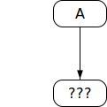

This specification is developed on GitHub with the help of the ECMAScript community. There are a number of ways to contribute to the development of this specification:
Refer to the colophon for more information on how this document is created.
Introduction
This Ecma Standard defines the ECMAScript 2020 Language. It is the tenth edition of the ECMAScript Language Specification. Since publication of the first edition in 1997, ECMAScript has grown to be one of the world's most widely used general-purpose programming languages. It is best known as the language embedded in web browsers but has also been widely adopted for server and embedded applications.
ECMAScript is based on several originating technologies, the most well-known being JavaScript (Netscape) and JScript (Microsoft). The language was invented by Brendan Eich at Netscape and first appeared in that company's Navigator 2.0 browser. It has appeared in all subsequent browsers from Netscape and in all browsers from Microsoft starting with Internet Explorer 3.0.
The development of the ECMAScript Language Specification started in November 1996. The first edition of this Ecma Standard was adopted by the Ecma General Assembly of June 1997.
That Ecma Standard was submitted to ISO/IEC JTC 1 for adoption under the fast-track procedure, and approved as international standard ISO/IEC 16262, in April 1998. The Ecma General Assembly of June 1998 approved the second edition of ECMA-262 to keep it fully aligned with ISO/IEC 16262. Changes between the first and the second edition are editorial in nature.
The third edition of the Standard introduced powerful regular expressions, better string handling, new control statements, try/catch exception handling, tighter definition of errors, formatting for numeric output and minor changes in anticipation of future language growth. The third edition of the ECMAScript standard was adopted by the Ecma General Assembly of December 1999 and published as ISO/IEC 16262:2002 in June 2002.
After publication of the third edition, ECMAScript achieved massive adoption in conjunction with the World Wide Web where it has become the programming language that is supported by essentially all web browsers. Significant work was done to develop a fourth edition of ECMAScript. However, that work was not completed and not published as the fourth edition of ECMAScript but some of it was incorporated into the development of the sixth edition.
The fifth edition of ECMAScript (published as ECMA-262 5th edition) codified de facto interpretations of the language specification that have become common among browser implementations and added support for new features that had emerged since the publication of the third edition. Such features include accessor properties, reflective creation and inspection of objects, program control of property attributes, additional array manipulation functions, support for the JSON object encoding format, and a strict mode that provides enhanced error checking and program security. The fifth edition was adopted by the Ecma General Assembly of December 2009.
The fifth edition was submitted to ISO/IEC JTC 1 for adoption under the fast-track procedure, and approved as international standard ISO/IEC 16262:2011. Edition 5.1 of the ECMAScript Standard incorporated minor corrections and is the same text as ISO/IEC 16262:2011. The 5.1 Edition was adopted by the Ecma General Assembly of June 2011.
Focused development of the sixth edition started in 2009, as the fifth edition was being prepared for publication. However, this was preceded by significant experimentation and language enhancement design efforts dating to the publication of the third edition in 1999. In a very real sense, the completion of the sixth edition is the culmination of a fifteen year effort. The goals for this edition included providing better support for large applications, library creation, and for use of ECMAScript as a compilation target for other languages. Some of its major enhancements included modules, class declarations, lexical block scoping, iterators and generators, promises for asynchronous programming, destructuring patterns, and proper tail calls. The ECMAScript library of built-ins was expanded to support additional data abstractions including maps, sets, and arrays of binary numeric values as well as additional support for Unicode supplemental characters in strings and regular expressions. The built-ins were also made extensible via subclassing. The sixth edition provides the foundation for regular, incremental language and library enhancements. The sixth edition was adopted by the General Assembly of June 2015.
ECMAScript 2016 was the first ECMAScript edition released under Ecma TC39's new yearly release cadence and open development process. A plain-text source document was built from the ECMAScript 2015 source document to serve as the base for further development entirely on GitHub. Over the year of this standard's development, hundreds of pull requests and issues were filed representing thousands of bug fixes, editorial fixes and other improvements. Additionally, numerous software tools were developed to aid in this effort including Ecmarkup, Ecmarkdown, and Grammarkdown. ES2016 also included support for a new exponentiation operator and adds a new method to Array.prototype called `includes`.
ECMAScript 2017 introduced Async Functions, Shared Memory, and Atomics along with smaller language and library enhancements, bug fixes, and editorial updates. Async functions improve the asynchronous programming experience by providing syntax for promise-returning functions. Shared Memory and Atomics introduce a new memory model that allows multi-agent programs to communicate using atomic operations that ensure a well-defined execution order even on parallel CPUs. This specification also includes new static methods on Object: `Object.values`, `Object.entries`, and `Object.getOwnPropertyDescriptors`.
ECMAScript 2018 introduced support for asynchronous iteration via the AsyncIterator protocol and async generators. It also included four new regular expression features: the dotAll flag, named capture groups, Unicode property escapes, and look-behind assertions. Lastly it included rest parameter and spread operator support for object properties.
This specification, the 10th edition, introduces a few new built-in functions: `flat` and `flatMap` on `Array.prototype` for flattening arrays, `Object.fromEntries` for directly turning the return value of `Object.entries` into a new Object, and `trimStart` and `trimEnd` on `String.prototype` as better-named alternatives to the widely implemented but non-standard `String.prototype.trimLeft` and `trimRight` built-ins. In addition, this specification includes a few minor updates to syntax and semantics. Updated syntax includes optional catch binding parameters and allowing U+2028 (LINE SEPARATOR) and U+2029 (PARAGRAPH SEPARATOR) in string literals to align with JSON. Other updates include requiring that `Array.prototype.sort` be a stable sort, requiring that JSON.stringify return well-formed UTF-8 regardless of input, and clarifying `Function.prototype.toString` by requiring that it either return the corresponding original source text or a standard placeholder.
Dozens of individuals representing many organizations have made very significant contributions within Ecma TC39 to the development of this edition and to the prior editions. In addition, a vibrant community has emerged supporting TC39's ECMAScript efforts. This community has reviewed numerous drafts, filed thousands of bug reports, performed implementation experiments, contributed test suites, and educated the world-wide developer community about ECMAScript. Unfortunately, it is impossible to identify and acknowledge every person and organization who has contributed to this effort.
Allen Wirfs-Brock
ECMA-262, Project Editor, 6th Edition
Brian Terlson
ECMA-262, Project Editor, 7th through 10th Editions
Scope
This Standard defines the ECMAScript 2020 general-purpose programming language.
Conformance
A conforming implementation of ECMAScript must provide and support all the types, values, objects, properties, functions, and program syntax and semantics described in this specification.
A conforming implementation of ECMAScript must interpret source text input in conformance with the latest version of the Unicode Standard and ISO/IEC 10646.
A conforming implementation of ECMAScript that provides an application programming interface (API) that supports programs that need to adapt to the linguistic and cultural conventions used by different human languages and countries must implement the interface defined by the most recent edition of ECMA-402 that is compatible with this specification.
A conforming implementation of ECMAScript may provide additional types, values, objects, properties, and functions beyond those described in this specification. In particular, a conforming implementation of ECMAScript may provide properties not described in this specification, and values for those properties, for objects that are described in this specification.
A conforming implementation of ECMAScript may support program and regular expression syntax not described in this specification. In particular, a conforming implementation of ECMAScript may support program syntax that makes use of the “future reserved words” listed in subclause of this specification.
A conforming implementation of ECMAScript must not implement any extension that is listed as a Forbidden Extension in subclause .
Normative References
The following referenced documents are indispensable for the application of this document. For dated references, only the edition cited applies. For undated references, the latest edition of the referenced document (including any amendments) applies.
ISO/IEC 10646 Information Technology – Universal Multiple-Octet Coded Character Set (UCS) plus Amendment 1:2005, Amendment 2:2006, Amendment 3:2008, and Amendment 4:2008, plus additional amendments and corrigenda, or successor
This section contains a non-normative overview of the ECMAScript language.
ECMAScript is an object-oriented programming language for performing computations and manipulating computational objects within a host environment. ECMAScript as defined here is not intended to be computationally self-sufficient; indeed, there are no provisions in this specification for input of external data or output of computed results. Instead, it is expected that the computational environment of an ECMAScript program will provide not only the objects and other facilities described in this specification but also certain environment-specific objects, whose description and behaviour are beyond the scope of this specification except to indicate that they may provide certain properties that can be accessed and certain functions that can be called from an ECMAScript program.
ECMAScript was originally designed to be used as a scripting language, but has become widely used as a general-purpose programming language. A scripting language is a programming language that is used to manipulate, customize, and automate the facilities of an existing system. In such systems, useful functionality is already available through a user interface, and the scripting language is a mechanism for exposing that functionality to program control. In this way, the existing system is said to provide a host environment of objects and facilities, which completes the capabilities of the scripting language. A scripting language is intended for use by both professional and non-professional programmers.
ECMAScript was originally designed to be a Web scripting language, providing a mechanism to enliven Web pages in browsers and to perform server computation as part of a Web-based client-server architecture. ECMAScript is now used to provide core scripting capabilities for a variety of host environments. Therefore the core language is specified in this document apart from any particular host environment.
ECMAScript usage has moved beyond simple scripting and it is now used for the full spectrum of programming tasks in many different environments and scales. As the usage of ECMAScript has expanded, so have the features and facilities it provides. ECMAScript is now a fully featured general-purpose programming language.
Some of the facilities of ECMAScript are similar to those used in other programming languages; in particular C, Java™, Self, and Scheme as described in:
ISO/IEC 9899:1996, Programming Languages – C.
Gosling, James, Bill Joy and Guy Steele. The Java™ Language Specification. Addison Wesley Publishing Co., 1996.
Ungar, David, and Smith, Randall B. Self: The Power of Simplicity. OOPSLA '87 Conference Proceedings, pp. 227-241, Orlando, FL, October 1987.
IEEE Standard for the Scheme Programming Language. IEEE Std 1178-1990.
Web Scripting
A web browser provides an ECMAScript host environment for client-side computation including, for instance, objects that represent windows, menus, pop-ups, dialog boxes, text areas, anchors, frames, history, cookies, and input/output. Further, the host environment provides a means to attach scripting code to events such as change of focus, page and image loading, unloading, error and abort, selection, form submission, and mouse actions. Scripting code appears within the HTML and the displayed page is a combination of user interface elements and fixed and computed text and images. The scripting code is reactive to user interaction, and there is no need for a main program.
A web server provides a different host environment for server-side computation including objects representing requests, clients, and files; and mechanisms to lock and share data. By using browser-side and server-side scripting together, it is possible to distribute computation between the client and server while providing a customized user interface for a Web-based application.
Each Web browser and server that supports ECMAScript supplies its own host environment, completing the ECMAScript execution environment.
ECMAScript Overview
The following is an informal overview of ECMAScript—not all parts of the language are described. This overview is not part of the standard proper.
ECMAScript is object-based: basic language and host facilities are provided by objects, and an ECMAScript program is a cluster of communicating objects. In ECMAScript, an object is a collection of zero or more properties each with attributes that determine how each property can be used—for example, when the Writable attribute for a property is set to *false*, any attempt by executed ECMAScript code to assign a different value to the property fails. Properties are containers that hold other objects, primitive values, or functions. A primitive value is a member of one of the following built-in types: Undefined, Null, Boolean, Number, String, and Symbol; an object is a member of the built-in type Object; and a function is a callable object. A function that is associated with an object via a property is called a method.
ECMAScript defines a collection of built-in objects that round out the definition of ECMAScript entities. These built-in objects include the global object; objects that are fundamental to the runtime semantics of the language including `Object`, `Function`, `Boolean`, `Symbol`, and various `Error` objects; objects that represent and manipulate numeric values including `Math`, `Number`, and `Date`; the text processing objects `String` and `RegExp`; objects that are indexed collections of values including `Array` and nine different kinds of Typed Arrays whose elements all have a specific numeric data representation; keyed collections including `Map` and `Set` objects; objects supporting structured data including the `JSON` object, `ArrayBuffer`, `SharedArrayBuffer`, and `DataView`; objects supporting control abstractions including generator functions and `Promise` objects; and reflection objects including `Proxy` and `Reflect`.
ECMAScript also defines a set of built-in operators. ECMAScript operators include various unary operations, multiplicative operators, additive operators, bitwise shift operators, relational operators, equality operators, binary bitwise operators, binary logical operators, assignment operators, and the comma operator.
Large ECMAScript programs are supported by modules which allow a program to be divided into multiple sequences of statements and declarations. Each module explicitly identifies declarations it uses that need to be provided by other modules and which of its declarations are available for use by other modules.
ECMAScript syntax intentionally resembles Java syntax. ECMAScript syntax is relaxed to enable it to serve as an easy-to-use scripting language. For example, a variable is not required to have its type declared nor are types associated with properties, and defined functions are not required to have their declarations appear textually before calls to them.
Objects
Even though ECMAScript includes syntax for class definitions, ECMAScript objects are not fundamentally class-based such as those in C++, Smalltalk, or Java. Instead objects may be created in various ways including via a literal notation or via constructors which create objects and then execute code that initializes all or part of them by assigning initial values to their properties. Each constructor is a function that has a property named `"prototype"` that is used to implement prototype-based inheritance and shared properties. Objects are created by using constructors in new expressions; for example, `new Date(2009, 11)` creates a new Date object. Invoking a constructor without using new has consequences that depend on the constructor. For example, `Date()` produces a string representation of the current date and time rather than an object.
Every object created by a constructor has an implicit reference (called the object's prototype) to the value of its constructor's `"prototype"` property. Furthermore, a prototype may have a non-null implicit reference to its prototype, and so on; this is called the prototype chain. When a reference is made to a property in an object, that reference is to the property of that name in the first object in the prototype chain that contains a property of that name. In other words, first the object mentioned directly is examined for such a property; if that object contains the named property, that is the property to which the reference refers; if that object does not contain the named property, the prototype for that object is examined next; and so on.
In a class-based object-oriented language, in general, state is carried by instances, methods are carried by classes, and inheritance is only of structure and behaviour. In ECMAScript, the state and methods are carried by objects, while structure, behaviour, and state are all inherited.
All objects that do not directly contain a particular property that their prototype contains share that property and its value. Figure 1 illustrates this:
CF is a constructor (and also an object). Five objects have been created by using `new` expressions: cf1, cf2, cf3, cf4, and cf5. Each of these objects contains properties named `q1` and `q2`. The dashed lines represent the implicit prototype relationship; so, for example, cf3's prototype is CFp. The constructor, CF, has two properties itself, named `P1` and `P2`, which are not visible to CFp, cf1, cf2, cf3, cf4, or cf5. The property named `CFP1` in CFp is shared by cf1, cf2, cf3, cf4, and cf5 (but not by CF), as are any properties found in CFp's implicit prototype chain that are not named `q1`, `q2`, or `CFP1`. Notice that there is no implicit prototype link between CF and CFp.
Unlike most class-based object languages, properties can be added to objects dynamically by assigning values to them. That is, constructors are not required to name or assign values to all or any of the constructed object's properties. In the above diagram, one could add a new shared property for cf1, cf2, cf3, cf4, and cf5 by assigning a new value to the property in CFp.
Although ECMAScript objects are not inherently class-based, it is often convenient to define class-like abstractions based upon a common pattern of constructor functions, prototype objects, and methods. The ECMAScript built-in objects themselves follow such a class-like pattern. Beginning with ECMAScript 2015, the ECMAScript language includes syntactic class definitions that permit programmers to concisely define objects that conform to the same class-like abstraction pattern used by the built-in objects.
The Strict Variant of ECMAScript
The ECMAScript Language recognizes the possibility that some users of the language may wish to restrict their usage of some features available in the language. They might do so in the interests of security, to avoid what they consider to be error-prone features, to get enhanced error checking, or for other reasons of their choosing. In support of this possibility, ECMAScript defines a strict variant of the language. The strict variant of the language excludes some specific syntactic and semantic features of the regular ECMAScript language and modifies the detailed semantics of some features. The strict variant also specifies additional error conditions that must be reported by throwing error exceptions in situations that are not specified as errors by the non-strict form of the language.
The strict variant of ECMAScript is commonly referred to as the strict mode of the language. Strict mode selection and use of the strict mode syntax and semantics of ECMAScript is explicitly made at the level of individual ECMAScript source text units. Because strict mode is selected at the level of a syntactic source text unit, strict mode only imposes restrictions that have local effect within such a source text unit. Strict mode does not restrict or modify any aspect of the ECMAScript semantics that must operate consistently across multiple source text units. A complete ECMAScript program may be composed of both strict mode and non-strict mode ECMAScript source text units. In this case, strict mode only applies when actually executing code that is defined within a strict mode source text unit.
In order to conform to this specification, an ECMAScript implementation must implement both the full unrestricted ECMAScript language and the strict variant of the ECMAScript language as defined by this specification. In addition, an implementation must support the combination of unrestricted and strict mode source text units into a single composite program.
Terms and Definitions
For the purposes of this document, the following terms and definitions apply.
type
set of data values as defined in clause of this specification
primitive value
member of one of the types Undefined, Null, Boolean, Number, Symbol, or String as defined in clause
A primitive value is a datum that is represented directly at the lowest level of the language implementation.
object
member of the type Object
An object is a collection of properties and has a single prototype object. The prototype may be the null value.
constructor
function object that creates and initializes objects
The value of a constructor's `prototype` property is a prototype object that is used to implement inheritance and shared properties.
prototype
object that provides shared properties for other objects
When a constructor creates an object, that object implicitly references the constructor's `prototype` property for the purpose of resolving property references. The constructor's `prototype` property can be referenced by the program expression constructor.prototype, and properties added to an object's prototype are shared, through inheritance, by all objects sharing the prototype. Alternatively, a new object may be created with an explicitly specified prototype by using the `Object.create` built-in function.
ordinary object
object that has the default behaviour for the essential internal methods that must be supported by all objects
exotic object
object that does not have the default behaviour for one or more of the essential internal methods
Any object that is not an ordinary object is an exotic object.
standard object
object whose semantics are defined by this specification
built-in object
object specified and supplied by an ECMAScript implementation
Standard built-in objects are defined in this specification. An ECMAScript implementation may specify and supply additional kinds of built-in objects. A built-in constructor is a built-in object that is also a constructor.
undefined value
primitive value used when a variable has not been assigned a value
Undefined type
type whose sole value is the *undefined* value
null value
primitive value that represents the intentional absence of any object value
Null type
type whose sole value is the *null* value
Boolean value
member of the Boolean type
There are only two Boolean values, *true* and *false*.
Boolean type
type consisting of the primitive values *true* and *false*
Boolean object
member of the Object type that is an instance of the standard built-in `Boolean` constructor
A Boolean object is created by using the `Boolean` constructor in a `new` expression, supplying a Boolean value as an argument. The resulting object has an internal slot whose value is the Boolean value. A Boolean object can be coerced to a Boolean value.
String value
primitive value that is a finite ordered sequence of zero or more 16-bit unsigned integer values
A String value is a member of the String type. Each integer value in the sequence usually represents a single 16-bit unit of UTF-16 text. However, ECMAScript does not place any restrictions or requirements on the values except that they must be 16-bit unsigned integers.
String type
set of all possible String values
String object
member of the Object type that is an instance of the standard built-in `String` constructor
A String object is created by using the `String` constructor in a `new` expression, supplying a String value as an argument. The resulting object has an internal slot whose value is the String value. A String object can be coerced to a String value by calling the `String` constructor as a function ().
Number value
primitive value corresponding to a double-precision 64-bit binary format IEEE 754-2008 value
A Number value is a member of the Number type and is a direct representation of a number.
Number type
set of all possible Number values including the special “Not-a-Number” (NaN) value, positive infinity, and negative infinity
Number object
member of the Object type that is an instance of the standard built-in `Number` constructor
A Number object is created by using the `Number` constructor in a `new` expression, supplying a number value as an argument. The resulting object has an internal slot whose value is the number value. A Number object can be coerced to a number value by calling the `Number` constructor as a function ().
Infinity
number value that is the positive infinite number value
NaN
number value that is an IEEE 754-2008 “Not-a-Number” value
Symbol value
primitive value that represents a unique, non-String Object property key
Symbol type
set of all possible Symbol values
Symbol object
member of the Object type that is an instance of the standard built-in `Symbol` constructor
function
member of the Object type that may be invoked as a subroutine
In addition to its properties, a function contains executable code and state that determine how it behaves when invoked. A function's code may or may not be written in ECMAScript.
built-in function
built-in object that is a function
Examples of built-in functions include `parseInt` and `Math.exp`. An implementation may provide implementation-dependent built-in functions that are not described in this specification.
property
part of an object that associates a key (either a String value or a Symbol value) and a value
Depending upon the form of the property the value may be represented either directly as a data value (a primitive value, an object, or a function object) or indirectly by a pair of accessor functions.
method
function that is the value of a property
When a function is called as a method of an object, the object is passed to the function as its *this* value.
built-in method
method that is a built-in function
Standard built-in methods are defined in this specification, and an ECMAScript implementation may specify and provide other additional built-in methods.
attribute
internal value that defines some characteristic of a property
own property
property that is directly contained by its object
inherited property
property of an object that is not an own property but is a property (either own or inherited) of the object's prototype
Organization of This Specification
The remainder of this specification is organized as follows:
Clause 5 defines the notational conventions used throughout the specification.
Clauses 6-9 define the execution environment within which ECMAScript programs operate.
Clauses 10-16 define the actual ECMAScript programming language including its syntactic encoding and the execution semantics of all language features.
Clauses 17-26 define the ECMAScript standard library. They include the definitions of all of the standard objects that are available for use by ECMAScript programs as they execute.
Clause 27 describes the memory consistency model of accesses on SharedArrayBuffer-backed memory and methods of the Atomics object.
Notational Conventions
Syntactic and Lexical Grammars
Context-Free Grammars
A context-free grammar consists of a number of productions. Each production has an abstract symbol called a nonterminal as its left-hand side, and a sequence of zero or more nonterminal and terminal symbols as its right-hand side. For each grammar, the terminal symbols are drawn from a specified alphabet.
A chain production is a production that has exactly one nonterminal symbol on its right-hand side along with zero or more terminal symbols.
Starting from a sentence consisting of a single distinguished nonterminal, called the goal symbol, a given context-free grammar specifies a language, namely, the (perhaps infinite) set of possible sequences of terminal symbols that can result from repeatedly replacing any nonterminal in the sequence with a right-hand side of a production for which the nonterminal is the left-hand side.
The Lexical and RegExp Grammars
A lexical grammar for ECMAScript is given in clause . This grammar has as its terminal symbols Unicode code points that conform to the rules for |SourceCharacter| defined in . It defines a set of productions, starting from the goal symbol |InputElementDiv|, |InputElementTemplateTail|, or |InputElementRegExp|, or |InputElementRegExpOrTemplateTail|, that describe how sequences of such code points are translated into a sequence of input elements.
Input elements other than white space and comments form the terminal symbols for the syntactic grammar for ECMAScript and are called ECMAScript tokens. These tokens are the reserved words, identifiers, literals, and punctuators of the ECMAScript language. Moreover, line terminators, although not considered to be tokens, also become part of the stream of input elements and guide the process of automatic semicolon insertion (). Simple white space and single-line comments are discarded and do not appear in the stream of input elements for the syntactic grammar. A |MultiLineComment| (that is, a comment of the form `/*`…`*/` regardless of whether it spans more than one line) is likewise simply discarded if it contains no line terminator; but if a |MultiLineComment| contains one or more line terminators, then it is replaced by a single line terminator, which becomes part of the stream of input elements for the syntactic grammar.
A RegExp grammar for ECMAScript is given in . This grammar also has as its terminal symbols the code points as defined by |SourceCharacter|. It defines a set of productions, starting from the goal symbol |Pattern|, that describe how sequences of code points are translated into regular expression patterns.
Productions of the lexical and RegExp grammars are distinguished by having two colons “::” as separating punctuation. The lexical and RegExp grammars share some productions.
The Numeric String Grammar
Another grammar is used for translating Strings into numeric values. This grammar is similar to the part of the lexical grammar having to do with numeric literals and has as its terminal symbols |SourceCharacter|. This grammar appears in .
Productions of the numeric string grammar are distinguished by having three colons “:::” as punctuation.
The Syntactic Grammar
The syntactic grammar for ECMAScript is given in clauses 11, 12, 13, 14, and 15. This grammar has ECMAScript tokens defined by the lexical grammar as its terminal symbols (). It defines a set of productions, starting from two alternative goal symbols |Script| and |Module|, that describe how sequences of tokens form syntactically correct independent components of ECMAScript programs.
When a stream of code points is to be parsed as an ECMAScript |Script| or |Module|, it is first converted to a stream of input elements by repeated application of the lexical grammar; this stream of input elements is then parsed by a single application of the syntactic grammar. The input stream is syntactically in error if the tokens in the stream of input elements cannot be parsed as a single instance of the goal nonterminal (|Script| or |Module|), with no tokens left over.
When a parse is successful, it constructs a parse tree, a rooted tree structure in which each node is a Parse Node. Each Parse Node is an instance of a symbol in the grammar; it represents a span of the source text that can be derived from that symbol. The root node of the parse tree, representing the whole of the source text, is an instance of the parse's goal symbol. When a Parse Node is an instance of a nonterminal, it is also an instance of some production that has that nonterminal as its left-hand side. Moreover, it has zero or more children, one for each symbol on the production's right-hand side: each child is a Parse Node that is an instance of the corresponding symbol.
New Parse Nodes are instantiated for each invocation of the parser and never reused between parses even of identical source text. Parse Nodes are considered the same Parse Node if and only if they represent the same span of source text, are instances of the same grammar symbol, and resulted from the same parser invocation.
Parsing the same String multiple times will lead to different Parse Nodes, e.g., as occurs in:
eval(str); eval(str);
Parse Nodes are specification artefacts, and implementations are not required to use an analogous data structure.
Productions of the syntactic grammar are distinguished by having just one colon “:” as punctuation.
The syntactic grammar as presented in clauses 12, 13, 14 and 15 is not a complete account of which token sequences are accepted as a correct ECMAScript |Script| or |Module|. Certain additional token sequences are also accepted, namely, those that would be described by the grammar if only semicolons were added to the sequence in certain places (such as before line terminator characters). Furthermore, certain token sequences that are described by the grammar are not considered acceptable if a line terminator character appears in certain “awkward” places.
In certain cases, in order to avoid ambiguities, the syntactic grammar uses generalized productions that permit token sequences that do not form a valid ECMAScript |Script| or |Module|. For example, this technique is used for object literals and object destructuring patterns. In such cases a more restrictive supplemental grammar is provided that further restricts the acceptable token sequences. Typically, an early error rule will then define an error condition if "_P_ is not covering an _N_", where _P_ is a Parse Node (an instance of the generalized production) and _N_ is a nonterminal from the supplemental grammar. Here, the sequence of tokens originally matched by _P_ is parsed again using _N_ as the goal symbol. (If _N_ takes grammatical parameters, then they are set to the same values used when _P_ was originally parsed.) An error occurs if the sequence of tokens cannot be parsed as a single instance of _N_, with no tokens left over. Subsequently, algorithms access the result of the parse using a phrase of the form "the _N_ that is covered by _P_". This will always be a Parse Node (an instance of _N_, unique for a given _P_), since any parsing failure would have been detected by an early error rule.
Grammar Notation
Terminal symbols of the lexical, RegExp, and numeric string grammars are shown in `fixed width` font, both in the productions of the grammars and throughout this specification whenever the text directly refers to such a terminal symbol. These are to appear in a script exactly as written. All terminal symbol code points specified in this way are to be understood as the appropriate Unicode code points from the Basic Latin range, as opposed to any similar-looking code points from other Unicode ranges.
Nonterminal symbols are shown in italic type. The definition of a nonterminal (also called a “production”) is introduced by the name of the nonterminal being defined followed by one or more colons. (The number of colons indicates to which grammar the production belongs.) One or more alternative right-hand sides for the nonterminal then follow on succeeding lines. For example, the syntactic definition:
states that the nonterminal |WhileStatement| represents the token `while`, followed by a left parenthesis token, followed by an |Expression|, followed by a right parenthesis token, followed by a |Statement|. The occurrences of |Expression| and |Statement| are themselves nonterminals. As another example, the syntactic definition:
states that an |ArgumentList| may represent either a single |AssignmentExpression| or an |ArgumentList|, followed by a comma, followed by an |AssignmentExpression|. This definition of |ArgumentList| is recursive, that is, it is defined in terms of itself. The result is that an |ArgumentList| may contain any positive number of arguments, separated by commas, where each argument expression is an |AssignmentExpression|. Such recursive definitions of nonterminals are common.
The subscripted suffix “opt”, which may appear after a terminal or nonterminal, indicates an optional symbol. The alternative containing the optional symbol actually specifies two right-hand sides, one that omits the optional element and one that includes it. This means that:
so, in this example, the nonterminal |IterationStatement| actually has four alternative right-hand sides.
A production may be parameterized by a subscripted annotation of the form “[parameters]”, which may appear as a suffix to the nonterminal symbol defined by the production. “parameters” may be either a single name or a comma separated list of names. A parameterized production is shorthand for a set of productions defining all combinations of the parameter names, preceded by an underscore, appended to the parameterized nonterminal symbol. This means that:
Prefixing a parameter name with “?” on a right-hand side nonterminal reference makes that parameter value dependent upon the occurrence of the parameter name on the reference to the current production's left-hand side symbol. For example:
If a right-hand side alternative is prefixed with “[+parameter]” that alternative is only available if the named parameter was used in referencing the production's nonterminal symbol. If a right-hand side alternative is prefixed with “[\~parameter]” that alternative is only available if the named parameter was not used in referencing the production's nonterminal symbol. This means that:
When the words “one of” follow the colon(s) in a grammar definition, they signify that each of the terminal symbols on the following line or lines is an alternative definition. For example, the lexical grammar for ECMAScript contains the production:
NonZeroDigit :: one of
`1` `2` `3` `4` `5` `6` `7` `8` `9`
If the phrase “[empty]” appears as the right-hand side of a production, it indicates that the production's right-hand side contains no terminals or nonterminals.
If the phrase “[lookahead ∉ _set_]” appears in the right-hand side of a production, it indicates that the production may not be used if the immediately following input token sequence is a member of the given _set_. The _set_ can be written as a comma separated list of one or two element terminal sequences enclosed in curly brackets. For convenience, the set can also be written as a nonterminal, in which case it represents the set of all terminals to which that nonterminal could expand. If the _set_ consists of a single terminal the phrase “[lookahead ≠ _terminal_]” may be used.
For example, given the definitions:
DecimalDigit :: one of
`0` `1` `2` `3` `4` `5` `6` `7` `8` `9`
DecimalDigits ::
DecimalDigit
DecimalDigits DecimalDigit
matches either the letter `n` followed by one or more decimal digits the first of which is even, or a decimal digit not followed by another decimal digit.
Similarly, if the phrase “[lookahead ∈ _set_]” appears in the right-hand side of a production, it indicates that the production may only be used if the immediately following input token sequence is a member of the given _set_. If the _set_ consists of a single terminal the phrase “[lookahead = _terminal_]” may be used.
If the phrase “[no |LineTerminator| here]” appears in the right-hand side of a production of the syntactic grammar, it indicates that the production is a restricted production: it may not be used if a |LineTerminator| occurs in the input stream at the indicated position. For example, the production:
indicates that the production may not be used if a |LineTerminator| occurs in the script between the `throw` token and the |Expression|.
Unless the presence of a |LineTerminator| is forbidden by a restricted production, any number of occurrences of |LineTerminator| may appear between any two consecutive tokens in the stream of input elements without affecting the syntactic acceptability of the script.
When an alternative in a production of the lexical grammar or the numeric string grammar appears to be a multi-code point token, it represents the sequence of code points that would make up such a token.
The right-hand side of a production may specify that certain expansions are not permitted by using the phrase “but not” and then indicating the expansions to be excluded. For example, the production:
Identifier ::
IdentifierName but not ReservedWord
means that the nonterminal |Identifier| may be replaced by any sequence of code points that could replace |IdentifierName| provided that the same sequence of code points could not replace |ReservedWord|.
Finally, a few nonterminal symbols are described by a descriptive phrase in sans-serif type in cases where it would be impractical to list all the alternatives:
SourceCharacter ::
> any Unicode code point
Algorithm Conventions
The specification often uses a numbered list to specify steps in an algorithm. These algorithms are used to precisely specify the required semantics of ECMAScript language constructs. The algorithms are not intended to imply the use of any specific implementation technique. In practice, there may be more efficient algorithms available to implement a given feature.
Algorithms may be explicitly parameterized, in which case the names and usage of the parameters must be provided as part of the algorithm's definition.
Algorithm steps may be subdivided into sequential substeps. Substeps are indented and may themselves be further divided into indented substeps. Outline numbering conventions are used to identify substeps with the first level of substeps labelled with lower case alphabetic characters and the second level of substeps labelled with lower case roman numerals. If more than three levels are required these rules repeat with the fourth level using numeric labels. For example:
A step or substep may be written as an “if” predicate that conditions its substeps. In this case, the substeps are only applied if the predicate is true. If a step or substep begins with the word “else”, it is a predicate that is the negation of the preceding “if” predicate step at the same level.
A step may specify the iterative application of its substeps.
A step that begins with “Assert:” asserts an invariant condition of its algorithm. Such assertions are used to make explicit algorithmic invariants that would otherwise be implicit. Such assertions add no additional semantic requirements and hence need not be checked by an implementation. They are used simply to clarify algorithms.
Algorithm steps may declare named aliases for any value using the form “Let _x_ be _someValue_”. These aliases are reference-like in that both _x_ and _someValue_ refer to the same underlying data and modifications to either are visible to both. Algorithm steps that want to avoid this reference-like behaviour should explicitly make a copy of the right-hand side: “Let _x_ be a copy of _someValue_” creates a shallow copy of _someValue_.
Once declared, an alias may be referenced in any subsequent steps and must not be referenced from steps prior to the alias's declaration. Aliases may be modified using the form “Set _x_ to _someOtherValue_”.
Abstract Operations
In order to facilitate their use in multiple parts of this specification, some algorithms, called abstract operations, are named and written in parameterized functional form so that they may be referenced by name from within other algorithms. Abstract operations are typically referenced using a functional application style such as OperationName(_arg1_, _arg2_). Some abstract operations are treated as polymorphically dispatched methods of class-like specification abstractions. Such method-like abstract operations are typically referenced using a method application style such as _someValue_.OperationName(_arg1_, _arg2_).
Syntax-Directed Operations
A syntax-directed operation is a named operation whose definition consists of algorithms, each of which is associated with one or more productions from one of the ECMAScript grammars. A production that has multiple alternative definitions will typically have a distinct algorithm for each alternative. When an algorithm is associated with a grammar production, it may reference the terminal and nonterminal symbols of the production alternative as if they were parameters of the algorithm. When used in this manner, nonterminal symbols refer to the actual alternative definition that is matched when parsing the source text. The source text matched by a grammar production is the portion of the source text that starts at the beginning of the first terminal that participated in the match and ends at the end of the last terminal that participated in the match.
When an algorithm is associated with a production alternative, the alternative is typically shown without any “[ ]” grammar annotations. Such annotations should only affect the syntactic recognition of the alternative and have no effect on the associated semantics for the alternative.
Syntax-directed operations are invoked with a parse node and, optionally, other parameters by using the conventions on steps 1, 3, and 4 in the following algorithm:
1. Let _status_ be the result of performing SyntaxDirectedOperation of |SomeNonTerminal|.
2. Let _someParseNode_ be the parse of some source text.
2. Perform SyntaxDirectedOperation of _someParseNode_.
2. Perform SyntaxDirectedOperation of _someParseNode_ passing `"value"` as the argument.
Unless explicitly specified otherwise, all chain productions have an implicit definition for every operation that might be applied to that production's left-hand side nonterminal. The implicit definition simply reapplies the same operation with the same parameters, if any, to the chain production's sole right-hand side nonterminal and then returns the result. For example, assume that some algorithm has a step of the form: “Return the result of evaluating |Block|” and that there is a production:
Block :
`{` StatementList `}`
but the Evaluation operation does not associate an algorithm with that production. In that case, the Evaluation operation implicitly includes an association of the form:
Runtime Semantics: Evaluation
Block : `{` StatementList `}`
1. Return the result of evaluating |StatementList|.
Runtime Semantics
Algorithms which specify semantics that must be called at runtime are called runtime semantics. Runtime semantics are defined by abstract operations or syntax-directed operations. Such algorithms always return a completion record.
Implicit Completion Values
The algorithms of this specification often implicitly return Completion Records whose [[Type]] is ~normal~. Unless it is otherwise obvious from the context, an algorithm statement that returns a value that is not a Completion Record, such as:
1. Return `"Infinity"`.
means the same thing as:
1. Return NormalCompletion(`"Infinity"`).
However, if the value expression of a “return” statement is a Completion Record construction literal, the resulting Completion Record is returned. If the value expression is a call to an abstract operation, the “return” statement simply returns the Completion Record produced by the abstract operation.
The abstract operation Completion(_completionRecord_) is used to emphasize that a previously computed Completion Record is being returned. The Completion abstract operation takes a single argument, _completionRecord_, and performs the following steps:
1. Assert: _completionRecord_ is a Completion Record.
1. Return _completionRecord_ as the Completion Record of this abstract operation.
A “return” statement without a value in an algorithm step means the same thing as:
1. Return NormalCompletion(*undefined*).
Any reference to a Completion Record value that is in a context that does not explicitly require a complete Completion Record value is equivalent to an explicit reference to the [[Value]] field of the Completion Record value unless the Completion Record is an abrupt completion.
Throw an Exception
Algorithms steps that say to throw an exception, such as
1. Throw a *TypeError* exception.
mean the same things as:
1. Return ThrowCompletion(a newly created *TypeError* object).
ReturnIfAbrupt
Algorithms steps that say or are otherwise equivalent to:
1. ReturnIfAbrupt(_argument_).
mean the same thing as:
1. If _argument_ is an abrupt completion, return _argument_.
1. Else if _argument_ is a Completion Record, set _argument_ to _argument_.[[Value]].
Algorithms steps that say or are otherwise equivalent to:
1. ReturnIfAbrupt(AbstractOperation()).
mean the same thing as:
1. Let _hygienicTemp_ be AbstractOperation().
1. If _hygienicTemp_ is an abrupt completion, return _hygienicTemp_.
1. Else if _hygienicTemp_ is a Completion Record, set _hygienicTemp_ to _hygienicTemp_.[[Value]].
Where _hygienicTemp_ is ephemeral and visible only in the steps pertaining to ReturnIfAbrupt.
Algorithms steps that say or are otherwise equivalent to:
1. Let _result_ be AbstractOperation(ReturnIfAbrupt(_argument_)).
mean the same thing as:
1. If _argument_ is an abrupt completion, return _argument_.
1. If _argument_ is a Completion Record, set _argument_ to _argument_.[[Value]].
1. Let _result_ be AbstractOperation(_argument_).
ReturnIfAbrupt Shorthands
Invocations of abstract operations and syntax-directed operations that are prefixed by `?` indicate that ReturnIfAbrupt should be applied to the resulting Completion Record. For example, the step:
1. ? OperationName().
is equivalent to the following step:
1. ReturnIfAbrupt(OperationName()).
Similarly, for method application style, the step:
1. ? _someValue_.OperationName().
is equivalent to:
1. ReturnIfAbrupt(_someValue_.OperationName()).
Similarly, prefix `!` is used to indicate that the following invocation of an abstract or syntax-directed operation will never return an abrupt completion and that the resulting Completion Record's [[Value]] field should be used in place of the return value of the operation. For example, the step:
1. Let _val_ be ! OperationName().
is equivalent to the following steps:
1. Let _val_ be OperationName().
1. Assert: _val_ is never an abrupt completion.
1. If _val_ is a Completion Record, set _val_ to _val_.[[Value]].
Syntax-directed operations for runtime semantics make use of this shorthand by placing `!` or `?` before the invocation of the operation:
1. Perform ! SyntaxDirectedOperation of |NonTerminal|.
Static Semantics
Context-free grammars are not sufficiently powerful to express all the rules that define whether a stream of input elements form a valid ECMAScript |Script| or |Module| that may be evaluated. In some situations additional rules are needed that may be expressed using either ECMAScript algorithm conventions or prose requirements. Such rules are always associated with a production of a grammar and are called the static semantics of the production.
Static Semantic Rules have names and typically are defined using an algorithm. Named Static Semantic Rules are associated with grammar productions and a production that has multiple alternative definitions will typically have for each alternative a distinct algorithm for each applicable named static semantic rule.
Unless otherwise specified every grammar production alternative in this specification implicitly has a definition for a static semantic rule named Contains which takes an argument named _symbol_ whose value is a terminal or nonterminal of the grammar that includes the associated production. The default definition of Contains is:
1. For each child node _child_ of this Parse Node, do
1. If _child_ is an instance of _symbol_, return *true*.
1. If _child_ is an instance of a nonterminal, then
1. Let _contained_ be the result of _child_ Contains _symbol_.
1. If _contained_ is *true*, return *true*.
1. Return *false*.
The above definition is explicitly over-ridden for specific productions.
A special kind of static semantic rule is an Early Error Rule. Early error rules define early error conditions (see clause ) that are associated with specific grammar productions. Evaluation of most early error rules are not explicitly invoked within the algorithms of this specification. A conforming implementation must, prior to the first evaluation of a |Script| or |Module|, validate all of the early error rules of the productions used to parse that |Script| or |Module|. If any of the early error rules are violated the |Script| or |Module| is invalid and cannot be evaluated.
Mathematical Operations
Mathematical operations such as addition, subtraction, negation, multiplication, division, and the mathematical functions defined later in this clause should always be understood as computing exact mathematical results on mathematical real numbers, which unless otherwise noted do not include infinities and do not include a negative zero that is distinguished from positive zero. Algorithms in this standard that model floating-point arithmetic include explicit steps, where necessary, to handle infinities and signed zero and to perform rounding. If a mathematical operation or function is applied to a floating-point number, it should be understood as being applied to the exact mathematical value represented by that floating-point number; such a floating-point number must be finite, and if it is *+0* or *-0* then the corresponding mathematical value is simply 0.
The mathematical function abs(_x_) produces the absolute value of _x_, which is -_x_ if _x_ is negative (less than zero) and otherwise is _x_ itself.
The mathematical function min(_x1_, _x2_, ..., _xN_) produces the mathematically smallest of _x1_ through _xN_. The mathematical function max(_x1_, _x2_, ..., _xN_) produces the mathematically largest of _x1_ through _xN_. The domain and range of these mathematical functions include *+∞* and *-∞*.
The notation “_x_ modulo _y_” (_y_ must be finite and nonzero) computes a value _k_ of the same sign as _y_ (or zero) such that abs(_k_) < abs(_y_) and _x_ - _k_ = _q_ × _y_ for some integer _q_.
The mathematical function floor(_x_) produces the largest integer (closest to positive infinity) that is not larger than _x_.
floor(_x_) = _x_ - (_x_ modulo 1).
ECMAScript Data Types and Values
Algorithms within this specification manipulate values each of which has an associated type. The possible value types are exactly those defined in this clause. Types are further subclassified into ECMAScript language types and specification types.
Within this specification, the notation “Type(_x_)” is used as shorthand for “the type of _x_” where “type” refers to the ECMAScript language and specification types defined in this clause. When the term “empty” is used as if it was naming a value, it is equivalent to saying “no value of any type”.
ECMAScript Language Types
An ECMAScript language type corresponds to values that are directly manipulated by an ECMAScript programmer using the ECMAScript language. The ECMAScript language types are Undefined, Null, Boolean, String, Symbol, Number, and Object. An ECMAScript language value is a value that is characterized by an ECMAScript language type.
The Undefined Type
The Undefined type has exactly one value, called *undefined*. Any variable that has not been assigned a value has the value *undefined*.
The Null Type
The Null type has exactly one value, called *null*.
The Boolean Type
The Boolean type represents a logical entity having two values, called *true* and *false*.
The String Type
The String type is the set of all ordered sequences of zero or more 16-bit unsigned integer values (“elements”) up to a maximum length of 253 - 1 elements. The String type is generally used to represent textual data in a running ECMAScript program, in which case each element in the String is treated as a UTF-16 code unit value. Each element is regarded as occupying a position within the sequence. These positions are indexed with nonnegative integers. The first element (if any) is at index 0, the next element (if any) at index 1, and so on. The length of a String is the number of elements (i.e., 16-bit values) within it. The empty String has length zero and therefore contains no elements.
ECMAScript operations that do not interpret String contents apply no further semantics. Operations that do interpret String values treat each element as a single UTF-16 code unit. However, ECMAScript does not restrict the value of or relationships between these code units, so operations that further interpret String contents as sequences of Unicode code points encoded in UTF-16 must account for ill-formed subsequences. Such operations apply special treatment to every code unit with a numeric value in the inclusive range 0xD800 to 0xDBFF (defined by the Unicode Standard as a leading surrogate, or more formally as a high-surrogate code unit) and every code unit with a numeric value in the inclusive range 0xDC00 to 0xDFFF (defined as a trailing surrogate, or more formally as a low-surrogate code unit) using the following rules:
A code unit that is not a and not a is interpreted as a code point with the same value.
A sequence of two code units, where the first code unit _c1_ is a and the second code unit _c2_ a , is a surrogate pair and is interpreted as a code point with the value (_c1_ - 0xD800) × 0x400 + (_c2_ - 0xDC00) + 0x10000. (See )
A code unit that is a or , but is not part of a , is interpreted as a code point with the same value.
The function `String.prototype.normalize` (see ) can be used to explicitly normalize a String value. `String.prototype.localeCompare` (see ) internally normalizes String values, but no other operations implicitly normalize the strings upon which they operate. Only operations that are explicitly specified to be language or locale sensitive produce language-sensitive results.
The rationale behind this design was to keep the implementation of Strings as simple and high-performing as possible. If ECMAScript source text is in Normalized Form C, string literals are guaranteed to also be normalized, as long as they do not contain any Unicode escape sequences.
In this specification, the phrase "the string-concatenation of _A_, _B_, ..." (where each argument is a String value, a code unit, or a sequence of code units) denotes the String value whose sequence of code units is the concatenation of the code units (in order) of each of the arguments (in order).
The Symbol Type
The Symbol type is the set of all non-String values that may be used as the key of an Object property ().
Each possible Symbol value is unique and immutable.
Each Symbol value immutably holds an associated value called [[Description]] that is either *undefined* or a String value.
Well-Known Symbols
Well-known symbols are built-in Symbol values that are explicitly referenced by algorithms of this specification. They are typically used as the keys of properties whose values serve as extension points of a specification algorithm. Unless otherwise specified, well-known symbols values are shared by all realms ().
Within this specification a well-known symbol is referred to by using a notation of the form @@name, where “name” is one of the values listed in .
Specification Name
[[Description]]
Value and Purpose
@@asyncIterator
`"Symbol.asyncIterator"`
A method that returns the default AsyncIterator for an object. Called by the semantics of the `for`-`await`-`of` statement.
@@hasInstance
`"Symbol.hasInstance"`
A method that determines if a constructor object recognizes an object as one of the constructor's instances. Called by the semantics of the `instanceof` operator.
@@isConcatSpreadable
`"Symbol.isConcatSpreadable"`
A Boolean valued property that if true indicates that an object should be flattened to its array elements by `Array.prototype.concat`.
@@iterator
`"Symbol.iterator"`
A method that returns the default Iterator for an object. Called by the semantics of the for-of statement.
@@match
`"Symbol.match"`
A regular expression method that matches the regular expression against a string. Called by the `String.prototype.match` method.
@@matchAll
`"Symbol.matchAll"`
A regular expression method that returns an iterator, that yields matches of the regular expression against a string. Called by the `String.prototype.matchAll` method.
@@replace
`"Symbol.replace"`
A regular expression method that replaces matched substrings of a string. Called by the `String.prototype.replace` method.
@@search
`"Symbol.search"`
A regular expression method that returns the index within a string that matches the regular expression. Called by the `String.prototype.search` method.
@@species
`"Symbol.species"`
A function valued property that is the constructor function that is used to create derived objects.
@@split
`"Symbol.split"`
A regular expression method that splits a string at the indices that match the regular expression. Called by the `String.prototype.split` method.
@@toPrimitive
`"Symbol.toPrimitive"`
A method that converts an object to a corresponding primitive value. Called by the ToPrimitive abstract operation.
@@toStringTag
`"Symbol.toStringTag"`
A String valued property that is used in the creation of the default string description of an object. Accessed by the built-in method `Object.prototype.toString`.
@@unscopables
`"Symbol.unscopables"`
An object valued property whose own and inherited property names are property names that are excluded from the `with` environment bindings of the associated object.
The Number Type
The Number type has exactly 18437736874454810627 (that is, 264 - 253 + 3) values, representing the double-precision 64-bit binary format IEEE 754-2008 values as specified in the IEEE Standard for Floating-Point Arithmetic, except that the 9007199254740990 (that is, 253 - 2) distinct “Not-a-Number” values of the IEEE Standard are represented in ECMAScript as a single special *NaN* value. (Note that the *NaN* value is produced by the program expression `NaN`.) In some implementations, external code might be able to detect a difference between various Not-a-Number values, but such behaviour is implementation-dependent; to ECMAScript code, all *NaN* values are indistinguishable from each other.
The bit pattern that might be observed in an ArrayBuffer (see ) or a SharedArrayBuffer (see ) after a Number value has been stored into it is not necessarily the same as the internal representation of that Number value used by the ECMAScript implementation.
There are two other special values, called *positive Infinity* and *negative Infinity*. For brevity, these values are also referred to for expository purposes by the symbols *+∞* and *-∞*, respectively. (Note that these two infinite Number values are produced by the program expressions `+Infinity` (or simply `Infinity`) and `-Infinity`.)
The other 18437736874454810624 (that is, 264 - 253) values are called the finite numbers. Half of these are positive numbers and half are negative numbers; for every finite positive Number value there is a corresponding negative value having the same magnitude.
Note that there is both a *positive zero* and a *negative zero*. For brevity, these values are also referred to for expository purposes by the symbols *+0* and *-0*, respectively. (Note that these two different zero Number values are produced by the program expressions `+0` (or simply `0`) and `-0`.)
The 18437736874454810622 (that is, 264 - 253 - 2) finite nonzero values are of two kinds:
18428729675200069632 (that is, 264 - 254) of them are normalized, having the form
_s_ × _m_ × 2_e_
where _s_ is +1 or -1, _m_ is a positive integer less than 253 but not less than 252, and _e_ is an integer ranging from -1074 to 971, inclusive.
The remaining 9007199254740990 (that is, 253 - 2) values are denormalized, having the form
_s_ × _m_ × 2_e_
where _s_ is +1 or -1, _m_ is a positive integer less than 252, and _e_ is -1074.
Note that all the positive and negative integers whose magnitude is no greater than 253 are representable in the Number type (indeed, the integer 0 has two representations, *+0* and *-0*).
A finite number has an odd significand if it is nonzero and the integer _m_ used to express it (in one of the two forms shown above) is odd. Otherwise, it has an even significand.
In this specification, the phrase “the Number value for _x_” where _x_ represents an exact real mathematical quantity (which might even be an irrational number such as π) means a Number value chosen in the following manner. Consider the set of all finite values of the Number type, with *-0* removed and with two additional values added to it that are not representable in the Number type, namely 21024 (which is +1 × 253 × 2971) and -21024 (which is -1 × 253 × 2971). Choose the member of this set that is closest in value to _x_. If two values of the set are equally close, then the one with an even significand is chosen; for this purpose, the two extra values 21024 and -21024 are considered to have even significands. Finally, if 21024 was chosen, replace it with *+∞*; if -21024 was chosen, replace it with *-∞*; if *+0* was chosen, replace it with *-0* if and only if _x_ is less than zero; any other chosen value is used unchanged. The result is the Number value for _x_. (This procedure corresponds exactly to the behaviour of the IEEE 754-2008 roundTiesToEven mode.)
Some ECMAScript operators deal only with integers in specific ranges such as -231 through 231 - 1, inclusive, or in the range 0 through 216 - 1, inclusive. These operators accept any value of the Number type but first convert each such value to an integer value in the expected range. See the descriptions of the numeric conversion operations in .
The Object Type
An Object is logically a collection of properties. Each property is either a data property, or an accessor property:
A data property associates a key value with an ECMAScript language value and a set of Boolean attributes.
An accessor property associates a key value with one or two accessor functions, and a set of Boolean attributes. The accessor functions are used to store or retrieve an ECMAScript language value that is associated with the property.
Properties are identified using key values. A property key value is either an ECMAScript String value or a Symbol value. All String and Symbol values, including the empty string, are valid as property keys. A property name is a property key that is a String value.
An integer index is a String-valued property key that is a canonical numeric String (see ) and whose numeric value is either *+0* or a positive integer ≤ 253 - 1. An array index is an integer index whose numeric value _i_ is in the range +0 ≤ _i_ < 232 - 1.
Property keys are used to access properties and their values. There are two kinds of access for properties: get and set, corresponding to value retrieval and assignment, respectively. The properties accessible via get and set access includes both own properties that are a direct part of an object and inherited properties which are provided by another associated object via a property inheritance relationship. Inherited properties may be either own or inherited properties of the associated object. Each own property of an object must each have a key value that is distinct from the key values of the other own properties of that object.
All objects are logically collections of properties, but there are multiple forms of objects that differ in their semantics for accessing and manipulating their properties. Ordinary objects are the most common form of objects and have the default object semantics. An exotic object is any form of object whose property semantics differ in any way from the default semantics.
Property Attributes
Attributes are used in this specification to define and explain the state of Object properties. A data property associates a key value with the attributes listed in .
Attribute Name
Value Domain
Description
[[Value]]
Any ECMAScript language type
The value retrieved by a get access of the property.
[[Writable]]
Boolean
If *false*, attempts by ECMAScript code to change the property's [[Value]] attribute using [[Set]] will not succeed.
[[Enumerable]]
Boolean
If *true*, the property will be enumerated by a for-in enumeration (see ). Otherwise, the property is said to be non-enumerable.
[[Configurable]]
Boolean
If *false*, attempts to delete the property, change the property to be an accessor property, or change its attributes (other than [[Value]], or changing [[Writable]] to *false*) will fail.
An accessor property associates a key value with the attributes listed in .
Attribute Name
Value Domain
Description
[[Get]]
Object | Undefined
If the value is an Object it must be a function object. The function's [[Call]] internal method () is called with an empty arguments list to retrieve the property value each time a get access of the property is performed.
[[Set]]
Object | Undefined
If the value is an Object it must be a function object. The function's [[Call]] internal method () is called with an arguments list containing the assigned value as its sole argument each time a set access of the property is performed. The effect of a property's [[Set]] internal method may, but is not required to, have an effect on the value returned by subsequent calls to the property's [[Get]] internal method.
[[Enumerable]]
Boolean
If *true*, the property is to be enumerated by a for-in enumeration (see ). Otherwise, the property is said to be non-enumerable.
[[Configurable]]
Boolean
If *false*, attempts to delete the property, change the property to be a data property, or change its attributes will fail.
If the initial values of a property's attributes are not explicitly specified by this specification, the default value defined in is used.
Attribute Name
Default Value
[[Value]]
*undefined*
[[Get]]
*undefined*
[[Set]]
*undefined*
[[Writable]]
*false*
[[Enumerable]]
*false*
[[Configurable]]
*false*
Object Internal Methods and Internal Slots
The actual semantics of objects, in ECMAScript, are specified via algorithms called internal methods. Each object in an ECMAScript engine is associated with a set of internal methods that defines its runtime behaviour. These internal methods are not part of the ECMAScript language. They are defined by this specification purely for expository purposes. However, each object within an implementation of ECMAScript must behave as specified by the internal methods associated with it. The exact manner in which this is accomplished is determined by the implementation.
Internal method names are polymorphic. This means that different object values may perform different algorithms when a common internal method name is invoked upon them. That actual object upon which an internal method is invoked is the “target” of the invocation. If, at runtime, the implementation of an algorithm attempts to use an internal method of an object that the object does not support, a *TypeError* exception is thrown.
Internal slots correspond to internal state that is associated with objects and used by various ECMAScript specification algorithms. Internal slots are not object properties and they are not inherited. Depending upon the specific internal slot specification, such state may consist of values of any ECMAScript language type or of specific ECMAScript specification type values. Unless explicitly specified otherwise, internal slots are allocated as part of the process of creating an object and may not be dynamically added to an object. Unless specified otherwise, the initial value of an internal slot is the value *undefined*. Various algorithms within this specification create objects that have internal slots. However, the ECMAScript language provides no direct way to associate internal slots with an object.
Internal methods and internal slots are identified within this specification using names enclosed in double square brackets [[ ]].
summarizes the essential internal methods used by this specification that are applicable to all objects created or manipulated by ECMAScript code. Every object must have algorithms for all of the essential internal methods. However, all objects do not necessarily use the same algorithms for those methods.
The “Signature” column of and other similar tables describes the invocation pattern for each internal method. The invocation pattern always includes a parenthesized list of descriptive parameter names. If a parameter name is the same as an ECMAScript type name then the name describes the required type of the parameter value. If an internal method explicitly returns a value, its parameter list is followed by the symbol “→” and the type name of the returned value. The type names used in signatures refer to the types defined in clause augmented by the following additional names. “any” means the value may be any ECMAScript language type. An internal method implicitly returns a Completion Record. In addition to its parameters, an internal method always has access to the object that is the target of the method invocation.
Internal Method
Signature
Description
[[GetPrototypeOf]]
( ) → Object | Null
Determine the object that provides inherited properties for this object. A *null* value indicates that there are no inherited properties.
[[SetPrototypeOf]]
(Object | Null) → Boolean
Associate this object with another object that provides inherited properties. Passing *null* indicates that there are no inherited properties. Returns *true* indicating that the operation was completed successfully or *false* indicating that the operation was not successful.
[[IsExtensible]]
( ) → Boolean
Determine whether it is permitted to add additional properties to this object.
[[PreventExtensions]]
( ) → Boolean
Control whether new properties may be added to this object. Returns *true* if the operation was successful or *false* if the operation was unsuccessful.
[[GetOwnProperty]]
(_propertyKey_) → Undefined | Property Descriptor
Return a Property Descriptor for the own property of this object whose key is _propertyKey_, or *undefined* if no such property exists.
[[DefineOwnProperty]]
(_propertyKey_, _PropertyDescriptor_) → Boolean
Create or alter the own property, whose key is _propertyKey_, to have the state described by _PropertyDescriptor_. Return *true* if that property was successfully created/updated or *false* if the property could not be created or updated.
[[HasProperty]]
(_propertyKey_) → Boolean
Return a Boolean value indicating whether this object already has either an own or inherited property whose key is _propertyKey_.
[[Get]]
(_propertyKey_, _Receiver_) →any
Return the value of the property whose key is _propertyKey_ from this object. If any ECMAScript code must be executed to retrieve the property value, _Receiver_ is used as the *this* value when evaluating the code.
[[Set]]
(_propertyKey_, _value_, _Receiver_) → Boolean
Set the value of the property whose key is _propertyKey_ to _value_. If any ECMAScript code must be executed to set the property value, _Receiver_ is used as the *this* value when evaluating the code. Returns *true* if the property value was set or *false* if it could not be set.
[[Delete]]
(_propertyKey_) → Boolean
Remove the own property whose key is _propertyKey_ from this object. Return *false* if the property was not deleted and is still present. Return *true* if the property was deleted or is not present.
[[OwnPropertyKeys]]
( ) → List of propertyKey
Return a List whose elements are all of the own property keys for the object.
summarizes additional essential internal methods that are supported by objects that may be called as functions. A function object is an object that supports the [[Call]] internal method. A constructor is an object that supports the [[Construct]] internal method. Every object that supports [[Construct]] must support [[Call]]; that is, every constructor must be a function object. Therefore, a constructor may also be referred to as a constructor function or constructor function object.
Internal Method
Signature
Description
[[Call]]
(any, a List of any) →any
Executes code associated with this object. Invoked via a function call expression. The arguments to the internal method are a *this* value and a list containing the arguments passed to the function by a call expression. Objects that implement this internal method are callable.
[[Construct]]
(a List of any, Object) → Object
Creates an object. Invoked via the `new` or `super` operators. The first argument to the internal method is a list containing the arguments of the operator. The second argument is the object to which the `new` operator was initially applied. Objects that implement this internal method are called constructors. A function object is not necessarily a constructor and such non-constructor function objects do not have a [[Construct]] internal method.
The semantics of the essential internal methods for ordinary objects and standard exotic objects are specified in clause . If any specified use of an internal method of an exotic object is not supported by an implementation, that usage must throw a *TypeError* exception when attempted.
Invariants of the Essential Internal Methods
The Internal Methods of Objects of an ECMAScript engine must conform to the list of invariants specified below. Ordinary ECMAScript Objects as well as all standard exotic objects in this specification maintain these invariants. ECMAScript Proxy objects maintain these invariants by means of runtime checks on the result of traps invoked on the [[ProxyHandler]] object.
Any implementation provided exotic objects must also maintain these invariants for those objects. Violation of these invariants may cause ECMAScript code to have unpredictable behaviour and create security issues. However, violation of these invariants must never compromise the memory safety of an implementation.
An implementation must not allow these invariants to be circumvented in any manner such as by providing alternative interfaces that implement the functionality of the essential internal methods without enforcing their invariants.
Definitions:
The target of an internal method is the object upon which the internal method is called.
A target is non-extensible if it has been observed to return *false* from its [[IsExtensible]] internal method, or *true* from its [[PreventExtensions]] internal method.
A non-existent property is a property that does not exist as an own property on a non-extensible target.
All references to SameValue are according to the definition of the SameValue algorithm.
[[GetPrototypeOf]] ( )
The Type of the return value must be either Object or Null.
If target is non-extensible, and [[GetPrototypeOf]] returns a value _V_, then any future calls to [[GetPrototypeOf]] should return the SameValue as _V_.
An object's prototype chain should have finite length (that is, starting from any object, recursively applying the [[GetPrototypeOf]] internal method to its result should eventually lead to the value *null*). However, this requirement is not enforceable as an object level invariant if the prototype chain includes any exotic objects that do not use the ordinary object definition of [[GetPrototypeOf]]. Such a circular prototype chain may result in infinite loops when accessing object properties.
[[SetPrototypeOf]] ( _V_ )
The Type of the return value must be Boolean.
If target is non-extensible, [[SetPrototypeOf]] must return *false*, unless _V_ is the SameValue as the target's observed [[GetPrototypeOf]] value.
[[IsExtensible]] ( )
The Type of the return value must be Boolean.
If [[IsExtensible]] returns *false*, all future calls to [[IsExtensible]] on the target must return *false*.
[[PreventExtensions]] ( )
The Type of the return value must be Boolean.
If [[PreventExtensions]] returns *true*, all future calls to [[IsExtensible]] on the target must return *false* and the target is now considered non-extensible.
[[GetOwnProperty]] ( _P_ )
The Type of the return value must be either Property Descriptor or Undefined.
If the Type of the return value is Property Descriptor, the return value must be a complete property descriptor.
If _P_ is described as a non-configurable, non-writable own data property, all future calls to [[GetOwnProperty]] ( _P_ ) must return Property Descritor whose [[Value]] is SameValue as _P_'s [[Value]] attribute.
If _P_'s attributes other than [[Writable]] may change over time or if the property might be deleted, then _P_'s [[Configurable]] attribute must be *true*.
If the [[Writable]] attribute may change from *false* to *true*, then the [[Configurable]] attribute must be *true*.
If the target is non-extensible and _P_ is non-existent, then all future calls to [[GetOwnProperty]] (_P_) on the target must describe _P_ as non-existent (i.e. [[GetOwnProperty]] (_P_) must return *undefined*).
As a consequence of the third invariant, if a property is described as a data property and it may return different values over time, then either or both of the [[Writable]] and [[Configurable]] attributes must be *true* even if no mechanism to change the value is exposed via the other internal methods.
[[DefineOwnProperty]] ( _P_, _Desc_ )
The Type of the return value must be Boolean.
[[DefineOwnProperty]] must return *false* if _P_ has previously been observed as a non-configurable own property of the target, unless either:
_P_ is a writable data property. A non-configurable writable data property can be changed into a non-configurable non-writable data property.
All attributes of _Desc_ are the SameValue as _P_'s attributes.
[[DefineOwnProperty]] (_P_, _Desc_) must return *false* if target is non-extensible and _P_ is a non-existent own property. That is, a non-extensible target object cannot be extended with new properties.
[[HasProperty]] ( _P_ )
The Type of the return value must be Boolean.
If _P_ was previously observed as a non-configurable own data or accessor property of the target, [[HasProperty]] must return *true*.
[[Get]] ( _P_, _Receiver_ )
If _P_ was previously observed as a non-configurable, non-writable own data property of the target with value _V_, then [[Get]] must return the SameValue as _V_.
If _P_ was previously observed as a non-configurable own accessor property of the target whose [[Get]] attribute is *undefined*, the [[Get]] operation must return *undefined*.
[[Set]] ( _P_, _V_, _Receiver_ )
The Type of the return value must be Boolean.
If _P_ was previously observed as a non-configurable, non-writable own data property of the target, then [[Set]] must return *false* unless _V_ is the SameValue as _P_'s [[Value]] attribute.
If _P_ was previously observed as a non-configurable own accessor property of the target whose [[Set]] attribute is *undefined*, the [[Set]] operation must return *false*.
[[Delete]] ( _P_ )
The Type of the return value must be Boolean.
If _P_ was previously observed as a non-configurable own data or accessor property of the target, [[Delete]] must return *false*.
[[OwnPropertyKeys]] ( )
The return value must be a List.
The returned List must not contain any duplicate entries.
The Type of each element of the returned List is either String or Symbol.
The returned List must contain at least the keys of all non-configurable own properties that have previously been observed.
If the object is non-extensible, the returned List must contain only the keys of all own properties of the object that are observable using [[GetOwnProperty]].
[[Construct]] ( )
The Type of the return value must be Object.
Well-Known Intrinsic Objects
Well-known intrinsics are built-in objects that are explicitly referenced by the algorithms of this specification and which usually have realm-specific identities. Unless otherwise specified each intrinsic object actually corresponds to a set of similar objects, one per realm.
Within this specification a reference such as %name% means the intrinsic object, associated with the current realm, corresponding to the name. Determination of the current realm and its intrinsics is described in . The well-known intrinsics are listed in .
Intrinsic Name
Global Name
ECMAScript Language Association
%Array%
`Array`
The `Array` constructor ()
%ArrayBuffer%
`ArrayBuffer`
The `ArrayBuffer` constructor ()
%ArrayBufferPrototype%
`ArrayBuffer.prototype`
The initial value of the `prototype` data property of %ArrayBuffer%.
%ArrayIteratorPrototype%
The prototype of Array iterator objects ()
%ArrayPrototype%
`Array.prototype`
The initial value of the `prototype` data property of %Array% ()
%ArrayProto_entries%
`Array.prototype.entries`
The initial value of the `entries` data property of %ArrayPrototype% ()
%ArrayProto_forEach%
`Array.prototype.forEach`
The initial value of the `forEach` data property of %ArrayPrototype% ()
%ArrayProto_keys%
`Array.prototype.keys`
The initial value of the `keys` data property of %ArrayPrototype% ()
%ArrayProto_values%
`Array.prototype.values`
The initial value of the `values` data property of %ArrayPrototype% ()
%AsyncFromSyncIteratorPrototype%
The prototype of async-from-sync iterator objects ()
%AsyncFunction%
The constructor of async function objects ()
%AsyncFunctionPrototype%
The initial value of the `prototype` data property of %AsyncFunction%
%AsyncGenerator%
The initial value of the `prototype` property of %AsyncGeneratorFunction%
%AsyncGeneratorFunction%
The constructor of async iterator objects ()
%AsyncGeneratorPrototype%
The initial value of the `prototype` property of %AsyncGenerator%
%AsyncIteratorPrototype%
An object that all standard built-in async iterator objects indirectly inherit from
%Atomics%
`Atomics`
The `Atomics` object ()
%Boolean%
`Boolean`
The `Boolean` constructor ()
%BooleanPrototype%
`Boolean.prototype`
The initial value of the `prototype` data property of %Boolean% ()
%DataView%
`DataView`
The `DataView` constructor ()
%DataViewPrototype%
`DataView.prototype`
The initial value of the `prototype` data property of %DataView%
%Date%
`Date`
The `Date` constructor ()
%DatePrototype%
`Date.prototype`
The initial value of the `prototype` data property of %Date%.
%decodeURI%
`decodeURI`
The `decodeURI` function ()
%decodeURIComponent%
`decodeURIComponent`
The `decodeURIComponent` function ()
%encodeURI%
`encodeURI`
The `encodeURI` function ()
%encodeURIComponent%
`encodeURIComponent`
The `encodeURIComponent` function ()
%Error%
`Error`
The `Error` constructor ()
%ErrorPrototype%
`Error.prototype`
The initial value of the `prototype` data property of %Error%
%eval%
`eval`
The `eval` function ()
%EvalError%
`EvalError`
The `EvalError` constructor ()
%EvalErrorPrototype%
`EvalError.prototype`
The initial value of the `prototype` data property of %EvalError%
%Float32Array%
`Float32Array`
The `Float32Array` constructor ()
%Float32ArrayPrototype%
`Float32Array.prototype`
The initial value of the `prototype` data property of %Float32Array%
%Float64Array%
`Float64Array`
The `Float64Array` constructor ()
%Float64ArrayPrototype%
`Float64Array.prototype`
The initial value of the `prototype` data property of %Float64Array%
%Function%
`Function`
The `Function` constructor ()
%FunctionPrototype%
`Function.prototype`
The initial value of the `prototype` data property of %Function%
%Generator%
The initial value of the `prototype` data property of %GeneratorFunction%
%GeneratorFunction%
The constructor of generator objects ()
%GeneratorPrototype%
The initial value of the `prototype` data property of %Generator%
%Int8Array%
`Int8Array`
The `Int8Array` constructor ()
%Int8ArrayPrototype%
`Int8Array.prototype`
The initial value of the `prototype` data property of %Int8Array%
%Int16Array%
`Int16Array`
The `Int16Array` constructor ()
%Int16ArrayPrototype%
`Int16Array.prototype`
The initial value of the `prototype` data property of %Int16Array%
%Int32Array%
`Int32Array`
The `Int32Array` constructor ()
%Int32ArrayPrototype%
`Int32Array.prototype`
The initial value of the `prototype` data property of %Int32Array%
%isFinite%
`isFinite`
The `isFinite` function ()
%isNaN%
`isNaN`
The `isNaN` function ()
%IteratorPrototype%
An object that all standard built-in iterator objects indirectly inherit from
%JSON%
`JSON`
The `JSON` object ()
%JSONParse%
`JSON.parse`
The initial value of the `parse` data property of %JSON%
%JSONStringify%
`JSON.stringify`
The initial value of the `stringify` data property of %JSON%
%Map%
`Map`
The `Map` constructor ()
%MapIteratorPrototype%
The prototype of Map iterator objects ()
%MapPrototype%
`Map.prototype`
The initial value of the `prototype` data property of %Map%
%Math%
`Math`
The `Math` object ()
%Number%
`Number`
The `Number` constructor ()
%NumberPrototype%
`Number.prototype`
The initial value of the `prototype` data property of %Number%
%Object%
`Object`
The `Object` constructor ()
%ObjectPrototype%
`Object.prototype`
The initial value of the `prototype` data property of %Object% ()
%ObjProto_toString%
`Object.prototype.toString`
The initial value of the `toString` data property of %ObjectPrototype% ()
%ObjProto_valueOf%
`Object.prototype.valueOf`
The initial value of the `valueOf` data property of %ObjectPrototype% ()
%parseFloat%
`parseFloat`
The `parseFloat` function ()
%parseInt%
`parseInt`
The `parseInt` function ()
%Promise%
`Promise`
The `Promise` constructor ()
%PromisePrototype%
`Promise.prototype`
The initial value of the `prototype` data property of %Promise%
%PromiseProto_then%
`Promise.prototype.then`
The initial value of the `then` data property of %PromisePrototype% ()
%Promise_all%
`Promise.all`
The initial value of the `all` data property of %Promise% ()
%Promise_reject%
`Promise.reject`
The initial value of the `reject` data property of %Promise% ()
%Promise_resolve%
`Promise.resolve`
The initial value of the `resolve` data property of %Promise% ()
%Proxy%
`Proxy`
The `Proxy` constructor ()
%RangeError%
`RangeError`
The `RangeError` constructor ()
%RangeErrorPrototype%
`RangeError.prototype`
The initial value of the `prototype` data property of %RangeError%
%ReferenceError%
`ReferenceError`
The `ReferenceError` constructor ()
%ReferenceErrorPrototype%
`ReferenceError.prototype`
The initial value of the `prototype` data property of %ReferenceError%
%Reflect%
`Reflect`
The `Reflect` object ()
%RegExp%
`RegExp`
The `RegExp` constructor ()
%RegExpPrototype%
`RegExp.prototype`
The initial value of the `prototype` data property of %RegExp%
%Set%
`Set`
The `Set` constructor ()
%SetIteratorPrototype%
The prototype of Set iterator objects ()
%SetPrototype%
`Set.prototype`
The initial value of the `prototype` data property of %Set%
%SharedArrayBuffer%
`SharedArrayBuffer`
The `SharedArrayBuffer` constructor ()
%SharedArrayBufferPrototype%
`SharedArrayBuffer.prototype`
The initial value of the `prototype` data property of %SharedArrayBuffer%
%String%
`String`
The `String` constructor ()
%StringIteratorPrototype%
The prototype of String iterator objects ()
%StringPrototype%
`String.prototype`
The initial value of the `prototype` data property of %String%
%Symbol%
`Symbol`
The `Symbol` constructor ()
%SymbolPrototype%
`Symbol.prototype`
The initial value of the `prototype` data property of %Symbol% ()
%SyntaxError%
`SyntaxError`
The `SyntaxError` constructor ()
%SyntaxErrorPrototype%
`SyntaxError.prototype`
The initial value of the `prototype` data property of %SyntaxError%
%ThrowTypeError%
A function object that unconditionally throws a new instance of %TypeError%
%TypedArray%
The super class of all typed Array constructors ()
%TypedArrayPrototype%
The initial value of the `prototype` data property of %TypedArray%
%TypeError%
`TypeError`
The `TypeError` constructor ()
%TypeErrorPrototype%
`TypeError.prototype`
The initial value of the `prototype` data property of %TypeError%
%Uint8Array%
`Uint8Array`
The `Uint8Array` constructor ()
%Uint8ArrayPrototype%
`Uint8Array.prototype`
The initial value of the `prototype` data property of %Uint8Array%
%Uint8ClampedArray%
`Uint8ClampedArray`
The `Uint8ClampedArray` constructor ()
%Uint8ClampedArrayPrototype%
`Uint8ClampedArray.prototype`
The initial value of the `prototype` data property of %Uint8ClampedArray%
%Uint16Array%
`Uint16Array`
The `Uint16Array` constructor ()
%Uint16ArrayPrototype%
`Uint16Array.prototype`
The initial value of the `prototype` data property of %Uint16Array%
%Uint32Array%
`Uint32Array`
The `Uint32Array` constructor ()
%Uint32ArrayPrototype%
`Uint32Array.prototype`
The initial value of the `prototype` data property of %Uint32Array%
%URIError%
`URIError`
The `URIError` constructor ()
%URIErrorPrototype%
`URIError.prototype`
The initial value of the `prototype` data property of %URIError%
%WeakMap%
`WeakMap`
The `WeakMap` constructor ()
%WeakMapPrototype%
`WeakMap.prototype`
The initial value of the `prototype` data property of %WeakMap%
%WeakSet%
`WeakSet`
The `WeakSet` constructor ()
%WeakSetPrototype%
`WeakSet.prototype`
The initial value of the `prototype` data property of %WeakSet%
ECMAScript Specification Types
A specification type corresponds to meta-values that are used within algorithms to describe the semantics of ECMAScript language constructs and ECMAScript language types. The specification types include Reference, List, Completion, Property Descriptor, Lexical Environment, Environment Record, and Data Block. Specification type values are specification artefacts that do not necessarily correspond to any specific entity within an ECMAScript implementation. Specification type values may be used to describe intermediate results of ECMAScript expression evaluation but such values cannot be stored as properties of objects or values of ECMAScript language variables.
The List and Record Specification Types
The List type is used to explain the evaluation of argument lists (see ) in `new` expressions, in function calls, and in other algorithms where a simple ordered list of values is needed. Values of the List type are simply ordered sequences of list elements containing the individual values. These sequences may be of any length. The elements of a list may be randomly accessed using 0-origin indices. For notational convenience an array-like syntax can be used to access List elements. For example, _arguments_[2] is shorthand for saying the 3rd element of the List _arguments_.
For notational convenience within this specification, a literal syntax can be used to express a new List value. For example, « 1, 2 » defines a List value that has two elements each of which is initialized to a specific value. A new empty List can be expressed as « ».
The Record type is used to describe data aggregations within the algorithms of this specification. A Record type value consists of one or more named fields. The value of each field is either an ECMAScript value or an abstract value represented by a name associated with the Record type. Field names are always enclosed in double brackets, for example [[Value]].
For notational convenience within this specification, an object literal-like syntax can be used to express a Record value. For example, { [[Field1]]: 42, [[Field2]]: *false*, [[Field3]]: ~empty~ } defines a Record value that has three fields, each of which is initialized to a specific value. Field name order is not significant. Any fields that are not explicitly listed are considered to be absent.
In specification text and algorithms, dot notation may be used to refer to a specific field of a Record value. For example, if R is the record shown in the previous paragraph then R.[[Field2]] is shorthand for “the field of R named [[Field2]]”.
Schema for commonly used Record field combinations may be named, and that name may be used as a prefix to a literal Record value to identify the specific kind of aggregations that is being described. For example: PropertyDescriptor { [[Value]]: 42, [[Writable]]: *false*, [[Configurable]]: *true* }.
The Set and Relation Specification Types
The Set type is used to explain a collection of unordered elements for use in the memory model. Values of the Set type are simple collections of elements, where no element appears more than once. Elements may be added to and removed from Sets. Sets may be unioned, intersected, or subtracted from each other.
The Relation type is used to explain constraints on Sets. Values of the Relation type are Sets of ordered pairs of values from its value domain. For example, a Relation on events is a set of ordered pairs of events. For a Relation _R_ and two values _a_ and _b_ in the value domain of _R_, _a_ _R_ _b_ is shorthand for saying the ordered pair (_a_, _b_) is a member of _R_. A Relation is least with respect to some conditions when it is the smallest Relation that satisfies those conditions.
A strict partial order is a Relation value _R_ that satisfies the following.
For all _a_, _b_, and _c_ in _R_'s domain:
It is not the case that _a_ _R_ _a_, and
If _a_ _R_ _b_ and _b_ _R_ _c_, then _a_ _R_ _c_.
The two properties above are called, in order, irreflexivity and transitivity.
A strict total order is a Relation value _R_ that satisfies the following.
For all _a_, _b_, and _c_ in _R_'s domain:
_a_ is identical to _b_ or _a_ _R_ _b_ or _b_ _R_ _a_, and
It is not the case that _a_ _R_ _a_, and
If _a_ _R_ _b_ and _b_ _R_ _c_, then _a_ _R_ _c_.
The three properties above are called, in order, totality, irreflexivity, and transitivity.
The Completion Record Specification Type
The Completion type is a Record used to explain the runtime propagation of values and control flow such as the behaviour of statements (`break`, `continue`, `return` and `throw`) that perform nonlocal transfers of control.
Values of the Completion type are Record values whose fields are defined as by . Such values are referred to as Completion Records.
Field Name
Value
Meaning
[[Type]]
One of ~normal~, ~break~, ~continue~, ~return~, or ~throw~
The type of completion that occurred.
[[Value]]
any ECMAScript language value or ~empty~
The value that was produced.
[[Target]]
any ECMAScript string or ~empty~
The target label for directed control transfers.
The term “abrupt completion” refers to any completion with a [[Type]] value other than ~normal~.
Await
Algorithm steps that say
1. Let _completion_ be Await(_value_).
mean the same thing as:
1. Let _asyncContext_ be the running execution context.
1. Let _promise_ be ? PromiseResolve(%Promise%, _value_).
1. Let _stepsFulfilled_ be the algorithm steps defined in .
1. Let _onFulfilled_ be CreateBuiltinFunction(_stepsFulfilled_, « [[AsyncContext]] »).
1. Set _onFulfilled_.[[AsyncContext]] to _asyncContext_.
1. Let _stepsRejected_ be the algorithm steps defined in .
1. Let _onRejected_ be CreateBuiltinFunction(_stepsRejected_, « [[AsyncContext]] »).
1. Set _onRejected_.[[AsyncContext]] to _asyncContext_.
1. Perform ! PerformPromiseThen(_promise_, _onFulfilled_, _onRejected_).
1. Remove _asyncContext_ from the execution context stack and restore the execution context that is at the top of the execution context stack as the running execution context.
1. Set the code evaluation state of _asyncContext_ such that when evaluation is resumed with a Completion _completion_, the following steps of the algorithm that invoked Await will be performed, with _completion_ available.
1. Return.
1. NOTE: This returns to the evaluation of the operation that had most previously resumed evaluation of _asyncContext_.
where all variables in the above steps, with the exception of _completion_, are ephemeral and visible only in the steps pertaining to Await.
Await can be combined with the `?` and `!` prefixes, so that for example
1. Let _result_ be ? Await(_value_).
means the same thing as:
1. Let _result_ be Await(_value_).
1. ReturnIfAbrupt(_result_).
Await Fulfilled Functions
An Await fulfilled function is an anonymous built-in function that is used as part of the Await specification device to deliver the promise fulfillment value to the caller as a normal completion. Each Await fulfilled function has an [[AsyncContext]] internal slot.
When an Await fulfilled function is called with argument _value_, the following steps are taken:
1. Let _F_ be the active function object.
1. Let _asyncContext_ be _F_.[[AsyncContext]].
1. Let _prevContext_ be the running execution context.
1. Suspend _prevContext_.
1. Push _asyncContext_ onto the execution context stack; _asyncContext_ is now the running execution context.
1. Resume the suspended evaluation of _asyncContext_ using NormalCompletion(_value_) as the result of the operation that suspended it.
1. Assert: When we reach this step, _asyncContext_ has already been removed from the execution context stack and _prevContext_ is the currently running execution context.
1. Return *undefined*.
The `"length"` property of an Await fulfilled function is 1.
Await Rejected Functions
An Await rejected function is an anonymous built-in function that is used as part of the Await specification device to deliver the promise rejection reason to the caller as an abrupt throw completion. Each Await rejected function has an [[AsyncContext]] internal slot.
When an Await rejected function is called with argument _reason_, the following steps are taken:
1. Let _F_ be the active function object.
1. Let _asyncContext_ be _F_.[[AsyncContext]].
1. Let _prevContext_ be the running execution context.
1. Suspend _prevContext_.
1. Push _asyncContext_ onto the execution context stack; _asyncContext_ is now the running execution context.
1. Resume the suspended evaluation of _asyncContext_ using ThrowCompletion(_reason_) as the result of the operation that suspended it.
1. Assert: When we reach this step, _asyncContext_ has already been removed from the execution context stack and _prevContext_ is the currently running execution context.
1. Return *undefined*.
The `"length"` property of an Await rejected function is 1.
NormalCompletion
The abstract operation NormalCompletion with a single _argument_, such as:
The abstract operation UpdateEmpty with arguments _completionRecord_ and _value_ performs the following steps:
1. Assert: If _completionRecord_.[[Type]] is either ~return~ or ~throw~, then _completionRecord_.[[Value]] is not ~empty~.
1. If _completionRecord_.[[Value]] is not ~empty~, return Completion(_completionRecord_).
1. Return Completion { [[Type]]: _completionRecord_.[[Type]], [[Value]]: _value_, [[Target]]: _completionRecord_.[[Target]] }.
The Reference Specification Type
The Reference type is used to explain the behaviour of such operators as `delete`, `typeof`, the assignment operators, the `super` keyword and other language features. For example, the left-hand operand of an assignment is expected to produce a reference.
A Reference is a resolved name or property binding. A Reference consists of three components, the base value component, the referenced name component, and the Boolean-valued strict reference flag. The base value component is either *undefined*, an Object, a Boolean, a String, a Symbol, a Number, or an Environment Record. A base value component of *undefined* indicates that the Reference could not be resolved to a binding. The referenced name component is a String or Symbol value.
A Super Reference is a Reference that is used to represent a name binding that was expressed using the super keyword. A Super Reference has an additional thisValue component, and its base value component will never be an Environment Record.
The following abstract operations are used in this specification to operate on references:
GetBase ( _V_ )
1. Assert: Type(_V_) is Reference.
1. Return the base value component of _V_.
GetReferencedName ( _V_ )
1. Assert: Type(_V_) is Reference.
1. Return the referenced name component of _V_.
IsStrictReference ( _V_ )
1. Assert: Type(_V_) is Reference.
1. Return the strict reference flag of _V_.
HasPrimitiveBase ( _V_ )
1. Assert: Type(_V_) is Reference.
1. If Type(_V_'s base value component) is Boolean, String, Symbol, or Number, return *true*; otherwise return *false*.
IsPropertyReference ( _V_ )
1. Assert: Type(_V_) is Reference.
1. If either the base value component of _V_ is an Object or HasPrimitiveBase(_V_) is *true*, return *true*; otherwise return *false*.
IsUnresolvableReference ( _V_ )
1. Assert: Type(_V_) is Reference.
1. If the base value component of _V_ is *undefined*, return *true*; otherwise return *false*.
IsSuperReference ( _V_ )
1. Assert: Type(_V_) is Reference.
1. If _V_ has a thisValue component, return *true*; otherwise return *false*.
GetValue ( _V_ )
1. ReturnIfAbrupt(_V_).
1. If Type(_V_) is not Reference, return _V_.
1. Let _base_ be GetBase(_V_).
1. If IsUnresolvableReference(_V_) is *true*, throw a *ReferenceError* exception.
1. If IsPropertyReference(_V_) is *true*, then
1. If HasPrimitiveBase(_V_) is *true*, then
1. Assert: In this case, _base_ will never be *undefined* or *null*.
1. Set _base_ to ! ToObject(_base_).
1. Return ? _base_.[[Get]](GetReferencedName(_V_), GetThisValue(_V_)).
1. Else _base_ must be an Environment Record,
1. Return ? _base_.GetBindingValue(GetReferencedName(_V_), IsStrictReference(_V_)) (see ).
The object that may be created in step 5.a.ii is not accessible outside of the above abstract operation and the ordinary object [[Get]] internal method. An implementation might choose to avoid the actual creation of the object.
PutValue ( _V_, _W_ )
1. ReturnIfAbrupt(_V_).
1. ReturnIfAbrupt(_W_).
1. If Type(_V_) is not Reference, throw a *ReferenceError* exception.
1. Let _base_ be GetBase(_V_).
1. If IsUnresolvableReference(_V_) is *true*, then
1. If IsStrictReference(_V_) is *true*, then
1. Throw a *ReferenceError* exception.
1. Let _globalObj_ be GetGlobalObject().
1. Return ? Set(_globalObj_, GetReferencedName(_V_), _W_, *false*).
1. Else if IsPropertyReference(_V_) is *true*, then
1. If HasPrimitiveBase(_V_) is *true*, then
1. Assert: In this case, _base_ will never be *undefined* or *null*.
1. Set _base_ to ! ToObject(_base_).
1. Let _succeeded_ be ? _base_.[[Set]](GetReferencedName(_V_), _W_, GetThisValue(_V_)).
1. If _succeeded_ is *false* and IsStrictReference(_V_) is *true*, throw a *TypeError* exception.
1. Return.
1. Else _base_ must be an Environment Record,
1. Return ? _base_.SetMutableBinding(GetReferencedName(_V_), _W_, IsStrictReference(_V_)) (see ).
The object that may be created in step 6.a.ii is not accessible outside of the above algorithm and the ordinary object [[Set]] internal method. An implementation might choose to avoid the actual creation of that object.
GetThisValue ( _V_ )
1. Assert: IsPropertyReference(_V_) is *true*.
1. If IsSuperReference(_V_) is *true*, then
1. Return the value of the thisValue component of the reference _V_.
1. Return GetBase(_V_).
InitializeReferencedBinding ( _V_, _W_ )
1. ReturnIfAbrupt(_V_).
1. ReturnIfAbrupt(_W_).
1. Assert: Type(_V_) is Reference.
1. Assert: IsUnresolvableReference(_V_) is *false*.
1. Let _base_ be GetBase(_V_).
1. Assert: _base_ is an Environment Record.
1. Return _base_.InitializeBinding(GetReferencedName(_V_), _W_).
The Property Descriptor Specification Type
The Property Descriptor type is used to explain the manipulation and reification of Object property attributes. Values of the Property Descriptor type are Records. Each field's name is an attribute name and its value is a corresponding attribute value as specified in . In addition, any field may be present or absent. The schema name used within this specification to tag literal descriptions of Property Descriptor records is “PropertyDescriptor”.
Property Descriptor values may be further classified as data Property Descriptors and accessor Property Descriptors based upon the existence or use of certain fields. A data Property Descriptor is one that includes any fields named either [[Value]] or [[Writable]]. An accessor Property Descriptor is one that includes any fields named either [[Get]] or [[Set]]. Any Property Descriptor may have fields named [[Enumerable]] and [[Configurable]]. A Property Descriptor value may not be both a data Property Descriptor and an accessor Property Descriptor; however, it may be neither. A generic Property Descriptor is a Property Descriptor value that is neither a data Property Descriptor nor an accessor Property Descriptor. A fully populated Property Descriptor is one that is either an accessor Property Descriptor or a data Property Descriptor and that has all of the fields that correspond to the property attributes defined in either or .
The following abstract operations are used in this specification to operate upon Property Descriptor values:
IsAccessorDescriptor ( _Desc_ )
When the abstract operation IsAccessorDescriptor is called with Property Descriptor _Desc_, the following steps are taken:
1. If _Desc_ is *undefined*, return *false*.
1. If both _Desc_.[[Get]] and _Desc_.[[Set]] are absent, return *false*.
1. Return *true*.
IsDataDescriptor ( _Desc_ )
When the abstract operation IsDataDescriptor is called with Property Descriptor _Desc_, the following steps are taken:
1. If _Desc_ is *undefined*, return *false*.
1. If both _Desc_.[[Value]] and _Desc_.[[Writable]] are absent, return *false*.
1. Return *true*.
IsGenericDescriptor ( _Desc_ )
When the abstract operation IsGenericDescriptor is called with Property Descriptor _Desc_, the following steps are taken:
1. If _Desc_ is *undefined*, return *false*.
1. If IsAccessorDescriptor(_Desc_) and IsDataDescriptor(_Desc_) are both *false*, return *true*.
1. Return *false*.
FromPropertyDescriptor ( _Desc_ )
When the abstract operation FromPropertyDescriptor is called with Property Descriptor _Desc_, the following steps are taken:
1. If _Desc_ is *undefined*, return *undefined*.
1. Let _obj_ be ObjectCreate(%ObjectPrototype%).
1. Assert: _obj_ is an extensible ordinary object with no own properties.
1. If _Desc_ has a [[Value]] field, then
1. Perform CreateDataProperty(_obj_, `"value"`, _Desc_.[[Value]]).
1. If _Desc_ has a [[Writable]] field, then
1. Perform CreateDataProperty(_obj_, `"writable"`, _Desc_.[[Writable]]).
1. If _Desc_ has a [[Get]] field, then
1. Perform CreateDataProperty(_obj_, `"get"`, _Desc_.[[Get]]).
1. If _Desc_ has a [[Set]] field, then
1. Perform CreateDataProperty(_obj_, `"set"`, _Desc_.[[Set]]).
1. If _Desc_ has an [[Enumerable]] field, then
1. Perform CreateDataProperty(_obj_, `"enumerable"`, _Desc_.[[Enumerable]]).
1. If _Desc_ has a [[Configurable]] field, then
1. Perform CreateDataProperty(_obj_, `"configurable"`, _Desc_.[[Configurable]]).
1. Assert: All of the above CreateDataProperty operations return *true*.
1. Return _obj_.
ToPropertyDescriptor ( _Obj_ )
When the abstract operation ToPropertyDescriptor is called with object _Obj_, the following steps are taken:
1. If Type(_Obj_) is not Object, throw a *TypeError* exception.
1. Let _desc_ be a new Property Descriptor that initially has no fields.
1. Let _hasEnumerable_ be ? HasProperty(_Obj_, `"enumerable"`).
1. If _hasEnumerable_ is *true*, then
1. Let _enumerable_ be ToBoolean(? Get(_Obj_, `"enumerable"`)).
1. Set _desc_.[[Enumerable]] to _enumerable_.
1. Let _hasConfigurable_ be ? HasProperty(_Obj_, `"configurable"`).
1. If _hasConfigurable_ is *true*, then
1. Let _configurable_ be ToBoolean(? Get(_Obj_, `"configurable"`)).
1. Set _desc_.[[Configurable]] to _configurable_.
1. Let _hasValue_ be ? HasProperty(_Obj_, `"value"`).
1. If _hasValue_ is *true*, then
1. Let _value_ be ? Get(_Obj_, `"value"`).
1. Set _desc_.[[Value]] to _value_.
1. Let _hasWritable_ be ? HasProperty(_Obj_, `"writable"`).
1. If _hasWritable_ is *true*, then
1. Let _writable_ be ToBoolean(? Get(_Obj_, `"writable"`)).
1. Set _desc_.[[Writable]] to _writable_.
1. Let _hasGet_ be ? HasProperty(_Obj_, `"get"`).
1. If _hasGet_ is *true*, then
1. Let _getter_ be ? Get(_Obj_, `"get"`).
1. If IsCallable(_getter_) is *false* and _getter_ is not *undefined*, throw a *TypeError* exception.
1. Set _desc_.[[Get]] to _getter_.
1. Let _hasSet_ be ? HasProperty(_Obj_, `"set"`).
1. If _hasSet_ is *true*, then
1. Let _setter_ be ? Get(_Obj_, `"set"`).
1. If IsCallable(_setter_) is *false* and _setter_ is not *undefined*, throw a *TypeError* exception.
1. Set _desc_.[[Set]] to _setter_.
1. If _desc_.[[Get]] is present or _desc_.[[Set]] is present, then
1. If _desc_.[[Value]] is present or _desc_.[[Writable]] is present, throw a *TypeError* exception.
1. Return _desc_.
CompletePropertyDescriptor ( _Desc_ )
When the abstract operation CompletePropertyDescriptor is called with Property Descriptor _Desc_, the following steps are taken:
1. Assert: _Desc_ is a Property Descriptor.
1. Let _like_ be Record { [[Value]]: *undefined*, [[Writable]]: *false*, [[Get]]: *undefined*, [[Set]]: *undefined*, [[Enumerable]]: *false*, [[Configurable]]: *false* }.
1. If IsGenericDescriptor(_Desc_) is *true* or IsDataDescriptor(_Desc_) is *true*, then
1. If _Desc_ does not have a [[Value]] field, set _Desc_.[[Value]] to _like_.[[Value]].
1. If _Desc_ does not have a [[Writable]] field, set _Desc_.[[Writable]] to _like_.[[Writable]].
1. Else,
1. If _Desc_ does not have a [[Get]] field, set _Desc_.[[Get]] to _like_.[[Get]].
1. If _Desc_ does not have a [[Set]] field, set _Desc_.[[Set]] to _like_.[[Set]].
1. If _Desc_ does not have an [[Enumerable]] field, set _Desc_.[[Enumerable]] to _like_.[[Enumerable]].
1. If _Desc_ does not have a [[Configurable]] field, set _Desc_.[[Configurable]] to _like_.[[Configurable]].
1. Return _Desc_.
The Lexical Environment and Environment Record Specification Types
The Lexical Environment and Environment Record types are used to explain the behaviour of name resolution in nested functions and blocks. These types and the operations upon them are defined in .
Data Blocks
The Data Block specification type is used to describe a distinct and mutable sequence of byte-sized (8 bit) numeric values. A Data Block value is created with a fixed number of bytes that each have the initial value 0.
For notational convenience within this specification, an array-like syntax can be used to access the individual bytes of a Data Block value. This notation presents a Data Block value as a 0-origined integer-indexed sequence of bytes. For example, if _db_ is a 5 byte Data Block value then _db_[2] can be used to access its 3rd byte.
A data block that resides in memory that can be referenced from multiple agents concurrently is designated a Shared Data Block. A Shared Data Block has an identity (for the purposes of equality testing Shared Data Block values) that is address-free: it is tied not to the virtual addresses the block is mapped to in any process, but to the set of locations in memory that the block represents. Two data blocks are equal only if the sets of the locations they contain are equal; otherwise, they are not equal and the intersection of the sets of locations they contain is empty. Finally, Shared Data Blocks can be distinguished from Data Blocks.
The semantics of Shared Data Blocks is defined using Shared Data Block events by the memory model. Abstract operations below introduce Shared Data Block events and act as the interface between evaluation semantics and the event semantics of the memory model. The events form a candidate execution, on which the memory model acts as a filter. Please consult the memory model for full semantics.
Shared Data Block events are modeled by Records, defined in the memory model.
The following abstract operations are used in this specification to operate upon Data Block values:
CreateByteDataBlock ( _size_ )
When the abstract operation CreateByteDataBlock is called with integer argument _size_, the following steps are taken:
1. Assert: _size_ ≥ 0.
1. Let _db_ be a new Data Block value consisting of _size_ bytes. If it is impossible to create such a Data Block, throw a *RangeError* exception.
1. Set all of the bytes of _db_ to 0.
1. Return _db_.
CreateSharedByteDataBlock ( _size_ )
When the abstract operation CreateSharedByteDataBlock is called with integer argument _size_, the following steps are taken:
1. Assert: _size_ ≥ 0.
1. Let _db_ be a new Shared Data Block value consisting of _size_ bytes. If it is impossible to create such a Shared Data Block, throw a *RangeError* exception.
1. Let _execution_ be the [[CandidateExecution]] field of the surrounding agent's Agent Record.
1. Let _eventList_ be the [[EventList]] field of the element in _execution_.[[EventsRecords]] whose [[AgentSignifier]] is AgentSignifier().
1. Let _zero_ be « 0 ».
1. For each index _i_ of _db_, do
1. Append WriteSharedMemory { [[Order]]: `"Init"`, [[NoTear]]: *true*, [[Block]]: _db_, [[ByteIndex]]: _i_, [[ElementSize]]: 1, [[Payload]]: _zero_ } to _eventList_.
1. Return _db_.
When the abstract operation CopyDataBlockBytes is called, the following steps are taken:
1. Assert: _fromBlock_ and _toBlock_ are distinct Data Block or Shared Data Block values.
1. Assert: _fromIndex_, _toIndex_, and _count_ are integer values ≥ 0.
1. Let _fromSize_ be the number of bytes in _fromBlock_.
1. Assert: _fromIndex_ + _count_ ≤ _fromSize_.
1. Let _toSize_ be the number of bytes in _toBlock_.
1. Assert: _toIndex_ + _count_ ≤ _toSize_.
1. Repeat, while _count_ > 0
1. If _fromBlock_ is a Shared Data Block, then
1. Let _execution_ be the [[CandidateExecution]] field of the surrounding agent's Agent Record.
1. Let _eventList_ be the [[EventList]] field of the element in _execution_.[[EventsRecords]] whose [[AgentSignifier]] is AgentSignifier().
1. Let _bytes_ be a List of length 1 that contains a nondeterministically chosen byte value.
1. NOTE: In implementations, _bytes_ is the result of a non-atomic read instruction on the underlying hardware. The nondeterminism is a semantic prescription of the memory model to describe observable behaviour of hardware with weak consistency.
1. Let _readEvent_ be ReadSharedMemory { [[Order]]: `"Unordered"`, [[NoTear]]: *true*, [[Block]]: _fromBlock_, [[ByteIndex]]: _fromIndex_, [[ElementSize]]: 1 }.
1. Append _readEvent_ to _eventList_.
1. Append Chosen Value Record { [[Event]]: _readEvent_, [[ChosenValue]]: _bytes_ } to _execution_.[[ChosenValues]].
1. If _toBlock_ is a Shared Data Block, then
1. Append WriteSharedMemory { [[Order]]: `"Unordered"`, [[NoTear]]: *true*, [[Block]]: _toBlock_, [[ByteIndex]]: _toIndex_, [[ElementSize]]: 1, [[Payload]]: _bytes_ } to _eventList_.
1. Else,
1. Set _toBlock_[_toIndex_] to _bytes_[0].
1. Else,
1. Assert: _toBlock_ is not a Shared Data Block.
1. Set _toBlock_[_toIndex_] to _fromBlock_[_fromIndex_].
1. Increment _toIndex_ and _fromIndex_ each by 1.
1. Decrement _count_ by 1.
1. Return NormalCompletion(~empty~).
Abstract Operations
These operations are not a part of the ECMAScript language; they are defined here to solely to aid the specification of the semantics of the ECMAScript language. Other, more specialized abstract operations are defined throughout this specification.
Type Conversion
The ECMAScript language implicitly performs automatic type conversion as needed. To clarify the semantics of certain constructs it is useful to define a set of conversion abstract operations. The conversion abstract operations are polymorphic; they can accept a value of any ECMAScript language type. But no other specification types are used with these operations.
ToPrimitive ( _input_ [ , _PreferredType_ ] )
The abstract operation ToPrimitive takes an _input_ argument and an optional argument _PreferredType_. The abstract operation ToPrimitive converts its _input_ argument to a non-Object type. If an object is capable of converting to more than one primitive type, it may use the optional hint _PreferredType_ to favour that type. Conversion occurs according to the following algorithm:
1. Assert: _input_ is an ECMAScript language value.
1. If Type(_input_) is Object, then
1. If _PreferredType_ is not present, let _hint_ be `"default"`.
1. Else if _PreferredType_ is hint String, let _hint_ be `"string"`.
1. Else _PreferredType_ is hint Number, let _hint_ be `"number"`.
1. Let _exoticToPrim_ be ? GetMethod(_input_, @@toPrimitive).
1. If _exoticToPrim_ is not *undefined*, then
1. Let _result_ be ? Call(_exoticToPrim_, _input_, « _hint_ »).
1. If Type(_result_) is not Object, return _result_.
1. Throw a *TypeError* exception.
1. If _hint_ is `"default"`, set _hint_ to `"number"`.
1. Return ? OrdinaryToPrimitive(_input_, _hint_).
1. Return _input_.
When ToPrimitive is called with no hint, then it generally behaves as if the hint were Number. However, objects may over-ride this behaviour by defining a @@toPrimitive method. Of the objects defined in this specification only Date objects (see ) and Symbol objects (see ) over-ride the default ToPrimitive behaviour. Date objects treat no hint as if the hint were String.
OrdinaryToPrimitive ( _O_, _hint_ )
When the abstract operation OrdinaryToPrimitive is called with arguments _O_ and _hint_, the following steps are taken:
1. Assert: Type(_O_) is Object.
1. Assert: Type(_hint_) is String and its value is either `"string"` or `"number"`.
1. If _hint_ is `"string"`, then
1. Let _methodNames_ be « `"toString"`, `"valueOf"` ».
1. Else,
1. Let _methodNames_ be « `"valueOf"`, `"toString"` ».
1. For each _name_ in _methodNames_ in List order, do
1. Let _method_ be ? Get(_O_, _name_).
1. If IsCallable(_method_) is *true*, then
1. Let _result_ be ? Call(_method_, _O_).
1. If Type(_result_) is not Object, return _result_.
1. Throw a *TypeError* exception.
ToBoolean ( _argument_ )
The abstract operation ToBoolean converts _argument_ to a value of type Boolean according to :
Argument Type
Result
Undefined
Return *false*.
Null
Return *false*.
Boolean
Return _argument_.
Number
If _argument_ is *+0*, *-0*, or *NaN*, return *false*; otherwise return *true*.
String
If _argument_ is the empty String (its length is zero), return *false*; otherwise return *true*.
Symbol
Return *true*.
Object
Return *true*.
ToNumber ( _argument_ )
The abstract operation ToNumber converts _argument_ to a value of type Number according to :
Argument Type
Result
Undefined
Return *NaN*.
Null
Return *+0*.
Boolean
If _argument_ is *true*, return 1. If _argument_ is *false*, return *+0*.
Number
Return _argument_ (no conversion).
String
See grammar and conversion algorithm below.
Symbol
Throw a *TypeError* exception.
Object
Apply the following steps:
1. Let _primValue_ be ? ToPrimitive(_argument_, hint Number).
1. Return ? ToNumber(_primValue_).
ToNumber Applied to the String Type
ToNumber applied to Strings applies the following grammar to the input String interpreted as a sequence of UTF-16 encoded code points (). If the grammar cannot interpret the String as an expansion of |StringNumericLiteral|, then the result of ToNumber is *NaN*.
The terminal symbols of this grammar are all composed of characters in the Unicode Basic Multilingual Plane (BMP). Therefore, the result of ToNumber will be *NaN* if the string contains any or code units, whether paired or unpaired.
All grammar symbols not explicitly defined above have the definitions used in the Lexical Grammar for numeric literals ()
Some differences should be noted between the syntax of a |StringNumericLiteral| and a |NumericLiteral|:
A |StringNumericLiteral| may include leading and/or trailing white space and/or line terminators.
A |StringNumericLiteral| that is decimal may have any number of leading `0` digits.
A |StringNumericLiteral| that is decimal may include a `+` or `-` to indicate its sign.
A |StringNumericLiteral| that is empty or contains only white space is converted to *+0*.
`Infinity` and `-Infinity` are recognized as a |StringNumericLiteral| but not as a |NumericLiteral|.
Runtime Semantics: MV
The conversion of a String to a Number value is similar overall to the determination of the Number value for a numeric literal (see ), but some of the details are different, so the process for converting a String numeric literal to a value of Number type is given here. This value is determined in two steps: first, a mathematical value (MV) is derived from the String numeric literal; second, this mathematical value is rounded as described below. The MV on any grammar symbol, not provided below, is the MV for that symbol defined in .
The MV of StringNumericLiteral ::: [empty] is 0.
The MV of StringNumericLiteral ::: StrWhiteSpace is 0.
The MV of StringNumericLiteral ::: StrWhiteSpace? StrNumericLiteral StrWhiteSpace? is the MV of |StrNumericLiteral|, no matter whether white space is present or not.
The MV of StrNumericLiteral ::: StrDecimalLiteral is the MV of |StrDecimalLiteral|.
The MV of StrNumericLiteral ::: BinaryIntegerLiteral is the MV of |BinaryIntegerLiteral|.
The MV of StrNumericLiteral ::: OctalIntegerLiteral is the MV of |OctalIntegerLiteral|.
The MV of StrNumericLiteral ::: HexIntegerLiteral is the MV of |HexIntegerLiteral|.
The MV of StrDecimalLiteral ::: StrUnsignedDecimalLiteral is the MV of |StrUnsignedDecimalLiteral|.
The MV of StrDecimalLiteral ::: `+` StrUnsignedDecimalLiteral is the MV of |StrUnsignedDecimalLiteral|.
The MV of StrDecimalLiteral ::: `-` StrUnsignedDecimalLiteral is the negative of the MV of |StrUnsignedDecimalLiteral|. (Note that if the MV of |StrUnsignedDecimalLiteral| is 0, the negative of this MV is also 0. The rounding rule described below handles the conversion of this signless mathematical zero to a floating-point *+0* or *-0* as appropriate.)
The MV of StrUnsignedDecimalLiteral ::: `Infinity` is 1010000 (a value so large that it will round to *+∞*).
The MV of StrUnsignedDecimalLiteral ::: DecimalDigits `.` is the MV of |DecimalDigits|.
The MV of StrUnsignedDecimalLiteral ::: DecimalDigits `.` DecimalDigits is the MV of the first |DecimalDigits| plus (the MV of the second |DecimalDigits| times 10-_n_), where _n_ is the number of code points in the second |DecimalDigits|.
The MV of StrUnsignedDecimalLiteral ::: DecimalDigits `.` ExponentPart is the MV of |DecimalDigits| times 10_e_, where _e_ is the MV of |ExponentPart|.
The MV of StrUnsignedDecimalLiteral ::: DecimalDigits `.` DecimalDigits ExponentPart is (the MV of the first |DecimalDigits| plus (the MV of the second |DecimalDigits| times 10-_n_)) times 10_e_, where _n_ is the number of code points in the second |DecimalDigits| and _e_ is the MV of |ExponentPart|.
The MV of StrUnsignedDecimalLiteral ::: `.` DecimalDigits is the MV of |DecimalDigits| times 10-_n_, where _n_ is the number of code points in |DecimalDigits|.
The MV of StrUnsignedDecimalLiteral ::: `.` DecimalDigits ExponentPart is the MV of |DecimalDigits| times 10_e_ - _n_, where _n_ is the number of code points in |DecimalDigits| and _e_ is the MV of |ExponentPart|.
The MV of StrUnsignedDecimalLiteral ::: DecimalDigits is the MV of |DecimalDigits|.
The MV of StrUnsignedDecimalLiteral ::: DecimalDigits ExponentPart is the MV of |DecimalDigits| times 10_e_, where _e_ is the MV of |ExponentPart|.
Once the exact MV for a String numeric literal has been determined, it is then rounded to a value of the Number type. If the MV is 0, then the rounded value is *+0* unless the first non white space code point in the String numeric literal is `"-"`, in which case the rounded value is *-0*. Otherwise, the rounded value must be the Number value for the MV (in the sense defined in ), unless the literal includes a |StrUnsignedDecimalLiteral| and the literal has more than 20 significant digits, in which case the Number value may be either the Number value for the MV of a literal produced by replacing each significant digit after the 20th with a 0 digit or the Number value for the MV of a literal produced by replacing each significant digit after the 20th with a 0 digit and then incrementing the literal at the 20th digit position. A digit is significant if it is not part of an |ExponentPart| and
it is not `0`; or
there is a nonzero digit to its left and there is a nonzero digit, not in the |ExponentPart|, to its right.
ToInteger ( _argument_ )
The abstract operation ToInteger converts _argument_ to an integral numeric value. This abstract operation functions as follows:
1. Let _number_ be ? ToNumber(_argument_).
1. If _number_ is *NaN*, return *+0*.
1. If _number_ is *+0*, *-0*, *+∞*, or *-∞*, return _number_.
1. Return the number value that is the same sign as _number_ and whose magnitude is floor(abs(_number_)).
ToInt32 ( _argument_ )
The abstract operation ToInt32 converts _argument_ to one of 232 integer values in the range -231 through 231 - 1, inclusive. This abstract operation functions as follows:
1. Let _number_ be ? ToNumber(_argument_).
1. If _number_ is *NaN*, *+0*, *-0*, *+∞*, or *-∞*, return *+0*.
1. Let _int_ be the mathematical value that is the same sign as _number_ and whose magnitude is floor(abs(_number_)).
1. Let _int32bit_ be _int_ modulo 232.
1. If _int32bit_ ≥ 231, return _int32bit_ - 232; otherwise return _int32bit_.
Given the above definition of ToInt32:
The ToInt32 abstract operation is idempotent: if applied to a result that it produced, the second application leaves that value unchanged.
ToInt32(ToUint32(_x_)) is equal to ToInt32(_x_) for all values of _x_. (It is to preserve this latter property that *+∞* and *-∞* are mapped to *+0*.)
ToInt32 maps *-0* to *+0*.
ToUint32 ( _argument_ )
The abstract operation ToUint32 converts _argument_ to one of 232 integer values in the range 0 through 232 - 1, inclusive. This abstract operation functions as follows:
1. Let _number_ be ? ToNumber(_argument_).
1. If _number_ is *NaN*, *+0*, *-0*, *+∞*, or *-∞*, return *+0*.
1. Let _int_ be the mathematical value that is the same sign as _number_ and whose magnitude is floor(abs(_number_)).
1. Let _int32bit_ be _int_ modulo 232.
1. Return _int32bit_.
Given the above definition of ToUint32:
Step 5 is the only difference between ToUint32 and ToInt32.
The ToUint32 abstract operation is idempotent: if applied to a result that it produced, the second application leaves that value unchanged.
ToUint32(ToInt32(_x_)) is equal to ToUint32(_x_) for all values of _x_. (It is to preserve this latter property that *+∞* and *-∞* are mapped to *+0*.)
ToUint32 maps *-0* to *+0*.
ToInt16 ( _argument_ )
The abstract operation ToInt16 converts _argument_ to one of 216 integer values in the range -32768 through 32767, inclusive. This abstract operation functions as follows:
1. Let _number_ be ? ToNumber(_argument_).
1. If _number_ is *NaN*, *+0*, *-0*, *+∞*, or *-∞*, return *+0*.
1. Let _int_ be the mathematical value that is the same sign as _number_ and whose magnitude is floor(abs(_number_)).
1. Let _int16bit_ be _int_ modulo 216.
1. If _int16bit_ ≥ 215, return _int16bit_ - 216; otherwise return _int16bit_.
ToUint16 ( _argument_ )
The abstract operation ToUint16 converts _argument_ to one of 216 integer values in the range 0 through 216 - 1, inclusive. This abstract operation functions as follows:
1. Let _number_ be ? ToNumber(_argument_).
1. If _number_ is *NaN*, *+0*, *-0*, *+∞*, or *-∞*, return *+0*.
1. Let _int_ be the mathematical value that is the same sign as _number_ and whose magnitude is floor(abs(_number_)).
1. Let _int16bit_ be _int_ modulo 216.
1. Return _int16bit_.
Given the above definition of ToUint16:
The substitution of 216 for 232 in step 4 is the only difference between ToUint32 and ToUint16.
ToUint16 maps *-0* to *+0*.
ToInt8 ( _argument_ )
The abstract operation ToInt8 converts _argument_ to one of 28 integer values in the range -128 through 127, inclusive. This abstract operation functions as follows:
1. Let _number_ be ? ToNumber(_argument_).
1. If _number_ is *NaN*, *+0*, *-0*, *+∞*, or *-∞*, return *+0*.
1. Let _int_ be the mathematical value that is the same sign as _number_ and whose magnitude is floor(abs(_number_)).
1. Let _int8bit_ be _int_ modulo 28.
1. If _int8bit_ ≥ 27, return _int8bit_ - 28; otherwise return _int8bit_.
ToUint8 ( _argument_ )
The abstract operation ToUint8 converts _argument_ to one of 28 integer values in the range 0 through 255, inclusive. This abstract operation functions as follows:
1. Let _number_ be ? ToNumber(_argument_).
1. If _number_ is *NaN*, *+0*, *-0*, *+∞*, or *-∞*, return *+0*.
1. Let _int_ be the mathematical value that is the same sign as _number_ and whose magnitude is floor(abs(_number_)).
1. Let _int8bit_ be _int_ modulo 28.
1. Return _int8bit_.
ToUint8Clamp ( _argument_ )
The abstract operation ToUint8Clamp converts _argument_ to one of 28 integer values in the range 0 through 255, inclusive. This abstract operation functions as follows:
1. Let _number_ be ? ToNumber(_argument_).
1. If _number_ is *NaN*, return *+0*.
1. If _number_ ≤ 0, return *+0*.
1. If _number_ ≥ 255, return 255.
1. Let _f_ be floor(_number_).
1. If _f_ + 0.5 < _number_, return _f_ + 1.
1. If _number_ < _f_ + 0.5, return _f_.
1. If _f_ is odd, return _f_ + 1.
1. Return _f_.
Unlike the other ECMAScript integer conversion abstract operation, ToUint8Clamp rounds rather than truncates non-integer values and does not convert *+∞* to 0. ToUint8Clamp does “round half to even” tie-breaking. This differs from `Math.round` which does “round half up” tie-breaking.
ToString ( _argument_ )
The abstract operation ToString converts _argument_ to a value of type String according to :
Argument Type
Result
Undefined
Return `"undefined"`.
Null
Return `"null"`.
Boolean
If _argument_ is *true*, return `"true"`.
If _argument_ is *false*, return `"false"`.
Number
Return NumberToString(_argument_).
String
Return _argument_.
Symbol
Throw a *TypeError* exception.
Object
Apply the following steps:
1. Let _primValue_ be ? ToPrimitive(_argument_, hint String).
1. Return ? ToString(_primValue_).
NumberToString ( _m_ )
The abstract operation NumberToString converts a Number _m_ to String format as follows:
1. If _m_ is *NaN*, return the String `"NaN"`.
1. If _m_ is *+0* or *-0*, return the String `"0"`.
1. If _m_ is less than zero, return the string-concatenation of `"-"` and ! NumberToString(-_m_).
1. If _m_ is *+∞*, return the String `"Infinity"`.
1. Otherwise, let _n_, _k_, and _s_ be integers such that _k_ ≥ 1, 10_k_ - 1 ≤ _s_ < 10_k_, the Number value for _s_ × 10_n_ - _k_ is _m_, and _k_ is as small as possible. Note that _k_ is the number of digits in the decimal representation of _s_, that _s_ is not divisible by 10, and that the least significant digit of _s_ is not necessarily uniquely determined by these criteria.
1. If _k_ ≤ _n_ ≤ 21, return the string-concatenation of:
* the code units of the _k_ digits of the decimal representation of _s_ (in order, with no leading zeroes)
* _n_ - _k_ occurrences of the code unit 0x0030 (DIGIT ZERO)
1. If 0 < _n_ ≤ 21, return the string-concatenation of:
* the code units of the most significant _n_ digits of the decimal representation of _s_
* the code unit 0x002E (FULL STOP)
* the code units of the remaining _k_ - _n_ digits of the decimal representation of _s_
1. If -6 < _n_ ≤ 0, return the string-concatenation of:
* the code unit 0x0030 (DIGIT ZERO)
* the code unit 0x002E (FULL STOP)
* -_n_ occurrences of the code unit 0x0030 (DIGIT ZERO)
* the code units of the _k_ digits of the decimal representation of _s_
1. Otherwise, if _k_ = 1, return the string-concatenation of:
* the code unit of the single digit of _s_
* the code unit 0x0065 (LATIN SMALL LETTER E)
* the code unit 0x002B (PLUS SIGN) or the code unit 0x002D (HYPHEN-MINUS) according to whether _n_ - 1 is positive or negative
* the code units of the decimal representation of the integer abs(_n_ - 1) (with no leading zeroes)
1. Return the string-concatenation of:
* the code units of the most significant digit of the decimal representation of _s_
* the code unit 0x002E (FULL STOP)
* the code units of the remaining _k_ - 1 digits of the decimal representation of _s_
* the code unit 0x0065 (LATIN SMALL LETTER E)
* the code unit 0x002B (PLUS SIGN) or the code unit 0x002D (HYPHEN-MINUS) according to whether _n_ - 1 is positive or negative
* the code units of the decimal representation of the integer abs(_n_ - 1) (with no leading zeroes)
The following observations may be useful as guidelines for implementations, but are not part of the normative requirements of this Standard:
If x is any Number value other than *-0*, then ToNumber(ToString(x)) is exactly the same Number value as x.
The least significant digit of s is not always uniquely determined by the requirements listed in step 5.
For implementations that provide more accurate conversions than required by the rules above, it is recommended that the following alternative version of step 5 be used as a guideline:
5. Otherwise, let _n_, _k_, and _s_ be integers such that _k_ ≥ 1, 10_k_ - 1 ≤ _s_ < 10_k_, the Number value for _s_ × 10_n_ - _k_ is _m_, and _k_ is as small as possible. If there are multiple possibilities for _s_, choose the value of _s_ for which _s_ × 10_n_ - _k_ is closest in value to _m_. If there are two such possible values of _s_, choose the one that is even. Note that _k_ is the number of digits in the decimal representation of _s_ and that _s_ is not divisible by 10.
Implementers of ECMAScript may find useful the paper and code written by David M. Gay for binary-to-decimal conversion of floating-point numbers:
The abstract operation ToObject converts _argument_ to a value of type Object according to :
Argument Type
Result
Undefined
Throw a *TypeError* exception.
Null
Throw a *TypeError* exception.
Boolean
Return a new Boolean object whose [[BooleanData]] internal slot is set to _argument_. See for a description of Boolean objects.
Number
Return a new Number object whose [[NumberData]] internal slot is set to _argument_. See for a description of Number objects.
String
Return a new String object whose [[StringData]] internal slot is set to _argument_. See for a description of String objects.
Symbol
Return a new Symbol object whose [[SymbolData]] internal slot is set to _argument_. See for a description of Symbol objects.
Object
Return _argument_.
ToPropertyKey ( _argument_ )
The abstract operation ToPropertyKey converts _argument_ to a value that can be used as a property key by performing the following steps:
1. Let _key_ be ? ToPrimitive(_argument_, hint String).
1. If Type(_key_) is Symbol, then
1. Return _key_.
1. Return ! ToString(_key_).
ToLength ( _argument_ )
The abstract operation ToLength converts _argument_ to an integer suitable for use as the length of an array-like object. It performs the following steps:
1. Let _len_ be ? ToInteger(_argument_).
1. If _len_ ≤ *+0*, return *+0*.
1. Return min(_len_, 253 - 1).
CanonicalNumericIndexString ( _argument_ )
The abstract operation CanonicalNumericIndexString returns _argument_ converted to a numeric value if it is a String representation of a Number that would be produced by ToString, or the string `"-0"`. Otherwise, it returns *undefined*. This abstract operation functions as follows:
1. Assert: Type(_argument_) is String.
1. If _argument_ is `"-0"`, return *-0*.
1. Let _n_ be ! ToNumber(_argument_).
1. If SameValue(! ToString(_n_), _argument_) is *false*, return *undefined*.
1. Return _n_.
A canonical numeric string is any String value for which the CanonicalNumericIndexString abstract operation does not return *undefined*.
ToIndex ( _value_ )
The abstract operation ToIndex returns _value_ argument converted to a numeric value if it is a valid integer index value. This abstract operation functions as follows:
1. If _value_ is *undefined*, then
1. Let _index_ be 0.
1. Else,
1. Let _integerIndex_ be ? ToInteger(_value_).
1. If _integerIndex_ < 0, throw a *RangeError* exception.
1. Let _index_ be ! ToLength(_integerIndex_).
1. If SameValueZero(_integerIndex_, _index_) is *false*, throw a *RangeError* exception.
1. Return _index_.
Testing and Comparison Operations
RequireObjectCoercible ( _argument_ )
The abstract operation RequireObjectCoercible throws an error if _argument_ is a value that cannot be converted to an Object using ToObject. It is defined by :
Argument Type
Result
Undefined
Throw a *TypeError* exception.
Null
Throw a *TypeError* exception.
Boolean
Return _argument_.
Number
Return _argument_.
String
Return _argument_.
Symbol
Return _argument_.
Object
Return _argument_.
IsArray ( _argument_ )
The abstract operation IsArray takes one argument _argument_, and performs the following steps:
1. If Type(_argument_) is not Object, return *false*.
1. If _argument_ is an Array exotic object, return *true*.
1. If _argument_ is a Proxy exotic object, then
1. If _argument_.[[ProxyHandler]] is *null*, throw a *TypeError* exception.
1. Let _target_ be _argument_.[[ProxyTarget]].
1. Return ? IsArray(_target_).
1. Return *false*.
IsCallable ( _argument_ )
The abstract operation IsCallable determines if _argument_, which must be an ECMAScript language value, is a callable function with a [[Call]] internal method.
1. If Type(_argument_) is not Object, return *false*.
1. If _argument_ has a [[Call]] internal method, return *true*.
1. Return *false*.
IsConstructor ( _argument_ )
The abstract operation IsConstructor determines if _argument_, which must be an ECMAScript language value, is a function object with a [[Construct]] internal method.
1. If Type(_argument_) is not Object, return *false*.
1. If _argument_ has a [[Construct]] internal method, return *true*.
1. Return *false*.
IsExtensible ( _O_ )
The abstract operation IsExtensible is used to determine whether additional properties can be added to the object that is _O_. A Boolean value is returned. This abstract operation performs the following steps:
1. Assert: Type(_O_) is Object.
1. Return ? _O_.[[IsExtensible]]().
IsInteger ( _argument_ )
The abstract operation IsInteger determines if _argument_ is a finite integer numeric value.
1. If Type(_argument_) is not Number, return *false*.
1. If _argument_ is *NaN*, *+∞*, or *-∞*, return *false*.
1. If floor(abs(_argument_)) ≠ abs(_argument_), return *false*.
1. Return *true*.
IsPropertyKey ( _argument_ )
The abstract operation IsPropertyKey determines if _argument_, which must be an ECMAScript language value, is a value that may be used as a property key.
1. If Type(_argument_) is String, return *true*.
1. If Type(_argument_) is Symbol, return *true*.
1. Return *false*.
IsRegExp ( _argument_ )
The abstract operation IsRegExp with argument _argument_ performs the following steps:
1. If Type(_argument_) is not Object, return *false*.
1. Let _matcher_ be ? Get(_argument_, @@match).
1. If _matcher_ is not *undefined*, return ToBoolean(_matcher_).
1. If _argument_ has a [[RegExpMatcher]] internal slot, return *true*.
1. Return *false*.
IsStringPrefix ( _p_, _q_ )
The abstract operation IsStringPrefix determines if String _p_ is a prefix of String _q_.
1. Assert: Type(_p_) is String.
1. Assert: Type(_q_) is String.
1. If _q_ can be the string-concatenation of _p_ and some other String _r_, return *true*. Otherwise, return *false*.
1. NOTE: Any String is a prefix of itself, because _r_ may be the empty String.
SameValue ( _x_, _y_ )
The internal comparison abstract operation SameValue(_x_, _y_), where _x_ and _y_ are ECMAScript language values, produces *true* or *false*. Such a comparison is performed as follows:
1. If Type(_x_) is different from Type(_y_), return *false*.
1. If Type(_x_) is Number, then
1. If _x_ is *NaN* and _y_ is *NaN*, return *true*.
1. If _x_ is *+0* and _y_ is *-0*, return *false*.
1. If _x_ is *-0* and _y_ is *+0*, return *false*.
1. If _x_ is the same Number value as _y_, return *true*.
1. Return *false*.
1. Return SameValueNonNumber(_x_, _y_).
This algorithm differs from the Strict Equality Comparison Algorithm in its treatment of signed zeroes and NaNs.
SameValueZero ( _x_, _y_ )
The internal comparison abstract operation SameValueZero(_x_, _y_), where _x_ and _y_ are ECMAScript language values, produces *true* or *false*. Such a comparison is performed as follows:
1. If Type(_x_) is different from Type(_y_), return *false*.
1. If Type(_x_) is Number, then
1. If _x_ is *NaN* and _y_ is *NaN*, return *true*.
1. If _x_ is *+0* and _y_ is *-0*, return *true*.
1. If _x_ is *-0* and _y_ is *+0*, return *true*.
1. If _x_ is the same Number value as _y_, return *true*.
1. Return *false*.
1. Return SameValueNonNumber(_x_, _y_).
SameValueZero differs from SameValue only in its treatment of *+0* and *-0*.
SameValueNonNumber ( _x_, _y_ )
The internal comparison abstract operation SameValueNonNumber(_x_, _y_), where neither _x_ nor _y_ are Number values, produces *true* or *false*. Such a comparison is performed as follows:
1. Assert: Type(_x_) is not Number.
1. Assert: Type(_x_) is the same as Type(_y_).
1. If Type(_x_) is Undefined, return *true*.
1. If Type(_x_) is Null, return *true*.
1. If Type(_x_) is String, then
1. If _x_ and _y_ are exactly the same sequence of code units (same length and same code units at corresponding indices), return *true*; otherwise, return *false*.
1. If Type(_x_) is Boolean, then
1. If _x_ and _y_ are both *true* or both *false*, return *true*; otherwise, return *false*.
1. If Type(_x_) is Symbol, then
1. If _x_ and _y_ are both the same Symbol value, return *true*; otherwise, return *false*.
1. If _x_ and _y_ are the same Object value, return *true*. Otherwise, return *false*.
Abstract Relational Comparison
The comparison _x_ < _y_, where _x_ and _y_ are values, produces *true*, *false*, or *undefined* (which indicates that at least one operand is *NaN*). In addition to _x_ and _y_ the algorithm takes a Boolean flag named _LeftFirst_ as a parameter. The flag is used to control the order in which operations with potentially visible side-effects are performed upon _x_ and _y_. It is necessary because ECMAScript specifies left to right evaluation of expressions. The default value of _LeftFirst_ is *true* and indicates that the _x_ parameter corresponds to an expression that occurs to the left of the _y_ parameter's corresponding expression. If _LeftFirst_ is *false*, the reverse is the case and operations must be performed upon _y_ before _x_. Such a comparison is performed as follows:
1. If the _LeftFirst_ flag is *true*, then
1. Let _px_ be ? ToPrimitive(_x_, hint Number).
1. Let _py_ be ? ToPrimitive(_y_, hint Number).
1. Else the order of evaluation needs to be reversed to preserve left to right evaluation,
1. Let _py_ be ? ToPrimitive(_y_, hint Number).
1. Let _px_ be ? ToPrimitive(_x_, hint Number).
1. If Type(_px_) is String and Type(_py_) is String, then
1. If IsStringPrefix(_py_, _px_) is *true*, return *false*.
1. If IsStringPrefix(_px_, _py_) is *true*, return *true*.
1. Let _k_ be the smallest nonnegative integer such that the code unit at index _k_ within _px_ is different from the code unit at index _k_ within _py_. (There must be such a _k_, for neither String is a prefix of the other.)
1. Let _m_ be the integer that is the numeric value of the code unit at index _k_ within _px_.
1. Let _n_ be the integer that is the numeric value of the code unit at index _k_ within _py_.
1. If _m_ < _n_, return *true*. Otherwise, return *false*.
1. Else,
1. NOTE: Because _px_ and _py_ are primitive values evaluation order is not important.
1. Let _nx_ be ? ToNumber(_px_).
1. Let _ny_ be ? ToNumber(_py_).
1. If _nx_ is *NaN*, return *undefined*.
1. If _ny_ is *NaN*, return *undefined*.
1. If _nx_ and _ny_ are the same Number value, return *false*.
1. If _nx_ is *+0* and _ny_ is *-0*, return *false*.
1. If _nx_ is *-0* and _ny_ is *+0*, return *false*.
1. If _nx_ is *+∞*, return *false*.
1. If _ny_ is *+∞*, return *true*.
1. If _ny_ is *-∞*, return *false*.
1. If _nx_ is *-∞*, return *true*.
1. If the mathematical value of _nx_ is less than the mathematical value of _ny_—note that these mathematical values are both finite and not both zero—return *true*. Otherwise, return *false*.
Step 3 differs from step 7 in the algorithm for the addition operator `+` () by using the logical-and operation instead of the logical-or operation.
The comparison of Strings uses a simple lexicographic ordering on sequences of code unit values. There is no attempt to use the more complex, semantically oriented definitions of character or string equality and collating order defined in the Unicode specification. Therefore String values that are canonically equal according to the Unicode standard could test as unequal. In effect this algorithm assumes that both Strings are already in normalized form. Also, note that for strings containing supplementary characters, lexicographic ordering on sequences of UTF-16 code unit values differs from that on sequences of code point values.
Abstract Equality Comparison
The comparison _x_ == _y_, where _x_ and _y_ are values, produces *true* or *false*. Such a comparison is performed as follows:
1. If Type(_x_) is the same as Type(_y_), then
1. Return the result of performing Strict Equality Comparison _x_ === _y_.
1. If _x_ is *null* and _y_ is *undefined*, return *true*.
1. If _x_ is *undefined* and _y_ is *null*, return *true*.
1. If Type(_x_) is Number and Type(_y_) is String, return the result of the comparison _x_ == ! ToNumber(_y_).
1. If Type(_x_) is String and Type(_y_) is Number, return the result of the comparison ! ToNumber(_x_) == _y_.
1. If Type(_x_) is Boolean, return the result of the comparison ! ToNumber(_x_) == _y_.
1. If Type(_y_) is Boolean, return the result of the comparison _x_ == ! ToNumber(_y_).
1. If Type(_x_) is either String, Number, or Symbol and Type(_y_) is Object, return the result of the comparison _x_ == ToPrimitive(_y_).
1. If Type(_x_) is Object and Type(_y_) is either String, Number, or Symbol, return the result of the comparison ToPrimitive(_x_) == _y_.
1. Return *false*.
Strict Equality Comparison
The comparison _x_ === _y_, where _x_ and _y_ are values, produces *true* or *false*. Such a comparison is performed as follows:
1. If Type(_x_) is different from Type(_y_), return *false*.
1. If Type(_x_) is Number, then
1. If _x_ is *NaN*, return *false*.
1. If _y_ is *NaN*, return *false*.
1. If _x_ is the same Number value as _y_, return *true*.
1. If _x_ is *+0* and _y_ is *-0*, return *true*.
1. If _x_ is *-0* and _y_ is *+0*, return *true*.
1. Return *false*.
1. Return SameValueNonNumber(_x_, _y_).
This algorithm differs from the SameValue Algorithm in its treatment of signed zeroes and NaNs.
Operations on Objects
Get ( _O_, _P_ )
The abstract operation Get is used to retrieve the value of a specific property of an object. The operation is called with arguments _O_ and _P_ where _O_ is the object and _P_ is the property key. This abstract operation performs the following steps:
1. Assert: Type(_O_) is Object.
1. Assert: IsPropertyKey(_P_) is *true*.
1. Return ? _O_.[[Get]](_P_, _O_).
GetV ( _V_, _P_ )
The abstract operation GetV is used to retrieve the value of a specific property of an ECMAScript language value. If the value is not an object, the property lookup is performed using a wrapper object appropriate for the type of the value. The operation is called with arguments _V_ and _P_ where _V_ is the value and _P_ is the property key. This abstract operation performs the following steps:
1. Assert: IsPropertyKey(_P_) is *true*.
1. Let _O_ be ? ToObject(_V_).
1. Return ? _O_.[[Get]](_P_, _V_).
Set ( _O_, _P_, _V_, _Throw_ )
The abstract operation Set is used to set the value of a specific property of an object. The operation is called with arguments _O_, _P_, _V_, and _Throw_ where _O_ is the object, _P_ is the property key, _V_ is the new value for the property and _Throw_ is a Boolean flag. This abstract operation performs the following steps:
1. Assert: Type(_O_) is Object.
1. Assert: IsPropertyKey(_P_) is *true*.
1. Assert: Type(_Throw_) is Boolean.
1. Let _success_ be ? _O_.[[Set]](_P_, _V_, _O_).
1. If _success_ is *false* and _Throw_ is *true*, throw a *TypeError* exception.
1. Return _success_.
CreateDataProperty ( _O_, _P_, _V_ )
The abstract operation CreateDataProperty is used to create a new own property of an object. The operation is called with arguments _O_, _P_, and _V_ where _O_ is the object, _P_ is the property key, and _V_ is the value for the property. This abstract operation performs the following steps:
1. Assert: Type(_O_) is Object.
1. Assert: IsPropertyKey(_P_) is *true*.
1. Let _newDesc_ be the PropertyDescriptor { [[Value]]: _V_, [[Writable]]: *true*, [[Enumerable]]: *true*, [[Configurable]]: *true* }.
1. Return ? _O_.[[DefineOwnProperty]](_P_, _newDesc_).
This abstract operation creates a property whose attributes are set to the same defaults used for properties created by the ECMAScript language assignment operator. Normally, the property will not already exist. If it does exist and is not configurable or if _O_ is not extensible, [[DefineOwnProperty]] will return *false*.
CreateMethodProperty ( _O_, _P_, _V_ )
The abstract operation CreateMethodProperty is used to create a new own property of an object. The operation is called with arguments _O_, _P_, and _V_ where _O_ is the object, _P_ is the property key, and _V_ is the value for the property. This abstract operation performs the following steps:
1. Assert: Type(_O_) is Object.
1. Assert: IsPropertyKey(_P_) is *true*.
1. Let _newDesc_ be the PropertyDescriptor { [[Value]]: _V_, [[Writable]]: *true*, [[Enumerable]]: *false*, [[Configurable]]: *true* }.
1. Return ? _O_.[[DefineOwnProperty]](_P_, _newDesc_).
This abstract operation creates a property whose attributes are set to the same defaults used for built-in methods and methods defined using class declaration syntax. Normally, the property will not already exist. If it does exist and is not configurable or if _O_ is not extensible, [[DefineOwnProperty]] will return *false*.
CreateDataPropertyOrThrow ( _O_, _P_, _V_ )
The abstract operation CreateDataPropertyOrThrow is used to create a new own property of an object. It throws a *TypeError* exception if the requested property update cannot be performed. The operation is called with arguments _O_, _P_, and _V_ where _O_ is the object, _P_ is the property key, and _V_ is the value for the property. This abstract operation performs the following steps:
1. Assert: Type(_O_) is Object.
1. Assert: IsPropertyKey(_P_) is *true*.
1. Let _success_ be ? CreateDataProperty(_O_, _P_, _V_).
1. If _success_ is *false*, throw a *TypeError* exception.
1. Return _success_.
This abstract operation creates a property whose attributes are set to the same defaults used for properties created by the ECMAScript language assignment operator. Normally, the property will not already exist. If it does exist and is not configurable or if _O_ is not extensible, [[DefineOwnProperty]] will return *false* causing this operation to throw a *TypeError* exception.
DefinePropertyOrThrow ( _O_, _P_, _desc_ )
The abstract operation DefinePropertyOrThrow is used to call the [[DefineOwnProperty]] internal method of an object in a manner that will throw a *TypeError* exception if the requested property update cannot be performed. The operation is called with arguments _O_, _P_, and _desc_ where _O_ is the object, _P_ is the property key, and _desc_ is the Property Descriptor for the property. This abstract operation performs the following steps:
1. Assert: Type(_O_) is Object.
1. Assert: IsPropertyKey(_P_) is *true*.
1. Let _success_ be ? _O_.[[DefineOwnProperty]](_P_, _desc_).
1. If _success_ is *false*, throw a *TypeError* exception.
1. Return _success_.
DeletePropertyOrThrow ( _O_, _P_ )
The abstract operation DeletePropertyOrThrow is used to remove a specific own property of an object. It throws an exception if the property is not configurable. The operation is called with arguments _O_ and _P_ where _O_ is the object and _P_ is the property key. This abstract operation performs the following steps:
1. Assert: Type(_O_) is Object.
1. Assert: IsPropertyKey(_P_) is *true*.
1. Let _success_ be ? _O_.[[Delete]](_P_).
1. If _success_ is *false*, throw a *TypeError* exception.
1. Return _success_.
GetMethod ( _V_, _P_ )
The abstract operation GetMethod is used to get the value of a specific property of an ECMAScript language value when the value of the property is expected to be a function. The operation is called with arguments _V_ and _P_ where _V_ is the ECMAScript language value, _P_ is the property key. This abstract operation performs the following steps:
1. Assert: IsPropertyKey(_P_) is *true*.
1. Let _func_ be ? GetV(_V_, _P_).
1. If _func_ is either *undefined* or *null*, return *undefined*.
1. If IsCallable(_func_) is *false*, throw a *TypeError* exception.
1. Return _func_.
HasProperty ( _O_, _P_ )
The abstract operation HasProperty is used to determine whether an object has a property with the specified property key. The property may be either an own or inherited. A Boolean value is returned. The operation is called with arguments _O_ and _P_ where _O_ is the object and _P_ is the property key. This abstract operation performs the following steps:
1. Assert: Type(_O_) is Object.
1. Assert: IsPropertyKey(_P_) is *true*.
1. Return ? _O_.[[HasProperty]](_P_).
HasOwnProperty ( _O_, _P_ )
The abstract operation HasOwnProperty is used to determine whether an object has an own property with the specified property key. A Boolean value is returned. The operation is called with arguments _O_ and _P_ where _O_ is the object and _P_ is the property key. This abstract operation performs the following steps:
1. Assert: Type(_O_) is Object.
1. Assert: IsPropertyKey(_P_) is *true*.
1. Let _desc_ be ? _O_.[[GetOwnProperty]](_P_).
1. If _desc_ is *undefined*, return *false*.
1. Return *true*.
Call ( _F_, _V_ [ , _argumentsList_ ] )
The abstract operation Call is used to call the [[Call]] internal method of a function object. The operation is called with arguments _F_, _V_, and optionally _argumentsList_ where _F_ is the function object, _V_ is an ECMAScript language value that is the *this* value of the [[Call]], and _argumentsList_ is the value passed to the corresponding argument of the internal method. If _argumentsList_ is not present, a new empty List is used as its value. This abstract operation performs the following steps:
1. If _argumentsList_ is not present, set _argumentsList_ to a new empty List.
1. If IsCallable(_F_) is *false*, throw a *TypeError* exception.
1. Return ? _F_.[[Call]](_V_, _argumentsList_).
The abstract operation Construct is used to call the [[Construct]] internal method of a function object. The operation is called with arguments _F_, and optionally _argumentsList_, and _newTarget_ where _F_ is the function object. _argumentsList_ and _newTarget_ are the values to be passed as the corresponding arguments of the internal method. If _argumentsList_ is not present, a new empty List is used as its value. If _newTarget_ is not present, _F_ is used as its value. This abstract operation performs the following steps:
1. If _newTarget_ is not present, set _newTarget_ to _F_.
1. If _argumentsList_ is not present, set _argumentsList_ to a new empty List.
1. Assert: IsConstructor(_F_) is *true*.
1. Assert: IsConstructor(_newTarget_) is *true*.
1. Return ? _F_.[[Construct]](_argumentsList_, _newTarget_).
If _newTarget_ is not present, this operation is equivalent to: `new F(...argumentsList)`
SetIntegrityLevel ( _O_, _level_ )
The abstract operation SetIntegrityLevel is used to fix the set of own properties of an object. This abstract operation performs the following steps:
1. Assert: Type(_O_) is Object.
1. Assert: _level_ is either `"sealed"` or `"frozen"`.
1. Let _status_ be ? _O_.[[PreventExtensions]]().
1. If _status_ is *false*, return *false*.
1. Let _keys_ be ? _O_.[[OwnPropertyKeys]]().
1. If _level_ is `"sealed"`, then
1. For each element _k_ of _keys_, do
1. Perform ? DefinePropertyOrThrow(_O_, _k_, PropertyDescriptor { [[Configurable]]: *false* }).
1. Else _level_ is `"frozen"`,
1. For each element _k_ of _keys_, do
1. Let _currentDesc_ be ? _O_.[[GetOwnProperty]](_k_).
1. If _currentDesc_ is not *undefined*, then
1. If IsAccessorDescriptor(_currentDesc_) is *true*, then
1. Let _desc_ be the PropertyDescriptor { [[Configurable]]: *false* }.
1. Else,
1. Let _desc_ be the PropertyDescriptor { [[Configurable]]: *false*, [[Writable]]: *false* }.
1. Perform ? DefinePropertyOrThrow(_O_, _k_, _desc_).
1. Return *true*.
TestIntegrityLevel ( _O_, _level_ )
The abstract operation TestIntegrityLevel is used to determine if the set of own properties of an object are fixed. This abstract operation performs the following steps:
1. Assert: Type(_O_) is Object.
1. Assert: _level_ is either `"sealed"` or `"frozen"`.
1. Let _extensible_ be ? IsExtensible(_O_).
1. If _extensible_ is *true*, return *false*.
1. NOTE: If the object is extensible, none of its properties are examined.
1. Let _keys_ be ? _O_.[[OwnPropertyKeys]]().
1. For each element _k_ of _keys_, do
1. Let _currentDesc_ be ? _O_.[[GetOwnProperty]](_k_).
1. If _currentDesc_ is not *undefined*, then
1. If _currentDesc_.[[Configurable]] is *true*, return *false*.
1. If _level_ is `"frozen"` and IsDataDescriptor(_currentDesc_) is *true*, then
1. If _currentDesc_.[[Writable]] is *true*, return *false*.
1. Return *true*.
CreateArrayFromList ( _elements_ )
The abstract operation CreateArrayFromList is used to create an Array object whose elements are provided by a List. This abstract operation performs the following steps:
1. Assert: _elements_ is a List whose elements are all ECMAScript language values.
1. Let _array_ be ! ArrayCreate(0).
1. Let _n_ be 0.
1. For each element _e_ of _elements_, do
1. Let _status_ be CreateDataProperty(_array_, ! ToString(_n_), _e_).
1. Assert: _status_ is *true*.
1. Increment _n_ by 1.
1. Return _array_.
The abstract operation CreateListFromArrayLike is used to create a List value whose elements are provided by the indexed properties of an array-like object, _obj_. The optional argument _elementTypes_ is a List containing the names of ECMAScript Language Types that are allowed for element values of the List that is created. This abstract operation performs the following steps:
1. If _elementTypes_ is not present, set _elementTypes_ to « Undefined, Null, Boolean, String, Symbol, Number, Object ».
1. If Type(_obj_) is not Object, throw a *TypeError* exception.
1. Let _len_ be ? ToLength(? Get(_obj_, `"length"`)).
1. Let _list_ be a new empty List.
1. Let _index_ be 0.
1. Repeat, while _index_ < _len_
1. Let _indexName_ be ! ToString(_index_).
1. Let _next_ be ? Get(_obj_, _indexName_).
1. If Type(_next_) is not an element of _elementTypes_, throw a *TypeError* exception.
1. Append _next_ as the last element of _list_.
1. Increase _index_ by 1.
1. Return _list_.
Invoke ( _V_, _P_ [ , _argumentsList_ ] )
The abstract operation Invoke is used to call a method property of an ECMAScript language value. The operation is called with arguments _V_, _P_, and optionally _argumentsList_ where _V_ serves as both the lookup point for the property and the *this* value of the call, _P_ is the property key, and _argumentsList_ is the list of arguments values passed to the method. If _argumentsList_ is not present, a new empty List is used as its value. This abstract operation performs the following steps:
1. Assert: IsPropertyKey(_P_) is *true*.
1. If _argumentsList_ is not present, set _argumentsList_ to a new empty List.
1. Let _func_ be ? GetV(_V_, _P_).
1. Return ? Call(_func_, _V_, _argumentsList_).
OrdinaryHasInstance ( _C_, _O_ )
The abstract operation OrdinaryHasInstance implements the default algorithm for determining if an object _O_ inherits from the instance object inheritance path provided by constructor _C_. This abstract operation performs the following steps:
1. If IsCallable(_C_) is *false*, return *false*.
1. If _C_ has a [[BoundTargetFunction]] internal slot, then
1. Let _BC_ be _C_.[[BoundTargetFunction]].
1. Return ? InstanceofOperator(_O_, _BC_).
1. If Type(_O_) is not Object, return *false*.
1. Let _P_ be ? Get(_C_, `"prototype"`).
1. If Type(_P_) is not Object, throw a *TypeError* exception.
1. Repeat,
1. Set _O_ to ? _O_.[[GetPrototypeOf]]().
1. If _O_ is *null*, return *false*.
1. If SameValue(_P_, _O_) is *true*, return *true*.
SpeciesConstructor ( _O_, _defaultConstructor_ )
The abstract operation SpeciesConstructor is used to retrieve the constructor that should be used to create new objects that are derived from the argument object _O_. The _defaultConstructor_ argument is the constructor to use if a constructor @@species property cannot be found starting from _O_. This abstract operation performs the following steps:
1. Assert: Type(_O_) is Object.
1. Let _C_ be ? Get(_O_, `"constructor"`).
1. If _C_ is *undefined*, return _defaultConstructor_.
1. If Type(_C_) is not Object, throw a *TypeError* exception.
1. Let _S_ be ? Get(_C_, @@species).
1. If _S_ is either *undefined* or *null*, return _defaultConstructor_.
1. If IsConstructor(_S_) is *true*, return _S_.
1. Throw a *TypeError* exception.
EnumerableOwnPropertyNames ( _O_, _kind_ )
When the abstract operation EnumerableOwnPropertyNames is called with Object _O_ and String _kind_ the following steps are taken:
1. Assert: Type(_O_) is Object.
1. Let _ownKeys_ be ? _O_.[[OwnPropertyKeys]]().
1. Let _properties_ be a new empty List.
1. For each element _key_ of _ownKeys_ in List order, do
1. If Type(_key_) is String, then
1. Let _desc_ be ? _O_.[[GetOwnProperty]](_key_).
1. If _desc_ is not *undefined* and _desc_.[[Enumerable]] is *true*, then
1. If _kind_ is *"key"*, append _key_ to _properties_.
1. Else,
1. Let _value_ be ? Get(_O_, _key_).
1. If _kind_ is *"value"*, append _value_ to _properties_.
1. Else,
1. Assert: _kind_ is *"key+value"*.
1. Let _entry_ be CreateArrayFromList(« _key_, _value_ »).
1. Append _entry_ to _properties_.
1. Order the elements of _properties_ so they are in the same relative order as would be produced by the Iterator that would be returned if the EnumerateObjectProperties internal method were invoked with _O_.
1. Return _properties_.
GetFunctionRealm ( _obj_ )
The abstract operation GetFunctionRealm with argument _obj_ performs the following steps:
1. Assert: _obj_ is a callable object.
1. If _obj_ has a [[Realm]] internal slot, then
1. Return _obj_.[[Realm]].
1. If _obj_ is a Bound Function exotic object, then
1. Let _target_ be _obj_.[[BoundTargetFunction]].
1. Return ? GetFunctionRealm(_target_).
1. If _obj_ is a Proxy exotic object, then
1. If _obj_.[[ProxyHandler]] is *null*, throw a *TypeError* exception.
1. Let _proxyTarget_ be _obj_.[[ProxyTarget]].
1. Return ? GetFunctionRealm(_proxyTarget_).
1. Return the current Realm Record.
Step 5 will only be reached if _obj_ is a non-standard function exotic object that does not have a [[Realm]] internal slot.
When the abstract operation CopyDataProperties is called with arguments _target_, _source_, and _excludedItems_, the following steps are taken:
1. Assert: Type(_target_) is Object.
1. Assert: _excludedItems_ is a List of property keys.
1. If _source_ is *undefined* or *null*, return _target_.
1. Let _from_ be ! ToObject(_source_).
1. Let _keys_ be ? _from_.[[OwnPropertyKeys]]().
1. For each element _nextKey_ of _keys_ in List order, do
1. Let _excluded_ be *false*.
1. For each element _e_ of _excludedItems_ in List order, do
1. If SameValue(_e_, _nextKey_) is *true*, then
1. Set _excluded_ to *true*.
1. If _excluded_ is *false*, then
1. Let _desc_ be ? _from_.[[GetOwnProperty]](_nextKey_).
1. If _desc_ is not *undefined* and _desc_.[[Enumerable]] is *true*, then
1. Let _propValue_ be ? Get(_from_, _nextKey_).
1. Perform ! CreateDataProperty(_target_, _nextKey_, _propValue_).
1. Return _target_.
The target passed in here is always a newly created object which is not directly accessible in case of an error being thrown.
Operations on Iterator Objects
See Common Iteration Interfaces ().
GetIterator ( _obj_ [ , _hint_ [ , _method_ ] ] )
The abstract operation GetIterator with argument _obj_ and optional arguments _hint_ and _method_ performs the following steps:
1. If _hint_ is not present, set _hint_ to ~sync~.
1. Assert: _hint_ is either ~sync~ or ~async~.
1. If _method_ is not present, then
1. If _hint_ is ~async~, then
1. Set _method_ to ? GetMethod(_obj_, @@asyncIterator).
1. If _method_ is *undefined*, then
1. Let _syncMethod_ be ? GetMethod(_obj_, @@iterator).
1. Let _syncIteratorRecord_ be ? GetIterator(_obj_, ~sync~, _syncMethod_).
1. Return ? CreateAsyncFromSyncIterator(_syncIteratorRecord_).
1. Otherwise, set _method_ to ? GetMethod(_obj_, @@iterator).
1. Let _iterator_ be ? Call(_method_, _obj_).
1. If Type(_iterator_) is not Object, throw a *TypeError* exception.
1. Let _nextMethod_ be ? GetV(_iterator_, `"next"`).
1. Let _iteratorRecord_ be Record { [[Iterator]]: _iterator_, [[NextMethod]]: _nextMethod_, [[Done]]: *false* }.
1. Return _iteratorRecord_.
IteratorNext ( _iteratorRecord_ [ , _value_ ] )
The abstract operation IteratorNext with argument _iteratorRecord_ and optional argument _value_ performs the following steps:
1. If _value_ is not present, then
1. Let _result_ be ? Call(_iteratorRecord_.[[NextMethod]], _iteratorRecord_.[[Iterator]]).
1. Else,
1. Let _result_ be ? Call(_iteratorRecord_.[[NextMethod]], _iteratorRecord_.[[Iterator]], « _value_ »).
1. If Type(_result_) is not Object, throw a *TypeError* exception.
1. Return _result_.
IteratorComplete ( _iterResult_ )
The abstract operation IteratorComplete with argument _iterResult_ performs the following steps:
1. Assert: Type(_iterResult_) is Object.
1. Return ToBoolean(? Get(_iterResult_, `"done"`)).
IteratorValue ( _iterResult_ )
The abstract operation IteratorValue with argument _iterResult_ performs the following steps:
1. Assert: Type(_iterResult_) is Object.
1. Return ? Get(_iterResult_, `"value"`).
IteratorStep ( _iteratorRecord_ )
The abstract operation IteratorStep with argument _iteratorRecord_ requests the next value from _iteratorRecord_.[[Iterator]] by calling _iteratorRecord_.[[NextMethod]] and returns either *false* indicating that the iterator has reached its end or the IteratorResult object if a next value is available. IteratorStep performs the following steps:
1. Let _result_ be ? IteratorNext(_iteratorRecord_).
1. Let _done_ be ? IteratorComplete(_result_).
1. If _done_ is *true*, return *false*.
1. Return _result_.
IteratorClose ( _iteratorRecord_, _completion_ )
The abstract operation IteratorClose with arguments _iteratorRecord_ and _completion_ is used to notify an iterator that it should perform any actions it would normally perform when it has reached its completed state:
1. Assert: Type(_iteratorRecord_.[[Iterator]]) is Object.
1. Assert: _completion_ is a Completion Record.
1. Let _iterator_ be _iteratorRecord_.[[Iterator]].
1. Let _return_ be ? GetMethod(_iterator_, `"return"`).
1. If _return_ is *undefined*, return Completion(_completion_).
1. Let _innerResult_ be Call(_return_, _iterator_).
1. If _completion_.[[Type]] is ~throw~, return Completion(_completion_).
1. If _innerResult_.[[Type]] is ~throw~, return Completion(_innerResult_).
1. If Type(_innerResult_.[[Value]]) is not Object, throw a *TypeError* exception.
1. Return Completion(_completion_).
The abstract operation AsyncIteratorClose with arguments _iteratorRecord_ and _completion_ is used to notify an async iterator that it should perform any actions it would normally perform when it has reached its completed state:
1. Assert: Type(_iteratorRecord_.[[Iterator]]) is Object.
1. Assert: _completion_ is a Completion Record.
1. Let _iterator_ be _iteratorRecord_.[[Iterator]].
1. Let _return_ be ? GetMethod(_iterator_, `"return"`).
1. If _return_ is *undefined*, return Completion(_completion_).
1. Let _innerResult_ be Call(_return_, _iterator_).
1. If _innerResult_.[[Type]] is ~normal~, set _innerResult_ to Await(_innerResult_.[[Value]]).
1. If _completion_.[[Type]] is ~throw~, return Completion(_completion_).
1. If _innerResult_.[[Type]] is ~throw~, return Completion(_innerResult_).
1. If Type(_innerResult_.[[Value]]) is not Object, throw a *TypeError* exception.
1. Return Completion(_completion_).
CreateIterResultObject ( _value_, _done_ )
The abstract operation CreateIterResultObject with arguments _value_ and _done_ creates an object that supports the IteratorResult interface by performing the following steps:
1. Assert: Type(_done_) is Boolean.
1. Let _obj_ be ObjectCreate(%ObjectPrototype%).
1. Perform CreateDataProperty(_obj_, `"value"`, _value_).
1. Perform CreateDataProperty(_obj_, `"done"`, _done_).
1. Return _obj_.
CreateListIteratorRecord ( _list_ )
The abstract operation CreateListIteratorRecord with argument _list_ creates an Iterator () object record whose next method returns the successive elements of _list_. It performs the following steps:
1. Let _iterator_ be ObjectCreate(%IteratorPrototype%, « [[IteratedList]], [[ListIteratorNextIndex]] »).
1. Set _iterator_.[[IteratedList]] to _list_.
1. Set _iterator_.[[ListIteratorNextIndex]] to 0.
1. Let _steps_ be the algorithm steps defined in ListIterator `next` ().
1. Let _next_ be CreateBuiltinFunction(_steps_, « »).
1. Return Record { [[Iterator]]: _iterator_, [[NextMethod]]: _next_, [[Done]]: *false* }.
The list iterator object is never directly accessible to ECMAScript code.
ListIterator next ( )
The ListIterator `next` method is a standard built-in function object (clause ) that performs the following steps:
1. Let _O_ be the *this* value.
1. Assert: Type(_O_) is Object.
1. Assert: _O_ has an [[IteratedList]] internal slot.
1. Let _list_ be _O_.[[IteratedList]].
1. Let _index_ be _O_.[[ListIteratorNextIndex]].
1. Let _len_ be the number of elements of _list_.
1. If _index_ ≥ _len_, then
1. Return CreateIterResultObject(*undefined*, *true*).
1. Set _O_.[[ListIteratorNextIndex]] to _index_ + 1.
1. Return CreateIterResultObject(_list_[_index_], *false*).
Executable Code and Execution Contexts
Lexical Environments
A Lexical Environment is a specification type used to define the association of |Identifier|s to specific variables and functions based upon the lexical nesting structure of ECMAScript code. A Lexical Environment consists of an Environment Record and a possibly null reference to an outer Lexical Environment. Usually a Lexical Environment is associated with some specific syntactic structure of ECMAScript code such as a |FunctionDeclaration|, a |BlockStatement|, or a |Catch| clause of a |TryStatement| and a new Lexical Environment is created each time such code is evaluated.
An Environment Record records the identifier bindings that are created within the scope of its associated Lexical Environment. It is referred to as the Lexical Environment's EnvironmentRecord.
The outer environment reference is used to model the logical nesting of Lexical Environment values. The outer reference of a (inner) Lexical Environment is a reference to the Lexical Environment that logically surrounds the inner Lexical Environment. An outer Lexical Environment may, of course, have its own outer Lexical Environment. A Lexical Environment may serve as the outer environment for multiple inner Lexical Environments. For example, if a |FunctionDeclaration| contains two nested |FunctionDeclaration|s then the Lexical Environments of each of the nested functions will have as their outer Lexical Environment the Lexical Environment of the current evaluation of the surrounding function.
A global environment is a Lexical Environment which does not have an outer environment. The global environment's outer environment reference is *null*. A global environment's EnvironmentRecord may be prepopulated with identifier bindings and includes an associated global object whose properties provide some of the global environment's identifier bindings. As ECMAScript code is executed, additional properties may be added to the global object and the initial properties may be modified.
A module environment is a Lexical Environment that contains the bindings for the top level declarations of a |Module|. It also contains the bindings that are explicitly imported by the |Module|. The outer environment of a module environment is a global environment.
A function environment is a Lexical Environment that corresponds to the invocation of an ECMAScript function object. A function environment may establish a new `this` binding. A function environment also captures the state necessary to support `super` method invocations.
Lexical Environments and Environment Record values are purely specification mechanisms and need not correspond to any specific artefact of an ECMAScript implementation. It is impossible for an ECMAScript program to directly access or manipulate such values.
Environment Records
There are two primary kinds of Environment Record values used in this specification: declarative Environment Records and object Environment Records. Declarative Environment Records are used to define the effect of ECMAScript language syntactic elements such as |FunctionDeclaration|s, |VariableDeclaration|s, and |Catch| clauses that directly associate identifier bindings with ECMAScript language values. Object Environment Records are used to define the effect of ECMAScript elements such as |WithStatement| that associate identifier bindings with the properties of some object. Global Environment Records and function Environment Records are specializations that are used for specifically for |Script| global declarations and for top-level declarations within functions.
For specification purposes Environment Record values are values of the Record specification type and can be thought of as existing in a simple object-oriented hierarchy where Environment Record is an abstract class with three concrete subclasses, declarative Environment Record, object Environment Record, and global Environment Record. Function Environment Records and module Environment Records are subclasses of declarative Environment Record. The abstract class includes the abstract specification methods defined in . These abstract methods have distinct concrete algorithms for each of the concrete subclasses.
Method
Purpose
HasBinding(N)
Determine if an Environment Record has a binding for the String value _N_. Return *true* if it does and *false* if it does not.
CreateMutableBinding(N, D)
Create a new but uninitialized mutable binding in an Environment Record. The String value _N_ is the text of the bound name. If the Boolean argument _D_ is *true* the binding may be subsequently deleted.
CreateImmutableBinding(N, S)
Create a new but uninitialized immutable binding in an Environment Record. The String value _N_ is the text of the bound name. If _S_ is *true* then attempts to set it after it has been initialized will always throw an exception, regardless of the strict mode setting of operations that reference that binding.
InitializeBinding(N, V)
Set the value of an already existing but uninitialized binding in an Environment Record. The String value _N_ is the text of the bound name. _V_ is the value for the binding and is a value of any ECMAScript language type.
SetMutableBinding(N, V, S)
Set the value of an already existing mutable binding in an Environment Record. The String value _N_ is the text of the bound name. _V_ is the value for the binding and may be a value of any ECMAScript language type. _S_ is a Boolean flag. If _S_ is *true* and the binding cannot be set throw a *TypeError* exception.
GetBindingValue(N, S)
Returns the value of an already existing binding from an Environment Record. The String value _N_ is the text of the bound name. _S_ is used to identify references originating in strict mode code or that otherwise require strict mode reference semantics. If _S_ is *true* and the binding does not exist throw a *ReferenceError* exception. If the binding exists but is uninitialized a *ReferenceError* is thrown, regardless of the value of _S_.
DeleteBinding(N)
Delete a binding from an Environment Record. The String value _N_ is the text of the bound name. If a binding for _N_ exists, remove the binding and return *true*. If the binding exists but cannot be removed return *false*. If the binding does not exist return *true*.
HasThisBinding()
Determine if an Environment Record establishes a `this` binding. Return *true* if it does and *false* if it does not.
HasSuperBinding()
Determine if an Environment Record establishes a `super` method binding. Return *true* if it does and *false* if it does not.
WithBaseObject()
If this Environment Record is associated with a `with` statement, return the with object. Otherwise, return *undefined*.
Declarative Environment Records
Each declarative Environment Record is associated with an ECMAScript program scope containing variable, constant, let, class, module, import, and/or function declarations. A declarative Environment Record binds the set of identifiers defined by the declarations contained within its scope.
The behaviour of the concrete specification methods for declarative Environment Records is defined by the following algorithms.
HasBinding ( _N_ )
The concrete Environment Record method HasBinding for declarative Environment Records simply determines if the argument identifier is one of the identifiers bound by the record:
1. Let _envRec_ be the declarative Environment Record for which the method was invoked.
1. If _envRec_ has a binding for the name that is the value of _N_, return *true*.
1. Return *false*.
CreateMutableBinding ( _N_, _D_ )
The concrete Environment Record method CreateMutableBinding for declarative Environment Records creates a new mutable binding for the name _N_ that is uninitialized. A binding must not already exist in this Environment Record for _N_. If Boolean argument _D_ has the value *true* the new binding is marked as being subject to deletion.
1. Let _envRec_ be the declarative Environment Record for which the method was invoked.
1. Assert: _envRec_ does not already have a binding for _N_.
1. Create a mutable binding in _envRec_ for _N_ and record that it is uninitialized. If _D_ is *true*, record that the newly created binding may be deleted by a subsequent DeleteBinding call.
1. Return NormalCompletion(~empty~).
CreateImmutableBinding ( _N_, _S_ )
The concrete Environment Record method CreateImmutableBinding for declarative Environment Records creates a new immutable binding for the name _N_ that is uninitialized. A binding must not already exist in this Environment Record for _N_. If the Boolean argument _S_ has the value *true* the new binding is marked as a strict binding.
1. Let _envRec_ be the declarative Environment Record for which the method was invoked.
1. Assert: _envRec_ does not already have a binding for _N_.
1. Create an immutable binding in _envRec_ for _N_ and record that it is uninitialized. If _S_ is *true*, record that the newly created binding is a strict binding.
1. Return NormalCompletion(~empty~).
InitializeBinding ( _N_, _V_ )
The concrete Environment Record method InitializeBinding for declarative Environment Records is used to set the bound value of the current binding of the identifier whose name is the value of the argument _N_ to the value of argument _V_. An uninitialized binding for _N_ must already exist.
1. Let _envRec_ be the declarative Environment Record for which the method was invoked.
1. Assert: _envRec_ must have an uninitialized binding for _N_.
1. Set the bound value for _N_ in _envRec_ to _V_.
1. Record that the binding for _N_ in _envRec_ has been initialized.
1. Return NormalCompletion(~empty~).
SetMutableBinding ( _N_, _V_, _S_ )
The concrete Environment Record method SetMutableBinding for declarative Environment Records attempts to change the bound value of the current binding of the identifier whose name is the value of the argument _N_ to the value of argument _V_. A binding for _N_ normally already exists, but in rare cases it may not. If the binding is an immutable binding, a *TypeError* is thrown if _S_ is *true*.
1. Let _envRec_ be the declarative Environment Record for which the method was invoked.
1. If _envRec_ does not have a binding for _N_, then
1. If _S_ is *true*, throw a *ReferenceError* exception.
1. Perform _envRec_.CreateMutableBinding(_N_, *true*).
1. Perform _envRec_.InitializeBinding(_N_, _V_).
1. Return NormalCompletion(~empty~).
1. If the binding for _N_ in _envRec_ is a strict binding, set _S_ to *true*.
1. If the binding for _N_ in _envRec_ has not yet been initialized, throw a *ReferenceError* exception.
1. Else if the binding for _N_ in _envRec_ is a mutable binding, change its bound value to _V_.
1. Else,
1. Assert: This is an attempt to change the value of an immutable binding.
1. If _S_ is *true*, throw a *TypeError* exception.
1. Return NormalCompletion(~empty~).
An example of ECMAScript code that results in a missing binding at step 2 is:
function f(){eval("var x; x = (delete x, 0);")}
GetBindingValue ( _N_, _S_ )
The concrete Environment Record method GetBindingValue for declarative Environment Records simply returns the value of its bound identifier whose name is the value of the argument _N_. If the binding exists but is uninitialized a *ReferenceError* is thrown, regardless of the value of _S_.
1. Let _envRec_ be the declarative Environment Record for which the method was invoked.
1. Assert: _envRec_ has a binding for _N_.
1. If the binding for _N_ in _envRec_ is an uninitialized binding, throw a *ReferenceError* exception.
1. Return the value currently bound to _N_ in _envRec_.
DeleteBinding ( _N_ )
The concrete Environment Record method DeleteBinding for declarative Environment Records can only delete bindings that have been explicitly designated as being subject to deletion.
1. Let _envRec_ be the declarative Environment Record for which the method was invoked.
1. Assert: _envRec_ has a binding for the name that is the value of _N_.
1. If the binding for _N_ in _envRec_ cannot be deleted, return *false*.
1. Remove the binding for _N_ from _envRec_.
1. Return *true*.
HasThisBinding ( )
Regular declarative Environment Records do not provide a `this` binding.
1. Return *false*.
HasSuperBinding ( )
Regular declarative Environment Records do not provide a `super` binding.
1. Return *false*.
WithBaseObject ( )
Declarative Environment Records always return *undefined* as their WithBaseObject.
1. Return *undefined*.
Object Environment Records
Each object Environment Record is associated with an object called its binding object. An object Environment Record binds the set of string identifier names that directly correspond to the property names of its binding object. Property keys that are not strings in the form of an |IdentifierName| are not included in the set of bound identifiers. Both own and inherited properties are included in the set regardless of the setting of their [[Enumerable]] attribute. Because properties can be dynamically added and deleted from objects, the set of identifiers bound by an object Environment Record may potentially change as a side-effect of any operation that adds or deletes properties. Any bindings that are created as a result of such a side-effect are considered to be a mutable binding even if the Writable attribute of the corresponding property has the value *false*. Immutable bindings do not exist for object Environment Records.
Object Environment Records created for `with` statements () can provide their binding object as an implicit *this* value for use in function calls. The capability is controlled by a _withEnvironment_ Boolean value that is associated with each object Environment Record. By default, the value of _withEnvironment_ is *false* for any object Environment Record.
The behaviour of the concrete specification methods for object Environment Records is defined by the following algorithms.
HasBinding ( _N_ )
The concrete Environment Record method HasBinding for object Environment Records determines if its associated binding object has a property whose name is the value of the argument _N_:
1. Let _envRec_ be the object Environment Record for which the method was invoked.
1. Let _bindings_ be the binding object for _envRec_.
1. Let _foundBinding_ be ? HasProperty(_bindings_, _N_).
1. If _foundBinding_ is *false*, return *false*.
1. If the _withEnvironment_ flag of _envRec_ is *false*, return *true*.
1. Let _unscopables_ be ? Get(_bindings_, @@unscopables).
1. If Type(_unscopables_) is Object, then
1. Let _blocked_ be ToBoolean(? Get(_unscopables_, _N_)).
1. If _blocked_ is *true*, return *false*.
1. Return *true*.
CreateMutableBinding ( _N_, _D_ )
The concrete Environment Record method CreateMutableBinding for object Environment Records creates in an Environment Record's associated binding object a property whose name is the String value and initializes it to the value *undefined*. If Boolean argument _D_ has the value *true* the new property's [[Configurable]] attribute is set to *true*; otherwise it is set to *false*.
1. Let _envRec_ be the object Environment Record for which the method was invoked.
1. Let _bindings_ be the binding object for _envRec_.
1. Return ? DefinePropertyOrThrow(_bindings_, _N_, PropertyDescriptor { [[Value]]: *undefined*, [[Writable]]: *true*, [[Enumerable]]: *true*, [[Configurable]]: _D_ }).
Normally _envRec_ will not have a binding for _N_ but if it does, the semantics of DefinePropertyOrThrow may result in an existing binding being replaced or shadowed or cause an abrupt completion to be returned.
CreateImmutableBinding ( _N_, _S_ )
The concrete Environment Record method CreateImmutableBinding is never used within this specification in association with object Environment Records.
InitializeBinding ( _N_, _V_ )
The concrete Environment Record method InitializeBinding for object Environment Records is used to set the bound value of the current binding of the identifier whose name is the value of the argument _N_ to the value of argument _V_. An uninitialized binding for _N_ must already exist.
1. Let _envRec_ be the object Environment Record for which the method was invoked.
1. Assert: _envRec_ must have an uninitialized binding for _N_.
1. Record that the binding for _N_ in _envRec_ has been initialized.
1. Return ? _envRec_.SetMutableBinding(_N_, _V_, *false*).
In this specification, all uses of CreateMutableBinding for object Environment Records are immediately followed by a call to InitializeBinding for the same name. Hence, implementations do not need to explicitly track the initialization state of individual object Environment Record bindings.
SetMutableBinding ( _N_, _V_, _S_ )
The concrete Environment Record method SetMutableBinding for object Environment Records attempts to set the value of the Environment Record's associated binding object's property whose name is the value of the argument _N_ to the value of argument _V_. A property named _N_ normally already exists but if it does not or is not currently writable, error handling is determined by the value of the Boolean argument _S_.
1. Let _envRec_ be the object Environment Record for which the method was invoked.
1. Let _bindings_ be the binding object for _envRec_.
1. Return ? Set(_bindings_, _N_, _V_, _S_).
GetBindingValue ( _N_, _S_ )
The concrete Environment Record method GetBindingValue for object Environment Records returns the value of its associated binding object's property whose name is the String value of the argument identifier _N_. The property should already exist but if it does not the result depends upon the value of the _S_ argument:
1. Let _envRec_ be the object Environment Record for which the method was invoked.
1. Let _bindings_ be the binding object for _envRec_.
1. Let _value_ be ? HasProperty(_bindings_, _N_).
1. If _value_ is *false*, then
1. If _S_ is *false*, return the value *undefined*; otherwise throw a *ReferenceError* exception.
1. Return ? Get(_bindings_, _N_).
DeleteBinding ( _N_ )
The concrete Environment Record method DeleteBinding for object Environment Records can only delete bindings that correspond to properties of the environment object whose [[Configurable]] attribute have the value *true*.
1. Let _envRec_ be the object Environment Record for which the method was invoked.
1. Let _bindings_ be the binding object for _envRec_.
1. Return ? _bindings_.[[Delete]](_N_).
HasThisBinding ( )
Regular object Environment Records do not provide a `this` binding.
1. Return *false*.
HasSuperBinding ( )
Regular object Environment Records do not provide a `super` binding.
1. Return *false*.
WithBaseObject ( )
Object Environment Records return *undefined* as their WithBaseObject unless their _withEnvironment_ flag is *true*.
1. Let _envRec_ be the object Environment Record for which the method was invoked.
1. If the _withEnvironment_ flag of _envRec_ is *true*, return the binding object for _envRec_.
1. Otherwise, return *undefined*.
Function Environment Records
A function Environment Record is a declarative Environment Record that is used to represent the top-level scope of a function and, if the function is not an |ArrowFunction|, provides a `this` binding. If a function is not an |ArrowFunction| function and references `super`, its function Environment Record also contains the state that is used to perform `super` method invocations from within the function.
Function Environment Records have the additional state fields listed in .
Field Name
Value
Meaning
[[ThisValue]]
Any
This is the *this* value used for this invocation of the function.
[[ThisBindingStatus]]
`"lexical"` | `"initialized"` | `"uninitialized"`
If the value is `"lexical"`, this is an |ArrowFunction| and does not have a local this value.
[[FunctionObject]]
Object
The function object whose invocation caused this Environment Record to be created.
[[HomeObject]]
Object | *undefined*
If the associated function has `super` property accesses and is not an |ArrowFunction|, [[HomeObject]] is the object that the function is bound to as a method. The default value for [[HomeObject]] is *undefined*.
[[NewTarget]]
Object | *undefined*
If this Environment Record was created by the [[Construct]] internal method, [[NewTarget]] is the value of the [[Construct]] _newTarget_ parameter. Otherwise, its value is *undefined*.
Function Environment Records support all of the declarative Environment Record methods listed in and share the same specifications for all of those methods except for HasThisBinding and HasSuperBinding. In addition, function Environment Records support the methods listed in :
Method
Purpose
BindThisValue(V)
Set the [[ThisValue]] and record that it has been initialized.
GetThisBinding()
Return the value of this Environment Record's `this` binding. Throws a *ReferenceError* if the `this` binding has not been initialized.
GetSuperBase()
Return the object that is the base for `super` property accesses bound in this Environment Record. The object is derived from this Environment Record's [[HomeObject]] field. The value *undefined* indicates that `super` property accesses will produce runtime errors.
The behaviour of the additional concrete specification methods for function Environment Records is defined by the following algorithms:
BindThisValue ( _V_ )
1. Let _envRec_ be the function Environment Record for which the method was invoked.
1. Assert: _envRec_.[[ThisBindingStatus]] is not `"lexical"`.
1. If _envRec_.[[ThisBindingStatus]] is `"initialized"`, throw a *ReferenceError* exception.
1. Set _envRec_.[[ThisValue]] to _V_.
1. Set _envRec_.[[ThisBindingStatus]] to `"initialized"`.
1. Return _V_.
HasThisBinding ( )
1. Let _envRec_ be the function Environment Record for which the method was invoked.
1. If _envRec_.[[ThisBindingStatus]] is `"lexical"`, return *false*; otherwise, return *true*.
HasSuperBinding ( )
1. Let _envRec_ be the function Environment Record for which the method was invoked.
1. If _envRec_.[[ThisBindingStatus]] is `"lexical"`, return *false*.
1. If _envRec_.[[HomeObject]] has the value *undefined*, return *false*; otherwise, return *true*.
GetThisBinding ( )
1. Let _envRec_ be the function Environment Record for which the method was invoked.
1. Assert: _envRec_.[[ThisBindingStatus]] is not `"lexical"`.
1. If _envRec_.[[ThisBindingStatus]] is `"uninitialized"`, throw a *ReferenceError* exception.
1. Return _envRec_.[[ThisValue]].
GetSuperBase ( )
1. Let _envRec_ be the function Environment Record for which the method was invoked.
1. Let _home_ be _envRec_.[[HomeObject]].
1. If _home_ has the value *undefined*, return *undefined*.
1. Assert: Type(_home_) is Object.
1. Return ? _home_.[[GetPrototypeOf]]().
Global Environment Records
A global Environment Record is used to represent the outer most scope that is shared by all of the ECMAScript |Script| elements that are processed in a common realm. A global Environment Record provides the bindings for built-in globals (clause ), properties of the global object, and for all top-level declarations (, ) that occur within a |Script|.
A global Environment Record is logically a single record but it is specified as a composite encapsulating an object Environment Record and a declarative Environment Record. The object Environment Record has as its base object the global object of the associated Realm Record. This global object is the value returned by the global Environment Record's GetThisBinding concrete method. The object Environment Record component of a global Environment Record contains the bindings for all built-in globals (clause ) and all bindings introduced by a |FunctionDeclaration|, |GeneratorDeclaration|, |AsyncFunctionDeclaration|, |AsyncGeneratorDeclaration|, or |VariableStatement| contained in global code. The bindings for all other ECMAScript declarations in global code are contained in the declarative Environment Record component of the global Environment Record.
Properties may be created directly on a global object. Hence, the object Environment Record component of a global Environment Record may contain both bindings created explicitly by |FunctionDeclaration|, |GeneratorDeclaration|, |AsyncFunctionDeclaration|, |AsyncGeneratorDeclaration|, or |VariableDeclaration| declarations and bindings created implicitly as properties of the global object. In order to identify which bindings were explicitly created using declarations, a global Environment Record maintains a list of the names bound using its CreateGlobalVarBinding and CreateGlobalFunctionBinding concrete methods.
Global Environment Records have the additional fields listed in and the additional methods listed in .
Field Name
Value
Meaning
[[ObjectRecord]]
Object Environment Record
Binding object is the global object. It contains global built-in bindings as well as |FunctionDeclaration|, |GeneratorDeclaration|, |AsyncFunctionDeclaration|, |AsyncGeneratorDeclaration|, and |VariableDeclaration| bindings in global code for the associated realm.
[[GlobalThisValue]]
Object
The value returned by `this` in global scope. Hosts may provide any ECMAScript Object value.
[[DeclarativeRecord]]
Declarative Environment Record
Contains bindings for all declarations in global code for the associated realm code except for |FunctionDeclaration|, |GeneratorDeclaration|, |AsyncFunctionDeclaration|, |AsyncGeneratorDeclaration|, and |VariableDeclaration| _bindings_.
[[VarNames]]
List of String
The string names bound by |FunctionDeclaration|, |GeneratorDeclaration|, |AsyncFunctionDeclaration|, |AsyncGeneratorDeclaration|, and |VariableDeclaration| declarations in global code for the associated realm.
Method
Purpose
GetThisBinding()
Return the value of this Environment Record's `this` binding.
HasVarDeclaration (N)
Determines if the argument identifier has a binding in this Environment Record that was created using a |VariableDeclaration|, |FunctionDeclaration|, |GeneratorDeclaration|, |AsyncFunctionDeclaration|, or |AsyncGeneratorDeclaration|.
HasLexicalDeclaration (N)
Determines if the argument identifier has a binding in this Environment Record that was created using a lexical declaration such as a |LexicalDeclaration| or a |ClassDeclaration|.
HasRestrictedGlobalProperty (N)
Determines if the argument is the name of a global object property that may not be shadowed by a global lexical binding.
CanDeclareGlobalVar (N)
Determines if a corresponding CreateGlobalVarBinding call would succeed if called for the same argument _N_.
CanDeclareGlobalFunction (N)
Determines if a corresponding CreateGlobalFunctionBinding call would succeed if called for the same argument _N_.
CreateGlobalVarBinding(N, D)
Used to create and initialize to *undefined* a global `var` binding in the [[ObjectRecord]] component of a global Environment Record. The binding will be a mutable binding. The corresponding global object property will have attribute values appropriate for a `var`. The String value _N_ is the bound name. If _D_ is *true* the binding may be deleted. Logically equivalent to CreateMutableBinding followed by a SetMutableBinding but it allows var declarations to receive special treatment.
CreateGlobalFunctionBinding(N, V, D)
Create and initialize a global `function` binding in the [[ObjectRecord]] component of a global Environment Record. The binding will be a mutable binding. The corresponding global object property will have attribute values appropriate for a `function`. The String value _N_ is the bound name. _V_ is the initialization value. If the Boolean argument _D_ is *true* the binding may be deleted. Logically equivalent to CreateMutableBinding followed by a SetMutableBinding but it allows function declarations to receive special treatment.
The behaviour of the concrete specification methods for global Environment Records is defined by the following algorithms.
HasBinding ( _N_ )
The concrete Environment Record method HasBinding for global Environment Records simply determines if the argument identifier is one of the identifiers bound by the record:
1. Let _envRec_ be the global Environment Record for which the method was invoked.
1. Let _DclRec_ be _envRec_.[[DeclarativeRecord]].
1. If _DclRec_.HasBinding(_N_) is *true*, return *true*.
1. Let _ObjRec_ be _envRec_.[[ObjectRecord]].
1. Return ? _ObjRec_.HasBinding(_N_).
CreateMutableBinding ( _N_, _D_ )
The concrete Environment Record method CreateMutableBinding for global Environment Records creates a new mutable binding for the name _N_ that is uninitialized. The binding is created in the associated DeclarativeRecord. A binding for _N_ must not already exist in the DeclarativeRecord. If Boolean argument _D_ has the value *true* the new binding is marked as being subject to deletion.
1. Let _envRec_ be the global Environment Record for which the method was invoked.
1. Let _DclRec_ be _envRec_.[[DeclarativeRecord]].
1. If _DclRec_.HasBinding(_N_) is *true*, throw a *TypeError* exception.
1. Return _DclRec_.CreateMutableBinding(_N_, _D_).
CreateImmutableBinding ( _N_, _S_ )
The concrete Environment Record method CreateImmutableBinding for global Environment Records creates a new immutable binding for the name _N_ that is uninitialized. A binding must not already exist in this Environment Record for _N_. If the Boolean argument _S_ has the value *true* the new binding is marked as a strict binding.
1. Let _envRec_ be the global Environment Record for which the method was invoked.
1. Let _DclRec_ be _envRec_.[[DeclarativeRecord]].
1. If _DclRec_.HasBinding(_N_) is *true*, throw a *TypeError* exception.
1. Return _DclRec_.CreateImmutableBinding(_N_, _S_).
InitializeBinding ( _N_, _V_ )
The concrete Environment Record method InitializeBinding for global Environment Records is used to set the bound value of the current binding of the identifier whose name is the value of the argument _N_ to the value of argument _V_. An uninitialized binding for _N_ must already exist.
1. Let _envRec_ be the global Environment Record for which the method was invoked.
1. Let _DclRec_ be _envRec_.[[DeclarativeRecord]].
1. If _DclRec_.HasBinding(_N_) is *true*, then
1. Return _DclRec_.InitializeBinding(_N_, _V_).
1. Assert: If the binding exists, it must be in the object Environment Record.
1. Let _ObjRec_ be _envRec_.[[ObjectRecord]].
1. Return ? _ObjRec_.InitializeBinding(_N_, _V_).
SetMutableBinding ( _N_, _V_, _S_ )
The concrete Environment Record method SetMutableBinding for global Environment Records attempts to change the bound value of the current binding of the identifier whose name is the value of the argument _N_ to the value of argument _V_. If the binding is an immutable binding, a *TypeError* is thrown if _S_ is *true*. A property named _N_ normally already exists but if it does not or is not currently writable, error handling is determined by the value of the Boolean argument _S_.
1. Let _envRec_ be the global Environment Record for which the method was invoked.
1. Let _DclRec_ be _envRec_.[[DeclarativeRecord]].
1. If _DclRec_.HasBinding(_N_) is *true*, then
1. Return _DclRec_.SetMutableBinding(_N_, _V_, _S_).
1. Let _ObjRec_ be _envRec_.[[ObjectRecord]].
1. Return ? _ObjRec_.SetMutableBinding(_N_, _V_, _S_).
GetBindingValue ( _N_, _S_ )
The concrete Environment Record method GetBindingValue for global Environment Records returns the value of its bound identifier whose name is the value of the argument _N_. If the binding is an uninitialized binding throw a *ReferenceError* exception. A property named _N_ normally already exists but if it does not or is not currently writable, error handling is determined by the value of the Boolean argument _S_.
1. Let _envRec_ be the global Environment Record for which the method was invoked.
1. Let _DclRec_ be _envRec_.[[DeclarativeRecord]].
1. If _DclRec_.HasBinding(_N_) is *true*, then
1. Return _DclRec_.GetBindingValue(_N_, _S_).
1. Let _ObjRec_ be _envRec_.[[ObjectRecord]].
1. Return ? _ObjRec_.GetBindingValue(_N_, _S_).
DeleteBinding ( _N_ )
The concrete Environment Record method DeleteBinding for global Environment Records can only delete bindings that have been explicitly designated as being subject to deletion.
1. Let _envRec_ be the global Environment Record for which the method was invoked.
1. Let _DclRec_ be _envRec_.[[DeclarativeRecord]].
1. If _DclRec_.HasBinding(_N_) is *true*, then
1. Return _DclRec_.DeleteBinding(_N_).
1. Let _ObjRec_ be _envRec_.[[ObjectRecord]].
1. Let _globalObject_ be the binding object for _ObjRec_.
1. Let _existingProp_ be ? HasOwnProperty(_globalObject_, _N_).
1. If _existingProp_ is *true*, then
1. Let _status_ be ? _ObjRec_.DeleteBinding(_N_).
1. If _status_ is *true*, then
1. Let _varNames_ be _envRec_.[[VarNames]].
1. If _N_ is an element of _varNames_, remove that element from the _varNames_.
1. Return _status_.
1. Return *true*.
HasThisBinding ( )
1. Return *true*.
HasSuperBinding ( )
1. Return *false*.
WithBaseObject ( )
Global Environment Records always return *undefined* as their WithBaseObject.
1. Return *undefined*.
GetThisBinding ( )
1. Let _envRec_ be the global Environment Record for which the method was invoked.
1. Return _envRec_.[[GlobalThisValue]].
HasVarDeclaration ( _N_ )
The concrete Environment Record method HasVarDeclaration for global Environment Records determines if the argument identifier has a binding in this record that was created using a |VariableStatement| or a |FunctionDeclaration|:
1. Let _envRec_ be the global Environment Record for which the method was invoked.
1. Let _varDeclaredNames_ be _envRec_.[[VarNames]].
1. If _varDeclaredNames_ contains _N_, return *true*.
1. Return *false*.
HasLexicalDeclaration ( _N_ )
The concrete Environment Record method HasLexicalDeclaration for global Environment Records determines if the argument identifier has a binding in this record that was created using a lexical declaration such as a |LexicalDeclaration| or a |ClassDeclaration|:
1. Let _envRec_ be the global Environment Record for which the method was invoked.
1. Let _DclRec_ be _envRec_.[[DeclarativeRecord]].
1. Return _DclRec_.HasBinding(_N_).
HasRestrictedGlobalProperty ( _N_ )
The concrete Environment Record method HasRestrictedGlobalProperty for global Environment Records determines if the argument identifier is the name of a property of the global object that must not be shadowed by a global lexical binding:
1. Let _envRec_ be the global Environment Record for which the method was invoked.
1. Let _ObjRec_ be _envRec_.[[ObjectRecord]].
1. Let _globalObject_ be the binding object for _ObjRec_.
1. Let _existingProp_ be ? _globalObject_.[[GetOwnProperty]](_N_).
1. If _existingProp_ is *undefined*, return *false*.
1. If _existingProp_.[[Configurable]] is *true*, return *false*.
1. Return *true*.
Properties may exist upon a global object that were directly created rather than being declared using a var or function declaration. A global lexical binding may not be created that has the same name as a non-configurable property of the global object. The global property `undefined` is an example of such a property.
CanDeclareGlobalVar ( _N_ )
The concrete Environment Record method CanDeclareGlobalVar for global Environment Records determines if a corresponding CreateGlobalVarBinding call would succeed if called for the same argument _N_. Redundant var declarations and var declarations for pre-existing global object properties are allowed.
1. Let _envRec_ be the global Environment Record for which the method was invoked.
1. Let _ObjRec_ be _envRec_.[[ObjectRecord]].
1. Let _globalObject_ be the binding object for _ObjRec_.
1. Let _hasProperty_ be ? HasOwnProperty(_globalObject_, _N_).
1. If _hasProperty_ is *true*, return *true*.
1. Return ? IsExtensible(_globalObject_).
CanDeclareGlobalFunction ( _N_ )
The concrete Environment Record method CanDeclareGlobalFunction for global Environment Records determines if a corresponding CreateGlobalFunctionBinding call would succeed if called for the same argument _N_.
1. Let _envRec_ be the global Environment Record for which the method was invoked.
1. Let _ObjRec_ be _envRec_.[[ObjectRecord]].
1. Let _globalObject_ be the binding object for _ObjRec_.
1. Let _existingProp_ be ? _globalObject_.[[GetOwnProperty]](_N_).
1. If _existingProp_ is *undefined*, return ? IsExtensible(_globalObject_).
1. If _existingProp_.[[Configurable]] is *true*, return *true*.
1. If IsDataDescriptor(_existingProp_) is *true* and _existingProp_ has attribute values { [[Writable]]: *true*, [[Enumerable]]: *true* }, return *true*.
1. Return *false*.
CreateGlobalVarBinding ( _N_, _D_ )
The concrete Environment Record method CreateGlobalVarBinding for global Environment Records creates and initializes a mutable binding in the associated object Environment Record and records the bound name in the associated [[VarNames]] List. If a binding already exists, it is reused and assumed to be initialized.
1. Let _envRec_ be the global Environment Record for which the method was invoked.
1. Let _ObjRec_ be _envRec_.[[ObjectRecord]].
1. Let _globalObject_ be the binding object for _ObjRec_.
1. Let _hasProperty_ be ? HasOwnProperty(_globalObject_, _N_).
1. Let _extensible_ be ? IsExtensible(_globalObject_).
1. If _hasProperty_ is *false* and _extensible_ is *true*, then
1. Perform ? _ObjRec_.CreateMutableBinding(_N_, _D_).
1. Perform ? _ObjRec_.InitializeBinding(_N_, *undefined*).
1. Let _varDeclaredNames_ be _envRec_.[[VarNames]].
1. If _varDeclaredNames_ does not contain _N_, then
1. Append _N_ to _varDeclaredNames_.
1. Return NormalCompletion(~empty~).
CreateGlobalFunctionBinding ( _N_, _V_, _D_ )
The concrete Environment Record method CreateGlobalFunctionBinding for global Environment Records creates and initializes a mutable binding in the associated object Environment Record and records the bound name in the associated [[VarNames]] List. If a binding already exists, it is replaced.
1. Let _envRec_ be the global Environment Record for which the method was invoked.
1. Let _ObjRec_ be _envRec_.[[ObjectRecord]].
1. Let _globalObject_ be the binding object for _ObjRec_.
1. Let _existingProp_ be ? _globalObject_.[[GetOwnProperty]](_N_).
1. If _existingProp_ is *undefined* or _existingProp_.[[Configurable]] is *true*, then
1. Let _desc_ be the PropertyDescriptor { [[Value]]: _V_, [[Writable]]: *true*, [[Enumerable]]: *true*, [[Configurable]]: _D_ }.
1. Else,
1. Let _desc_ be the PropertyDescriptor { [[Value]]: _V_ }.
1. Perform ? DefinePropertyOrThrow(_globalObject_, _N_, _desc_).
1. Record that the binding for _N_ in _ObjRec_ has been initialized.
1. Perform ? Set(_globalObject_, _N_, _V_, *false*).
1. Let _varDeclaredNames_ be _envRec_.[[VarNames]].
1. If _varDeclaredNames_ does not contain _N_, then
1. Append _N_ to _varDeclaredNames_.
1. Return NormalCompletion(~empty~).
Global function declarations are always represented as own properties of the global object. If possible, an existing own property is reconfigured to have a standard set of attribute values. Steps 8-9 are equivalent to what calling the InitializeBinding concrete method would do and if _globalObject_ is a Proxy will produce the same sequence of Proxy trap calls.
Module Environment Records
A module Environment Record is a declarative Environment Record that is used to represent the outer scope of an ECMAScript |Module|. In additional to normal mutable and immutable bindings, module Environment Records also provide immutable import bindings which are bindings that provide indirect access to a target binding that exists in another Environment Record.
Module Environment Records support all of the declarative Environment Record methods listed in and share the same specifications for all of those methods except for GetBindingValue, DeleteBinding, HasThisBinding and GetThisBinding. In addition, module Environment Records support the methods listed in :
Method
Purpose
CreateImportBinding(N, M, N2)
Create an immutable indirect binding in a module Environment Record. The String value _N_ is the text of the bound name. _M_ is a Module Record, and _N2_ is a binding that exists in M's module Environment Record.
GetThisBinding()
Return the value of this Environment Record's `this` binding.
The behaviour of the additional concrete specification methods for module Environment Records are defined by the following algorithms:
GetBindingValue ( _N_, _S_ )
The concrete Environment Record method GetBindingValue for module Environment Records returns the value of its bound identifier whose name is the value of the argument _N_. However, if the binding is an indirect binding the value of the target binding is returned. If the binding exists but is uninitialized a *ReferenceError* is thrown.
1. Assert: _S_ is *true*.
1. Let _envRec_ be the module Environment Record for which the method was invoked.
1. Assert: _envRec_ has a binding for _N_.
1. If the binding for _N_ is an indirect binding, then
1. Let _M_ and _N2_ be the indirection values provided when this binding for _N_ was created.
1. Let _targetEnv_ be _M_.[[Environment]].
1. If _targetEnv_ is *undefined*, throw a *ReferenceError* exception.
1. Let _targetER_ be _targetEnv_'s EnvironmentRecord.
1. Return ? _targetER_.GetBindingValue(_N2_, *true*).
1. If the binding for _N_ in _envRec_ is an uninitialized binding, throw a *ReferenceError* exception.
1. Return the value currently bound to _N_ in _envRec_.
_S_ will always be *true* because a |Module| is always strict mode code.
DeleteBinding ( _N_ )
The concrete Environment Record method DeleteBinding for module Environment Records refuses to delete bindings.
1. Assert: This method is never invoked. See .
Module Environment Records are only used within strict code and an early error rule prevents the delete operator, in strict code, from being applied to a Reference that would resolve to a module Environment Record binding. See .
HasThisBinding ( )
Module Environment Records provide a `this` binding.
1. Return *true*.
GetThisBinding ( )
1. Return *undefined*.
CreateImportBinding ( _N_, _M_, _N2_ )
The concrete Environment Record method CreateImportBinding for module Environment Records creates a new initialized immutable indirect binding for the name _N_. A binding must not already exist in this Environment Record for _N_. _M_ is a Module Record, and _N2_ is the name of a binding that exists in M's module Environment Record. Accesses to the value of the new binding will indirectly access the bound value of the target binding.
1. Let _envRec_ be the module Environment Record for which the method was invoked.
1. Assert: _envRec_ does not already have a binding for _N_.
1. Assert: _M_ is a Module Record.
1. Assert: When _M_.[[Environment]] is instantiated it will have a direct binding for _N2_.
1. Create an immutable indirect binding in _envRec_ for _N_ that references _M_ and _N2_ as its target binding and record that the binding is initialized.
1. Return NormalCompletion(~empty~).
Lexical Environment Operations
The following abstract operations are used in this specification to operate upon lexical environments:
The abstract operation GetIdentifierReference is called with a Lexical Environment _lex_, a String _name_, and a Boolean flag _strict_. The value of _lex_ may be *null*. When called, the following steps are performed:
1. If _lex_ is the value *null*, then
1. Return a value of type Reference whose base value component is *undefined*, whose referenced name component is _name_, and whose strict reference flag is _strict_.
1. Let _envRec_ be _lex_'s EnvironmentRecord.
1. Let _exists_ be ? _envRec_.HasBinding(_name_).
1. If _exists_ is *true*, then
1. Return a value of type Reference whose base value component is _envRec_, whose referenced name component is _name_, and whose strict reference flag is _strict_.
1. Else,
1. Let _outer_ be the value of _lex_'s outer environment reference.
1. Return ? GetIdentifierReference(_outer_, _name_, _strict_).
NewDeclarativeEnvironment ( _E_ )
When the abstract operation NewDeclarativeEnvironment is called with a Lexical Environment as argument _E_ the following steps are performed:
1. Let _env_ be a new Lexical Environment.
1. Let _envRec_ be a new declarative Environment Record containing no bindings.
1. Set _env_'s EnvironmentRecord to _envRec_.
1. Set the outer lexical environment reference of _env_ to _E_.
1. Return _env_.
NewObjectEnvironment ( _O_, _E_ )
When the abstract operation NewObjectEnvironment is called with an Object _O_ and a Lexical Environment _E_ as arguments, the following steps are performed:
1. Let _env_ be a new Lexical Environment.
1. Let _envRec_ be a new object Environment Record containing _O_ as the binding object.
1. Set _env_'s EnvironmentRecord to _envRec_.
1. Set the outer lexical environment reference of _env_ to _E_.
1. Return _env_.
NewFunctionEnvironment ( _F_, _newTarget_ )
When the abstract operation NewFunctionEnvironment is called with arguments _F_ and _newTarget_ the following steps are performed:
1. Assert: _F_ is an ECMAScript function.
1. Assert: Type(_newTarget_) is Undefined or Object.
1. Let _env_ be a new Lexical Environment.
1. Let _envRec_ be a new function Environment Record containing no bindings.
1. Set _envRec_.[[FunctionObject]] to _F_.
1. If _F_.[[ThisMode]] is ~lexical~, set _envRec_.[[ThisBindingStatus]] to `"lexical"`.
1. Else, set _envRec_.[[ThisBindingStatus]] to `"uninitialized"`.
1. Let _home_ be _F_.[[HomeObject]].
1. Set _envRec_.[[HomeObject]] to _home_.
1. Set _envRec_.[[NewTarget]] to _newTarget_.
1. Set _env_'s EnvironmentRecord to _envRec_.
1. Set the outer lexical environment reference of _env_ to _F_.[[Environment]].
1. Return _env_.
NewGlobalEnvironment ( _G_, _thisValue_ )
When the abstract operation NewGlobalEnvironment is called with arguments _G_ and _thisValue_, the following steps are performed:
1. Let _env_ be a new Lexical Environment.
1. Let _objRec_ be a new object Environment Record containing _G_ as the binding object.
1. Let _dclRec_ be a new declarative Environment Record containing no bindings.
1. Let _globalRec_ be a new global Environment Record.
1. Set _globalRec_.[[ObjectRecord]] to _objRec_.
1. Set _globalRec_.[[GlobalThisValue]] to _thisValue_.
1. Set _globalRec_.[[DeclarativeRecord]] to _dclRec_.
1. Set _globalRec_.[[VarNames]] to a new empty List.
1. Set _env_'s EnvironmentRecord to _globalRec_.
1. Set the outer lexical environment reference of _env_ to *null*.
1. Return _env_.
NewModuleEnvironment ( _E_ )
When the abstract operation NewModuleEnvironment is called with a Lexical Environment argument _E_ the following steps are performed:
1. Let _env_ be a new Lexical Environment.
1. Let _envRec_ be a new module Environment Record containing no bindings.
1. Set _env_'s EnvironmentRecord to _envRec_.
1. Set the outer lexical environment reference of _env_ to _E_.
1. Return _env_.
Realms
Before it is evaluated, all ECMAScript code must be associated with a realm. Conceptually, a realm consists of a set of intrinsic objects, an ECMAScript global environment, all of the ECMAScript code that is loaded within the scope of that global environment, and other associated state and resources.
A realm is represented in this specification as a Realm Record with the fields specified in :
Field Name
Value
Meaning
[[Intrinsics]]
Record whose field names are intrinsic keys and whose values are objects
The intrinsic values used by code associated with this realm
[[GlobalObject]]
Object
The global object for this realm
[[GlobalEnv]]
Lexical Environment
The global environment for this realm
[[TemplateMap]]
A List of Record { [[Site]]: Parse Node, [[Array]]: Object }.
Template objects are canonicalized separately for each realm using its Realm Record's [[TemplateMap]]. Each [[Site]] value is a Parse Node that is a |TemplateLiteral|. The associated [[Array]] value is the corresponding template object that is passed to a tag function.
Once a Parse Node becomes unreachable, the corresponding [[Array]] is also unreachable, and it would be unobservable if an implementation removed the pair from the [[TemplateMap]] list.
[[HostDefined]]
Any, default value is *undefined*.
Field reserved for use by host environments that need to associate additional information with a Realm Record.
CreateRealm ( )
The abstract operation CreateRealm with no arguments performs the following steps:
1. Let _realmRec_ be a new Realm Record.
1. Perform CreateIntrinsics(_realmRec_).
1. Set _realmRec_.[[GlobalObject]] to *undefined*.
1. Set _realmRec_.[[GlobalEnv]] to *undefined*.
1. Set _realmRec_.[[TemplateMap]] to a new empty List.
1. Return _realmRec_.
CreateIntrinsics ( _realmRec_ )
The abstract operation CreateIntrinsics with argument _realmRec_ performs the following steps:
1. Let _intrinsics_ be a new Record.
1. Set _realmRec_.[[Intrinsics]] to _intrinsics_.
1. Let _objProto_ be ObjectCreate(*null*).
1. Set _intrinsics_.[[%ObjectPrototype%]] to _objProto_.
1. Let _throwerSteps_ be the algorithm steps specified in for the %ThrowTypeError% function.
1. Let _thrower_ be CreateBuiltinFunction(_throwerSteps_, « », _realmRec_, *null*).
1. Set _intrinsics_.[[%ThrowTypeError%]] to _thrower_.
1. Let _noSteps_ be an empty sequence of algorithm steps.
1. Let _funcProto_ be CreateBuiltinFunction(_noSteps_, « », _realmRec_, _objProto_).
1. Set _intrinsics_.[[%FunctionPrototype%]] to _funcProto_.
1. Call _thrower_.[[SetPrototypeOf]](_funcProto_).
1. Perform AddRestrictedFunctionProperties(_funcProto_, _realmRec_).
1. Set fields of _intrinsics_ with the values listed in that have not already been handled above. The field names are the names listed in column one of the table. The value of each field is a new object value fully and recursively populated with property values as defined by the specification of each object in clauses 18-26. All object property values are newly created object values. All values that are built-in function objects are created by performing CreateBuiltinFunction(<steps>, <slots>, _realmRec_, <prototype>) where <steps> is the definition of that function provided by this specification, <slots> is a list of the names, if any, of the function's specified internal slots, and <prototype> is the specified value of the function's [[Prototype]] internal slot. The creation of the intrinsics and their properties must be ordered to avoid any dependencies upon objects that have not yet been created.
1. Return _intrinsics_.
The abstract operation SetRealmGlobalObject with arguments _realmRec_, _globalObj_, and _thisValue_ performs the following steps:
1. If _globalObj_ is *undefined*, then
1. Let _intrinsics_ be _realmRec_.[[Intrinsics]].
1. Set _globalObj_ to ObjectCreate(_intrinsics_.[[%ObjectPrototype%]]).
1. Assert: Type(_globalObj_) is Object.
1. If _thisValue_ is *undefined*, set _thisValue_ to _globalObj_.
1. Set _realmRec_.[[GlobalObject]] to _globalObj_.
1. Let _newGlobalEnv_ be NewGlobalEnvironment(_globalObj_, _thisValue_).
1. Set _realmRec_.[[GlobalEnv]] to _newGlobalEnv_.
1. Return _realmRec_.
SetDefaultGlobalBindings ( _realmRec_ )
The abstract operation SetDefaultGlobalBindings with argument _realmRec_ performs the following steps:
1. Let _global_ be _realmRec_.[[GlobalObject]].
1. For each property of the Global Object specified in clause , do
1. Let _name_ be the String value of the property name.
1. Let _desc_ be the fully populated data property descriptor for the property containing the specified attributes for the property. For properties listed in , , or the value of the [[Value]] attribute is the corresponding intrinsic object from _realmRec_.
1. Perform ? DefinePropertyOrThrow(_global_, _name_, _desc_).
1. Return _global_.
Execution Contexts
An execution context is a specification device that is used to track the runtime evaluation of code by an ECMAScript implementation. At any point in time, there is at most one execution context per agent that is actually executing code. This is known as the agent's running execution context. All references to the running execution context in this specification denote the running execution context of the surrounding agent.
The execution context stack is used to track execution contexts. The running execution context is always the top element of this stack. A new execution context is created whenever control is transferred from the executable code associated with the currently running execution context to executable code that is not associated with that execution context. The newly created execution context is pushed onto the stack and becomes the running execution context.
An execution context contains whatever implementation specific state is necessary to track the execution progress of its associated code. Each execution context has at least the state components listed in .
Component
Purpose
code evaluation state
Any state needed to perform, suspend, and resume evaluation of the code associated with this execution context.
Function
If this execution context is evaluating the code of a function object, then the value of this component is that function object. If the context is evaluating the code of a |Script| or |Module|, the value is *null*.
Realm
The Realm Record from which associated code accesses ECMAScript resources.
ScriptOrModule
The Module Record or Script Record from which associated code originates. If there is no originating script or module, as is the case for the original execution context created in InitializeHostDefinedRealm, the value is *null*.
Evaluation of code by the running execution context may be suspended at various points defined within this specification. Once the running execution context has been suspended a different execution context may become the running execution context and commence evaluating its code. At some later time a suspended execution context may again become the running execution context and continue evaluating its code at the point where it had previously been suspended. Transition of the running execution context status among execution contexts usually occurs in stack-like last-in/first-out manner. However, some ECMAScript features require non-LIFO transitions of the running execution context.
The value of the Realm component of the running execution context is also called the current Realm Record. The value of the Function component of the running execution context is also called the active function object.
Execution contexts for ECMAScript code have the additional state components listed in .
Component
Purpose
LexicalEnvironment
Identifies the Lexical Environment used to resolve identifier references made by code within this execution context.
VariableEnvironment
Identifies the Lexical Environment whose EnvironmentRecord holds bindings created by |VariableStatement|s within this execution context.
The LexicalEnvironment and VariableEnvironment components of an execution context are always Lexical Environments.
Execution contexts representing the evaluation of generator objects have the additional state components listed in .
Component
Purpose
Generator
The GeneratorObject that this execution context is evaluating.
In most situations only the running execution context (the top of the execution context stack) is directly manipulated by algorithms within this specification. Hence when the terms “LexicalEnvironment”, and “VariableEnvironment” are used without qualification they are in reference to those components of the running execution context.
An execution context is purely a specification mechanism and need not correspond to any particular artefact of an ECMAScript implementation. It is impossible for ECMAScript code to directly access or observe an execution context.
GetActiveScriptOrModule ( )
The GetActiveScriptOrModule abstract operation is used to determine the running script or module, based on the running execution context. GetActiveScriptOrModule performs the following steps:
1. If the execution context stack is empty, return *null*.
1. Let _ec_ be the topmost execution context on the execution context stack whose ScriptOrModule component is not *null*.
1. If no such execution context exists, return *null*. Otherwise, return _ec_'s ScriptOrModule component.
ResolveBinding ( _name_ [ , _env_ ] )
The ResolveBinding abstract operation is used to determine the binding of _name_ passed as a String value. The optional argument _env_ can be used to explicitly provide the Lexical Environment that is to be searched for the binding. During execution of ECMAScript code, ResolveBinding is performed using the following algorithm:
1. If _env_ is not present or if _env_ is *undefined*, then
1. Set _env_ to the running execution context's LexicalEnvironment.
1. Assert: _env_ is a Lexical Environment.
1. If the code matching the syntactic production that is being evaluated is contained in strict mode code, let _strict_ be *true*, else let _strict_ be *false*.
1. Return ? GetIdentifierReference(_env_, _name_, _strict_).
The result of ResolveBinding is always a Reference value with its referenced name component equal to the _name_ argument.
GetThisEnvironment ( )
The abstract operation GetThisEnvironment finds the Environment Record that currently supplies the binding of the keyword `this`. GetThisEnvironment performs the following steps:
1. Let _lex_ be the running execution context's LexicalEnvironment.
1. Repeat,
1. Let _envRec_ be _lex_'s EnvironmentRecord.
1. Let _exists_ be _envRec_.HasThisBinding().
1. If _exists_ is *true*, return _envRec_.
1. Let _outer_ be the value of _lex_'s outer environment reference.
1. Assert: _outer_ is not *null*.
1. Set _lex_ to _outer_.
The loop in step 2 will always terminate because the list of environments always ends with the global environment which has a `this` binding.
ResolveThisBinding ( )
The abstract operation ResolveThisBinding determines the binding of the keyword `this` using the LexicalEnvironment of the running execution context. ResolveThisBinding performs the following steps:
1. Let _envRec_ be GetThisEnvironment().
1. Return ? _envRec_.GetThisBinding().
GetNewTarget ( )
The abstract operation GetNewTarget determines the NewTarget value using the LexicalEnvironment of the running execution context. GetNewTarget performs the following steps:
1. Let _envRec_ be GetThisEnvironment().
1. Assert: _envRec_ has a [[NewTarget]] field.
1. Return _envRec_.[[NewTarget]].
GetGlobalObject ( )
The abstract operation GetGlobalObject returns the global object used by the currently running execution context. GetGlobalObject performs the following steps:
1. Let _ctx_ be the running execution context.
1. Let _currentRealm_ be _ctx_'s Realm.
1. Return _currentRealm_.[[GlobalObject]].
Jobs and Job Queues
A Job is an abstract operation that initiates an ECMAScript computation when no other ECMAScript computation is currently in progress. A Job abstract operation may be defined to accept an arbitrary set of job parameters.
Execution of a Job can be initiated only when there is no running execution context and the execution context stack is empty. A PendingJob is a request for the future execution of a Job. A PendingJob is an internal Record whose fields are specified in . Once execution of a Job is initiated, the Job always executes to completion. No other Job may be initiated until the currently running Job completes. However, the currently running Job or external events may cause the enqueuing of additional PendingJobs that may be initiated sometime after completion of the currently running Job.
Field Name
Value
Meaning
[[Job]]
The name of a Job abstract operation
This is the abstract operation that is performed when execution of this PendingJob is initiated.
[[Arguments]]
A List
The List of argument values that are to be passed to [[Job]] when it is activated.
[[Realm]]
A Realm Record
The Realm Record for the initial execution context when this PendingJob is initiated.
[[ScriptOrModule]]
A Script Record or Module Record
The script or module for the initial execution context when this PendingJob is initiated.
[[HostDefined]]
Any, default value is *undefined*.
Field reserved for use by host environments that need to associate additional information with a pending Job.
A Job Queue is a FIFO queue of PendingJob records. Each Job Queue has a name and the full set of available Job Queues are defined by an ECMAScript implementation. Every ECMAScript implementation has at least the Job Queues defined in .
Each agent has its own set of named Job Queues. All references to a named job queue in this specification denote the named job queue of the surrounding agent.
Name
Purpose
ScriptJobs
Jobs that validate and evaluate ECMAScript |Script| and |Module| source text. See clauses 10 and 15.
PromiseJobs
Jobs that are responses to the settlement of a Promise (see ).
A request for the future execution of a Job is made by enqueueing, on a Job Queue, a PendingJob record that includes a Job abstract operation name and any necessary argument values. When there is no running execution context and the execution context stack is empty, the ECMAScript implementation removes the first PendingJob from a Job Queue and uses the information contained in it to create an execution context and starts execution of the associated Job abstract operation.
The PendingJob records from a single Job Queue are always initiated in FIFO order. This specification does not define the order in which multiple Job Queues are serviced. An ECMAScript implementation may interweave the FIFO evaluation of the PendingJob records of a Job Queue with the evaluation of the PendingJob records of one or more other Job Queues. An implementation must define what occurs when there are no running execution context and all Job Queues are empty.
Typically an ECMAScript implementation will have its Job Queues pre-initialized with at least one PendingJob and one of those Jobs will be the first to be executed. An implementation might choose to free all resources and terminate if the current Job completes and all Job Queues are empty. Alternatively, it might choose to wait for a some implementation specific agent or mechanism to enqueue new PendingJob requests.
The following abstract operations are used to create and manage Jobs and Job Queues:
EnqueueJob ( _queueName_, _job_, _arguments_ )
The EnqueueJob abstract operation requires three arguments: _queueName_, _job_, and _arguments_. It performs the following steps:
1. Assert: Type(_queueName_) is String and its value is the name of a Job Queue recognized by this implementation.
1. Assert: _job_ is the name of a Job.
1. Assert: _arguments_ is a List that has the same number of elements as the number of parameters required by _job_.
1. Let _callerContext_ be the running execution context.
1. Let _callerRealm_ be _callerContext_'s Realm.
1. Let _callerScriptOrModule_ be _callerContext_'s ScriptOrModule.
1. Let _pending_ be PendingJob { [[Job]]: _job_, [[Arguments]]: _arguments_, [[Realm]]: _callerRealm_, [[ScriptOrModule]]: _callerScriptOrModule_, [[HostDefined]]: *undefined* }.
1. Perform any implementation or host environment defined processing of _pending_. This may include modifying the [[HostDefined]] field or any other field of _pending_.
1. Add _pending_ at the back of the Job Queue named by _queueName_.
1. Return NormalCompletion(~empty~).
InitializeHostDefinedRealm ( )
The abstract operation InitializeHostDefinedRealm performs the following steps:
1. Let _realm_ be CreateRealm().
1. Let _newContext_ be a new execution context.
1. Set the Function of _newContext_ to *null*.
1. Set the Realm of _newContext_ to _realm_.
1. Set the ScriptOrModule of _newContext_ to *null*.
1. Push _newContext_ onto the execution context stack; _newContext_ is now the running execution context.
1. If the host requires use of an exotic object to serve as _realm_'s global object, let _global_ be such an object created in an implementation-defined manner. Otherwise, let _global_ be *undefined*, indicating that an ordinary object should be created as the global object.
1. If the host requires that the `this` binding in _realm_'s global scope return an object other than the global object, let _thisValue_ be such an object created in an implementation-defined manner. Otherwise, let _thisValue_ be *undefined*, indicating that _realm_'s global `this` binding should be the global object.
1. Perform SetRealmGlobalObject(_realm_, _global_, _thisValue_).
1. Let _globalObj_ be ? SetDefaultGlobalBindings(_realm_).
1. Create any implementation-defined global object properties on _globalObj_.
1. Return NormalCompletion(~empty~).
RunJobs ( )
The abstract operation RunJobs performs the following steps:
1. Perform ? InitializeHostDefinedRealm().
1. In an implementation-dependent manner, obtain the ECMAScript source texts (see clause ) and any associated host-defined values for zero or more ECMAScript scripts and/or ECMAScript modules. For each such _sourceText_ and _hostDefined_, do
1. If _sourceText_ is the source code of a script, then
1. Perform EnqueueJob(`"ScriptJobs"`, ScriptEvaluationJob, « _sourceText_, _hostDefined_ »).
1. Else _sourceText_ is the source code of a module,
1. Perform EnqueueJob(`"ScriptJobs"`, TopLevelModuleEvaluationJob, « _sourceText_, _hostDefined_ »).
1. Repeat,
1. Suspend the running execution context and remove it from the execution context stack.
1. Assert: The execution context stack is now empty.
1. Let _nextQueue_ be a non-empty Job Queue chosen in an implementation-defined manner. If all Job Queues are empty, the result is implementation-defined.
1. Let _nextPending_ be the PendingJob record at the front of _nextQueue_. Remove that record from _nextQueue_.
1. Let _newContext_ be a new execution context.
1. Set _newContext_'s Function to *null*.
1. Set _newContext_'s Realm to _nextPending_.[[Realm]].
1. Set _newContext_'s ScriptOrModule to _nextPending_.[[ScriptOrModule]].
1. Push _newContext_ onto the execution context stack; _newContext_ is now the running execution context.
1. Perform any implementation or host environment defined job initialization using _nextPending_.
1. Let _result_ be the result of performing the abstract operation named by _nextPending_.[[Job]] using the elements of _nextPending_.[[Arguments]] as its arguments.
1. If _result_ is an abrupt completion, perform HostReportErrors(« _result_.[[Value]] »).
Agents
An agent comprises a set of ECMAScript execution contexts, an execution context stack, a running execution context, a set of named job queues, an Agent Record, and an executing thread. Except for the executing thread, the constituents of an agent belong exclusively to that agent.
An agent's executing thread executes the jobs in the agent's job queues on the agent's execution contexts independently of other agents, except that an executing thread may be used as the executing thread by multiple agents, provided none of the agents sharing the thread have an Agent Record whose [[CanBlock]] property is *true*.
Some web browsers share a single executing thread across multiple unrelated tabs of a browser window, for example.
While an agent's executing thread executes the jobs in the agent's job queues, the agent is the surrounding agent for the code in those jobs. The code uses the surrounding agent to access the specification level execution objects held within the agent: the running execution context, the execution context stack, the named job queues, and the Agent Record's fields.
Field Name
Value
Meaning
[[LittleEndian]]
Boolean
The default value computed for the isLittleEndian parameter when it is needed by the algorithms GetValueFromBuffer and SetValueInBuffer. The choice is implementation-dependent and should be the alternative that is most efficient for the implementation. Once the value has been observed it cannot change.
[[CanBlock]]
Boolean
Determines whether the agent can block or not.
[[Signifier]]
Any globally-unique value
Uniquely identifies the agent within its agent cluster.
[[IsLockFree1]]
Boolean
*true* if atomic operations on one-byte values are lock-free, *false* otherwise.
[[IsLockFree2]]
Boolean
*true* if atomic operations on two-byte values are lock-free, *false* otherwise.
[[CandidateExecution]]
A candidate execution Record
See the memory model.
Once the values of [[Signifier]], [[IsLockFree1]], and [[IsLockFree2]] have been observed by any agent in the agent cluster they cannot change.
The values of [[IsLockFree1]] and [[IsLockFree2]] are not necessarily determined by the hardware, but may also reflect implementation choices that can vary over time and between ECMAScript implementations.
There is no [[IsLockFree4]] property: 4-byte atomic operations are always lock-free.
In practice, if an atomic operation is implemented with any type of lock the operation is not lock-free. Lock-free does not imply wait-free: there is no upper bound on how many machine steps may be required to complete a lock-free atomic operation.
That an atomic access of size n is lock-free does not imply anything about the (perceived) atomicity of non-atomic accesses of size n, specifically, non-atomic accesses may still be performed as a sequence of several separate memory accesses. See ReadSharedMemory and WriteSharedMemory for details.
An agent is a specification mechanism and need not correspond to any particular artefact of an ECMAScript implementation.
AgentSignifier ( )
The abstract operation AgentSignifier takes no arguments. It performs the following steps:
1. Let _AR_ be the Agent Record of the surrounding agent.
1. Return _AR_.[[Signifier]].
AgentCanSuspend ( )
The abstract operation AgentCanSuspend takes no arguments. It performs the following steps:
1. Let _AR_ be the Agent Record of the surrounding agent.
1. Return _AR_.[[CanBlock]].
In some environments it may not be reasonable for a given agent to suspend. For example, in a web browser environment, it may be reasonable to disallow suspending a document's main event handling thread, while still allowing workers' event handling threads to suspend.
Agent Clusters
An agent cluster is a maximal set of agents that can communicate by operating on shared memory.
Programs within different agents may share memory by unspecified means. At a minimum, the backing memory for SharedArrayBuffer objects can be shared among the agents in the cluster.
There may be agents that can communicate by message passing that cannot share memory; they are never in the same agent cluster.
Every agent belongs to exactly one agent cluster.
The agents in a cluster need not all be alive at some particular point in time. If agent A creates another agent B, after which A terminates and B creates agent C, the three agents are in the same cluster if A could share some memory with B and B could share some memory with C.
All agents within a cluster must have the same value for the [[LittleEndian]] property in their respective Agent Records.
If different agents within an agent cluster have different values of [[LittleEndian]] it becomes hard to use shared memory for multi-byte data.
All agents within a cluster must have the same values for the [[IsLockFree1]] property in their respective Agent Records; similarly for the [[IsLockFree2]] property.
All agents within a cluster must have different values for the [[Signifier]] property in their respective Agent Records.
An embedding may deactivate (stop forward progress) or activate (resume forward progress) an agent without the agent's knowledge or cooperation. If the embedding does so, it must not leave some agents in the cluster active while other agents in the cluster are deactivated indefinitely.
The purpose of the preceding restriction is to avoid a situation where an agent deadlocks or starves because another agent has been deactivated. For example, if an HTML shared worker that has a lifetime independent of documents in any windows were allowed to share memory with the dedicated worker of such an independent document, and the document and its dedicated worker were to be deactivated while the dedicated worker holds a lock (say, the document is pushed into its window's history), and the shared worker then tries to acquire the lock, then the shared worker will be blocked until the dedicated worker is activated again, if ever. Meanwhile other workers trying to access the shared worker from other windows will starve.
The implication of the restriction is that it will not be possible to share memory between agents that don't belong to the same suspend/wake collective within the embedding.
An embedding may terminate an agent without any of the agent's cluster's other agents' prior knowledge or cooperation. If an agent is terminated not by programmatic action of its own or of another agent in the cluster but by forces external to the cluster, then the embedding must choose one of two strategies: Either terminate all the agents in the cluster, or provide reliable APIs that allow the agents in the cluster to coordinate so that at least one remaining member of the cluster will be able to detect the termination, with the termination data containing enough information to identify the agent that was terminated.
Examples of that type of termination are: operating systems or users terminating agents that are running in separate processes; the embedding itself terminating an agent that is running in-process with the other agents when per-agent resource accounting indicates that the agent is runaway.
Prior to any evaluation of any ECMAScript code by any agent in a cluster, the [[CandidateExecution]] field of the Agent Record for all agents in the cluster is set to the initial candidate execution. The initial candidate execution is an empty candidate execution whose [[EventsRecords]] field is a List containing, for each agent, an Agent Events Record whose [[AgentSignifier]] field is that agent's signifier, and whose [[EventList]] and [[AgentSynchronizesWith]] fields are empty Lists.
All agents in an agent cluster share the same candidate execution in its Agent Record's [[CandidateExecution]] field. The candidate execution is a specification mechanism used by the memory model.
An agent cluster is a specification mechanism and need not correspond to any particular artefact of an ECMAScript implementation.
Forward Progress
For an agent to make forward progress is for it to perform an evaluation step according to this specification.
An agent becomes blocked when its running execution context waits synchronously and indefinitely for an external event. Only agents whose Agent Record's [[CanBlock]] property is *true* can become blocked in this sense. An unblocked agent is one that is not blocked.
Implementations must ensure that:
every unblocked agent with a dedicated executing thread eventually makes forward progress
in a set of agents that share an executing thread, one agent eventually makes forward progress
an agent does not cause another agent to become blocked except via explicit APIs that provide blocking.
This, along with the liveness guarantee in the memory model, ensures that all `"SeqCst"` writes eventually become observable to all agents.
Ordinary and Exotic Objects Behaviours
Ordinary Object Internal Methods and Internal Slots
All ordinary objects have an internal slot called [[Prototype]]. The value of this internal slot is either *null* or an object and is used for implementing inheritance. Data properties of the [[Prototype]] object are inherited (and visible as properties of the child object) for the purposes of get access, but not for set access. Accessor properties are inherited for both get access and set access.
Every ordinary object has a Boolean-valued [[Extensible]] internal slot which is used to fulfill the extensibility-related internal method invariants specified in . Namely, once the value of an object's [[Extensible]] internal slot has been set to *false*, it is no longer possible to add properties to the object, to modify the value of the object's [[Prototype]] internal slot, or to subsequently change the value of [[Extensible]] to *true*.
In the following algorithm descriptions, assume _O_ is an ordinary object, _P_ is a property key value, _V_ is any ECMAScript language value, and _Desc_ is a Property Descriptor record.
Each ordinary object internal method delegates to a similarly-named abstract operation. If such an abstract operation depends on another internal method, then the internal method is invoked on _O_ rather than calling the similarly-named abstract operation directly. These semantics ensure that exotic objects have their overridden internal methods invoked when ordinary object internal methods are applied to them.
[[GetPrototypeOf]] ( )
When the [[GetPrototypeOf]] internal method of _O_ is called, the following steps are taken:
1. Return ! OrdinaryGetPrototypeOf(_O_).
OrdinaryGetPrototypeOf ( _O_ )
When the abstract operation OrdinaryGetPrototypeOf is called with Object _O_, the following steps are taken:
1. Return _O_.[[Prototype]].
[[SetPrototypeOf]] ( _V_ )
When the [[SetPrototypeOf]] internal method of _O_ is called with argument _V_, the following steps are taken:
1. Return ! OrdinarySetPrototypeOf(_O_, _V_).
OrdinarySetPrototypeOf ( _O_, _V_ )
When the abstract operation OrdinarySetPrototypeOf is called with Object _O_ and value _V_, the following steps are taken:
1. Assert: Either Type(_V_) is Object or Type(_V_) is Null.
1. Let _current_ be _O_.[[Prototype]].
1. If SameValue(_V_, _current_) is *true*, return *true*.
1. Let _extensible_ be _O_.[[Extensible]].
1. If _extensible_ is *false*, return *false*.
1. Let _p_ be _V_.
1. Let _done_ be *false*.
1. Repeat, while _done_ is *false*,
1. If _p_ is *null*, set _done_ to *true*.
1. Else if SameValue(_p_, _O_) is *true*, return *false*.
1. Else,
1. If _p_.[[GetPrototypeOf]] is not the ordinary object internal method defined in , set _done_ to *true*.
1. Else, set _p_ to _p_.[[Prototype]].
1. Set _O_.[[Prototype]] to _V_.
1. Return *true*.
The loop in step 8 guarantees that there will be no circularities in any prototype chain that only includes objects that use the ordinary object definitions for [[GetPrototypeOf]] and [[SetPrototypeOf]].
[[IsExtensible]] ( )
When the [[IsExtensible]] internal method of _O_ is called, the following steps are taken:
1. Return ! OrdinaryIsExtensible(_O_).
OrdinaryIsExtensible ( _O_ )
When the abstract operation OrdinaryIsExtensible is called with Object _O_, the following steps are taken:
1. Return _O_.[[Extensible]].
[[PreventExtensions]] ( )
When the [[PreventExtensions]] internal method of _O_ is called, the following steps are taken:
1. Return ! OrdinaryPreventExtensions(_O_).
OrdinaryPreventExtensions ( _O_ )
When the abstract operation OrdinaryPreventExtensions is called with Object _O_, the following steps are taken:
1. Set _O_.[[Extensible]] to *false*.
1. Return *true*.
[[GetOwnProperty]] ( _P_ )
When the [[GetOwnProperty]] internal method of _O_ is called with property key _P_, the following steps are taken:
1. Return ! OrdinaryGetOwnProperty(_O_, _P_).
OrdinaryGetOwnProperty ( _O_, _P_ )
When the abstract operation OrdinaryGetOwnProperty is called with Object _O_ and with property key _P_, the following steps are taken:
1. Assert: IsPropertyKey(_P_) is *true*.
1. If _O_ does not have an own property with key _P_, return *undefined*.
1. Let _D_ be a newly created Property Descriptor with no fields.
1. Let _X_ be _O_'s own property whose key is _P_.
1. If _X_ is a data property, then
1. Set _D_.[[Value]] to the value of _X_'s [[Value]] attribute.
1. Set _D_.[[Writable]] to the value of _X_'s [[Writable]] attribute.
1. Else _X_ is an accessor property,
1. Set _D_.[[Get]] to the value of _X_'s [[Get]] attribute.
1. Set _D_.[[Set]] to the value of _X_'s [[Set]] attribute.
1. Set _D_.[[Enumerable]] to the value of _X_'s [[Enumerable]] attribute.
1. Set _D_.[[Configurable]] to the value of _X_'s [[Configurable]] attribute.
1. Return _D_.
[[DefineOwnProperty]] ( _P_, _Desc_ )
When the [[DefineOwnProperty]] internal method of _O_ is called with property key _P_ and Property Descriptor _Desc_, the following steps are taken:
When the abstract operation OrdinaryDefineOwnProperty is called with Object _O_, property key _P_, and Property Descriptor _Desc_, the following steps are taken:
1. Let _current_ be ? _O_.[[GetOwnProperty]](_P_).
1. Let _extensible_ be ? IsExtensible(_O_).
1. Return ValidateAndApplyPropertyDescriptor(_O_, _P_, _extensible_, _Desc_, _current_).
When the abstract operation IsCompatiblePropertyDescriptor is called with Boolean value _Extensible_, and Property Descriptors _Desc_, and _Current_, the following steps are taken:
When the abstract operation ValidateAndApplyPropertyDescriptor is called with Object _O_, property key _P_, Boolean value _extensible_, and Property Descriptors _Desc_, and _current_, the following steps are taken:
If *undefined* is passed as _O_, only validation is performed and no object updates are performed.
1. Assert: If _O_ is not *undefined*, then IsPropertyKey(_P_) is *true*.
1. If _current_ is *undefined*, then
1. If _extensible_ is *false*, return *false*.
1. Assert: _extensible_ is *true*.
1. If IsGenericDescriptor(_Desc_) is *true* or IsDataDescriptor(_Desc_) is *true*, then
1. If _O_ is not *undefined*, create an own data property named _P_ of object _O_ whose [[Value]], [[Writable]], [[Enumerable]] and [[Configurable]] attribute values are described by _Desc_. If the value of an attribute field of _Desc_ is absent, the attribute of the newly created property is set to its default value.
1. Else _Desc_ must be an accessor Property Descriptor,
1. If _O_ is not *undefined*, create an own accessor property named _P_ of object _O_ whose [[Get]], [[Set]], [[Enumerable]] and [[Configurable]] attribute values are described by _Desc_. If the value of an attribute field of _Desc_ is absent, the attribute of the newly created property is set to its default value.
1. Return *true*.
1. If every field in _Desc_ is absent, return *true*.
1. If _current_.[[Configurable]] is *false*, then
1. If _Desc_.[[Configurable]] is present and its value is *true*, return *false*.
1. If _Desc_.[[Enumerable]] is present and the [[Enumerable]] fields of _current_ and _Desc_ are the Boolean negation of each other, return *false*.
1. If IsGenericDescriptor(_Desc_) is *true*, no further validation is required.
1. Else if IsDataDescriptor(_current_) and IsDataDescriptor(_Desc_) have different results, then
1. If _current_.[[Configurable]] is *false*, return *false*.
1. If IsDataDescriptor(_current_) is *true*, then
1. If _O_ is not *undefined*, convert the property named _P_ of object _O_ from a data property to an accessor property. Preserve the existing values of the converted property's [[Configurable]] and [[Enumerable]] attributes and set the rest of the property's attributes to their default values.
1. Else,
1. If _O_ is not *undefined*, convert the property named _P_ of object _O_ from an accessor property to a data property. Preserve the existing values of the converted property's [[Configurable]] and [[Enumerable]] attributes and set the rest of the property's attributes to their default values.
1. Else if IsDataDescriptor(_current_) and IsDataDescriptor(_Desc_) are both *true*, then
1. If _current_.[[Configurable]] is *false* and _current_.[[Writable]] is *false*, then
1. If _Desc_.[[Writable]] is present and _Desc_.[[Writable]] is *true*, return *false*.
1. If _Desc_.[[Value]] is present and SameValue(_Desc_.[[Value]], _current_.[[Value]]) is *false*, return *false*.
1. Return *true*.
1. Else IsAccessorDescriptor(_current_) and IsAccessorDescriptor(_Desc_) are both *true*,
1. If _current_.[[Configurable]] is *false*, then
1. If _Desc_.[[Set]] is present and SameValue(_Desc_.[[Set]], _current_.[[Set]]) is *false*, return *false*.
1. If _Desc_.[[Get]] is present and SameValue(_Desc_.[[Get]], _current_.[[Get]]) is *false*, return *false*.
1. Return *true*.
1. If _O_ is not *undefined*, then
1. For each field of _Desc_ that is present, set the corresponding attribute of the property named _P_ of object _O_ to the value of the field.
1. Return *true*.
[[HasProperty]] ( _P_ )
When the [[HasProperty]] internal method of _O_ is called with property key _P_, the following steps are taken:
1. Return ? OrdinaryHasProperty(_O_, _P_).
OrdinaryHasProperty ( _O_, _P_ )
When the abstract operation OrdinaryHasProperty is called with Object _O_ and with property key _P_, the following steps are taken:
1. Assert: IsPropertyKey(_P_) is *true*.
1. Let _hasOwn_ be ? _O_.[[GetOwnProperty]](_P_).
1. If _hasOwn_ is not *undefined*, return *true*.
1. Let _parent_ be ? _O_.[[GetPrototypeOf]]().
1. If _parent_ is not *null*, then
1. Return ? _parent_.[[HasProperty]](_P_).
1. Return *false*.
[[Get]] ( _P_, _Receiver_ )
When the [[Get]] internal method of _O_ is called with property key _P_ and ECMAScript language value _Receiver_, the following steps are taken:
1. Return ? OrdinaryGet(_O_, _P_, _Receiver_).
OrdinaryGet ( _O_, _P_, _Receiver_ )
When the abstract operation OrdinaryGet is called with Object _O_, property key _P_, and ECMAScript language value _Receiver_, the following steps are taken:
1. Assert: IsPropertyKey(_P_) is *true*.
1. Let _desc_ be ? _O_.[[GetOwnProperty]](_P_).
1. If _desc_ is *undefined*, then
1. Let _parent_ be ? _O_.[[GetPrototypeOf]]().
1. If _parent_ is *null*, return *undefined*.
1. Return ? _parent_.[[Get]](_P_, _Receiver_).
1. If IsDataDescriptor(_desc_) is *true*, return _desc_.[[Value]].
1. Assert: IsAccessorDescriptor(_desc_) is *true*.
1. Let _getter_ be _desc_.[[Get]].
1. If _getter_ is *undefined*, return *undefined*.
1. Return ? Call(_getter_, _Receiver_).
[[Set]] ( _P_, _V_, _Receiver_ )
When the [[Set]] internal method of _O_ is called with property key _P_, value _V_, and ECMAScript language value _Receiver_, the following steps are taken:
When the abstract operation OrdinarySet is called with Object _O_, property key _P_, value _V_, and ECMAScript language value _Receiver_, the following steps are taken:
1. Assert: IsPropertyKey(_P_) is *true*.
1. Let _ownDesc_ be ? _O_.[[GetOwnProperty]](_P_).
1. Return OrdinarySetWithOwnDescriptor(_O_, _P_, _V_, _Receiver_, _ownDesc_).
When the abstract operation OrdinarySetWithOwnDescriptor is called with Object _O_, property key _P_, value _V_, ECMAScript language value _Receiver_, and Property Descriptor (or *undefined*) _ownDesc_, the following steps are taken:
1. Assert: IsPropertyKey(_P_) is *true*.
1. If _ownDesc_ is *undefined*, then
1. Let _parent_ be ? _O_.[[GetPrototypeOf]]().
1. If _parent_ is not *null*, then
1. Return ? _parent_.[[Set]](_P_, _V_, _Receiver_).
1. Else,
1. Set _ownDesc_ to the PropertyDescriptor { [[Value]]: *undefined*, [[Writable]]: *true*, [[Enumerable]]: *true*, [[Configurable]]: *true* }.
1. If IsDataDescriptor(_ownDesc_) is *true*, then
1. If _ownDesc_.[[Writable]] is *false*, return *false*.
1. If Type(_Receiver_) is not Object, return *false*.
1. Let _existingDescriptor_ be ? _Receiver_.[[GetOwnProperty]](_P_).
1. If _existingDescriptor_ is not *undefined*, then
1. If IsAccessorDescriptor(_existingDescriptor_) is *true*, return *false*.
1. If _existingDescriptor_.[[Writable]] is *false*, return *false*.
1. Let _valueDesc_ be the PropertyDescriptor { [[Value]]: _V_ }.
1. Return ? _Receiver_.[[DefineOwnProperty]](_P_, _valueDesc_).
1. Else _Receiver_ does not currently have a property _P_,
1. Return ? CreateDataProperty(_Receiver_, _P_, _V_).
1. Assert: IsAccessorDescriptor(_ownDesc_) is *true*.
1. Let _setter_ be _ownDesc_.[[Set]].
1. If _setter_ is *undefined*, return *false*.
1. Perform ? Call(_setter_, _Receiver_, « _V_ »).
1. Return *true*.
[[Delete]] ( _P_ )
When the [[Delete]] internal method of _O_ is called with property key _P_, the following steps are taken:
1. Return ? OrdinaryDelete(_O_, _P_).
OrdinaryDelete ( _O_, _P_ )
When the abstract operation OrdinaryDelete is called with Object _O_ and property key _P_, the following steps are taken:
1. Assert: IsPropertyKey(_P_) is *true*.
1. Let _desc_ be ? _O_.[[GetOwnProperty]](_P_).
1. If _desc_ is *undefined*, return *true*.
1. If _desc_.[[Configurable]] is *true*, then
1. Remove the own property with name _P_ from _O_.
1. Return *true*.
1. Return *false*.
[[OwnPropertyKeys]] ( )
When the [[OwnPropertyKeys]] internal method of _O_ is called, the following steps are taken:
1. Return ! OrdinaryOwnPropertyKeys(_O_).
OrdinaryOwnPropertyKeys ( _O_ )
When the abstract operation OrdinaryOwnPropertyKeys is called with Object _O_, the following steps are taken:
1. Let _keys_ be a new empty List.
1. For each own property key _P_ of _O_ that is an array index, in ascending numeric index order, do
1. Add _P_ as the last element of _keys_.
1. For each own property key _P_ of _O_ that is a String but is not an array index, in ascending chronological order of property creation, do
1. Add _P_ as the last element of _keys_.
1. For each own property key _P_ of _O_ that is a Symbol, in ascending chronological order of property creation, do
1. Add _P_ as the last element of _keys_.
1. Return _keys_.
The abstract operation ObjectCreate with argument _proto_ (an object or null) is used to specify the runtime creation of new ordinary objects. The optional argument _internalSlotsList_ is a List of the names of additional internal slots that must be defined as part of the object. If the list is not provided, a new empty List is used. This abstract operation performs the following steps:
1. If _internalSlotsList_ is not present, set _internalSlotsList_ to a new empty List.
1. Let _obj_ be a newly created object with an internal slot for each name in _internalSlotsList_.
1. Set _obj_'s essential internal methods to the default ordinary object definitions specified in .
1. Set _obj_.[[Prototype]] to _proto_.
1. Set _obj_.[[Extensible]] to *true*.
1. Return _obj_.
The abstract operation OrdinaryCreateFromConstructor creates an ordinary object whose [[Prototype]] value is retrieved from a constructor's `prototype` property, if it exists. Otherwise the intrinsic named by _intrinsicDefaultProto_ is used for [[Prototype]]. The optional _internalSlotsList_ is a List of the names of additional internal slots that must be defined as part of the object. If the list is not provided, a new empty List is used. This abstract operation performs the following steps:
1. Assert: _intrinsicDefaultProto_ is a String value that is this specification's name of an intrinsic object. The corresponding object must be an intrinsic that is intended to be used as the [[Prototype]] value of an object.
1. Let _proto_ be ? GetPrototypeFromConstructor(_constructor_, _intrinsicDefaultProto_).
1. Return ObjectCreate(_proto_, _internalSlotsList_).
The abstract operation GetPrototypeFromConstructor determines the [[Prototype]] value that should be used to create an object corresponding to a specific constructor. The value is retrieved from the constructor's `prototype` property, if it exists. Otherwise the intrinsic named by _intrinsicDefaultProto_ is used for [[Prototype]]. This abstract operation performs the following steps:
1. Assert: _intrinsicDefaultProto_ is a String value that is this specification's name of an intrinsic object. The corresponding object must be an intrinsic that is intended to be used as the [[Prototype]] value of an object.
1. Assert: IsCallable(_constructor_) is *true*.
1. Let _proto_ be ? Get(_constructor_, `"prototype"`).
1. If Type(_proto_) is not Object, then
1. Let _realm_ be ? GetFunctionRealm(_constructor_).
1. Set _proto_ to _realm_'s intrinsic object named _intrinsicDefaultProto_.
1. Return _proto_.
If _constructor_ does not supply a [[Prototype]] value, the default value that is used is obtained from the realm of the _constructor_ function rather than from the running execution context.
RequireInternalSlot ( _O_, _internalSlot_ )
The abstract operation RequireInternalSlot throws an exception unless _O_ is an Object and has the given internal slot.
1. If Type(_O_) is not Object, throw a *TypeError* exception.
1. If _O_ does not have an _internalSlot_ internal slot, throw a *TypeError* exception.
ECMAScript Function Objects
ECMAScript function objects encapsulate parameterized ECMAScript code closed over a lexical environment and support the dynamic evaluation of that code. An ECMAScript function object is an ordinary object and has the same internal slots and the same internal methods as other ordinary objects. The code of an ECMAScript function object may be either strict mode code () or non-strict code. An ECMAScript function object whose code is strict mode code is called a strict function. One whose code is not strict mode code is called a non-strict function.
ECMAScript function objects have the additional internal slots listed in .
Internal Slot
Type
Description
[[Environment]]
Lexical Environment
The Lexical Environment that the function was closed over. Used as the outer environment when evaluating the code of the function.
[[FormalParameters]]
Parse Node
The root parse node of the source text that defines the function's formal parameter list.
[[FunctionKind]]
String
Either `"normal"`, `"classConstructor"`, `"generator"`, `"async"`, or `"async generator"`.
[[ECMAScriptCode]]
Parse Node
The root parse node of the source text that defines the function's body.
[[ConstructorKind]]
String
Either `"base"` or `"derived"`.
[[Realm]]
Realm Record
The realm in which the function was created and which provides any intrinsic objects that are accessed when evaluating the function.
[[ScriptOrModule]]
Script Record or Module Record
The script or module in which the function was created.
[[ThisMode]]
(lexical, strict, global)
Defines how `this` references are interpreted within the formal parameters and code body of the function. ~lexical~ means that `this` refers to the *this* value of a lexically enclosing function. ~strict~ means that the *this* value is used exactly as provided by an invocation of the function. ~global~ means that a *this* value of *undefined* is interpreted as a reference to the global object.
[[Strict]]
Boolean
*true* if this is a strict function, *false* if this is a non-strict function.
[[HomeObject]]
Object
If the function uses `super`, this is the object whose [[GetPrototypeOf]] provides the object where `super` property lookups begin.
[[SourceText]]
String
The source text that defines the function.
All ECMAScript function objects have the [[Call]] internal method defined here. ECMAScript functions that are also constructors in addition have the [[Construct]] internal method.
[[Call]] ( _thisArgument_, _argumentsList_ )
The [[Call]] internal method for an ECMAScript function object _F_ is called with parameters _thisArgument_ and _argumentsList_, a List of ECMAScript language values. The following steps are taken:
1. Assert: _F_ is an ECMAScript function object.
1. If _F_.[[FunctionKind]] is `"classConstructor"`, throw a *TypeError* exception.
1. Let _callerContext_ be the running execution context.
1. Let _calleeContext_ be PrepareForOrdinaryCall(_F_, *undefined*).
1. Assert: _calleeContext_ is now the running execution context.
1. Perform OrdinaryCallBindThis(_F_, _calleeContext_, _thisArgument_).
1. Let _result_ be OrdinaryCallEvaluateBody(_F_, _argumentsList_).
1. Remove _calleeContext_ from the execution context stack and restore _callerContext_ as the running execution context.
1. If _result_.[[Type]] is ~return~, return NormalCompletion(_result_.[[Value]]).
1. ReturnIfAbrupt(_result_).
1. Return NormalCompletion(*undefined*).
When _calleeContext_ is removed from the execution context stack in step 8 it must not be destroyed if it is suspended and retained for later resumption by an accessible generator object.
PrepareForOrdinaryCall ( _F_, _newTarget_ )
When the abstract operation PrepareForOrdinaryCall is called with function object _F_ and ECMAScript language value _newTarget_, the following steps are taken:
1. Assert: Type(_newTarget_) is Undefined or Object.
1. Let _callerContext_ be the running execution context.
1. Let _calleeContext_ be a new ECMAScript code execution context.
1. Set the Function of _calleeContext_ to _F_.
1. Let _calleeRealm_ be _F_.[[Realm]].
1. Set the Realm of _calleeContext_ to _calleeRealm_.
1. Set the ScriptOrModule of _calleeContext_ to _F_.[[ScriptOrModule]].
1. Let _localEnv_ be NewFunctionEnvironment(_F_, _newTarget_).
1. Set the LexicalEnvironment of _calleeContext_ to _localEnv_.
1. Set the VariableEnvironment of _calleeContext_ to _localEnv_.
1. If _callerContext_ is not already suspended, suspend _callerContext_.
1. Push _calleeContext_ onto the execution context stack; _calleeContext_ is now the running execution context.
1. NOTE: Any exception objects produced after this point are associated with _calleeRealm_.
1. Return _calleeContext_.
When the abstract operation OrdinaryCallBindThis is called with function object _F_, execution context _calleeContext_, and ECMAScript value _thisArgument_, the following steps are taken:
1. Let _thisMode_ be _F_.[[ThisMode]].
1. If _thisMode_ is ~lexical~, return NormalCompletion(*undefined*).
1. Let _calleeRealm_ be _F_.[[Realm]].
1. Let _localEnv_ be the LexicalEnvironment of _calleeContext_.
1. If _thisMode_ is ~strict~, let _thisValue_ be _thisArgument_.
1. Else,
1. If _thisArgument_ is *undefined* or *null*, then
1. Let _globalEnv_ be _calleeRealm_.[[GlobalEnv]].
1. Let _globalEnvRec_ be _globalEnv_'s EnvironmentRecord.
1. Assert: _globalEnvRec_ is a global Environment Record.
1. Let _thisValue_ be _globalEnvRec_.[[GlobalThisValue]].
1. Else,
1. Let _thisValue_ be ! ToObject(_thisArgument_).
1. NOTE: ToObject produces wrapper objects using _calleeRealm_.
1. Let _envRec_ be _localEnv_'s EnvironmentRecord.
1. Assert: _envRec_ is a function Environment Record.
1. Assert: The next step never returns an abrupt completion because _envRec_.[[ThisBindingStatus]] is not `"initialized"`.
1. Return _envRec_.BindThisValue(_thisValue_).
OrdinaryCallEvaluateBody ( _F_, _argumentsList_ )
When the abstract operation OrdinaryCallEvaluateBody is called with function object _F_ and List _argumentsList_, the following steps are taken:
1. Return the result of EvaluateBody of the parsed code that is _F_.[[ECMAScriptCode]] passing _F_ and _argumentsList_ as the arguments.
[[Construct]] ( _argumentsList_, _newTarget_ )
The [[Construct]] internal method for an ECMAScript function object _F_ is called with parameters _argumentsList_ and _newTarget_. _argumentsList_ is a possibly empty List of ECMAScript language values. The following steps are taken:
1. Assert: _F_ is an ECMAScript function object.
1. Assert: Type(_newTarget_) is Object.
1. Let _callerContext_ be the running execution context.
1. Let _kind_ be _F_.[[ConstructorKind]].
1. If _kind_ is `"base"`, then
1. Let _thisArgument_ be ? OrdinaryCreateFromConstructor(_newTarget_, `"%ObjectPrototype%"`).
1. Let _calleeContext_ be PrepareForOrdinaryCall(_F_, _newTarget_).
1. Assert: _calleeContext_ is now the running execution context.
1. If _kind_ is `"base"`, perform OrdinaryCallBindThis(_F_, _calleeContext_, _thisArgument_).
1. Let _constructorEnv_ be the LexicalEnvironment of _calleeContext_.
1. Let _envRec_ be _constructorEnv_'s EnvironmentRecord.
1. Let _result_ be OrdinaryCallEvaluateBody(_F_, _argumentsList_).
1. Remove _calleeContext_ from the execution context stack and restore _callerContext_ as the running execution context.
1. If _result_.[[Type]] is ~return~, then
1. If Type(_result_.[[Value]]) is Object, return NormalCompletion(_result_.[[Value]]).
1. If _kind_ is `"base"`, return NormalCompletion(_thisArgument_).
1. If _result_.[[Value]] is not *undefined*, throw a *TypeError* exception.
1. Else, ReturnIfAbrupt(_result_).
1. Return ? _envRec_.GetThisBinding().
The abstract operation FunctionAllocate requires the three arguments _functionPrototype_, _strict_ and _functionKind_. FunctionAllocate performs the following steps:
1. Assert: Type(_functionPrototype_) is Object.
1. Assert: _functionKind_ is either `"normal"`, `"non-constructor"`, `"generator"`, `"async"`, or `"async generator"`.
1. If _functionKind_ is `"normal"`, let _needsConstruct_ be *true*.
1. Else, let _needsConstruct_ be *false*.
1. If _functionKind_ is `"non-constructor"`, set _functionKind_ to `"normal"`.
1. Let _F_ be a newly created ECMAScript function object with the internal slots listed in .
1. Set _F_'s essential internal methods to the default ordinary object definitions specified in .
1. Set _F_.[[Call]] to the definition specified in .
1. If _needsConstruct_ is *true*, then
1. Set _F_.[[Construct]] to the definition specified in .
1. Set _F_.[[ConstructorKind]] to `"base"`.
1. Set _F_.[[Strict]] to _strict_.
1. Set _F_.[[FunctionKind]] to _functionKind_.
1. Set _F_.[[Prototype]] to _functionPrototype_.
1. Set _F_.[[Extensible]] to *true*.
1. Set _F_.[[Realm]] to the current Realm Record.
1. Return _F_.
The abstract operation FunctionInitialize requires the arguments: a function object _F_, _kind_ which is one of (Normal, Method, Arrow), a parameter list Parse Node specified by _ParameterList_, a body Parse Node specified by _Body_, a Lexical Environment specified by _Scope_. FunctionInitialize performs the following steps:
1. Let _len_ be the ExpectedArgumentCount of _ParameterList_.
1. Perform ! SetFunctionLength(_F_, _len_).
1. Let _Strict_ be _F_.[[Strict]].
1. Set _F_.[[Environment]] to _Scope_.
1. Set _F_.[[FormalParameters]] to _ParameterList_.
1. Set _F_.[[ECMAScriptCode]] to _Body_.
1. Set _F_.[[ScriptOrModule]] to GetActiveScriptOrModule().
1. If _kind_ is ~Arrow~, set _F_.[[ThisMode]] to ~lexical~.
1. Else if _Strict_ is *true*, set _F_.[[ThisMode]] to ~strict~.
1. Else, set _F_.[[ThisMode]] to ~global~.
1. Return _F_.
The abstract operation FunctionCreate requires the arguments: _kind_ which is one of (Normal, Method, Arrow), a parameter list Parse Node specified by _ParameterList_, a body Parse Node specified by _Body_, a Lexical Environment specified by _Scope_, a Boolean flag _Strict_, and optionally, an object _prototype_. FunctionCreate performs the following steps:
1. If _prototype_ is not present, then
1. Set _prototype_ to the intrinsic object %FunctionPrototype%.
1. If _kind_ is not ~Normal~, let _allocKind_ be `"non-constructor"`.
1. Else, let _allocKind_ be `"normal"`.
1. Let _F_ be FunctionAllocate(_prototype_, _Strict_, _allocKind_).
1. Return FunctionInitialize(_F_, _kind_, _ParameterList_, _Body_, _Scope_).
The abstract operation GeneratorFunctionCreate requires the arguments: _kind_ which is one of (Normal, Method), a parameter list Parse Node specified by _ParameterList_, a body Parse Node specified by _Body_, a Lexical Environment specified by _Scope_, and a Boolean flag _Strict_. GeneratorFunctionCreate performs the following steps:
1. Let _functionPrototype_ be the intrinsic object %Generator%.
1. Let _F_ be FunctionAllocate(_functionPrototype_, _Strict_, `"generator"`).
1. Return FunctionInitialize(_F_, _kind_, _ParameterList_, _Body_, _Scope_).
The abstract operation AsyncGeneratorFunctionCreate requires the arguments: _kind_ which is one of (~Normal~, ~Method~), a parameter list Parse Node specified by _ParameterList_, a body Parse Node specified by _Body_, a Lexical Environment specified by _Scope_, and a Boolean flag _Strict_. AsyncGeneratorFunctionCreate performs the following steps:
1. Let _functionPrototype_ be the intrinsic object %AsyncGenerator%.
1. Let _F_ be ! FunctionAllocate(_functionPrototype_, _Strict_, `"generator"`).
1. Return ! FunctionInitialize(_F_, _kind_, _ParameterList_, _Body_, _Scope_).
The abstract operation AsyncFunctionCreate requires the arguments: _kind_ which is one of (~Normal~, ~Method~, ~Arrow~), a parameter list Parse Node specified by _parameters_, a body Parse Node specified by _body_, a Lexical Environment specified by _Scope_, and a Boolean flag _Strict_. AsyncFunctionCreate performs the following steps:
1. Let _functionPrototype_ be the intrinsic object %AsyncFunctionPrototype%.
2. Let _F_ be ! FunctionAllocate(_functionPrototype_, _Strict_, `"async"`).
3. Return ! FunctionInitialize(_F_, _kind_, _parameters_, _body_, _Scope_).
AddRestrictedFunctionProperties ( _F_, _realm_ )
The abstract operation AddRestrictedFunctionProperties is called with a function object _F_ and Realm Record _realm_ as its argument. It performs the following steps:
1. Assert: _realm_.[[Intrinsics]].[[%ThrowTypeError%]] exists and has been initialized.
1. Let _thrower_ be _realm_.[[Intrinsics]].[[%ThrowTypeError%]].
1. Perform ! DefinePropertyOrThrow(_F_, `"caller"`, PropertyDescriptor { [[Get]]: _thrower_, [[Set]]: _thrower_, [[Enumerable]]: *false*, [[Configurable]]: *true* }).
1. Return ! DefinePropertyOrThrow(_F_, `"arguments"`, PropertyDescriptor { [[Get]]: _thrower_, [[Set]]: _thrower_, [[Enumerable]]: *false*, [[Configurable]]: *true* }).
%ThrowTypeError% ( )
The %ThrowTypeError% intrinsic is an anonymous built-in function object that is defined once for each realm. When %ThrowTypeError% is called it performs the following steps:
1. Throw a *TypeError* exception.
The value of the [[Extensible]] internal slot of a %ThrowTypeError% function is *false*.
The `"length"` property of a %ThrowTypeError% function has the attributes { [[Writable]]: *false*, [[Enumerable]]: *false*, [[Configurable]]: *false* }.
The abstract operation MakeConstructor requires a Function argument _F_ and optionally, a Boolean _writablePrototype_ and an object _prototype_. If _prototype_ is provided it is assumed to already contain, if needed, a `"constructor"` property whose value is _F_. This operation converts _F_ into a constructor by performing the following steps:
1. Assert: _F_ is an ECMAScript function object.
1. Assert: IsConstructor(_F_) is *true*.
1. Assert: _F_ is an extensible object that does not have a `prototype` own property.
1. If _writablePrototype_ is not present, set _writablePrototype_ to *true*.
1. If _prototype_ is not present, then
1. Set _prototype_ to ObjectCreate(%ObjectPrototype%).
1. Perform ! DefinePropertyOrThrow(_prototype_, `"constructor"`, PropertyDescriptor { [[Value]]: _F_, [[Writable]]: _writablePrototype_, [[Enumerable]]: *false*, [[Configurable]]: *true* }).
1. Perform ! DefinePropertyOrThrow(_F_, `"prototype"`, PropertyDescriptor { [[Value]]: _prototype_, [[Writable]]: _writablePrototype_, [[Enumerable]]: *false*, [[Configurable]]: *false* }).
1. Return NormalCompletion(*undefined*).
MakeClassConstructor ( _F_ )
The abstract operation MakeClassConstructor with argument _F_ performs the following steps:
1. Assert: _F_ is an ECMAScript function object.
1. Assert: _F_.[[FunctionKind]] is `"normal"`.
1. Set _F_.[[FunctionKind]] to `"classConstructor"`.
1. Return NormalCompletion(*undefined*).
MakeMethod ( _F_, _homeObject_ )
The abstract operation MakeMethod with arguments _F_ and _homeObject_ configures _F_ as a method by performing the following steps:
1. Assert: _F_ is an ECMAScript function object.
1. Assert: Type(_homeObject_) is Object.
1. Set _F_.[[HomeObject]] to _homeObject_.
1. Return NormalCompletion(*undefined*).
SetFunctionName ( _F_, _name_ [ , _prefix_ ] )
The abstract operation SetFunctionName requires a Function argument _F_, a String or Symbol argument _name_ and optionally a String argument _prefix_. This operation adds a `name` property to _F_ by performing the following steps:
1. Assert: _F_ is an extensible object that does not have a `name` own property.
1. Assert: Type(_name_) is either Symbol or String.
1. Assert: If _prefix_ is present, then Type(_prefix_) is String.
1. If Type(_name_) is Symbol, then
1. Let _description_ be _name_'s [[Description]] value.
1. If _description_ is *undefined*, set _name_ to the empty String.
1. Else, set _name_ to the string-concatenation of `"["`, _description_, and `"]"`.
1. If _prefix_ is present, then
1. Set _name_ to the string-concatenation of _prefix_, the code unit 0x0020 (SPACE), and _name_.
1. Return ! DefinePropertyOrThrow(_F_, `"name"`, PropertyDescriptor { [[Value]]: _name_, [[Writable]]: *false*, [[Enumerable]]: *false*, [[Configurable]]: *true* }).
SetFunctionLength ( _F_, _length_ )
The abstract operation SetFunctionLength requires a Function argument _F_ and a Number argument _length_. This operation adds a `"length"` property to _F_ by performing the following steps:
1. Assert: _F_ is an extensible object that does not have a `"length"` own property.
1. Assert: Type(_length_) is Number.
1. Assert: _length_ 0 and ! ToInteger(_length_) is equal to _length_.
1. Return ! DefinePropertyOrThrow(_F_, `"length"`, PropertyDescriptor { [[Value]]: _length_, [[Writable]]: *false*, [[Enumerable]]: *false*, [[Configurable]]: *true* }).
When an execution context is established for evaluating an ECMAScript function a new function Environment Record is created and bindings for each formal parameter are instantiated in that Environment Record. Each declaration in the function body is also instantiated. If the function's formal parameters do not include any default value initializers then the body declarations are instantiated in the same Environment Record as the parameters. If default value parameter initializers exist, a second Environment Record is created for the body declarations. Formal parameters and functions are initialized as part of FunctionDeclarationInstantiation. All other bindings are initialized during evaluation of the function body.
FunctionDeclarationInstantiation is performed as follows using arguments _func_ and _argumentsList_. _func_ is the function object for which the execution context is being established.
1. Let _calleeContext_ be the running execution context.
1. Let _env_ be the LexicalEnvironment of _calleeContext_.
1. Let _envRec_ be _env_'s EnvironmentRecord.
1. Let _code_ be _func_.[[ECMAScriptCode]].
1. Let _strict_ be _func_.[[Strict]].
1. Let _formals_ be _func_.[[FormalParameters]].
1. Let _parameterNames_ be the BoundNames of _formals_.
1. If _parameterNames_ has any duplicate entries, let _hasDuplicates_ be *true*. Otherwise, let _hasDuplicates_ be *false*.
1. Let _simpleParameterList_ be IsSimpleParameterList of _formals_.
1. Let _hasParameterExpressions_ be ContainsExpression of _formals_.
1. Let _varNames_ be the VarDeclaredNames of _code_.
1. Let _varDeclarations_ be the VarScopedDeclarations of _code_.
1. Let _lexicalNames_ be the LexicallyDeclaredNames of _code_.
1. Let _functionNames_ be a new empty List.
1. Let _functionsToInitialize_ be a new empty List.
1. For each _d_ in _varDeclarations_, in reverse list order, do
1. If _d_ is neither a |VariableDeclaration| nor a |ForBinding| nor a |BindingIdentifier|, then
1. Assert: _d_ is either a |FunctionDeclaration|, a |GeneratorDeclaration|, an |AsyncFunctionDeclaration|, or an |AsyncGeneratorDeclaration|.
1. Let _fn_ be the sole element of the BoundNames of _d_.
1. If _fn_ is not an element of _functionNames_, then
1. Insert _fn_ as the first element of _functionNames_.
1. NOTE: If there are multiple function declarations for the same name, the last declaration is used.
1. Insert _d_ as the first element of _functionsToInitialize_.
1. Let _argumentsObjectNeeded_ be *true*.
1. If _func_.[[ThisMode]] is ~lexical~, then
1. NOTE: Arrow functions never have an arguments objects.
1. Set _argumentsObjectNeeded_ to *false*.
1. Else if `"arguments"` is an element of _parameterNames_, then
1. Set _argumentsObjectNeeded_ to *false*.
1. Else if _hasParameterExpressions_ is *false*, then
1. If `"arguments"` is an element of _functionNames_ or if `"arguments"` is an element of _lexicalNames_, then
1. Set _argumentsObjectNeeded_ to *false*.
1. For each String _paramName_ in _parameterNames_, do
1. Let _alreadyDeclared_ be _envRec_.HasBinding(_paramName_).
1. NOTE: Early errors ensure that duplicate parameter names can only occur in non-strict functions that do not have parameter default values or rest parameters.
1. If _alreadyDeclared_ is *false*, then
1. Perform ! _envRec_.CreateMutableBinding(_paramName_, *false*).
1. If _hasDuplicates_ is *true*, then
1. Perform ! _envRec_.InitializeBinding(_paramName_, *undefined*).
1. If _argumentsObjectNeeded_ is *true*, then
1. If _strict_ is *true* or if _simpleParameterList_ is *false*, then
1. Let _ao_ be CreateUnmappedArgumentsObject(_argumentsList_).
1. Else,
1. NOTE: mapped argument object is only provided for non-strict functions that don't have a rest parameter, any parameter default value initializers, or any destructured parameters.
1. Let _ao_ be CreateMappedArgumentsObject(_func_, _formals_, _argumentsList_, _envRec_).
1. If _strict_ is *true*, then
1. Perform ! _envRec_.CreateImmutableBinding(`"arguments"`, *false*).
1. Else,
1. Perform ! _envRec_.CreateMutableBinding(`"arguments"`, *false*).
1. Call _envRec_.InitializeBinding(`"arguments"`, _ao_).
1. Let _parameterBindings_ be a new List of _parameterNames_ with `"arguments"` appended.
1. Else,
1. Let _parameterBindings_ be _parameterNames_.
1. Let _iteratorRecord_ be CreateListIteratorRecord(_argumentsList_).
1. If _hasDuplicates_ is *true*, then
1. Perform ? IteratorBindingInitialization for _formals_ with _iteratorRecord_ and *undefined* as arguments.
1. Else,
1. Perform ? IteratorBindingInitialization for _formals_ with _iteratorRecord_ and _env_ as arguments.
1. If _hasParameterExpressions_ is *false*, then
1. NOTE: Only a single lexical environment is needed for the parameters and top-level vars.
1. Let _instantiatedVarNames_ be a copy of the List _parameterBindings_.
1. For each _n_ in _varNames_, do
1. If _n_ is not an element of _instantiatedVarNames_, then
1. Append _n_ to _instantiatedVarNames_.
1. Perform ! _envRec_.CreateMutableBinding(_n_, *false*).
1. Call _envRec_.InitializeBinding(_n_, *undefined*).
1. Let _varEnv_ be _env_.
1. Let _varEnvRec_ be _envRec_.
1. Else,
1. NOTE: A separate Environment Record is needed to ensure that closures created by expressions in the formal parameter list do not have visibility of declarations in the function body.
1. Let _varEnv_ be NewDeclarativeEnvironment(_env_).
1. Let _varEnvRec_ be _varEnv_'s EnvironmentRecord.
1. Set the VariableEnvironment of _calleeContext_ to _varEnv_.
1. Let _instantiatedVarNames_ be a new empty List.
1. For each _n_ in _varNames_, do
1. If _n_ is not an element of _instantiatedVarNames_, then
1. Append _n_ to _instantiatedVarNames_.
1. Perform ! _varEnvRec_.CreateMutableBinding(_n_, *false*).
1. If _n_ is not an element of _parameterBindings_ or if _n_ is an element of _functionNames_, let _initialValue_ be *undefined*.
1. Else,
1. Let _initialValue_ be ! _envRec_.GetBindingValue(_n_, *false*).
1. Call _varEnvRec_.InitializeBinding(_n_, _initialValue_).
1. NOTE: vars whose names are the same as a formal parameter, initially have the same value as the corresponding initialized parameter.
1. NOTE: Annex adds additional steps at this point.
1. If _strict_ is *false*, then
1. Let _lexEnv_ be NewDeclarativeEnvironment(_varEnv_).
1. NOTE: Non-strict functions use a separate lexical Environment Record for top-level lexical declarations so that a direct eval can determine whether any var scoped declarations introduced by the eval code conflict with pre-existing top-level lexically scoped declarations. This is not needed for strict functions because a strict direct eval always places all declarations into a new Environment Record.
1. Else, let _lexEnv_ be _varEnv_.
1. Let _lexEnvRec_ be _lexEnv_'s EnvironmentRecord.
1. Set the LexicalEnvironment of _calleeContext_ to _lexEnv_.
1. Let _lexDeclarations_ be the LexicallyScopedDeclarations of _code_.
1. For each element _d_ in _lexDeclarations_, do
1. NOTE: A lexically declared name cannot be the same as a function/generator declaration, formal parameter, or a var name. Lexically declared names are only instantiated here but not initialized.
1. For each element _dn_ of the BoundNames of _d_, do
1. If IsConstantDeclaration of _d_ is *true*, then
1. Perform ! _lexEnvRec_.CreateImmutableBinding(_dn_, *true*).
1. Else,
1. Perform ! _lexEnvRec_.CreateMutableBinding(_dn_, *false*).
1. For each Parse Node _f_ in _functionsToInitialize_, do
1. Let _fn_ be the sole element of the BoundNames of _f_.
1. Let _fo_ be the result of performing InstantiateFunctionObject for _f_ with argument _lexEnv_.
1. Perform ! _varEnvRec_.SetMutableBinding(_fn_, _fo_, *false*).
1. Return NormalCompletion(~empty~).
provides an extension to the above algorithm that is necessary for backwards compatibility with web browser implementations of ECMAScript that predate ECMAScript 2015.
Parameter |Initializer|s may contain direct eval expressions. Any top level declarations of such evals are only visible to the eval code (). The creation of the environment for such declarations is described in .
Built-in Function Objects
The built-in function objects defined in this specification may be implemented as either ECMAScript function objects () whose behaviour is provided using ECMAScript code or as implementation provided function exotic objects whose behaviour is provided in some other manner. In either case, the effect of calling such functions must conform to their specifications. An implementation may also provide additional built-in function objects that are not defined in this specification.
If a built-in function object is implemented as an exotic object it must have the ordinary object behaviour specified in . All such function exotic objects also have [[Prototype]], [[Extensible]], [[Realm]], and [[ScriptOrModule]] internal slots.
Unless otherwise specified every built-in function object has the %FunctionPrototype% object as the initial value of its [[Prototype]] internal slot.
The behaviour specified for each built-in function via algorithm steps or other means is the specification of the function body behaviour for both [[Call]] and [[Construct]] invocations of the function. However, [[Construct]] invocation is not supported by all built-in functions. For each built-in function, when invoked with [[Call]], the [[Call]] _thisArgument_ provides the *this* value, the [[Call]] _argumentsList_ provides the named parameters, and the NewTarget value is *undefined*. When invoked with [[Construct]], the *this* value is uninitialized, the [[Construct]] _argumentsList_ provides the named parameters, and the [[Construct]] _newTarget_ parameter provides the NewTarget value. If the built-in function is implemented as an ECMAScript function object then this specified behaviour must be implemented by the ECMAScript code that is the body of the function. Built-in functions that are ECMAScript function objects must be strict functions. If a built-in constructor has any [[Call]] behaviour other than throwing a *TypeError* exception, an ECMAScript implementation of the function must be done in a manner that does not cause the function's [[FunctionKind]] internal slot to have the value `"classConstructor"`.
Built-in function objects that are not identified as constructors do not implement the [[Construct]] internal method unless otherwise specified in the description of a particular function. When a built-in constructor is called as part of a `new` expression the _argumentsList_ parameter of the invoked [[Construct]] internal method provides the values for the built-in constructor's named parameters.
Built-in functions that are not constructors do not have a `prototype` property unless otherwise specified in the description of a particular function.
If a built-in function object is not implemented as an ECMAScript function it must provide [[Call]] and [[Construct]] internal methods that conform to the following definitions:
[[Call]] ( _thisArgument_, _argumentsList_ )
The [[Call]] internal method for a built-in function object _F_ is called with parameters _thisArgument_ and _argumentsList_, a List of ECMAScript language values. The following steps are taken:
1. Let _callerContext_ be the running execution context.
1. If _callerContext_ is not already suspended, suspend _callerContext_.
1. Let _calleeContext_ be a new ECMAScript code execution context.
1. Set the Function of _calleeContext_ to _F_.
1. Let _calleeRealm_ be _F_.[[Realm]].
1. Set the Realm of _calleeContext_ to _calleeRealm_.
1. Set the ScriptOrModule of _calleeContext_ to _F_.[[ScriptOrModule]].
1. Perform any necessary implementation-defined initialization of _calleeContext_.
1. Push _calleeContext_ onto the execution context stack; _calleeContext_ is now the running execution context.
1. Let _result_ be the Completion Record that is the result of evaluating _F_ in an implementation-defined manner that conforms to the specification of _F_. _thisArgument_ is the *this* value, _argumentsList_ provides the named parameters, and the NewTarget value is *undefined*.
1. Remove _calleeContext_ from the execution context stack and restore _callerContext_ as the running execution context.
1. Return _result_.
When _calleeContext_ is removed from the execution context stack it must not be destroyed if it has been suspended and retained by an accessible generator object for later resumption.
[[Construct]] ( _argumentsList_, _newTarget_ )
The [[Construct]] internal method for built-in function object _F_ is called with parameters _argumentsList_ and _newTarget_. The steps performed are the same as [[Call]] (see ) except that step 10 is replaced by:
10. Let _result_ be the Completion Record that is the result of evaluating _F_ in an implementation-defined manner that conforms to the specification of _F_. The *this* value is uninitialized, _argumentsList_ provides the named parameters, and _newTarget_ provides the NewTarget value.
The abstract operation CreateBuiltinFunction takes arguments _steps_, _internalSlotsList_, _realm_, and _prototype_. The argument _internalSlotsList_ is a List of the names of additional internal slots that must be defined as part of the object. CreateBuiltinFunction returns a built-in function object created by the following steps:
1. Assert: _steps_ is either a set of algorithm steps or other definition of a function's behaviour provided in this specification.
1. If _realm_ is not present, set _realm_ to the current Realm Record.
1. Assert: _realm_ is a Realm Record.
1. If _prototype_ is not present, set _prototype_ to _realm_.[[Intrinsics]].[[%FunctionPrototype%]].
1. Let _func_ be a new built-in function object that when called performs the action described by _steps_. The new function object has internal slots whose names are the elements of _internalSlotsList_.
1. Set _func_.[[Realm]] to _realm_.
1. Set _func_.[[Prototype]] to _prototype_.
1. Set _func_.[[Extensible]] to *true*.
1. Set _func_.[[ScriptOrModule]] to *null*.
1. Return _func_.
Each built-in function defined in this specification is created by calling the CreateBuiltinFunction abstract operation.
Built-in Exotic Object Internal Methods and Slots
This specification defines several kinds of built-in exotic objects. These objects generally behave similar to ordinary objects except for a few specific situations. The following exotic objects use the ordinary object internal methods except where it is explicitly specified otherwise below:
Bound Function Exotic Objects
A bound function is an exotic object that wraps another function object. A bound function is callable (it has a [[Call]] internal method and may have a [[Construct]] internal method). Calling a bound function generally results in a call of its wrapped function.
Bound function objects do not have the internal slots of ECMAScript function objects defined in . Instead they have the internal slots defined in .
Internal Slot
Type
Description
[[BoundTargetFunction]]
Callable Object
The wrapped function object.
[[BoundThis]]
Any
The value that is always passed as the *this* value when calling the wrapped function.
[[BoundArguments]]
List of Any
A list of values whose elements are used as the first arguments to any call to the wrapped function.
Bound function objects provide all of the essential internal methods as specified in . However, they use the following definitions for the essential internal methods of function objects.
[[Call]] ( _thisArgument_, _argumentsList_ )
When the [[Call]] internal method of a bound function exotic object, _F_, which was created using the bind function is called with parameters _thisArgument_ and _argumentsList_, a List of ECMAScript language values, the following steps are taken:
1. Let _target_ be _F_.[[BoundTargetFunction]].
1. Let _boundThis_ be _F_.[[BoundThis]].
1. Let _boundArgs_ be _F_.[[BoundArguments]].
1. Let _args_ be a new list containing the same values as the list _boundArgs_ in the same order followed by the same values as the list _argumentsList_ in the same order.
1. Return ? Call(_target_, _boundThis_, _args_).
[[Construct]] ( _argumentsList_, _newTarget_ )
When the [[Construct]] internal method of a bound function exotic object, _F_ that was created using the bind function is called with a list of arguments _argumentsList_ and _newTarget_, the following steps are taken:
1. Let _target_ be _F_.[[BoundTargetFunction]].
1. Assert: IsConstructor(_target_) is *true*.
1. Let _boundArgs_ be _F_.[[BoundArguments]].
1. Let _args_ be a new list containing the same values as the list _boundArgs_ in the same order followed by the same values as the list _argumentsList_ in the same order.
1. If SameValue(_F_, _newTarget_) is *true*, set _newTarget_ to _target_.
1. Return ? Construct(_target_, _args_, _newTarget_).
The abstract operation BoundFunctionCreate with arguments _targetFunction_, _boundThis_ and _boundArgs_ is used to specify the creation of new Bound Function exotic objects. It performs the following steps:
1. Assert: Type(_targetFunction_) is Object.
1. Let _proto_ be ? _targetFunction_.[[GetPrototypeOf]]().
1. Let _obj_ be a newly created bound function exotic object with the internal slots listed in .
1. Set _obj_'s essential internal methods to the default ordinary object definitions specified in .
1. Set _obj_.[[Call]] as described in .
1. If IsConstructor(_targetFunction_) is *true*, then
1. Set _obj_.[[Construct]] as described in .
1. Set _obj_.[[Prototype]] to _proto_.
1. Set _obj_.[[Extensible]] to *true*.
1. Set _obj_.[[BoundTargetFunction]] to _targetFunction_.
1. Set _obj_.[[BoundThis]] to _boundThis_.
1. Set _obj_.[[BoundArguments]] to _boundArgs_.
1. Return _obj_.
Array Exotic Objects
An Array object is an exotic object that gives special treatment to array index property keys (see ). A property whose property name is an array index is also called an element. Every Array object has a non-configurable `"length"` property whose value is always a nonnegative integer less than 232. The value of the `"length"` property is numerically greater than the name of every own property whose name is an array index; whenever an own property of an Array object is created or changed, other properties are adjusted as necessary to maintain this invariant. Specifically, whenever an own property is added whose name is an array index, the value of the `"length"` property is changed, if necessary, to be one more than the numeric value of that array index; and whenever the value of the `"length"` property is changed, every own property whose name is an array index whose value is not smaller than the new length is deleted. This constraint applies only to own properties of an Array object and is unaffected by `"length"` or array index properties that may be inherited from its prototypes.
A String property name _P_ is an array index if and only if ToString(ToUint32(_P_)) is equal to _P_ and ToUint32(_P_) is not equal to 232 - 1.
Array exotic objects provide an alternative definition for the [[DefineOwnProperty]] internal method. Except for that internal method, Array exotic objects provide all of the other essential internal methods as specified in .
[[DefineOwnProperty]] ( _P_, _Desc_ )
When the [[DefineOwnProperty]] internal method of an Array exotic object _A_ is called with property key _P_, and Property Descriptor _Desc_, the following steps are taken:
1. Assert: IsPropertyKey(_P_) is *true*.
1. If _P_ is `"length"`, then
1. Return ? ArraySetLength(_A_, _Desc_).
1. Else if _P_ is an array index, then
1. Let _oldLenDesc_ be OrdinaryGetOwnProperty(_A_, `"length"`).
1. Assert: _oldLenDesc_ will never be *undefined* or an accessor descriptor because Array objects are created with a length data property that cannot be deleted or reconfigured.
1. Let _oldLen_ be _oldLenDesc_.[[Value]].
1. Let _index_ be ! ToUint32(_P_).
1. If _index_ ≥ _oldLen_ and _oldLenDesc_.[[Writable]] is *false*, return *false*.
1. Let _succeeded_ be ! OrdinaryDefineOwnProperty(_A_, _P_, _Desc_).
1. If _succeeded_ is *false*, return *false*.
1. If _index_ ≥ _oldLen_, then
1. Set _oldLenDesc_.[[Value]] to _index_ + 1.
1. Let _succeeded_ be OrdinaryDefineOwnProperty(_A_, `"length"`, _oldLenDesc_).
1. Assert: _succeeded_ is *true*.
1. Return *true*.
1. Return OrdinaryDefineOwnProperty(_A_, _P_, _Desc_).
ArrayCreate ( _length_ [ , _proto_ ] )
The abstract operation ArrayCreate with argument _length_ (either 0 or a positive integer) and optional argument _proto_ is used to specify the creation of new Array exotic objects. It performs the following steps:
1. Assert: _length_ is an integer Number ≥ 0.
1. If _length_ is *-0*, set _length_ to *+0*.
1. If _length_ > 232 - 1, throw a *RangeError* exception.
1. If _proto_ is not present, set _proto_ to the intrinsic object %ArrayPrototype%.
1. Let _A_ be a newly created Array exotic object.
1. Set _A_'s essential internal methods except for [[DefineOwnProperty]] to the default ordinary object definitions specified in .
1. Set _A_.[[DefineOwnProperty]] as specified in .
1. Set _A_.[[Prototype]] to _proto_.
1. Set _A_.[[Extensible]] to *true*.
1. Perform ! OrdinaryDefineOwnProperty(_A_, `"length"`, PropertyDescriptor { [[Value]]: _length_, [[Writable]]: *true*, [[Enumerable]]: *false*, [[Configurable]]: *false* }).
1. Return _A_.
ArraySpeciesCreate ( _originalArray_, _length_ )
The abstract operation ArraySpeciesCreate with arguments _originalArray_ and _length_ is used to specify the creation of a new Array object using a constructor function that is derived from _originalArray_. It performs the following steps:
1. Assert: _length_ is an integer Number ≥ 0.
1. If _length_ is *-0*, set _length_ to *+0*.
1. Let _isArray_ be ? IsArray(_originalArray_).
1. If _isArray_ is *false*, return ? ArrayCreate(_length_).
1. Let _C_ be ? Get(_originalArray_, `"constructor"`).
1. If IsConstructor(_C_) is *true*, then
1. Let _thisRealm_ be the current Realm Record.
1. Let _realmC_ be ? GetFunctionRealm(_C_).
1. If _thisRealm_ and _realmC_ are not the same Realm Record, then
1. If SameValue(_C_, _realmC_.[[Intrinsics]].[[%Array%]]) is *true*, set _C_ to *undefined*.
1. If Type(_C_) is Object, then
1. Set _C_ to ? Get(_C_, @@species).
1. If _C_ is *null*, set _C_ to *undefined*.
1. If _C_ is *undefined*, return ? ArrayCreate(_length_).
1. If IsConstructor(_C_) is *false*, throw a *TypeError* exception.
1. Return ? Construct(_C_, « _length_ »).
If _originalArray_ was created using the standard built-in Array constructor for a realm that is not the realm of the running execution context, then a new Array is created using the realm of the running execution context. This maintains compatibility with Web browsers that have historically had that behaviour for the Array.prototype methods that now are defined using ArraySpeciesCreate.
ArraySetLength ( _A_, _Desc_ )
When the abstract operation ArraySetLength is called with an Array exotic object _A_, and Property Descriptor _Desc_, the following steps are taken:
1. If _Desc_.[[Value]] is absent, then
1. Return OrdinaryDefineOwnProperty(_A_, `"length"`, _Desc_).
1. Let _newLenDesc_ be a copy of _Desc_.
1. Let _newLen_ be ? ToUint32(_Desc_.[[Value]]).
1. Let _numberLen_ be ? ToNumber(_Desc_.[[Value]]).
1. If _newLen_ ≠ _numberLen_, throw a *RangeError* exception.
1. Set _newLenDesc_.[[Value]] to _newLen_.
1. Let _oldLenDesc_ be OrdinaryGetOwnProperty(_A_, `"length"`).
1. Assert: _oldLenDesc_ will never be *undefined* or an accessor descriptor because Array objects are created with a length data property that cannot be deleted or reconfigured.
1. Let _oldLen_ be _oldLenDesc_.[[Value]].
1. If _newLen_ ≥ _oldLen_, then
1. Return OrdinaryDefineOwnProperty(_A_, `"length"`, _newLenDesc_).
1. If _oldLenDesc_.[[Writable]] is *false*, return *false*.
1. If _newLenDesc_.[[Writable]] is absent or has the value *true*, let _newWritable_ be *true*.
1. Else,
1. Need to defer setting the [[Writable]] attribute to *false* in case any elements cannot be deleted.
1. Let _newWritable_ be *false*.
1. Set _newLenDesc_.[[Writable]] to *true*.
1. Let _succeeded_ be ! OrdinaryDefineOwnProperty(_A_, `"length"`, _newLenDesc_).
1. If _succeeded_ is *false*, return *false*.
1. Repeat, while _newLen_ < _oldLen_,
1. Decrease _oldLen_ by 1.
1. Let _deleteSucceeded_ be ! _A_.[[Delete]](! ToString(_oldLen_)).
1. If _deleteSucceeded_ is *false*, then
1. Set _newLenDesc_.[[Value]] to _oldLen_ + 1.
1. If _newWritable_ is *false*, set _newLenDesc_.[[Writable]] to *false*.
1. Perform ! OrdinaryDefineOwnProperty(_A_, `"length"`, _newLenDesc_).
1. Return *false*.
1. If _newWritable_ is *false*, then
1. Return OrdinaryDefineOwnProperty(_A_, `"length"`, PropertyDescriptor { [[Writable]]: *false* }). This call will always return *true*.
1. Return *true*.
In steps 3 and 4, if _Desc_.[[Value]] is an object then its `valueOf` method is called twice. This is legacy behaviour that was specified with this effect starting with the 2nd Edition of this specification.
String Exotic Objects
A String object is an exotic object that encapsulates a String value and exposes virtual integer-indexed data properties corresponding to the individual code unit elements of the String value. String exotic objects always have a data property named `"length"` whose value is the number of code unit elements in the encapsulated String value. Both the code unit data properties and the `"length"` property are non-writable and non-configurable.
String exotic objects have the same internal slots as ordinary objects. They also have a [[StringData]] internal slot.
String exotic objects provide alternative definitions for the following internal methods. All of the other String exotic object essential internal methods that are not defined below are as specified in .
[[GetOwnProperty]] ( _P_ )
When the [[GetOwnProperty]] internal method of a String exotic object _S_ is called with property key _P_, the following steps are taken:
1. Assert: IsPropertyKey(_P_) is *true*.
1. Let _desc_ be OrdinaryGetOwnProperty(_S_, _P_).
1. If _desc_ is not *undefined*, return _desc_.
1. Return ! StringGetOwnProperty(_S_, _P_).
[[DefineOwnProperty]] ( _P_, _Desc_ )
When the [[DefineOwnProperty]] internal method of a String exotic object _S_ is called with property key _P_, and Property Descriptor _Desc_, the following steps are taken:
1. Assert: IsPropertyKey(_P_) is *true*.
1. Let _stringDesc_ be ! StringGetOwnProperty(_S_, _P_).
1. If _stringDesc_ is not *undefined*, then
1. Let _extensible_ be _S_.[[Extensible]].
1. Return ! IsCompatiblePropertyDescriptor(_extensible_, _Desc_, _stringDesc_).
1. Return ! OrdinaryDefineOwnProperty(_S_, _P_, _Desc_).
[[OwnPropertyKeys]] ( )
When the [[OwnPropertyKeys]] internal method of a String exotic object _O_ is called, the following steps are taken:
1. Let _keys_ be a new empty List.
1. Let _str_ be _O_.[[StringData]].
1. Assert: Type(_str_) is String.
1. Let _len_ be the length of _str_.
1. For each integer _i_ starting with 0 such that _i_ < _len_, in ascending order, do
1. Add ! ToString(_i_) as the last element of _keys_.
1. For each own property key _P_ of _O_ such that _P_ is an array index and ToInteger(_P_) ≥ _len_, in ascending numeric index order, do
1. Add _P_ as the last element of _keys_.
1. For each own property key _P_ of _O_ such that Type(_P_) is String and _P_ is not an array index, in ascending chronological order of property creation, do
1. Add _P_ as the last element of _keys_.
1. For each own property key _P_ of _O_ such that Type(_P_) is Symbol, in ascending chronological order of property creation, do
1. Add _P_ as the last element of _keys_.
1. Return _keys_.
StringCreate ( _value_, _prototype_ )
The abstract operation StringCreate with arguments _value_ and _prototype_ is used to specify the creation of new String exotic objects. It performs the following steps:
1. Assert: Type(_value_) is String.
1. Let _S_ be a newly created String exotic object with a [[StringData]] internal slot.
1. Set _S_.[[StringData]] to _value_.
1. Set _S_'s essential internal methods to the default ordinary object definitions specified in .
1. Set _S_.[[GetOwnProperty]] as specified in .
1. Set _S_.[[DefineOwnProperty]] as specified in .
1. Set _S_.[[OwnPropertyKeys]] as specified in .
1. Set _S_.[[Prototype]] to _prototype_.
1. Set _S_.[[Extensible]] to *true*.
1. Let _length_ be the number of code unit elements in _value_.
1. Perform ! DefinePropertyOrThrow(_S_, `"length"`, PropertyDescriptor { [[Value]]: _length_, [[Writable]]: *false*, [[Enumerable]]: *false*, [[Configurable]]: *false* }).
1. Return _S_.
StringGetOwnProperty ( _S_, _P_ )
The abstract operation StringGetOwnProperty called with arguments _S_ and _P_ performs the following steps:
1. Assert: _S_ is an Object that has a [[StringData]] internal slot.
1. Assert: IsPropertyKey(_P_) is *true*.
1. If Type(_P_) is not String, return *undefined*.
1. Let _index_ be ! CanonicalNumericIndexString(_P_).
1. If _index_ is *undefined*, return *undefined*.
1. If IsInteger(_index_) is *false*, return *undefined*.
1. If _index_ = *-0*, return *undefined*.
1. Let _str_ be _S_.[[StringData]].
1. Assert: Type(_str_) is String.
1. Let _len_ be the length of _str_.
1. If _index_ < 0 or _len_ ≤ _index_, return *undefined*.
1. Let _resultStr_ be the String value of length 1, containing one code unit from _str_, specifically the code unit at index _index_.
1. Return a PropertyDescriptor { [[Value]]: _resultStr_, [[Writable]]: *false*, [[Enumerable]]: *true*, [[Configurable]]: *false* }.
Arguments Exotic Objects
Most ECMAScript functions make an arguments object available to their code. Depending upon the characteristics of the function definition, its arguments object is either an ordinary object or an arguments exotic object. An arguments exotic object is an exotic object whose array index properties map to the formal parameters bindings of an invocation of its associated ECMAScript function.
Arguments exotic objects have the same internal slots as ordinary objects. They also have a [[ParameterMap]] internal slot. Ordinary arguments objects also have a [[ParameterMap]] internal slot whose value is always undefined. For ordinary argument objects the [[ParameterMap]] internal slot is only used by `Object.prototype.toString` () to identify them as such.
Arguments exotic objects provide alternative definitions for the following internal methods. All of the other arguments exotic object essential internal methods that are not defined below are as specified in
The integer-indexed data properties of an arguments exotic object whose numeric name values are less than the number of formal parameters of the corresponding function object initially share their values with the corresponding argument bindings in the function's execution context. This means that changing the property changes the corresponding value of the argument binding and vice-versa. This correspondence is broken if such a property is deleted and then redefined or if the property is changed into an accessor property. If the arguments object is an ordinary object, the values of its properties are simply a copy of the arguments passed to the function and there is no dynamic linkage between the property values and the formal parameter values.
The ParameterMap object and its property values are used as a device for specifying the arguments object correspondence to argument bindings. The ParameterMap object and the objects that are the values of its properties are not directly observable from ECMAScript code. An ECMAScript implementation does not need to actually create or use such objects to implement the specified semantics.
Ordinary arguments objects define a non-configurable accessor property named `"callee"` which throws a *TypeError* exception on access. The `"callee"` property has a more specific meaning for arguments exotic objects, which are created only for some class of non-strict functions. The definition of this property in the ordinary variant exists to ensure that it is not defined in any other manner by conforming ECMAScript implementations.
ECMAScript implementations of arguments exotic objects have historically contained an accessor property named `"caller"`. Prior to ECMAScript 2017, this specification included the definition of a throwing `"caller"` property on ordinary arguments objects. Since implementations do not contain this extension any longer, ECMAScript 2017 dropped the requirement for a throwing `"caller"` accessor.
[[GetOwnProperty]] ( _P_ )
The [[GetOwnProperty]] internal method of an arguments exotic object when called with a property key _P_ performs the following steps:
1. Let _args_ be the arguments object.
1. Let _desc_ be OrdinaryGetOwnProperty(_args_, _P_).
1. If _desc_ is *undefined*, return _desc_.
1. Let _map_ be _args_.[[ParameterMap]].
1. Let _isMapped_ be ! HasOwnProperty(_map_, _P_).
1. If _isMapped_ is *true*, then
1. Set _desc_.[[Value]] to Get(_map_, _P_).
1. Return _desc_.
[[DefineOwnProperty]] ( _P_, _Desc_ )
The [[DefineOwnProperty]] internal method of an arguments exotic object when called with a property key _P_ and Property Descriptor _Desc_ performs the following steps:
1. Let _args_ be the arguments object.
1. Let _map_ be _args_.[[ParameterMap]].
1. Let _isMapped_ be HasOwnProperty(_map_, _P_).
1. Let _newArgDesc_ be _Desc_.
1. If _isMapped_ is *true* and IsDataDescriptor(_Desc_) is *true*, then
1. If _Desc_.[[Value]] is not present and _Desc_.[[Writable]] is present and its value is *false*, then
1. Set _newArgDesc_ to a copy of _Desc_.
1. Set _newArgDesc_.[[Value]] to Get(_map_, _P_).
1. Let _allowed_ be ? OrdinaryDefineOwnProperty(_args_, _P_, _newArgDesc_).
1. If _allowed_ is *false*, return *false*.
1. If _isMapped_ is *true*, then
1. If IsAccessorDescriptor(_Desc_) is *true*, then
1. Call _map_.[[Delete]](_P_).
1. Else,
1. If _Desc_.[[Value]] is present, then
1. Let _setStatus_ be Set(_map_, _P_, _Desc_.[[Value]], *false*).
1. Assert: _setStatus_ is *true* because formal parameters mapped by argument objects are always writable.
1. If _Desc_.[[Writable]] is present and its value is *false*, then
1. Call _map_.[[Delete]](_P_).
1. Return *true*.
[[Get]] ( _P_, _Receiver_ )
The [[Get]] internal method of an arguments exotic object when called with a property key _P_ and ECMAScript language value _Receiver_ performs the following steps:
1. Let _args_ be the arguments object.
1. Let _map_ be _args_.[[ParameterMap]].
1. Let _isMapped_ be ! HasOwnProperty(_map_, _P_).
1. If _isMapped_ is *false*, then
1. Return ? OrdinaryGet(_args_, _P_, _Receiver_).
1. Else _map_ contains a formal parameter mapping for _P_,
1. Return Get(_map_, _P_).
[[Set]] ( _P_, _V_, _Receiver_ )
The [[Set]] internal method of an arguments exotic object when called with property key _P_, value _V_, and ECMAScript language value _Receiver_ performs the following steps:
1. Let _args_ be the arguments object.
1. If SameValue(_args_, _Receiver_) is *false*, then
1. Let _isMapped_ be *false*.
1. Else,
1. Let _map_ be _args_.[[ParameterMap]].
1. Let _isMapped_ be ! HasOwnProperty(_map_, _P_).
1. If _isMapped_ is *true*, then
1. Let _setStatus_ be Set(_map_, _P_, _V_, *false*).
1. Assert: _setStatus_ is *true* because formal parameters mapped by argument objects are always writable.
1. Return ? OrdinarySet(_args_, _P_, _V_, _Receiver_).
[[Delete]] ( _P_ )
The [[Delete]] internal method of an arguments exotic object when called with a property key _P_ performs the following steps:
1. Let _args_ be the arguments object.
1. Let _map_ be _args_.[[ParameterMap]].
1. Let _isMapped_ be ! HasOwnProperty(_map_, _P_).
1. Let _result_ be ? OrdinaryDelete(_args_, _P_).
1. If _result_ is *true* and _isMapped_ is *true*, then
1. Call _map_.[[Delete]](_P_).
1. Return _result_.
CreateUnmappedArgumentsObject ( _argumentsList_ )
The abstract operation CreateUnmappedArgumentsObject called with an argument _argumentsList_ performs the following steps:
1. Let _len_ be the number of elements in _argumentsList_.
1. Let _obj_ be ObjectCreate(%ObjectPrototype%, « [[ParameterMap]] »).
1. Set _obj_.[[ParameterMap]] to *undefined*.
1. Perform DefinePropertyOrThrow(_obj_, `"length"`, PropertyDescriptor { [[Value]]: _len_, [[Writable]]: *true*, [[Enumerable]]: *false*, [[Configurable]]: *true* }).
1. Let _index_ be 0.
1. Repeat, while _index_ < _len_,
1. Let _val_ be _argumentsList_[_index_].
1. Perform CreateDataProperty(_obj_, ! ToString(_index_), _val_).
1. Increase _index_ by 1.
1. Perform ! DefinePropertyOrThrow(_obj_, @@iterator, PropertyDescriptor { [[Value]]: %ArrayProto_values%, [[Writable]]: *true*, [[Enumerable]]: *false*, [[Configurable]]: *true* }).
1. Perform ! DefinePropertyOrThrow(_obj_, `"callee"`, PropertyDescriptor { [[Get]]: %ThrowTypeError%, [[Set]]: %ThrowTypeError%, [[Enumerable]]: *false*, [[Configurable]]: *false* }).
1. Return _obj_.
The abstract operation CreateMappedArgumentsObject is called with object _func_, Parse Node _formals_, List _argumentsList_, and Environment Record _env_. The following steps are performed:
1. Assert: _formals_ does not contain a rest parameter, any binding patterns, or any initializers. It may contain duplicate identifiers.
1. Let _len_ be the number of elements in _argumentsList_.
1. Let _obj_ be a newly created arguments exotic object with a [[ParameterMap]] internal slot.
1. Set _obj_.[[GetOwnProperty]] as specified in .
1. Set _obj_.[[DefineOwnProperty]] as specified in .
1. Set _obj_.[[Get]] as specified in .
1. Set _obj_.[[Set]] as specified in .
1. Set _obj_.[[Delete]] as specified in .
1. Set the remainder of _obj_'s essential internal methods to the default ordinary object definitions specified in .
1. Set _obj_.[[Prototype]] to %ObjectPrototype%.
1. Set _obj_.[[Extensible]] to *true*.
1. Let _map_ be ObjectCreate(*null*).
1. Set _obj_.[[ParameterMap]] to _map_.
1. Let _parameterNames_ be the BoundNames of _formals_.
1. Let _numberOfParameters_ be the number of elements in _parameterNames_.
1. Let _index_ be 0.
1. Repeat, while _index_ < _len_,
1. Let _val_ be _argumentsList_[_index_].
1. Perform CreateDataProperty(_obj_, ! ToString(_index_), _val_).
1. Increase _index_ by 1.
1. Perform DefinePropertyOrThrow(_obj_, `"length"`, PropertyDescriptor { [[Value]]: _len_, [[Writable]]: *true*, [[Enumerable]]: *false*, [[Configurable]]: *true* }).
1. Let _mappedNames_ be a new empty List.
1. Let _index_ be _numberOfParameters_ - 1.
1. Repeat, while _index_ ≥ 0,
1. Let _name_ be _parameterNames_[_index_].
1. If _name_ is not an element of _mappedNames_, then
1. Add _name_ as an element of the list _mappedNames_.
1. If _index_ < _len_, then
1. Let _g_ be MakeArgGetter(_name_, _env_).
1. Let _p_ be MakeArgSetter(_name_, _env_).
1. Perform _map_.[[DefineOwnProperty]](! ToString(_index_), PropertyDescriptor { [[Set]]: _p_, [[Get]]: _g_, [[Enumerable]]: *false*, [[Configurable]]: *true* }).
1. Decrease _index_ by 1.
1. Perform ! DefinePropertyOrThrow(_obj_, @@iterator, PropertyDescriptor { [[Value]]: %ArrayProto_values%, [[Writable]]: *true*, [[Enumerable]]: *false*, [[Configurable]]: *true* }).
1. Perform ! DefinePropertyOrThrow(_obj_, `"callee"`, PropertyDescriptor { [[Value]]: _func_, [[Writable]]: *true*, [[Enumerable]]: *false*, [[Configurable]]: *true* }).
1. Return _obj_.
MakeArgGetter ( _name_, _env_ )
The abstract operation MakeArgGetter called with String _name_ and Environment Record _env_ creates a built-in function object that when executed returns the value bound for _name_ in _env_. It performs the following steps:
1. Let _steps_ be the steps of an ArgGetter function as specified below.
1. Let _getter_ be CreateBuiltinFunction(_steps_, « [[Name]], [[Env]] »).
1. Set _getter_.[[Name]] to _name_.
1. Set _getter_.[[Env]] to _env_.
1. Return _getter_.
An ArgGetter function is an anonymous built-in function with [[Name]] and [[Env]] internal slots. When an ArgGetter function that expects no arguments is called it performs the following steps:
1. Let _f_ be the active function object.
1. Let _name_ be _f_.[[Name]].
1. Let _env_ be _f_.[[Env]].
1. Return _env_.GetBindingValue(_name_, *false*).
ArgGetter functions are never directly accessible to ECMAScript code.
MakeArgSetter ( _name_, _env_ )
The abstract operation MakeArgSetter called with String _name_ and Environment Record _env_ creates a built-in function object that when executed sets the value bound for _name_ in _env_. It performs the following steps:
1. Let _steps_ be the steps of an ArgSetter function as specified below.
1. Let _setter_ be CreateBuiltinFunction(_steps_, « [[Name]], [[Env]] »).
1. Set _setter_.[[Name]] to _name_.
1. Set _setter_.[[Env]] to _env_.
1. Return _setter_.
An ArgSetter function is an anonymous built-in function with [[Name]] and [[Env]] internal slots. When an ArgSetter function is called with argument _value_ it performs the following steps:
1. Let _f_ be the active function object.
1. Let _name_ be _f_.[[Name]].
1. Let _env_ be _f_.[[Env]].
1. Return _env_.SetMutableBinding(_name_, _value_, *false*).
ArgSetter functions are never directly accessible to ECMAScript code.
Integer-Indexed Exotic Objects
An Integer-Indexed exotic object is an exotic object that performs special handling of integer index property keys.
Integer-Indexed exotic objects have the same internal slots as ordinary objects and additionally [[ViewedArrayBuffer]], [[ArrayLength]], [[ByteOffset]], and [[TypedArrayName]] internal slots.
Integer-Indexed exotic objects provide alternative definitions for the following internal methods. All of the other Integer-Indexed exotic object essential internal methods that are not defined below are as specified in .
[[GetOwnProperty]] ( _P_ )
When the [[GetOwnProperty]] internal method of an Integer-Indexed exotic object _O_ is called with property key _P_, the following steps are taken:
1. Assert: IsPropertyKey(_P_) is *true*.
1. Assert: _O_ is an Object that has a [[ViewedArrayBuffer]] internal slot.
1. If Type(_P_) is String, then
1. Let _numericIndex_ be ! CanonicalNumericIndexString(_P_).
1. If _numericIndex_ is not *undefined*, then
1. Let _value_ be ? IntegerIndexedElementGet(_O_, _numericIndex_).
1. If _value_ is *undefined*, return *undefined*.
1. Return a PropertyDescriptor { [[Value]]: _value_, [[Writable]]: *true*, [[Enumerable]]: *true*, [[Configurable]]: *false* }.
1. Return OrdinaryGetOwnProperty(_O_, _P_).
[[HasProperty]] ( _P_ )
When the [[HasProperty]] internal method of an Integer-Indexed exotic object _O_ is called with property key _P_, the following steps are taken:
1. Assert: IsPropertyKey(_P_) is *true*.
1. Assert: _O_ is an Object that has a [[ViewedArrayBuffer]] internal slot.
1. If Type(_P_) is String, then
1. Let _numericIndex_ be ! CanonicalNumericIndexString(_P_).
1. If _numericIndex_ is not *undefined*, then
1. Let _buffer_ be _O_.[[ViewedArrayBuffer]].
1. If IsDetachedBuffer(_buffer_) is *true*, throw a *TypeError* exception.
1. If IsInteger(_numericIndex_) is *false*, return *false*.
1. If _numericIndex_ = *-0*, return *false*.
1. If _numericIndex_ < 0, return *false*.
1. If _numericIndex_ ≥ _O_.[[ArrayLength]], return *false*.
1. Return *true*.
1. Return ? OrdinaryHasProperty(_O_, _P_).
[[DefineOwnProperty]] ( _P_, _Desc_ )
When the [[DefineOwnProperty]] internal method of an Integer-Indexed exotic object _O_ is called with property key _P_, and Property Descriptor _Desc_, the following steps are taken:
1. Assert: IsPropertyKey(_P_) is *true*.
1. Assert: _O_ is an Object that has a [[ViewedArrayBuffer]] internal slot.
1. If Type(_P_) is String, then
1. Let _numericIndex_ be ! CanonicalNumericIndexString(_P_).
1. If _numericIndex_ is not *undefined*, then
1. If IsInteger(_numericIndex_) is *false*, return *false*.
1. If _numericIndex_ = *-0*, return *false*.
1. If _numericIndex_ < 0, return *false*.
1. Let _length_ be _O_.[[ArrayLength]].
1. If _numericIndex_ ≥ _length_, return *false*.
1. If IsAccessorDescriptor(_Desc_) is *true*, return *false*.
1. If _Desc_ has a [[Configurable]] field and if _Desc_.[[Configurable]] is *true*, return *false*.
1. If _Desc_ has an [[Enumerable]] field and if _Desc_.[[Enumerable]] is *false*, return *false*.
1. If _Desc_ has a [[Writable]] field and if _Desc_.[[Writable]] is *false*, return *false*.
1. If _Desc_ has a [[Value]] field, then
1. Let _value_ be _Desc_.[[Value]].
1. Return ? IntegerIndexedElementSet(_O_, _numericIndex_, _value_).
1. Return *true*.
1. Return ! OrdinaryDefineOwnProperty(_O_, _P_, _Desc_).
[[Get]] ( _P_, _Receiver_ )
When the [[Get]] internal method of an Integer-Indexed exotic object _O_ is called with property key _P_ and ECMAScript language value _Receiver_, the following steps are taken:
1. Assert: IsPropertyKey(_P_) is *true*.
1. If Type(_P_) is String, then
1. Let _numericIndex_ be ! CanonicalNumericIndexString(_P_).
1. If _numericIndex_ is not *undefined*, then
1. Return ? IntegerIndexedElementGet(_O_, _numericIndex_).
1. Return ? OrdinaryGet(_O_, _P_, _Receiver_).
[[Set]] ( _P_, _V_, _Receiver_ )
When the [[Set]] internal method of an Integer-Indexed exotic object _O_ is called with property key _P_, value _V_, and ECMAScript language value _Receiver_, the following steps are taken:
1. Assert: IsPropertyKey(_P_) is *true*.
1. If Type(_P_) is String, then
1. Let _numericIndex_ be ! CanonicalNumericIndexString(_P_).
1. If _numericIndex_ is not *undefined*, then
1. Return ? IntegerIndexedElementSet(_O_, _numericIndex_, _V_).
1. Return ? OrdinarySet(_O_, _P_, _V_, _Receiver_).
[[OwnPropertyKeys]] ( )
When the [[OwnPropertyKeys]] internal method of an Integer-Indexed exotic object _O_ is called, the following steps are taken:
1. Let _keys_ be a new empty List.
1. Assert: _O_ is an Object that has [[ViewedArrayBuffer]], [[ArrayLength]], [[ByteOffset]], and [[TypedArrayName]] internal slots.
1. Let _len_ be _O_.[[ArrayLength]].
1. For each integer _i_ starting with 0 such that _i_ < _len_, in ascending order, do
1. Add ! ToString(_i_) as the last element of _keys_.
1. For each own property key _P_ of _O_ such that Type(_P_) is String and _P_ is not an integer index, in ascending chronological order of property creation, do
1. Add _P_ as the last element of _keys_.
1. For each own property key _P_ of _O_ such that Type(_P_) is Symbol, in ascending chronological order of property creation, do
1. Add _P_ as the last element of _keys_.
1. Return _keys_.
The abstract operation IntegerIndexedObjectCreate with arguments _prototype_ and _internalSlotsList_ is used to specify the creation of new Integer-Indexed exotic objects. The argument _internalSlotsList_ is a List of the names of additional internal slots that must be defined as part of the object. IntegerIndexedObjectCreate performs the following steps:
1. Assert: _internalSlotsList_ contains the names [[ViewedArrayBuffer]], [[ArrayLength]], [[ByteOffset]], and [[TypedArrayName]].
1. Let _A_ be a newly created Integer-Indexed exotic object with an internal slot for each name in _internalSlotsList_.
1. Set _A_'s essential internal methods to the default ordinary object definitions specified in .
1. Set _A_.[[GetOwnProperty]] as specified in .
1. Set _A_.[[HasProperty]] as specified in .
1. Set _A_.[[DefineOwnProperty]] as specified in .
1. Set _A_.[[Get]] as specified in .
1. Set _A_.[[Set]] as specified in .
1. Set _A_.[[OwnPropertyKeys]] as specified in .
1. Set _A_.[[Prototype]] to _prototype_.
1. Set _A_.[[Extensible]] to *true*.
1. Return _A_.
IntegerIndexedElementGet ( _O_, _index_ )
The abstract operation IntegerIndexedElementGet with arguments _O_ and _index_ performs the following steps:
1. Assert: Type(_index_) is Number.
1. Assert: _O_ is an Object that has [[ViewedArrayBuffer]], [[ArrayLength]], [[ByteOffset]], and [[TypedArrayName]] internal slots.
1. Let _buffer_ be _O_.[[ViewedArrayBuffer]].
1. If IsDetachedBuffer(_buffer_) is *true*, throw a *TypeError* exception.
1. If IsInteger(_index_) is *false*, return *undefined*.
1. If _index_ = *-0*, return *undefined*.
1. Let _length_ be _O_.[[ArrayLength]].
1. If _index_ < 0 or _index_ ≥ _length_, return *undefined*.
1. Let _offset_ be _O_.[[ByteOffset]].
1. Let _arrayTypeName_ be the String value of _O_.[[TypedArrayName]].
1. Let _elementSize_ be the Number value of the Element Size value specified in for _arrayTypeName_.
1. Let _indexedPosition_ be (_index_ × _elementSize_) + _offset_.
1. Let _elementType_ be the String value of the Element Type value in for _arrayTypeName_.
1. Return GetValueFromBuffer(_buffer_, _indexedPosition_, _elementType_, *true*, `"Unordered"`).
The abstract operation IntegerIndexedElementSet with arguments _O_, _index_, and _value_ performs the following steps:
1. Assert: Type(_index_) is Number.
1. Assert: _O_ is an Object that has [[ViewedArrayBuffer]], [[ArrayLength]], [[ByteOffset]], and [[TypedArrayName]] internal slots.
1. Let _numValue_ be ? ToNumber(_value_).
1. Let _buffer_ be _O_.[[ViewedArrayBuffer]].
1. If IsDetachedBuffer(_buffer_) is *true*, throw a *TypeError* exception.
1. If IsInteger(_index_) is *false*, return *false*.
1. If _index_ = *-0*, return *false*.
1. Let _length_ be _O_.[[ArrayLength]].
1. If _index_ < 0 or _index_ ≥ _length_, return *false*.
1. Let _offset_ be _O_.[[ByteOffset]].
1. Let _arrayTypeName_ be the String value of _O_.[[TypedArrayName]].
1. Let _elementSize_ be the Number value of the Element Size value specified in for _arrayTypeName_.
1. Let _indexedPosition_ be (_index_ × _elementSize_) + _offset_.
1. Let _elementType_ be the String value of the Element Type value in for _arrayTypeName_.
1. Perform SetValueInBuffer(_buffer_, _indexedPosition_, _elementType_, _numValue_, *true*, `"Unordered"`).
1. Return *true*.
Module Namespace Exotic Objects
A module namespace object is an exotic object that exposes the bindings exported from an ECMAScript |Module| (See ). There is a one-to-one correspondence between the String-keyed own properties of a module namespace exotic object and the binding names exported by the |Module|. The exported bindings include any bindings that are indirectly exported using `export *` export items. Each String-valued own property key is the StringValue of the corresponding exported binding name. These are the only String-keyed properties of a module namespace exotic object. Each such property has the attributes { [[Writable]]: *true*, [[Enumerable]]: *true*, [[Configurable]]: *false* }. Module namespace objects are not extensible.
Module namespace objects have the internal slots defined in .
Internal Slot
Type
Description
[[Module]]
Module Record
The Module Record whose exports this namespace exposes.
[[Exports]]
List of String
A List containing the String values of the exported names exposed as own properties of this object. The list is ordered as if an Array of those String values had been sorted using `Array.prototype.sort` using *undefined* as _comparefn_.
[[Prototype]]
Null
This slot always contains the value *null* (see ).
Module namespace exotic objects provide alternative definitions for all of the internal methods except [[GetPrototypeOf]], which behaves as defined in .
[[SetPrototypeOf]] ( _V_ )
When the [[SetPrototypeOf]] internal method of a module namespace exotic object _O_ is called with argument _V_, the following steps are taken:
1. Return ? SetImmutablePrototype(_O_, _V_).
[[IsExtensible]] ( )
When the [[IsExtensible]] internal method of a module namespace exotic object _O_ is called, the following steps are taken:
1. Return *false*.
[[PreventExtensions]] ( )
When the [[PreventExtensions]] internal method of a module namespace exotic object _O_ is called, the following steps are taken:
1. Return *true*.
[[GetOwnProperty]] ( _P_ )
When the [[GetOwnProperty]] internal method of a module namespace exotic object _O_ is called with property key _P_, the following steps are taken:
1. If Type(_P_) is Symbol, return OrdinaryGetOwnProperty(_O_, _P_).
1. Let _exports_ be _O_.[[Exports]].
1. If _P_ is not an element of _exports_, return *undefined*.
1. Let _value_ be ? _O_.[[Get]](_P_, _O_).
1. Return PropertyDescriptor { [[Value]]: _value_, [[Writable]]: *true*, [[Enumerable]]: *true*, [[Configurable]]: *false* }.
[[DefineOwnProperty]] ( _P_, _Desc_ )
When the [[DefineOwnProperty]] internal method of a module namespace exotic object _O_ is called with property key _P_ and Property Descriptor _Desc_, the following steps are taken:
1. If Type(_P_) is Symbol, return OrdinaryDefineOwnProperty(_O_, _P_, _Desc_).
1. Let _current_ be ? _O_.[[GetOwnProperty]](_P_).
1. If _current_ is *undefined*, return *false*.
1. If IsAccessorDescriptor(_Desc_) is *true*, return *false*.
1. If _Desc_.[[Writable]] is present and has value *false*, return *false*.
1. If _Desc_.[[Enumerable]] is present and has value *false*, return *false*.
1. If _Desc_.[[Configurable]] is present and has value *true*, return *false*.
1. If _Desc_.[[Value]] is present, return SameValue(_Desc_.[[Value]], _current_.[[Value]]).
1. Return *true*.
[[HasProperty]] ( _P_ )
When the [[HasProperty]] internal method of a module namespace exotic object _O_ is called with property key _P_, the following steps are taken:
1. If Type(_P_) is Symbol, return OrdinaryHasProperty(_O_, _P_).
1. Let _exports_ be _O_.[[Exports]].
1. If _P_ is an element of _exports_, return *true*.
1. Return *false*.
[[Get]] ( _P_, _Receiver_ )
When the [[Get]] internal method of a module namespace exotic object _O_ is called with property key _P_ and ECMAScript language value _Receiver_, the following steps are taken:
1. Assert: IsPropertyKey(_P_) is *true*.
1. If Type(_P_) is Symbol, then
1. Return ? OrdinaryGet(_O_, _P_, _Receiver_).
1. Let _exports_ be _O_.[[Exports]].
1. If _P_ is not an element of _exports_, return *undefined*.
1. Let _m_ be _O_.[[Module]].
1. Let _binding_ be ! _m_.ResolveExport(_P_).
1. Assert: _binding_ is a ResolvedBinding Record.
1. Let _targetModule_ be _binding_.[[Module]].
1. Assert: _targetModule_ is not *undefined*.
1. Let _targetEnv_ be _targetModule_.[[Environment]].
1. If _targetEnv_ is *undefined*, throw a *ReferenceError* exception.
1. Let _targetEnvRec_ be _targetEnv_'s EnvironmentRecord.
1. Return ? _targetEnvRec_.GetBindingValue(_binding_.[[BindingName]], *true*).
ResolveExport is idempotent and side-effect free. An implementation might choose to pre-compute or cache the ResolveExport results for the [[Exports]] of each module namespace exotic object.
[[Set]] ( _P_, _V_, _Receiver_ )
When the [[Set]] internal method of a module namespace exotic object _O_ is called with property key _P_, value _V_, and ECMAScript language value _Receiver_, the following steps are taken:
1. Return *false*.
[[Delete]] ( _P_ )
When the [[Delete]] internal method of a module namespace exotic object _O_ is called with property key _P_, the following steps are taken:
1. Assert: IsPropertyKey(_P_) is *true*.
1. If Type(_P_) is Symbol, then
1. Return ? OrdinaryDelete(_O_, _P_).
1. Let _exports_ be _O_.[[Exports]].
1. If _P_ is an element of _exports_, return *false*.
1. Return *true*.
[[OwnPropertyKeys]] ( )
When the [[OwnPropertyKeys]] internal method of a module namespace exotic object _O_ is called, the following steps are taken:
1. Let _exports_ be a copy of _O_.[[Exports]].
1. Let _symbolKeys_ be ! OrdinaryOwnPropertyKeys(_O_).
1. Append all the entries of _symbolKeys_ to the end of _exports_.
1. Return _exports_.
ModuleNamespaceCreate ( _module_, _exports_ )
The abstract operation ModuleNamespaceCreate with arguments _module_, and _exports_ is used to specify the creation of new module namespace exotic objects. It performs the following steps:
1. Assert: _module_ is a Module Record.
1. Assert: _module_.[[Namespace]] is *undefined*.
1. Assert: _exports_ is a List of String values.
1. Let _M_ be a newly created module namespace exotic object with the internal slots listed in .
1. Set _M_'s essential internal methods to the definitions specified in .
1. Set _M_.[[Module]] to _module_.
1. Let _sortedExports_ be a new List containing the same values as the list _exports_ where the values are ordered as if an Array of the same values had been sorted using `Array.prototype.sort` using *undefined* as _comparefn_.
1. Set _M_.[[Exports]] to _sortedExports_.
1. Create own properties of _M_ corresponding to the definitions in .
1. Set _module_.[[Namespace]] to _M_.
1. Return _M_.
Immutable Prototype Exotic Objects
An immutable prototype exotic object is an exotic object that has a [[Prototype]] internal slot that will not change once it is initialized.
Immutable prototype exotic objects have the same internal slots as ordinary objects. They are exotic only in the following internal methods. All other internal methods of immutable prototype exotic objects that are not explicitly defined below are instead defined as in ordinary objects.
[[SetPrototypeOf]] ( _V_ )
When the [[SetPrototypeOf]] internal method of an immutable prototype exotic object _O_ is called with argument _V_, the following steps are taken:
1. Return ? SetImmutablePrototype(_O_, _V_).
SetImmutablePrototype ( _O_, _V_ )
When the SetImmutablePrototype abstract operation is called with arguments _O_ and _V_, the following steps are taken:
1. Assert: Either Type(_V_) is Object or Type(_V_) is Null.
1. Let _current_ be ? _O_.[[GetPrototypeOf]]().
1. If SameValue(_V_, _current_) is *true*, return *true*.
1. Return *false*.
Proxy Object Internal Methods and Internal Slots
A proxy object is an exotic object whose essential internal methods are partially implemented using ECMAScript code. Every proxy object has an internal slot called [[ProxyHandler]]. The value of [[ProxyHandler]] is an object, called the proxy's handler object, or *null*. Methods (see ) of a handler object may be used to augment the implementation for one or more of the proxy object's internal methods. Every proxy object also has an internal slot called [[ProxyTarget]] whose value is either an object or the *null* value. This object is called the proxy's target object.
Internal Method
Handler Method
[[GetPrototypeOf]]
`getPrototypeOf`
[[SetPrototypeOf]]
`setPrototypeOf`
[[IsExtensible]]
`isExtensible`
[[PreventExtensions]]
`preventExtensions`
[[GetOwnProperty]]
`getOwnPropertyDescriptor`
[[DefineOwnProperty]]
`defineProperty`
[[HasProperty]]
`has`
[[Get]]
`get`
[[Set]]
`set`
[[Delete]]
`deleteProperty`
[[OwnPropertyKeys]]
`ownKeys`
[[Call]]
`apply`
[[Construct]]
`construct`
When a handler method is called to provide the implementation of a proxy object internal method, the handler method is passed the proxy's target object as a parameter. A proxy's handler object does not necessarily have a method corresponding to every essential internal method. Invoking an internal method on the proxy results in the invocation of the corresponding internal method on the proxy's target object if the handler object does not have a method corresponding to the internal trap.
The [[ProxyHandler]] and [[ProxyTarget]] internal slots of a proxy object are always initialized when the object is created and typically may not be modified. Some proxy objects are created in a manner that permits them to be subsequently revoked. When a proxy is revoked, its [[ProxyHandler]] and [[ProxyTarget]] internal slots are set to *null* causing subsequent invocations of internal methods on that proxy object to throw a *TypeError* exception.
Because proxy objects permit the implementation of internal methods to be provided by arbitrary ECMAScript code, it is possible to define a proxy object whose handler methods violates the invariants defined in . Some of the internal method invariants defined in are essential integrity invariants. These invariants are explicitly enforced by the proxy object internal methods specified in this section. An ECMAScript implementation must be robust in the presence of all possible invariant violations.
In the following algorithm descriptions, assume _O_ is an ECMAScript proxy object, _P_ is a property key value, _V_ is any ECMAScript language value and _Desc_ is a Property Descriptor record.
[[GetPrototypeOf]] ( )
When the [[GetPrototypeOf]] internal method of a Proxy exotic object _O_ is called, the following steps are taken:
1. Let _handler_ be _O_.[[ProxyHandler]].
1. If _handler_ is *null*, throw a *TypeError* exception.
1. Assert: Type(_handler_) is Object.
1. Let _target_ be _O_.[[ProxyTarget]].
1. Let _trap_ be ? GetMethod(_handler_, `"getPrototypeOf"`).
1. If _trap_ is *undefined*, then
1. Return ? _target_.[[GetPrototypeOf]]().
1. Let _handlerProto_ be ? Call(_trap_, _handler_, « _target_ »).
1. If Type(_handlerProto_) is neither Object nor Null, throw a *TypeError* exception.
1. Let _extensibleTarget_ be ? IsExtensible(_target_).
1. If _extensibleTarget_ is *true*, return _handlerProto_.
1. Let _targetProto_ be ? _target_.[[GetPrototypeOf]]().
1. If SameValue(_handlerProto_, _targetProto_) is *false*, throw a *TypeError* exception.
1. Return _handlerProto_.
[[GetPrototypeOf]] for proxy objects enforces the following invariants:
The result of [[GetPrototypeOf]] must be either an Object or *null*.
If the target object is not extensible, [[GetPrototypeOf]] applied to the proxy object must return the same value as [[GetPrototypeOf]] applied to the proxy object's target object.
[[SetPrototypeOf]] ( _V_ )
When the [[SetPrototypeOf]] internal method of a Proxy exotic object _O_ is called with argument _V_, the following steps are taken:
1. Assert: Either Type(_V_) is Object or Type(_V_) is Null.
1. Let _handler_ be _O_.[[ProxyHandler]].
1. If _handler_ is *null*, throw a *TypeError* exception.
1. Assert: Type(_handler_) is Object.
1. Let _target_ be _O_.[[ProxyTarget]].
1. Let _trap_ be ? GetMethod(_handler_, `"setPrototypeOf"`).
1. If _trap_ is *undefined*, then
1. Return ? _target_.[[SetPrototypeOf]](_V_).
1. Let _booleanTrapResult_ be ToBoolean(? Call(_trap_, _handler_, « _target_, _V_ »)).
1. If _booleanTrapResult_ is *false*, return *false*.
1. Let _extensibleTarget_ be ? IsExtensible(_target_).
1. If _extensibleTarget_ is *true*, return *true*.
1. Let _targetProto_ be ? _target_.[[GetPrototypeOf]]().
1. If SameValue(_V_, _targetProto_) is *false*, throw a *TypeError* exception.
1. Return *true*.
[[SetPrototypeOf]] for proxy objects enforces the following invariants:
The result of [[SetPrototypeOf]] is a Boolean value.
If the target object is not extensible, the argument value must be the same as the result of [[GetPrototypeOf]] applied to target object.
[[IsExtensible]] ( )
When the [[IsExtensible]] internal method of a Proxy exotic object _O_ is called, the following steps are taken:
1. Let _handler_ be _O_.[[ProxyHandler]].
1. If _handler_ is *null*, throw a *TypeError* exception.
1. Assert: Type(_handler_) is Object.
1. Let _target_ be _O_.[[ProxyTarget]].
1. Let _trap_ be ? GetMethod(_handler_, `"isExtensible"`).
1. If _trap_ is *undefined*, then
1. Return ? IsExtensible(_target_).
1. Let _booleanTrapResult_ be ToBoolean(? Call(_trap_, _handler_, « _target_ »)).
1. Let _targetResult_ be ? IsExtensible(_target_).
1. If SameValue(_booleanTrapResult_, _targetResult_) is *false*, throw a *TypeError* exception.
1. Return _booleanTrapResult_.
[[IsExtensible]] for proxy objects enforces the following invariants:
The result of [[IsExtensible]] is a Boolean value.
[[IsExtensible]] applied to the proxy object must return the same value as [[IsExtensible]] applied to the proxy object's target object with the same argument.
[[PreventExtensions]] ( )
When the [[PreventExtensions]] internal method of a Proxy exotic object _O_ is called, the following steps are taken:
1. Let _handler_ be _O_.[[ProxyHandler]].
1. If _handler_ is *null*, throw a *TypeError* exception.
1. Assert: Type(_handler_) is Object.
1. Let _target_ be _O_.[[ProxyTarget]].
1. Let _trap_ be ? GetMethod(_handler_, `"preventExtensions"`).
1. If _trap_ is *undefined*, then
1. Return ? _target_.[[PreventExtensions]]().
1. Let _booleanTrapResult_ be ToBoolean(? Call(_trap_, _handler_, « _target_ »)).
1. If _booleanTrapResult_ is *true*, then
1. Let _extensibleTarget_ be ? IsExtensible(_target_).
1. If _extensibleTarget_ is *true*, throw a *TypeError* exception.
1. Return _booleanTrapResult_.
[[PreventExtensions]] for proxy objects enforces the following invariants:
The result of [[PreventExtensions]] is a Boolean value.
[[PreventExtensions]] applied to the proxy object only returns *true* if [[IsExtensible]] applied to the proxy object's target object is *false*.
[[GetOwnProperty]] ( _P_ )
When the [[GetOwnProperty]] internal method of a Proxy exotic object _O_ is called with property key _P_, the following steps are taken:
1. Assert: IsPropertyKey(_P_) is *true*.
1. Let _handler_ be _O_.[[ProxyHandler]].
1. If _handler_ is *null*, throw a *TypeError* exception.
1. Assert: Type(_handler_) is Object.
1. Let _target_ be _O_.[[ProxyTarget]].
1. Let _trap_ be ? GetMethod(_handler_, `"getOwnPropertyDescriptor"`).
1. If _trap_ is *undefined*, then
1. Return ? _target_.[[GetOwnProperty]](_P_).
1. Let _trapResultObj_ be ? Call(_trap_, _handler_, « _target_, _P_ »).
1. If Type(_trapResultObj_) is neither Object nor Undefined, throw a *TypeError* exception.
1. Let _targetDesc_ be ? _target_.[[GetOwnProperty]](_P_).
1. If _trapResultObj_ is *undefined*, then
1. If _targetDesc_ is *undefined*, return *undefined*.
1. If _targetDesc_.[[Configurable]] is *false*, throw a *TypeError* exception.
1. Let _extensibleTarget_ be ? IsExtensible(_target_).
1. If _extensibleTarget_ is *false*, throw a *TypeError* exception.
1. Return *undefined*.
1. Let _extensibleTarget_ be ? IsExtensible(_target_).
1. Let _resultDesc_ be ? ToPropertyDescriptor(_trapResultObj_).
1. Call CompletePropertyDescriptor(_resultDesc_).
1. Let _valid_ be IsCompatiblePropertyDescriptor(_extensibleTarget_, _resultDesc_, _targetDesc_).
1. If _valid_ is *false*, throw a *TypeError* exception.
1. If _resultDesc_.[[Configurable]] is *false*, then
1. If _targetDesc_ is *undefined* or _targetDesc_.[[Configurable]] is *true*, then
1. Throw a *TypeError* exception.
1. Return _resultDesc_.
[[GetOwnProperty]] for proxy objects enforces the following invariants:
The result of [[GetOwnProperty]] must be either an Object or *undefined*.
A property cannot be reported as non-existent, if it exists as a non-configurable own property of the target object.
A property cannot be reported as non-existent, if it exists as an own property of the target object and the target object is not extensible.
A property cannot be reported as existent, if it does not exist as an own property of the target object and the target object is not extensible.
A property cannot be reported as non-configurable, if it does not exist as an own property of the target object or if it exists as a configurable own property of the target object.
[[DefineOwnProperty]] ( _P_, _Desc_ )
When the [[DefineOwnProperty]] internal method of a Proxy exotic object _O_ is called with property key _P_ and Property Descriptor _Desc_, the following steps are taken:
1. Assert: IsPropertyKey(_P_) is *true*.
1. Let _handler_ be _O_.[[ProxyHandler]].
1. If _handler_ is *null*, throw a *TypeError* exception.
1. Assert: Type(_handler_) is Object.
1. Let _target_ be _O_.[[ProxyTarget]].
1. Let _trap_ be ? GetMethod(_handler_, `"defineProperty"`).
1. If _trap_ is *undefined*, then
1. Return ? _target_.[[DefineOwnProperty]](_P_, _Desc_).
1. Let _descObj_ be FromPropertyDescriptor(_Desc_).
1. Let _booleanTrapResult_ be ToBoolean(? Call(_trap_, _handler_, « _target_, _P_, _descObj_ »)).
1. If _booleanTrapResult_ is *false*, return *false*.
1. Let _targetDesc_ be ? _target_.[[GetOwnProperty]](_P_).
1. Let _extensibleTarget_ be ? IsExtensible(_target_).
1. If _Desc_ has a [[Configurable]] field and if _Desc_.[[Configurable]] is *false*, then
1. Let _settingConfigFalse_ be *true*.
1. Else, let _settingConfigFalse_ be *false*.
1. If _targetDesc_ is *undefined*, then
1. If _extensibleTarget_ is *false*, throw a *TypeError* exception.
1. If _settingConfigFalse_ is *true*, throw a *TypeError* exception.
1. Else _targetDesc_ is not *undefined*,
1. If IsCompatiblePropertyDescriptor(_extensibleTarget_, _Desc_, _targetDesc_) is *false*, throw a *TypeError* exception.
1. If _settingConfigFalse_ is *true* and _targetDesc_.[[Configurable]] is *true*, throw a *TypeError* exception.
1. Return *true*.
[[DefineOwnProperty]] for proxy objects enforces the following invariants:
The result of [[DefineOwnProperty]] is a Boolean value.
A property cannot be added, if the target object is not extensible.
A property cannot be non-configurable, unless there exists a corresponding non-configurable own property of the target object.
If a property has a corresponding target object property then applying the Property Descriptor of the property to the target object using [[DefineOwnProperty]] will not throw an exception.
[[HasProperty]] ( _P_ )
When the [[HasProperty]] internal method of a Proxy exotic object _O_ is called with property key _P_, the following steps are taken:
1. Assert: IsPropertyKey(_P_) is *true*.
1. Let _handler_ be _O_.[[ProxyHandler]].
1. If _handler_ is *null*, throw a *TypeError* exception.
1. Assert: Type(_handler_) is Object.
1. Let _target_ be _O_.[[ProxyTarget]].
1. Let _trap_ be ? GetMethod(_handler_, `"has"`).
1. If _trap_ is *undefined*, then
1. Return ? _target_.[[HasProperty]](_P_).
1. Let _booleanTrapResult_ be ToBoolean(? Call(_trap_, _handler_, « _target_, _P_ »)).
1. If _booleanTrapResult_ is *false*, then
1. Let _targetDesc_ be ? _target_.[[GetOwnProperty]](_P_).
1. If _targetDesc_ is not *undefined*, then
1. If _targetDesc_.[[Configurable]] is *false*, throw a *TypeError* exception.
1. Let _extensibleTarget_ be ? IsExtensible(_target_).
1. If _extensibleTarget_ is *false*, throw a *TypeError* exception.
1. Return _booleanTrapResult_.
[[HasProperty]] for proxy objects enforces the following invariants:
The result of [[HasProperty]] is a Boolean value.
A property cannot be reported as non-existent, if it exists as a non-configurable own property of the target object.
A property cannot be reported as non-existent, if it exists as an own property of the target object and the target object is not extensible.
[[Get]] ( _P_, _Receiver_ )
When the [[Get]] internal method of a Proxy exotic object _O_ is called with property key _P_ and ECMAScript language value _Receiver_, the following steps are taken:
1. Assert: IsPropertyKey(_P_) is *true*.
1. Let _handler_ be _O_.[[ProxyHandler]].
1. If _handler_ is *null*, throw a *TypeError* exception.
1. Assert: Type(_handler_) is Object.
1. Let _target_ be _O_.[[ProxyTarget]].
1. Let _trap_ be ? GetMethod(_handler_, `"get"`).
1. If _trap_ is *undefined*, then
1. Return ? _target_.[[Get]](_P_, _Receiver_).
1. Let _trapResult_ be ? Call(_trap_, _handler_, « _target_, _P_, _Receiver_ »).
1. Let _targetDesc_ be ? _target_.[[GetOwnProperty]](_P_).
1. If _targetDesc_ is not *undefined* and _targetDesc_.[[Configurable]] is *false*, then
1. If IsDataDescriptor(_targetDesc_) is *true* and _targetDesc_.[[Writable]] is *false*, then
1. If SameValue(_trapResult_, _targetDesc_.[[Value]]) is *false*, throw a *TypeError* exception.
1. If IsAccessorDescriptor(_targetDesc_) is *true* and _targetDesc_.[[Get]] is *undefined*, then
1. If _trapResult_ is not *undefined*, throw a *TypeError* exception.
1. Return _trapResult_.
[[Get]] for proxy objects enforces the following invariants:
The value reported for a property must be the same as the value of the corresponding target object property if the target object property is a non-writable, non-configurable own data property.
The value reported for a property must be *undefined* if the corresponding target object property is a non-configurable own accessor property that has *undefined* as its [[Get]] attribute.
[[Set]] ( _P_, _V_, _Receiver_ )
When the [[Set]] internal method of a Proxy exotic object _O_ is called with property key _P_, value _V_, and ECMAScript language value _Receiver_, the following steps are taken:
1. Assert: IsPropertyKey(_P_) is *true*.
1. Let _handler_ be _O_.[[ProxyHandler]].
1. If _handler_ is *null*, throw a *TypeError* exception.
1. Assert: Type(_handler_) is Object.
1. Let _target_ be _O_.[[ProxyTarget]].
1. Let _trap_ be ? GetMethod(_handler_, `"set"`).
1. If _trap_ is *undefined*, then
1. Return ? _target_.[[Set]](_P_, _V_, _Receiver_).
1. Let _booleanTrapResult_ be ToBoolean(? Call(_trap_, _handler_, « _target_, _P_, _V_, _Receiver_ »)).
1. If _booleanTrapResult_ is *false*, return *false*.
1. Let _targetDesc_ be ? _target_.[[GetOwnProperty]](_P_).
1. If _targetDesc_ is not *undefined* and _targetDesc_.[[Configurable]] is *false*, then
1. If IsDataDescriptor(_targetDesc_) is *true* and _targetDesc_.[[Writable]] is *false*, then
1. If SameValue(_V_, _targetDesc_.[[Value]]) is *false*, throw a *TypeError* exception.
1. If IsAccessorDescriptor(_targetDesc_) is *true*, then
1. If _targetDesc_.[[Set]] is *undefined*, throw a *TypeError* exception.
1. Return *true*.
[[Set]] for proxy objects enforces the following invariants:
The result of [[Set]] is a Boolean value.
Cannot change the value of a property to be different from the value of the corresponding target object property if the corresponding target object property is a non-writable, non-configurable own data property.
Cannot set the value of a property if the corresponding target object property is a non-configurable own accessor property that has *undefined* as its [[Set]] attribute.
[[Delete]] ( _P_ )
When the [[Delete]] internal method of a Proxy exotic object _O_ is called with property key _P_, the following steps are taken:
1. Assert: IsPropertyKey(_P_) is *true*.
1. Let _handler_ be _O_.[[ProxyHandler]].
1. If _handler_ is *null*, throw a *TypeError* exception.
1. Assert: Type(_handler_) is Object.
1. Let _target_ be _O_.[[ProxyTarget]].
1. Let _trap_ be ? GetMethod(_handler_, `"deleteProperty"`).
1. If _trap_ is *undefined*, then
1. Return ? _target_.[[Delete]](_P_).
1. Let _booleanTrapResult_ be ToBoolean(? Call(_trap_, _handler_, « _target_, _P_ »)).
1. If _booleanTrapResult_ is *false*, return *false*.
1. Let _targetDesc_ be ? _target_.[[GetOwnProperty]](_P_).
1. If _targetDesc_ is *undefined*, return *true*.
1. If _targetDesc_.[[Configurable]] is *false*, throw a *TypeError* exception.
1. Return *true*.
[[Delete]] for proxy objects enforces the following invariants:
The result of [[Delete]] is a Boolean value.
A property cannot be reported as deleted, if it exists as a non-configurable own property of the target object.
[[OwnPropertyKeys]] ( )
When the [[OwnPropertyKeys]] internal method of a Proxy exotic object _O_ is called, the following steps are taken:
1. Let _handler_ be _O_.[[ProxyHandler]].
1. If _handler_ is *null*, throw a *TypeError* exception.
1. Assert: Type(_handler_) is Object.
1. Let _target_ be _O_.[[ProxyTarget]].
1. Let _trap_ be ? GetMethod(_handler_, `"ownKeys"`).
1. If _trap_ is *undefined*, then
1. Return ? _target_.[[OwnPropertyKeys]]().
1. Let _trapResultArray_ be ? Call(_trap_, _handler_, « _target_ »).
1. Let _trapResult_ be ? CreateListFromArrayLike(_trapResultArray_, « String, Symbol »).
1. If _trapResult_ contains any duplicate entries, throw a *TypeError* exception.
1. Let _extensibleTarget_ be ? IsExtensible(_target_).
1. Let _targetKeys_ be ? _target_.[[OwnPropertyKeys]]().
1. Assert: _targetKeys_ is a List containing only String and Symbol values.
1. Assert: _targetKeys_ contains no duplicate entries.
1. Let _targetConfigurableKeys_ be a new empty List.
1. Let _targetNonconfigurableKeys_ be a new empty List.
1. For each element _key_ of _targetKeys_, do
1. Let _desc_ be ? _target_.[[GetOwnProperty]](_key_).
1. If _desc_ is not *undefined* and _desc_.[[Configurable]] is *false*, then
1. Append _key_ as an element of _targetNonconfigurableKeys_.
1. Else,
1. Append _key_ as an element of _targetConfigurableKeys_.
1. If _extensibleTarget_ is *true* and _targetNonconfigurableKeys_ is empty, then
1. Return _trapResult_.
1. Let _uncheckedResultKeys_ be a new List which is a copy of _trapResult_.
1. For each _key_ that is an element of _targetNonconfigurableKeys_, do
1. If _key_ is not an element of _uncheckedResultKeys_, throw a *TypeError* exception.
1. Remove _key_ from _uncheckedResultKeys_.
1. If _extensibleTarget_ is *true*, return _trapResult_.
1. For each _key_ that is an element of _targetConfigurableKeys_, do
1. If _key_ is not an element of _uncheckedResultKeys_, throw a *TypeError* exception.
1. Remove _key_ from _uncheckedResultKeys_.
1. If _uncheckedResultKeys_ is not empty, throw a *TypeError* exception.
1. Return _trapResult_.
[[OwnPropertyKeys]] for proxy objects enforces the following invariants:
The result of [[OwnPropertyKeys]] is a List.
The returned List contains no duplicate entries.
The Type of each result List element is either String or Symbol.
The result List must contain the keys of all non-configurable own properties of the target object.
If the target object is not extensible, then the result List must contain all the keys of the own properties of the target object and no other values.
[[Call]] ( _thisArgument_, _argumentsList_ )
The [[Call]] internal method of a Proxy exotic object _O_ is called with parameters _thisArgument_ and _argumentsList_, a List of ECMAScript language values. The following steps are taken:
1. Let _handler_ be _O_.[[ProxyHandler]].
1. If _handler_ is *null*, throw a *TypeError* exception.
1. Assert: Type(_handler_) is Object.
1. Let _target_ be _O_.[[ProxyTarget]].
1. Let _trap_ be ? GetMethod(_handler_, `"apply"`).
1. If _trap_ is *undefined*, then
1. Return ? Call(_target_, _thisArgument_, _argumentsList_).
1. Let _argArray_ be CreateArrayFromList(_argumentsList_).
1. Return ? Call(_trap_, _handler_, « _target_, _thisArgument_, _argArray_ »).
A Proxy exotic object only has a [[Call]] internal method if the initial value of its [[ProxyTarget]] internal slot is an object that has a [[Call]] internal method.
[[Construct]] ( _argumentsList_, _newTarget_ )
The [[Construct]] internal method of a Proxy exotic object _O_ is called with parameters _argumentsList_ which is a possibly empty List of ECMAScript language values and _newTarget_. The following steps are taken:
1. Let _handler_ be _O_.[[ProxyHandler]].
1. If _handler_ is *null*, throw a *TypeError* exception.
1. Assert: Type(_handler_) is Object.
1. Let _target_ be _O_.[[ProxyTarget]].
1. Assert: IsConstructor(_target_) is *true*.
1. Let _trap_ be ? GetMethod(_handler_, `"construct"`).
1. If _trap_ is *undefined*, then
1. Return ? Construct(_target_, _argumentsList_, _newTarget_).
1. Let _argArray_ be CreateArrayFromList(_argumentsList_).
1. Let _newObj_ be ? Call(_trap_, _handler_, « _target_, _argArray_, _newTarget_ »).
1. If Type(_newObj_) is not Object, throw a *TypeError* exception.
1. Return _newObj_.
A Proxy exotic object only has a [[Construct]] internal method if the initial value of its [[ProxyTarget]] internal slot is an object that has a [[Construct]] internal method.
[[Construct]] for proxy objects enforces the following invariants:
The result of [[Construct]] must be an Object.
ProxyCreate ( _target_, _handler_ )
The abstract operation ProxyCreate with arguments _target_ and _handler_ is used to specify the creation of new Proxy exotic objects. It performs the following steps:
1. If Type(_target_) is not Object, throw a *TypeError* exception.
1. If _target_ is a Proxy exotic object and _target_.[[ProxyHandler]] is *null*, throw a *TypeError* exception.
1. If Type(_handler_) is not Object, throw a *TypeError* exception.
1. If _handler_ is a Proxy exotic object and _handler_.[[ProxyHandler]] is *null*, throw a *TypeError* exception.
1. Let _P_ be a newly created Proxy exotic object with internal slots [[ProxyTarget]] and [[ProxyHandler]].
1. Set _P_'s essential internal methods (except for [[Call]] and [[Construct]]) to the definitions specified in .
1. If IsCallable(_target_) is *true*, then
1. Set _P_.[[Call]] as specified in .
1. If IsConstructor(_target_) is *true*, then
1. Set _P_.[[Construct]] as specified in .
1. Set _P_.[[ProxyTarget]] to _target_.
1. Set _P_.[[ProxyHandler]] to _handler_.
1. Return _P_.
ECMAScript Language: Source Code
Source Text
Syntax
SourceCharacter ::
> any Unicode code point
ECMAScript code is expressed using Unicode. ECMAScript source text is a sequence of code points. All Unicode code point values from U+0000 to U+10FFFF, including surrogate code points, may occur in source text where permitted by the ECMAScript grammars. The actual encodings used to store and interchange ECMAScript source text is not relevant to this specification. Regardless of the external source text encoding, a conforming ECMAScript implementation processes the source text as if it was an equivalent sequence of |SourceCharacter| values, each |SourceCharacter| being a Unicode code point. Conforming ECMAScript implementations are not required to perform any normalization of source text, or behave as though they were performing normalization of source text.
The components of a combining character sequence are treated as individual Unicode code points even though a user might think of the whole sequence as a single character.
In string literals, regular expression literals, template literals and identifiers, any Unicode code point may also be expressed using Unicode escape sequences that explicitly express a code point's numeric value. Within a comment, such an escape sequence is effectively ignored as part of the comment.
ECMAScript differs from the Java programming language in the behaviour of Unicode escape sequences. In a Java program, if the Unicode escape sequence `\\u000A`, for example, occurs within a single-line comment, it is interpreted as a line terminator (Unicode code point U+000A is LINE FEED (LF)) and therefore the next code point is not part of the comment. Similarly, if the Unicode escape sequence `\\u000A` occurs within a string literal in a Java program, it is likewise interpreted as a line terminator, which is not allowed within a string literal—one must write `\\n` instead of `\\u000A` to cause a LINE FEED (LF) to be part of the String value of a string literal. In an ECMAScript program, a Unicode escape sequence occurring within a comment is never interpreted and therefore cannot contribute to termination of the comment. Similarly, a Unicode escape sequence occurring within a string literal in an ECMAScript program always contributes to the literal and is never interpreted as a line terminator or as a code point that might terminate the string literal.
Static Semantics: UTF16Encoding ( _cp_ )
The UTF16Encoding of a numeric code point value, _cp_, is determined as follows:
1. Assert: 0 ≤ _cp_ ≤ 0x10FFFF.
1. If _cp_ ≤ 0xFFFF, return _cp_.
1. Let _cu1_ be floor((_cp_ - 0x10000) / 0x400) + 0xD800.
1. Let _cu2_ be ((_cp_ - 0x10000) modulo 0x400) + 0xDC00.
1. Return the code unit sequence consisting of _cu1_ followed by _cu2_.
Static Semantics: UTF16Decode ( _lead_, _trail_ )
Two code units, _lead_ and _trail_, that form a UTF-16 are converted to a code point by performing the following steps:
1. Assert: _lead_ is a and _trail_ is a .
1. Let _cp_ be (_lead_ - 0xD800) × 0x400 + (_trail_ - 0xDC00) + 0x10000.
1. Return the code point _cp_.
Types of Source Code
There are four types of ECMAScript code:
Global code is source text that is treated as an ECMAScript |Script|. The global code of a particular |Script| does not include any source text that is parsed as part of a |FunctionDeclaration|, |FunctionExpression|, |GeneratorDeclaration|, |GeneratorExpression|, |AsyncFunctionDeclaration|, |AsyncFunctionExpression|, |AsyncGeneratorDeclaration|, |AsyncGeneratorExpression|, |MethodDefinition|, |ArrowFunction|, |AsyncArrowFunction|, |ClassDeclaration|, or |ClassExpression|.
Eval code is the source text supplied to the built-in `eval` function. More precisely, if the parameter to the built-in `eval` function is a String, it is treated as an ECMAScript |Script|. The eval code for a particular invocation of `eval` is the global code portion of that |Script|.
Function code is source text that is parsed to supply the value of the [[ECMAScriptCode]] and [[FormalParameters]] internal slots (see ) of an ECMAScript function object. The function code of a particular ECMAScript function does not include any source text that is parsed as the function code of a nested |FunctionDeclaration|, |FunctionExpression|, |GeneratorDeclaration|, |GeneratorExpression|, |AsyncFunctionDeclaration|, |AsyncFunctionExpression|, |AsyncGeneratorDeclaration|, |AsyncGeneratorExpression|, |MethodDefinition|, |ArrowFunction|, |AsyncArrowFunction|, |ClassDeclaration|, or |ClassExpression|.
Module code is source text that is code that is provided as a |ModuleBody|. It is the code that is directly evaluated when a module is initialized. The module code of a particular module does not include any source text that is parsed as part of a nested |FunctionDeclaration|, |FunctionExpression|, |GeneratorDeclaration|, |GeneratorExpression|, |AsyncFunctionDeclaration|, |AsyncFunctionExpression|, |AsyncGeneratorDeclaration|, |AsyncGeneratorExpression|, |MethodDefinition|, |ArrowFunction|, |AsyncArrowFunction|, |ClassDeclaration|, or |ClassExpression|.
Function code is generally provided as the bodies of Function Definitions (), Arrow Function Definitions (), Method Definitions (), Generator Function Definitions (), Async Function Definitions (), Async Generator Function Definitions (), and Async Arrow Functions (). Function code is also derived from the arguments to the `Function` constructor (), the `GeneratorFunction` constructor (), and the `AsyncFunction` constructor ().
Strict Mode Code
An ECMAScript |Script| syntactic unit may be processed using either unrestricted or strict mode syntax and semantics. Code is interpreted as strict mode code in the following situations:
Global code is strict mode code if it begins with a Directive Prologue that contains a Use Strict Directive.
Module code is always strict mode code.
All parts of a |ClassDeclaration| or a |ClassExpression| are strict mode code.
Eval code is strict mode code if it begins with a Directive Prologue that contains a Use Strict Directive or if the call to `eval` is a direct eval that is contained in strict mode code.
Function code is strict mode code if the associated |FunctionDeclaration|, |FunctionExpression|, |GeneratorDeclaration|, |GeneratorExpression|, |AsyncFunctionDeclaration|, |AsyncFunctionExpression|, |AsyncGeneratorDeclaration|, |AsyncGeneratorExpression|, |MethodDefinition|, |ArrowFunction|, or |AsyncArrowFunction| is contained in strict mode code or if the code that produces the value of the function's [[ECMAScriptCode]] internal slot begins with a Directive Prologue that contains a Use Strict Directive.
Function code that is supplied as the arguments to the built-in `Function`, `Generator`, `AsyncFunction`, and `AsyncGenerator` constructors is strict mode code if the last argument is a String that when processed is a |FunctionBody| that begins with a Directive Prologue that contains a Use Strict Directive.
ECMAScript code that is not strict mode code is called non-strict code.
Non-ECMAScript Functions
An ECMAScript implementation may support the evaluation of function exotic objects whose evaluative behaviour is expressed in some implementation-defined form of executable code other than via ECMAScript code. Whether a function object is an ECMAScript code function or a non-ECMAScript function is not semantically observable from the perspective of an ECMAScript code function that calls or is called by such a non-ECMAScript function.
ECMAScript Language: Lexical Grammar
The source text of an ECMAScript |Script| or |Module| is first converted into a sequence of input elements, which are tokens, line terminators, comments, or white space. The source text is scanned from left to right, repeatedly taking the longest possible sequence of code points as the next input element.
There are several situations where the identification of lexical input elements is sensitive to the syntactic grammar context that is consuming the input elements. This requires multiple goal symbols for the lexical grammar. The |InputElementRegExpOrTemplateTail| goal is used in syntactic grammar contexts where a |RegularExpressionLiteral|, a |TemplateMiddle|, or a |TemplateTail| is permitted. The |InputElementRegExp| goal symbol is used in all syntactic grammar contexts where a |RegularExpressionLiteral| is permitted but neither a |TemplateMiddle|, nor a |TemplateTail| is permitted. The |InputElementTemplateTail| goal is used in all syntactic grammar contexts where a |TemplateMiddle| or a |TemplateTail| is permitted but a |RegularExpressionLiteral| is not permitted. In all other contexts, |InputElementDiv| is used as the lexical goal symbol.
The use of multiple lexical goals ensures that there are no lexical ambiguities that would affect automatic semicolon insertion. For example, there are no syntactic grammar contexts where both a leading division or division-assignment, and a leading |RegularExpressionLiteral| are permitted. This is not affected by semicolon insertion (see ); in examples such as the following:
a = b
/hi/g.exec(c).map(d);
where the first non-whitespace, non-comment code point after a |LineTerminator| is U+002F (SOLIDUS) and the syntactic context allows division or division-assignment, no semicolon is inserted at the |LineTerminator|. That is, the above example is interpreted in the same way as:
The Unicode format-control characters (i.e., the characters in category “Cf” in the Unicode Character Database such as LEFT-TO-RIGHT MARK or RIGHT-TO-LEFT MARK) are control codes used to control the formatting of a range of text in the absence of higher-level protocols for this (such as mark-up languages).
It is useful to allow format-control characters in source text to facilitate editing and display. All format control characters may be used within comments, and within string literals, template literals, and regular expression literals.
U+200C (ZERO WIDTH NON-JOINER) and U+200D (ZERO WIDTH JOINER) are format-control characters that are used to make necessary distinctions when forming words or phrases in certain languages. In ECMAScript source text these code points may also be used in an |IdentifierName| after the first character.
U+FEFF (ZERO WIDTH NO-BREAK SPACE) is a format-control character used primarily at the start of a text to mark it as Unicode and to allow detection of the text's encoding and byte order. <ZWNBSP> characters intended for this purpose can sometimes also appear after the start of a text, for example as a result of concatenating files. In ECMAScript source text <ZWNBSP> code points are treated as white space characters (see ).
The special treatment of certain format-control characters outside of comments, string literals, and regular expression literals is summarized in .
Code Point
Name
Abbreviation
Usage
`U+200C`
ZERO WIDTH NON-JOINER
<ZWNJ>
|IdentifierPart|
`U+200D`
ZERO WIDTH JOINER
<ZWJ>
|IdentifierPart|
`U+FEFF`
ZERO WIDTH NO-BREAK SPACE
<ZWNBSP>
|WhiteSpace|
White Space
White space code points are used to improve source text readability and to separate tokens (indivisible lexical units) from each other, but are otherwise insignificant. White space code points may occur between any two tokens and at the start or end of input. White space code points may occur within a |StringLiteral|, a |RegularExpressionLiteral|, a |Template|, or a |TemplateSubstitutionTail| where they are considered significant code points forming part of a literal value. They may also occur within a |Comment|, but cannot appear within any other kind of token.
The ECMAScript white space code points are listed in .
Code Point
Name
Abbreviation
`U+0009`
CHARACTER TABULATION
<TAB>
`U+000B`
LINE TABULATION
<VT>
`U+000C`
FORM FEED (FF)
<FF>
`U+0020`
SPACE
<SP>
`U+00A0`
NO-BREAK SPACE
<NBSP>
`U+FEFF`
ZERO WIDTH NO-BREAK SPACE
<ZWNBSP>
Other category “Zs”
Any other Unicode “Space_Separator” code point
<USP>
ECMAScript implementations must recognize as |WhiteSpace| code points listed in the “Space_Separator” (“Zs”) category.
Other than for the code points listed in , ECMAScript |WhiteSpace| intentionally excludes all code points that have the Unicode “White_Space” property but which are not classified in category “Space_Separator” (“Zs”).
Like white space code points, line terminator code points are used to improve source text readability and to separate tokens (indivisible lexical units) from each other. However, unlike white space code points, line terminators have some influence over the behaviour of the syntactic grammar. In general, line terminators may occur between any two tokens, but there are a few places where they are forbidden by the syntactic grammar. Line terminators also affect the process of automatic semicolon insertion (). A line terminator cannot occur within any token except a |StringLiteral|, |Template|, or |TemplateSubstitutionTail|. <LF> and <CR> line terminators cannot occur within a |StringLiteral| token except as part of a |LineContinuation|.
A line terminator can occur within a |MultiLineComment| but cannot occur within a |SingleLineComment|.
Line terminators are included in the set of white space code points that are matched by the `\\s` class in regular expressions.
The ECMAScript line terminator code points are listed in .
Code Point
Unicode Name
Abbreviation
`U+000A`
LINE FEED (LF)
<LF>
`U+000D`
CARRIAGE RETURN (CR)
<CR>
`U+2028`
LINE SEPARATOR
<LS>
`U+2029`
PARAGRAPH SEPARATOR
<PS>
Only the Unicode code points in are treated as line terminators. Other new line or line breaking Unicode code points are not treated as line terminators but are treated as white space if they meet the requirements listed in . The sequence <CR><LF> is commonly used as a line terminator. It should be considered a single |SourceCharacter| for the purpose of reporting line numbers.
Comments can be either single or multi-line. Multi-line comments cannot nest.
Because a single-line comment can contain any Unicode code point except a |LineTerminator| code point, and because of the general rule that a token is always as long as possible, a single-line comment always consists of all code points from the `//` marker to the end of the line. However, the |LineTerminator| at the end of the line is not considered to be part of the single-line comment; it is recognized separately by the lexical grammar and becomes part of the stream of input elements for the syntactic grammar. This point is very important, because it implies that the presence or absence of single-line comments does not affect the process of automatic semicolon insertion (see ).
Comments behave like white space and are discarded except that, if a |MultiLineComment| contains a line terminator code point, then the entire comment is considered to be a |LineTerminator| for purposes of parsing by the syntactic grammar.
Syntax
Comment ::
MultiLineComment
SingleLineComment
MultiLineComment ::
`/*` MultiLineCommentChars? `*/`
MultiLineCommentChars ::
MultiLineNotAsteriskChar MultiLineCommentChars?
`*` PostAsteriskCommentChars?
PostAsteriskCommentChars ::
MultiLineNotForwardSlashOrAsteriskChar MultiLineCommentChars?
`*` PostAsteriskCommentChars?
MultiLineNotAsteriskChar ::
SourceCharacter but not `*`
MultiLineNotForwardSlashOrAsteriskChar ::
SourceCharacter but not one of `/` or `*`
SingleLineComment ::
`//` SingleLineCommentChars?
SingleLineCommentChars ::
SingleLineCommentChar SingleLineCommentChars?
SingleLineCommentChar ::
SourceCharacter but not LineTerminator
The |DivPunctuator|, |RegularExpressionLiteral|, |RightBracePunctuator|, and |TemplateSubstitutionTail| productions derive additional tokens that are not included in the |CommonToken| production.
Names and Keywords
|IdentifierName| and |ReservedWord| are tokens that are interpreted according to the Default Identifier Syntax given in Unicode Standard Annex #31, Identifier and Pattern Syntax, with some small modifications. |ReservedWord| is an enumerated subset of |IdentifierName|. The syntactic grammar defines |Identifier| as an |IdentifierName| that is not a |ReservedWord|. The Unicode identifier grammar is based on character properties specified by the Unicode Standard. The Unicode code points in the specified categories in the latest version of the Unicode standard must be treated as in those categories by all conforming ECMAScript implementations. ECMAScript implementations may recognize identifier code points defined in later editions of the Unicode Standard.
This standard specifies specific code point additions: U+0024 (DOLLAR SIGN) and U+005F (LOW LINE) are permitted anywhere in an |IdentifierName|, and the code points U+200C (ZERO WIDTH NON-JOINER) and U+200D (ZERO WIDTH JOINER) are permitted anywhere after the first code point of an |IdentifierName|.
Unicode escape sequences are permitted in an |IdentifierName|, where they contribute a single Unicode code point to the |IdentifierName|. The code point is expressed by the |CodePoint| of the |UnicodeEscapeSequence| (see ). The `\\` preceding the |UnicodeEscapeSequence| and the `u` and `{ }` code units, if they appear, do not contribute code points to the |IdentifierName|. A |UnicodeEscapeSequence| cannot be used to put a code point into an |IdentifierName| that would otherwise be illegal. In other words, if a `\\` |UnicodeEscapeSequence| sequence were replaced by the |SourceCharacter| it contributes, the result must still be a valid |IdentifierName| that has the exact same sequence of |SourceCharacter| elements as the original |IdentifierName|. All interpretations of |IdentifierName| within this specification are based upon their actual code points regardless of whether or not an escape sequence was used to contribute any particular code point.
Two |IdentifierName|s that are canonically equivalent according to the Unicode standard are not equal unless, after replacement of each |UnicodeEscapeSequence|, they are represented by the exact same sequence of code points.
Syntax
IdentifierName ::
IdentifierStart
IdentifierName IdentifierPart
IdentifierStart ::
UnicodeIDStart
`$`
`_`
`\` UnicodeEscapeSequence
IdentifierPart ::
UnicodeIDContinue
`$`
`\` UnicodeEscapeSequence
<ZWNJ>
<ZWJ>
UnicodeIDStart ::
> any Unicode code point with the Unicode property “ID_Start”
UnicodeIDContinue ::
> any Unicode code point with the Unicode property “ID_Continue”
The definitions of the nonterminal |UnicodeEscapeSequence| is given in .
The nonterminal |IdentifierPart| derives `_` via |UnicodeIDContinue|.
The sets of code points with Unicode properties “ID_Start” and “ID_Continue” include, respectively, the code points with Unicode properties “Other_ID_Start” and “Other_ID_Continue”.
Identifier Names
Static Semantics: Early Errors
IdentifierStart :: `\` UnicodeEscapeSequence
It is a Syntax Error if SV(|UnicodeEscapeSequence|) is none of `"$"`, or `"_"`, or the UTF16Encoding of a code point matched by the |UnicodeIDStart| lexical grammar production.
IdentifierPart :: `\` UnicodeEscapeSequence
It is a Syntax Error if SV(|UnicodeEscapeSequence|) is none of `"$"`, or `"_"`, or the UTF16Encoding of either <ZWNJ> or <ZWJ>, or the UTF16Encoding of a Unicode code point that would be matched by the |UnicodeIDContinue| lexical grammar production.
Static Semantics: StringValue
IdentifierName ::
IdentifierStart
IdentifierName IdentifierPart
1. Return the String value consisting of the sequence of code units corresponding to |IdentifierName|. In determining the sequence any occurrences of `\\` |UnicodeEscapeSequence| are first replaced with the code point represented by the |UnicodeEscapeSequence| and then the code points of the entire |IdentifierName| are converted to code units by UTF16Encoding each code point.
Reserved Words
A reserved word is an |IdentifierName| that cannot be used as an |Identifier|.
The |ReservedWord| definitions are specified as literal sequences of specific |SourceCharacter| elements. A code point in a |ReservedWord| cannot be expressed by a `\\` |UnicodeEscapeSequence|.
Keywords
The following tokens are ECMAScript keywords and may not be used as |Identifier|s in ECMAScript programs.
In some contexts `yield` and `await` are given the semantics of an |Identifier|. See . In strict mode code, `let` and `static` are treated as reserved words through static semantic restrictions (see , , , and ) rather than the lexical grammar.
Future Reserved Words
The following tokens are reserved for use as keywords in future language extensions.
Syntax
FutureReservedWord ::
`enum`
Use of the following tokens within strict mode code is also reserved. That usage is restricted using static semantic restrictions (see ) rather than the lexical grammar:
The |SourceCharacter| immediately following a |NumericLiteral| must not be an |IdentifierStart| or |DecimalDigit|.
For example: `3in` is an error and not the two input elements `3` and `in`.
A conforming implementation, when processing strict mode code, must not extend, as described in , the syntax of |NumericLiteral| to include , nor extend the syntax of |DecimalIntegerLiteral| to include .
Static Semantics: MV
A numeric literal stands for a value of the Number type. This value is determined in two steps: first, a mathematical value (MV) is derived from the literal; second, this mathematical value is rounded as described below.
The MV of NumericLiteral :: DecimalLiteral is the MV of |DecimalLiteral|.
The MV of NumericLiteral :: BinaryIntegerLiteral is the MV of |BinaryIntegerLiteral|.
The MV of NumericLiteral :: OctalIntegerLiteral is the MV of |OctalIntegerLiteral|.
The MV of NumericLiteral :: HexIntegerLiteral is the MV of |HexIntegerLiteral|.
The MV of DecimalLiteral :: DecimalIntegerLiteral `.` is the MV of |DecimalIntegerLiteral|.
The MV of DecimalLiteral :: DecimalIntegerLiteral `.` DecimalDigits is the MV of |DecimalIntegerLiteral| plus (the MV of |DecimalDigits| × 10-_n_), where _n_ is the number of code points in |DecimalDigits|.
The MV of DecimalLiteral :: DecimalIntegerLiteral `.` ExponentPart is the MV of |DecimalIntegerLiteral| × 10_e_, where _e_ is the MV of |ExponentPart|.
The MV of DecimalLiteral :: DecimalIntegerLiteral `.` DecimalDigits ExponentPart is (the MV of |DecimalIntegerLiteral| plus (the MV of |DecimalDigits| × 10-_n_)) × 10_e_, where _n_ is the number of code points in |DecimalDigits| and _e_ is the MV of |ExponentPart|.
The MV of DecimalLiteral :: `.` DecimalDigits is the MV of |DecimalDigits| × 10-_n_, where _n_ is the number of code points in |DecimalDigits|.
The MV of DecimalLiteral :: `.` DecimalDigits ExponentPart is the MV of |DecimalDigits| × 10_e_ - _n_, where _n_ is the number of code points in |DecimalDigits| and _e_ is the MV of |ExponentPart|.
The MV of DecimalLiteral :: DecimalIntegerLiteral is the MV of |DecimalIntegerLiteral|.
The MV of DecimalLiteral :: DecimalIntegerLiteral ExponentPart is the MV of |DecimalIntegerLiteral| × 10_e_, where _e_ is the MV of |ExponentPart|.
The MV of DecimalIntegerLiteral :: `0` is 0.
The MV of DecimalIntegerLiteral :: NonZeroDigit is the MV of |NonZeroDigit|.
The MV of DecimalIntegerLiteral :: NonZeroDigit DecimalDigits is (the MV of |NonZeroDigit| × 10_n_) plus the MV of |DecimalDigits|, where _n_ is the number of code points in |DecimalDigits|.
The MV of DecimalDigits :: DecimalDigit is the MV of |DecimalDigit|.
The MV of DecimalDigits :: DecimalDigits DecimalDigit is (the MV of |DecimalDigits| × 10) plus the MV of |DecimalDigit|.
The MV of ExponentPart :: ExponentIndicator SignedInteger is the MV of |SignedInteger|.
The MV of SignedInteger :: DecimalDigits is the MV of |DecimalDigits|.
The MV of SignedInteger :: `+` DecimalDigits is the MV of |DecimalDigits|.
The MV of SignedInteger :: `-` DecimalDigits is the negative of the MV of |DecimalDigits|.
The MV of DecimalDigit :: `0` or of HexDigit :: `0` or of OctalDigit :: `0` or of BinaryDigit :: `0` is 0.
The MV of DecimalDigit :: `1` or of NonZeroDigit :: `1` or of HexDigit :: `1` or of OctalDigit :: `1` or of BinaryDigit :: `1` is 1.
The MV of DecimalDigit :: `2` or of NonZeroDigit :: `2` or of HexDigit :: `2` or of OctalDigit :: `2` is 2.
The MV of DecimalDigit :: `3` or of NonZeroDigit :: `3` or of HexDigit :: `3` or of OctalDigit :: `3` is 3.
The MV of DecimalDigit :: `4` or of NonZeroDigit :: `4` or of HexDigit :: `4` or of OctalDigit :: `4` is 4.
The MV of DecimalDigit :: `5` or of NonZeroDigit :: `5` or of HexDigit :: `5` or of OctalDigit :: `5` is 5.
The MV of DecimalDigit :: `6` or of NonZeroDigit :: `6` or of HexDigit :: `6` or of OctalDigit :: `6` is 6.
The MV of DecimalDigit :: `7` or of NonZeroDigit :: `7` or of HexDigit :: `7` or of OctalDigit :: `7` is 7.
The MV of DecimalDigit :: `8` or of NonZeroDigit :: `8` or of HexDigit :: `8` is 8.
The MV of DecimalDigit :: `9` or of NonZeroDigit :: `9` or of HexDigit :: `9` is 9.
The MV of HexDigit :: `a` or of HexDigit :: `A` is 10.
The MV of HexDigit :: `b` or of HexDigit :: `B` is 11.
The MV of HexDigit :: `c` or of HexDigit :: `C` is 12.
The MV of HexDigit :: `d` or of HexDigit :: `D` is 13.
The MV of HexDigit :: `e` or of HexDigit :: `E` is 14.
The MV of HexDigit :: `f` or of HexDigit :: `F` is 15.
The MV of BinaryIntegerLiteral :: `0b` BinaryDigits is the MV of |BinaryDigits|.
The MV of BinaryIntegerLiteral :: `0B` BinaryDigits is the MV of |BinaryDigits|.
The MV of BinaryDigits :: BinaryDigit is the MV of |BinaryDigit|.
The MV of BinaryDigits :: BinaryDigits BinaryDigit is (the MV of |BinaryDigits| × 2) plus the MV of |BinaryDigit|.
The MV of OctalIntegerLiteral :: `0o` OctalDigits is the MV of |OctalDigits|.
The MV of OctalIntegerLiteral :: `0O` OctalDigits is the MV of |OctalDigits|.
The MV of OctalDigits :: OctalDigit is the MV of |OctalDigit|.
The MV of OctalDigits :: OctalDigits OctalDigit is (the MV of |OctalDigits| × 8) plus the MV of |OctalDigit|.
The MV of HexIntegerLiteral :: `0x` HexDigits is the MV of |HexDigits|.
The MV of HexIntegerLiteral :: `0X` HexDigits is the MV of |HexDigits|.
The MV of HexDigits :: HexDigit is the MV of |HexDigit|.
The MV of HexDigits :: HexDigits HexDigit is (the MV of |HexDigits| × 16) plus the MV of |HexDigit|.
Once the exact MV for a numeric literal has been determined, it is then rounded to a value of the Number type. If the MV is 0, then the rounded value is *+0*; otherwise, the rounded value must be the Number value for the MV (as specified in ), unless the literal is a |DecimalLiteral| and the literal has more than 20 significant digits, in which case the Number value may be either the Number value for the MV of a literal produced by replacing each significant digit after the 20th with a `0` digit or the Number value for the MV of a literal produced by replacing each significant digit after the 20th with a `0` digit and then incrementing the literal at the 20th significant digit position. A digit is significant if it is not part of an |ExponentPart| and
it is not `0`; or
there is a nonzero digit to its left and there is a nonzero digit, not in the |ExponentPart|, to its right.
String Literals
A string literal is zero or more Unicode code points enclosed in single or double quotes. Unicode code points may also be represented by an escape sequence. All code points may appear literally in a string literal except for the closing quote code points, U+005C (REVERSE SOLIDUS), U+000D (CARRIAGE RETURN), and U+000A (LINE FEED). Any code points may appear in the form of an escape sequence. String literals evaluate to ECMAScript String values. When generating these String values Unicode code points are UTF-16 encoded as defined in . Code points belonging to the Basic Multilingual Plane are encoded as a single code unit element of the string. All other code points are encoded as two code unit elements of the string.
Syntax
StringLiteral ::
`"` DoubleStringCharacters? `"`
`'` SingleStringCharacters? `'`
DoubleStringCharacters ::
DoubleStringCharacter DoubleStringCharacters?
SingleStringCharacters ::
SingleStringCharacter SingleStringCharacters?
DoubleStringCharacter ::
SourceCharacter but not one of `"` or `\` or LineTerminator
<LS>
<PS>
`\` EscapeSequence
LineContinuation
SingleStringCharacter ::
SourceCharacter but not one of `'` or `\` or LineTerminator
<LS>
<PS>
`\` EscapeSequence
LineContinuation
LineContinuation ::
`\` LineTerminatorSequence
EscapeSequence ::
CharacterEscapeSequence
`0` [lookahead <! DecimalDigit]
HexEscapeSequence
UnicodeEscapeSequence
A conforming implementation, when processing strict mode code, must not extend the syntax of |EscapeSequence| to include as described in .
CharacterEscapeSequence ::
SingleEscapeCharacter
NonEscapeCharacter
SingleEscapeCharacter :: one of
`'` `"` `\` `b` `f` `n` `r` `t` `v`
NonEscapeCharacter ::
SourceCharacter but not one of EscapeCharacter or LineTerminator
EscapeCharacter ::
SingleEscapeCharacter
DecimalDigit
`x`
`u`
HexEscapeSequence ::
`x` HexDigit HexDigit
UnicodeEscapeSequence ::
`u` Hex4Digits
`u{` CodePoint `}`
Hex4Digits ::
HexDigit HexDigit HexDigit HexDigit
The definition of the nonterminal |HexDigit| is given in . |SourceCharacter| is defined in .
<LF> and <CR> cannot appear in a string literal, except as part of a |LineContinuation| to produce the empty code points sequence. The proper way to include either in the String value of a string literal is to use an escape sequence such as `\\n` or `\\u000A`.
Static Semantics: StringValue
StringLiteral ::
`"` DoubleStringCharacters? `"`
`'` SingleStringCharacters? `'`
1. Return the String value whose code units are the SV of this |StringLiteral|.
Static Semantics: SV
A string literal stands for a value of the String type. The String value (SV) of the literal is described in terms of code unit values contributed by the various parts of the string literal. As part of this process, some Unicode code points within the string literal are interpreted as having a mathematical value (MV), as described below or in .
The SV of StringLiteral :: `"` `"` is the empty code unit sequence.
The SV of StringLiteral :: `'` `'` is the empty code unit sequence.
The SV of StringLiteral :: `"` DoubleStringCharacters `"` is the SV of |DoubleStringCharacters|.
The SV of StringLiteral :: `'` SingleStringCharacters `'` is the SV of |SingleStringCharacters|.
The SV of DoubleStringCharacters :: DoubleStringCharacter is a sequence of up to two code units that is the SV of |DoubleStringCharacter|.
The SV of DoubleStringCharacters :: DoubleStringCharacter DoubleStringCharacters is a sequence of up to two code units that is the SV of |DoubleStringCharacter| followed by the code units of the SV of |DoubleStringCharacters| in order.
The SV of SingleStringCharacters :: SingleStringCharacter is a sequence of up to two code units that is the SV of |SingleStringCharacter|.
The SV of SingleStringCharacters :: SingleStringCharacter SingleStringCharacters is a sequence of up to two code units that is the SV of |SingleStringCharacter| followed by the code units of the SV of |SingleStringCharacters| in order.
The SV of DoubleStringCharacter :: SourceCharacter but not one of `"` or `\` or LineTerminator is the UTF16Encoding of the code point value of |SourceCharacter|.
The SV of DoubleStringCharacter :: <LS> is the code unit 0x2028 (LINE SEPARATOR).
The SV of DoubleStringCharacter :: <PS> is the code unit 0x2029 (PARAGRAPH SEPARATOR).
The SV of DoubleStringCharacter :: `\` EscapeSequence is the SV of the |EscapeSequence|.
The SV of DoubleStringCharacter :: LineContinuation is the empty code unit sequence.
The SV of SingleStringCharacter :: SourceCharacter but not one of `'` or `\` or LineTerminator is the UTF16Encoding of the code point value of |SourceCharacter|.
The SV of SingleStringCharacter :: <LS> is the code unit 0x2028 (LINE SEPARATOR).
The SV of SingleStringCharacter :: <PS> is the code unit 0x2029 (PARAGRAPH SEPARATOR).
The SV of SingleStringCharacter :: `\` EscapeSequence is the SV of the |EscapeSequence|.
The SV of SingleStringCharacter :: LineContinuation is the empty code unit sequence.
The SV of EscapeSequence :: CharacterEscapeSequence is the SV of the |CharacterEscapeSequence|.
The SV of EscapeSequence :: `0` is the code unit 0x0000 (NULL).
The SV of EscapeSequence :: HexEscapeSequence is the SV of the |HexEscapeSequence|.
The SV of EscapeSequence :: UnicodeEscapeSequence is the SV of the |UnicodeEscapeSequence|.
The SV of CharacterEscapeSequence :: SingleEscapeCharacter is the code unit whose value is determined by the |SingleEscapeCharacter| according to .
Escape Sequence
Code Unit Value
Unicode Character Name
Symbol
`\\b`
`0x0008`
BACKSPACE
<BS>
`\\t`
`0x0009`
CHARACTER TABULATION
<HT>
`\\n`
`0x000A`
LINE FEED (LF)
<LF>
`\\v`
`0x000B`
LINE TABULATION
<VT>
`\\f`
`0x000C`
FORM FEED (FF)
<FF>
`\\r`
`0x000D`
CARRIAGE RETURN (CR)
<CR>
`\\"`
`0x0022`
QUOTATION MARK
`"`
`\\'`
`0x0027`
APOSTROPHE
`'`
`\\\\`
`0x005C`
REVERSE SOLIDUS
`\\`
The SV of CharacterEscapeSequence :: NonEscapeCharacter is the SV of the |NonEscapeCharacter|.
The SV of NonEscapeCharacter :: SourceCharacter but not one of EscapeCharacter or LineTerminator is the UTF16Encoding of the code point value of |SourceCharacter|.
The SV of HexEscapeSequence :: `x` HexDigit HexDigit is the code unit whose value is (16 times the MV of the first |HexDigit|) plus the MV of the second |HexDigit|.
The SV of UnicodeEscapeSequence :: `u` Hex4Digits is the SV of |Hex4Digits|.
The SV of Hex4Digits :: HexDigit HexDigit HexDigit HexDigit is the code unit whose value is (0x1000 times the MV of the first |HexDigit|) plus (0x100 times the MV of the second |HexDigit|) plus (0x10 times the MV of the third |HexDigit|) plus the MV of the fourth |HexDigit|.
The SV of UnicodeEscapeSequence :: `u{` CodePoint `}` is the UTF16Encoding of the MV of |CodePoint|.
Regular Expression Literals
A regular expression literal is an input element that is converted to a RegExp object (see ) each time the literal is evaluated. Two regular expression literals in a program evaluate to regular expression objects that never compare as `===` to each other even if the two literals' contents are identical. A RegExp object may also be created at runtime by `new RegExp` or calling the `RegExp` constructor as a function (see ).
The productions below describe the syntax for a regular expression literal and are used by the input element scanner to find the end of the regular expression literal. The source text comprising the |RegularExpressionBody| and the |RegularExpressionFlags| are subsequently parsed again using the more stringent ECMAScript Regular Expression grammar ().
An implementation may extend the ECMAScript Regular Expression grammar defined in , but it must not extend the |RegularExpressionBody| and |RegularExpressionFlags| productions defined below or the productions used by these productions.
Syntax
RegularExpressionLiteral ::
`/` RegularExpressionBody `/` RegularExpressionFlags
RegularExpressionBody ::
RegularExpressionFirstChar RegularExpressionChars
RegularExpressionChars ::
[empty]
RegularExpressionChars RegularExpressionChar
RegularExpressionFirstChar ::
RegularExpressionNonTerminator but not one of `*` or `\` or `/` or `[`
RegularExpressionBackslashSequence
RegularExpressionClass
RegularExpressionChar ::
RegularExpressionNonTerminator but not one of `\` or `/` or `[`
RegularExpressionBackslashSequence
RegularExpressionClass
RegularExpressionBackslashSequence ::
`\` RegularExpressionNonTerminator
RegularExpressionNonTerminator ::
SourceCharacter but not LineTerminator
RegularExpressionClass ::
`[` RegularExpressionClassChars `]`
RegularExpressionClassChars ::
[empty]
RegularExpressionClassChars RegularExpressionClassChar
RegularExpressionClassChar ::
RegularExpressionNonTerminator but not one of `]` or `\`
RegularExpressionBackslashSequence
RegularExpressionFlags ::
[empty]
RegularExpressionFlags IdentifierPart
Regular expression literals may not be empty; instead of representing an empty regular expression literal, the code unit sequence `//` starts a single-line comment. To specify an empty regular expression, use: `/(?:)/`.
It is a Syntax Error if |IdentifierPart| contains a Unicode escape sequence.
Static Semantics: BodyText
RegularExpressionLiteral :: `/` RegularExpressionBody `/` RegularExpressionFlags
1. Return the source text that was recognized as |RegularExpressionBody|.
Static Semantics: FlagText
RegularExpressionLiteral :: `/` RegularExpressionBody `/` RegularExpressionFlags
1. Return the source text that was recognized as |RegularExpressionFlags|.
Template Literal Lexical Components
Syntax
Template ::
NoSubstitutionTemplate
TemplateHead
NoSubstitutionTemplate ::
``` TemplateCharacters? ```
TemplateHead ::
``` TemplateCharacters? `${`
TemplateSubstitutionTail ::
TemplateMiddle
TemplateTail
TemplateMiddle ::
`}` TemplateCharacters? `${`
TemplateTail ::
`}` TemplateCharacters? ```
TemplateCharacters ::
TemplateCharacter TemplateCharacters?
TemplateCharacter ::
`$` [lookahead != `{` ]
`\` EscapeSequence
`\` NotEscapeSequence
LineContinuation
LineTerminatorSequence
SourceCharacter but not one of ``` or `\` or `$` or LineTerminator
NotEscapeSequence ::
`0` DecimalDigit
DecimalDigit but not `0`
`x` [lookahead <! HexDigit]
`x` HexDigit [lookahead <! HexDigit]
`u` [lookahead <! HexDigit] [lookahead != `{`]
`u` HexDigit [lookahead <! HexDigit]
`u` HexDigit HexDigit [lookahead <! HexDigit]
`u` HexDigit HexDigit HexDigit [lookahead <! HexDigit]
`u` `{` [lookahead <! HexDigit]
`u` `{` NotCodePoint [lookahead <! HexDigit]
`u` `{` CodePoint [lookahead <! HexDigit] [lookahead != `}`]
NotCodePoint ::
HexDigits [> but only if MV of |HexDigits| > 0x10FFFF ]
CodePoint ::
HexDigits [> but only if MV of |HexDigits| ≤ 0x10FFFF ]
A conforming implementation must not use the extended definition of |EscapeSequence| described in when parsing a |TemplateCharacter|.
|TemplateSubstitutionTail| is used by the |InputElementTemplateTail| alternative lexical goal.
Static Semantics: TV and TRV
A template literal component is interpreted as a sequence of Unicode code points. The Template Value (TV) of a literal component is described in terms of code unit values (SV, ) contributed by the various parts of the template literal component. As part of this process, some Unicode code points within the template component are interpreted as having a mathematical value (MV, ). In determining a TV, escape sequences are replaced by the UTF-16 code unit(s) of the Unicode code point represented by the escape sequence. The Template Raw Value (TRV) is similar to a Template Value with the difference that in TRVs escape sequences are interpreted literally.
The TV and TRV of NoSubstitutionTemplate :: ``` ``` is the empty code unit sequence.
The TV and TRV of TemplateHead :: ``` `${` is the empty code unit sequence.
The TV and TRV of TemplateMiddle :: `}` `${` is the empty code unit sequence.
The TV and TRV of TemplateTail :: `}` ``` is the empty code unit sequence.
The TV of NoSubstitutionTemplate :: ``` TemplateCharacters ``` is the TV of |TemplateCharacters|.
The TV of TemplateHead :: ``` TemplateCharacters `${` is the TV of |TemplateCharacters|.
The TV of TemplateMiddle :: `}` TemplateCharacters `${` is the TV of |TemplateCharacters|.
The TV of TemplateTail :: `}` TemplateCharacters ``` is the TV of |TemplateCharacters|.
The TV of TemplateCharacters :: TemplateCharacter is the TV of |TemplateCharacter|.
The TV of TemplateCharacters :: TemplateCharacter TemplateCharacters is *undefined* if either the TV of |TemplateCharacter| is *undefined* or the TV of |TemplateCharacters| is *undefined*. Otherwise, it is a sequence consisting of the code units of the TV of |TemplateCharacter| followed by the code units of the TV of |TemplateCharacters|.
The TV of TemplateCharacter :: SourceCharacter but not one of ``` or `\` or `$` or LineTerminator is the UTF16Encoding of the code point value of |SourceCharacter|.
The TV of TemplateCharacter :: `$` is the code unit 0x0024 (DOLLAR SIGN).
The TV of TemplateCharacter :: `\` EscapeSequence is the SV of |EscapeSequence|.
The TV of TemplateCharacter :: `\` NotEscapeSequence is *undefined*.
The TV of TemplateCharacter :: LineContinuation is the TV of |LineContinuation|.
The TV of TemplateCharacter :: LineTerminatorSequence is the TRV of |LineTerminatorSequence|.
The TV of LineContinuation :: `\` LineTerminatorSequence is the empty code unit sequence.
The TRV of NoSubstitutionTemplate :: ``` TemplateCharacters ``` is the TRV of |TemplateCharacters|.
The TRV of TemplateHead :: ``` TemplateCharacters `${` is the TRV of |TemplateCharacters|.
The TRV of TemplateMiddle :: `}` TemplateCharacters `${` is the TRV of |TemplateCharacters|.
The TRV of TemplateTail :: `}` TemplateCharacters ``` is the TRV of |TemplateCharacters|.
The TRV of TemplateCharacters :: TemplateCharacter is the TRV of |TemplateCharacter|.
The TRV of TemplateCharacters :: TemplateCharacter TemplateCharacters is a sequence consisting of the code units of the TRV of |TemplateCharacter| followed by the code units of the TRV of |TemplateCharacters|.
The TRV of TemplateCharacter :: SourceCharacter but not one of ``` or `\` or `$` or LineTerminator is the UTF16Encoding of the code point value of |SourceCharacter|.
The TRV of TemplateCharacter :: `$` is the code unit 0x0024 (DOLLAR SIGN).
The TRV of TemplateCharacter :: `\` EscapeSequence is the sequence consisting of the code unit 0x005C (REVERSE SOLIDUS) followed by the code units of TRV of |EscapeSequence|.
The TRV of TemplateCharacter :: `\` NotEscapeSequence is the sequence consisting of the code unit 0x005C (REVERSE SOLIDUS) followed by the code units of TRV of |NotEscapeSequence|.
The TRV of TemplateCharacter :: LineContinuation is the TRV of |LineContinuation|.
The TRV of TemplateCharacter :: LineTerminatorSequence is the TRV of |LineTerminatorSequence|.
The TRV of EscapeSequence :: CharacterEscapeSequence is the TRV of the |CharacterEscapeSequence|.
The TRV of EscapeSequence :: `0` is the code unit 0x0030 (DIGIT ZERO).
The TRV of EscapeSequence :: HexEscapeSequence is the TRV of the |HexEscapeSequence|.
The TRV of EscapeSequence :: UnicodeEscapeSequence is the TRV of the |UnicodeEscapeSequence|.
The TRV of NotEscapeSequence :: `0` DecimalDigit is the sequence consisting of the code unit 0x0030 (DIGIT ZERO) followed by the code units of the TRV of |DecimalDigit|.
The TRV of NotEscapeSequence :: `x` [lookahead <! HexDigit] is the code unit 0x0078 (LATIN SMALL LETTER X).
The TRV of NotEscapeSequence :: `x` HexDigit [lookahead <! HexDigit] is the sequence consisting of the code unit 0x0078 (LATIN SMALL LETTER X) followed by the code units of the TRV of |HexDigit|.
The TRV of NotEscapeSequence :: `u` [lookahead <! HexDigit] [lookahead != `{`] is the code unit 0x0075 (LATIN SMALL LETTER U).
The TRV of NotEscapeSequence :: `u` HexDigit [lookahead <! HexDigit] is the sequence consisting of the code unit 0x0075 (LATIN SMALL LETTER U) followed by the code units of the TRV of |HexDigit|.
The TRV of NotEscapeSequence :: `u` HexDigit HexDigit [lookahead <! HexDigit] is the sequence consisting of the code unit 0x0075 (LATIN SMALL LETTER U) followed by the code units of the TRV of the first |HexDigit| followed by the code units of the TRV of the second |HexDigit|.
The TRV of NotEscapeSequence :: `u` HexDigit HexDigit HexDigit [lookahead <! HexDigit] is the sequence consisting of the code unit 0x0075 (LATIN SMALL LETTER U) followed by the code units of the TRV of the first |HexDigit| followed by the code units of the TRV of the second |HexDigit| followed by the code units of the TRV of the third |HexDigit|.
The TRV of NotEscapeSequence :: `u` `{` [lookahead <! HexDigit] is the sequence consisting of the code unit 0x0075 (LATIN SMALL LETTER U) followed by the code unit 0x007B (LEFT CURLY BRACKET).
The TRV of NotEscapeSequence :: `u` `{` NotCodePoint [lookahead <! HexDigit] is the sequence consisting of the code unit 0x0075 (LATIN SMALL LETTER U) followed by the code unit 0x007B (LEFT CURLY BRACKET) followed by the code units of the TRV of |NotCodePoint|.
The TRV of NotEscapeSequence :: `u` `{` CodePoint [lookahead <! HexDigit] [lookahead != `}`] is the sequence consisting of the code unit 0x0075 (LATIN SMALL LETTER U) followed by the code unit 0x007B (LEFT CURLY BRACKET) followed by the code units of the TRV of |CodePoint|.
The TRV of DecimalDigit :: one of `0` `1` `2` `3` `4` `5` `6` `7` `8` `9` is the SV of the |SourceCharacter| that is that single code point.
The TRV of CharacterEscapeSequence :: SingleEscapeCharacter is the TRV of the |SingleEscapeCharacter|.
The TRV of CharacterEscapeSequence :: NonEscapeCharacter is the SV of the |NonEscapeCharacter|.
The TRV of SingleEscapeCharacter :: one of `'` `"` `\` `b` `f` `n` `r` `t` `v` is the SV of the |SourceCharacter| that is that single code point.
The TRV of HexEscapeSequence :: `x` HexDigit HexDigit is the sequence consisting of the code unit 0x0078 (LATIN SMALL LETTER X) followed by TRV of the first |HexDigit| followed by the TRV of the second |HexDigit|.
The TRV of UnicodeEscapeSequence :: `u` Hex4Digits is the sequence consisting of the code unit 0x0075 (LATIN SMALL LETTER U) followed by TRV of |Hex4Digits|.
The TRV of UnicodeEscapeSequence :: `u{` CodePoint `}` is the sequence consisting of the code unit 0x0075 (LATIN SMALL LETTER U) followed by the code unit 0x007B (LEFT CURLY BRACKET) followed by TRV of |CodePoint| followed by the code unit 0x007D (RIGHT CURLY BRACKET).
The TRV of Hex4Digits :: HexDigit HexDigit HexDigit HexDigit is the sequence consisting of the TRV of the first |HexDigit| followed by the TRV of the second |HexDigit| followed by the TRV of the third |HexDigit| followed by the TRV of the fourth |HexDigit|.
The TRV of HexDigits :: HexDigit is the TRV of |HexDigit|.
The TRV of HexDigits :: HexDigits HexDigit is the sequence consisting of TRV of |HexDigits| followed by TRV of |HexDigit|.
The TRV of a |HexDigit| is the SV of the |SourceCharacter| that is that |HexDigit|.
The TRV of LineContinuation :: `\` LineTerminatorSequence is the sequence consisting of the code unit 0x005C (REVERSE SOLIDUS) followed by the code units of TRV of |LineTerminatorSequence|.
The TRV of LineTerminatorSequence :: <LF> is the code unit 0x000A (LINE FEED).
The TRV of LineTerminatorSequence :: <CR> is the code unit 0x000A (LINE FEED).
The TRV of LineTerminatorSequence :: <LS> is the code unit 0x2028 (LINE SEPARATOR).
The TRV of LineTerminatorSequence :: <PS> is the code unit 0x2029 (PARAGRAPH SEPARATOR).
The TRV of LineTerminatorSequence :: <CR><LF> is the sequence consisting of the code unit 0x000A (LINE FEED).
TV excludes the code units of |LineContinuation| while TRV includes them. <CR><LF> and <CR> |LineTerminatorSequence|s are normalized to <LF> for both TV and TRV. An explicit |EscapeSequence| is needed to include a <CR> or <CR><LF> sequence.
Automatic Semicolon Insertion
Most ECMAScript statements and declarations must be terminated with a semicolon. Such semicolons may always appear explicitly in the source text. For convenience, however, such semicolons may be omitted from the source text in certain situations. These situations are described by saying that semicolons are automatically inserted into the source code token stream in those situations.
Rules of Automatic Semicolon Insertion
In the following rules, “token” means the actual recognized lexical token determined using the current lexical goal symbol as described in clause .
There are three basic rules of semicolon insertion:
When, as the source text is parsed from left to right, a token (called the offending token) is encountered that is not allowed by any production of the grammar, then a semicolon is automatically inserted before the offending token if one or more of the following conditions is true:
The offending token is separated from the previous token by at least one |LineTerminator|.
The offending token is `}`.
The previous token is `)` and the inserted semicolon would then be parsed as the terminating semicolon of a do-while statement ().
When, as the source text is parsed from left to right, the end of the input stream of tokens is encountered and the parser is unable to parse the input token stream as a single instance of the goal nonterminal, then a semicolon is automatically inserted at the end of the input stream.
When, as the source text is parsed from left to right, a token is encountered that is allowed by some production of the grammar, but the production is a restricted production and the token would be the first token for a terminal or nonterminal immediately following the annotation “[no |LineTerminator| here]” within the restricted production (and therefore such a token is called a restricted token), and the restricted token is separated from the previous token by at least one |LineTerminator|, then a semicolon is automatically inserted before the restricted token.
However, there is an additional overriding condition on the preceding rules: a semicolon is never inserted automatically if the semicolon would then be parsed as an empty statement or if that semicolon would become one of the two semicolons in the header of a `for` statement (see ).
The following are the only restricted productions in the grammar:
The practical effect of these restricted productions is as follows:
When a `++` or `--` token is encountered where the parser would treat it as a postfix operator, and at least one |LineTerminator| occurred between the preceding token and the `++` or `--` token, then a semicolon is automatically inserted before the `++` or `--` token.
When a `continue`, `break`, `return`, `throw`, or `yield` token is encountered and a |LineTerminator| is encountered before the next token, a semicolon is automatically inserted after the `continue`, `break`, `return`, `throw`, or `yield` token.
The resulting practical advice to ECMAScript programmers is:
A postfix `++` or `--` operator should appear on the same line as its operand.
An |Expression| in a `return` or `throw` statement or an |AssignmentExpression| in a `yield` expression should start on the same line as the `return`, `throw`, or `yield` token.
A |LabelIdentifier| in a `break` or `continue` statement should be on the same line as the `break` or `continue` token.
Examples of Automatic Semicolon Insertion
The source
{ 1 2 } 3
is not a valid sentence in the ECMAScript grammar, even with the automatic semicolon insertion rules. In contrast, the source
{ 1
2 } 3
is also not a valid ECMAScript sentence, but is transformed by automatic semicolon insertion into the following:
{ 1
;2 ;} 3;
which is a valid ECMAScript sentence.
The source
for (a; b
)
is not a valid ECMAScript sentence and is not altered by automatic semicolon insertion because the semicolon is needed for the header of a `for` statement. Automatic semicolon insertion never inserts one of the two semicolons in the header of a `for` statement.
The source
return
a + b
is transformed by automatic semicolon insertion into the following:
return;
a + b;
The expression `a + b` is not treated as a value to be returned by the `return` statement, because a |LineTerminator| separates it from the token `return`.
The source
a = b
++c
is transformed by automatic semicolon insertion into the following:
a = b;
++c;
The token `++` is not treated as a postfix operator applying to the variable `b`, because a |LineTerminator| occurs between `b` and `++`.
The source
if (a > b)
else c = d
is not a valid ECMAScript sentence and is not altered by automatic semicolon insertion before the `else` token, even though no production of the grammar applies at that point, because an automatically inserted semicolon would then be parsed as an empty statement.
The source
a = b + c
(d + e).print()
is not transformed by automatic semicolon insertion, because the parenthesized expression that begins the second line can be interpreted as an argument list for a function call:
a = b + c(d + e).print()
In the circumstance that an assignment statement must begin with a left parenthesis, it is a good idea for the programmer to provide an explicit semicolon at the end of the preceding statement rather than to rely on automatic semicolon insertion.
`yield` and `await` are permitted as |BindingIdentifier| in the grammar, and prohibited with static semantics below, to prohibit automatic semicolon insertion in cases such as
let
await 0;
Static Semantics: Early Errors
BindingIdentifier : Identifier
It is a Syntax Error if the code matched by this production is contained in strict mode code and the StringValue of |Identifier| is `"arguments"` or `"eval"`.
It is a Syntax Error if this production has a [Yield] parameter and StringValue of |Identifier| is `"yield"`.
It is a Syntax Error if this production has an [Await] parameter and StringValue of |Identifier| is `"await"`.
Identifier : IdentifierName but not ReservedWord
It is a Syntax Error if this phrase is contained in strict mode code and the StringValue of |IdentifierName| is: `"implements"`, `"interface"`, `"let"`, `"package"`, `"private"`, `"protected"`, `"public"`, `"static"`, or `"yield"`.
It is a Syntax Error if the goal symbol of the syntactic grammar is |Module| and the StringValue of |IdentifierName| is `"await"`.
It is a Syntax Error if StringValue of |IdentifierName| is the same String value as the StringValue of any |ReservedWord| except for `yield` or `await`.
StringValue of |IdentifierName| normalizes any Unicode escape sequences in |IdentifierName| hence such escapes cannot be used to write an |Identifier| whose code point sequence is the same as a |ReservedWord|.
Static Semantics: BoundNames
BindingIdentifier : Identifier
1. Return a new List containing the StringValue of |Identifier|.
BindingIdentifier : `yield`
1. Return a new List containing `"yield"`.
BindingIdentifier : `await`
1. Return a new List containing `"await"`.
Static Semantics: AssignmentTargetType
IdentifierReference : Identifier
1. If this |IdentifierReference| is contained in strict mode code and StringValue of |Identifier| is `"eval"` or `"arguments"`, return ~strict~.
1. Return ~simple~.
IdentifierReference : `yield`
1. Return ~simple~.
IdentifierReference : `await`
1. Return ~simple~.
Static Semantics: StringValue
IdentifierReference : `yield`
BindingIdentifier : `yield`
LabelIdentifier : `yield`
1. Return `"yield"`.
IdentifierReference : `await`
BindingIdentifier : `await`
LabelIdentifier : `await`
1. Return `"await"`.
Identifier : IdentifierName but not ReservedWord
1. Return the StringValue of |IdentifierName|.
Runtime Semantics: BindingInitialization
With parameters _value_ and _environment_.
*undefined* is passed for _environment_ to indicate that a PutValue operation should be used to assign the initialization value. This is the case for `var` statements and formal parameter lists of some non-strict functions (See ). In those cases a lexical binding is hoisted and preinitialized prior to evaluation of its initializer.
1. Assert: Type(_name_) is String.
1. If _environment_ is not *undefined*, then
1. Let _env_ be the EnvironmentRecord component of _environment_.
1. Perform _env_.InitializeBinding(_name_, _value_).
1. Return NormalCompletion(*undefined*).
1. Else,
1. Let _lhs_ be ResolveBinding(_name_).
1. Return ? PutValue(_lhs_, _value_).
The result of evaluating an |IdentifierReference| is always a value of type Reference.
In non-strict code, the keyword `yield` may be used as an identifier. Evaluating the |IdentifierReference| resolves the binding of `yield` as if it was an |Identifier|. Early Error restriction ensures that such an evaluation only can occur for non-strict code.
When processing an instance of the production
PrimaryExpression[Yield, Await] : CoverParenthesizedExpressionAndArrowParameterList[?Yield, ?Await]
the interpretation of |CoverParenthesizedExpressionAndArrowParameterList| is refined using the following grammar:
CoverParenthesizedExpressionAndArrowParameterList : `(` Expression `)`
1. Return the |ParenthesizedExpression| that is covered by |CoverParenthesizedExpressionAndArrowParameterList|.
Static Semantics: HasName
PrimaryExpression : CoverParenthesizedExpressionAndArrowParameterList
1. Let _expr_ be CoveredParenthesizedExpression of |CoverParenthesizedExpressionAndArrowParameterList|.
1. If IsFunctionDefinition of _expr_ is *false*, return *false*.
1. Return HasName of _expr_.
Static Semantics: IsFunctionDefinition
PrimaryExpression :
`this`
IdentifierReference
Literal
ArrayLiteral
ObjectLiteral
RegularExpressionLiteral
TemplateLiteral
1. Return *false*.
PrimaryExpression : CoverParenthesizedExpressionAndArrowParameterList
1. Let _expr_ be CoveredParenthesizedExpression of |CoverParenthesizedExpressionAndArrowParameterList|.
1. Return IsFunctionDefinition of _expr_.
Literal : NullLiteral
1. Return *null*.
Literal : BooleanLiteral
1. If |BooleanLiteral| is the token `false`, return *false*.
1. If |BooleanLiteral| is the token `true`, return *true*.
Literal : NumericLiteral
1. Return the number whose value is MV of |NumericLiteral| as defined in .
Literal : StringLiteral
1. Return the StringValue of |StringLiteral| as defined in .
Array Initializer
An |ArrayLiteral| is an expression describing the initialization of an Array object, using a list, of zero or more expressions each of which represents an array element, enclosed in square brackets. The elements need not be literals; they are evaluated each time the array initializer is evaluated.
Array elements may be elided at the beginning, middle or end of the element list. Whenever a comma in the element list is not preceded by an |AssignmentExpression| (i.e., a comma at the beginning or after another comma), the missing array element contributes to the length of the Array and increases the index of subsequent elements. Elided array elements are not defined. If an element is elided at the end of an array, that element does not contribute to the length of the Array.
Elision : `,`
1. Return the numeric value 1.
Elision : Elision `,`
1. Let _preceding_ be the ElisionWidth of |Elision|.
1. Return _preceding_ + 1.
Runtime Semantics: ArrayAccumulation
With parameters _array_ and _nextIndex_.
ElementList : Elision? AssignmentExpression
1. Let _padding_ be the ElisionWidth of |Elision|; if |Elision| is not present, use the numeric value zero.
1. Let _initResult_ be the result of evaluating |AssignmentExpression|.
1. Let _initValue_ be ? GetValue(_initResult_).
1. Let _created_ be CreateDataProperty(_array_, ToString(ToUint32(_nextIndex_ + _padding_)), _initValue_).
1. Assert: _created_ is *true*.
1. Return _nextIndex_ + _padding_ + 1.
ElementList : Elision? SpreadElement
1. Let _padding_ be the ElisionWidth of |Elision|; if |Elision| is not present, use the numeric value zero.
1. Return the result of performing ArrayAccumulation for |SpreadElement| with arguments _array_ and _nextIndex_ + _padding_.
ElementList : ElementList `,` Elision? AssignmentExpression
1. Let _postIndex_ be the result of performing ArrayAccumulation for |ElementList| with arguments _array_ and _nextIndex_.
1. ReturnIfAbrupt(_postIndex_).
1. Let _padding_ be the ElisionWidth of |Elision|; if |Elision| is not present, use the numeric value zero.
1. Let _initResult_ be the result of evaluating |AssignmentExpression|.
1. Let _initValue_ be ? GetValue(_initResult_).
1. Let _created_ be CreateDataProperty(_array_, ToString(ToUint32(_postIndex_ + _padding_)), _initValue_).
1. Assert: _created_ is *true*.
1. Return _postIndex_ + _padding_ + 1.
ElementList : ElementList `,` Elision? SpreadElement
1. Let _postIndex_ be the result of performing ArrayAccumulation for |ElementList| with arguments _array_ and _nextIndex_.
1. ReturnIfAbrupt(_postIndex_).
1. Let _padding_ be the ElisionWidth of |Elision|; if |Elision| is not present, use the numeric value zero.
1. Return the result of performing ArrayAccumulation for |SpreadElement| with arguments _array_ and _postIndex_ + _padding_.
SpreadElement : `...` AssignmentExpression
1. Let _spreadRef_ be the result of evaluating |AssignmentExpression|.
1. Let _spreadObj_ be ? GetValue(_spreadRef_).
1. Let _iteratorRecord_ be ? GetIterator(_spreadObj_).
1. Repeat,
1. Let _next_ be ? IteratorStep(_iteratorRecord_).
1. If _next_ is *false*, return _nextIndex_.
1. Let _nextValue_ be ? IteratorValue(_next_).
1. Let _status_ be CreateDataProperty(_array_, ToString(ToUint32(_nextIndex_)), _nextValue_).
1. Assert: _status_ is *true*.
1. Increase _nextIndex_ by 1.
CreateDataProperty is used to ensure that own properties are defined for the array even if the standard built-in Array prototype object has been modified in a manner that would preclude the creation of new own properties using [[Set]].
Runtime Semantics: Evaluation
ArrayLiteral : `[` Elision? `]`
1. Let _array_ be ! ArrayCreate(0).
1. Let _pad_ be the ElisionWidth of |Elision|; if |Elision| is not present, use the numeric value zero.
1. Perform Set(_array_, `"length"`, ToUint32(_pad_), *false*).
1. NOTE: The above Set cannot fail because of the nature of the object returned by ArrayCreate.
1. Return _array_.
ArrayLiteral : `[` ElementList `]`
1. Let _array_ be ! ArrayCreate(0).
1. Let _len_ be the result of performing ArrayAccumulation for |ElementList| with arguments _array_ and 0.
1. ReturnIfAbrupt(_len_).
1. Perform Set(_array_, `"length"`, ToUint32(_len_), *false*).
1. NOTE: The above Set cannot fail because of the nature of the object returned by ArrayCreate.
1. Return _array_.
ArrayLiteral : `[` ElementList `,` Elision? `]`
1. Let _array_ be ! ArrayCreate(0).
1. Let _len_ be the result of performing ArrayAccumulation for |ElementList| with arguments _array_ and 0.
1. ReturnIfAbrupt(_len_).
1. Let _padding_ be the ElisionWidth of |Elision|; if |Elision| is not present, use the numeric value zero.
1. Perform Set(_array_, `"length"`, ToUint32(_padding_ + _len_), *false*).
1. NOTE: The above Set cannot fail because of the nature of the object returned by ArrayCreate.
1. Return _array_.
Object Initializer
An object initializer is an expression describing the initialization of an Object, written in a form resembling a literal. It is a list of zero or more pairs of property keys and associated values, enclosed in curly brackets. The values need not be literals; they are evaluated each time the object initializer is evaluated.
In certain contexts, |ObjectLiteral| is used as a cover grammar for a more restricted secondary grammar. The |CoverInitializedName| production is necessary to fully cover these secondary grammars. However, use of this production results in an early Syntax Error in normal contexts where an actual |ObjectLiteral| is expected.
Static Semantics: Early Errors
PropertyDefinition : MethodDefinition
It is a Syntax Error if HasDirectSuper of |MethodDefinition| is *true*.
In addition to describing an actual object initializer the |ObjectLiteral| productions are also used as a cover grammar for |ObjectAssignmentPattern| and may be recognized as part of a |CoverParenthesizedExpressionAndArrowParameterList|. When |ObjectLiteral| appears in a context where |ObjectAssignmentPattern| is required the following Early Error rules are not applied. In addition, they are not applied when initially parsing a |CoverParenthesizedExpressionAndArrowParameterList| or |CoverCallExpressionAndAsyncArrowHead|.
PropertyDefinition : CoverInitializedName
Always throw a Syntax Error if code matches this production.
This production exists so that |ObjectLiteral| can serve as a cover grammar for |ObjectAssignmentPattern|. It cannot occur in an actual object initializer.
Static Semantics: ComputedPropertyContains
With parameter _symbol_.
PropertyName : LiteralPropertyName
1. Return *false*.
PropertyName : ComputedPropertyName
1. Return the result of |ComputedPropertyName| Contains _symbol_.
Static Semantics: Contains
With parameter _symbol_.
PropertyDefinition : MethodDefinition
1. If _symbol_ is |MethodDefinition|, return *true*.
1. Return the result of ComputedPropertyContains for |MethodDefinition| with argument _symbol_.
Static semantic rules that depend upon substructure generally do not look into function definitions.
LiteralPropertyName : IdentifierName
1. If _symbol_ is a |ReservedWord|, return *false*.
1. If _symbol_ is an |Identifier| and StringValue of _symbol_ is the same value as the StringValue of |IdentifierName|, return *true*.
1. Return *false*.
PropertyDefinition : IdentifierReference
1. Return StringValue of |IdentifierReference|.
PropertyDefinition : `...` AssignmentExpression
1. Return ~empty~.
PropertyDefinition : PropertyName `:` AssignmentExpression
1. Return PropName of |PropertyName|.
LiteralPropertyName : IdentifierName
1. Return StringValue of |IdentifierName|.
LiteralPropertyName : StringLiteral
1. Return the String value whose code units are the SV of the |StringLiteral|.
LiteralPropertyName : NumericLiteral
1. Let _nbr_ be the result of forming the value of the |NumericLiteral|.
1. Return ! ToString(_nbr_).
ComputedPropertyName : `[` AssignmentExpression `]`
1. Return ~empty~.
Static Semantics: PropertyNameList
PropertyDefinitionList : PropertyDefinition
1. If PropName of |PropertyDefinition| is ~empty~, return a new empty List.
1. Return a new List containing PropName of |PropertyDefinition|.
PropertyDefinitionList : PropertyDefinitionList `,` PropertyDefinition
1. Let _list_ be PropertyNameList of |PropertyDefinitionList|.
1. If PropName of |PropertyDefinition| is ~empty~, return _list_.
1. Append PropName of |PropertyDefinition| to the end of _list_.
1. Return _list_.
Runtime Semantics: Evaluation
ObjectLiteral : `{` `}`
1. Return ObjectCreate(%ObjectPrototype%).
ObjectLiteral :
`{` PropertyDefinitionList `}`
`{` PropertyDefinitionList `,` `}`
1. Let _obj_ be ObjectCreate(%ObjectPrototype%).
1. Perform ? PropertyDefinitionEvaluation of |PropertyDefinitionList| with arguments _obj_ and *true*.
1. Return _obj_.
LiteralPropertyName : IdentifierName
1. Return StringValue of |IdentifierName|.
LiteralPropertyName : StringLiteral
1. Return the String value whose code units are the SV of the |StringLiteral|.
LiteralPropertyName : NumericLiteral
1. Let _nbr_ be the result of forming the value of the |NumericLiteral|.
1. Return ! ToString(_nbr_).
ComputedPropertyName : `[` AssignmentExpression `]`
1. Let _exprValue_ be the result of evaluating |AssignmentExpression|.
1. Let _propName_ be ? GetValue(_exprValue_).
1. Return ? ToPropertyKey(_propName_).
Runtime Semantics: PropertyDefinitionEvaluation
With parameters _object_ and _enumerable_.
PropertyDefinitionList : PropertyDefinitionList `,` PropertyDefinition
1. Perform ? PropertyDefinitionEvaluation of |PropertyDefinitionList| with arguments _object_ and _enumerable_.
1. Return the result of performing PropertyDefinitionEvaluation of |PropertyDefinition| with arguments _object_ and _enumerable_.
PropertyDefinition : `...` AssignmentExpression
1. Let _exprValue_ be the result of evaluating |AssignmentExpression|.
1. Let _fromValue_ be ? GetValue(_exprValue_).
1. Let _excludedNames_ be a new empty List.
1. Return ? CopyDataProperties(_object_, _fromValue_, _excludedNames_).
PropertyDefinition : IdentifierReference
1. Let _propName_ be StringValue of |IdentifierReference|.
1. Let _exprValue_ be the result of evaluating |IdentifierReference|.
1. Let _propValue_ be ? GetValue(_exprValue_).
1. Assert: _enumerable_ is *true*.
1. Assert: _object_ is an ordinary, extensible object with no non-configurable properties.
1. Return ! CreateDataPropertyOrThrow(_object_, _propName_, _propValue_).
PropertyDefinition : PropertyName `:` AssignmentExpression
1. Let _propKey_ be the result of evaluating |PropertyName|.
1. ReturnIfAbrupt(_propKey_).
1. If IsAnonymousFunctionDefinition(|AssignmentExpression|) is *true*, then
1. Let _propValue_ be the result of performing NamedEvaluation for |AssignmentExpression| with argument _propKey_.
1. Else,
1. Let _exprValueRef_ be the result of evaluating |AssignmentExpression|.
1. Let _propValue_ be ? GetValue(_exprValueRef_).
1. Assert: _enumerable_ is *true*.
1. Assert: _object_ is an ordinary, extensible object with no non-configurable properties.
1. Return ! CreateDataPropertyOrThrow(_object_, _propKey_, _propValue_).
An alternative semantics for this production is given in .
Function Defining Expressions
See for PrimaryExpression : FunctionExpression.
See for PrimaryExpression : GeneratorExpression.
See for PrimaryExpression : ClassExpression.
See for PrimaryExpression : AsyncFunctionExpression.
See for PrimaryExpression : AsyncGeneratorExpression.
Regular Expression Literals
Syntax
See .
Static Semantics: Early Errors
PrimaryExpression : RegularExpressionLiteral
It is a Syntax Error if BodyText of |RegularExpressionLiteral| cannot be recognized using the goal symbol |Pattern| of the ECMAScript RegExp grammar specified in .
It is a Syntax Error if FlagText of |RegularExpressionLiteral| contains any code points other than `"g"`, `"i"`, `"m"`, `"s"`, `"u"`, or `"y"`, or if it contains the same code point more than once.
Runtime Semantics: Evaluation
PrimaryExpression : RegularExpressionLiteral
1. Let _pattern_ be the String value consisting of the UTF16Encoding of each code point of BodyText of |RegularExpressionLiteral|.
1. Let _flags_ be the String value consisting of the UTF16Encoding of each code point of FlagText of |RegularExpressionLiteral|.
1. Return RegExpCreate(_pattern_, _flags_).
It is a Syntax Error if the [Tagged] parameter was not set and |TemplateMiddle| Contains |NotEscapeSequence|.
Static Semantics: TemplateStrings
With parameter _raw_.
TemplateLiteral : NoSubstitutionTemplate
1. If _raw_ is *false*, then
1. Let _string_ be the TV of |NoSubstitutionTemplate|.
1. Else,
1. Let _string_ be the TRV of |NoSubstitutionTemplate|.
1. Return a List containing the single element, _string_.
SubstitutionTemplate : TemplateHead Expression TemplateSpans
1. If _raw_ is *false*, then
1. Let _head_ be the TV of |TemplateHead|.
1. Else,
1. Let _head_ be the TRV of |TemplateHead|.
1. Let _tail_ be TemplateStrings of |TemplateSpans| with argument _raw_.
1. Return a List containing _head_ followed by the elements, in order, of _tail_.
TemplateSpans : TemplateTail
1. If _raw_ is *false*, then
1. Let _tail_ be the TV of |TemplateTail|.
1. Else,
1. Let _tail_ be the TRV of |TemplateTail|.
1. Return a List containing the single element, _tail_.
TemplateSpans : TemplateMiddleList TemplateTail
1. Let _middle_ be TemplateStrings of |TemplateMiddleList| with argument _raw_.
1. If _raw_ is *false*, then
1. Let _tail_ be the TV of |TemplateTail|.
1. Else,
1. Let _tail_ be the TRV of |TemplateTail|.
1. Return a List containing the elements, in order, of _middle_ followed by _tail_.
TemplateMiddleList : TemplateMiddle Expression
1. If _raw_ is *false*, then
1. Let _string_ be the TV of |TemplateMiddle|.
1. Else,
1. Let _string_ be the TRV of |TemplateMiddle|.
1. Return a List containing the single element, _string_.
TemplateMiddleList : TemplateMiddleList TemplateMiddle Expression
1. Let _front_ be TemplateStrings of |TemplateMiddleList| with argument _raw_.
1. If _raw_ is *false*, then
1. Let _last_ be the TV of |TemplateMiddle|.
1. Else,
1. Let _last_ be the TRV of |TemplateMiddle|.
1. Append _last_ as the last element of the List _front_.
1. Return _front_.
Runtime Semantics: ArgumentListEvaluation
TemplateLiteral : NoSubstitutionTemplate
1. Let _templateLiteral_ be this |TemplateLiteral|.
1. Let _siteObj_ be GetTemplateObject(_templateLiteral_).
1. Return a List containing the one element which is _siteObj_.
SubstitutionTemplate : TemplateHead Expression TemplateSpans
1. Let _templateLiteral_ be this |TemplateLiteral|.
1. Let _siteObj_ be GetTemplateObject(_templateLiteral_).
1. Let _firstSubRef_ be the result of evaluating |Expression|.
1. Let _firstSub_ be ? GetValue(_firstSubRef_).
1. Let _restSub_ be SubstitutionEvaluation of |TemplateSpans|.
1. ReturnIfAbrupt(_restSub_).
1. Assert: _restSub_ is a List.
1. Return a List whose first element is _siteObj_, whose second elements is _firstSub_, and whose subsequent elements are the elements of _restSub_, in order. _restSub_ may contain no elements.
The abstract operation GetTemplateObject is called with a Parse Node, _templateLiteral_, as an argument. It performs the following steps:
1. Let _rawStrings_ be TemplateStrings of _templateLiteral_ with argument *true*.
1. Let _realm_ be the current Realm Record.
1. Let _templateRegistry_ be _realm_.[[TemplateMap]].
1. For each element _e_ of _templateRegistry_, do
1. If _e_.[[Site]] is the same Parse Node as _templateLiteral_, then
1. Return _e_.[[Array]].
1. Let _cookedStrings_ be TemplateStrings of _templateLiteral_ with argument *false*.
1. Let _count_ be the number of elements in the List _cookedStrings_.
1. Assert: _count_ ≤ 232 - 1.
1. Let _template_ be ! ArrayCreate(_count_).
1. Let _rawObj_ be ! ArrayCreate(_count_).
1. Let _index_ be 0.
1. Repeat, while _index_ < _count_
1. Let _prop_ be ! ToString(_index_).
1. Let _cookedValue_ be the String value _cookedStrings_[_index_].
1. Call _template_.[[DefineOwnProperty]](_prop_, PropertyDescriptor { [[Value]]: _cookedValue_, [[Writable]]: *false*, [[Enumerable]]: *true*, [[Configurable]]: *false* }).
1. Let _rawValue_ be the String value _rawStrings_[_index_].
1. Call _rawObj_.[[DefineOwnProperty]](_prop_, PropertyDescriptor { [[Value]]: _rawValue_, [[Writable]]: *false*, [[Enumerable]]: *true*, [[Configurable]]: *false* }).
1. Increase _index_ by 1.
1. Perform SetIntegrityLevel(_rawObj_, `"frozen"`).
1. Call _template_.[[DefineOwnProperty]](`"raw"`, PropertyDescriptor { [[Value]]: _rawObj_, [[Writable]]: *false*, [[Enumerable]]: *false*, [[Configurable]]: *false* }).
1. Perform SetIntegrityLevel(_template_, `"frozen"`).
1. Append the Record { [[Site]]: _templateLiteral_, [[Array]]: _template_ } to _templateRegistry_.
1. Return _template_.
The creation of a template object cannot result in an abrupt completion.
Each |TemplateLiteral| in the program code of a realm is associated with a unique template object that is used in the evaluation of tagged Templates (). The template objects are frozen and the same template object is used each time a specific tagged Template is evaluated. Whether template objects are created lazily upon first evaluation of the |TemplateLiteral| or eagerly prior to first evaluation is an implementation choice that is not observable to ECMAScript code.
Future editions of this specification may define additional non-enumerable properties of template objects.
Runtime Semantics: SubstitutionEvaluation
TemplateSpans : TemplateTail
1. Return a new empty List.
TemplateSpans : TemplateMiddleList TemplateTail
1. Return the result of SubstitutionEvaluation of |TemplateMiddleList|.
TemplateMiddleList : TemplateMiddle Expression
1. Let _subRef_ be the result of evaluating |Expression|.
1. Let _sub_ be ? GetValue(_subRef_).
1. Return a List containing only _sub_.
TemplateMiddleList : TemplateMiddleList TemplateMiddle Expression
1. Let _preceding_ be the result of SubstitutionEvaluation of |TemplateMiddleList|.
1. ReturnIfAbrupt(_preceding_).
1. Let _nextRef_ be the result of evaluating |Expression|.
1. Let _next_ be ? GetValue(_nextRef_).
1. Append _next_ as the last element of the List _preceding_.
1. Return _preceding_.
Runtime Semantics: Evaluation
TemplateLiteral : NoSubstitutionTemplate
1. Return the String value whose code units are the elements of the TV of |NoSubstitutionTemplate| as defined in .
SubstitutionTemplate : TemplateHead Expression TemplateSpans
1. Let _head_ be the TV of |TemplateHead| as defined in .
1. Let _subRef_ be the result of evaluating |Expression|.
1. Let _sub_ be ? GetValue(_subRef_).
1. Let _middle_ be ? ToString(_sub_).
1. Let _tail_ be the result of evaluating |TemplateSpans|.
1. ReturnIfAbrupt(_tail_).
1. Return the string-concatenation of _head_, _middle_, and _tail_.
The string conversion semantics applied to the |Expression| value are like `String.prototype.concat` rather than the `+` operator.
TemplateSpans : TemplateTail
1. Let _tail_ be the TV of |TemplateTail| as defined in .
1. Return the String value consisting of the code units of _tail_.
TemplateSpans : TemplateMiddleList TemplateTail
1. Let _head_ be the result of evaluating |TemplateMiddleList|.
1. ReturnIfAbrupt(_head_).
1. Let _tail_ be the TV of |TemplateTail| as defined in .
1. Return the string-concatenation of _head_ and _tail_.
TemplateMiddleList : TemplateMiddle Expression
1. Let _head_ be the TV of |TemplateMiddle| as defined in .
1. Let _subRef_ be the result of evaluating |Expression|.
1. Let _sub_ be ? GetValue(_subRef_).
1. Let _middle_ be ? ToString(_sub_).
1. Return the sequence of code units consisting of the code units of _head_ followed by the elements of _middle_.
The string conversion semantics applied to the |Expression| value are like `String.prototype.concat` rather than the `+` operator.
TemplateMiddleList : TemplateMiddleList TemplateMiddle Expression
1. Let _rest_ be the result of evaluating |TemplateMiddleList|.
1. ReturnIfAbrupt(_rest_).
1. Let _middle_ be the TV of |TemplateMiddle| as defined in .
1. Let _subRef_ be the result of evaluating |Expression|.
1. Let _sub_ be ? GetValue(_subRef_).
1. Let _last_ be ? ToString(_sub_).
1. Return the sequence of code units consisting of the elements of _rest_ followed by the code units of _middle_ followed by the elements of _last_.
The string conversion semantics applied to the |Expression| value are like `String.prototype.concat` rather than the `+` operator.
It is a Syntax Error if |CoverParenthesizedExpressionAndArrowParameterList| is not covering a |ParenthesizedExpression|.
All Early Error rules for |ParenthesizedExpression| and its derived productions also apply to CoveredParenthesizedExpression of |CoverParenthesizedExpressionAndArrowParameterList|.
Static Semantics: IsFunctionDefinition
ParenthesizedExpression : `(` Expression `)`
1. Return IsFunctionDefinition of |Expression|.
Static Semantics: AssignmentTargetType
ParenthesizedExpression : `(` Expression `)`
1. Return AssignmentTargetType of |Expression|.
Runtime Semantics: NamedEvaluation
With parameter _name_.
PrimaryExpression : CoverParenthesizedExpressionAndArrowParameterList
1. Let _expr_ be CoveredParenthesizedExpression of |CoverParenthesizedExpressionAndArrowParameterList|.
1. Return the result of performing NamedEvaluation for _expr_ with argument _name_.
ParenthesizedExpression : `(` Expression `)`
1. Assert: IsAnonymousFunctionDefinition(|Expression|) is *true*.
1. Return the result of performing NamedEvaluation for |Expression| with argument _name_.
Runtime Semantics: Evaluation
PrimaryExpression : CoverParenthesizedExpressionAndArrowParameterList
1. Let _expr_ be CoveredParenthesizedExpression of |CoverParenthesizedExpressionAndArrowParameterList|.
1. Return the result of evaluating _expr_.
ParenthesizedExpression : `(` Expression `)`
1. Return the result of evaluating |Expression|. This may be of type Reference.
This algorithm does not apply GetValue to the result of evaluating |Expression|. The principal motivation for this is so that operators such as `delete` and `typeof` may be applied to parenthesized expressions.
When processing an instance of the production CallExpression : CoverCallExpressionAndAsyncArrowHead the interpretation of |CoverCallExpressionAndAsyncArrowHead| is refined using the following grammar:
CallExpression : CoverCallExpressionAndAsyncArrowHead
1. Return the |CallMemberExpression| that is covered by |CoverCallExpressionAndAsyncArrowHead|.
Static Semantics: Contains
With parameter _symbol_.
MemberExpression : MemberExpression `.` IdentifierName
1. If |MemberExpression| Contains _symbol_ is *true*, return *true*.
1. If _symbol_ is a |ReservedWord|, return *false*.
1. If _symbol_ is an |Identifier| and StringValue of _symbol_ is the same value as the StringValue of |IdentifierName|, return *true*.
1. Return *false*.
SuperProperty : `super` `.` IdentifierName
1. If _symbol_ is the |ReservedWord| `super`, return *true*.
1. If _symbol_ is a |ReservedWord|, return *false*.
1. If _symbol_ is an |Identifier| and StringValue of _symbol_ is the same value as the StringValue of |IdentifierName|, return *true*.
1. Return *false*.
CallExpression : CallExpression `.` IdentifierName
1. If |CallExpression| Contains _symbol_ is *true*, return *true*.
1. If _symbol_ is a |ReservedWord|, return *false*.
1. If _symbol_ is an |Identifier| and StringValue of _symbol_ is the same value as the StringValue of |IdentifierName|, return *true*.
1. Return *false*.
where <identifier-name-string> is the result of evaluating StringValue of |IdentifierName|.
Runtime Semantics: Evaluation
MemberExpression : MemberExpression `[` Expression `]`
1. Let _baseReference_ be the result of evaluating |MemberExpression|.
1. Let _baseValue_ be ? GetValue(_baseReference_).
1. Let _propertyNameReference_ be the result of evaluating |Expression|.
1. Let _propertyNameValue_ be ? GetValue(_propertyNameReference_).
1. Let _bv_ be ? RequireObjectCoercible(_baseValue_).
1. Let _propertyKey_ be ? ToPropertyKey(_propertyNameValue_).
1. If the code matched by this |MemberExpression| is strict mode code, let _strict_ be *true*, else let _strict_ be *false*.
1. Return a value of type Reference whose base value component is _bv_, whose referenced name component is _propertyKey_, and whose strict reference flag is _strict_.
MemberExpression : MemberExpression `.` IdentifierName
1. Let _baseReference_ be the result of evaluating |MemberExpression|.
1. Let _baseValue_ be ? GetValue(_baseReference_).
1. Let _bv_ be ? RequireObjectCoercible(_baseValue_).
1. Let _propertyNameString_ be StringValue of |IdentifierName|.
1. If the code matched by this |MemberExpression| is strict mode code, let _strict_ be *true*, else let _strict_ be *false*.
1. Return a value of type Reference whose base value component is _bv_, whose referenced name component is _propertyNameString_, and whose strict reference flag is _strict_.
CallExpression : CallExpression `[` Expression `]`
Is evaluated in exactly the same manner as MemberExpression : MemberExpression `[` Expression `]` except that the contained |CallExpression| is evaluated in step 1.
Is evaluated in exactly the same manner as MemberExpression : MemberExpression `.` IdentifierName except that the contained |CallExpression| is evaluated in step 1.
The abstract operation EvaluateNew with arguments _constructExpr_, and _arguments_ performs the following steps:
1. Assert: _constructExpr_ is either a |NewExpression| or a |MemberExpression|.
1. Assert: _arguments_ is either ~empty~ or an |Arguments|.
1. Let _ref_ be the result of evaluating _constructExpr_.
1. Let _constructor_ be ? GetValue(_ref_).
1. If _arguments_ is ~empty~, let _argList_ be a new empty List.
1. Else,
1. Let _argList_ be ArgumentListEvaluation of _arguments_.
1. ReturnIfAbrupt(_argList_).
1. If IsConstructor(_constructor_) is *false*, throw a *TypeError* exception.
1. Return ? Construct(_constructor_, _argList_).
Function Calls
Runtime Semantics: Evaluation
CallExpression : CoverCallExpressionAndAsyncArrowHead
1. Let _expr_ be CoveredCallExpression of |CoverCallExpressionAndAsyncArrowHead|.
1. Let _memberExpr_ be the |MemberExpression| of _expr_.
1. Let _arguments_ be the |Arguments| of _expr_.
1. Let _ref_ be the result of evaluating _memberExpr_.
1. Let _func_ be ? GetValue(_ref_).
1. If Type(_ref_) is Reference and IsPropertyReference(_ref_) is *false* and GetReferencedName(_ref_) is `"eval"`, then
1. If SameValue(_func_, %eval%) is *true*, then
1. Let _argList_ be ? ArgumentListEvaluation of _arguments_.
1. If _argList_ has no elements, return *undefined*.
1. Let _evalText_ be the first element of _argList_.
1. If the source code matching this |CallExpression| is strict mode code, let _strictCaller_ be *true*. Otherwise let _strictCaller_ be *false*.
1. Let _evalRealm_ be the current Realm Record.
1. Perform ? HostEnsureCanCompileStrings(_evalRealm_, _evalRealm_).
1. Return ? PerformEval(_evalText_, _evalRealm_, _strictCaller_, *true*).
1. Let _thisCall_ be this |CallExpression|.
1. Let _tailCall_ be IsInTailPosition(_thisCall_).
1. Return ? EvaluateCall(_func_, _ref_, _arguments_, _tailCall_).
A |CallExpression| evaluation that executes step 6.a.vii is a direct eval.
CallExpression : CallExpression Arguments
1. Let _ref_ be the result of evaluating |CallExpression|.
1. Let _func_ be ? GetValue(_ref_).
1. Let _thisCall_ be this |CallExpression|.
1. Let _tailCall_ be IsInTailPosition(_thisCall_).
1. Return ? EvaluateCall(_func_, _ref_, |Arguments|, _tailCall_).
The abstract operation EvaluateCall takes as arguments a value _func_, a value _ref_, a Parse Node _arguments_, and a Boolean argument _tailPosition_. It performs the following steps:
1. If Type(_ref_) is Reference, then
1. If IsPropertyReference(_ref_) is *true*, then
1. Let _thisValue_ be GetThisValue(_ref_).
1. Else the base of _ref_ is an Environment Record,
1. Let _refEnv_ be GetBase(_ref_).
1. Let _thisValue_ be _refEnv_.WithBaseObject().
1. Else Type(_ref_) is not Reference,
1. Let _thisValue_ be *undefined*.
1. Let _argList_ be ArgumentListEvaluation of _arguments_.
1. ReturnIfAbrupt(_argList_).
1. If Type(_func_) is not Object, throw a *TypeError* exception.
1. If IsCallable(_func_) is *false*, throw a *TypeError* exception.
1. If _tailPosition_ is *true*, perform PrepareForTailCall().
1. Let _result_ be Call(_func_, _thisValue_, _argList_).
1. Assert: If _tailPosition_ is *true*, the above call will not return here, but instead evaluation will continue as if the following return has already occurred.
1. Assert: If _result_ is not an abrupt completion, then Type(_result_) is an ECMAScript language type.
1. Return _result_.
The `super` Keyword
Runtime Semantics: Evaluation
SuperProperty : `super` `[` Expression `]`
1. Let _env_ be GetThisEnvironment().
1. Let _actualThis_ be ? _env_.GetThisBinding().
1. Let _propertyNameReference_ be the result of evaluating |Expression|.
1. Let _propertyNameValue_ be ? GetValue(_propertyNameReference_).
1. Let _propertyKey_ be ? ToPropertyKey(_propertyNameValue_).
1. If the code matched by this |SuperProperty| is strict mode code, let _strict_ be *true*, else let _strict_ be *false*.
1. Return ? MakeSuperPropertyReference(_actualThis_, _propertyKey_, _strict_).
SuperProperty : `super` `.` IdentifierName
1. Let _env_ be GetThisEnvironment().
1. Let _actualThis_ be ? _env_.GetThisBinding().
1. Let _propertyKey_ be StringValue of |IdentifierName|.
1. If the code matched by this |SuperProperty| is strict mode code, let _strict_ be *true*, else let _strict_ be *false*.
1. Return ? MakeSuperPropertyReference(_actualThis_, _propertyKey_, _strict_).
SuperCall : `super` Arguments
1. Let _newTarget_ be GetNewTarget().
1. Assert: Type(_newTarget_) is Object.
1. Let _func_ be ? GetSuperConstructor().
1. Let _argList_ be ArgumentListEvaluation of |Arguments|.
1. ReturnIfAbrupt(_argList_).
1. Let _result_ be ? Construct(_func_, _argList_, _newTarget_).
1. Let _thisER_ be GetThisEnvironment().
1. Return ? _thisER_.BindThisValue(_result_).
Runtime Semantics: GetSuperConstructor ( )
The abstract operation GetSuperConstructor performs the following steps:
1. Let _envRec_ be GetThisEnvironment().
1. Assert: _envRec_ is a function Environment Record.
1. Let _activeFunction_ be _envRec_.[[FunctionObject]].
1. Assert: _activeFunction_ is an ECMAScript function object.
1. Let _superConstructor_ be ! _activeFunction_.[[GetPrototypeOf]]().
1. If IsConstructor(_superConstructor_) is *false*, throw a *TypeError* exception.
1. Return _superConstructor_.
The abstract operation MakeSuperPropertyReference with arguments _actualThis_, _propertyKey_, and _strict_ performs the following steps:
1. Let _env_ be GetThisEnvironment().
1. Assert: _env_.HasSuperBinding() is *true*.
1. Let _baseValue_ be ? _env_.GetSuperBase().
1. Let _bv_ be ? RequireObjectCoercible(_baseValue_).
1. Return a value of type Reference that is a Super Reference whose base value component is _bv_, whose referenced name component is _propertyKey_, whose thisValue component is _actualThis_, and whose strict reference flag is _strict_.
Argument Lists
The evaluation of an argument list produces a List of values.
Runtime Semantics: ArgumentListEvaluation
Arguments : `(` `)`
1. Return a new empty List.
ArgumentList : AssignmentExpression
1. Let _ref_ be the result of evaluating |AssignmentExpression|.
1. Let _arg_ be ? GetValue(_ref_).
1. Return a List whose sole item is _arg_.
ArgumentList : `...` AssignmentExpression
1. Let _list_ be a new empty List.
1. Let _spreadRef_ be the result of evaluating |AssignmentExpression|.
1. Let _spreadObj_ be ? GetValue(_spreadRef_).
1. Let _iteratorRecord_ be ? GetIterator(_spreadObj_).
1. Repeat,
1. Let _next_ be ? IteratorStep(_iteratorRecord_).
1. If _next_ is *false*, return _list_.
1. Let _nextArg_ be ? IteratorValue(_next_).
1. Append _nextArg_ as the last element of _list_.
ArgumentList : ArgumentList `,` AssignmentExpression
1. Let _precedingArgs_ be ArgumentListEvaluation of |ArgumentList|.
1. ReturnIfAbrupt(_precedingArgs_).
1. Let _ref_ be the result of evaluating |AssignmentExpression|.
1. Let _arg_ be ? GetValue(_ref_).
1. Append _arg_ to the end of _precedingArgs_.
1. Return _precedingArgs_.
ArgumentList : ArgumentList `,` `...` AssignmentExpression
1. Let _precedingArgs_ be ArgumentListEvaluation of |ArgumentList|.
1. ReturnIfAbrupt(_precedingArgs_).
1. Let _spreadRef_ be the result of evaluating |AssignmentExpression|.
1. Let _iteratorRecord_ be ? GetIterator(? GetValue(_spreadRef_)).
1. Repeat,
1. Let _next_ be ? IteratorStep(_iteratorRecord_).
1. If _next_ is *false*, return _precedingArgs_.
1. Let _nextArg_ be ? IteratorValue(_next_).
1. Append _nextArg_ as the last element of _precedingArgs_.
Tagged Templates
A tagged template is a function call where the arguments of the call are derived from a |TemplateLiteral| (). The actual arguments include a template object () and the values produced by evaluating the expressions embedded within the |TemplateLiteral|.
Runtime Semantics: Evaluation
MemberExpression : MemberExpression TemplateLiteral
1. Let _tagRef_ be the result of evaluating |MemberExpression|.
1. Let _tagFunc_ be ? GetValue(_tagRef_).
1. Let _thisCall_ be this |MemberExpression|.
1. Let _tailCall_ be IsInTailPosition(_thisCall_).
1. Return ? EvaluateCall(_tagFunc_, _tagRef_, |TemplateLiteral|, _tailCall_).
CallExpression : CallExpression TemplateLiteral
1. Let _tagRef_ be the result of evaluating |CallExpression|.
1. Let _tagFunc_ be ? GetValue(_tagRef_).
1. Let _thisCall_ be this |CallExpression|.
1. Let _tailCall_ be IsInTailPosition(_thisCall_).
1. Return ? EvaluateCall(_tagFunc_, _tagRef_, |TemplateLiteral|, _tailCall_).
UpdateExpression : LeftHandSideExpression `++`
1. Let _lhs_ be the result of evaluating |LeftHandSideExpression|.
1. Let _oldValue_ be ? ToNumber(? GetValue(_lhs_)).
1. Let _newValue_ be the result of adding the value 1 to _oldValue_, using the same rules as for the `+` operator (see ).
1. Perform ? PutValue(_lhs_, _newValue_).
1. Return _oldValue_.
Postfix Decrement Operator
Runtime Semantics: Evaluation
UpdateExpression : LeftHandSideExpression `--`
1. Let _lhs_ be the result of evaluating |LeftHandSideExpression|.
1. Let _oldValue_ be ? ToNumber(? GetValue(_lhs_)).
1. Let _newValue_ be the result of subtracting the value 1 from _oldValue_, using the same rules as for the `-` operator (see ).
1. Perform ? PutValue(_lhs_, _newValue_).
1. Return _oldValue_.
Prefix Increment Operator
Runtime Semantics: Evaluation
UpdateExpression : `++` UnaryExpression
1. Let _expr_ be the result of evaluating |UnaryExpression|.
1. Let _oldValue_ be ? ToNumber(? GetValue(_expr_)).
1. Let _newValue_ be the result of adding the value 1 to _oldValue_, using the same rules as for the `+` operator (see ).
1. Perform ? PutValue(_expr_, _newValue_).
1. Return _newValue_.
Prefix Decrement Operator
Runtime Semantics: Evaluation
UpdateExpression : `--` UnaryExpression
1. Let _expr_ be the result of evaluating |UnaryExpression|.
1. Let _oldValue_ be ? ToNumber(? GetValue(_expr_)).
1. Let _newValue_ be the result of subtracting the value 1 from _oldValue_, using the same rules as for the `-` operator (see ).
1. Perform ? PutValue(_expr_, _newValue_).
1. Return _newValue_.
It is a Syntax Error if the |UnaryExpression| is contained in strict mode code and the derived |UnaryExpression| is PrimaryExpression : IdentifierReference.
It is a Syntax Error if the derived |UnaryExpression| is
PrimaryExpression : CoverParenthesizedExpressionAndArrowParameterList
and |CoverParenthesizedExpressionAndArrowParameterList| ultimately derives a phrase that, if used in place of |UnaryExpression|, would produce a Syntax Error according to these rules. This rule is recursively applied.
The last rule means that expressions such as `delete (((foo)))` produce early errors because of recursive application of the first rule.
Runtime Semantics: Evaluation
UnaryExpression : `delete` UnaryExpression
1. Let _ref_ be the result of evaluating |UnaryExpression|.
1. ReturnIfAbrupt(_ref_).
1. If Type(_ref_) is not Reference, return *true*.
1. If IsUnresolvableReference(_ref_) is *true*, then
1. Assert: IsStrictReference(_ref_) is *false*.
1. Return *true*.
1. If IsPropertyReference(_ref_) is *true*, then
1. If IsSuperReference(_ref_) is *true*, throw a *ReferenceError* exception.
1. Let _baseObj_ be ! ToObject(GetBase(_ref_)).
1. Let _deleteStatus_ be ? _baseObj_.[[Delete]](GetReferencedName(_ref_)).
1. If _deleteStatus_ is *false* and IsStrictReference(_ref_) is *true*, throw a *TypeError* exception.
1. Return _deleteStatus_.
1. Else _ref_ is a Reference to an Environment Record binding,
1. Let _bindings_ be GetBase(_ref_).
1. Return ? _bindings_.DeleteBinding(GetReferencedName(_ref_)).
When a `delete` operator occurs within strict mode code, a *SyntaxError* exception is thrown if its |UnaryExpression| is a direct reference to a variable, function argument, or function name. In addition, if a `delete` operator occurs within strict mode code and the property to be deleted has the attribute { [[Configurable]]: *false* }, a *TypeError* exception is thrown.
The `void` Operator
Runtime Semantics: Evaluation
UnaryExpression : `void` UnaryExpression
1. Let _expr_ be the result of evaluating |UnaryExpression|.
1. Perform ? GetValue(_expr_).
1. Return *undefined*.
GetValue must be called even though its value is not used because it may have observable side-effects.
The `typeof` Operator
Runtime Semantics: Evaluation
UnaryExpression : `typeof` UnaryExpression
1. Let _val_ be the result of evaluating |UnaryExpression|.
1. If Type(_val_) is Reference, then
1. If IsUnresolvableReference(_val_) is *true*, return `"undefined"`.
1. Set _val_ to ? GetValue(_val_).
1. Return a String according to .
Type of _val_
Result
Undefined
`"undefined"`
Null
`"object"`
Boolean
`"boolean"`
Number
`"number"`
String
`"string"`
Symbol
`"symbol"`
Object (does not implement [[Call]])
`"object"`
Object (implements [[Call]])
`"function"`
Unary `+` Operator
The unary + operator converts its operand to Number type.
Runtime Semantics: Evaluation
UnaryExpression : `+` UnaryExpression
1. Let _expr_ be the result of evaluating |UnaryExpression|.
1. Return ? ToNumber(? GetValue(_expr_)).
Unary `-` Operator
The unary `-` operator converts its operand to Number type and then negates it. Negating *+0* produces *-0*, and negating *-0* produces *+0*.
Runtime Semantics: Evaluation
UnaryExpression : `-` UnaryExpression
1. Let _expr_ be the result of evaluating |UnaryExpression|.
1. Let _oldValue_ be ? ToNumber(? GetValue(_expr_)).
1. If _oldValue_ is *NaN*, return *NaN*.
1. Return the result of negating _oldValue_; that is, compute a Number with the same magnitude but opposite sign.
Bitwise NOT Operator ( `~` )
Runtime Semantics: Evaluation
UnaryExpression : `~` UnaryExpression
1. Let _expr_ be the result of evaluating |UnaryExpression|.
1. Let _oldValue_ be ? ToInt32(? GetValue(_expr_)).
1. Return the result of applying bitwise complement to _oldValue_. The result is a signed 32-bit integer.
Logical NOT Operator ( `!` )
Runtime Semantics: Evaluation
UnaryExpression : `!` UnaryExpression
1. Let _expr_ be the result of evaluating |UnaryExpression|.
1. Let _oldValue_ be ToBoolean(? GetValue(_expr_)).
1. If _oldValue_ is *true*, return *false*.
1. Return *true*.
ExponentiationExpression : UpdateExpression `**` ExponentiationExpression
1. Let _left_ be the result of evaluating |UpdateExpression|.
1. Let _leftValue_ be ? GetValue(_left_).
1. Let _right_ be the result of evaluating |ExponentiationExpression|.
1. Let _rightValue_ be ? GetValue(_right_).
1. Let _base_ be ? ToNumber(_leftValue_).
1. Let _exponent_ be ? ToNumber(_rightValue_).
1. Return the result of Applying the ** operator with _base_ and _exponent_ as specified in .
Applying the `**` Operator
Returns an implementation-dependent approximation of the result of raising _base_ to the power _exponent_.
If _exponent_ is *NaN*, the result is *NaN*.
If _exponent_ is *+0*, the result is 1, even if _base_ is *NaN*.
If _exponent_ is *-0*, the result is 1, even if _base_ is *NaN*.
If _base_ is *NaN* and _exponent_ is nonzero, the result is *NaN*.
If abs(_base_) > 1 and _exponent_ is *+∞*, the result is *+∞*.
If abs(_base_) > 1 and _exponent_ is *-∞*, the result is *+0*.
If abs(_base_) is 1 and _exponent_ is *+∞*, the result is *NaN*.
If abs(_base_) is 1 and _exponent_ is *-∞*, the result is *NaN*.
If abs(_base_) < 1 and _exponent_ is *+∞*, the result is *+0*.
If abs(_base_) < 1 and _exponent_ is *-∞*, the result is *+∞*.
If _base_ is *+∞* and _exponent_ > 0, the result is *+∞*.
If _base_ is *+∞* and _exponent_ < 0, the result is *+0*.
If _base_ is *-∞* and _exponent_ > 0 and _exponent_ is an odd integer, the result is *-∞*.
If _base_ is *-∞* and _exponent_ > 0 and _exponent_ is not an odd integer, the result is *+∞*.
If _base_ is *-∞* and _exponent_ < 0 and _exponent_ is an odd integer, the result is *-0*.
If _base_ is *-∞* and _exponent_ < 0 and _exponent_ is not an odd integer, the result is *+0*.
If _base_ is *+0* and _exponent_ > 0, the result is *+0*.
If _base_ is *+0* and _exponent_ < 0, the result is *+∞*.
If _base_ is *-0* and _exponent_ > 0 and _exponent_ is an odd integer, the result is *-0*.
If _base_ is *-0* and _exponent_ > 0 and _exponent_ is not an odd integer, the result is *+0*.
If _base_ is *-0* and _exponent_ < 0 and _exponent_ is an odd integer, the result is *-∞*.
If _base_ is *-0* and _exponent_ < 0 and _exponent_ is not an odd integer, the result is *+∞*.
If _base_ < 0 and _base_ is finite and _exponent_ is finite and _exponent_ is not an integer, the result is *NaN*.
The result of _base_ `**` _exponent_ when _base_ is *1* or *-1* and _exponent_ is *+Infinity* or *-Infinity* differs from IEEE 754-2008. The first edition of ECMAScript specified a result of *NaN* for this operation, whereas later versions of IEEE 754-2008 specified *1*. The historical ECMAScript behaviour is preserved for compatibility reasons.
Multiplicative Operators
Syntax
MultiplicativeExpression[Yield, Await] :
ExponentiationExpression[?Yield, ?Await]
MultiplicativeExpression[?Yield, ?Await] MultiplicativeOperator ExponentiationExpression[?Yield, ?Await]
MultiplicativeOperator : one of
`*` `/` `%`
MultiplicativeExpression : MultiplicativeExpression MultiplicativeOperator ExponentiationExpression
1. Let _left_ be the result of evaluating |MultiplicativeExpression|.
1. Let _leftValue_ be ? GetValue(_left_).
1. Let _right_ be the result of evaluating |ExponentiationExpression|.
1. Let _rightValue_ be ? GetValue(_right_).
1. Let _lnum_ be ? ToNumber(_leftValue_).
1. Let _rnum_ be ? ToNumber(_rightValue_).
1. Return the result of applying the |MultiplicativeOperator| (`*`, `/`, or `%`) to _lnum_ and _rnum_ as specified in , , or .
Applying the `*` Operator
The `*` |MultiplicativeOperator| performs multiplication, producing the product of its operands. Multiplication is commutative. Multiplication is not always associative in ECMAScript, because of finite precision.
The result of a floating-point multiplication is governed by the rules of IEEE 754-2008 binary double-precision arithmetic:
If either operand is *NaN*, the result is *NaN*.
The sign of the result is positive if both operands have the same sign, negative if the operands have different signs.
Multiplication of an infinity by a zero results in *NaN*.
Multiplication of an infinity by an infinity results in an infinity. The sign is determined by the rule already stated above.
Multiplication of an infinity by a finite nonzero value results in a signed infinity. The sign is determined by the rule already stated above.
In the remaining cases, where neither an infinity nor *NaN* is involved, the product is computed and rounded to the nearest representable value using IEEE 754-2008 roundTiesToEven mode. If the magnitude is too large to represent, the result is then an infinity of appropriate sign. If the magnitude is too small to represent, the result is then a zero of appropriate sign. The ECMAScript language requires support of gradual underflow as defined by IEEE 754-2008.
Applying the `/` Operator
The `/` |MultiplicativeOperator| performs division, producing the quotient of its operands. The left operand is the dividend and the right operand is the divisor. ECMAScript does not perform integer division. The operands and result of all division operations are double-precision floating-point numbers. The result of division is determined by the specification of IEEE 754-2008 arithmetic:
If either operand is *NaN*, the result is *NaN*.
The sign of the result is positive if both operands have the same sign, negative if the operands have different signs.
Division of an infinity by an infinity results in *NaN*.
Division of an infinity by a zero results in an infinity. The sign is determined by the rule already stated above.
Division of an infinity by a nonzero finite value results in a signed infinity. The sign is determined by the rule already stated above.
Division of a finite value by an infinity results in zero. The sign is determined by the rule already stated above.
Division of a zero by a zero results in *NaN*; division of zero by any other finite value results in zero, with the sign determined by the rule already stated above.
Division of a nonzero finite value by a zero results in a signed infinity. The sign is determined by the rule already stated above.
In the remaining cases, where neither an infinity, nor a zero, nor *NaN* is involved, the quotient is computed and rounded to the nearest representable value using IEEE 754-2008 roundTiesToEven mode. If the magnitude is too large to represent, the operation overflows; the result is then an infinity of appropriate sign. If the magnitude is too small to represent, the operation underflows and the result is a zero of the appropriate sign. The ECMAScript language requires support of gradual underflow as defined by IEEE 754-2008.
Applying the `%` Operator
The `%` |MultiplicativeOperator| yields the remainder of its operands from an implied division; the left operand is the dividend and the right operand is the divisor.
In C and C++, the remainder operator accepts only integral operands; in ECMAScript, it also accepts floating-point operands.
The result of a floating-point remainder operation as computed by the `%` operator is not the same as the “remainder” operation defined by IEEE 754-2008. The IEEE 754-2008 “remainder” operation computes the remainder from a rounding division, not a truncating division, and so its behaviour is not analogous to that of the usual integer remainder operator. Instead the ECMAScript language defines `%` on floating-point operations to behave in a manner analogous to that of the Java integer remainder operator; this may be compared with the C library function fmod.
The result of an ECMAScript floating-point remainder operation is determined by the rules of IEEE arithmetic:
If either operand is *NaN*, the result is *NaN*.
The sign of the result equals the sign of the dividend.
If the dividend is an infinity, or the divisor is a zero, or both, the result is *NaN*.
If the dividend is finite and the divisor is an infinity, the result equals the dividend.
If the dividend is a zero and the divisor is nonzero and finite, the result is the same as the dividend.
In the remaining cases, where neither an infinity, nor a zero, nor *NaN* is involved, the floating-point remainder r from a dividend n and a divisor d is defined by the mathematical relation r = n - (d × q) where q is an integer that is negative only if n/d is negative and positive only if n/d is positive, and whose magnitude is as large as possible without exceeding the magnitude of the true mathematical quotient of n and d. r is computed and rounded to the nearest representable value using IEEE 754-2008 roundTiesToEven mode.
The addition operator either performs string concatenation or numeric addition.
Runtime Semantics: Evaluation
AdditiveExpression : AdditiveExpression `+` MultiplicativeExpression
1. Let _lref_ be the result of evaluating |AdditiveExpression|.
1. Let _lval_ be ? GetValue(_lref_).
1. Let _rref_ be the result of evaluating |MultiplicativeExpression|.
1. Let _rval_ be ? GetValue(_rref_).
1. Let _lprim_ be ? ToPrimitive(_lval_).
1. Let _rprim_ be ? ToPrimitive(_rval_).
1. If Type(_lprim_) is String or Type(_rprim_) is String, then
1. Let _lstr_ be ? ToString(_lprim_).
1. Let _rstr_ be ? ToString(_rprim_).
1. Return the string-concatenation of _lstr_ and _rstr_.
1. Let _lnum_ be ? ToNumber(_lprim_).
1. Let _rnum_ be ? ToNumber(_rprim_).
1. Return the result of applying the addition operation to _lnum_ and _rnum_. See the Note below .
No hint is provided in the calls to ToPrimitive in steps 5 and 6. All standard objects except Date objects handle the absence of a hint as if the hint Number were given; Date objects handle the absence of a hint as if the hint String were given. Exotic objects may handle the absence of a hint in some other manner.
Step 7 differs from step 3 of the Abstract Relational Comparison algorithm, by using the logical-or operation instead of the logical-and operation.
The Subtraction Operator ( `-` )
Runtime Semantics: Evaluation
AdditiveExpression : AdditiveExpression `-` MultiplicativeExpression
1. Let _lref_ be the result of evaluating |AdditiveExpression|.
1. Let _lval_ be ? GetValue(_lref_).
1. Let _rref_ be the result of evaluating |MultiplicativeExpression|.
1. Let _rval_ be ? GetValue(_rref_).
1. Let _lnum_ be ? ToNumber(_lval_).
1. Let _rnum_ be ? ToNumber(_rval_).
1. Return the result of applying the subtraction operation to _lnum_ and _rnum_. See the note below .
Applying the Additive Operators to Numbers
The `+` operator performs addition when applied to two operands of numeric type, producing the sum of the operands. The `-` operator performs subtraction, producing the difference of two numeric operands.
Addition is a commutative operation, but not always associative.
The result of an addition is determined using the rules of IEEE 754-2008 binary double-precision arithmetic:
If either operand is *NaN*, the result is *NaN*.
The sum of two infinities of opposite sign is *NaN*.
The sum of two infinities of the same sign is the infinity of that sign.
The sum of an infinity and a finite value is equal to the infinite operand.
The sum of two negative zeroes is *-0*. The sum of two positive zeroes, or of two zeroes of opposite sign, is *+0*.
The sum of a zero and a nonzero finite value is equal to the nonzero operand.
The sum of two nonzero finite values of the same magnitude and opposite sign is *+0*.
In the remaining cases, where neither an infinity, nor a zero, nor *NaN* is involved, and the operands have the same sign or have different magnitudes, the sum is computed and rounded to the nearest representable value using IEEE 754-2008 roundTiesToEven mode. If the magnitude is too large to represent, the operation overflows and the result is then an infinity of appropriate sign. The ECMAScript language requires support of gradual underflow as defined by IEEE 754-2008.
The `-` operator performs subtraction when applied to two operands of numeric type, producing the difference of its operands; the left operand is the minuend and the right operand is the subtrahend. Given numeric operands `a` and `b`, it is always the case that `a - b` produces the same result as `a + (-b)`.
Performs a bitwise left shift operation on the left operand by the amount specified by the right operand.
Runtime Semantics: Evaluation
ShiftExpression : ShiftExpression `<<` AdditiveExpression
1. Let _lref_ be the result of evaluating |ShiftExpression|.
1. Let _lval_ be ? GetValue(_lref_).
1. Let _rref_ be the result of evaluating |AdditiveExpression|.
1. Let _rval_ be ? GetValue(_rref_).
1. Let _lnum_ be ? ToInt32(_lval_).
1. Let _rnum_ be ? ToUint32(_rval_).
1. Let _shiftCount_ be the result of masking out all but the least significant 5 bits of _rnum_, that is, compute _rnum_ & 0x1F.
1. Return the result of left shifting _lnum_ by _shiftCount_ bits. The result is a signed 32-bit integer.
The Signed Right Shift Operator ( `>>` )
Performs a sign-filling bitwise right shift operation on the left operand by the amount specified by the right operand.
Runtime Semantics: Evaluation
ShiftExpression : ShiftExpression `>>` AdditiveExpression
1. Let _lref_ be the result of evaluating |ShiftExpression|.
1. Let _lval_ be ? GetValue(_lref_).
1. Let _rref_ be the result of evaluating |AdditiveExpression|.
1. Let _rval_ be ? GetValue(_rref_).
1. Let _lnum_ be ? ToInt32(_lval_).
1. Let _rnum_ be ? ToUint32(_rval_).
1. Let _shiftCount_ be the result of masking out all but the least significant 5 bits of _rnum_, that is, compute _rnum_ & 0x1F.
1. Return the result of performing a sign-extending right shift of _lnum_ by _shiftCount_ bits. The most significant bit is propagated. The result is a signed 32-bit integer.
The Unsigned Right Shift Operator ( `>>>` )
Performs a zero-filling bitwise right shift operation on the left operand by the amount specified by the right operand.
Runtime Semantics: Evaluation
ShiftExpression : ShiftExpression `>>>` AdditiveExpression
1. Let _lref_ be the result of evaluating |ShiftExpression|.
1. Let _lval_ be ? GetValue(_lref_).
1. Let _rref_ be the result of evaluating |AdditiveExpression|.
1. Let _rval_ be ? GetValue(_rref_).
1. Let _lnum_ be ? ToUint32(_lval_).
1. Let _rnum_ be ? ToUint32(_rval_).
1. Let _shiftCount_ be the result of masking out all but the least significant 5 bits of _rnum_, that is, compute _rnum_ & 0x1F.
1. Return the result of performing a zero-filling right shift of _lnum_ by _shiftCount_ bits. Vacated bits are filled with zero. The result is an unsigned 32-bit integer.
Relational Operators
The result of evaluating a relational operator is always of type Boolean, reflecting whether the relationship named by the operator holds between its two operands.
RelationalExpression : RelationalExpression `<` ShiftExpression
1. Let _lref_ be the result of evaluating |RelationalExpression|.
1. Let _lval_ be ? GetValue(_lref_).
1. Let _rref_ be the result of evaluating |ShiftExpression|.
1. Let _rval_ be ? GetValue(_rref_).
1. Let _r_ be the result of performing Abstract Relational Comparison _lval_ < _rval_.
1. ReturnIfAbrupt(_r_).
1. If _r_ is *undefined*, return *false*. Otherwise, return _r_.
RelationalExpression : RelationalExpression `>` ShiftExpression
1. Let _lref_ be the result of evaluating |RelationalExpression|.
1. Let _lval_ be ? GetValue(_lref_).
1. Let _rref_ be the result of evaluating |ShiftExpression|.
1. Let _rval_ be ? GetValue(_rref_).
1. Let _r_ be the result of performing Abstract Relational Comparison _rval_ < _lval_ with _LeftFirst_ equal to *false*.
1. ReturnIfAbrupt(_r_).
1. If _r_ is *undefined*, return *false*. Otherwise, return _r_.
RelationalExpression : RelationalExpression `<=` ShiftExpression
1. Let _lref_ be the result of evaluating |RelationalExpression|.
1. Let _lval_ be ? GetValue(_lref_).
1. Let _rref_ be the result of evaluating |ShiftExpression|.
1. Let _rval_ be ? GetValue(_rref_).
1. Let _r_ be the result of performing Abstract Relational Comparison _rval_ < _lval_ with _LeftFirst_ equal to *false*.
1. ReturnIfAbrupt(_r_).
1. If _r_ is *true* or *undefined*, return *false*. Otherwise, return *true*.
RelationalExpression : RelationalExpression `>=` ShiftExpression
1. Let _lref_ be the result of evaluating |RelationalExpression|.
1. Let _lval_ be ? GetValue(_lref_).
1. Let _rref_ be the result of evaluating |ShiftExpression|.
1. Let _rval_ be ? GetValue(_rref_).
1. Let _r_ be the result of performing Abstract Relational Comparison _lval_ < _rval_.
1. ReturnIfAbrupt(_r_).
1. If _r_ is *true* or *undefined*, return *false*. Otherwise, return *true*.
RelationalExpression : RelationalExpression `instanceof` ShiftExpression
1. Let _lref_ be the result of evaluating |RelationalExpression|.
1. Let _lval_ be ? GetValue(_lref_).
1. Let _rref_ be the result of evaluating |ShiftExpression|.
1. Let _rval_ be ? GetValue(_rref_).
1. Return ? InstanceofOperator(_lval_, _rval_).
RelationalExpression : RelationalExpression `in` ShiftExpression
1. Let _lref_ be the result of evaluating |RelationalExpression|.
1. Let _lval_ be ? GetValue(_lref_).
1. Let _rref_ be the result of evaluating |ShiftExpression|.
1. Let _rval_ be ? GetValue(_rref_).
1. If Type(_rval_) is not Object, throw a *TypeError* exception.
1. Return ? HasProperty(_rval_, ToPropertyKey(_lval_)).
The abstract operation InstanceofOperator(_V_, _target_) implements the generic algorithm for determining if ECMAScript value _V_ is an instance of object _target_ either by consulting _target_'s @@hasinstance method or, if absent, determining whether the value of _target_'s `prototype` property is present in _V_'s prototype chain. This abstract operation performs the following steps:
1. If Type(_target_) is not Object, throw a *TypeError* exception.
1. Let _instOfHandler_ be ? GetMethod(_target_, @@hasInstance).
1. If _instOfHandler_ is not *undefined*, then
1. Return ToBoolean(? Call(_instOfHandler_, _target_, « _V_ »)).
1. If IsCallable(_target_) is *false*, throw a *TypeError* exception.
1. Return ? OrdinaryHasInstance(_target_, _V_).
Steps 4 and 5 provide compatibility with previous editions of ECMAScript that did not use a @@hasInstance method to define the `instanceof` operator semantics. If an object does not define or inherit @@hasInstance it uses the default `instanceof` semantics.
Equality Operators
The result of evaluating an equality operator is always of type Boolean, reflecting whether the relationship named by the operator holds between its two operands.
EqualityExpression : EqualityExpression `==` RelationalExpression
1. Let _lref_ be the result of evaluating |EqualityExpression|.
1. Let _lval_ be ? GetValue(_lref_).
1. Let _rref_ be the result of evaluating |RelationalExpression|.
1. Let _rval_ be ? GetValue(_rref_).
1. Return the result of performing Abstract Equality Comparison _rval_ == _lval_.
EqualityExpression : EqualityExpression `!=` RelationalExpression
1. Let _lref_ be the result of evaluating |EqualityExpression|.
1. Let _lval_ be ? GetValue(_lref_).
1. Let _rref_ be the result of evaluating |RelationalExpression|.
1. Let _rval_ be ? GetValue(_rref_).
1. Let _r_ be the result of performing Abstract Equality Comparison _rval_ == _lval_.
1. If _r_ is *true*, return *false*. Otherwise, return *true*.
EqualityExpression : EqualityExpression `===` RelationalExpression
1. Let _lref_ be the result of evaluating |EqualityExpression|.
1. Let _lval_ be ? GetValue(_lref_).
1. Let _rref_ be the result of evaluating |RelationalExpression|.
1. Let _rval_ be ? GetValue(_rref_).
1. Return the result of performing Strict Equality Comparison _rval_ === _lval_.
EqualityExpression : EqualityExpression `!==` RelationalExpression
1. Let _lref_ be the result of evaluating |EqualityExpression|.
1. Let _lval_ be ? GetValue(_lref_).
1. Let _rref_ be the result of evaluating |RelationalExpression|.
1. Let _rval_ be ? GetValue(_rref_).
1. Let _r_ be the result of performing Strict Equality Comparison _rval_ === _lval_.
1. If _r_ is *true*, return *false*. Otherwise, return *true*.
Given the above definition of equality:
String comparison can be forced by: `"" + a == "" + b`.
Numeric comparison can be forced by: `+a == +b`.
Boolean comparison can be forced by: `!a == !b`.
The equality operators maintain the following invariants:
`A != B` is equivalent to `!(A == B)`.
`A == B` is equivalent to `B == A`, except in the order of evaluation of `A` and `B`.
The equality operator is not always transitive. For example, there might be two distinct String objects, each representing the same String value; each String object would be considered equal to the String value by the `==` operator, but the two String objects would not be equal to each other. For example:
`new String("a") == "a"` and `"a" == new String("a")` are both *true*.
`new String("a") == new String("a")` is *false*.
Comparison of Strings uses a simple equality test on sequences of code unit values. There is no attempt to use the more complex, semantically oriented definitions of character or string equality and collating order defined in the Unicode specification. Therefore Strings values that are canonically equal according to the Unicode standard could test as unequal. In effect this algorithm assumes that both Strings are already in normalized form.
The production A : A @ B, where @ is one of the bitwise operators in the productions above, is evaluated as follows:
1. Let _lref_ be the result of evaluating _A_.
1. Let _lval_ be ? GetValue(_lref_).
1. Let _rref_ be the result of evaluating _B_.
1. Let _rval_ be ? GetValue(_rref_).
1. Let _lnum_ be ? ToInt32(_lval_).
1. Let _rnum_ be ? ToInt32(_rval_).
1. Return the result of applying the bitwise operator @ to _lnum_ and _rnum_. The result is a signed 32-bit integer.
The value produced by a `&&` or `||` operator is not necessarily of type Boolean. The value produced will always be the value of one of the two operand expressions.
LogicalANDExpression : LogicalANDExpression `&&` BitwiseORExpression
1. Let _lref_ be the result of evaluating |LogicalANDExpression|.
1. Let _lval_ be ? GetValue(_lref_).
1. Let _lbool_ be ToBoolean(_lval_).
1. If _lbool_ is *false*, return _lval_.
1. Let _rref_ be the result of evaluating |BitwiseORExpression|.
1. Return ? GetValue(_rref_).
LogicalORExpression : LogicalORExpression `||` LogicalANDExpression
1. Let _lref_ be the result of evaluating |LogicalORExpression|.
1. Let _lval_ be ? GetValue(_lref_).
1. Let _lbool_ be ToBoolean(_lval_).
1. If _lbool_ is *true*, return _lval_.
1. Let _rref_ be the result of evaluating |LogicalANDExpression|.
1. Return ? GetValue(_rref_).
The grammar for a |ConditionalExpression| in ECMAScript is slightly different from that in C and Java, which each allow the second subexpression to be an |Expression| but restrict the third expression to be a |ConditionalExpression|. The motivation for this difference in ECMAScript is to allow an assignment expression to be governed by either arm of a conditional and to eliminate the confusing and fairly useless case of a comma expression as the centre expression.
ConditionalExpression : LogicalORExpression `?` AssignmentExpression `:` AssignmentExpression
1. Let _lref_ be the result of evaluating |LogicalORExpression|.
1. Let _lval_ be ToBoolean(? GetValue(_lref_)).
1. If _lval_ is *true*, then
1. Let _trueRef_ be the result of evaluating the first |AssignmentExpression|.
1. Return ? GetValue(_trueRef_).
1. Else,
1. Let _falseRef_ be the result of evaluating the second |AssignmentExpression|.
1. Return ? GetValue(_falseRef_).
It is a Syntax Error if |LeftHandSideExpression| is either an |ObjectLiteral| or an |ArrayLiteral| and |LeftHandSideExpression| is not covering an |AssignmentPattern|.
It is an early Reference Error if |LeftHandSideExpression| is neither an |ObjectLiteral| nor an |ArrayLiteral| and AssignmentTargetType of |LeftHandSideExpression| is ~invalid~.
It is an early Syntax Error if |LeftHandSideExpression| is neither an |ObjectLiteral| nor an |ArrayLiteral| and AssignmentTargetType of |LeftHandSideExpression| is ~strict~.
AssignmentExpression : LeftHandSideExpression `=` AssignmentExpression
1. If |LeftHandSideExpression| is neither an |ObjectLiteral| nor an |ArrayLiteral|, then
1. Let _lref_ be the result of evaluating |LeftHandSideExpression|.
1. ReturnIfAbrupt(_lref_).
1. If IsAnonymousFunctionDefinition(|AssignmentExpression|) and IsIdentifierRef of |LeftHandSideExpression| are both *true*, then
1. Let _rval_ be the result of performing NamedEvaluation for |AssignmentExpression| with argument GetReferencedName(_lref_).
1. Else,
1. Let _rref_ be the result of evaluating |AssignmentExpression|.
1. Let _rval_ be ? GetValue(_rref_).
1. Perform ? PutValue(_lref_, _rval_).
1. Return _rval_.
1. Let _assignmentPattern_ be the |AssignmentPattern| that is covered by |LeftHandSideExpression|.
1. Let _rref_ be the result of evaluating |AssignmentExpression|.
1. Let _rval_ be ? GetValue(_rref_).
1. Perform ? DestructuringAssignmentEvaluation of _assignmentPattern_ using _rval_ as the argument.
1. Return _rval_.
AssignmentExpression : LeftHandSideExpression AssignmentOperator AssignmentExpression
1. Let _lref_ be the result of evaluating |LeftHandSideExpression|.
1. Let _lval_ be ? GetValue(_lref_).
1. Let _rref_ be the result of evaluating |AssignmentExpression|.
1. Let _rval_ be ? GetValue(_rref_).
1. Let _op_ be the `@` where |AssignmentOperator| is `@=`.
1. Let _r_ be the result of applying _op_ to _lval_ and _rval_ as if evaluating the expression _lval_ _op_ _rval_.
1. Perform ? PutValue(_lref_, _r_).
1. Return _r_.
When an assignment occurs within strict mode code, it is a runtime error if _lref_ in step 1.f of the first algorithm or step 7 of the second algorithm it is an unresolvable reference. If it is, a *ReferenceError* exception is thrown. The |LeftHandSideExpression| also may not be a reference to a data property with the attribute value { [[Writable]]: *false* }, to an accessor property with the attribute value { [[Set]]: *undefined* }, nor to a non-existent property of an object for which the IsExtensible predicate returns the value *false*. In these cases a *TypeError* exception is thrown.
Destructuring Assignment
Supplemental Syntax
In certain circumstances when processing an instance of the production AssignmentExpression : LeftHandSideExpression `=` AssignmentExpression the following grammar is used to refine the interpretation of |LeftHandSideExpression|.
It is a Syntax Error if |LeftHandSideExpression| is either an |ObjectLiteral| or an |ArrayLiteral| and if |LeftHandSideExpression| is not covering an |AssignmentPattern|.
It is a Syntax Error if |LeftHandSideExpression| is neither an |ObjectLiteral| nor an |ArrayLiteral| and AssignmentTargetType(|LeftHandSideExpression|) is not ~simple~.
ObjectAssignmentPattern : `{` `}`
1. Perform ? RequireObjectCoercible(_value_).
1. Return NormalCompletion(~empty~).
ObjectAssignmentPattern :
`{` AssignmentPropertyList `}`
`{` AssignmentPropertyList `,` `}`
1. Perform ? RequireObjectCoercible(_value_).
1. Perform ? PropertyDestructuringAssignmentEvaluation for |AssignmentPropertyList| using _value_ as the argument.
1. Return NormalCompletion(~empty~).
ArrayAssignmentPattern : `[` `]`
1. Let _iteratorRecord_ be ? GetIterator(_value_).
1. Return ? IteratorClose(_iteratorRecord_, NormalCompletion(~empty~)).
ArrayAssignmentPattern : `[` Elision `]`
1. Let _iteratorRecord_ be ? GetIterator(_value_).
1. Let _result_ be the result of performing IteratorDestructuringAssignmentEvaluation of |Elision| with _iteratorRecord_ as the argument.
1. If _iteratorRecord_.[[Done]] is *false*, return ? IteratorClose(_iteratorRecord_, _result_).
1. Return _result_.
ArrayAssignmentPattern : `[` Elision? AssignmentRestElement `]`
1. Let _iteratorRecord_ be ? GetIterator(_value_).
1. If |Elision| is present, then
1. Let _status_ be the result of performing IteratorDestructuringAssignmentEvaluation of |Elision| with _iteratorRecord_ as the argument.
1. If _status_ is an abrupt completion, then
1. Assert: _iteratorRecord_.[[Done]] is *true*.
1. Return Completion(_status_).
1. Let _result_ be the result of performing IteratorDestructuringAssignmentEvaluation of |AssignmentRestElement| with _iteratorRecord_ as the argument.
1. If _iteratorRecord_.[[Done]] is *false*, return ? IteratorClose(_iteratorRecord_, _result_).
1. Return _result_.
ArrayAssignmentPattern : `[` AssignmentElementList `]`
1. Let _iteratorRecord_ be ? GetIterator(_value_).
1. Let _result_ be the result of performing IteratorDestructuringAssignmentEvaluation of |AssignmentElementList| using _iteratorRecord_ as the argument.
1. If _iteratorRecord_.[[Done]] is *false*, return ? IteratorClose(_iteratorRecord_, _result_).
1. Return _result_.
ArrayAssignmentPattern : `[` AssignmentElementList `,` Elision? AssignmentRestElement? `]`
1. Let _iteratorRecord_ be ? GetIterator(_value_).
1. Let _status_ be the result of performing IteratorDestructuringAssignmentEvaluation of |AssignmentElementList| using _iteratorRecord_ as the argument.
1. If _status_ is an abrupt completion, then
1. If _iteratorRecord_.[[Done]] is *false*, return ? IteratorClose(_iteratorRecord_, _status_).
1. Return Completion(_status_).
1. If |Elision| is present, then
1. Set _status_ to the result of performing IteratorDestructuringAssignmentEvaluation of |Elision| with _iteratorRecord_ as the argument.
1. If _status_ is an abrupt completion, then
1. Assert: _iteratorRecord_.[[Done]] is *true*.
1. Return Completion(_status_).
1. If |AssignmentRestElement| is present, then
1. Set _status_ to the result of performing IteratorDestructuringAssignmentEvaluation of |AssignmentRestElement| with _iteratorRecord_ as the argument.
1. If _iteratorRecord_.[[Done]] is *false*, return ? IteratorClose(_iteratorRecord_, _status_).
1. Return Completion(_status_).
ObjectAssignmentPattern : `{` AssignmentRestProperty `}`
1. Perform ? RequireObjectCoercible(_value_).
1. Let _excludedNames_ be a new empty List.
1. Return the result of performing RestDestructuringAssignmentEvaluation of |AssignmentRestProperty| with _value_ and _excludedNames_ as the arguments.
ObjectAssignmentPattern : `{` AssignmentPropertyList `,` AssignmentRestProperty `}`
1. Perform ? RequireObjectCoercible(_value_).
1. Let _excludedNames_ be the result of performing ? PropertyDestructuringAssignmentEvaluation for |AssignmentPropertyList| using _value_ as the argument.
1. Return the result of performing RestDestructuringAssignmentEvaluation of |AssignmentRestProperty| with _value_ and _excludedNames_ as the arguments.
The following operations collect a list of all destructured property names.AssignmentPropertyList : AssignmentPropertyList `,` AssignmentProperty
1. Let _propertyNames_ be the result of performing ? PropertyDestructuringAssignmentEvaluation for |AssignmentPropertyList| using _value_ as the argument.
1. Let _nextNames_ be the result of performing ? PropertyDestructuringAssignmentEvaluation for |AssignmentProperty| using _value_ as the argument.
1. Append each item in _nextNames_ to the end of _propertyNames_.
1. Return _propertyNames_.
AssignmentProperty : IdentifierReference Initializer?
1. Let _P_ be StringValue of |IdentifierReference|.
1. Let _lref_ be ? ResolveBinding(_P_).
1. Let _v_ be ? GetV(_value_, _P_).
1. If |Initializer_opt| is present and _v_ is *undefined*, then
1. If IsAnonymousFunctionDefinition(|Initializer|) is *true*, then
1. Set _v_ to the result of performing NamedEvaluation for |Initializer| with argument _P_.
1. Else,
1. Let _defaultValue_ be the result of evaluating |Initializer|.
1. Set _v_ to ? GetValue(_defaultValue_).
1. Perform ? PutValue(_lref_, _v_).
1. Return a new List containing _P_.
AssignmentProperty : PropertyName `:` AssignmentElement
1. Let _name_ be the result of evaluating |PropertyName|.
1. ReturnIfAbrupt(_name_).
1. Perform ? KeyedDestructuringAssignmentEvaluation of |AssignmentElement| with _value_ and _name_ as the arguments.
1. Return a new List containing _name_.
AssignmentRestProperty : `...` DestructuringAssignmentTarget
1. Let _lref_ be the result of evaluating |DestructuringAssignmentTarget|.
1. ReturnIfAbrupt(_lref_).
1. Let _restObj_ be ObjectCreate(%ObjectPrototype%).
1. Perform ? CopyDataProperties(_restObj_, _value_, _excludedNames_).
1. Return PutValue(_lref_, _restObj_).
AssignmentElementList : AssignmentElisionElement
1. Return the result of performing IteratorDestructuringAssignmentEvaluation of |AssignmentElisionElement| using _iteratorRecord_ as the argument.
AssignmentElementList : AssignmentElementList `,` AssignmentElisionElement
1. Perform ? IteratorDestructuringAssignmentEvaluation of |AssignmentElementList| using _iteratorRecord_ as the argument.
1. Return the result of performing IteratorDestructuringAssignmentEvaluation of |AssignmentElisionElement| using _iteratorRecord_ as the argument.
AssignmentElisionElement : AssignmentElement
1. Return the result of performing IteratorDestructuringAssignmentEvaluation of |AssignmentElement| with _iteratorRecord_ as the argument.
AssignmentElisionElement : Elision AssignmentElement
1. Perform ? IteratorDestructuringAssignmentEvaluation of |Elision| with _iteratorRecord_ as the argument.
1. Return the result of performing IteratorDestructuringAssignmentEvaluation of |AssignmentElement| with _iteratorRecord_ as the argument.
Elision : `,`
1. If _iteratorRecord_.[[Done]] is *false*, then
1. Let _next_ be IteratorStep(_iteratorRecord_).
1. If _next_ is an abrupt completion, set _iteratorRecord_.[[Done]] to *true*.
1. ReturnIfAbrupt(_next_).
1. If _next_ is *false*, set _iteratorRecord_.[[Done]] to *true*.
1. Return NormalCompletion(~empty~).
Elision : Elision `,`
1. Perform ? IteratorDestructuringAssignmentEvaluation of |Elision| with _iteratorRecord_ as the argument.
1. If _iteratorRecord_.[[Done]] is *false*, then
1. Let _next_ be IteratorStep(_iteratorRecord_).
1. If _next_ is an abrupt completion, set _iteratorRecord_.[[Done]] to *true*.
1. ReturnIfAbrupt(_next_).
1. If _next_ is *false*, set _iteratorRecord_.[[Done]] to *true*.
1. Return NormalCompletion(~empty~).
AssignmentElement : DestructuringAssignmentTarget Initializer?
1. If |DestructuringAssignmentTarget| is neither an |ObjectLiteral| nor an |ArrayLiteral|, then
1. Let _lref_ be the result of evaluating |DestructuringAssignmentTarget|.
1. ReturnIfAbrupt(_lref_).
1. If _iteratorRecord_.[[Done]] is *false*, then
1. Let _next_ be IteratorStep(_iteratorRecord_).
1. If _next_ is an abrupt completion, set _iteratorRecord_.[[Done]] to *true*.
1. ReturnIfAbrupt(_next_).
1. If _next_ is *false*, set _iteratorRecord_.[[Done]] to *true*.
1. Else,
1. Let _value_ be IteratorValue(_next_).
1. If _value_ is an abrupt completion, set _iteratorRecord_.[[Done]] to *true*.
1. ReturnIfAbrupt(_value_).
1. If _iteratorRecord_.[[Done]] is *true*, let _value_ be *undefined*.
1. If |Initializer| is present and _value_ is *undefined*, then
1. If IsAnonymousFunctionDefinition(|Initializer|) and IsIdentifierRef of |DestructuringAssignmentTarget| are both *true*, then
1. Let _v_ be the result of performing NamedEvaluation for |Initializer| with argument GetReferencedName(_lref_).
1. Else,
1. Let _defaultValue_ be the result of evaluating |Initializer|.
1. Let _v_ be ? GetValue(_defaultValue_).
1. Else, let _v_ be _value_.
1. If |DestructuringAssignmentTarget| is an |ObjectLiteral| or an |ArrayLiteral|, then
1. Let _nestedAssignmentPattern_ be the |AssignmentPattern| that is covered by |DestructuringAssignmentTarget|.
1. Return the result of performing DestructuringAssignmentEvaluation of _nestedAssignmentPattern_ with _v_ as the argument.
1. Return ? PutValue(_lref_, _v_).
Left to right evaluation order is maintained by evaluating a |DestructuringAssignmentTarget| that is not a destructuring pattern prior to accessing the iterator or evaluating the |Initializer|.
AssignmentRestElement : `...` DestructuringAssignmentTarget
1. If |DestructuringAssignmentTarget| is neither an |ObjectLiteral| nor an |ArrayLiteral|, then
1. Let _lref_ be the result of evaluating |DestructuringAssignmentTarget|.
1. ReturnIfAbrupt(_lref_).
1. Let _A_ be ! ArrayCreate(0).
1. Let _n_ be 0.
1. Repeat, while _iteratorRecord_.[[Done]] is *false*,
1. Let _next_ be IteratorStep(_iteratorRecord_).
1. If _next_ is an abrupt completion, set _iteratorRecord_.[[Done]] to *true*.
1. ReturnIfAbrupt(_next_).
1. If _next_ is *false*, set _iteratorRecord_.[[Done]] to *true*.
1. Else,
1. Let _nextValue_ be IteratorValue(_next_).
1. If _nextValue_ is an abrupt completion, set _iteratorRecord_.[[Done]] to *true*.
1. ReturnIfAbrupt(_nextValue_).
1. Let _status_ be CreateDataProperty(_A_, ! ToString(_n_), _nextValue_).
1. Assert: _status_ is *true*.
1. Increment _n_ by 1.
1. If |DestructuringAssignmentTarget| is neither an |ObjectLiteral| nor an |ArrayLiteral|, then
1. Return ? PutValue(_lref_, _A_).
1. Let _nestedAssignmentPattern_ be the |AssignmentPattern| that is covered by |DestructuringAssignmentTarget|.
1. Return the result of performing DestructuringAssignmentEvaluation of _nestedAssignmentPattern_ with _A_ as the argument.
AssignmentElement : DestructuringAssignmentTarget Initializer?
1. If |DestructuringAssignmentTarget| is neither an |ObjectLiteral| nor an |ArrayLiteral|, then
1. Let _lref_ be the result of evaluating |DestructuringAssignmentTarget|.
1. ReturnIfAbrupt(_lref_).
1. Let _v_ be ? GetV(_value_, _propertyName_).
1. If |Initializer| is present and _v_ is *undefined*, then
1. If IsAnonymousFunctionDefinition(|Initializer|) and IsIdentifierRef of |DestructuringAssignmentTarget| are both *true*, then
1. Let _rhsValue_ be the result of performing NamedEvaluation for |Initializer| with argument GetReferencedName(_lref_).
1. Else,
1. Let _defaultValue_ be the result of evaluating |Initializer|.
1. Let _rhsValue_ be ? GetValue(_defaultValue_).
1. Else, let _rhsValue_ be _v_.
1. If |DestructuringAssignmentTarget| is an |ObjectLiteral| or an |ArrayLiteral|, then
1. Let _assignmentPattern_ be the |AssignmentPattern| that is covered by |DestructuringAssignmentTarget|.
1. Return the result of performing DestructuringAssignmentEvaluation of _assignmentPattern_ with _rhsValue_ as the argument.
1. Return ? PutValue(_lref_, _rhsValue_).
Expression : Expression `,` AssignmentExpression
1. Let _lref_ be the result of evaluating |Expression|.
1. Perform ? GetValue(_lref_).
1. Let _rref_ be the result of evaluating |AssignmentExpression|.
1. Return ? GetValue(_rref_).
GetValue must be called even though its value is not used because it may have observable side-effects.
Statement :
VariableStatement
EmptyStatement
ExpressionStatement
BreakStatement
ReturnStatement
ThrowStatement
DebuggerStatement
1. Return *false*.
BreakableStatement : IterationStatement
1. Let _newIterationSet_ be a copy of _iterationSet_ with all the elements of _labelSet_ appended.
1. Return ContainsUndefinedContinueTarget of |IterationStatement| with arguments _newIterationSet_ and « ».
Statement :
EmptyStatement
ExpressionStatement
ContinueStatement
BreakStatement
ReturnStatement
ThrowStatement
DebuggerStatement
1. Return a new empty List.
Static Semantics: VarScopedDeclarations
Statement :
EmptyStatement
ExpressionStatement
ContinueStatement
BreakStatement
ReturnStatement
ThrowStatement
DebuggerStatement
1. Return a new empty List.
Runtime Semantics: LabelledEvaluation
With parameter _labelSet_.
BreakableStatement : IterationStatement
1. Let _stmtResult_ be the result of performing LabelledEvaluation of |IterationStatement| with argument _labelSet_.
1. If _stmtResult_.[[Type]] is ~break~, then
1. If _stmtResult_.[[Target]] is ~empty~, then
1. If _stmtResult_.[[Value]] is ~empty~, set _stmtResult_ to NormalCompletion(*undefined*).
1. Else, set _stmtResult_ to NormalCompletion(_stmtResult_.[[Value]]).
1. Return Completion(_stmtResult_).
BreakableStatement : SwitchStatement
1. Let _stmtResult_ be the result of evaluating |SwitchStatement|.
1. If _stmtResult_.[[Type]] is ~break~, then
1. If _stmtResult_.[[Target]] is ~empty~, then
1. If _stmtResult_.[[Value]] is ~empty~, set _stmtResult_ to NormalCompletion(*undefined*).
1. Else, set _stmtResult_ to NormalCompletion(_stmtResult_.[[Value]]).
1. Return Completion(_stmtResult_).
A |BreakableStatement| is one that can be exited via an unlabelled |BreakStatement|.
Runtime Semantics: Evaluation
HoistableDeclaration :
GeneratorDeclaration
AsyncFunctionDeclaration
AsyncGeneratorDeclaration
1. Return NormalCompletion(~empty~).
HoistableDeclaration : FunctionDeclaration
1. Return the result of evaluating |FunctionDeclaration|.
BreakableStatement :
IterationStatement
SwitchStatement
1. Let _newLabelSet_ be a new empty List.
1. Return the result of performing LabelledEvaluation of this |BreakableStatement| with argument _newLabelSet_.
It is a Syntax Error if the LexicallyDeclaredNames of |StatementList| contains any duplicate entries.
It is a Syntax Error if any element of the LexicallyDeclaredNames of |StatementList| also occurs in the VarDeclaredNames of |StatementList|.
Static Semantics: ContainsDuplicateLabels
With parameter _labelSet_.
Block : `{` `}`
1. Return *false*.
StatementList : StatementList StatementListItem
1. Let _hasDuplicates_ be ContainsDuplicateLabels of |StatementList| with argument _labelSet_.
1. If _hasDuplicates_ is *true*, return *true*.
1. Return ContainsDuplicateLabels of |StatementListItem| with argument _labelSet_.
StatementListItem : Declaration
1. Return *false*.
Static Semantics: ContainsUndefinedBreakTarget
With parameter _labelSet_.
Block : `{` `}`
1. Return *false*.
StatementList : StatementList StatementListItem
1. Let _hasUndefinedLabels_ be ContainsUndefinedBreakTarget of |StatementList| with argument _labelSet_.
1. If _hasUndefinedLabels_ is *true*, return *true*.
1. Return ContainsUndefinedBreakTarget of |StatementListItem| with argument _labelSet_.
StatementListItem : Declaration
1. Return *false*.
Static Semantics: ContainsUndefinedContinueTarget
With parameters _iterationSet_ and _labelSet_.
Block : `{` `}`
1. Return *false*.
StatementList : StatementList StatementListItem
1. Let _hasUndefinedLabels_ be ContainsUndefinedContinueTarget of |StatementList| with arguments _iterationSet_ and « ».
1. If _hasUndefinedLabels_ is *true*, return *true*.
1. Return ContainsUndefinedContinueTarget of |StatementListItem| with arguments _iterationSet_ and « ».
StatementListItem : Declaration
1. Return *false*.
Static Semantics: LexicallyDeclaredNames
Block : `{` `}`
1. Return a new empty List.
StatementList : StatementList StatementListItem
1. Let _names_ be LexicallyDeclaredNames of |StatementList|.
1. Append to _names_ the elements of the LexicallyDeclaredNames of |StatementListItem|.
1. Return _names_.
StatementListItem : Statement
1. If |Statement| is Statement : LabelledStatement , return LexicallyDeclaredNames of |LabelledStatement|.
1. Return a new empty List.
StatementListItem : Declaration
1. Return the BoundNames of |Declaration|.
Static Semantics: LexicallyScopedDeclarations
StatementList : StatementList StatementListItem
1. Let _declarations_ be LexicallyScopedDeclarations of |StatementList|.
1. Append to _declarations_ the elements of the LexicallyScopedDeclarations of |StatementListItem|.
1. Return _declarations_.
StatementListItem : Statement
1. If |Statement| is Statement : LabelledStatement , return LexicallyScopedDeclarations of |LabelledStatement|.
1. Return a new empty List.
StatementListItem : Declaration
1. Return a new List containing DeclarationPart of |Declaration|.
Static Semantics: TopLevelLexicallyDeclaredNames
StatementList : StatementList StatementListItem
1. Let _names_ be TopLevelLexicallyDeclaredNames of |StatementList|.
1. Append to _names_ the elements of the TopLevelLexicallyDeclaredNames of |StatementListItem|.
1. Return _names_.
StatementListItem : Statement
1. Return a new empty List.
StatementListItem : Declaration
1. If |Declaration| is Declaration : HoistableDeclaration , then
1. Return « ».
1. Return the BoundNames of |Declaration|.
At the top level of a function, or script, function declarations are treated like var declarations rather than like lexical declarations.
Block : `{` `}`
1. Return a new empty List.
StatementList : StatementList StatementListItem
1. Let _declarations_ be TopLevelLexicallyScopedDeclarations of |StatementList|.
1. Append to _declarations_ the elements of the TopLevelLexicallyScopedDeclarations of |StatementListItem|.
1. Return _declarations_.
StatementListItem : Statement
1. Return a new empty List.
StatementListItem : Declaration
1. If |Declaration| is Declaration : HoistableDeclaration , then
1. Return « ».
1. Return a new List containing |Declaration|.
Static Semantics: TopLevelVarDeclaredNames
Block : `{` `}`
1. Return a new empty List.
StatementList : StatementList StatementListItem
1. Let _names_ be TopLevelVarDeclaredNames of |StatementList|.
1. Append to _names_ the elements of the TopLevelVarDeclaredNames of |StatementListItem|.
1. Return _names_.
StatementListItem : Declaration
1. If |Declaration| is Declaration : HoistableDeclaration , then
1. Return the BoundNames of |HoistableDeclaration|.
1. Return a new empty List.
StatementListItem : Statement
1. If |Statement| is Statement : LabelledStatement , return TopLevelVarDeclaredNames of |Statement|.
1. Return VarDeclaredNames of |Statement|.
At the top level of a function or script, inner function declarations are treated like var declarations.
Static Semantics: TopLevelVarScopedDeclarations
Block : `{` `}`
1. Return a new empty List.
StatementList : StatementList StatementListItem
1. Let _declarations_ be TopLevelVarScopedDeclarations of |StatementList|.
1. Append to _declarations_ the elements of the TopLevelVarScopedDeclarations of |StatementListItem|.
1. Return _declarations_.
StatementListItem : Statement
1. If |Statement| is Statement : LabelledStatement , return TopLevelVarScopedDeclarations of |Statement|.
1. Return VarScopedDeclarations of |Statement|.
StatementListItem : Declaration
1. If |Declaration| is Declaration : HoistableDeclaration , then
1. Let _declaration_ be DeclarationPart of |HoistableDeclaration|.
1. Return « _declaration_ ».
1. Return a new empty List.
Static Semantics: VarDeclaredNames
Block : `{` `}`
1. Return a new empty List.
StatementList : StatementList StatementListItem
1. Let _names_ be VarDeclaredNames of |StatementList|.
1. Append to _names_ the elements of the VarDeclaredNames of |StatementListItem|.
1. Return _names_.
StatementListItem : Declaration
1. Return a new empty List.
Static Semantics: VarScopedDeclarations
Block : `{` `}`
1. Return a new empty List.
StatementList : StatementList StatementListItem
1. Let _declarations_ be VarScopedDeclarations of |StatementList|.
1. Append to _declarations_ the elements of the VarScopedDeclarations of |StatementListItem|.
1. Return _declarations_.
StatementListItem : Declaration
1. Return a new empty List.
Runtime Semantics: Evaluation
Block : `{` `}`
1. Return NormalCompletion(~empty~).
Block : `{` StatementList `}`
1. Let _oldEnv_ be the running execution context's LexicalEnvironment.
1. Let _blockEnv_ be NewDeclarativeEnvironment(_oldEnv_).
1. Perform BlockDeclarationInstantiation(|StatementList|, _blockEnv_).
1. Set the running execution context's LexicalEnvironment to _blockEnv_.
1. Let _blockValue_ be the result of evaluating |StatementList|.
1. Set the running execution context's LexicalEnvironment to _oldEnv_.
1. Return _blockValue_.
No matter how control leaves the |Block| the LexicalEnvironment is always restored to its former state.
StatementList : StatementList StatementListItem
1. Let _sl_ be the result of evaluating |StatementList|.
1. ReturnIfAbrupt(_sl_).
1. Let _s_ be the result of evaluating |StatementListItem|.
1. Return Completion(UpdateEmpty(_s_, _sl_)).
The value of a |StatementList| is the value of the last value-producing item in the |StatementList|. For example, the following calls to the `eval` function all return the value 1:
When a |Block| or |CaseBlock| is evaluated a new declarative Environment Record is created and bindings for each block scoped variable, constant, function, or class declared in the block are instantiated in the Environment Record.
BlockDeclarationInstantiation is performed as follows using arguments _code_ and _env_. _code_ is the Parse Node corresponding to the body of the block. _env_ is the Lexical Environment in which bindings are to be created.
1. Let _envRec_ be _env_'s EnvironmentRecord.
1. Assert: _envRec_ is a declarative Environment Record.
1. Let _declarations_ be the LexicallyScopedDeclarations of _code_.
1. For each element _d_ in _declarations_, do
1. For each element _dn_ of the BoundNames of _d_, do
1. If IsConstantDeclaration of _d_ is *true*, then
1. Perform ! _envRec_.CreateImmutableBinding(_dn_, *true*).
1. Else,
1. Perform ! _envRec_.CreateMutableBinding(_dn_, *false*).
1. If _d_ is a |FunctionDeclaration|, a |GeneratorDeclaration|, an |AsyncFunctionDeclaration|, or an |AsyncGeneratorDeclaration|, then
1. Let _fn_ be the sole element of the BoundNames of _d_.
1. Let _fo_ be the result of performing InstantiateFunctionObject for _d_ with argument _env_.
1. Perform _envRec_.InitializeBinding(_fn_, _fo_).
Declarations and the Variable Statement
Let and Const Declarations
`let` and `const` declarations define variables that are scoped to the running execution context's LexicalEnvironment. The variables are created when their containing Lexical Environment is instantiated but may not be accessed in any way until the variable's |LexicalBinding| is evaluated. A variable defined by a |LexicalBinding| with an |Initializer| is assigned the value of its |Initializer|'s |AssignmentExpression| when the |LexicalBinding| is evaluated, not when the variable is created. If a |LexicalBinding| in a `let` declaration does not have an |Initializer| the variable is assigned the value *undefined* when the |LexicalBinding| is evaluated.
It is a Syntax Error if the BoundNames of |BindingList| contains `"let"`.
It is a Syntax Error if the BoundNames of |BindingList| contains any duplicate entries.
LexicalBinding : BindingIdentifier Initializer?
It is a Syntax Error if |Initializer| is not present and IsConstantDeclaration of the |LexicalDeclaration| containing this |LexicalBinding| is *true*.
Static Semantics: BoundNames
LexicalDeclaration : LetOrConst BindingList `;`
1. Return the BoundNames of |BindingList|.
BindingList : BindingList `,` LexicalBinding
1. Let _names_ be the BoundNames of |BindingList|.
1. Append to _names_ the elements of the BoundNames of |LexicalBinding|.
1. Return _names_.
LexicalBinding : BindingIdentifier Initializer?
1. Return the BoundNames of |BindingIdentifier|.
LexicalBinding : BindingPattern Initializer
1. Return the BoundNames of |BindingPattern|.
LexicalDeclaration : LetOrConst BindingList `;`
1. Let _next_ be the result of evaluating |BindingList|.
1. ReturnIfAbrupt(_next_).
1. Return NormalCompletion(~empty~).
BindingList : BindingList `,` LexicalBinding
1. Let _next_ be the result of evaluating |BindingList|.
1. ReturnIfAbrupt(_next_).
1. Return the result of evaluating |LexicalBinding|.
LexicalBinding : BindingIdentifier
1. Let _lhs_ be ResolveBinding(StringValue of |BindingIdentifier|).
1. Return InitializeReferencedBinding(_lhs_, *undefined*).
A static semantics rule ensures that this form of |LexicalBinding| never occurs in a `const` declaration.
LexicalBinding : BindingIdentifier Initializer
1. Let _bindingId_ be StringValue of |BindingIdentifier|.
1. Let _lhs_ be ResolveBinding(_bindingId_).
1. If IsAnonymousFunctionDefinition(|Initializer|) is *true*, then
1. Let _value_ be the result of performing NamedEvaluation for |Initializer| with argument _bindingId_.
1. Else,
1. Let _rhs_ be the result of evaluating |Initializer|.
1. Let _value_ be ? GetValue(_rhs_).
1. Return InitializeReferencedBinding(_lhs_, _value_).
LexicalBinding : BindingPattern Initializer
1. Let _rhs_ be the result of evaluating |Initializer|.
1. Let _value_ be ? GetValue(_rhs_).
1. Let _env_ be the running execution context's LexicalEnvironment.
1. Return the result of performing BindingInitialization for |BindingPattern| using _value_ and _env_ as the arguments.
Variable Statement
A `var` statement declares variables that are scoped to the running execution context's VariableEnvironment. Var variables are created when their containing Lexical Environment is instantiated and are initialized to *undefined* when created. Within the scope of any VariableEnvironment a common |BindingIdentifier| may appear in more than one |VariableDeclaration| but those declarations collectively define only one variable. A variable defined by a |VariableDeclaration| with an |Initializer| is assigned the value of its |Initializer|'s |AssignmentExpression| when the |VariableDeclaration| is executed, not when the variable is created.
VariableDeclarationList : VariableDeclarationList `,` VariableDeclaration
1. Let _names_ be BoundNames of |VariableDeclarationList|.
1. Append to _names_ the elements of BoundNames of |VariableDeclaration|.
1. Return _names_.
VariableDeclaration : BindingIdentifier Initializer?
1. Return the BoundNames of |BindingIdentifier|.
VariableDeclaration : BindingPattern Initializer
1. Return the BoundNames of |BindingPattern|.
Static Semantics: VarDeclaredNames
VariableStatement : `var` VariableDeclarationList `;`
1. Return BoundNames of |VariableDeclarationList|.
Static Semantics: VarScopedDeclarations
VariableDeclarationList : VariableDeclaration
1. Return a new List containing |VariableDeclaration|.
VariableDeclarationList : VariableDeclarationList `,` VariableDeclaration
1. Let _declarations_ be VarScopedDeclarations of |VariableDeclarationList|.
1. Append |VariableDeclaration| to _declarations_.
1. Return _declarations_.
Runtime Semantics: Evaluation
VariableStatement : `var` VariableDeclarationList `;`
1. Let _next_ be the result of evaluating |VariableDeclarationList|.
1. ReturnIfAbrupt(_next_).
1. Return NormalCompletion(~empty~).
VariableDeclarationList : VariableDeclarationList `,` VariableDeclaration
1. Let _next_ be the result of evaluating |VariableDeclarationList|.
1. ReturnIfAbrupt(_next_).
1. Return the result of evaluating |VariableDeclaration|.
VariableDeclaration : BindingIdentifier
1. Return NormalCompletion(~empty~).
VariableDeclaration : BindingIdentifier Initializer
1. Let _bindingId_ be StringValue of |BindingIdentifier|.
1. Let _lhs_ be ? ResolveBinding(_bindingId_).
1. If IsAnonymousFunctionDefinition(|Initializer|) is *true*, then
1. Let _value_ be the result of performing NamedEvaluation for |Initializer| with argument _bindingId_.
1. Else,
1. Let _rhs_ be the result of evaluating |Initializer|.
1. Let _value_ be ? GetValue(_rhs_).
1. Return ? PutValue(_lhs_, _value_).
If a |VariableDeclaration| is nested within a with statement and the |BindingIdentifier| in the |VariableDeclaration| is the same as a property name of the binding object of the with statement's object Environment Record, then step 6 will assign _value_ to the property instead of assigning to the VariableEnvironment binding of the |Identifier|.
VariableDeclaration : BindingPattern Initializer
1. Let _rhs_ be the result of evaluating |Initializer|.
1. Let _rval_ be ? GetValue(_rhs_).
1. Return the result of performing BindingInitialization for |BindingPattern| passing _rval_ and *undefined* as arguments.
ObjectBindingPattern : `{` `}`
1. Return a new empty List.
ArrayBindingPattern : `[` Elision? `]`
1. Return a new empty List.
ArrayBindingPattern : `[` Elision? BindingRestElement `]`
1. Return the BoundNames of |BindingRestElement|.
ArrayBindingPattern : `[` BindingElementList `,` Elision? `]`
1. Return the BoundNames of |BindingElementList|.
ArrayBindingPattern : `[` BindingElementList `,` Elision? BindingRestElement `]`
1. Let _names_ be BoundNames of |BindingElementList|.
1. Append to _names_ the elements of BoundNames of |BindingRestElement|.
1. Return _names_.
BindingPropertyList : BindingPropertyList `,` BindingProperty
1. Let _names_ be BoundNames of |BindingPropertyList|.
1. Append to _names_ the elements of BoundNames of |BindingProperty|.
1. Return _names_.
BindingElementList : BindingElementList `,` BindingElisionElement
1. Let _names_ be BoundNames of |BindingElementList|.
1. Append to _names_ the elements of BoundNames of |BindingElisionElement|.
1. Return _names_.
BindingElisionElement : Elision? BindingElement
1. Return BoundNames of |BindingElement|.
BindingProperty : PropertyName `:` BindingElement
1. Return the BoundNames of |BindingElement|.
SingleNameBinding : BindingIdentifier Initializer?
1. Return the BoundNames of |BindingIdentifier|.
BindingElement : BindingPattern Initializer?
1. Return the BoundNames of |BindingPattern|.
Static Semantics: ContainsExpression
ObjectBindingPattern : `{` `}`
1. Return *false*.
ArrayBindingPattern : `[` Elision? `]`
1. Return *false*.
ArrayBindingPattern : `[` Elision? BindingRestElement `]`
1. Return ContainsExpression of |BindingRestElement|.
ArrayBindingPattern : `[` BindingElementList `,` Elision? `]`
1. Return ContainsExpression of |BindingElementList|.
ArrayBindingPattern : `[` BindingElementList `,` Elision? BindingRestElement `]`
1. Let _has_ be ContainsExpression of |BindingElementList|.
1. If _has_ is *true*, return *true*.
1. Return ContainsExpression of |BindingRestElement|.
BindingPropertyList : BindingPropertyList `,` BindingProperty
1. Let _has_ be ContainsExpression of |BindingPropertyList|.
1. If _has_ is *true*, return *true*.
1. Return ContainsExpression of |BindingProperty|.
BindingElementList : BindingElementList `,` BindingElisionElement
1. Let _has_ be ContainsExpression of |BindingElementList|.
1. If _has_ is *true*, return *true*.
1. Return ContainsExpression of |BindingElisionElement|.
BindingElisionElement : Elision? BindingElement
1. Return ContainsExpression of |BindingElement|.
BindingProperty : PropertyName `:` BindingElement
1. Let _has_ be IsComputedPropertyKey of |PropertyName|.
1. If _has_ is *true*, return *true*.
1. Return ContainsExpression of |BindingElement|.
BindingElement : BindingPattern Initializer
1. Return *true*.
SingleNameBinding : BindingIdentifier
1. Return *false*.
SingleNameBinding : BindingIdentifier Initializer
1. Return *true*.
BindingRestElement : `...` BindingIdentifier
1. Return *false*.
BindingRestElement : `...` BindingPattern
1. Return ContainsExpression of |BindingPattern|.
When *undefined* is passed for _environment_ it indicates that a PutValue operation should be used to assign the initialization value. This is the case for formal parameter lists of non-strict functions. In that case the formal parameter bindings are preinitialized in order to deal with the possibility of multiple parameters with the same name.
BindingPattern : ObjectBindingPattern
1. Perform ? RequireObjectCoercible(_value_).
1. Return the result of performing BindingInitialization for |ObjectBindingPattern| using _value_ and _environment_ as arguments.
BindingPattern : ArrayBindingPattern
1. Let _iteratorRecord_ be ? GetIterator(_value_).
1. Let _result_ be IteratorBindingInitialization for |ArrayBindingPattern| using _iteratorRecord_ and _environment_ as arguments.
1. If _iteratorRecord_.[[Done]] is *false*, return ? IteratorClose(_iteratorRecord_, _result_).
1. Return _result_.
ObjectBindingPattern : `{` `}`
1. Return NormalCompletion(~empty~).
ObjectBindingPattern :
`{` BindingPropertyList `}`
`{` BindingPropertyList `,` `}`
1. Perform ? PropertyBindingInitialization for |BindingPropertyList| using _value_ and _environment_ as the arguments.
1. Return NormalCompletion(~empty~).
ObjectBindingPattern : `{` BindingRestProperty `}`
1. Let _excludedNames_ be a new empty List.
1. Return the result of performing RestBindingInitialization of |BindingRestProperty| with _value_, _environment_, and _excludedNames_ as the arguments.
ObjectBindingPattern : `{` BindingPropertyList `,` BindingRestProperty `}`
1. Let _excludedNames_ be the result of performing ? PropertyBindingInitialization of |BindingPropertyList| using _value_ and _environment_ as arguments.
1. Return the result of performing RestBindingInitialization of |BindingRestProperty| with _value_, _environment_, and _excludedNames_ as the arguments.
Runtime Semantics: PropertyBindingInitialization
With parameters _value_ and _environment_.
These collect a list of all bound property names rather than just empty completion.BindingPropertyList : BindingPropertyList `,` BindingProperty
1. Let _boundNames_ be the result of performing ? PropertyBindingInitialization for |BindingPropertyList| using _value_ and _environment_ as arguments.
1. Let _nextNames_ be the result of performing ? PropertyBindingInitialization for |BindingProperty| using _value_ and _environment_ as arguments.
1. Append each item in _nextNames_ to the end of _boundNames_.
1. Return _boundNames_.
BindingProperty : SingleNameBinding
1. Let _name_ be the string that is the only element of BoundNames of |SingleNameBinding|.
1. Perform ? KeyedBindingInitialization for |SingleNameBinding| using _value_, _environment_, and _name_ as the arguments.
1. Return a new List containing _name_.
BindingProperty : PropertyName `:` BindingElement
1. Let _P_ be the result of evaluating |PropertyName|.
1. ReturnIfAbrupt(_P_).
1. Perform ? KeyedBindingInitialization of |BindingElement| with _value_, _environment_, and _P_ as the arguments.
1. Return a new List containing _P_.
Runtime Semantics: RestBindingInitialization
With parameters _value_, _environment_, and _excludedNames_.
BindingRestProperty : `...` BindingIdentifier
1. Let _lhs_ be ? ResolveBinding(StringValue of |BindingIdentifier|, _environment_).
1. Let _restObj_ be ObjectCreate(%ObjectPrototype%).
1. Perform ? CopyDataProperties(_restObj_, _value_, _excludedNames_).
1. If _environment_ is *undefined*, return PutValue(_lhs_, _restObj_).
1. Return InitializeReferencedBinding(_lhs_, _restObj_).
Runtime Semantics: IteratorBindingInitialization
With parameters _iteratorRecord_ and _environment_.
When *undefined* is passed for _environment_ it indicates that a PutValue operation should be used to assign the initialization value. This is the case for formal parameter lists of non-strict functions. In that case the formal parameter bindings are preinitialized in order to deal with the possibility of multiple parameters with the same name.
ArrayBindingPattern : `[` `]`
1. Return NormalCompletion(~empty~).
ArrayBindingPattern : `[` Elision `]`
1. Return the result of performing IteratorDestructuringAssignmentEvaluation of |Elision| with _iteratorRecord_ as the argument.
ArrayBindingPattern : `[` Elision? BindingRestElement `]`
1. If |Elision| is present, then
1. Perform ? IteratorDestructuringAssignmentEvaluation of |Elision| with _iteratorRecord_ as the argument.
1. Return the result of performing IteratorBindingInitialization for |BindingRestElement| with _iteratorRecord_ and _environment_ as arguments.
ArrayBindingPattern : `[` BindingElementList `]`
1. Return the result of performing IteratorBindingInitialization for |BindingElementList| with _iteratorRecord_ and _environment_ as arguments.
ArrayBindingPattern : `[` BindingElementList `,` `]`
1. Return the result of performing IteratorBindingInitialization for |BindingElementList| with _iteratorRecord_ and _environment_ as arguments.
ArrayBindingPattern : `[` BindingElementList `,` Elision `]`
1. Perform ? IteratorBindingInitialization for |BindingElementList| with _iteratorRecord_ and _environment_ as arguments.
1. Return the result of performing IteratorDestructuringAssignmentEvaluation of |Elision| with _iteratorRecord_ as the argument.
ArrayBindingPattern : `[` BindingElementList `,` Elision? BindingRestElement `]`
1. Perform ? IteratorBindingInitialization for |BindingElementList| with _iteratorRecord_ and _environment_ as arguments.
1. If |Elision| is present, then
1. Perform ? IteratorDestructuringAssignmentEvaluation of |Elision| with _iteratorRecord_ as the argument.
1. Return the result of performing IteratorBindingInitialization for |BindingRestElement| with _iteratorRecord_ and _environment_ as arguments.
BindingElementList : BindingElisionElement
1. Return the result of performing IteratorBindingInitialization for |BindingElisionElement| with _iteratorRecord_ and _environment_ as arguments.
BindingElementList : BindingElementList `,` BindingElisionElement
1. Perform ? IteratorBindingInitialization for |BindingElementList| with _iteratorRecord_ and _environment_ as arguments.
1. Return the result of performing IteratorBindingInitialization for |BindingElisionElement| using _iteratorRecord_ and _environment_ as arguments.
BindingElisionElement : BindingElement
1. Return the result of performing IteratorBindingInitialization of |BindingElement| with _iteratorRecord_ and _environment_ as the arguments.
BindingElisionElement : Elision BindingElement
1. Perform ? IteratorDestructuringAssignmentEvaluation of |Elision| with _iteratorRecord_ as the argument.
1. Return the result of performing IteratorBindingInitialization of |BindingElement| with _iteratorRecord_ and _environment_ as the arguments.
BindingElement : SingleNameBinding
1. Return the result of performing IteratorBindingInitialization for |SingleNameBinding| with _iteratorRecord_ and _environment_ as the arguments.
SingleNameBinding : BindingIdentifier Initializer?
1. Let _bindingId_ be StringValue of |BindingIdentifier|.
1. Let _lhs_ be ? ResolveBinding(_bindingId_, _environment_).
1. If _iteratorRecord_.[[Done]] is *false*, then
1. Let _next_ be IteratorStep(_iteratorRecord_).
1. If _next_ is an abrupt completion, set _iteratorRecord_.[[Done]] to *true*.
1. ReturnIfAbrupt(_next_).
1. If _next_ is *false*, set _iteratorRecord_.[[Done]] to *true*.
1. Else,
1. Let _v_ be IteratorValue(_next_).
1. If _v_ is an abrupt completion, set _iteratorRecord_.[[Done]] to *true*.
1. ReturnIfAbrupt(_v_).
1. If _iteratorRecord_.[[Done]] is *true*, let _v_ be *undefined*.
1. If |Initializer| is present and _v_ is *undefined*, then
1. If IsAnonymousFunctionDefinition(|Initializer|) is *true*, then
1. Set _v_ to the result of performing NamedEvaluation for |Initializer| with argument _bindingId_.
1. Else,
1. Let _defaultValue_ be the result of evaluating |Initializer|.
1. Set _v_ to ? GetValue(_defaultValue_).
1. If _environment_ is *undefined*, return ? PutValue(_lhs_, _v_).
1. Return InitializeReferencedBinding(_lhs_, _v_).
BindingElement : BindingPattern Initializer?
1. If _iteratorRecord_.[[Done]] is *false*, then
1. Let _next_ be IteratorStep(_iteratorRecord_).
1. If _next_ is an abrupt completion, set _iteratorRecord_.[[Done]] to *true*.
1. ReturnIfAbrupt(_next_).
1. If _next_ is *false*, set _iteratorRecord_.[[Done]] to *true*.
1. Else,
1. Let _v_ be IteratorValue(_next_).
1. If _v_ is an abrupt completion, set _iteratorRecord_.[[Done]] to *true*.
1. ReturnIfAbrupt(_v_).
1. If _iteratorRecord_.[[Done]] is *true*, let _v_ be *undefined*.
1. If |Initializer| is present and _v_ is *undefined*, then
1. Let _defaultValue_ be the result of evaluating |Initializer|.
1. Set _v_ to ? GetValue(_defaultValue_).
1. Return the result of performing BindingInitialization of |BindingPattern| with _v_ and _environment_ as the arguments.
BindingRestElement : `...` BindingIdentifier
1. Let _lhs_ be ? ResolveBinding(StringValue of |BindingIdentifier|, _environment_).
1. Let _A_ be ! ArrayCreate(0).
1. Let _n_ be 0.
1. Repeat,
1. If _iteratorRecord_.[[Done]] is *false*, then
1. Let _next_ be IteratorStep(_iteratorRecord_).
1. If _next_ is an abrupt completion, set _iteratorRecord_.[[Done]] to *true*.
1. ReturnIfAbrupt(_next_).
1. If _next_ is *false*, set _iteratorRecord_.[[Done]] to *true*.
1. If _iteratorRecord_.[[Done]] is *true*, then
1. If _environment_ is *undefined*, return ? PutValue(_lhs_, _A_).
1. Return InitializeReferencedBinding(_lhs_, _A_).
1. Let _nextValue_ be IteratorValue(_next_).
1. If _nextValue_ is an abrupt completion, set _iteratorRecord_.[[Done]] to *true*.
1. ReturnIfAbrupt(_nextValue_).
1. Let _status_ be CreateDataProperty(_A_, ! ToString(_n_), _nextValue_).
1. Assert: _status_ is *true*.
1. Increment _n_ by 1.
BindingRestElement : `...` BindingPattern
1. Let _A_ be ! ArrayCreate(0).
1. Let _n_ be 0.
1. Repeat,
1. If _iteratorRecord_.[[Done]] is *false*, then
1. Let _next_ be IteratorStep(_iteratorRecord_).
1. If _next_ is an abrupt completion, set _iteratorRecord_.[[Done]] to *true*.
1. ReturnIfAbrupt(_next_).
1. If _next_ is *false*, set _iteratorRecord_.[[Done]] to *true*.
1. If _iteratorRecord_.[[Done]] is *true*, then
1. Return the result of performing BindingInitialization of |BindingPattern| with _A_ and _environment_ as the arguments.
1. Let _nextValue_ be IteratorValue(_next_).
1. If _nextValue_ is an abrupt completion, set _iteratorRecord_.[[Done]] to *true*.
1. ReturnIfAbrupt(_nextValue_).
1. Let _status_ be CreateDataProperty(_A_, ! ToString(_n_), _nextValue_).
1. Assert: _status_ is *true*.
1. Increment _n_ by 1.
Runtime Semantics: KeyedBindingInitialization
With parameters _value_, _environment_, and _propertyName_.
When *undefined* is passed for _environment_ it indicates that a PutValue operation should be used to assign the initialization value. This is the case for formal parameter lists of non-strict functions. In that case the formal parameter bindings are preinitialized in order to deal with the possibility of multiple parameters with the same name.
BindingElement : BindingPattern Initializer?
1. Let _v_ be ? GetV(_value_, _propertyName_).
1. If |Initializer| is present and _v_ is *undefined*, then
1. Let _defaultValue_ be the result of evaluating |Initializer|.
1. Set _v_ to ? GetValue(_defaultValue_).
1. Return the result of performing BindingInitialization for |BindingPattern| passing _v_ and _environment_ as arguments.
SingleNameBinding : BindingIdentifier Initializer?
1. Let _bindingId_ be StringValue of |BindingIdentifier|.
1. Let _lhs_ be ? ResolveBinding(_bindingId_, _environment_).
1. Let _v_ be ? GetV(_value_, _propertyName_).
1. If |Initializer| is present and _v_ is *undefined*, then
1. If IsAnonymousFunctionDefinition(|Initializer|) is *true*, then
1. Set _v_ to the result of performing NamedEvaluation for |Initializer| with argument _bindingId_.
1. Else,
1. Let _defaultValue_ be the result of evaluating |Initializer|.
1. Set _v_ to ? GetValue(_defaultValue_).
1. If _environment_ is *undefined*, return ? PutValue(_lhs_, _v_).
1. Return InitializeReferencedBinding(_lhs_, _v_).
An |ExpressionStatement| cannot start with a U+007B (LEFT CURLY BRACKET) because that might make it ambiguous with a |Block|. An |ExpressionStatement| cannot start with the `function` or `class` keywords because that would make it ambiguous with a |FunctionDeclaration|, a |GeneratorDeclaration|, or a |ClassDeclaration|. An |ExpressionStatement| cannot start with `async function` because that would make it ambiguous with an |AsyncFunctionDeclaration| or a |AsyncGeneratorDeclaration|. An |ExpressionStatement| cannot start with the two token sequence `let [` because that would make it ambiguous with a `let` |LexicalDeclaration| whose first |LexicalBinding| was an |ArrayBindingPattern|.
Runtime Semantics: Evaluation
ExpressionStatement : Expression `;`
1. Let _exprRef_ be the result of evaluating |Expression|.
1. Return ? GetValue(_exprRef_).
Each `else` for which the choice of associated `if` is ambiguous shall be associated with the nearest possible `if` that would otherwise have no corresponding `else`.
It is a Syntax Error if IsLabelledFunction(|Statement|) is *true*.
It is only necessary to apply this rule if the extension specified in is implemented.
Static Semantics: ContainsDuplicateLabels
With parameter _labelSet_.
IfStatement : `if` `(` Expression `)` Statement `else` Statement
1. Let _hasDuplicate_ be ContainsDuplicateLabels of the first |Statement| with argument _labelSet_.
1. If _hasDuplicate_ is *true*, return *true*.
1. Return ContainsDuplicateLabels of the second |Statement| with argument _labelSet_.
IfStatement : `if` `(` Expression `)` Statement
1. Return ContainsDuplicateLabels of |Statement| with argument _labelSet_.
Static Semantics: ContainsUndefinedBreakTarget
With parameter _labelSet_.
IfStatement : `if` `(` Expression `)` Statement `else` Statement
1. Let _hasUndefinedLabels_ be ContainsUndefinedBreakTarget of the first |Statement| with argument _labelSet_.
1. If _hasUndefinedLabels_ is *true*, return *true*.
1. Return ContainsUndefinedBreakTarget of the second |Statement| with argument _labelSet_.
IfStatement : `if` `(` Expression `)` Statement
1. Return ContainsUndefinedBreakTarget of |Statement| with argument _labelSet_.
Static Semantics: ContainsUndefinedContinueTarget
With parameters _iterationSet_ and _labelSet_.
IfStatement : `if` `(` Expression `)` Statement `else` Statement
1. Let _hasUndefinedLabels_ be ContainsUndefinedContinueTarget of the first |Statement| with arguments _iterationSet_ and « ».
1. If _hasUndefinedLabels_ is *true*, return *true*.
1. Return ContainsUndefinedContinueTarget of the second |Statement| with arguments _iterationSet_ and « ».
IfStatement : `if` `(` Expression `)` Statement
1. Return ContainsUndefinedContinueTarget of |Statement| with arguments _iterationSet_ and « ».
Static Semantics: VarDeclaredNames
IfStatement : `if` `(` Expression `)` Statement `else` Statement
1. Let _names_ be VarDeclaredNames of the first |Statement|.
1. Append to _names_ the elements of the VarDeclaredNames of the second |Statement|.
1. Return _names_.
IfStatement : `if` `(` Expression `)` Statement
1. Return the VarDeclaredNames of |Statement|.
Static Semantics: VarScopedDeclarations
IfStatement : `if` `(` Expression `)` Statement `else` Statement
1. Let _declarations_ be VarScopedDeclarations of the first |Statement|.
1. Append to _declarations_ the elements of the VarScopedDeclarations of the second |Statement|.
1. Return _declarations_.
IfStatement : `if` `(` Expression `)` Statement
1. Return the VarScopedDeclarations of |Statement|.
Runtime Semantics: Evaluation
IfStatement : `if` `(` Expression `)` Statement `else` Statement
1. Let _exprRef_ be the result of evaluating |Expression|.
1. Let _exprValue_ be ToBoolean(? GetValue(_exprRef_)).
1. If _exprValue_ is *true*, then
1. Let _stmtCompletion_ be the result of evaluating the first |Statement|.
1. Else,
1. Let _stmtCompletion_ be the result of evaluating the second |Statement|.
1. Return Completion(UpdateEmpty(_stmtCompletion_, *undefined*)).
IfStatement : `if` `(` Expression `)` Statement
1. Let _exprRef_ be the result of evaluating |Expression|.
1. Let _exprValue_ be ToBoolean(? GetValue(_exprRef_)).
1. If _exprValue_ is *false*, then
1. Return NormalCompletion(*undefined*).
1. Else,
1. Let _stmtCompletion_ be the result of evaluating |Statement|.
1. Return Completion(UpdateEmpty(_stmtCompletion_, *undefined*)).
The abstract operation LoopContinues with arguments _completion_ and _labelSet_ is defined by the following steps:
1. If _completion_.[[Type]] is ~normal~, return *true*.
1. If _completion_.[[Type]] is not ~continue~, return *false*.
1. If _completion_.[[Target]] is ~empty~, return *true*.
1. If _completion_.[[Target]] is an element of _labelSet_, return *true*.
1. Return *false*.
Within the |Statement| part of an |IterationStatement| a |ContinueStatement| may be used to begin a new iteration.
The `do`-`while` Statement
Static Semantics: ContainsDuplicateLabels
With parameter _labelSet_.
IterationStatement : `do` Statement `while` `(` Expression `)` `;`
1. Return ContainsDuplicateLabels of |Statement| with argument _labelSet_.
Static Semantics: ContainsUndefinedBreakTarget
With parameter _labelSet_.
IterationStatement : `do` Statement `while` `(` Expression `)` `;`
1. Return ContainsUndefinedBreakTarget of |Statement| with argument _labelSet_.
Static Semantics: ContainsUndefinedContinueTarget
With parameters _iterationSet_ and _labelSet_.
IterationStatement : `do` Statement `while` `(` Expression `)` `;`
1. Return ContainsUndefinedContinueTarget of |Statement| with arguments _iterationSet_ and « ».
Static Semantics: VarDeclaredNames
IterationStatement : `do` Statement `while` `(` Expression `)` `;`
1. Return the VarDeclaredNames of |Statement|.
Static Semantics: VarScopedDeclarations
IterationStatement : `do` Statement `while` `(` Expression `)` `;`
1. Return the VarScopedDeclarations of |Statement|.
Runtime Semantics: LabelledEvaluation
With parameter _labelSet_.
IterationStatement : `do` Statement `while` `(` Expression `)` `;`
1. Let _V_ be *undefined*.
1. Repeat,
1. Let _stmtResult_ be the result of evaluating |Statement|.
1. If LoopContinues(_stmtResult_, _labelSet_) is *false*, return Completion(UpdateEmpty(_stmtResult_, _V_)).
1. If _stmtResult_.[[Value]] is not ~empty~, set _V_ to _stmtResult_.[[Value]].
1. Let _exprRef_ be the result of evaluating |Expression|.
1. Let _exprValue_ be ? GetValue(_exprRef_).
1. If ToBoolean(_exprValue_) is *false*, return NormalCompletion(_V_).
The `while` Statement
Static Semantics: ContainsDuplicateLabels
With parameter _labelSet_.
IterationStatement : `while` `(` Expression `)` Statement
1. Return ContainsDuplicateLabels of |Statement| with argument _labelSet_.
Static Semantics: ContainsUndefinedBreakTarget
With parameter _labelSet_.
IterationStatement : `while` `(` Expression `)` Statement
1. Return ContainsUndefinedBreakTarget of |Statement| with argument _labelSet_.
Static Semantics: ContainsUndefinedContinueTarget
With parameters _iterationSet_ and _labelSet_.
IterationStatement : `while` `(` Expression `)` Statement
1. Return ContainsUndefinedContinueTarget of |Statement| with arguments _iterationSet_ and « ».
Static Semantics: VarDeclaredNames
IterationStatement : `while` `(` Expression `)` Statement
1. Return the VarDeclaredNames of |Statement|.
Static Semantics: VarScopedDeclarations
IterationStatement : `while` `(` Expression `)` Statement
1. Return the VarScopedDeclarations of |Statement|.
Runtime Semantics: LabelledEvaluation
With parameter _labelSet_.
IterationStatement : `while` `(` Expression `)` Statement
1. Let _V_ be *undefined*.
1. Repeat,
1. Let _exprRef_ be the result of evaluating |Expression|.
1. Let _exprValue_ be ? GetValue(_exprRef_).
1. If ToBoolean(_exprValue_) is *false*, return NormalCompletion(_V_).
1. Let _stmtResult_ be the result of evaluating |Statement|.
1. If LoopContinues(_stmtResult_, _labelSet_) is *false*, return Completion(UpdateEmpty(_stmtResult_, _V_)).
1. If _stmtResult_.[[Value]] is not ~empty~, set _V_ to _stmtResult_.[[Value]].
IterationStatement : `for` `(` Expression? `;` Expression? `;` Expression? `)` Statement
1. Return the VarDeclaredNames of |Statement|.
IterationStatement : `for` `(` `var` VariableDeclarationList `;` Expression? `;` Expression? `)` Statement
1. Let _names_ be BoundNames of |VariableDeclarationList|.
1. Append to _names_ the elements of the VarDeclaredNames of |Statement|.
1. Return _names_.
IterationStatement : `for` `(` LexicalDeclaration Expression? `;` Expression? `)` Statement
1. Return the VarDeclaredNames of |Statement|.
Static Semantics: VarScopedDeclarations
IterationStatement : `for` `(` Expression? `;` Expression? `;` Expression? `)` Statement
1. Return the VarScopedDeclarations of |Statement|.
IterationStatement : `for` `(` `var` VariableDeclarationList `;` Expression? `;` Expression? `)` Statement
1. Let _declarations_ be VarScopedDeclarations of |VariableDeclarationList|.
1. Append to _declarations_ the elements of the VarScopedDeclarations of |Statement|.
1. Return _declarations_.
IterationStatement : `for` `(` LexicalDeclaration Expression? `;` Expression? `)` Statement
1. Return the VarScopedDeclarations of |Statement|.
Runtime Semantics: LabelledEvaluation
With parameter _labelSet_.
IterationStatement : `for` `(` Expression? `;` Expression? `;` Expression? `)` Statement
1. If the first |Expression| is present, then
1. Let _exprRef_ be the result of evaluating the first |Expression|.
1. Perform ? GetValue(_exprRef_).
1. Return ? ForBodyEvaluation(the second |Expression|, the third |Expression|, |Statement|, « », _labelSet_).
IterationStatement : `for` `(` `var` VariableDeclarationList `;` Expression? `;` Expression? `)` Statement
1. Let _varDcl_ be the result of evaluating |VariableDeclarationList|.
1. ReturnIfAbrupt(_varDcl_).
1. Return ? ForBodyEvaluation(the first |Expression|, the second |Expression|, |Statement|, « », _labelSet_).
IterationStatement : `for` `(` LexicalDeclaration Expression? `;` Expression? `)` Statement
1. Let _oldEnv_ be the running execution context's LexicalEnvironment.
1. Let _loopEnv_ be NewDeclarativeEnvironment(_oldEnv_).
1. Let _loopEnvRec_ be _loopEnv_'s EnvironmentRecord.
1. Let _isConst_ be the result of performing IsConstantDeclaration of |LexicalDeclaration|.
1. Let _boundNames_ be the BoundNames of |LexicalDeclaration|.
1. For each element _dn_ of _boundNames_, do
1. If _isConst_ is *true*, then
1. Perform ! _loopEnvRec_.CreateImmutableBinding(_dn_, *true*).
1. Else,
1. Perform ! _loopEnvRec_.CreateMutableBinding(_dn_, *false*).
1. Set the running execution context's LexicalEnvironment to _loopEnv_.
1. Let _forDcl_ be the result of evaluating |LexicalDeclaration|.
1. If _forDcl_ is an abrupt completion, then
1. Set the running execution context's LexicalEnvironment to _oldEnv_.
1. Return Completion(_forDcl_).
1. If _isConst_ is *false*, let _perIterationLets_ be _boundNames_; otherwise let _perIterationLets_ be « ».
1. Let _bodyResult_ be ForBodyEvaluation(the first |Expression|, the second |Expression|, |Statement|, _perIterationLets_, _labelSet_).
1. Set the running execution context's LexicalEnvironment to _oldEnv_.
1. Return Completion(_bodyResult_).
The abstract operation ForBodyEvaluation with arguments _test_, _increment_, _stmt_, _perIterationBindings_, and _labelSet_ is performed as follows:
1. Let _V_ be *undefined*.
1. Perform ? CreatePerIterationEnvironment(_perIterationBindings_).
1. Repeat,
1. If _test_ is not ~[empty]~, then
1. Let _testRef_ be the result of evaluating _test_.
1. Let _testValue_ be ? GetValue(_testRef_).
1. If ToBoolean(_testValue_) is *false*, return NormalCompletion(_V_).
1. Let _result_ be the result of evaluating _stmt_.
1. If LoopContinues(_result_, _labelSet_) is *false*, return Completion(UpdateEmpty(_result_, _V_)).
1. If _result_.[[Value]] is not ~empty~, set _V_ to _result_.[[Value]].
1. Perform ? CreatePerIterationEnvironment(_perIterationBindings_).
1. If _increment_ is not ~[empty]~, then
1. Let _incRef_ be the result of evaluating _increment_.
1. Perform ? GetValue(_incRef_).
The abstract operation CreatePerIterationEnvironment with argument _perIterationBindings_ is performed as follows:
1. If _perIterationBindings_ has any elements, then
1. Let _lastIterationEnv_ be the running execution context's LexicalEnvironment.
1. Let _lastIterationEnvRec_ be _lastIterationEnv_'s EnvironmentRecord.
1. Let _outer_ be _lastIterationEnv_'s outer environment reference.
1. Assert: _outer_ is not *null*.
1. Let _thisIterationEnv_ be NewDeclarativeEnvironment(_outer_).
1. Let _thisIterationEnvRec_ be _thisIterationEnv_'s EnvironmentRecord.
1. For each element _bn_ of _perIterationBindings_, do
1. Perform ! _thisIterationEnvRec_.CreateMutableBinding(_bn_, *false*).
1. Let _lastValue_ be ? _lastIterationEnvRec_.GetBindingValue(_bn_, *true*).
1. Perform _thisIterationEnvRec_.InitializeBinding(_bn_, _lastValue_).
1. Set the running execution context's LexicalEnvironment to _thisIterationEnv_.
1. Return *undefined*.
The `for`-`in`, `for`-`of`, and `for`-`await`-`of` Statements
It is a Syntax Error if |LeftHandSideExpression| is either an |ObjectLiteral| or an |ArrayLiteral| and if |LeftHandSideExpression| is not covering an |AssignmentPattern|.
If |LeftHandSideExpression| is either an |ObjectLiteral| or an |ArrayLiteral| and if |LeftHandSideExpression| is covering an |AssignmentPattern| then the following rules are not applied. Instead, the Early Error rules for |AssignmentPattern| are used.
It is a Syntax Error if AssignmentTargetType of |LeftHandSideExpression| is not ~simple~.
It is a Syntax Error if the |LeftHandSideExpression| is CoverParenthesizedExpressionAndArrowParameterList : `(` Expression `)` and |Expression| derives a phrase that would produce a Syntax Error according to these rules if that phrase were substituted for |LeftHandSideExpression|. This rule is recursively applied.
The last rule means that the other rules are applied even if parentheses surround |Expression|.
IterationStatement : `for` `(` LeftHandSideExpression `in` Expression `)` Statement
1. Return the VarDeclaredNames of |Statement|.
IterationStatement : `for` `(` `var` ForBinding `in` Expression `)` Statement
1. Let _names_ be the BoundNames of |ForBinding|.
1. Append to _names_ the elements of the VarDeclaredNames of |Statement|.
1. Return _names_.
IterationStatement : `for` `(` ForDeclaration `in` Expression `)` Statement
1. Return the VarDeclaredNames of |Statement|.
IterationStatement :
`for` `(` LeftHandSideExpression `of` AssignmentExpression `)` Statement
`for` `await` `(` LeftHandSideExpression `of` AssignmentExpression `)` Statement
1. Return the VarDeclaredNames of |Statement|.
IterationStatement :
`for` `(` `var` ForBinding `of` AssignmentExpression `)` Statement
`for` `await` `(` `var` ForBinding `of` AssignmentExpression `)` Statement
1. Let _names_ be the BoundNames of |ForBinding|.
1. Append to _names_ the elements of the VarDeclaredNames of |Statement|.
1. Return _names_.
IterationStatement :
`for` `(` ForDeclaration `of` AssignmentExpression `)` Statement
`for` `await` `(` ForDeclaration `of` AssignmentExpression `)` Statement
1. Return the VarDeclaredNames of |Statement|.
This section is extended by Annex .
Static Semantics: VarScopedDeclarations
IterationStatement : `for` `(` LeftHandSideExpression `in` Expression `)` Statement
1. Return the VarScopedDeclarations of |Statement|.
IterationStatement : `for` `(` `var` ForBinding `in` Expression `)` Statement
1. Let _declarations_ be a List containing |ForBinding|.
1. Append to _declarations_ the elements of the VarScopedDeclarations of |Statement|.
1. Return _declarations_.
IterationStatement :
`for` `(` ForDeclaration `in` Expression `)` Statement
`for` `await` `(` LeftHandSideExpression `of` AssignmentExpression `)` Statement
1. Return the VarScopedDeclarations of |Statement|.
IterationStatement :
`for` `(` LeftHandSideExpression `of` AssignmentExpression `)` Statement
`for` `await` `(` `var` ForBinding `of` AssignmentExpression `)` Statement
1. Return the VarScopedDeclarations of |Statement|.
IterationStatement :
`for` `(` `var` ForBinding `of` AssignmentExpression `)` Statement
`for` `await` `(` `var` ForBinding `of` AssignmentExpression `)` Statement
1. Let _declarations_ be a List containing |ForBinding|.
1. Append to _declarations_ the elements of the VarScopedDeclarations of |Statement|.
1. Return _declarations_.
IterationStatement :
`for` `(` ForDeclaration `of` AssignmentExpression `)` Statement
`for` `await` `(` ForDeclaration `of` AssignmentExpression `)` Statement
1. Return the VarScopedDeclarations of |Statement|.
This section is extended by Annex .
Runtime Semantics: BindingInitialization
With parameters _value_ and _environment_.
*undefined* is passed for _environment_ to indicate that a PutValue operation should be used to assign the initialization value. This is the case for `var` statements and the formal parameter lists of some non-strict functions (see ). In those cases a lexical binding is hoisted and preinitialized prior to evaluation of its initializer.
ForDeclaration : LetOrConst ForBinding
1. Return the result of performing BindingInitialization for |ForBinding| passing _value_ and _environment_ as the arguments.
Runtime Semantics: BindingInstantiation
With parameter _environment_.
ForDeclaration : LetOrConst ForBinding
1. Let _envRec_ be _environment_'s EnvironmentRecord.
1. Assert: _envRec_ is a declarative Environment Record.
1. For each element _name_ of the BoundNames of |ForBinding|, do
1. If IsConstantDeclaration of |LetOrConst| is *true*, then
1. Perform ! _envRec_.CreateImmutableBinding(_name_, *true*).
1. Else,
1. Perform ! _envRec_.CreateMutableBinding(_name_, *false*).
The abstract operation ForIn/OfHeadEvaluation is called with arguments _TDZnames_, _expr_, and _iterationKind_. The value of _iterationKind_ is either ~enumerate~, ~iterate~, or ~async-iterate~.
1. Let _oldEnv_ be the running execution context's LexicalEnvironment.
1. If _TDZnames_ is not an empty List, then
1. Assert: _TDZnames_ has no duplicate entries.
1. Let _TDZ_ be NewDeclarativeEnvironment(_oldEnv_).
1. Let _TDZEnvRec_ be _TDZ_'s EnvironmentRecord.
1. For each string _name_ in _TDZnames_, do
1. Perform ! _TDZEnvRec_.CreateMutableBinding(_name_, *false*).
1. Set the running execution context's LexicalEnvironment to _TDZ_.
1. Let _exprRef_ be the result of evaluating _expr_.
1. Set the running execution context's LexicalEnvironment to _oldEnv_.
1. Let _exprValue_ be ? GetValue(_exprRef_).
1. If _iterationKind_ is ~enumerate~, then
1. If _exprValue_ is *undefined* or *null*, then
1. Return Completion { [[Type]]: ~break~, [[Value]]: ~empty~, [[Target]]: ~empty~ }.
1. Let _obj_ be ! ToObject(_exprValue_).
1. Return ? EnumerateObjectProperties(_obj_).
1. Else,
1. Assert: _iterationKind_ is ~iterate~.
1. If _iterationKind_ is ~async-iterate~, let _iteratorHint_ be ~async~.
1. Else, let _iteratorHint_ be ~sync~.
1. Return ? GetIterator(_exprValue_, _iteratorHint_).
The abstract operation ForIn/OfBodyEvaluation is called with arguments _lhs_, _stmt_, _iteratorRecord_, _iterationKind_, _lhsKind_, _labelSet_, and optional argument _iteratorKind_. The value of _lhsKind_ is either ~assignment~, ~varBinding~ or ~lexicalBinding~. The value of _iteratorKind_ is either ~sync~ or ~async~.
1. If _iteratorKind_ is not present, set _iteratorKind_ to ~sync~.
1. Let _oldEnv_ be the running execution context's LexicalEnvironment.
1. Let _V_ be *undefined*.
1. Let _destructuring_ be IsDestructuring of _lhs_.
1. If _destructuring_ is *true* and if _lhsKind_ is ~assignment~, then
1. Assert: _lhs_ is a |LeftHandSideExpression|.
1. Let _assignmentPattern_ be the |AssignmentPattern| that is covered by _lhs_.
1. Repeat,
1. Let _nextResult_ be ? Call(_iteratorRecord_.[[NextMethod]], _iteratorRecord_.[[Iterator]]).
1. If _iteratorKind_ is ~async~, then set _nextResult_ to ? Await(_nextResult_).
1. If Type(_nextResult_) is not Object, throw a *TypeError* exception.
1. Let _done_ be ? IteratorComplete(_nextResult_).
1. If _done_ is *true*, return NormalCompletion(_V_).
1. Let _nextValue_ be ? IteratorValue(_nextResult_).
1. If _lhsKind_ is either ~assignment~ or ~varBinding~, then
1. If _destructuring_ is *false*, then
1. Let _lhsRef_ be the result of evaluating _lhs_. (It may be evaluated repeatedly.)
1. Else,
1. Assert: _lhsKind_ is ~lexicalBinding~.
1. Assert: _lhs_ is a |ForDeclaration|.
1. Let _iterationEnv_ be NewDeclarativeEnvironment(_oldEnv_).
1. Perform BindingInstantiation for _lhs_ passing _iterationEnv_ as the argument.
1. Set the running execution context's LexicalEnvironment to _iterationEnv_.
1. If _destructuring_ is *false*, then
1. Assert: _lhs_ binds a single name.
1. Let _lhsName_ be the sole element of BoundNames of _lhs_.
1. Let _lhsRef_ be ! ResolveBinding(_lhsName_).
1. If _destructuring_ is *false*, then
1. If _lhsRef_ is an abrupt completion, then
1. Let _status_ be _lhsRef_.
1. Else if _lhsKind_ is ~lexicalBinding~, then
1. Let _status_ be InitializeReferencedBinding(_lhsRef_, _nextValue_).
1. Else,
1. Let _status_ be PutValue(_lhsRef_, _nextValue_).
1. Else,
1. If _lhsKind_ is ~assignment~, then
1. Let _status_ be the result of performing DestructuringAssignmentEvaluation of _assignmentPattern_ using _nextValue_ as the argument.
1. Else if _lhsKind_ is ~varBinding~, then
1. Assert: _lhs_ is a |ForBinding|.
1. Let _status_ be the result of performing BindingInitialization for _lhs_ passing _nextValue_ and *undefined* as the arguments.
1. Else,
1. Assert: _lhsKind_ is ~lexicalBinding~.
1. Assert: _lhs_ is a |ForDeclaration|.
1. Let _status_ be the result of performing BindingInitialization for _lhs_ passing _nextValue_ and _iterationEnv_ as arguments.
1. If _status_ is an abrupt completion, then
1. Set the running execution context's LexicalEnvironment to _oldEnv_.
1. If _iteratorKind_ is ~async~, return ? AsyncIteratorClose(_iteratorRecord_, _status_).
1. If _iterationKind_ is ~enumerate~, then
1. Return _status_.
1. Else,
1. Assert: _iterationKind_ is ~iterate~.
1. Return ? IteratorClose(_iteratorRecord_, _status_).
1. Let _result_ be the result of evaluating _stmt_.
1. Set the running execution context's LexicalEnvironment to _oldEnv_.
1. If LoopContinues(_result_, _labelSet_) is *false*, then
1. If _iterationKind_ is ~enumerate~, then
1. Return Completion(UpdateEmpty(_result_, _V_)).
1. Else,
1. Assert: _iterationKind_ is ~iterate~.
1. Set _status_ to UpdateEmpty(_result_, _V_).
1. If _iteratorKind_ is ~async~, return ? AsyncIteratorClose(_iteratorRecord_, _status_).
1. Return ? IteratorClose(_iteratorRecord_, _status_).
1. If _result_.[[Value]] is not ~empty~, set _V_ to _result_.[[Value]].
Runtime Semantics: Evaluation
ForBinding : BindingIdentifier
1. Let _bindingId_ be StringValue of |BindingIdentifier|.
1. Return ? ResolveBinding(_bindingId_).
EnumerateObjectProperties ( _O_ )
When the abstract operation EnumerateObjectProperties is called with argument _O_, the following steps are taken:
1. Assert: Type(_O_) is Object.
1. Return an Iterator object () whose `next` method iterates over all the String-valued keys of enumerable properties of _O_. The iterator object is never directly accessible to ECMAScript code. The mechanics and order of enumerating the properties is not specified but must conform to the rules specified below.
The iterator's `throw` and `return` methods are *null* and are never invoked. The iterator's `next` method processes object properties to determine whether the property key should be returned as an iterator value. Returned property keys do not include keys that are Symbols. Properties of the target object may be deleted during enumeration. A property that is deleted before it is processed by the iterator's `next` method is ignored. If new properties are added to the target object during enumeration, the newly added properties are not guaranteed to be processed in the active enumeration. A property name will be returned by the iterator's `next` method at most once in any enumeration.
Enumerating the properties of the target object includes enumerating properties of its prototype, and the prototype of the prototype, and so on, recursively; but a property of a prototype is not processed if it has the same name as a property that has already been processed by the iterator's `next` method. The values of [[Enumerable]] attributes are not considered when determining if a property of a prototype object has already been processed. The enumerable property names of prototype objects must be obtained by invoking EnumerateObjectProperties passing the prototype object as the argument. EnumerateObjectProperties must obtain the own property keys of the target object by calling its [[OwnPropertyKeys]] internal method. Property attributes of the target object must be obtained by calling its [[GetOwnProperty]] internal method.
The following is an informative definition of an ECMAScript generator function that conforms to these rules:
function* EnumerateObjectProperties(obj) {
const visited = new Set();
for (const key of Reflect.ownKeys(obj)) {
if (typeof key === "symbol") continue;
const desc = Reflect.getOwnPropertyDescriptor(obj, key);
if (desc) {
visited.add(key);
if (desc.enumerable) yield key;
}
}
const proto = Reflect.getPrototypeOf(obj);
if (proto === null) return;
for (const protoKey of EnumerateObjectProperties(proto)) {
if (!visited.has(protoKey)) yield protoKey;
}
}
It is a Syntax Error if this |ContinueStatement| is not nested, directly or indirectly (but not crossing function boundaries), within an |IterationStatement|.
Static Semantics: ContainsUndefinedContinueTarget
With parameters _iterationSet_ and _labelSet_.
ContinueStatement : `continue` `;`
1. Return *false*.
ContinueStatement : `continue` LabelIdentifier `;`
1. If the StringValue of |LabelIdentifier| is not an element of _iterationSet_, return *true*.
1. Return *false*.
Runtime Semantics: Evaluation
ContinueStatement : `continue` `;`
1. Return Completion { [[Type]]: ~continue~, [[Value]]: ~empty~, [[Target]]: ~empty~ }.
ContinueStatement : `continue` LabelIdentifier `;`
1. Let _label_ be the StringValue of |LabelIdentifier|.
1. Return Completion { [[Type]]: ~continue~, [[Value]]: ~empty~, [[Target]]: _label_ }.
It is a Syntax Error if this |BreakStatement| is not nested, directly or indirectly (but not crossing function boundaries), within an |IterationStatement| or a |SwitchStatement|.
Static Semantics: ContainsUndefinedBreakTarget
With parameter _labelSet_.
BreakStatement : `break` `;`
1. Return *false*.
BreakStatement : `break` LabelIdentifier `;`
1. If the StringValue of |LabelIdentifier| is not an element of _labelSet_, return *true*.
1. Return *false*.
Runtime Semantics: Evaluation
BreakStatement : `break` `;`
1. Return Completion { [[Type]]: ~break~, [[Value]]: ~empty~, [[Target]]: ~empty~ }.
BreakStatement : `break` LabelIdentifier `;`
1. Let _label_ be the StringValue of |LabelIdentifier|.
1. Return Completion { [[Type]]: ~break~, [[Value]]: ~empty~, [[Target]]: _label_ }.
A `return` statement causes a function to cease execution and, in most cases, returns a value to the caller. If |Expression| is omitted, the return value is *undefined*. Otherwise, the return value is the value of |Expression|. A `return` statement may not actually return a value to the caller depending on surrounding context. For example, in a `try` block, a `return` statement's completion record may be replaced with another completion record during evaluation of the `finally` block.
Runtime Semantics: Evaluation
ReturnStatement : `return` `;`
1. Return Completion { [[Type]]: ~return~, [[Value]]: *undefined*, [[Target]]: ~empty~ }.
ReturnStatement : `return` Expression `;`
1. Let _exprRef_ be the result of evaluating |Expression|.
1. Let _exprValue_ be ? GetValue(_exprRef_).
1. If ! GetGeneratorKind() is ~async~, set _exprValue_ to ? Await(_exprValue_).
1. Return Completion { [[Type]]: ~return~, [[Value]]: _exprValue_, [[Target]]: ~empty~ }.
The `with` statement adds an object Environment Record for a computed object to the lexical environment of the running execution context. It then executes a statement using this augmented lexical environment. Finally, it restores the original lexical environment.
It is a Syntax Error if the code that matches this production is contained in strict mode code.
It is a Syntax Error if IsLabelledFunction(|Statement|) is *true*.
It is only necessary to apply the second rule if the extension specified in is implemented.
Static Semantics: ContainsDuplicateLabels
With parameter _labelSet_.
WithStatement : `with` `(` Expression `)` Statement
1. Return ContainsDuplicateLabels of |Statement| with argument _labelSet_.
Static Semantics: ContainsUndefinedBreakTarget
With parameter _labelSet_.
WithStatement : `with` `(` Expression `)` Statement
1. Return ContainsUndefinedBreakTarget of |Statement| with argument _labelSet_.
Static Semantics: ContainsUndefinedContinueTarget
With parameters _iterationSet_ and _labelSet_.
WithStatement : `with` `(` Expression `)` Statement
1. Return ContainsUndefinedContinueTarget of |Statement| with arguments _iterationSet_ and « ».
Static Semantics: VarDeclaredNames
WithStatement : `with` `(` Expression `)` Statement
1. Return the VarDeclaredNames of |Statement|.
Static Semantics: VarScopedDeclarations
WithStatement : `with` `(` Expression `)` Statement
1. Return the VarScopedDeclarations of |Statement|.
Runtime Semantics: Evaluation
WithStatement : `with` `(` Expression `)` Statement
1. Let _val_ be the result of evaluating |Expression|.
1. Let _obj_ be ? ToObject(? GetValue(_val_)).
1. Let _oldEnv_ be the running execution context's LexicalEnvironment.
1. Let _newEnv_ be NewObjectEnvironment(_obj_, _oldEnv_).
1. Set the _withEnvironment_ flag of _newEnv_'s EnvironmentRecord to *true*.
1. Set the running execution context's LexicalEnvironment to _newEnv_.
1. Let _C_ be the result of evaluating |Statement|.
1. Set the running execution context's LexicalEnvironment to _oldEnv_.
1. Return Completion(UpdateEmpty(_C_, *undefined*)).
No matter how control leaves the embedded |Statement|, whether normally or by some form of abrupt completion or exception, the LexicalEnvironment is always restored to its former state.
It is a Syntax Error if the LexicallyDeclaredNames of |CaseBlock| contains any duplicate entries.
It is a Syntax Error if any element of the LexicallyDeclaredNames of |CaseBlock| also occurs in the VarDeclaredNames of |CaseBlock|.
Static Semantics: ContainsDuplicateLabels
With parameter _labelSet_.
SwitchStatement : `switch` `(` Expression `)` CaseBlock
1. Return ContainsDuplicateLabels of |CaseBlock| with argument _labelSet_.
CaseBlock : `{` `}`
1. Return *false*.
CaseBlock : `{` CaseClauses? DefaultClause CaseClauses? `}`
1. If the first |CaseClauses| is present, then
1. Let _hasDuplicates_ be ContainsDuplicateLabels of the first |CaseClauses| with argument _labelSet_.
1. If _hasDuplicates_ is *true*, return *true*.
1. Let _hasDuplicates_ be ContainsDuplicateLabels of |DefaultClause| with argument _labelSet_.
1. If _hasDuplicates_ is *true*, return *true*.
1. If the second |CaseClauses| is not present, return *false*.
1. Return ContainsDuplicateLabels of the second |CaseClauses| with argument _labelSet_.
CaseClauses : CaseClauses CaseClause
1. Let _hasDuplicates_ be ContainsDuplicateLabels of |CaseClauses| with argument _labelSet_.
1. If _hasDuplicates_ is *true*, return *true*.
1. Return ContainsDuplicateLabels of |CaseClause| with argument _labelSet_.
CaseClause : `case` Expression `:` StatementList?
1. If the |StatementList| is present, return ContainsDuplicateLabels of |StatementList| with argument _labelSet_.
1. Return *false*.
DefaultClause : `default` `:` StatementList?
1. If the |StatementList| is present, return ContainsDuplicateLabels of |StatementList| with argument _labelSet_.
1. Return *false*.
Static Semantics: ContainsUndefinedBreakTarget
With parameter _labelSet_.
SwitchStatement : `switch` `(` Expression `)` CaseBlock
1. Return ContainsUndefinedBreakTarget of |CaseBlock| with argument _labelSet_.
CaseBlock : `{` `}`
1. Return *false*.
CaseBlock : `{` CaseClauses? DefaultClause CaseClauses? `}`
1. If the first |CaseClauses| is present, then
1. Let _hasUndefinedLabels_ be ContainsUndefinedBreakTarget of the first |CaseClauses| with argument _labelSet_.
1. If _hasUndefinedLabels_ is *true*, return *true*.
1. Let _hasUndefinedLabels_ be ContainsUndefinedBreakTarget of |DefaultClause| with argument _labelSet_.
1. If _hasUndefinedLabels_ is *true*, return *true*.
1. If the second |CaseClauses| is not present, return *false*.
1. Return ContainsUndefinedBreakTarget of the second |CaseClauses| with argument _labelSet_.
CaseClauses : CaseClauses CaseClause
1. Let _hasUndefinedLabels_ be ContainsUndefinedBreakTarget of |CaseClauses| with argument _labelSet_.
1. If _hasUndefinedLabels_ is *true*, return *true*.
1. Return ContainsUndefinedBreakTarget of |CaseClause| with argument _labelSet_.
CaseClause : `case` Expression `:` StatementList?
1. If the |StatementList| is present, return ContainsUndefinedBreakTarget of |StatementList| with argument _labelSet_.
1. Return *false*.
DefaultClause : `default` `:` StatementList?
1. If the |StatementList| is present, return ContainsUndefinedBreakTarget of |StatementList| with argument _labelSet_.
1. Return *false*.
Static Semantics: ContainsUndefinedContinueTarget
With parameters _iterationSet_ and _labelSet_.
SwitchStatement : `switch` `(` Expression `)` CaseBlock
1. Return ContainsUndefinedContinueTarget of |CaseBlock| with arguments _iterationSet_ and « ».
CaseBlock : `{` `}`
1. Return *false*.
CaseBlock : `{` CaseClauses? DefaultClause CaseClauses? `}`
1. If the first |CaseClauses| is present, then
1. Let _hasUndefinedLabels_ be ContainsUndefinedContinueTarget of the first |CaseClauses| with arguments _iterationSet_ and « ».
1. If _hasUndefinedLabels_ is *true*, return *true*.
1. Let _hasUndefinedLabels_ be ContainsUndefinedContinueTarget of |DefaultClause| with arguments _iterationSet_ and « ».
1. If _hasUndefinedLabels_ is *true*, return *true*.
1. If the second |CaseClauses| is not present, return *false*.
1. Return ContainsUndefinedContinueTarget of the second |CaseClauses| with arguments _iterationSet_ and « ».
CaseClauses : CaseClauses CaseClause
1. Let _hasUndefinedLabels_ be ContainsUndefinedContinueTarget of |CaseClauses| with arguments _iterationSet_ and « ».
1. If _hasUndefinedLabels_ is *true*, return *true*.
1. Return ContainsUndefinedContinueTarget of |CaseClause| with arguments _iterationSet_ and « ».
CaseClause : `case` Expression `:` StatementList?
1. If the |StatementList| is present, return ContainsUndefinedContinueTarget of |StatementList| with arguments _iterationSet_ and « ».
1. Return *false*.
DefaultClause : `default` `:` StatementList?
1. If the |StatementList| is present, return ContainsUndefinedContinueTarget of |StatementList| with arguments _iterationSet_ and « ».
1. Return *false*.
Static Semantics: LexicallyDeclaredNames
CaseBlock : `{` `}`
1. Return a new empty List.
CaseBlock : `{` CaseClauses? DefaultClause CaseClauses? `}`
1. If the first |CaseClauses| is present, let _names_ be the LexicallyDeclaredNames of the first |CaseClauses|.
1. Else, let _names_ be a new empty List.
1. Append to _names_ the elements of the LexicallyDeclaredNames of the |DefaultClause|.
1. If the second |CaseClauses| is not present, return _names_.
1. Return the result of appending to _names_ the elements of the LexicallyDeclaredNames of the second |CaseClauses|.
CaseClauses : CaseClauses CaseClause
1. Let _names_ be LexicallyDeclaredNames of |CaseClauses|.
1. Append to _names_ the elements of the LexicallyDeclaredNames of |CaseClause|.
1. Return _names_.
CaseClause : `case` Expression `:` StatementList?
1. If the |StatementList| is present, return the LexicallyDeclaredNames of |StatementList|.
1. Return a new empty List.
DefaultClause : `default` `:` StatementList?
1. If the |StatementList| is present, return the LexicallyDeclaredNames of |StatementList|.
1. Return a new empty List.
Static Semantics: LexicallyScopedDeclarations
CaseBlock : `{` `}`
1. Return a new empty List.
CaseBlock : `{` CaseClauses? DefaultClause CaseClauses? `}`
1. If the first |CaseClauses| is present, let _declarations_ be the LexicallyScopedDeclarations of the first |CaseClauses|.
1. Else, let _declarations_ be a new empty List.
1. Append to _declarations_ the elements of the LexicallyScopedDeclarations of the |DefaultClause|.
1. If the second |CaseClauses| is not present, return _declarations_.
1. Return the result of appending to _declarations_ the elements of the LexicallyScopedDeclarations of the second |CaseClauses|.
CaseClauses : CaseClauses CaseClause
1. Let _declarations_ be LexicallyScopedDeclarations of |CaseClauses|.
1. Append to _declarations_ the elements of the LexicallyScopedDeclarations of |CaseClause|.
1. Return _declarations_.
CaseClause : `case` Expression `:` StatementList?
1. If the |StatementList| is present, return the LexicallyScopedDeclarations of |StatementList|.
1. Return a new empty List.
DefaultClause : `default` `:` StatementList?
1. If the |StatementList| is present, return the LexicallyScopedDeclarations of |StatementList|.
1. Return a new empty List.
Static Semantics: VarDeclaredNames
SwitchStatement : `switch` `(` Expression `)` CaseBlock
1. Return the VarDeclaredNames of |CaseBlock|.
CaseBlock : `{` `}`
1. Return a new empty List.
CaseBlock : `{` CaseClauses? DefaultClause CaseClauses? `}`
1. If the first |CaseClauses| is present, let _names_ be the VarDeclaredNames of the first |CaseClauses|.
1. Else, let _names_ be a new empty List.
1. Append to _names_ the elements of the VarDeclaredNames of the |DefaultClause|.
1. If the second |CaseClauses| is not present, return _names_.
1. Return the result of appending to _names_ the elements of the VarDeclaredNames of the second |CaseClauses|.
CaseClauses : CaseClauses CaseClause
1. Let _names_ be VarDeclaredNames of |CaseClauses|.
1. Append to _names_ the elements of the VarDeclaredNames of |CaseClause|.
1. Return _names_.
CaseClause : `case` Expression `:` StatementList?
1. If the |StatementList| is present, return the VarDeclaredNames of |StatementList|.
1. Return a new empty List.
DefaultClause : `default` `:` StatementList?
1. If the |StatementList| is present, return the VarDeclaredNames of |StatementList|.
1. Return a new empty List.
Static Semantics: VarScopedDeclarations
SwitchStatement : `switch` `(` Expression `)` CaseBlock
1. Return the VarScopedDeclarations of |CaseBlock|.
CaseBlock : `{` `}`
1. Return a new empty List.
CaseBlock : `{` CaseClauses? DefaultClause CaseClauses? `}`
1. If the first |CaseClauses| is present, let _declarations_ be the VarScopedDeclarations of the first |CaseClauses|.
1. Else, let _declarations_ be a new empty List.
1. Append to _declarations_ the elements of the VarScopedDeclarations of the |DefaultClause|.
1. If the second |CaseClauses| is not present, return _declarations_.
1. Return the result of appending to _declarations_ the elements of the VarScopedDeclarations of the second |CaseClauses|.
CaseClauses : CaseClauses CaseClause
1. Let _declarations_ be VarScopedDeclarations of |CaseClauses|.
1. Append to _declarations_ the elements of the VarScopedDeclarations of |CaseClause|.
1. Return _declarations_.
CaseClause : `case` Expression `:` StatementList?
1. If the |StatementList| is present, return the VarScopedDeclarations of |StatementList|.
1. Return a new empty List.
DefaultClause : `default` `:` StatementList?
1. If the |StatementList| is present, return the VarScopedDeclarations of |StatementList|.
1. Return a new empty List.
Runtime Semantics: CaseBlockEvaluation
With parameter _input_.
CaseBlock : `{` `}`
1. Return NormalCompletion(*undefined*).
CaseBlock : `{` CaseClauses `}`
1. Let _V_ be *undefined*.
1. Let _A_ be the List of |CaseClause| items in |CaseClauses|, in source text order.
1. Let _found_ be *false*.
1. For each |CaseClause| _C_ in _A_, do
1. If _found_ is *false*, then
1. Set _found_ to ? CaseClauseIsSelected(_C_, _input_).
1. If _found_ is *true*, then
1. Let _R_ be the result of evaluating _C_.
1. If _R_.[[Value]] is not ~empty~, set _V_ to _R_.[[Value]].
1. If _R_ is an abrupt completion, return Completion(UpdateEmpty(_R_, _V_)).
1. Return NormalCompletion(_V_).
CaseBlock : `{` CaseClauses? DefaultClause CaseClauses? `}`
1. Let _V_ be *undefined*.
1. If the first |CaseClauses| is present, then
1. Let _A_ be the List of |CaseClause| items in the first |CaseClauses|, in source text order.
1. Else,
1. Let _A_ be « ».
1. Let _found_ be *false*.
1. For each |CaseClause| _C_ in _A_, do
1. If _found_ is *false*, then
1. Set _found_ to ? CaseClauseIsSelected(_C_, _input_).
1. If _found_ is *true*, then
1. Let _R_ be the result of evaluating _C_.
1. If _R_.[[Value]] is not ~empty~, set _V_ to _R_.[[Value]].
1. If _R_ is an abrupt completion, return Completion(UpdateEmpty(_R_, _V_)).
1. Let _foundInB_ be *false*.
1. If the second |CaseClauses| is present, then
1. Let _B_ be the List of |CaseClause| items in the second |CaseClauses|, in source text order.
1. Else,
1. Let _B_ be « ».
1. If _found_ is *false*, then
1. For each |CaseClause| _C_ in _B_, do
1. If _foundInB_ is *false*, then
1. Set _foundInB_ to ? CaseClauseIsSelected(_C_, _input_).
1. If _foundInB_ is *true*, then
1. Let _R_ be the result of evaluating |CaseClause| _C_.
1. If _R_.[[Value]] is not ~empty~, set _V_ to _R_.[[Value]].
1. If _R_ is an abrupt completion, return Completion(UpdateEmpty(_R_, _V_)).
1. If _foundInB_ is *true*, return NormalCompletion(_V_).
1. Let _R_ be the result of evaluating |DefaultClause|.
1. If _R_.[[Value]] is not ~empty~, set _V_ to _R_.[[Value]].
1. If _R_ is an abrupt completion, return Completion(UpdateEmpty(_R_, _V_)).
1. For each |CaseClause| _C_ in _B_ (NOTE: this is another complete iteration of the second |CaseClauses|), do
1. Let _R_ be the result of evaluating |CaseClause| _C_.
1. If _R_.[[Value]] is not ~empty~, set _V_ to _R_.[[Value]].
1. If _R_ is an abrupt completion, return Completion(UpdateEmpty(_R_, _V_)).
1. Return NormalCompletion(_V_).
The abstract operation CaseClauseIsSelected, given |CaseClause| _C_ and value _input_, determines whether _C_ matches _input_.
1. Assert: _C_ is an instance of the production CaseClause : `case` Expression `:` StatementList?.
1. Let _exprRef_ be the result of evaluating the |Expression| of _C_.
1. Let _clauseSelector_ be ? GetValue(_exprRef_).
1. Return the result of performing Strict Equality Comparison _input_ === _clauseSelector_.
This operation does not execute _C_'s |StatementList| (if any). The |CaseBlock| algorithm uses its return value to determine which |StatementList| to start executing.
Runtime Semantics: Evaluation
SwitchStatement : `switch` `(` Expression `)` CaseBlock
1. Let _exprRef_ be the result of evaluating |Expression|.
1. Let _switchValue_ be ? GetValue(_exprRef_).
1. Let _oldEnv_ be the running execution context's LexicalEnvironment.
1. Let _blockEnv_ be NewDeclarativeEnvironment(_oldEnv_).
1. Perform BlockDeclarationInstantiation(|CaseBlock|, _blockEnv_).
1. Set the running execution context's LexicalEnvironment to _blockEnv_.
1. Let _R_ be the result of performing CaseBlockEvaluation of |CaseBlock| with argument _switchValue_.
1. Set the running execution context's LexicalEnvironment to _oldEnv_.
1. Return _R_.
No matter how control leaves the |SwitchStatement| the LexicalEnvironment is always restored to its former state.
CaseClause : `case` Expression `:`
1. Return NormalCompletion(~empty~).
CaseClause : `case` Expression `:` StatementList
1. Return the result of evaluating |StatementList|.
DefaultClause : `default` `:`
1. Return NormalCompletion(~empty~).
DefaultClause : `default` `:` StatementList
1. Return the result of evaluating |StatementList|.
A |Statement| may be prefixed by a label. Labelled statements are only used in conjunction with labelled `break` and `continue` statements. ECMAScript has no `goto` statement. A |Statement| can be part of a |LabelledStatement|, which itself can be part of a |LabelledStatement|, and so on. The labels introduced this way are collectively referred to as the “current label set” when describing the semantics of individual statements.
Static Semantics: Early Errors
LabelledItem : FunctionDeclaration
It is a Syntax Error if any source text matches this rule.
An alternative definition for this rule is provided in .
Static Semantics: ContainsDuplicateLabels
With parameter _labelSet_.
LabelledStatement : LabelIdentifier `:` LabelledItem
1. Let _label_ be the StringValue of |LabelIdentifier|.
1. If _label_ is an element of _labelSet_, return *true*.
1. Let _newLabelSet_ be a copy of _labelSet_ with _label_ appended.
1. Return ContainsDuplicateLabels of |LabelledItem| with argument _newLabelSet_.
LabelledItem : FunctionDeclaration
1. Return *false*.
Static Semantics: ContainsUndefinedBreakTarget
With parameter _labelSet_.
LabelledStatement : LabelIdentifier `:` LabelledItem
1. Let _label_ be the StringValue of |LabelIdentifier|.
1. Let _newLabelSet_ be a copy of _labelSet_ with _label_ appended.
1. Return ContainsUndefinedBreakTarget of |LabelledItem| with argument _newLabelSet_.
LabelledItem : FunctionDeclaration
1. Return *false*.
Static Semantics: ContainsUndefinedContinueTarget
With parameters _iterationSet_ and _labelSet_.
LabelledStatement : LabelIdentifier `:` LabelledItem
1. Let _label_ be the StringValue of |LabelIdentifier|.
1. Let _newLabelSet_ be a copy of _labelSet_ with _label_ appended.
1. Return ContainsUndefinedContinueTarget of |LabelledItem| with arguments _iterationSet_ and _newLabelSet_.
LabelledItem : FunctionDeclaration
1. Return *false*.
Static Semantics: IsLabelledFunction ( _stmt_ )
The abstract operation IsLabelledFunction with argument _stmt_ performs the following steps:
1. If _stmt_ is not a |LabelledStatement|, return *false*.
1. Let _item_ be the |LabelledItem| of _stmt_.
1. If _item_ is LabelledItem : FunctionDeclaration , return *true*.
1. Let _subStmt_ be the |Statement| of _item_.
1. Return IsLabelledFunction(_subStmt_).
Static Semantics: LexicallyDeclaredNames
LabelledStatement : LabelIdentifier `:` LabelledItem
1. Return the LexicallyDeclaredNames of |LabelledItem|.
LabelledItem : Statement
1. Return a new empty List.
LabelledItem : FunctionDeclaration
1. Return BoundNames of |FunctionDeclaration|.
Static Semantics: LexicallyScopedDeclarations
LabelledStatement : LabelIdentifier `:` LabelledItem
1. Return the LexicallyScopedDeclarations of |LabelledItem|.
LabelledItem : Statement
1. Return a new empty List.
LabelledItem : FunctionDeclaration
1. Return a new List containing |FunctionDeclaration|.
Static Semantics: TopLevelLexicallyDeclaredNames
LabelledStatement : LabelIdentifier `:` LabelledItem
1. Return a new empty List.
LabelledStatement : LabelIdentifier `:` LabelledItem
1. Return a new empty List.
Static Semantics: TopLevelVarDeclaredNames
LabelledStatement : LabelIdentifier `:` LabelledItem
1. Return the TopLevelVarDeclaredNames of |LabelledItem|.
LabelledItem : Statement
1. If |Statement| is Statement : LabelledStatement , return TopLevelVarDeclaredNames of |Statement|.
1. Return VarDeclaredNames of |Statement|.
LabelledItem : FunctionDeclaration
1. Return BoundNames of |FunctionDeclaration|.
Static Semantics: TopLevelVarScopedDeclarations
LabelledStatement : LabelIdentifier `:` LabelledItem
1. Return the TopLevelVarScopedDeclarations of |LabelledItem|.
LabelledItem : Statement
1. If |Statement| is Statement : LabelledStatement , return TopLevelVarScopedDeclarations of |Statement|.
1. Return VarScopedDeclarations of |Statement|.
LabelledItem : FunctionDeclaration
1. Return a new List containing |FunctionDeclaration|.
Static Semantics: VarDeclaredNames
LabelledStatement : LabelIdentifier `:` LabelledItem
1. Return the VarDeclaredNames of |LabelledItem|.
LabelledItem : FunctionDeclaration
1. Return a new empty List.
Static Semantics: VarScopedDeclarations
LabelledStatement : LabelIdentifier `:` LabelledItem
1. Return the VarScopedDeclarations of |LabelledItem|.
LabelledItem : FunctionDeclaration
1. Return a new empty List.
Runtime Semantics: LabelledEvaluation
With parameter _labelSet_.
LabelledStatement : LabelIdentifier `:` LabelledItem
1. Let _label_ be the StringValue of |LabelIdentifier|.
1. Append _label_ as an element of _labelSet_.
1. Let _stmtResult_ be LabelledEvaluation of |LabelledItem| with argument _labelSet_.
1. If _stmtResult_.[[Type]] is ~break~ and SameValue(_stmtResult_.[[Target]], _label_) is *true*, then
1. Set _stmtResult_ to NormalCompletion(_stmtResult_.[[Value]]).
1. Return Completion(_stmtResult_).
LabelledItem : Statement
1. If |Statement| is either a |LabelledStatement| or a |BreakableStatement|, then
1. Return LabelledEvaluation of |Statement| with argument _labelSet_.
1. Else,
1. Return the result of evaluating |Statement|.
LabelledItem : FunctionDeclaration
1. Return the result of evaluating |FunctionDeclaration|.
Runtime Semantics: Evaluation
LabelledStatement : LabelIdentifier `:` LabelledItem
1. Let _newLabelSet_ be a new empty List.
1. Return LabelledEvaluation of this |LabelledStatement| with argument _newLabelSet_.
ThrowStatement : `throw` Expression `;`
1. Let _exprRef_ be the result of evaluating |Expression|.
1. Let _exprValue_ be ? GetValue(_exprRef_).
1. Return ThrowCompletion(_exprValue_).
The `try` statement encloses a block of code in which an exceptional condition can occur, such as a runtime error or a `throw` statement. The `catch` clause provides the exception-handling code. When a catch clause catches an exception, its |CatchParameter| is bound to that exception.
Static Semantics: Early Errors
Catch : `catch` `(` CatchParameter `)` Block
It is a Syntax Error if BoundNames of |CatchParameter| contains any duplicate elements.
It is a Syntax Error if any element of the BoundNames of |CatchParameter| also occurs in the LexicallyDeclaredNames of |Block|.
It is a Syntax Error if any element of the BoundNames of |CatchParameter| also occurs in the VarDeclaredNames of |Block|.
An alternative static semantics for this production is given in .
Static Semantics: ContainsDuplicateLabels
With parameter _labelSet_.
TryStatement : `try` Block Catch
1. Let _hasDuplicates_ be ContainsDuplicateLabels of |Block| with argument _labelSet_.
1. If _hasDuplicates_ is *true*, return *true*.
1. Return ContainsDuplicateLabels of |Catch| with argument _labelSet_.
TryStatement : `try` Block Finally
1. Let _hasDuplicates_ be ContainsDuplicateLabels of |Block| with argument _labelSet_.
1. If _hasDuplicates_ is *true*, return *true*.
1. Return ContainsDuplicateLabels of |Finally| with argument _labelSet_.
TryStatement : `try` Block Catch Finally
1. Let _hasDuplicates_ be ContainsDuplicateLabels of |Block| with argument _labelSet_.
1. If _hasDuplicates_ is *true*, return *true*.
1. Let _hasDuplicates_ be ContainsDuplicateLabels of |Catch| with argument _labelSet_.
1. If _hasDuplicates_ is *true*, return *true*.
1. Return ContainsDuplicateLabels of |Finally| with argument _labelSet_.
Catch : `catch` `(` CatchParameter `)` Block
1. Return ContainsDuplicateLabels of |Block| with argument _labelSet_.
Static Semantics: ContainsUndefinedBreakTarget
With parameter _labelSet_.
TryStatement : `try` Block Catch
1. Let _hasUndefinedLabels_ be ContainsUndefinedBreakTarget of |Block| with argument _labelSet_.
1. If _hasUndefinedLabels_ is *true*, return *true*.
1. Return ContainsUndefinedBreakTarget of |Catch| with argument _labelSet_.
TryStatement : `try` Block Finally
1. Let _hasUndefinedLabels_ be ContainsUndefinedBreakTarget of |Block| with argument _labelSet_.
1. If _hasUndefinedLabels_ is *true*, return *true*.
1. Return ContainsUndefinedBreakTarget of |Finally| with argument _labelSet_.
TryStatement : `try` Block Catch Finally
1. Let _hasUndefinedLabels_ be ContainsUndefinedBreakTarget of |Block| with argument _labelSet_.
1. If _hasUndefinedLabels_ is *true*, return *true*.
1. Let _hasUndefinedLabels_ be ContainsUndefinedBreakTarget of |Catch| with argument _labelSet_.
1. If _hasUndefinedLabels_ is *true*, return *true*.
1. Return ContainsUndefinedBreakTarget of |Finally| with argument _labelSet_.
Catch : `catch` `(` CatchParameter `)` Block
1. Return ContainsUndefinedBreakTarget of |Block| with argument _labelSet_.
Static Semantics: ContainsUndefinedContinueTarget
With parameters _iterationSet_ and _labelSet_.
TryStatement : `try` Block Catch
1. Let _hasUndefinedLabels_ be ContainsUndefinedContinueTarget of |Block| with arguments _iterationSet_ and « ».
1. If _hasUndefinedLabels_ is *true*, return *true*.
1. Return ContainsUndefinedContinueTarget of |Catch| with arguments _iterationSet_ and « ».
TryStatement : `try` Block Finally
1. Let _hasUndefinedLabels_ be ContainsUndefinedContinueTarget of |Block| with arguments _iterationSet_ and « ».
1. If _hasUndefinedLabels_ is *true*, return *true*.
1. Return ContainsUndefinedContinueTarget of |Finally| with arguments _iterationSet_ and « ».
TryStatement : `try` Block Catch Finally
1. Let _hasUndefinedLabels_ be ContainsUndefinedContinueTarget of |Block| with arguments _iterationSet_ and « ».
1. If _hasUndefinedLabels_ is *true*, return *true*.
1. Let _hasUndefinedLabels_ be ContainsUndefinedContinueTarget of |Catch| with arguments _iterationSet_ and « ».
1. If _hasUndefinedLabels_ is *true*, return *true*.
1. Return ContainsUndefinedContinueTarget of |Finally| with arguments _iterationSet_ and « ».
Catch : `catch` `(` CatchParameter `)` Block
1. Return ContainsUndefinedContinueTarget of |Block| with arguments _iterationSet_ and « ».
Static Semantics: VarDeclaredNames
TryStatement : `try` Block Catch
1. Let _names_ be VarDeclaredNames of |Block|.
1. Append to _names_ the elements of the VarDeclaredNames of |Catch|.
1. Return _names_.
TryStatement : `try` Block Finally
1. Let _names_ be VarDeclaredNames of |Block|.
1. Append to _names_ the elements of the VarDeclaredNames of |Finally|.
1. Return _names_.
TryStatement : `try` Block Catch Finally
1. Let _names_ be VarDeclaredNames of |Block|.
1. Append to _names_ the elements of the VarDeclaredNames of |Catch|.
1. Append to _names_ the elements of the VarDeclaredNames of |Finally|.
1. Return _names_.
Catch : `catch` `(` CatchParameter `)` Block
1. Return the VarDeclaredNames of |Block|.
Static Semantics: VarScopedDeclarations
TryStatement : `try` Block Catch
1. Let _declarations_ be VarScopedDeclarations of |Block|.
1. Append to _declarations_ the elements of the VarScopedDeclarations of |Catch|.
1. Return _declarations_.
TryStatement : `try` Block Finally
1. Let _declarations_ be VarScopedDeclarations of |Block|.
1. Append to _declarations_ the elements of the VarScopedDeclarations of |Finally|.
1. Return _declarations_.
TryStatement : `try` Block Catch Finally
1. Let _declarations_ be VarScopedDeclarations of |Block|.
1. Append to _declarations_ the elements of the VarScopedDeclarations of |Catch|.
1. Append to _declarations_ the elements of the VarScopedDeclarations of |Finally|.
1. Return _declarations_.
Catch : `catch` `(` CatchParameter `)` Block
1. Return the VarScopedDeclarations of |Block|.
Runtime Semantics: CatchClauseEvaluation
With parameter _thrownValue_.
Catch : `catch` `(` CatchParameter `)` Block
1. Let _oldEnv_ be the running execution context's LexicalEnvironment.
1. Let _catchEnv_ be NewDeclarativeEnvironment(_oldEnv_).
1. Let _catchEnvRec_ be _catchEnv_'s EnvironmentRecord.
1. For each element _argName_ of the BoundNames of |CatchParameter|, do
1. Perform ! _catchEnvRec_.CreateMutableBinding(_argName_, *false*).
1. Set the running execution context's LexicalEnvironment to _catchEnv_.
1. Let _status_ be the result of performing BindingInitialization for |CatchParameter| passing _thrownValue_ and _catchEnv_ as arguments.
1. If _status_ is an abrupt completion, then
1. Set the running execution context's LexicalEnvironment to _oldEnv_.
1. Return Completion(_status_).
1. Let _B_ be the result of evaluating |Block|.
1. Set the running execution context's LexicalEnvironment to _oldEnv_.
1. Return Completion(_B_).
Catch : `catch` Block
1. Return the result of evaluating |Block|.
No matter how control leaves the |Block| the LexicalEnvironment is always restored to its former state.
Runtime Semantics: Evaluation
TryStatement : `try` Block Catch
1. Let _B_ be the result of evaluating |Block|.
1. If _B_.[[Type]] is ~throw~, let _C_ be CatchClauseEvaluation of |Catch| with argument _B_.[[Value]].
1. Else, let _C_ be _B_.
1. Return Completion(UpdateEmpty(_C_, *undefined*)).
TryStatement : `try` Block Finally
1. Let _B_ be the result of evaluating |Block|.
1. Let _F_ be the result of evaluating |Finally|.
1. If _F_.[[Type]] is ~normal~, set _F_ to _B_.
1. Return Completion(UpdateEmpty(_F_, *undefined*)).
TryStatement : `try` Block Catch Finally
1. Let _B_ be the result of evaluating |Block|.
1. If _B_.[[Type]] is ~throw~, let _C_ be CatchClauseEvaluation of |Catch| with argument _B_.[[Value]].
1. Else, let _C_ be _B_.
1. Let _F_ be the result of evaluating |Finally|.
1. If _F_.[[Type]] is ~normal~, set _F_ to _C_.
1. Return Completion(UpdateEmpty(_F_, *undefined*)).
The `debugger` Statement
Syntax
DebuggerStatement :
`debugger` `;`
Runtime Semantics: Evaluation
Evaluating a |DebuggerStatement| may allow an implementation to cause a breakpoint when run under a debugger. If a debugger is not present or active this statement has no observable effect.
DebuggerStatement : `debugger` `;`
1. If an implementation-defined debugging facility is available and enabled, then
1. Perform an implementation-defined debugging action.
1. Let _result_ be an implementation-defined Completion value.
1. Else,
1. Let _result_ be NormalCompletion(~empty~).
1. Return _result_.
ECMAScript Language: Functions and Classes
Various ECMAScript language elements cause the creation of ECMAScript function objects (). Evaluation of such functions starts with the execution of their [[Call]] internal method ().
A Directive Prologue is the longest sequence of |ExpressionStatement|s occurring as the initial |StatementListItem|s or |ModuleItem|s of a |FunctionBody|, a |ScriptBody|, or a |ModuleBody| and where each |ExpressionStatement| in the sequence consists entirely of a |StringLiteral| token followed by a semicolon. The semicolon may appear explicitly or may be inserted by automatic semicolon insertion. A Directive Prologue may be an empty sequence.
A Use Strict Directive is an |ExpressionStatement| in a Directive Prologue whose |StringLiteral| is either the exact code unit sequences `"use strict"` or `'use strict'`. A Use Strict Directive may not contain an |EscapeSequence| or |LineContinuation|.
A Directive Prologue may contain more than one Use Strict Directive. However, an implementation may issue a warning if this occurs.
The |ExpressionStatement|s of a Directive Prologue are evaluated normally during evaluation of the containing production. Implementations may define implementation specific meanings for |ExpressionStatement|s which are not a Use Strict Directive and which occur in a Directive Prologue. If an appropriate notification mechanism exists, an implementation should issue a warning if it encounters in a Directive Prologue an |ExpressionStatement| that is not a Use Strict Directive and which does not have a meaning defined by the implementation.
If the source code matching |FormalParameters| is strict mode code, the Early Error rules for UniqueFormalParameters : FormalParameters are applied.
If |BindingIdentifier| is present and the source code matching |BindingIdentifier| is strict mode code, it is a Syntax Error if the StringValue of |BindingIdentifier| is `"eval"` or `"arguments"`.
It is a Syntax Error if ContainsUseStrict of |FunctionBody| is *true* and IsSimpleParameterList of |FormalParameters| is *false*.
It is a Syntax Error if any element of the BoundNames of |FormalParameters| also occurs in the LexicallyDeclaredNames of |FunctionBody|.
It is a Syntax Error if |FormalParameters| Contains |SuperProperty| is *true*.
It is a Syntax Error if |FunctionBody| Contains |SuperProperty| is *true*.
It is a Syntax Error if |FormalParameters| Contains |SuperCall| is *true*.
It is a Syntax Error if |FunctionBody| Contains |SuperCall| is *true*.
The LexicallyDeclaredNames of a |FunctionBody| does not include identifiers bound using var or function declarations.
UniqueFormalParameters : FormalParameters
It is a Syntax Error if BoundNames of |FormalParameters| contains any duplicate elements.
FormalParameters : FormalParameterList
It is a Syntax Error if IsSimpleParameterList of |FormalParameterList| is *false* and BoundNames of |FormalParameterList| contains any duplicate elements.
Multiple occurrences of the same |BindingIdentifier| in a |FormalParameterList| is only allowed for functions which have simple parameter lists and which are not defined in strict mode code.
FunctionBody : FunctionStatementList
It is a Syntax Error if the LexicallyDeclaredNames of |FunctionStatementList| contains any duplicate entries.
It is a Syntax Error if any element of the LexicallyDeclaredNames of |FunctionStatementList| also occurs in the VarDeclaredNames of |FunctionStatementList|.
It is a Syntax Error if ContainsDuplicateLabels of |FunctionStatementList| with argument « » is *true*.
It is a Syntax Error if ContainsUndefinedBreakTarget of |FunctionStatementList| with argument « » is *true*.
It is a Syntax Error if ContainsUndefinedContinueTarget of |FunctionStatementList| with arguments « » and « » is *true*.
`"*default*"` is used within this specification as a synthetic name for hoistable anonymous functions that are defined using export declarations.
FormalParameters : [empty]
1. Return a new empty List.
FormalParameters : FormalParameterList `,` FunctionRestParameter
1. Let _names_ be BoundNames of |FormalParameterList|.
1. Append to _names_ the BoundNames of |FunctionRestParameter|.
1. Return _names_.
FormalParameterList : FormalParameterList `,` FormalParameter
1. Let _names_ be BoundNames of |FormalParameterList|.
1. Append to _names_ the BoundNames of |FormalParameter|.
1. Return _names_.
Static semantic rules that depend upon substructure generally do not look into function definitions.
Static Semantics: ContainsExpression
FormalParameters : [empty]
1. Return *false*.
FormalParameters : FormalParameterList `,` FunctionRestParameter
1. If ContainsExpression of |FormalParameterList| is *true*, return *true*.
1. Return ContainsExpression of |FunctionRestParameter|.
FormalParameterList : FormalParameterList `,` FormalParameter
1. If ContainsExpression of |FormalParameterList| is *true*, return *true*.
1. Return ContainsExpression of |FormalParameter|.
Static Semantics: ContainsUseStrict
FunctionBody : FunctionStatementList
1. If the Directive Prologue of |FunctionStatementList| contains a Use Strict Directive, return *true*; otherwise, return *false*.
The ExpectedArgumentCount of a |FormalParameterList| is the number of |FormalParameters| to the left of either the rest parameter or the first |FormalParameter| with an Initializer. A |FormalParameter| without an initializer is allowed after the first parameter with an initializer but such parameters are considered to be optional with *undefined* as their default value.
FormalParameterList : FormalParameterList `,` FormalParameter
1. Let _count_ be ExpectedArgumentCount of |FormalParameterList|.
1. If HasInitializer of |FormalParameterList| is *true* or HasInitializer of |FormalParameter| is *true*, return _count_.
1. Return _count_ + 1.
Static Semantics: HasInitializer
FormalParameterList : FormalParameterList `,` FormalParameter
1. If HasInitializer of |FormalParameterList| is *true*, return *true*.
1. Return HasInitializer of |FormalParameter|.
The abstract operation IsAnonymousFunctionDefinition determines if its argument is a function definition that does not bind a name. The argument _expr_ is the result of parsing an |AssignmentExpression| or |Initializer|. The following steps are taken:
1. If IsFunctionDefinition of _expr_ is *false*, return *false*.
1. Let _hasName_ be the result of HasName of _expr_.
1. If _hasName_ is *true*, return *false*.
1. Return *true*.
FormalParameters : [empty]
1. Return *true*.
FormalParameters : FormalParameterList `,` FunctionRestParameter
1. Return *false*.
FormalParameterList : FormalParameterList `,` FormalParameter
1. If IsSimpleParameterList of |FormalParameterList| is *false*, return *false*.
1. Return IsSimpleParameterList of |FormalParameter|.
FormalParameter : BindingElement
1. Return IsSimpleParameterList of |BindingElement|.
Static Semantics: LexicallyDeclaredNames
FunctionStatementList : [empty]
1. Return a new empty List.
FunctionStatementList : StatementList
1. Return TopLevelLexicallyDeclaredNames of |StatementList|.
Static Semantics: LexicallyScopedDeclarations
FunctionStatementList : [empty]
1. Return a new empty List.
FunctionStatementList : StatementList
1. Return the TopLevelLexicallyScopedDeclarations of |StatementList|.
Static Semantics: VarDeclaredNames
FunctionStatementList : [empty]
1. Return a new empty List.
FunctionStatementList : StatementList
1. Return TopLevelVarDeclaredNames of |StatementList|.
Static Semantics: VarScopedDeclarations
FunctionStatementList : [empty]
1. Return a new empty List.
FunctionStatementList : StatementList
1. Return the TopLevelVarScopedDeclarations of |StatementList|.
Runtime Semantics: EvaluateBody
With parameters _functionObject_ and List _argumentsList_.
FunctionBody : FunctionStatementList
1. Perform ? FunctionDeclarationInstantiation(_functionObject_, _argumentsList_).
1. Return the result of evaluating |FunctionStatementList|.
Runtime Semantics: IteratorBindingInitialization
With parameters _iteratorRecord_ and _environment_.
When *undefined* is passed for _environment_ it indicates that a PutValue operation should be used to assign the initialization value. This is the case for formal parameter lists of non-strict functions. In that case the formal parameter bindings are preinitialized in order to deal with the possibility of multiple parameters with the same name.
FormalParameters : [empty]
1. Return NormalCompletion(~empty~).
FormalParameters : FormalParameterList `,` FunctionRestParameter
1. Perform ? IteratorBindingInitialization for |FormalParameterList| using _iteratorRecord_ and _environment_ as the arguments.
1. Return the result of performing IteratorBindingInitialization for |FunctionRestParameter| using _iteratorRecord_ and _environment_ as the arguments.
FormalParameterList : FormalParameterList `,` FormalParameter
1. Perform ? IteratorBindingInitialization for |FormalParameterList| using _iteratorRecord_ and _environment_ as the arguments.
1. Return the result of performing IteratorBindingInitialization for |FormalParameter| using _iteratorRecord_ and _environment_ as the arguments.
FormalParameter : BindingElement
1. If ContainsExpression of |BindingElement| is *false*, return the result of performing IteratorBindingInitialization for |BindingElement| using _iteratorRecord_ and _environment_ as the arguments.
1. Let _currentContext_ be the running execution context.
1. Let _originalEnv_ be the VariableEnvironment of _currentContext_.
1. Assert: The VariableEnvironment and LexicalEnvironment of _currentContext_ are the same.
1. Assert: If _environment_ is not *undefined*, then _environment_ and _originalEnv_ are the same.
1. Let _paramVarEnv_ be NewDeclarativeEnvironment(_originalEnv_).
1. Set the VariableEnvironment of _currentContext_ to _paramVarEnv_.
1. Set the LexicalEnvironment of _currentContext_ to _paramVarEnv_.
1. Let _result_ be the result of performing IteratorBindingInitialization for |BindingElement| using _iteratorRecord_ and _environment_ as the arguments.
1. Set the VariableEnvironment of _currentContext_ to _originalEnv_.
1. Set the LexicalEnvironment of _currentContext_ to _originalEnv_.
1. Return _result_.
The new Environment Record created in step 6 is only used if the |BindingElement| contains a direct eval.
FunctionRestParameter : BindingRestElement
1. If ContainsExpression of |BindingRestElement| is *false*, return the result of performing IteratorBindingInitialization for |BindingRestElement| using _iteratorRecord_ and _environment_ as the arguments.
1. Let _currentContext_ be the running execution context.
1. Let _originalEnv_ be the VariableEnvironment of _currentContext_.
1. Assert: The VariableEnvironment and LexicalEnvironment of _currentContext_ are the same.
1. Assert: If _environment_ is not *undefined*, then _environment_ and _originalEnv_ are the same.
1. Let _paramVarEnv_ be NewDeclarativeEnvironment(_originalEnv_).
1. Set the VariableEnvironment of _currentContext_ to _paramVarEnv_.
1. Set the LexicalEnvironment of _currentContext_ to _paramVarEnv_.
1. Let _result_ be the result of performing IteratorBindingInitialization for |BindingRestElement| using _iteratorRecord_ and _environment_ as the arguments.
1. Set the VariableEnvironment of _currentContext_ to _originalEnv_.
1. Set the LexicalEnvironment of _currentContext_ to _originalEnv_.
1. Return _result_.
The new Environment Record created in step 6 is only used if the |BindingRestElement| contains a direct eval.
Runtime Semantics: InstantiateFunctionObject
With parameter _scope_.
FunctionDeclaration : `function` BindingIdentifier `(` FormalParameters `)` `{` FunctionBody `}`
1. If the function code for |FunctionDeclaration| is strict mode code, let _strict_ be *true*. Otherwise let _strict_ be *false*.
1. Let _name_ be StringValue of |BindingIdentifier|.
1. Let _F_ be FunctionCreate(~Normal~, |FormalParameters|, |FunctionBody|, _scope_, _strict_).
1. Perform MakeConstructor(_F_).
1. Perform SetFunctionName(_F_, _name_).
1. Set _F_.[[SourceText]] to the source text matched by |FunctionDeclaration|.
1. Return _F_.
FunctionDeclaration : `function` `(` FormalParameters `)` `{` FunctionBody `}`
1. Let _F_ be FunctionCreate(~Normal~, |FormalParameters|, |FunctionBody|, _scope_, *true*).
1. Perform MakeConstructor(_F_).
1. Perform SetFunctionName(_F_, `"default"`).
1. Set _F_.[[SourceText]] to the source text matched by |FunctionDeclaration|.
1. Return _F_.
An anonymous |FunctionDeclaration| can only occur as part of an `export default` declaration, and its function code is therefore always strict mode code.
Runtime Semantics: NamedEvaluation
With parameter _name_.
FunctionExpression : `function` `(` FormalParameters `)` `{` FunctionBody `}`
1. Let _closure_ be the result of evaluating this |FunctionExpression|.
1. Perform SetFunctionName(_closure_, _name_).
1. Return _closure_.
FunctionDeclaration : `function` `(` FormalParameters `)` `{` FunctionBody `}`
1. Return NormalCompletion(~empty~).
FunctionExpression : `function` `(` FormalParameters `)` `{` FunctionBody `}`
1. If the function code for |FunctionExpression| is strict mode code, let _strict_ be *true*. Otherwise let _strict_ be *false*.
1. Let _scope_ be the LexicalEnvironment of the running execution context.
1. Let _closure_ be FunctionCreate(~Normal~, |FormalParameters|, |FunctionBody|, _scope_, _strict_).
1. Perform MakeConstructor(_closure_).
1. Set _closure_.[[SourceText]] to the source text matched by |FunctionExpression|.
1. Return _closure_.
FunctionExpression : `function` BindingIdentifier `(` FormalParameters `)` `{` FunctionBody `}`
1. If the function code for |FunctionExpression| is strict mode code, let _strict_ be *true*. Otherwise let _strict_ be *false*.
1. Let _scope_ be the running execution context's LexicalEnvironment.
1. Let _funcEnv_ be NewDeclarativeEnvironment(_scope_).
1. Let _envRec_ be _funcEnv_'s EnvironmentRecord.
1. Let _name_ be StringValue of |BindingIdentifier|.
1. Perform _envRec_.CreateImmutableBinding(_name_, *false*).
1. Let _closure_ be FunctionCreate(~Normal~, |FormalParameters|, |FunctionBody|, _funcEnv_, _strict_).
1. Perform MakeConstructor(_closure_).
1. Perform SetFunctionName(_closure_, _name_).
1. Set _closure_.[[SourceText]] to the source text matched by |FunctionExpression|.
1. Perform _envRec_.InitializeBinding(_name_, _closure_).
1. Return _closure_.
The |BindingIdentifier| in a |FunctionExpression| can be referenced from inside the |FunctionExpression|'s |FunctionBody| to allow the function to call itself recursively. However, unlike in a |FunctionDeclaration|, the |BindingIdentifier| in a |FunctionExpression| cannot be referenced from and does not affect the scope enclosing the |FunctionExpression|.
A `prototype` property is automatically created for every function defined using a |FunctionDeclaration| or |FunctionExpression|, to allow for the possibility that the function will be used as a constructor.
When the production
ArrowParameters[Yield, Await] : CoverParenthesizedExpressionAndArrowParameterList[?Yield, ?Await]
is recognized the following grammar is used to refine the interpretation of |CoverParenthesizedExpressionAndArrowParameterList|:
It is a Syntax Error if |CoverParenthesizedExpressionAndArrowParameterList| is not covering an |ArrowFormalParameters|.
All early error rules for |ArrowFormalParameters| and its derived productions also apply to CoveredFormalsList of |CoverParenthesizedExpressionAndArrowParameterList|.
Static Semantics: BoundNames
ArrowParameters : CoverParenthesizedExpressionAndArrowParameterList
1. Let _formals_ be CoveredFormalsList of |CoverParenthesizedExpressionAndArrowParameterList|.
1. Return the BoundNames of _formals_.
Static Semantics: Contains
With parameter _symbol_.
ArrowFunction : ArrowParameters `=>` ConciseBody
1. If _symbol_ is not one of |NewTarget|, |SuperProperty|, |SuperCall|, `super` or `this`, return *false*.
1. If |ArrowParameters| Contains _symbol_ is *true*, return *true*.
1. Return |ConciseBody| Contains _symbol_.
Normally, Contains does not look inside most function forms. However, Contains is used to detect `new.target`, `this`, and `super` usage within an |ArrowFunction|.
ArrowParameters : CoverParenthesizedExpressionAndArrowParameterList
1. Let _formals_ be CoveredFormalsList of |CoverParenthesizedExpressionAndArrowParameterList|.
1. Return _formals_ Contains _symbol_.
ArrowParameters : BindingIdentifier
1. Return *true*.
ArrowParameters : CoverParenthesizedExpressionAndArrowParameterList
1. Let _formals_ be CoveredFormalsList of |CoverParenthesizedExpressionAndArrowParameterList|.
1. Return IsSimpleParameterList of _formals_.
Static Semantics: CoveredFormalsList
ArrowParameters : BindingIdentifier
1. Return this |ArrowParameters|.
CoverParenthesizedExpressionAndArrowParameterList :
`(` Expression `)`
`(` `)`
`(` `...` BindingIdentifier `)`
`(` `...` BindingPattern `)`
`(` Expression `,` `...` BindingIdentifier `)`
`(` Expression `,` `...` BindingPattern `)`
1. Return the |ArrowFormalParameters| that is covered by |CoverParenthesizedExpressionAndArrowParameterList|.
Static Semantics: LexicallyDeclaredNames
ConciseBody : AssignmentExpression
1. Return a new empty List.
Static Semantics: LexicallyScopedDeclarations
ConciseBody : AssignmentExpression
1. Return a new empty List.
Static Semantics: VarDeclaredNames
ConciseBody : AssignmentExpression
1. Return a new empty List.
Static Semantics: VarScopedDeclarations
ConciseBody : AssignmentExpression
1. Return a new empty List.
Runtime Semantics: IteratorBindingInitialization
With parameters _iteratorRecord_ and _environment_.
When *undefined* is passed for _environment_ it indicates that a PutValue operation should be used to assign the initialization value. This is the case for formal parameter lists of non-strict functions. In that case the formal parameter bindings are preinitialized in order to deal with the possibility of multiple parameters with the same name.
ArrowParameters : BindingIdentifier
1. Assert: _iteratorRecord_.[[Done]] is *false*.
1. Let _next_ be IteratorStep(_iteratorRecord_).
1. If _next_ is an abrupt completion, set _iteratorRecord_.[[Done]] to *true*.
1. ReturnIfAbrupt(_next_).
1. If _next_ is *false*, set _iteratorRecord_.[[Done]] to *true*.
1. Else,
1. Let _v_ be IteratorValue(_next_).
1. If _v_ is an abrupt completion, set _iteratorRecord_.[[Done]] to *true*.
1. ReturnIfAbrupt(_v_).
1. If _iteratorRecord_.[[Done]] is *true*, let _v_ be *undefined*.
1. Return the result of performing BindingInitialization for |BindingIdentifier| using _v_ and _environment_ as the arguments.
Runtime Semantics: EvaluateBody
With parameters _functionObject_ and List _argumentsList_.
ConciseBody : AssignmentExpression
1. Perform ? FunctionDeclarationInstantiation(_functionObject_, _argumentsList_).
1. Let _exprRef_ be the result of evaluating |AssignmentExpression|.
1. Let _exprValue_ be ? GetValue(_exprRef_).
1. Return Completion { [[Type]]: ~return~, [[Value]]: _exprValue_, [[Target]]: ~empty~ }.
Runtime Semantics: NamedEvaluation
With parameter _name_.
ArrowFunction : ArrowParameters `=>` ConciseBody
1. Let _closure_ be the result of evaluating this |ArrowFunction|.
1. Perform SetFunctionName(_closure_, _name_).
1. Return _closure_.
Runtime Semantics: Evaluation
ArrowFunction : ArrowParameters `=>` ConciseBody
1. If the function code for this |ArrowFunction| is strict mode code, let _strict_ be *true*. Otherwise let _strict_ be *false*.
1. Let _scope_ be the LexicalEnvironment of the running execution context.
1. Let _parameters_ be CoveredFormalsList of |ArrowParameters|.
1. Let _closure_ be FunctionCreate(~Arrow~, _parameters_, |ConciseBody|, _scope_, _strict_).
1. Set _closure_.[[SourceText]] to the source text matched by |ArrowFunction|.
1. Return _closure_.
An |ArrowFunction| does not define local bindings for `arguments`, `super`, `this`, or `new.target`. Any reference to `arguments`, `super`, `this`, or `new.target` within an |ArrowFunction| must resolve to a binding in a lexically enclosing environment. Typically this will be the Function Environment of an immediately enclosing function. Even though an |ArrowFunction| may contain references to `super`, the function object created in step 4 is not made into a method by performing MakeMethod. An |ArrowFunction| that references `super` is always contained within a non-|ArrowFunction| and the necessary state to implement `super` is accessible via the _scope_ that is captured by the function object of the |ArrowFunction|.
With parameters _object_ and optional parameter _functionPrototype_.
MethodDefinition : PropertyName `(` UniqueFormalParameters `)` `{` FunctionBody `}`
1. Let _propKey_ be the result of evaluating |PropertyName|.
1. ReturnIfAbrupt(_propKey_).
1. If the function code for this |MethodDefinition| is strict mode code, let _strict_ be *true*. Otherwise let _strict_ be *false*.
1. Let _scope_ be the running execution context's LexicalEnvironment.
1. If _functionPrototype_ is present as a parameter, then
1. Let _kind_ be ~Normal~.
1. Let _prototype_ be _functionPrototype_.
1. Else,
1. Let _kind_ be ~Method~.
1. Let _prototype_ be the intrinsic object %FunctionPrototype%.
1. Let _closure_ be FunctionCreate(_kind_, |UniqueFormalParameters|, |FunctionBody|, _scope_, _strict_, _prototype_).
1. Perform MakeMethod(_closure_, _object_).
1. Set _closure_.[[SourceText]] to the source text matched by |MethodDefinition|.
1. Return the Record { [[Key]]: _propKey_, [[Closure]]: _closure_ }.
Runtime Semantics: PropertyDefinitionEvaluation
With parameters _object_ and _enumerable_.
MethodDefinition : PropertyName `(` UniqueFormalParameters `)` `{` FunctionBody `}`
1. Let _methodDef_ be DefineMethod of |MethodDefinition| with argument _object_.
1. ReturnIfAbrupt(_methodDef_).
1. Perform SetFunctionName(_methodDef_.[[Closure]], _methodDef_.[[Key]]).
1. Let _desc_ be the PropertyDescriptor { [[Value]]: _methodDef_.[[Closure]], [[Writable]]: *true*, [[Enumerable]]: _enumerable_, [[Configurable]]: *true* }.
1. Return ? DefinePropertyOrThrow(_object_, _methodDef_.[[Key]], _desc_).
MethodDefinition : `get` PropertyName `(` `)` `{` FunctionBody `}`
1. Let _propKey_ be the result of evaluating |PropertyName|.
1. ReturnIfAbrupt(_propKey_).
1. If the function code for this |MethodDefinition| is strict mode code, let _strict_ be *true*. Otherwise let _strict_ be *false*.
1. Let _scope_ be the running execution context's LexicalEnvironment.
1. Let _formalParameterList_ be an instance of the production FormalParameters : [empty].
1. Let _closure_ be FunctionCreate(~Method~, _formalParameterList_, |FunctionBody|, _scope_, _strict_).
1. Perform MakeMethod(_closure_, _object_).
1. Perform SetFunctionName(_closure_, _propKey_, `"get"`).
1. Set _closure_.[[SourceText]] to the source text matched by |MethodDefinition|.
1. Let _desc_ be the PropertyDescriptor { [[Get]]: _closure_, [[Enumerable]]: _enumerable_, [[Configurable]]: *true* }.
1. Return ? DefinePropertyOrThrow(_object_, _propKey_, _desc_).
MethodDefinition : `set` PropertyName `(` PropertySetParameterList `)` `{` FunctionBody `}`
1. Let _propKey_ be the result of evaluating |PropertyName|.
1. ReturnIfAbrupt(_propKey_).
1. If the function code for this |MethodDefinition| is strict mode code, let _strict_ be *true*. Otherwise let _strict_ be *false*.
1. Let _scope_ be the running execution context's LexicalEnvironment.
1. Let _closure_ be FunctionCreate(~Method~, |PropertySetParameterList|, |FunctionBody|, _scope_, _strict_).
1. Perform MakeMethod(_closure_, _object_).
1. Perform SetFunctionName(_closure_, _propKey_, `"set"`).
1. Set _closure_.[[SourceText]] to the source text matched by |MethodDefinition|.
1. Let _desc_ be the PropertyDescriptor { [[Set]]: _closure_, [[Enumerable]]: _enumerable_, [[Configurable]]: *true* }.
1. Return ? DefinePropertyOrThrow(_object_, _propKey_, _desc_).
The syntactic context immediately following `yield` requires use of the |InputElementRegExpOrTemplateTail| lexical goal.
|YieldExpression| cannot be used within the |FormalParameters| of a generator function because any expressions that are part of |FormalParameters| are evaluated before the resulting generator object is in a resumable state.
Abstract operations relating to generator objects are defined in .
If the source code matching |FormalParameters| is strict mode code, the Early Error rules for UniqueFormalParameters : FormalParameters are applied.
If |BindingIdentifier| is present and the source code matching |BindingIdentifier| is strict mode code, it is a Syntax Error if the StringValue of |BindingIdentifier| is `"eval"` or `"arguments"`.
It is a Syntax Error if ContainsUseStrict of |GeneratorBody| is *true* and IsSimpleParameterList of |FormalParameters| is *false*.
It is a Syntax Error if any element of the BoundNames of |FormalParameters| also occurs in the LexicallyDeclaredNames of |GeneratorBody|.
It is a Syntax Error if |FormalParameters| Contains |YieldExpression| is *true*.
It is a Syntax Error if |FormalParameters| Contains |SuperProperty| is *true*.
It is a Syntax Error if |GeneratorBody| Contains |SuperProperty| is *true*.
It is a Syntax Error if |FormalParameters| Contains |SuperCall| is *true*.
It is a Syntax Error if |GeneratorBody| Contains |SuperCall| is *true*.
`"*default*"` is used within this specification as a synthetic name for hoistable anonymous functions that are defined using export declarations.
Static Semantics: ComputedPropertyContains
With parameter _symbol_.
GeneratorMethod : `*` PropertyName `(` UniqueFormalParameters `)` `{` GeneratorBody `}`
1. Return the result of ComputedPropertyContains for |PropertyName| with argument _symbol_.
GeneratorDeclaration : `function` `*` BindingIdentifier `(` FormalParameters `)` `{` GeneratorBody `}`
1. If the function code for |GeneratorDeclaration| is strict mode code, let _strict_ be *true*. Otherwise let _strict_ be *false*.
1. Let _name_ be StringValue of |BindingIdentifier|.
1. Let _F_ be GeneratorFunctionCreate(~Normal~, |FormalParameters|, |GeneratorBody|, _scope_, _strict_).
1. Let _prototype_ be ObjectCreate(%GeneratorPrototype%).
1. Perform DefinePropertyOrThrow(_F_, `"prototype"`, PropertyDescriptor { [[Value]]: _prototype_, [[Writable]]: *true*, [[Enumerable]]: *false*, [[Configurable]]: *false* }).
1. Perform SetFunctionName(_F_, _name_).
1. Set _F_.[[SourceText]] to the source text matched by |GeneratorDeclaration|.
1. Return _F_.
GeneratorDeclaration : `function` `*` `(` FormalParameters `)` `{` GeneratorBody `}`
1. Let _F_ be GeneratorFunctionCreate(~Normal~, |FormalParameters|, |GeneratorBody|, _scope_, *true*).
1. Let _prototype_ be ObjectCreate(%GeneratorPrototype%).
1. Perform DefinePropertyOrThrow(_F_, `"prototype"`, PropertyDescriptor { [[Value]]: _prototype_, [[Writable]]: *true*, [[Enumerable]]: *false*, [[Configurable]]: *false* }).
1. Perform SetFunctionName(_F_, `"default"`).
1. Set _F_.[[SourceText]] to the source text matched by |GeneratorDeclaration|.
1. Return _F_.
An anonymous |GeneratorDeclaration| can only occur as part of an `export default` declaration, and its function code is therefore always strict mode code.
Runtime Semantics: PropertyDefinitionEvaluation
With parameters _object_ and _enumerable_.
GeneratorMethod : `*` PropertyName `(` UniqueFormalParameters `)` `{` GeneratorBody `}`
1. Let _propKey_ be the result of evaluating |PropertyName|.
1. ReturnIfAbrupt(_propKey_).
1. If the function code for this |GeneratorMethod| is strict mode code, let _strict_ be *true*. Otherwise let _strict_ be *false*.
1. Let _scope_ be the running execution context's LexicalEnvironment.
1. Let _closure_ be GeneratorFunctionCreate(~Method~, |UniqueFormalParameters|, |GeneratorBody|, _scope_, _strict_).
1. Perform MakeMethod(_closure_, _object_).
1. Let _prototype_ be ObjectCreate(%GeneratorPrototype%).
1. Perform DefinePropertyOrThrow(_closure_, `"prototype"`, PropertyDescriptor { [[Value]]: _prototype_, [[Writable]]: *true*, [[Enumerable]]: *false*, [[Configurable]]: *false* }).
1. Perform SetFunctionName(_closure_, _propKey_).
1. Set _closure_.[[SourceText]] to the source text matched by |GeneratorMethod|.
1. Let _desc_ be the PropertyDescriptor { [[Value]]: _closure_, [[Writable]]: *true*, [[Enumerable]]: _enumerable_, [[Configurable]]: *true* }.
1. Return ? DefinePropertyOrThrow(_object_, _propKey_, _desc_).
Runtime Semantics: NamedEvaluation
With parameter _name_.
GeneratorExpression : `function` `*` `(` FormalParameters `)` `{` GeneratorBody `}`
1. Let _closure_ be the result of evaluating this |GeneratorExpression|.
1. Perform SetFunctionName(_closure_, _name_).
1. Return _closure_.
Runtime Semantics: Evaluation
GeneratorExpression : `function` `*` `(` FormalParameters `)` `{` GeneratorBody `}`
1. If the function code for this |GeneratorExpression| is strict mode code, let _strict_ be *true*. Otherwise let _strict_ be *false*.
1. Let _scope_ be the LexicalEnvironment of the running execution context.
1. Let _closure_ be GeneratorFunctionCreate(~Normal~, |FormalParameters|, |GeneratorBody|, _scope_, _strict_).
1. Let _prototype_ be ObjectCreate(%GeneratorPrototype%).
1. Perform DefinePropertyOrThrow(_closure_, `"prototype"`, PropertyDescriptor { [[Value]]: _prototype_, [[Writable]]: *true*, [[Enumerable]]: *false*, [[Configurable]]: *false* }).
1. Set _closure_.[[SourceText]] to the source text matched by |GeneratorExpression|.
1. Return _closure_.
GeneratorExpression : `function` `*` BindingIdentifier `(` FormalParameters `)` `{` GeneratorBody `}`
1. If the function code for this |GeneratorExpression| is strict mode code, let _strict_ be *true*. Otherwise let _strict_ be *false*.
1. Let _scope_ be the running execution context's LexicalEnvironment.
1. Let _funcEnv_ be NewDeclarativeEnvironment(_scope_).
1. Let _envRec_ be _funcEnv_'s EnvironmentRecord.
1. Let _name_ be StringValue of |BindingIdentifier|.
1. Perform _envRec_.CreateImmutableBinding(_name_, *false*).
1. Let _closure_ be GeneratorFunctionCreate(~Normal~, |FormalParameters|, |GeneratorBody|, _funcEnv_, _strict_).
1. Let _prototype_ be ObjectCreate(%GeneratorPrototype%).
1. Perform DefinePropertyOrThrow(_closure_, `"prototype"`, PropertyDescriptor { [[Value]]: _prototype_, [[Writable]]: *true*, [[Enumerable]]: *false*, [[Configurable]]: *false* }).
1. Perform SetFunctionName(_closure_, _name_).
1. Perform _envRec_.InitializeBinding(_name_, _closure_).
1. Set _closure_.[[SourceText]] to the source text matched by |GeneratorExpression|.
1. Return _closure_.
The |BindingIdentifier| in a |GeneratorExpression| can be referenced from inside the |GeneratorExpression|'s |FunctionBody| to allow the generator code to call itself recursively. However, unlike in a |GeneratorDeclaration|, the |BindingIdentifier| in a |GeneratorExpression| cannot be referenced from and does not affect the scope enclosing the |GeneratorExpression|.
YieldExpression : `yield`
1. Let _generatorKind_ be ! GetGeneratorKind().
1. If _generatorKind_ is ~async~, then return ? AsyncGeneratorYield(*undefined*).
1. Otherwise, return ? GeneratorYield(CreateIterResultObject(*undefined*, *false*)).
YieldExpression : `yield` AssignmentExpression
1. Let _generatorKind_ be ! GetGeneratorKind().
1. Let _exprRef_ be the result of evaluating |AssignmentExpression|.
1. Let _value_ be ? GetValue(_exprRef_).
1. If _generatorKind_ is ~async~, then return ? AsyncGeneratorYield(_value_).
1. Otherwise, return ? GeneratorYield(CreateIterResultObject(_value_, *false*)).
YieldExpression : `yield` `*` AssignmentExpression
1. Let _generatorKind_ be ! GetGeneratorKind().
1. Let _exprRef_ be the result of evaluating |AssignmentExpression|.
1. Let _value_ be ? GetValue(_exprRef_).
1. Let _iteratorRecord_ be ? GetIterator(_value_, _generatorKind_).
1. Let _iterator_ be _iteratorRecord_.[[Iterator]].
1. Let _received_ be NormalCompletion(*undefined*).
1. Repeat,
1. If _received_.[[Type]] is ~normal~, then
1. Let _innerResult_ be ? Call(_iteratorRecord_.[[NextMethod]], _iteratorRecord_.[[Iterator]], « _received_.[[Value]] »).
1. If _generatorKind_ is ~async~, then set _innerResult_ to ? Await(_innerResult_).
1. If Type(_innerResult_) is not Object, throw a *TypeError* exception.
1. Let _done_ be ? IteratorComplete(_innerResult_).
1. If _done_ is *true*, then
1. Return ? IteratorValue(_innerResult_).
1. If _generatorKind_ is ~async~, then set _received_ to AsyncGeneratorYield(? IteratorValue(_innerResult_)).
1. Else, set _received_ to GeneratorYield(_innerResult_).
1. Else if _received_.[[Type]] is ~throw~, then
1. Let _throw_ be ? GetMethod(_iterator_, `"throw"`).
1. If _throw_ is not *undefined*, then
1. Let _innerResult_ be ? Call(_throw_, _iterator_, « _received_.[[Value]] »).
1. If _generatorKind_ is ~async~, then set _innerResult_ to ? Await(_innerResult_).
1. NOTE: Exceptions from the inner iterator `throw` method are propagated. Normal completions from an inner `throw` method are processed similarly to an inner `next`.
1. If Type(_innerResult_) is not Object, throw a *TypeError* exception.
1. Let _done_ be ? IteratorComplete(_innerResult_).
1. If _done_ is *true*, then
1. Return ? IteratorValue(_innerResult_).
1. If _generatorKind_ is ~async~, then set _received_ to AsyncGeneratorYield(? IteratorValue(_innerResult_)).
1. Else, set _received_ to GeneratorYield(_innerResult_).
1. Else,
1. NOTE: If _iterator_ does not have a `throw` method, this throw is going to terminate the `yield*` loop. But first we need to give _iterator_ a chance to clean up.
1. Let _closeCompletion_ be Completion { [[Type]]: ~normal~, [[Value]]: ~empty~, [[Target]]: ~empty~ }.
1. If _generatorKind_ is ~async~, perform ? AsyncIteratorClose(_iteratorRecord_, _closeCompletion_).
1. Else, perform ? IteratorClose(_iteratorRecord_, _closeCompletion_).
1. NOTE: The next step throws a *TypeError* to indicate that there was a `yield*` protocol violation: _iterator_ does not have a `throw` method.
1. Throw a *TypeError* exception.
1. Else,
1. Assert: _received_.[[Type]] is ~return~.
1. Let _return_ be ? GetMethod(_iterator_, `"return"`).
1. If _return_ is *undefined*, then
1. If _generatorKind_ is ~async~, then set _received_.[[Value]] to ? Await(_received_.[[Value]]).
1. Return Completion(_received_).
1. Let _innerReturnResult_ be ? Call(_return_, _iterator_, « _received_.[[Value]] »).
1. If _generatorKind_ is ~async~, then set _innerReturnResult_ to ? Await(_innerReturnResult_).
1. If Type(_innerReturnResult_) is not Object, throw a *TypeError* exception.
1. Let _done_ be ? IteratorComplete(_innerReturnResult_).
1. If _done_ is *true*, then
1. Let _value_ be ? IteratorValue(_innerReturnResult_).
1. Return Completion { [[Type]]: ~return~, [[Value]]: _value_, [[Target]]: ~empty~ }.
1. If _generatorKind_ is ~async~, then set _received_ to AsyncGeneratorYield(? IteratorValue(_innerReturnResult_)).
1. Else, set _received_ to GeneratorYield(_innerReturnResult_).
|YieldExpression| and |AwaitExpression| cannot be used within the |FormalParameters| of an async generator function because any expressions that are part of |FormalParameters| are evaluated before the resulting async generator object is in a resumable state.
Abstract operations relating to async generator objects are defined in .
If the source code matching |FormalParameters| is strict mode code, the Early Error rules for UniqueFormalParameters : FormalParameters are applied.
If |BindingIdentifier| is present and the source code matching |BindingIdentifier| is strict mode code, it is a Syntax Error if the StringValue of |BindingIdentifier| is `"eval"` or `"arguments"`.
It is a Syntax Error if ContainsUseStrict of |AsyncGeneratorBody| is *true* and IsSimpleParameterList of |FormalParameters| is *false*.
It is a Syntax Error if any element of the BoundNames of |FormalParameters| also occurs in the LexicallyDeclaredNames of |AsyncGeneratorBody|.
It is a Syntax Error if |FormalParameters| Contains |YieldExpression| is *true*.
It is a Syntax Error if |FormalParameters| Contains |AwaitExpression| is *true*.
It is a Syntax Error if |FormalParameters| Contains |SuperProperty| is *true*.
It is a Syntax Error if |AsyncGeneratorBody| Contains |SuperProperty| is *true*.
It is a Syntax Error if |FormalParameters| Contains |SuperCall| is *true*.
It is a Syntax Error if |AsyncGeneratorBody| Contains |SuperCall| is *true*.
`"*default*"` is used within this specification as a synthetic name for hoistable anonymous functions that are defined using export declarations.
Static Semantics: ComputedPropertyContains
With parameter _symbol_.
AsyncGeneratorMethod : `async` `*` PropertyName `(` UniqueFormalParameters `)` `{` AsyncGeneratorBody `}`
1. Return the result of ComputedPropertyContains for |PropertyName| with argument _symbol_.
AsyncGeneratorDeclaration : `async` `function` `*` BindingIdentifier `(` FormalParameters `)` `{` AsyncGeneratorBody `}`
1. If the function code for |AsyncGeneratorDeclaration| is strict mode code, let _strict_ be *true*. Otherwise let _strict_ be *false*.
1. Let _name_ be StringValue of |BindingIdentifier|.
1. Let _F_ be ! AsyncGeneratorFunctionCreate(~Normal~, |FormalParameters|, |AsyncGeneratorBody|, _scope_, _strict_).
1. Let _prototype_ be ! ObjectCreate(%AsyncGeneratorPrototype%).
1. Perform ! DefinePropertyOrThrow(_F_, `"prototype"`, PropertyDescriptor { [[Value]]: _prototype_, [[Writable]]: *true*, [[Enumerable]]: *false*, [[Configurable]]: *false* }).
1. Perform ! SetFunctionName(_F_, _name_).
1. Set _F_.[[SourceText]] to the source text matched by |AsyncGeneratorDeclaration|.
1. Return _F_.
AsyncGeneratorDeclaration : `async` `function` `*` `(` FormalParameters `)` `{` AsyncGeneratorBody `}`
1. If the function code for |AsyncGeneratorDeclaration| is strict mode code, let _strict_ be *true*. Otherwise let _strict_ be *false*.
1. Let _F_ be AsyncGeneratorFunctionCreate(~Normal~, |FormalParameters|, |AsyncGeneratorBody|, _scope_, _strict_).
1. Let _prototype_ be ObjectCreate(%AsyncGeneratorPrototype%).
1. Perform DefinePropertyOrThrow(_F_, `"prototype"`, PropertyDescriptor { [[Value]]: _prototype_, [[Writable]]: *true*, [[Enumerable]]: *false*, [[Configurable]]: *false* }).
1. Perform SetFunctionName(_F_, `"default"`).
1. Set _F_.[[SourceText]] to the source text matched by |AsyncGeneratorDeclaration|.
1. Return _F_.
An anonymous |AsyncGeneratorDeclaration| can only occur as part of an `export default` declaration.
Runtime Semantics: PropertyDefinitionEvaluation
With parameter _object_ and _enumerable_.
AsyncGeneratorMethod : `async` `*` PropertyName `(` UniqueFormalParameters `)` `{` AsyncGeneratorBody `}`
1. Let _propKey_ be the result of evaluating |PropertyName|.
1. ReturnIfAbrupt(_propKey_).
1. If the function code for this |AsyncGeneratorMethod| is strict mode code, let _strict_ be *true*. Otherwise let _strict_ be *false*.
1. Let _scope_ be the running execution context's LexicalEnvironment.
1. Let _closure_ be ! AsyncGeneratorFunctionCreate(~Method~, |UniqueFormalParameters|, |AsyncGeneratorBody|, _scope_, _strict_).
1. Perform ! MakeMethod(_closure_, _object_).
1. Let _prototype_ be ! ObjectCreate(%AsyncGeneratorPrototype%).
1. Perform ! DefinePropertyOrThrow(_closure_, `"prototype"`, PropertyDescriptor { [[Value]]: _prototype_, [[Writable]]: *true*, [[Enumerable]]: *false*, [[Configurable]]: *false* }).
1. Perform ! SetFunctionName(_closure_, _propKey_).
1. Set _closure_.[[SourceText]] to the source text matched by |AsyncGeneratorMethod|.
1. Let _desc_ be PropertyDescriptor { [[Value]]: _closure_, [[Writable]]: *true*, [[Enumerable]]: _enumerable_, [[Configurable]]: *true* }.
1. Return ? DefinePropertyOrThrow(_object_, _propKey_, _desc_).
Runtime Semantics: NamedEvaluation
With parameter _name_.
AsyncGeneratorExpression : `async` `function` `*` `(` FormalParameters `)` `{` AsyncGeneratorBody `}`
1. Let _closure_ be the result of evaluating this |AsyncGeneratorExpression|.
1. Perform SetFunctionName(_closure_, _name_).
1. Return _closure_.
Runtime Semantics: Evaluation
AsyncGeneratorExpression : `async` `function` `*` `(` FormalParameters `)` `{` AsyncGeneratorBody `}`
1. If the function code for this |AsyncGeneratorExpression| is strict mode code, let _strict_ be *true*. Otherwise let _strict_ be *false*.
1. Let _scope_ be the LexicalEnvironment of the running execution context.
1. Let _closure_ be ! AsyncGeneratorFunctionCreate(~Normal~, |FormalParameters|, |AsyncGeneratorBody|, _scope_, _strict_).
1. Let _prototype_ be ! ObjectCreate(%AsyncGeneratorPrototype%).
1. Perform ! DefinePropertyOrThrow(_closure_, `"prototype"`, PropertyDescriptor { [[Value]]: _prototype_, [[Writable]]: *true*, [[Enumerable]]: *false*, [[Configurable]]: *false* }).
1. Set _closure_.[[SourceText]] to the source text matched by |AsyncGeneratorExpression|.
1. Return _closure_.
AsyncGeneratorExpression : `async` `function` `*` BindingIdentifier `(` FormalParameters `)` `{` AsyncGeneratorBody `}`
1. If the function code for this |AsyncGeneratorExpression| is strict mode code, let _strict_ be *true*. Otherwise let _strict_ be *false*.
1. Let _scope_ be the running execution context's LexicalEnvironment.
1. Let _funcEnv_ be ! NewDeclarativeEnvironment(_scope_).
1. Let _envRec_ be _funcEnv_'s EnvironmentRecord.
1. Let _name_ be StringValue of |BindingIdentifier|.
1. Perform ! _envRec_.CreateImmutableBinding(_name_).
1. Let _closure_ be ! AsyncGeneratorFunctionCreate(~Normal~, |FormalParameters|, |AsyncGeneratorBody|, _funcEnv_, _strict_).
1. Let _prototype_ be ! ObjectCreate(%AsyncGeneratorPrototype%).
1. Perform ! DefinePropertyOrThrow(_closure_, `"prototype"`, PropertyDescriptor { [[Value]]: _prototype_, [[Writable]]: *true*, [[Enumerable]]: *false*, [[Configurable]]: *false* }).
1. Perform ! SetFunctionName(_closure_, _name_).
1. Perform ! _envRec_.InitializeBinding(_name_, _closure_).
1. Set _closure_.[[SourceText]] to the source text matched by |AsyncGeneratorExpression|.
1. Return _closure_.
The |BindingIdentifier| in an |AsyncGeneratorExpression| can be referenced from inside the |AsyncGeneratorExpression|'s |AsyncGeneratorBody| to allow the generator code to call itself recursively. However, unlike in an |AsyncGeneratorDeclaration|, the |BindingIdentifier| in an |AsyncGeneratorExpression| cannot be referenced from and does not affect the scope enclosing the |AsyncGeneratorExpression|.
It is a Syntax Error if |ClassHeritage| is not present and the following algorithm evaluates to *true*:
1. Let _constructor_ be ConstructorMethod of |ClassBody|.
1. If _constructor_ is ~empty~, return *false*.
1. Return HasDirectSuper of _constructor_.
ClassBody : ClassElementList
It is a Syntax Error if PrototypePropertyNameList of |ClassElementList| contains more than one occurrence of `"constructor"`.
ClassElement : MethodDefinition
It is a Syntax Error if PropName of |MethodDefinition| is not `"constructor"` and HasDirectSuper of |MethodDefinition| is *true*.
It is a Syntax Error if PropName of |MethodDefinition| is `"constructor"` and SpecialMethod of |MethodDefinition| is *true*.
ClassElement : `static` MethodDefinition
It is a Syntax Error if HasDirectSuper of |MethodDefinition| is *true*.
It is a Syntax Error if PropName of |MethodDefinition| is `"prototype"`.
Static Semantics: BoundNames
ClassDeclaration : `class` BindingIdentifier ClassTail
1. Return the BoundNames of |BindingIdentifier|.
ClassDeclaration : `class` ClassTail
1. Return « `"*default*"` ».
Static Semantics: ConstructorMethod
ClassElementList : ClassElement
1. If |ClassElement| is ClassElement : `;` , return ~empty~.
1. If IsStatic of |ClassElement| is *true*, return ~empty~.
1. If PropName of |ClassElement| is not `"constructor"`, return ~empty~.
1. Return |ClassElement|.
ClassElementList : ClassElementList ClassElement
1. Let _head_ be ConstructorMethod of |ClassElementList|.
1. If _head_ is not ~empty~, return _head_.
1. If |ClassElement| is ClassElement : `;` , return ~empty~.
1. If IsStatic of |ClassElement| is *true*, return ~empty~.
1. If PropName of |ClassElement| is not `"constructor"`, return ~empty~.
1. Return |ClassElement|.
Early Error rules ensure that there is only one method definition named `"constructor"` and that it is not an accessor property or generator definition.
Static Semantics: Contains
With parameter _symbol_.
ClassTail : ClassHeritage? `{` ClassBody `}`
1. If _symbol_ is |ClassBody|, return *true*.
1. If _symbol_ is |ClassHeritage|, then
1. If |ClassHeritage| is present, return *true*; otherwise return *false*.
1. Let _inHeritage_ be |ClassHeritage| Contains _symbol_.
1. If _inHeritage_ is *true*, return *true*.
1. Return the result of ComputedPropertyContains for |ClassBody| with argument _symbol_.
Static semantic rules that depend upon substructure generally do not look into class bodies except for |PropertyName|s.
Static Semantics: ComputedPropertyContains
With parameter _symbol_.
ClassElementList : ClassElementList ClassElement
1. Let _inList_ be the result of ComputedPropertyContains for |ClassElementList| with argument _symbol_.
1. If _inList_ is *true*, return *true*.
1. Return the result of ComputedPropertyContains for |ClassElement| with argument _symbol_.
ClassElement : MethodDefinition
1. Return the result of ComputedPropertyContains for |MethodDefinition| with argument _symbol_.
ClassElement : `static` MethodDefinition
1. Return the result of ComputedPropertyContains for |MethodDefinition| with argument _symbol_.
ClassElement : `;`
1. Return *false*.
ClassElementList : ClassElement
1. If |ClassElement| is ClassElement : `;` , return a new empty List.
1. If IsStatic of |ClassElement| is *false* and PropName of |ClassElement| is `"constructor"`, return a new empty List.
1. Return a List containing |ClassElement|.
ClassElementList : ClassElementList ClassElement
1. Let _list_ be NonConstructorMethodDefinitions of |ClassElementList|.
1. If |ClassElement| is ClassElement : `;` , return _list_.
1. If IsStatic of |ClassElement| is *false* and PropName of |ClassElement| is `"constructor"`, return _list_.
1. Append |ClassElement| to the end of _list_.
1. Return _list_.
Static Semantics: PrototypePropertyNameList
ClassElementList : ClassElement
1. If PropName of |ClassElement| is ~empty~, return a new empty List.
1. If IsStatic of |ClassElement| is *true*, return a new empty List.
1. Return a List containing PropName of |ClassElement|.
ClassElementList : ClassElementList ClassElement
1. Let _list_ be PrototypePropertyNameList of |ClassElementList|.
1. If PropName of |ClassElement| is ~empty~, return _list_.
1. If IsStatic of |ClassElement| is *true*, return _list_.
1. Append PropName of |ClassElement| to the end of _list_.
1. Return _list_.
Static Semantics: PropName
ClassElement : `;`
1. Return ~empty~.
Runtime Semantics: ClassDefinitionEvaluation
With parameters _classBinding_ and _className_.
ClassTail : ClassHeritage? `{` ClassBody? `}`
1. Let _lex_ be the LexicalEnvironment of the running execution context.
1. Let _classScope_ be NewDeclarativeEnvironment(_lex_).
1. Let _classScopeEnvRec_ be _classScope_'s EnvironmentRecord.
1. If _classBinding_ is not *undefined*, then
1. Perform _classScopeEnvRec_.CreateImmutableBinding(_classBinding_, *true*).
1. If |ClassHeritage_opt| is not present, then
1. Let _protoParent_ be the intrinsic object %ObjectPrototype%.
1. Let _constructorParent_ be the intrinsic object %FunctionPrototype%.
1. Else,
1. Set the running execution context's LexicalEnvironment to _classScope_.
1. Let _superclassRef_ be the result of evaluating |ClassHeritage|.
1. Set the running execution context's LexicalEnvironment to _lex_.
1. Let _superclass_ be ? GetValue(_superclassRef_).
1. If _superclass_ is *null*, then
1. Let _protoParent_ be *null*.
1. Let _constructorParent_ be the intrinsic object %FunctionPrototype%.
1. Else if IsConstructor(_superclass_) is *false*, throw a *TypeError* exception.
1. Else,
1. Let _protoParent_ be ? Get(_superclass_, `"prototype"`).
1. If Type(_protoParent_) is neither Object nor Null, throw a *TypeError* exception.
1. Let _constructorParent_ be _superclass_.
1. Let _proto_ be ObjectCreate(_protoParent_).
1. If |ClassBody_opt| is not present, let _constructor_ be ~empty~.
1. Else, let _constructor_ be ConstructorMethod of |ClassBody|.
1. If _constructor_ is ~empty~, then
1. If |ClassHeritage_opt| is present, then
1. Set _constructor_ to the result of parsing the source text
constructor(... args){ super (...args);}
using the syntactic grammar with the goal symbol |MethodDefinition[~Yield, ~Await]|.
1. Else,
1. Set _constructor_ to the result of parsing the source text
constructor(){ }
using the syntactic grammar with the goal symbol |MethodDefinition[~Yield, ~Await]|.
1. Set the running execution context's LexicalEnvironment to _classScope_.
1. Let _constructorInfo_ be the result of performing DefineMethod for _constructor_ with arguments _proto_ and _constructorParent_ as the optional _functionPrototype_ argument.
1. Assert: _constructorInfo_ is not an abrupt completion.
1. Let _F_ be _constructorInfo_.[[Closure]].
1. If |ClassHeritage_opt| is present, set _F_.[[ConstructorKind]] to `"derived"`.
1. Perform MakeConstructor(_F_, *false*, _proto_).
1. Perform MakeClassConstructor(_F_).
1. If _className_ is not *undefined*, then
1. Perform SetFunctionName(_F_, _className_).
1. Perform CreateMethodProperty(_proto_, `"constructor"`, _F_).
1. If |ClassBody_opt| is not present, let _methods_ be a new empty List.
1. Else, let _methods_ be NonConstructorMethodDefinitions of |ClassBody|.
1. For each |ClassElement| _m_ in order from _methods_, do
1. If IsStatic of _m_ is *false*, then
1. Let _status_ be the result of performing PropertyDefinitionEvaluation for _m_ with arguments _proto_ and *false*.
1. Else,
1. Let _status_ be the result of performing PropertyDefinitionEvaluation for _m_ with arguments _F_ and *false*.
1. If _status_ is an abrupt completion, then
1. Set the running execution context's LexicalEnvironment to _lex_.
1. Return Completion(_status_).
1. Set the running execution context's LexicalEnvironment to _lex_.
1. If _classBinding_ is not *undefined*, then
1. Perform _classScopeEnvRec_.InitializeBinding(_classBinding_, _F_).
1. Return _F_.
ClassDeclaration : `class` BindingIdentifier ClassTail
1. Let _className_ be StringValue of |BindingIdentifier|.
1. Let _value_ be the result of ClassDefinitionEvaluation of |ClassTail| with arguments _className_ and _className_.
1. ReturnIfAbrupt(_value_).
1. Set _value_.[[SourceText]] to the source text matched by |ClassDeclaration|.
1. Let _env_ be the running execution context's LexicalEnvironment.
1. Perform ? InitializeBoundName(_className_, _value_, _env_).
1. Return _value_.
ClassDeclaration : `class` ClassTail
1. Let _value_ be the result of ClassDefinitionEvaluation of |ClassTail| with arguments *undefined* and `"default"`.
1. ReturnIfAbrupt(_value_).
1. Set _value_.[[SourceText]] to the source text matched by |ClassDeclaration|.
1. Return _value_.
ClassDeclaration : `class` ClassTail only occurs as part of an |ExportDeclaration| and establishing its binding is handled as part of the evaluation action for that production. See .
Runtime Semantics: NamedEvaluation
With parameter _name_.
ClassExpression : `class` ClassTail
1. Return the result of ClassDefinitionEvaluation of |ClassTail| with arguments *undefined* and _name_.
Runtime Semantics: Evaluation
ClassDeclaration : `class` BindingIdentifier ClassTail
1. Perform ? BindingClassDeclarationEvaluation of this |ClassDeclaration|.
1. Return NormalCompletion(~empty~).
ClassDeclaration : `class` ClassTail only occurs as part of an |ExportDeclaration| and is never directly evaluated.
ClassExpression : `class` BindingIdentifier? ClassTail
1. If |BindingIdentifier_opt| is not present, let _className_ be *undefined*.
1. Else, let _className_ be StringValue of |BindingIdentifier|.
1. Let _value_ be the result of ClassDefinitionEvaluation of |ClassTail| with arguments _className_ and _className_.
1. ReturnIfAbrupt(_value_).
1. Set _value_.[[SourceText]] to the source text matched by |ClassExpression|.
1. Return _value_.
`await` is parsed as an |AwaitExpression| when the [Await] parameter is present. The [Await] parameter is present in the following contexts:
In an |AsyncFunctionBody|.
In the |FormalParameters| of an |AsyncFunctionDeclaration|, |AsyncFunctionExpression|, |AsyncGeneratorDeclaration|, or |AsyncGeneratorExpression|. |AwaitExpression| in this position is a Syntax error via static semantics.
When |Module| is the syntactic goal symbol and the [Await] parameter is absent, `await` is parsed as a keyword and will be a Syntax error. When |Script| is the syntactic goal symbol, `await` may be parsed as an identifier when the [Await] parameter is absent. This includes the following contexts:
Anywhere outside of an |AsyncFunctionBody| or |FormalParameters| of an |AsyncFunctionDeclaration|, |AsyncFunctionExpression|, |AsyncGeneratorDeclaration|, or |AsyncGeneratorExpression|.
In the |BindingIdentifier| of a |FunctionExpression|, |GeneratorExpression|, or |AsyncGeneratorExpression|.
Unlike |YieldExpression|, it is a Syntax Error to omit the operand of an |AwaitExpression|. You must await something.
It is a Syntax Error if ContainsUseStrict of |AsyncFunctionBody| is *true* and IsSimpleParameterList of |FormalParameters| is *false*.
It is a Syntax Error if |FormalParameters| Contains |AwaitExpression| is *true*.
If the source code matching |FormalParameters| is strict mode code, the Early Error rules for UniqueFormalParameters : FormalParameters are applied.
If |BindingIdentifier| is present and the source code matching |BindingIdentifier| is strict mode code, it is a Syntax Error if the StringValue of |BindingIdentifier| is `"eval"` or `"arguments"`.
It is a Syntax Error if any element of the BoundNames of |FormalParameters| also occurs in the LexicallyDeclaredNames of |AsyncFunctionBody|.
It is a Syntax Error if |FormalParameters| Contains |SuperProperty| is *true*.
It is a Syntax Error if |AsyncFunctionBody| Contains |SuperProperty| is *true*.
It is a Syntax Error if |FormalParameters| Contains |SuperCall| is *true*.
It is a Syntax Error if |AsyncFunctionBody| Contains |SuperCall| is *true*.
Static Semantics: BoundNames
AsyncFunctionDeclaration : `async` `function` BindingIdentifier `(` FormalParameters `)` `{` AsyncFunctionBody `}`
1. Return the BoundNames of |BindingIdentifier|.
AsyncFunctionDeclaration : `async` `function` `(` FormalParameters `)` `{` AsyncFunctionBody `}`
1. Return « `"*default*"` ».
"`*default*`" is used within this specification as a synthetic name for hoistable anonymous functions that are defined using export declarations.
Static Semantics: ComputedPropertyContains
With parameter _symbol_.
AsyncMethod : `async` PropertyName `(` UniqueFormalParameters `)` `{` AsyncFunctionBody `}`
1. Return the result of ComputedPropertyContains for |PropertyName| with argument _symbol_.
AsyncFunctionDeclaration : `async` `function` BindingIdentifier `(` FormalParameters `)` `{` AsyncFunctionBody `}`
1. If the function code for |AsyncFunctionDeclaration| is strict mode code, let _strict_ be *true*. Otherwise, let _strict_ be *false*.
1. Let _name_ be StringValue of |BindingIdentifier|.
1. Let _F_ be ! AsyncFunctionCreate(~Normal~, |FormalParameters|, |AsyncFunctionBody|, _scope_, _strict_).
1. Perform ! SetFunctionName(_F_, _name_).
1. Set _F_.[[SourceText]] to the source text matched by |AsyncFunctionDeclaration|.
1. Return _F_.
AsyncFunctionDeclaration : `async` `function` `(` FormalParameters `)` `{` AsyncFunctionBody `}`
1. If the function code for |AsyncFunctionDeclaration| is strict mode code, let _strict_ be *true*. Otherwise, let _strict_ be *false*.
1. Let _F_ be ! AsyncFunctionCreate(~Normal~, |FormalParameters|, |AsyncFunctionBody|, _scope_, _strict_).
1. Perform ! SetFunctionName(_F_, `"default"`).
1. Set _F_.[[SourceText]] to the source text matched by |AsyncFunctionDeclaration|.
1. Return _F_.
Runtime Semantics: EvaluateBody
With parameters _functionObject_ and List _argumentsList_.
AsyncFunctionBody : FunctionBody
1. Let _promiseCapability_ be ! NewPromiseCapability(%Promise%).
1. Let _declResult_ be FunctionDeclarationInstantiation(_functionObject_, _argumentsList_).
1. If _declResult_ is not an abrupt completion, then
1. Perform ! AsyncFunctionStart(_promiseCapability_, |FunctionBody|).
1. Else _declResult_ is an abrupt completion,
1. Perform ! Call(_promiseCapability_.[[Reject]], *undefined*, « _declResult_.[[Value]] »).
1. Return Completion { [[Type]]: ~return~, [[Value]]: _promiseCapability_.[[Promise]], [[Target]]: ~empty~ }.
Runtime Semantics: PropertyDefinitionEvaluation
With parameters _object_ and _enumerable_.
AsyncMethod : `async` PropertyName `(` UniqueFormalParameters `)` `{` AsyncFunctionBody `}`
1. Let _propKey_ be the result of evaluating |PropertyName|.
1. ReturnIfAbrupt(_propKey_).
1. If the function code for this |AsyncMethod| is strict mode code, let _strict_ be *true*. Otherwise let _strict_ be *false*.
1. Let _scope_ be the LexicalEnvironment of the running execution context.
1. Let _closure_ be ! AsyncFunctionCreate(~Method~, |UniqueFormalParameters|, |AsyncFunctionBody|, _scope_, _strict_).
1. Perform ! MakeMethod(_closure_, _object_).
1. Perform ! SetFunctionName(_closure_, _propKey_).
1. Set _closure_.[[SourceText]] to the source text matched by |AsyncMethod|.
1. Let _desc_ be the PropertyDescriptor { [[Value]]: _closure_, [[Writable]]: *true*, [[Enumerable]]: _enumerable_, [[Configurable]]: *true* }.
1. Return ? DefinePropertyOrThrow(_object_, _propKey_, _desc_).
Runtime Semantics: NamedEvaluation
With parameter _name_.
AsyncFunctionExpression : `async` `function` `(` FormalParameters `)` `{` AsyncFunctionBody `}`
1. Let _closure_ be the result of evaluating this |AsyncFunctionExpression|.
1. Perform SetFunctionName(_closure_, _name_).
1. Return _closure_.
Runtime Semantics: Evaluation
AsyncFunctionDeclaration : `async` `function` BindingIdentifier `(` FormalParameters `)` `{` AsyncFunctionBody `}`
1. Return NormalCompletion(~empty~).
AsyncFunctionDeclaration : `async` `function` `(` FormalParameters `)` `{` AsyncFunctionBody `}`
1. Return NormalCompletion(~empty~).
AsyncFunctionExpression : `async` `function` `(` FormalParameters `)` `{` AsyncFunctionBody `}`
1. If the function code for |AsyncFunctionExpression| is strict mode code, let _strict_ be *true*. Otherwise let _strict_ be *false*.
1. Let _scope_ be the LexicalEnvironment of the running execution context.
1. Let _closure_ be ! AsyncFunctionCreate(~Normal~, |FormalParameters|, |AsyncFunctionBody|, _scope_, _strict_).
1. Set _closure_.[[SourceText]] to the source text matched by |AsyncFunctionExpression|.
1. Return _closure_.
AsyncFunctionExpression : `async` `function` BindingIdentifier `(` FormalParameters `)` `{` AsyncFunctionBody `}`
1. If the function code for |AsyncFunctionExpression| is strict mode code, let _strict_ be *true*. Otherwise let _strict_ be *false*.
1. Let _scope_ be the LexicalEnvironment of the running execution context.
1. Let _funcEnv_ be ! NewDeclarativeEnvironment(_scope_).
1. Let _envRec_ be _funcEnv_'s EnvironmentRecord.
1. Let _name_ be StringValue of |BindingIdentifier|.
1. Perform ! _envRec_.CreateImmutableBinding(_name_).
1. Let _closure_ be ! AsyncFunctionCreate(~Normal~, |FormalParameters|, |AsyncFunctionBody|, _funcEnv_, _strict_).
1. Perform ! SetFunctionName(_closure_, _name_).
1. Perform ! _envRec_.InitializeBinding(_name_, _closure_).
1. Set _closure_.[[SourceText]] to the source text matched by |AsyncFunctionExpression|.
1. Return _closure_.
AwaitExpression : `await` UnaryExpression
1. Let _exprRef_ be the result of evaluating |UnaryExpression|.
1. Let _value_ be ? GetValue(_exprRef_).
1. Return ? Await(_value_).
When processing an instance of the production AsyncArrowFunction : CoverCallExpressionAndAsyncArrowHead `=>` AsyncConciseBody the interpretation of |CoverCallExpressionAndAsyncArrowHead| is refined using the following grammar:
It is a Syntax Error if any element of the BoundNames of |AsyncArrowBindingIdentifier| also occurs in the LexicallyDeclaredNames of |AsyncConciseBody|.
It is a Syntax Error if |CoverCallExpressionAndAsyncArrowHead| Contains |YieldExpression| is *true*.
It is a Syntax Error if |CoverCallExpressionAndAsyncArrowHead| Contains |AwaitExpression| is *true*.
It is a Syntax Error if |CoverCallExpressionAndAsyncArrowHead| is not covering an |AsyncArrowHead|.
It is a Syntax Error if any element of the BoundNames of |CoverCallExpressionAndAsyncArrowHead| also occurs in the LexicallyDeclaredNames of |AsyncConciseBody|.
It is a Syntax Error if ContainsUseStrict of |AsyncConciseBody| is *true* and IsSimpleParameterList of |CoverCallExpressionAndAsyncArrowHead| is *false*.
All Early Error rules for |AsyncArrowHead| and its derived productions apply to CoveredAsyncArrowHead of |CoverCallExpressionAndAsyncArrowHead|.
Static Semantics: CoveredAsyncArrowHead
CoverCallExpressionAndAsyncArrowHead : MemberExpression Arguments
1. Return the |AsyncArrowHead| that is covered by |CoverCallExpressionAndAsyncArrowHead|.
Static Semantics: BoundNames
CoverCallExpressionAndAsyncArrowHead : MemberExpression Arguments
1. Let _head_ be CoveredAsyncArrowHead of |CoverCallExpressionAndAsyncArrowHead|.
1. Return the BoundNames of _head_.
Static Semantics: Contains
With parameter _symbol_.
AsyncArrowFunction : `async` AsyncArrowBindingIdentifier `=>` AsyncConciseBody
1. If _symbol_ is not one of |NewTarget|, |SuperProperty|, |SuperCall|, `super`, or `this`, return *false*.
1. Return |AsyncConciseBody| Contains _symbol_.
AsyncArrowFunction : CoverCallExpressionAndAsyncArrowHead `=>` AsyncConciseBody
1. If _symbol_ is not one of |NewTarget|, |SuperProperty|, |SuperCall|, `super`, or `this`, return *false*.
2. Let _head_ be CoveredAsyncArrowHead of |CoverCallExpressionAndAsyncArrowHead|.
3. If _head_ Contains _symbol_ is *true*, return *true*.
4. Return |AsyncConciseBody| Contains _symbol_.
Normally, Contains does not look inside most function forms. However, Contains is used to detect `new.target`, `this`, and `super` usage within an AsyncArrowFunction.
AsyncArrowBindingIdentifier[Yield] : BindingIdentifier[?Yield, +Await]
1. Return *true*.
CoverCallExpressionAndAsyncArrowHead : MemberExpression Arguments
1. Let _head_ be CoveredAsyncArrowHead of |CoverCallExpressionAndAsyncArrowHead|.
1. Return IsSimpleParameterList of _head_.
Static Semantics: LexicallyDeclaredNames
AsyncConciseBody : AssignmentExpression
1. Return a new empty List.
Static Semantics: LexicallyScopedDeclarations
AsyncConciseBody : AssignmentExpression
1. Return a new empty List.
Static Semantics: VarDeclaredNames
AsyncConciseBody : AssignmentExpression
1. Return a new empty List.
Static Semantics: VarScopedDeclarations
AsyncConciseBody : AssignmentExpression
1. Return a new empty List.
Runtime Semantics: IteratorBindingInitialization
With parameters _iteratorRecord_ and _environment_.
AsyncArrowBindingIdentifier : BindingIdentifier
1. Assert: _iteratorRecord_.[[Done]] is *false*.
1. Let _next_ be IteratorStep(_iteratorRecord_).
1. If _next_ is an abrupt completion, set _iteratorRecord_.[[Done]] to *true*.
1. ReturnIfAbrupt(_next_).
1. If _next_ is *false*, set _iteratorRecord_.[[Done]] to *true*.
1. Else,
1. Let _v_ be IteratorValue(_next_).
1. If _v_ is an abrupt completion, set _iteratorRecord_.[[Done]] to *true*.
1. ReturnIfAbrupt(_v_).
1. If _iteratorRecord_.[[Done]] is *true*, let _v_ be *undefined*.
1. Return the result of performing BindingInitialization for |BindingIdentifier| using _v_ and _environment_ as the arguments.
Runtime Semantics: EvaluateBody
With parameters _functionObject_ and List _argumentsList_.
AsyncConciseBody : AssignmentExpression
1. Let _promiseCapability_ be ! NewPromiseCapability(%Promise%).
1. Let _declResult_ be FunctionDeclarationInstantiation(_functionObject_, _argumentsList_).
1. If _declResult_ is not an abrupt completion, then
1. Perform ! AsyncFunctionStart(_promiseCapability_, |AssignmentExpression|).
1. Else _declResult_ is an abrupt completion,
1. Perform ! Call(_promiseCapability_.[[Reject]], *undefined*, « _declResult_.[[Value]] »).
1. Return Completion { [[Type]]: ~return~, [[Value]]: _promiseCapability_.[[Promise]], [[Target]]: ~empty~ }.
AsyncConciseBody : `{` AsyncFunctionBody `}`
1. Return the result of EvaluateBody of |AsyncFunctionBody| passing _functionObject_ and _argumentsList_ as the arguments.
Runtime Semantics: NamedEvaluation
With parameter _name_.
AsyncArrowFunction : `async` AsyncArrowBindingIdentifier `=>` AsyncConciseBody
AsyncArrowFunction : CoverCallExpressionAndAsyncArrowHead `=>` AsyncConciseBody
1. Let _closure_ be the result of evaluating this |AsyncArrowFunction|.
1. Perform SetFunctionName(_closure_, _name_).
1. Return _closure_.
Runtime Semantics: Evaluation
AsyncArrowFunction : `async` AsyncArrowBindingIdentifier `=>` AsyncConciseBody
1. If the function code for this |AsyncArrowFunction| is strict mode code, let _strict_ be *true*. Otherwise, let _strict_ be *false*.
1. Let _scope_ be the LexicalEnvironment of the running execution context.
1. Let _parameters_ be |AsyncArrowBindingIdentifier|.
1. Let _closure_ be ! AsyncFunctionCreate(~Arrow~, _parameters_, |AsyncConciseBody|, _scope_, _strict_).
1. Return _closure_.
AsyncArrowFunction : CoverCallExpressionAndAsyncArrowHead `=>` AsyncConciseBody
1. If the function code for this |AsyncArrowFunction| is strict mode code, let _strict_ be *true*. Otherwise, let _strict_ be *false*.
1. Let _scope_ be the LexicalEnvironment of the running execution context.
1. Let _head_ be CoveredAsyncArrowHead of |CoverCallExpressionAndAsyncArrowHead|.
1. Let _parameters_ be the |ArrowFormalParameters| of _head_.
1. Let _closure_ be ! AsyncFunctionCreate(~Arrow~, _parameters_, |AsyncConciseBody|, _scope_, _strict_).
1. Return _closure_.
Tail Position Calls
Static Semantics: IsInTailPosition ( _call_ )
The abstract operation IsInTailPosition with argument _call_ performs the following steps:
1. Assert: _call_ is a Parse Node.
1. If the source code matching _call_ is non-strict code, return *false*.
1. If _call_ is not contained within a |FunctionBody|, |ConciseBody|, or |AsyncConciseBody|, return *false*.
1. Let _body_ be the |FunctionBody|, |ConciseBody|, or |AsyncConciseBody| that most closely contains _call_.
1. If _body_ is the |FunctionBody| of a |GeneratorBody|, return *false*.
1. If _body_ is the |FunctionBody| of an |AsyncFunctionBody|, return *false*.
1. If _body_ is the |FunctionBody| of an |AsyncGeneratorBody|, return *false*.
1. If _body_ is an |AsyncConciseBody|, return *false*.
1. Return the result of HasCallInTailPosition of _body_ with argument _call_.
Tail Position calls are only defined in strict mode code because of a common non-standard language extension (see ) that enables observation of the chain of caller contexts.
Static Semantics: HasCallInTailPosition
With parameter _call_.
_call_ is a Parse Node that represents a specific range of source text. When the following algorithms compare _call_ to another Parse Node, it is a test of whether they represent the same source text.
Statement Rules
ConciseBody : AssignmentExpression
1. Return HasCallInTailPosition of |AssignmentExpression| with argument _call_.
StatementList : StatementList StatementListItem
1. Let _has_ be HasCallInTailPosition of |StatementList| with argument _call_.
1. If _has_ is *true*, return *true*.
1. Return HasCallInTailPosition of |StatementListItem| with argument _call_.
FunctionStatementList : [empty]
StatementListItem : Declaration
Statement :
VariableStatement
EmptyStatement
ExpressionStatement
ContinueStatement
BreakStatement
ThrowStatement
DebuggerStatement
Block : `{` `}`
ReturnStatement : `return` `;`
LabelledItem : FunctionDeclaration
IterationStatement :
`for` `(` LeftHandSideExpression `of` AssignmentExpression `)` Statement
`for` `(` `var` ForBinding `of` AssignmentExpression `)` Statement
`for` `(` ForDeclaration `of` AssignmentExpression `)` Statement
CaseBlock : `{` `}`
1. Return *false*.
IfStatement : `if` `(` Expression `)` Statement `else` Statement
1. Let _has_ be HasCallInTailPosition of the first |Statement| with argument _call_.
1. If _has_ is *true*, return *true*.
1. Return HasCallInTailPosition of the second |Statement| with argument _call_.
IfStatement : `if` `(` Expression `)` Statement
IterationStatement :
`do` Statement `while` `(` Expression `)` `;`
`while` `(` Expression `)` Statement
`for` `(` Expression? `;` Expression? `;` Expression? `)` Statement
`for` `(` `var` VariableDeclarationList `;` Expression? `;` Expression? `)` Statement
`for` `(` LexicalDeclaration Expression? `;` Expression? `)` Statement
`for` `(` LeftHandSideExpression `in` Expression `)` Statement
`for` `(` `var` ForBinding `in` Expression `)` Statement
`for` `(` ForDeclaration `in` Expression `)` Statement
WithStatement : `with` `(` Expression `)` Statement
1. Return HasCallInTailPosition of |Statement| with argument _call_.
LabelledStatement :
LabelIdentifier `:` LabelledItem
1. Return HasCallInTailPosition of |LabelledItem| with argument _call_.
ReturnStatement : `return` Expression `;`
1. Return HasCallInTailPosition of |Expression| with argument _call_.
SwitchStatement : `switch` `(` Expression `)` CaseBlock
1. Return HasCallInTailPosition of |CaseBlock| with argument _call_.
CaseBlock : `{` CaseClauses? DefaultClause CaseClauses? `}`
1. Let _has_ be *false*.
1. If the first |CaseClauses| is present, let _has_ be HasCallInTailPosition of the first |CaseClauses| with argument _call_.
1. If _has_ is *true*, return *true*.
1. Let _has_ be HasCallInTailPosition of the |DefaultClause| with argument _call_.
1. If _has_ is *true*, return *true*.
1. If the second |CaseClauses| is present, let _has_ be HasCallInTailPosition of the second |CaseClauses| with argument _call_.
1. Return _has_.
CaseClauses : CaseClauses CaseClause
1. Let _has_ be HasCallInTailPosition of |CaseClauses| with argument _call_.
1. If _has_ is *true*, return *true*.
1. Return HasCallInTailPosition of |CaseClause| with argument _call_.
CaseClause : `case` Expression `:` StatementList?
DefaultClause : `default` `:` StatementList?
1. If |StatementList| is present, return HasCallInTailPosition of |StatementList| with argument _call_.
1. Return *false*.
TryStatement : `try` Block Catch
1. Return HasCallInTailPosition of |Catch| with argument _call_.
TryStatement : `try` Block Finally
TryStatement : `try` Block Catch Finally
1. Return HasCallInTailPosition of |Finally| with argument _call_.
Catch : `catch` `(` CatchParameter `)` Block
1. Return HasCallInTailPosition of |Block| with argument _call_.
Expression Rules
A potential tail position call that is immediately followed by return GetValue of the call result is also a possible tail position call. Function calls cannot return reference values, so such a GetValue operation will always return the same value as the actual function call result.
AssignmentExpression :
YieldExpression
ArrowFunction
AsyncArrowFunction
LeftHandSideExpression `=` AssignmentExpression
LeftHandSideExpression AssignmentOperator AssignmentExpression
BitwiseANDExpression : BitwiseANDExpression `&` EqualityExpression
BitwiseXORExpression : BitwiseXORExpression `^` BitwiseANDExpression
BitwiseORExpression : BitwiseORExpression `|` BitwiseXORExpression
EqualityExpression :
EqualityExpression `==` RelationalExpression
EqualityExpression `!=` RelationalExpression
EqualityExpression `===` RelationalExpression
EqualityExpression `!==` RelationalExpression
RelationalExpression :
RelationalExpression `<` ShiftExpression
RelationalExpression `>` ShiftExpression
RelationalExpression `<=` ShiftExpression
RelationalExpression `>=` ShiftExpression
RelationalExpression `instanceof` ShiftExpression
RelationalExpression `in` ShiftExpression
ShiftExpression :
ShiftExpression `<<` AdditiveExpression
ShiftExpression `>>` AdditiveExpression
ShiftExpression `>>>` AdditiveExpression
AdditiveExpression :
AdditiveExpression `+` MultiplicativeExpression
AdditiveExpression `-` MultiplicativeExpression
MultiplicativeExpression :
MultiplicativeExpression MultiplicativeOperator ExponentiationExpression
ExponentiationExpression :
UpdateExpression `**` ExponentiationExpression
UpdateExpression :
LeftHandSideExpression `++`
LeftHandSideExpression `--`
`++` UnaryExpression
`--` UnaryExpression
UnaryExpression :
`delete` UnaryExpression
`void` UnaryExpression
`typeof` UnaryExpression
`+` UnaryExpression
`-` UnaryExpression
`~` UnaryExpression
`!` UnaryExpression
AwaitExpression
CallExpression :
SuperCall
CallExpression `[` Expression `]`
CallExpression `.` IdentifierName
NewExpression : `new` NewExpression
MemberExpression :
MemberExpression `[` Expression `]`
MemberExpression `.` IdentifierName
SuperProperty
MetaProperty
`new` MemberExpression Arguments
PrimaryExpression :
`this`
IdentifierReference
Literal
ArrayLiteral
ObjectLiteral
FunctionExpression
ClassExpression
GeneratorExpression
AsyncFunctionExpression
AsyncGeneratorExpression
RegularExpressionLiteral
TemplateLiteral
1. Return *false*.
Expression :
AssignmentExpression
Expression `,` AssignmentExpression
1. Return HasCallInTailPosition of |AssignmentExpression| with argument _call_.
ConditionalExpression : LogicalORExpression `?` AssignmentExpression `:` AssignmentExpression
1. Let _has_ be HasCallInTailPosition of the first |AssignmentExpression| with argument _call_.
1. If _has_ is *true*, return *true*.
1. Return HasCallInTailPosition of the second |AssignmentExpression| with argument _call_.
LogicalANDExpression : LogicalANDExpression `&&` BitwiseORExpression
1. Return HasCallInTailPosition of |BitwiseORExpression| with argument _call_.
LogicalORExpression : LogicalORExpression `||` LogicalANDExpression
1. Return HasCallInTailPosition of |LogicalANDExpression| with argument _call_.
CallExpression :
CoverCallExpressionAndAsyncArrowHead
CallExpression Arguments
CallExpression TemplateLiteral
1. If this |CallExpression| is _call_, return *true*.
1. Return *false*.
MemberExpression :
MemberExpression TemplateLiteral
1. If this |MemberExpression| is _call_, return *true*.
1. Return *false*.
PrimaryExpression : CoverParenthesizedExpressionAndArrowParameterList
1. Let _expr_ be CoveredParenthesizedExpression of |CoverParenthesizedExpressionAndArrowParameterList|.
1. Return HasCallInTailPosition of _expr_ with argument _call_.
ParenthesizedExpression :
`(` Expression `)`
1. Return HasCallInTailPosition of |Expression| with argument _call_.
Runtime Semantics: PrepareForTailCall ( )
The abstract operation PrepareForTailCall performs the following steps:
1. Let _leafContext_ be the running execution context.
1. Suspend _leafContext_.
1. Pop _leafContext_ from the execution context stack. The execution context now on the top of the stack becomes the running execution context.
1. Assert: _leafContext_ has no further use. It will never be activated as the running execution context.
A tail position call must either release any transient internal resources associated with the currently executing function execution context before invoking the target function or reuse those resources in support of the target function.
For example, a tail position call should only grow an implementation's activation record stack by the amount that the size of the target function's activation record exceeds the size of the calling function's activation record. If the target function's activation record is smaller, then the total size of the stack should decrease.
It is a Syntax Error if the LexicallyDeclaredNames of |ScriptBody| contains any duplicate entries.
It is a Syntax Error if any element of the LexicallyDeclaredNames of |ScriptBody| also occurs in the VarDeclaredNames of |ScriptBody|.
ScriptBody : StatementList
It is a Syntax Error if |StatementList| Contains `super` unless the source code containing `super` is eval code that is being processed by a direct eval. Additional early error rules for `super` within direct eval are defined in .
It is a Syntax Error if |StatementList| Contains |NewTarget| unless the source code containing |NewTarget| is eval code that is being processed by a direct eval. Additional early error rules for |NewTarget| in direct eval are defined in .
It is a Syntax Error if ContainsDuplicateLabels of |StatementList| with argument « » is *true*.
It is a Syntax Error if ContainsUndefinedBreakTarget of |StatementList| with argument « » is *true*.
It is a Syntax Error if ContainsUndefinedContinueTarget of |StatementList| with arguments « » and « » is *true*.
Static Semantics: IsStrict
ScriptBody : StatementList
1. If the Directive Prologue of |StatementList| contains a Use Strict Directive, return *true*; otherwise, return *false*.
Static Semantics: LexicallyDeclaredNames
ScriptBody : StatementList
1. Return TopLevelLexicallyDeclaredNames of |StatementList|.
At the top level of a |Script|, function declarations are treated like var declarations rather than like lexical declarations.
Static Semantics: LexicallyScopedDeclarations
ScriptBody : StatementList
1. Return TopLevelLexicallyScopedDeclarations of |StatementList|.
Static Semantics: VarDeclaredNames
ScriptBody : StatementList
1. Return TopLevelVarDeclaredNames of |StatementList|.
Static Semantics: VarScopedDeclarations
ScriptBody : StatementList
1. Return TopLevelVarScopedDeclarations of |StatementList|.
The abstract operation ParseScript with arguments _sourceText_, _realm_, and _hostDefined_ creates a Script Record based upon the result of parsing _sourceText_ as a |Script|. ParseScript performs the following steps:
1. Assert: _sourceText_ is an ECMAScript source text (see clause ).
1. Parse _sourceText_ using |Script| as the goal symbol and analyse the parse result for any Early Error conditions. If the parse was successful and no early errors were found, let _body_ be the resulting parse tree. Otherwise, let _body_ be a List of one or more *SyntaxError* or *ReferenceError* objects representing the parsing errors and/or early errors. Parsing and early error detection may be interweaved in an implementation-dependent manner. If more than one parsing error or early error is present, the number and ordering of error objects in the list is implementation-dependent, but at least one must be present.
1. If _body_ is a List of errors, return _body_.
1. Return Script Record { [[Realm]]: _realm_, [[Environment]]: *undefined*, [[ECMAScriptCode]]: _body_, [[HostDefined]]: _hostDefined_ }.
An implementation may parse script source text and analyse it for Early Error conditions prior to evaluation of ParseScript for that script source text. However, the reporting of any errors must be deferred until the point where this specification actually performs ParseScript upon that source text.
ScriptEvaluation ( _scriptRecord_ )
1. Let _globalEnv_ be _scriptRecord_.[[Realm]].[[GlobalEnv]].
1. Let _scriptCxt_ be a new ECMAScript code execution context.
1. Set the Function of _scriptCxt_ to *null*.
1. Set the Realm of _scriptCxt_ to _scriptRecord_.[[Realm]].
1. Set the ScriptOrModule of _scriptCxt_ to _scriptRecord_.
1. Set the VariableEnvironment of _scriptCxt_ to _globalEnv_.
1. Set the LexicalEnvironment of _scriptCxt_ to _globalEnv_.
1. Suspend the currently running execution context.
1. Push _scriptCxt_ on to the execution context stack; _scriptCxt_ is now the running execution context.
1. Let _scriptBody_ be _scriptRecord_.[[ECMAScriptCode]].
1. Let _result_ be GlobalDeclarationInstantiation(_scriptBody_, _globalEnv_).
1. If _result_.[[Type]] is ~normal~, then
1. Set _result_ to the result of evaluating _scriptBody_.
1. If _result_.[[Type]] is ~normal~ and _result_.[[Value]] is ~empty~, then
1. Set _result_ to NormalCompletion(*undefined*).
1. Suspend _scriptCxt_ and remove it from the execution context stack.
1. Assert: The execution context stack is not empty.
1. Resume the context that is now on the top of the execution context stack as the running execution context.
1. Return Completion(_result_).
When an execution context is established for evaluating scripts, declarations are instantiated in the current global environment. Each global binding declared in the code is instantiated.
GlobalDeclarationInstantiation is performed as follows using arguments _script_ and _env_. _script_ is the |ScriptBody| for which the execution context is being established. _env_ is the global lexical environment in which bindings are to be created.
1. Let _envRec_ be _env_'s EnvironmentRecord.
1. Assert: _envRec_ is a global Environment Record.
1. Let _lexNames_ be the LexicallyDeclaredNames of _script_.
1. Let _varNames_ be the VarDeclaredNames of _script_.
1. For each _name_ in _lexNames_, do
1. If _envRec_.HasVarDeclaration(_name_) is *true*, throw a *SyntaxError* exception.
1. If _envRec_.HasLexicalDeclaration(_name_) is *true*, throw a *SyntaxError* exception.
1. Let _hasRestrictedGlobal_ be ? _envRec_.HasRestrictedGlobalProperty(_name_).
1. If _hasRestrictedGlobal_ is *true*, throw a *SyntaxError* exception.
1. For each _name_ in _varNames_, do
1. If _envRec_.HasLexicalDeclaration(_name_) is *true*, throw a *SyntaxError* exception.
1. Let _varDeclarations_ be the VarScopedDeclarations of _script_.
1. Let _functionsToInitialize_ be a new empty List.
1. Let _declaredFunctionNames_ be a new empty List.
1. For each _d_ in _varDeclarations_, in reverse list order, do
1. If _d_ is neither a |VariableDeclaration| nor a |ForBinding| nor a |BindingIdentifier|, then
1. Assert: _d_ is either a |FunctionDeclaration|, a |GeneratorDeclaration|, an |AsyncFunctionDeclaration|, or an |AsyncGeneratorDeclaration|.
1. NOTE: If there are multiple function declarations for the same name, the last declaration is used.
1. Let _fn_ be the sole element of the BoundNames of _d_.
1. If _fn_ is not an element of _declaredFunctionNames_, then
1. Let _fnDefinable_ be ? _envRec_.CanDeclareGlobalFunction(_fn_).
1. If _fnDefinable_ is *false*, throw a *TypeError* exception.
1. Append _fn_ to _declaredFunctionNames_.
1. Insert _d_ as the first element of _functionsToInitialize_.
1. Let _declaredVarNames_ be a new empty List.
1. For each _d_ in _varDeclarations_, do
1. If _d_ is a |VariableDeclaration|, a |ForBinding|, or a |BindingIdentifier|, then
1. For each String _vn_ in the BoundNames of _d_, do
1. If _vn_ is not an element of _declaredFunctionNames_, then
1. Let _vnDefinable_ be ? _envRec_.CanDeclareGlobalVar(_vn_).
1. If _vnDefinable_ is *false*, throw a *TypeError* exception.
1. If _vn_ is not an element of _declaredVarNames_, then
1. Append _vn_ to _declaredVarNames_.
1. NOTE: No abnormal terminations occur after this algorithm step if the global object is an ordinary object. However, if the global object is a Proxy exotic object it may exhibit behaviours that cause abnormal terminations in some of the following steps.
1. NOTE: Annex adds additional steps at this point.
1. Let _lexDeclarations_ be the LexicallyScopedDeclarations of _script_.
1. For each element _d_ in _lexDeclarations_, do
1. NOTE: Lexically declared names are only instantiated here but not initialized.
1. For each element _dn_ of the BoundNames of _d_, do
1. If IsConstantDeclaration of _d_ is *true*, then
1. Perform ? _envRec_.CreateImmutableBinding(_dn_, *true*).
1. Else,
1. Perform ? _envRec_.CreateMutableBinding(_dn_, *false*).
1. For each Parse Node _f_ in _functionsToInitialize_, do
1. Let _fn_ be the sole element of the BoundNames of _f_.
1. Let _fo_ be the result of performing InstantiateFunctionObject for _f_ with argument _env_.
1. Perform ? _envRec_.CreateGlobalFunctionBinding(_fn_, _fo_, *false*).
1. For each String _vn_ in _declaredVarNames_, in list order, do
1. Perform ? _envRec_.CreateGlobalVarBinding(_vn_, *false*).
1. Return NormalCompletion(~empty~).
Early errors specified in prevent name conflicts between function/var declarations and let/const/class declarations as well as redeclaration of let/const/class bindings for declaration contained within a single |Script|. However, such conflicts and redeclarations that span more than one |Script| are detected as runtime errors during GlobalDeclarationInstantiation. If any such errors are detected, no bindings are instantiated for the script. However, if the global object is defined using Proxy exotic objects then the runtime tests for conflicting declarations may be unreliable resulting in an abrupt completion and some global declarations not being instantiated. If this occurs, the code for the |Script| is not evaluated.
Unlike explicit var or function declarations, properties that are directly created on the global object result in global bindings that may be shadowed by let/const/class declarations.
The job ScriptEvaluationJob with parameters _sourceText_ and _hostDefined_ parses, validates, and evaluates _sourceText_ as a |Script|.
1. Assert: _sourceText_ is an ECMAScript source text (see clause ).
1. Let _realm_ be the current Realm Record.
1. Let _s_ be ParseScript(_sourceText_, _realm_, _hostDefined_).
1. If _s_ is a List of errors, then
1. Perform HostReportErrors(_s_).
1. Return NormalCompletion(*undefined*).
1. Return ? ScriptEvaluation(_s_).
It is a Syntax Error if the LexicallyDeclaredNames of |ModuleItemList| contains any duplicate entries.
It is a Syntax Error if any element of the LexicallyDeclaredNames of |ModuleItemList| also occurs in the VarDeclaredNames of |ModuleItemList|.
It is a Syntax Error if the ExportedNames of |ModuleItemList| contains any duplicate entries.
It is a Syntax Error if any element of the ExportedBindings of |ModuleItemList| does not also occur in either the VarDeclaredNames of |ModuleItemList|, or the LexicallyDeclaredNames of |ModuleItemList|.
It is a Syntax Error if |ModuleItemList| Contains `super`.
It is a Syntax Error if |ModuleItemList| Contains |NewTarget|.
It is a Syntax Error if ContainsDuplicateLabels of |ModuleItemList| with argument « » is *true*.
It is a Syntax Error if ContainsUndefinedBreakTarget of |ModuleItemList| with argument « » is *true*.
It is a Syntax Error if ContainsUndefinedContinueTarget of |ModuleItemList| with arguments « » and « » is *true*.
The duplicate ExportedNames rule implies that multiple `export default` |ExportDeclaration| items within a |ModuleBody| is a Syntax Error. Additional error conditions relating to conflicting or duplicate declarations are checked during module linking prior to evaluation of a |Module|. If any such errors are detected the |Module| is not evaluated.
Static Semantics: ContainsDuplicateLabels
With parameter _labelSet_.
ModuleItemList : ModuleItemList ModuleItem
1. Let _hasDuplicates_ be ContainsDuplicateLabels of |ModuleItemList| with argument _labelSet_.
1. If _hasDuplicates_ is *true*, return *true*.
1. Return ContainsDuplicateLabels of |ModuleItem| with argument _labelSet_.
ModuleItem :
ImportDeclaration
ExportDeclaration
1. Return *false*.
Static Semantics: ContainsUndefinedBreakTarget
With parameter _labelSet_.
ModuleItemList : ModuleItemList ModuleItem
1. Let _hasUndefinedLabels_ be ContainsUndefinedBreakTarget of |ModuleItemList| with argument _labelSet_.
1. If _hasUndefinedLabels_ is *true*, return *true*.
1. Return ContainsUndefinedBreakTarget of |ModuleItem| with argument _labelSet_.
ModuleItem :
ImportDeclaration
ExportDeclaration
1. Return *false*.
Static Semantics: ContainsUndefinedContinueTarget
With parameters _iterationSet_ and _labelSet_.
ModuleItemList : ModuleItemList ModuleItem
1. Let _hasUndefinedLabels_ be ContainsUndefinedContinueTarget of |ModuleItemList| with arguments _iterationSet_ and « ».
1. If _hasUndefinedLabels_ is *true*, return *true*.
1. Return ContainsUndefinedContinueTarget of |ModuleItem| with arguments _iterationSet_ and « ».
ModuleItem :
ImportDeclaration
ExportDeclaration
1. Return *false*.
Static Semantics: ExportedBindings
ExportedBindings are the locally bound names that are explicitly associated with a |Module|'s ExportedNames.
ModuleItemList : ModuleItemList ModuleItem
1. Let _names_ be ExportedBindings of |ModuleItemList|.
1. Append to _names_ the elements of the ExportedBindings of |ModuleItem|.
1. Return _names_.
ModuleItem :
ImportDeclaration
StatementListItem
1. Return a new empty List.
Static Semantics: ExportedNames
ExportedNames are the externally visible names that a |Module| explicitly maps to one of its local name bindings.
ModuleItemList : ModuleItemList ModuleItem
1. Let _names_ be ExportedNames of |ModuleItemList|.
1. Append to _names_ the elements of the ExportedNames of |ModuleItem|.
1. Return _names_.
ModuleItem : ExportDeclaration
1. Return the ExportedNames of |ExportDeclaration|.
ModuleItem :
ImportDeclaration
StatementListItem
1. Return a new empty List.
Static Semantics: ExportEntries
Module : [empty]
1. Return a new empty List.
ModuleItemList : ModuleItemList ModuleItem
1. Let _entries_ be ExportEntries of |ModuleItemList|.
1. Append to _entries_ the elements of the ExportEntries of |ModuleItem|.
1. Return _entries_.
ModuleItem :
ImportDeclaration
StatementListItem
1. Return a new empty List.
Static Semantics: ImportEntries
Module : [empty]
1. Return a new empty List.
ModuleItemList : ModuleItemList ModuleItem
1. Let _entries_ be ImportEntries of |ModuleItemList|.
1. Append to _entries_ the elements of the ImportEntries of |ModuleItem|.
1. Return _entries_.
ModuleItem :
ExportDeclaration
StatementListItem
1. Return a new empty List.
The abstract operation ImportedLocalNames with argument _importEntries_ creates a List of all of the local name bindings defined by a List of ImportEntry Records (see ). ImportedLocalNames performs the following steps:
1. Let _localNames_ be a new empty List.
1. For each ImportEntry Record _i_ in _importEntries_, do
1. Append _i_.[[LocalName]] to _localNames_.
1. Return _localNames_.
Static Semantics: ModuleRequests
Module : [empty]
1. Return a new empty List.
ModuleItemList : ModuleItem
1. Return ModuleRequests of |ModuleItem|.
ModuleItemList : ModuleItemList ModuleItem
1. Let _moduleNames_ be ModuleRequests of |ModuleItemList|.
1. Let _additionalNames_ be ModuleRequests of |ModuleItem|.
1. Append to _moduleNames_ each element of _additionalNames_ that is not already an element of _moduleNames_.
1. Return _moduleNames_.
ModuleItem : StatementListItem
1. Return a new empty List.
Static Semantics: LexicallyDeclaredNames
The LexicallyDeclaredNames of a |Module| includes the names of all of its imported bindings.
ModuleItemList : ModuleItemList ModuleItem
1. Let _names_ be LexicallyDeclaredNames of |ModuleItemList|.
1. Append to _names_ the elements of the LexicallyDeclaredNames of |ModuleItem|.
1. Return _names_.
ModuleItem : ImportDeclaration
1. Return the BoundNames of |ImportDeclaration|.
ModuleItem : ExportDeclaration
1. If |ExportDeclaration| is `export` |VariableStatement|, return a new empty List.
1. Return the BoundNames of |ExportDeclaration|.
ModuleItem : StatementListItem
1. Return LexicallyDeclaredNames of |StatementListItem|.
At the top level of a |Module|, function declarations are treated like lexical declarations rather than like var declarations.
Static Semantics: LexicallyScopedDeclarations
Module : [empty]
1. Return a new empty List.
ModuleItemList : ModuleItemList ModuleItem
1. Let _declarations_ be LexicallyScopedDeclarations of |ModuleItemList|.
1. Append to _declarations_ the elements of the LexicallyScopedDeclarations of |ModuleItem|.
1. Return _declarations_.
ModuleItem : ImportDeclaration
1. Return a new empty List.
Static Semantics: VarDeclaredNames
Module : [empty]
1. Return a new empty List.
ModuleItemList : ModuleItemList ModuleItem
1. Let _names_ be VarDeclaredNames of |ModuleItemList|.
1. Append to _names_ the elements of the VarDeclaredNames of |ModuleItem|.
1. Return _names_.
ModuleItem : ImportDeclaration
1. Return a new empty List.
ModuleItem : ExportDeclaration
1. If |ExportDeclaration| is `export` |VariableStatement|, return BoundNames of |ExportDeclaration|.
1. Return a new empty List.
Static Semantics: VarScopedDeclarations
Module : [empty]
1. Return a new empty List.
ModuleItemList : ModuleItemList ModuleItem
1. Let _declarations_ be VarScopedDeclarations of |ModuleItemList|.
1. Append to _declarations_ the elements of the VarScopedDeclarations of |ModuleItem|.
1. Return _declarations_.
ModuleItem : ImportDeclaration
1. Return a new empty List.
ModuleItem : ExportDeclaration
1. If |ExportDeclaration| is `export` |VariableStatement|, return VarScopedDeclarations of |VariableStatement|.
1. Return a new empty List.
Abstract Module Records
A Module Record encapsulates structural information about the imports and exports of a single module. This information is used to link the imports and exports of sets of connected modules. A Module Record includes four fields that are only used when evaluating a module.
For specification purposes Module Record values are values of the Record specification type and can be thought of as existing in a simple object-oriented hierarchy where Module Record is an abstract class with both abstract and concrete subclasses. This specification defines the abstract subclass named Cyclic Module Record and its concrete subclass named Source Text Module Record. Other specifications and implementations may define additional Module Record subclasses corresponding to alternative module definition facilities that they defined.
Module Record defines the fields listed in . All Module Definition subclasses include at least those fields. Module Record also defines the abstract method list in . All Module definition subclasses must provide concrete implementations of these abstract methods.
Field Name
Value Type
Meaning
[[Realm]]
Realm Record | *undefined*
The Realm within which this module was created. *undefined* if not yet assigned.
[[Environment]]
Lexical Environment | *undefined*
The Lexical Environment containing the top level bindings for this module. This field is set when the module is instantiated.
[[Namespace]]
Object | *undefined*
The Module Namespace Object () if one has been created for this module. Otherwise *undefined*.
[[HostDefined]]
Any, default value is *undefined*.
Field reserved for use by host environments that need to associate additional information with a module.
Method
Purpose
GetExportedNames([_exportStarSet_])
Return a list of all names that are either directly or indirectly exported from this module.
ResolveExport(_exportName_ [, _resolveSet_])
Return the binding of a name exported by this module. Bindings are represented by a ResolvedBinding Record, of the form { [[Module]]: Module Record, [[BindingName]]: String }. Return *null* if the name cannot be resolved, or `"ambiguous"` if multiple bindings were found.
This operation must be idempotent if it completes normally. Each time it is called with a specific _exportName_, _resolveSet_ pair as arguments it must return the same result.
Instantiate()
Prepare the module for evaluation by transitively resolving all module dependencies and creating a module Environment Record.
Evaluate()
If this module has already been evaluated successfully, return *undefined*; if it has already been evaluated unsuccessfully, throw the exception that was produced. Otherwise, transitively evaluate all module dependencies of this module and then evaluate this module.
Instantiate must have completed successfully prior to invoking this method.
Cyclic Module Records
A Cyclic Module Record is used to represent information about a module that can participate in dependency cycles with other modules that are subclasses of the Cyclic Module Record type. Module Records that are not subclasses of the Cyclic Module Record type must not participate in dependency cycles with Source Text Module Records.
In addition to the fields defined in Cyclic Module Records have the additional fields listed in
Field Name
Value Type
Meaning
[[Status]]
String
Initially `"uninstantiated"`. Transitions to `"instantiating"`, `"instantiated"`, `"evaluating"`, `"evaluated"` (in that order) as the module progresses throughout its lifecycle.
[[EvaluationError]]
An abrupt completion | *undefined*
A completion of type ~throw~ representing the exception that occurred during evaluation. *undefined* if no exception occurred or if [[Status]] is not `"evaluated"`.
[[DFSIndex]]
Integer | *undefined*
Auxiliary field used during Instantiate and Evaluate only.
If [[Status]] is `"instantiating"` or `"evaluating"`, this nonnegative number records the point at which the module was first visited during the ongoing depth-first traversal of the dependency graph.
[[DFSAncestorIndex]]
Integer | *undefined*
Auxiliary field used during Instantiate and Evaluate only. If [[Status]] is `"instantiating"` or `"evaluating"`, this is either the module's own [[DFSIndex]] or that of an "earlier" module in the same strongly connected component.
[[RequestedModules]]
List of String
A List of all the |ModuleSpecifier| strings used by the module represented by this record to request the importation of a module. The List is source code occurrence ordered.
In addition to the methods defined in Cyclic Module Records have the additional methods listed in
Method
Purpose
InitializeEnvironment()
Initialize the Lexical Environment of the module, including resolving all imported bindings.
ExecuteModule()
Initialize the execution context of the module and evaluate the module's code within it.
Instantiate ( ) Concrete Method
The Instantiate concrete method of a Cyclic Module Record implements the corresponding Module Record abstract method.
On success, Instantiate transitions this module's [[Status]] from `"uninstantiated"` to `"instantiated"`. On failure, an exception is thrown and this module's [[Status]] remains `"uninstantiated"`.
This abstract method performs the following steps (most of the work is done by the auxiliary function InnerModuleInstantiation):
1. Let _module_ be this Cyclic Module Record.
1. Assert: _module_.[[Status]] is not `"instantiating"` or `"evaluating"`.
1. Let _stack_ be a new empty List.
1. Let _result_ be InnerModuleInstantiation(_module_, _stack_, 0).
1. If _result_ is an abrupt completion, then
1. For each Cyclic Module Record _m_ in _stack_, do
1. Assert: _m_.[[Status]] is `"instantiating"`.
1. Set _m_.[[Status]] to `"uninstantiated"`.
1. Set _m_.[[Environment]] to *undefined*.
1. Set _m_.[[DFSIndex]] to *undefined*.
1. Set _m_.[[DFSAncestorIndex]] to *undefined*.
1. Assert: _module_.[[Status]] is `"uninstantiated"`.
1. Return _result_.
1. Assert: _module_.[[Status]] is `"instantiated"` or `"evaluated"`.
1. Assert: _stack_ is empty.
1. Return *undefined*.
The InnerModuleInstantiation abstract operation is used by Instantiate to perform the actual instantiation process for the Cyclic Module Record _module_, as well as recursively on all other modules in the dependency graph. The _stack_ and _index_ parameters, as well as a module's [[DFSIndex]] and [[DFSAncestorIndex]] fields, keep track of the depth-first search (DFS) traversal. In particular, [[DFSAncestorIndex]] is used to discover strongly connected components (SCCs), such that all modules in an SCC transition to `"instantiated"` together.
This abstract operation performs the following steps:
1. If _module_ is not a Cyclic Module Record, then
1. Perform ? _module_.Instantiate().
1. Return _index_.
1. If _module_.[[Status]] is `"instantiating"`, `"instantiated"`, or `"evaluated"`, then
1. Return _index_.
1. Assert: _module_.[[Status]] is `"uninstantiated"`.
1. Set _module_.[[Status]] to `"instantiating"`.
1. Set _module_.[[DFSIndex]] to _index_.
1. Set _module_.[[DFSAncestorIndex]] to _index_.
1. Increase _index_ by 1.
1. Append _module_ to _stack_.
1. For each String _required_ that is an element of _module_.[[RequestedModules]], do
1. Let _requiredModule_ be ? HostResolveImportedModule(_module_, _required_).
1. Set _index_ to ? InnerModuleInstantiation(_requiredModule_, _stack_, _index_).
1. If _requiredModule_ is a Cyclic Module Record, then
1. Assert: _requiredModule_.[[Status]] is either `"instantiating"`, `"instantiated"`, or `"evaluated"`.
1. Assert: _requiredModule_.[[Status]] is `"instantiating"` if and only if _requiredModule_ is in _stack_.
1. If _requiredModule_.[[Status]] is `"instantiating"`, then
1. Set _module_.[[DFSAncestorIndex]] to min(_module_.[[DFSAncestorIndex]], _requiredModule_.[[DFSAncestorIndex]]).
1. Perform ? _module_.InitializeEnvironment().
1. Assert: _module_ occurs exactly once in _stack_.
1. Assert: _module_.[[DFSAncestorIndex]] is less than or equal to _module_.[[DFSIndex]].
1. If _module_.[[DFSAncestorIndex]] equals _module_.[[DFSIndex]], then
1. Let _done_ be *false*.
1. Repeat, while _done_ is *false*,
1. Let _requiredModule_ be the last element in _stack_.
1. Remove the last element of _stack_.
1. Assert: _requiredModule_ is a Cyclic Module Record.
1. Set _requiredModule_.[[Status]] to `"instantiated"`.
1. If _requiredModule_ and _module_ are the same Module Record, set _done_ to *true*.
1. Return _index_.
Evaluate ( ) Concrete Method
The Evaluate concrete method of a Cyclic Module Record implements the corresponding Module Record abstract method.
Evaluate transitions this module's [[Status]] from `"instantiated"` to `"evaluated"`.
If execution results in an exception, that exception is recorded in the [[EvaluationError]] field and rethrown by future invocations of Evaluate.
This abstract method performs the following steps (most of the work is done by the auxiliary function InnerModuleEvaluation):
1. Let _module_ be this Cyclic Module Record.
1. Assert: _module_.[[Status]] is `"instantiated"` or `"evaluated"`.
1. Let _stack_ be a new empty List.
1. Let _result_ be InnerModuleEvaluation(_module_, _stack_, 0).
1. If _result_ is an abrupt completion, then
1. For each Cyclic Module Record _m_ in _stack_, do
1. Assert: _m_.[[Status]] is `"evaluating"`.
1. Set _m_.[[Status]] to `"evaluated"`.
1. Set _m_.[[EvaluationError]] to _result_.
1. Assert: _module_.[[Status]] is `"evaluated"` and _module_.[[EvaluationError]] is _result_.
1. Return _result_.
1. Assert: _module_.[[Status]] is `"evaluated"` and _module_.[[EvaluationError]] is *undefined*.
1. Assert: _stack_ is empty.
1. Return *undefined*.
The InnerModuleEvaluation abstract operation is used by Evaluate to perform the actual evaluation process for the Source Text Module Record _module_, as well as recursively on all other modules in the dependency graph. The _stack_ and _index_ parameters, as well as _module_'s [[DFSIndex]] and [[DFSAncestorIndex]] fields, are used the same way as in InnerModuleInstantiation.
This abstract operation performs the following steps:
1. If _module_ is not a Cyclic Module Record, then
1. Perform ? _module_.Evaluate().
1. Return _index_.
1. If _module_.[[Status]] is `"evaluated"`, then
1. If _module_.[[EvaluationError]] is *undefined*, return _index_.
1. Otherwise return _module_.[[EvaluationError]].
1. If _module_.[[Status]] is `"evaluating"`, return _index_.
1. Assert: _module_.[[Status]] is `"instantiated"`.
1. Set _module_.[[Status]] to `"evaluating"`.
1. Set _module_.[[DFSIndex]] to _index_.
1. Set _module_.[[DFSAncestorIndex]] to _index_.
1. Increase _index_ by 1.
1. Append _module_ to _stack_.
1. For each String _required_ that is an element of _module_.[[RequestedModules]], do
1. Let _requiredModule_ be ! HostResolveImportedModule(_module_, _required_).
1. NOTE: Instantiate must be completed successfully prior to invoking this method, so every requested module is guaranteed to resolve successfully.
1. Set _index_ to ? InnerModuleEvaluation(_requiredModule_, _stack_, _index_).
1. If _requiredModule_ is a Cyclic Module Record,
1. Assert: _requiredModule_.[[Status]] is either `"evaluating"` or `"evaluated"`.
1. Assert: _requiredModule_.[[Status]] is `"evaluating"` if and only if _requiredModule_ is in _stack_.
1. If _requiredModule_.[[Status]] is `"evaluating"`, then
1. Set _module_.[[DFSAncestorIndex]] to min(_module_.[[DFSAncestorIndex]], _requiredModule_.[[DFSAncestorIndex]]).
1. Perform ? _module_.ExecuteModule().
1. Assert: _module_ occurs exactly once in _stack_.
1. Assert: _module_.[[DFSAncestorIndex]] is less than or equal to _module_.[[DFSIndex]].
1. If _module_.[[DFSAncestorIndex]] equals _module_.[[DFSIndex]], then
1. Let _done_ be *false*.
1. Repeat, while _done_ is *false*,
1. Let _requiredModule_ be the last element in _stack_.
1. Remove the last element of _stack_.
1. Assert: _requiredModule_ is a Cyclic Module Record.
1. Set _requiredModule_.[[Status]] to `"evaluated"`.
1. If _requiredModule_ and _module_ are the same Module Record, set _done_ to *true*.
1. Return _index_.
Example Cyclic Module Record Graphs
This non-normative section gives a series of examples of the instantiation and evaluation of a few common module graphs, with a specific focus on how errors can occur.
First consider the following simple module graph:
Let's first assume that there are no error conditions. When a host first calls _A_.Instantiate(), this will complete successfully by assumption, and recursively instantiate modules _B_ and _C_ as well, such that _A_.[[Status]] = _B_.[[Status]] = _C_.[[Status]] = `"instantiated"`. This preparatory step can be performed at any time. Later, when the host is ready to incur any possible side effects of the modules, it can call _A_.Evaluate(), which will complete successfully (again by assumption), recursively having evaluated first _C_ and then _B_. Each module's [[Status]] at this point will be `"evaluated`".
Consider then cases involving instantiation errors. If InnerModuleInstantiation of _C_ succeeds but, thereafter, fails for _B_, for example because it imports something that _C_ does not provide, then the original _A_.Instantiate() will fail, and both _A_ and _B_'s [[Status]] remain `"uninstantiated"`. _C_'s [[Status]] has become `"instantiated"`, though.
Finally, consider a case involving evaluation errors. If InnerModuleEvaluation of _C_ succeeds but, thereafter, fails for _B_, for example because _B_ contains code that throws an exception, then the original _A_.Evaluate() will fail. The resulting exception will be recorded in both _A_ and _B_'s [[EvaluationError]] fields, and their [[Status]] will become `"evaluated"`. _C_ will also become `"evaluated"` but, in contrast to _A_ and _B_, will remain without an [[EvaluationError]], as it successfully completed evaluation. Storing the exception ensures that any time a host tries to reuse _A_ or _B_ by calling their Evaluate() method, it will encounter the same exception. (Hosts are not required to reuse Cyclic Module Records; similarly, hosts are not required to expose the exception objects thrown by these methods. However, the specification enables such uses.)
The difference here between instantiation and evaluation errors is due to how evaluation must be only performed once, as it can cause side effects; it is thus important to remember whether evaluation has already been performed, even if unsuccessfully. (In the error case, it makes sense to also remember the exception because otherwise subsequent Evaluate() calls would have to synthesize a new one.) Instantiation, on the other hand, is side-effect-free, and thus even if it fails, it can be retried at a later time with no issues.
Now consider a different type of error condition:

In this scenario, module _A_ declares a dependency on some other module, but no Module Record exists for that module, i.e. HostResolveImportedModule throws an exception when asked for it. This could occur for a variety of reasons, such as the corresponding resource not existing, or the resource existing but ParseModule throwing an exception when trying to parse the resulting source text. Hosts can choose to expose the cause of failure via the exception they throw from HostResolveImportedModule. In any case, this exception causes an instantiation failure, which as before results in _A_'s [[Status]] remaining `"uninstantiated"`.
Lastly, consider a module graph with a cycle:
Here we assume that the entry point is module _A_, so that the host proceeds by calling _A_.Instantiate(), which performs InnerModuleInstantiation on _A_. This in turn calls InnerModuleInstantiation on _B_. Because of the cycle, this again triggers InnerModuleInstantiation on _A_, but at this point it is a no-op since _A_.[[Status]] is already `"instantiating"`. _B_.[[Status]] itself remains `"instantiating"` when control gets back to _A_ and InnerModuleInstantiation is triggered on _C_. After this returns with _C_.[[Status]] being `"instantiated"` , both _A_ and _B_ transition from `"instantiating"` to `"instantiated"` together; this is by design, since they form a strongly connected component.
An analogous story occurs for the evaluation phase of a cyclic module graph, in the success case.
Now consider a case where _A_ has an instantiation error; for example, it tries to import a binding from _C_ that does not exist. In that case, the above steps still occur, including the early return from the second call to InnerModuleInstantiation on _A_. However, once we unwind back to the original InnerModuleInstantiation on _A_, it fails during InitializeEnvironment, namely right after _C_.ResolveExport(). The thrown *SyntaxError* exception propagates up to _A_.Instantiate, which resets all modules that are currently on its _stack_ (these are always exactly the modules that are still `"instantiating"`). Hence both _A_ and _B_ become `"uninstantiated"`. Note that _C_ is left as `"instantiated"`.
Finally, consider a case where _A_ has an evaluation error; for example, its source code throws an exception. In that case, the evaluation-time analog of the above steps still occurs, including the early return from the second call to InnerModuleEvaluation on _A_. However, once we unwind back to the original InnerModuleEvaluation on _A_, it fails by assumption. The exception thrown propagates up to _A_.Evaluate(), which records the error in all modules that are currently on its _stack_ (i.e., the modules that are still `"evaluating"`). Hence both _A_ and _B_ become `"evaluated"` and the exception is recorded in both _A_ and _B_'s [[EvaluationError]] fields, while _C_ is left as `"evaluated"` with no [[EvaluationError]].
Source Text Module Records
A Source Text Module Record is used to represent information about a module that was defined from ECMAScript source text () that was parsed using the goal symbol |Module|. Its fields contain digested information about the names that are imported by the module and its concrete methods use this digest to link, instantiate, and evaluate the module.
A Source Text Module Record can exist in a module graph with other subclasses of the abstract Module Record type, and can participate in cycles with other subclasses of the Cyclic Module Record type.
In addition to the fields defined in , Source Text Module Records have the additional fields listed in . Each of these fields is initially set in ParseModule.
Field Name
Value Type
Meaning
[[ECMAScriptCode]]
a Parse Node
The result of parsing the source text of this module using |Module| as the goal symbol.
[[ImportEntries]]
List of ImportEntry Records
A List of ImportEntry records derived from the code of this module.
[[LocalExportEntries]]
List of ExportEntry Records
A List of ExportEntry records derived from the code of this module that correspond to declarations that occur within the module.
[[IndirectExportEntries]]
List of ExportEntry Records
A List of ExportEntry records derived from the code of this module that correspond to reexported imports that occur within the module.
[[StarExportEntries]]
List of ExportEntry Records
A List of ExportEntry records derived from the code of this module that correspond to export * declarations that occur within the module.
An ImportEntry Record is a Record that digests information about a single declarative import. Each ImportEntry Record has the fields defined in :
Field Name
Value Type
Meaning
[[ModuleRequest]]
String
String value of the |ModuleSpecifier| of the |ImportDeclaration|.
[[ImportName]]
String
The name under which the desired binding is exported by the module identified by [[ModuleRequest]]. The value `"*"` indicates that the import request is for the target module's namespace object.
[[LocalName]]
String
The name that is used to locally access the imported value from within the importing module.
gives examples of ImportEntry records fields used to represent the syntactic import forms:
Import Statement Form
[[ModuleRequest]]
[[ImportName]]
[[LocalName]]
`import v from "mod";`
`"mod"`
`"default"`
`"v"`
`import * as ns from "mod";`
`"mod"`
`"*"`
`"ns"`
`import {x} from "mod";`
`"mod"`
`"x"`
`"x"`
`import {x as v} from "mod";`
`"mod"`
`"x"`
`"v"`
`import "mod";`
An ImportEntry Record is not created.
An ExportEntry Record is a Record that digests information about a single declarative export. Each ExportEntry Record has the fields defined in :
Field Name
Value Type
Meaning
[[ExportName]]
String | null
The name used to export this binding by this module.
[[ModuleRequest]]
String | null
The String value of the |ModuleSpecifier| of the |ExportDeclaration|. *null* if the |ExportDeclaration| does not have a |ModuleSpecifier|.
[[ImportName]]
String | null
The name under which the desired binding is exported by the module identified by [[ModuleRequest]]. *null* if the |ExportDeclaration| does not have a |ModuleSpecifier|. `"*"` indicates that the export request is for all exported bindings.
[[LocalName]]
String | null
The name that is used to locally access the exported value from within the importing module. *null* if the exported value is not locally accessible from within the module.
gives examples of the ExportEntry record fields used to represent the syntactic export forms:
Export Statement Form
[[ExportName]]
[[ModuleRequest]]
[[ImportName]]
[[LocalName]]
`export var v;`
`"v"`
*null*
*null*
`"v"`
`export default function f(){}`
`"default"`
*null*
*null*
`"f"`
`export default function(){}`
`"default"`
*null*
*null*
`"*default*"`
`export default 42;`
`"default"`
*null*
*null*
`"*default*"`
`export {x};`
`"x"`
*null*
*null*
`"x"`
`export {v as x};`
`"x"`
*null*
*null*
`"v"`
`export {x} from "mod";`
`"x"`
`"mod"`
`"x"`
*null*
`export {v as x} from "mod";`
`"x"`
`"mod"`
`"v"`
*null*
`export * from "mod";`
*null*
`"mod"`
`"*"`
*null*
The following definitions specify the required concrete methods and other abstract operations for Source Text Module Records
The abstract operation ParseModule with arguments _sourceText_, _realm_, and _hostDefined_ creates a Source Text Module Record based upon the result of parsing _sourceText_ as a |Module|. ParseModule performs the following steps:
1. Assert: _sourceText_ is an ECMAScript source text (see clause ).
1. Parse _sourceText_ using |Module| as the goal symbol and analyse the parse result for any Early Error conditions. If the parse was successful and no early errors were found, let _body_ be the resulting parse tree. Otherwise, let _body_ be a List of one or more *SyntaxError* or *ReferenceError* objects representing the parsing errors and/or early errors. Parsing and early error detection may be interweaved in an implementation-dependent manner. If more than one parsing error or early error is present, the number and ordering of error objects in the list is implementation-dependent, but at least one must be present.
1. If _body_ is a List of errors, return _body_.
1. Let _requestedModules_ be the ModuleRequests of _body_.
1. Let _importEntries_ be ImportEntries of _body_.
1. Let _importedBoundNames_ be ImportedLocalNames(_importEntries_).
1. Let _indirectExportEntries_ be a new empty List.
1. Let _localExportEntries_ be a new empty List.
1. Let _starExportEntries_ be a new empty List.
1. Let _exportEntries_ be ExportEntries of _body_.
1. For each ExportEntry Record _ee_ in _exportEntries_, do
1. If _ee_.[[ModuleRequest]] is *null*, then
1. If _ee_.[[LocalName]] is not an element of _importedBoundNames_, then
1. Append _ee_ to _localExportEntries_.
1. Else,
1. Let _ie_ be the element of _importEntries_ whose [[LocalName]] is the same as _ee_.[[LocalName]].
1. If _ie_.[[ImportName]] is `"*"`, then
1. Assert: This is a re-export of an imported module namespace object.
1. Append _ee_ to _localExportEntries_.
1. Else this is a re-export of a single name,
1. Append the ExportEntry Record { [[ModuleRequest]]: _ie_.[[ModuleRequest]], [[ImportName]]: _ie_.[[ImportName]], [[LocalName]]: *null*, [[ExportName]]: _ee_.[[ExportName]] } to _indirectExportEntries_.
1. Else if _ee_.[[ImportName]] is `"*"`, then
1. Append _ee_ to _starExportEntries_.
1. Else,
1. Append _ee_ to _indirectExportEntries_.
1. Return Source Text Module Record { [[Realm]]: _realm_, [[Environment]]: *undefined*, [[Namespace]]: *undefined*, [[Status]]: `"uninstantiated"`, [[EvaluationError]]: *undefined*, [[HostDefined]]: _hostDefined_, [[ECMAScriptCode]]: _body_, [[RequestedModules]]: _requestedModules_, [[ImportEntries]]: _importEntries_, [[LocalExportEntries]]: _localExportEntries_, [[IndirectExportEntries]]: _indirectExportEntries_, [[StarExportEntries]]: _starExportEntries_, [[DFSIndex]]: *undefined*, [[DFSAncestorIndex]]: *undefined* }.
An implementation may parse module source text and analyse it for Early Error conditions prior to the evaluation of ParseModule for that module source text. However, the reporting of any errors must be deferred until the point where this specification actually performs ParseModule upon that source text.
The GetExportedNames concrete method of a Source Text Module Record implements the corresponding Module Record abstract method.
It performs the following steps:
1. If _exportStarSet_ is not present, let _exportStarSet_ be a new empty List.
1. Assert: _exportStarSet_ is a List of Source Text Module Records.
1. Let _module_ be this Source Text Module Record.
1. If _exportStarSet_ contains _module_, then
1. Assert: We've reached the starting point of an `import *` circularity.
1. Return a new empty List.
1. Append _module_ to _exportStarSet_.
1. Let _exportedNames_ be a new empty List.
1. For each ExportEntry Record _e_ in _module_.[[LocalExportEntries]], do
1. Assert: _module_ provides the direct binding for this export.
1. Append _e_.[[ExportName]] to _exportedNames_.
1. For each ExportEntry Record _e_ in _module_.[[IndirectExportEntries]], do
1. Assert: _module_ imports a specific binding for this export.
1. Append _e_.[[ExportName]] to _exportedNames_.
1. For each ExportEntry Record _e_ in _module_.[[StarExportEntries]], do
1. Let _requestedModule_ be ? HostResolveImportedModule(_module_, _e_.[[ModuleRequest]]).
1. Let _starNames_ be ? _requestedModule_.GetExportedNames(_exportStarSet_).
1. For each element _n_ of _starNames_, do
1. If SameValue(_n_, `"default"`) is *false*, then
1. If _n_ is not an element of _exportedNames_, then
1. Append _n_ to _exportedNames_.
1. Return _exportedNames_.
GetExportedNames does not filter out or throw an exception for names that have ambiguous star export bindings.
The ResolveExport concrete method of a Source Text Module Record implements the corresponding Module Record abstract method.
ResolveExport attempts to resolve an imported binding to the actual defining module and local binding name. The defining module may be the module represented by the Module Record this method was invoked on or some other module that is imported by that module. The parameter _resolveSet_ is used to detect unresolved circular import/export paths. If a pair consisting of specific Module Record and _exportName_ is reached that is already in _resolveSet_, an import circularity has been encountered. Before recursively calling ResolveExport, a pair consisting of _module_ and _exportName_ is added to _resolveSet_.
If a defining module is found, a ResolvedBinding Record { [[Module]], [[BindingName]] } is returned. This record identifies the resolved binding of the originally requested export. If no definition was found or the request is found to be circular, *null* is returned. If the request is found to be ambiguous, the string `"ambiguous"` is returned.
This abstract method performs the following steps:
1. If _resolveSet_ is not present, let _resolveSet_ be a new empty List.
1. Assert: _resolveSet_ is a List of Record { [[Module]], [[ExportName]] }.
1. Let _module_ be this Source Text Module Record.
1. For each Record { [[Module]], [[ExportName]] } _r_ in _resolveSet_, do
1. If _module_ and _r_.[[Module]] are the same Module Record and SameValue(_exportName_, _r_.[[ExportName]]) is *true*, then
1. Assert: This is a circular import request.
1. Return *null*.
1. Append the Record { [[Module]]: _module_, [[ExportName]]: _exportName_ } to _resolveSet_.
1. For each ExportEntry Record _e_ in _module_.[[LocalExportEntries]], do
1. If SameValue(_exportName_, _e_.[[ExportName]]) is *true*, then
1. Assert: _module_ provides the direct binding for this export.
1. Return ResolvedBinding Record { [[Module]]: _module_, [[BindingName]]: _e_.[[LocalName]] }.
1. For each ExportEntry Record _e_ in _module_.[[IndirectExportEntries]], do
1. If SameValue(_exportName_, _e_.[[ExportName]]) is *true*, then
1. Assert: _module_ imports a specific binding for this export.
1. Let _importedModule_ be ? HostResolveImportedModule(_module_, _e_.[[ModuleRequest]]).
1. Return _importedModule_.ResolveExport(_e_.[[ImportName]], _resolveSet_).
1. If SameValue(_exportName_, `"default"`) is *true*, then
1. Assert: A `default` export was not explicitly defined by this module.
1. Return *null*.
1. NOTE: A `default` export cannot be provided by an `export *`.
1. Let _starResolution_ be *null*.
1. For each ExportEntry Record _e_ in _module_.[[StarExportEntries]], do
1. Let _importedModule_ be ? HostResolveImportedModule(_module_, _e_.[[ModuleRequest]]).
1. Let _resolution_ be ? _importedModule_.ResolveExport(_exportName_, _resolveSet_).
1. If _resolution_ is `"ambiguous"`, return `"ambiguous"`.
1. If _resolution_ is not *null*, then
1. Assert: _resolution_ is a ResolvedBinding Record.
1. If _starResolution_ is *null*, set _starResolution_ to _resolution_.
1. Else,
1. Assert: There is more than one `*` import that includes the requested name.
1. If _resolution_.[[Module]] and _starResolution_.[[Module]] are not the same Module Record or SameValue(_resolution_.[[BindingName]], _starResolution_.[[BindingName]]) is *false*, return `"ambiguous"`.
1. Return _starResolution_.
InitializeEnvironment ( ) Concrete Method
The InitializeEnvironment concrete method of a Source Text Module Record implements the corresponding Cyclic Module Record abstract method.
This abstract method performs the following steps:
1. Let _module_ be this Source Text Module Record.
1. For each ExportEntry Record _e_ in _module_.[[IndirectExportEntries]], do
1. Let _resolution_ be ? _module_.ResolveExport(_e_.[[ExportName]]).
1. If _resolution_ is *null* or `"ambiguous"`, throw a *SyntaxError* exception.
1. Assert: _resolution_ is a ResolvedBinding Record.
1. Assert: All named exports from _module_ are resolvable.
1. Let _realm_ be _module_.[[Realm]].
1. Assert: _realm_ is not *undefined*.
1. Let _env_ be NewModuleEnvironment(_realm_.[[GlobalEnv]]).
1. Set _module_.[[Environment]] to _env_.
1. Let _envRec_ be _env_'s EnvironmentRecord.
1. For each ImportEntry Record _in_ in _module_.[[ImportEntries]], do
1. Let _importedModule_ be ! HostResolveImportedModule(_module_, _in_.[[ModuleRequest]]).
1. NOTE: The above call cannot fail because imported module requests are a subset of _module_.[[RequestedModules]], and these have been resolved earlier in this algorithm.
1. If _in_.[[ImportName]] is `"*"`, then
1. Let _namespace_ be ? GetModuleNamespace(_importedModule_).
1. Perform ! _envRec_.CreateImmutableBinding(_in_.[[LocalName]], *true*).
1. Call _envRec_.InitializeBinding(_in_.[[LocalName]], _namespace_).
1. Else,
1. Let _resolution_ be ? _importedModule_.ResolveExport(_in_.[[ImportName]]).
1. If _resolution_ is *null* or `"ambiguous"`, throw a *SyntaxError* exception.
1. Call _envRec_.CreateImportBinding(_in_.[[LocalName]], _resolution_.[[Module]], _resolution_.[[BindingName]]).
1. Let _code_ be _module_.[[ECMAScriptCode]].
1. Let _varDeclarations_ be the VarScopedDeclarations of _code_.
1. Let _declaredVarNames_ be a new empty List.
1. For each element _d_ in _varDeclarations_, do
1. For each element _dn_ of the BoundNames of _d_, do
1. If _dn_ is not an element of _declaredVarNames_, then
1. Perform ! _envRec_.CreateMutableBinding(_dn_, *false*).
1. Call _envRec_.InitializeBinding(_dn_, *undefined*).
1. Append _dn_ to _declaredVarNames_.
1. Let _lexDeclarations_ be the LexicallyScopedDeclarations of _code_.
1. For each element _d_ in _lexDeclarations_, do
1. For each element _dn_ of the BoundNames of _d_, do
1. If IsConstantDeclaration of _d_ is *true*, then
1. Perform ! _envRec_.CreateImmutableBinding(_dn_, *true*).
1. Else,
1. Perform ! _envRec_.CreateMutableBinding(_dn_, *false*).
1. If _d_ is a |FunctionDeclaration|, a |GeneratorDeclaration|, an |AsyncFunctionDeclaration|, or an |AsyncGeneratorDeclaration|, then
1. Let _fo_ be the result of performing InstantiateFunctionObject for _d_ with argument _env_.
1. Call _envRec_.InitializeBinding(_dn_, _fo_).
1. Return NormalCompletion(~empty~).
ExecuteModule ( ) Concrete Method
The ExecuteModule concrete method of a Source Text Module Record implements the corresponding Cyclic Module Record abstract method.
This abstract method performs the following steps:
1. Let _module_ be this Source Text Module Record.
1. Let _moduleCxt_ be a new ECMAScript code execution context.
1. Set the Function of _moduleCxt_ to *null*.
1. Assert: _module_.[[Realm]] is not *undefined*.
1. Set the Realm of _moduleCxt_ to _module_.[[Realm]].
1. Set the ScriptOrModule of _moduleCxt_ to _module_.
1. Assert: _module_ has been linked and declarations in its module environment have been instantiated.
1. Set the VariableEnvironment of _moduleCxt_ to _module_.[[Environment]].
1. Set the LexicalEnvironment of _moduleCxt_ to _module_.[[Environment]].
1. Suspend the currently running execution context.
1. Push _moduleCxt_ on to the execution context stack; _moduleCxt_ is now the running execution context.
1. Let _result_ be the result of evaluating _module_.[[ECMAScriptCode]].
1. Suspend _moduleCxt_ and remove it from the execution context stack.
1. Resume the context that is now on the top of the execution context stack as the running execution context.
1. Return Completion(_result_).
HostResolveImportedModule is an implementation-defined abstract operation that provides the concrete Module Record subclass instance that corresponds to the |ModuleSpecifier| String, _specifier_, occurring within the context of the module represented by the Module Record _referencingModule_.
The implementation of HostResolveImportedModule must conform to the following requirements:
The normal return value must be an instance of a concrete subclass of Module Record.
If a Module Record corresponding to the pair _referencingModule_, _specifier_ does not exist or cannot be created, an exception must be thrown.
This operation must be idempotent if it completes normally. Each time it is called with a specific _referencingModule_, _specifier_ pair as arguments it must return the same Module Record instance.
Multiple different _referencingModule_, _specifier_ pairs may map to the same Module Record instance. The actual mapping semantic is implementation-defined but typically a normalization process is applied to _specifier_ as part of the mapping process. A typical normalization process would include actions such as alphabetic case folding and expansion of relative and abbreviated path specifiers.
The GetModuleNamespace abstract operation retrieves the Module Namespace Exotic object representing _module_'s exports, lazily creating it the first time it was requested, and storing it in _module_.[[Namespace]] for future retrieval.
This abstract operation performs the following steps:
1. Assert: _module_ is an instance of a concrete subclass of Module Record.
1. Assert: If _module_ is a Cyclic Module Record, then _module_.[[Status]] is not `"uninstantiated"`.
1. Let _namespace_ be _module_.[[Namespace]].
1. If _namespace_ is *undefined*, then
1. Let _exportedNames_ be ? _module_.GetExportedNames().
1. Let _unambiguousNames_ be a new empty List.
1. For each _name_ that is an element of _exportedNames_, do
1. Let _resolution_ be ? _module_.ResolveExport(_name_).
1. If _resolution_ is a ResolvedBinding Record, append _name_ to _unambiguousNames_.
1. Set _namespace_ to ModuleNamespaceCreate(_module_, _unambiguousNames_).
1. Return _namespace_.
The only way GetModuleNamespace can throw is via one of the triggered HostResolveImportedModule calls. Unresolvable names are simply excluded from the namespace at this point. They will lead to a real instantiation error later unless they are all ambiguous star exports that are not explicitly requested anywhere.
A TopLevelModuleEvaluationJob with parameters _sourceText_ and _hostDefined_ is a job that parses, validates, and evaluates _sourceText_ as a |Module|.
1. Assert: _sourceText_ is an ECMAScript source text (see clause ).
1. Let _realm_ be the current Realm Record.
1. Let _m_ be ParseModule(_sourceText_, _realm_, _hostDefined_).
1. If _m_ is a List of errors, then
1. Perform HostReportErrors(_m_).
1. Return NormalCompletion(*undefined*).
1. Perform ? _m_.Instantiate().
1. Assert: All dependencies of _m_ have been transitively resolved and _m_ is ready for evaluation.
1. Return ? _m_.Evaluate().
An implementation may parse a _sourceText_ as a |Module|, analyse it for Early Error conditions, and instantiate it prior to the execution of the TopLevelModuleEvaluationJob for that _sourceText_. An implementation may also resolve, pre-parse and pre-analyse, and pre-instantiate module dependencies of _sourceText_. However, the reporting of any errors detected by these actions must be deferred until the TopLevelModuleEvaluationJob is actually executed.
Runtime Semantics: Evaluation
Module : [empty]
1. Return NormalCompletion(*undefined*).
ModuleBody : ModuleItemList
1. Let _result_ be the result of evaluating |ModuleItemList|.
1. If _result_.[[Type]] is ~normal~ and _result_.[[Value]] is ~empty~, then
1. Return NormalCompletion(*undefined*).
1. Return Completion(_result_).
ModuleItemList : ModuleItemList ModuleItem
1. Let _sl_ be the result of evaluating |ModuleItemList|.
1. ReturnIfAbrupt(_sl_).
1. Let _s_ be the result of evaluating |ModuleItem|.
1. Return Completion(UpdateEmpty(_s_, _sl_)).
The value of a |ModuleItemList| is the value of the last value-producing item in the |ModuleItemList|.
It is a Syntax Error if the BoundNames of |ImportDeclaration| contains any duplicate entries.
Static Semantics: BoundNames
ImportDeclaration : `import` ImportClause FromClause `;`
1. Return the BoundNames of |ImportClause|.
ImportDeclaration : `import` ModuleSpecifier `;`
1. Return a new empty List.
ImportClause : ImportedDefaultBinding `,` NameSpaceImport
1. Let _names_ be the BoundNames of |ImportedDefaultBinding|.
1. Append to _names_ the elements of the BoundNames of |NameSpaceImport|.
1. Return _names_.
ImportClause : ImportedDefaultBinding `,` NamedImports
1. Let _names_ be the BoundNames of |ImportedDefaultBinding|.
1. Append to _names_ the elements of the BoundNames of |NamedImports|.
1. Return _names_.
NamedImports : `{` `}`
1. Return a new empty List.
ImportsList : ImportsList `,` ImportSpecifier
1. Let _names_ be the BoundNames of |ImportsList|.
1. Append to _names_ the elements of the BoundNames of |ImportSpecifier|.
1. Return _names_.
ImportSpecifier : IdentifierName `as` ImportedBinding
1. Return the BoundNames of |ImportedBinding|.
Static Semantics: ImportEntries
ImportDeclaration : `import` ImportClause FromClause `;`
1. Let _module_ be the sole element of ModuleRequests of |FromClause|.
1. Return ImportEntriesForModule of |ImportClause| with argument _module_.
ImportDeclaration : `import` ModuleSpecifier `;`
1. Return a new empty List.
Static Semantics: ImportEntriesForModule
With parameter _module_.
ImportClause : ImportedDefaultBinding `,` NameSpaceImport
1. Let _entries_ be ImportEntriesForModule of |ImportedDefaultBinding| with argument _module_.
1. Append to _entries_ the elements of the ImportEntriesForModule of |NameSpaceImport| with argument _module_.
1. Return _entries_.
ImportClause : ImportedDefaultBinding `,` NamedImports
1. Let _entries_ be ImportEntriesForModule of |ImportedDefaultBinding| with argument _module_.
1. Append to _entries_ the elements of the ImportEntriesForModule of |NamedImports| with argument _module_.
1. Return _entries_.
ImportedDefaultBinding : ImportedBinding
1. Let _localName_ be the sole element of BoundNames of |ImportedBinding|.
1. Let _defaultEntry_ be the ImportEntry Record { [[ModuleRequest]]: _module_, [[ImportName]]: `"default"`, [[LocalName]]: _localName_ }.
1. Return a new List containing _defaultEntry_.
NameSpaceImport : `*` `as` ImportedBinding
1. Let _localName_ be the StringValue of |ImportedBinding|.
1. Let _entry_ be the ImportEntry Record { [[ModuleRequest]]: _module_, [[ImportName]]: `"*"`, [[LocalName]]: _localName_ }.
1. Return a new List containing _entry_.
NamedImports : `{` `}`
1. Return a new empty List.
ImportsList : ImportsList `,` ImportSpecifier
1. Let _specs_ be the ImportEntriesForModule of |ImportsList| with argument _module_.
1. Append to _specs_ the elements of the ImportEntriesForModule of |ImportSpecifier| with argument _module_.
1. Return _specs_.
ImportSpecifier : ImportedBinding
1. Let _localName_ be the sole element of BoundNames of |ImportedBinding|.
1. Let _entry_ be the ImportEntry Record { [[ModuleRequest]]: _module_, [[ImportName]]: _localName_, [[LocalName]]: _localName_ }.
1. Return a new List containing _entry_.
ImportSpecifier : IdentifierName `as` ImportedBinding
1. Let _importName_ be the StringValue of |IdentifierName|.
1. Let _localName_ be the StringValue of |ImportedBinding|.
1. Let _entry_ be the ImportEntry Record { [[ModuleRequest]]: _module_, [[ImportName]]: _importName_, [[LocalName]]: _localName_ }.
1. Return a new List containing _entry_.
Static Semantics: ModuleRequests
ImportDeclaration : `import` ImportClause FromClause `;`
1. Return ModuleRequests of |FromClause|.
ModuleSpecifier : StringLiteral
1. Return a List containing the StringValue of |StringLiteral|.
For each |IdentifierName| _n_ in ReferencedBindings of |ExportClause|: It is a Syntax Error if StringValue of _n_ is a |ReservedWord| or if the StringValue of _n_ is one of: `"implements"`, `"interface"`, `"let"`, `"package"`, `"private"`, `"protected"`, `"public"`, or `"static"`.
The above rule means that each ReferencedBindings of |ExportClause| is treated as an |IdentifierReference|.
Static Semantics: BoundNames
ExportDeclaration :
`export` `*` FromClause `;`
`export` ExportClause FromClause `;`
`export` ExportClause `;`
1. Return a new empty List.
ExportDeclaration : `export` VariableStatement
1. Return the BoundNames of |VariableStatement|.
ExportDeclaration : `export` Declaration
1. Return the BoundNames of |Declaration|.
ExportDeclaration : `export` `default` HoistableDeclaration
1. Let _declarationNames_ be the BoundNames of |HoistableDeclaration|.
1. If _declarationNames_ does not include the element `"*default*"`, append `"*default*"` to _declarationNames_.
1. Return _declarationNames_.
ExportDeclaration : `export` `default` ClassDeclaration
1. Let _declarationNames_ be the BoundNames of |ClassDeclaration|.
1. If _declarationNames_ does not include the element `"*default*"`, append `"*default*"` to _declarationNames_.
1. Return _declarationNames_.
ExportDeclaration : `export` `default` AssignmentExpression `;`
1. Return « `"*default*"` ».
Static Semantics: ExportedBindings
ExportDeclaration :
`export` `*` FromClause `;`
`export` ExportClause FromClause `;`
1. Return a new empty List.
ExportDeclaration : `export` ExportClause `;`
1. Return the ExportedBindings of |ExportClause|.
ExportDeclaration : `export` VariableStatement
1. Return the BoundNames of |VariableStatement|.
ExportDeclaration : `export` Declaration
1. Return the BoundNames of |Declaration|.
ExportDeclaration : `export` `default` HoistableDeclaration
ExportDeclaration : `export` `default` ClassDeclaration
ExportDeclaration : `export` `default` AssignmentExpression `;`
1. Return the BoundNames of this |ExportDeclaration|.
ExportClause : `{` `}`
1. Return a new empty List.
ExportsList : ExportsList `,` ExportSpecifier
1. Let _names_ be the ExportedBindings of |ExportsList|.
1. Append to _names_ the elements of the ExportedBindings of |ExportSpecifier|.
1. Return _names_.
ExportSpecifier : IdentifierName
1. Return a List containing the StringValue of |IdentifierName|.
ExportSpecifier : IdentifierName `as` IdentifierName
1. Return a List containing the StringValue of the first |IdentifierName|.
Static Semantics: ExportedNames
ExportDeclaration : `export` `*` FromClause `;`
1. Return a new empty List.
ExportDeclaration : `export` ExportClause FromClause `;`
ExportDeclaration : `export` ExportClause `;`
1. Return the ExportedNames of |ExportClause|.
ExportDeclaration : `export` VariableStatement
1. Return the BoundNames of |VariableStatement|.
ExportDeclaration : `export` Declaration
1. Return the BoundNames of |Declaration|.
ExportDeclaration : `export` `default` HoistableDeclaration
ExportDeclaration : `export` `default` ClassDeclaration
ExportDeclaration : `export` `default` AssignmentExpression `;`
1. Return « `"default"` ».
ExportClause : `{` `}`
1. Return a new empty List.
ExportsList : ExportsList `,` ExportSpecifier
1. Let _names_ be the ExportedNames of |ExportsList|.
1. Append to _names_ the elements of the ExportedNames of |ExportSpecifier|.
1. Return _names_.
ExportSpecifier : IdentifierName
1. Return a List containing the StringValue of |IdentifierName|.
ExportSpecifier : IdentifierName `as` IdentifierName
1. Return a List containing the StringValue of the second |IdentifierName|.
Static Semantics: ExportEntries
ExportDeclaration : `export` `*` FromClause `;`
1. Let _module_ be the sole element of ModuleRequests of |FromClause|.
1. Let _entry_ be the ExportEntry Record { [[ModuleRequest]]: _module_, [[ImportName]]: `"*"`, [[LocalName]]: *null*, [[ExportName]]: *null* }.
1. Return a new List containing _entry_.
ExportDeclaration : `export` ExportClause FromClause `;`
1. Let _module_ be the sole element of ModuleRequests of |FromClause|.
1. Return ExportEntriesForModule of |ExportClause| with argument _module_.
ExportDeclaration : `export` ExportClause `;`
1. Return ExportEntriesForModule of |ExportClause| with argument *null*.
ExportDeclaration : `export` VariableStatement
1. Let _entries_ be a new empty List.
1. Let _names_ be the BoundNames of |VariableStatement|.
1. For each _name_ in _names_, do
1. Append the ExportEntry Record { [[ModuleRequest]]: *null*, [[ImportName]]: *null*, [[LocalName]]: _name_, [[ExportName]]: _name_ } to _entries_.
1. Return _entries_.
ExportDeclaration : `export` Declaration
1. Let _entries_ be a new empty List.
1. Let _names_ be the BoundNames of |Declaration|.
1. For each _name_ in _names_, do
1. Append the ExportEntry Record { [[ModuleRequest]]: *null*, [[ImportName]]: *null*, [[LocalName]]: _name_, [[ExportName]]: _name_ } to _entries_.
1. Return _entries_.
ExportDeclaration : `export` `default` HoistableDeclaration
1. Let _names_ be BoundNames of |HoistableDeclaration|.
1. Let _localName_ be the sole element of _names_.
1. Return a new List containing the ExportEntry Record { [[ModuleRequest]]: *null*, [[ImportName]]: *null*, [[LocalName]]: _localName_, [[ExportName]]: `"default"` }.
ExportDeclaration : `export` `default` ClassDeclaration
1. Let _names_ be BoundNames of |ClassDeclaration|.
1. Let _localName_ be the sole element of _names_.
1. Return a new List containing the ExportEntry Record { [[ModuleRequest]]: *null*, [[ImportName]]: *null*, [[LocalName]]: _localName_, [[ExportName]]: `"default"` }.
ExportDeclaration : `export` `default` AssignmentExpression `;`
1. Let _entry_ be the ExportEntry Record { [[ModuleRequest]]: *null*, [[ImportName]]: *null*, [[LocalName]]: `"*default*"`, [[ExportName]]: `"default"` }.
1. Return a new List containing _entry_.
`"*default*"` is used within this specification as a synthetic name for anonymous default export values.
Static Semantics: ExportEntriesForModule
With parameter _module_.
ExportClause : `{` `}`
1. Return a new empty List.
ExportsList : ExportsList `,` ExportSpecifier
1. Let _specs_ be the ExportEntriesForModule of |ExportsList| with argument _module_.
1. Append to _specs_ the elements of the ExportEntriesForModule of |ExportSpecifier| with argument _module_.
1. Return _specs_.
ExportSpecifier : IdentifierName
1. Let _sourceName_ be the StringValue of |IdentifierName|.
1. If _module_ is *null*, then
1. Let _localName_ be _sourceName_.
1. Let _importName_ be *null*.
1. Else,
1. Let _localName_ be *null*.
1. Let _importName_ be _sourceName_.
1. Return a new List containing the ExportEntry Record { [[ModuleRequest]]: _module_, [[ImportName]]: _importName_, [[LocalName]]: _localName_, [[ExportName]]: _sourceName_ }.
ExportSpecifier : IdentifierName `as` IdentifierName
1. Let _sourceName_ be the StringValue of the first |IdentifierName|.
1. Let _exportName_ be the StringValue of the second |IdentifierName|.
1. If _module_ is *null*, then
1. Let _localName_ be _sourceName_.
1. Let _importName_ be *null*.
1. Else,
1. Let _localName_ be *null*.
1. Let _importName_ be _sourceName_.
1. Return a new List containing the ExportEntry Record { [[ModuleRequest]]: _module_, [[ImportName]]: _importName_, [[LocalName]]: _localName_, [[ExportName]]: _exportName_ }.
It is not necessary to treat `export default` |AssignmentExpression| as a constant declaration because there is no syntax that permits assignment to the internal bound name used to reference a module's default object.
Static Semantics: LexicallyScopedDeclarations
ExportDeclaration :
`export` `*` FromClause `;`
`export` ExportClause FromClause `;`
`export` ExportClause `;`
`export` VariableStatement
1. Return a new empty List.
ExportDeclaration : `export` Declaration
1. Return a new List containing DeclarationPart of |Declaration|.
ExportDeclaration : `export` `default` HoistableDeclaration
1. Return a new List containing DeclarationPart of |HoistableDeclaration|.
ExportDeclaration : `export` `default` ClassDeclaration
1. Return a new List containing |ClassDeclaration|.
ExportDeclaration : `export` `default` AssignmentExpression `;`
1. Return a new List containing this |ExportDeclaration|.
ExportClause : `{` `}`
1. Return a new empty List.
ExportsList : ExportsList `,` ExportSpecifier
1. Let _names_ be the ReferencedBindings of |ExportsList|.
1. Append to _names_ the elements of the ReferencedBindings of |ExportSpecifier|.
1. Return _names_.
ExportSpecifier : IdentifierName
1. Return a List containing the |IdentifierName|.
ExportSpecifier : IdentifierName `as` IdentifierName
1. Return a List containing the first |IdentifierName|.
Runtime Semantics: Evaluation
ExportDeclaration :
`export` `*` FromClause `;`
`export` ExportClause FromClause `;`
`export` ExportClause `;`
1. Return NormalCompletion(~empty~).
ExportDeclaration : `export` VariableStatement
1. Return the result of evaluating |VariableStatement|.
ExportDeclaration : `export` Declaration
1. Return the result of evaluating |Declaration|.
ExportDeclaration : `export` `default` HoistableDeclaration
1. Return the result of evaluating |HoistableDeclaration|.
ExportDeclaration : `export` `default` ClassDeclaration
1. Let _value_ be the result of BindingClassDeclarationEvaluation of |ClassDeclaration|.
1. ReturnIfAbrupt(_value_).
1. Let _className_ be the sole element of BoundNames of |ClassDeclaration|.
1. If _className_ is `"*default*"`, then
1. Let _env_ be the running execution context's LexicalEnvironment.
1. Perform ? InitializeBoundName(`"*default*"`, _value_, _env_).
1. Return NormalCompletion(~empty~).
ExportDeclaration : `export` `default` AssignmentExpression `;`
1. If IsAnonymousFunctionDefinition(|AssignmentExpression|) is *true*, then
1. Let _value_ be the result of performing NamedEvaluation for |AssignmentExpression| with argument `"default"`.
1. Else,
1. Let _rhs_ be the result of evaluating |AssignmentExpression|.
1. Let _value_ be ? GetValue(_rhs_).
1. Let _env_ be the running execution context's LexicalEnvironment.
1. Perform ? InitializeBoundName(`"*default*"`, _value_, _env_).
1. Return NormalCompletion(~empty~).
Error Handling and Language Extensions
An implementation must report most errors at the time the relevant ECMAScript language construct is evaluated. An early error is an error that can be detected and reported prior to the evaluation of any construct in the |Script| containing the error. The presence of an early error prevents the evaluation of the construct. An implementation must report early errors in a |Script| as part of parsing that |Script| in ParseScript. Early errors in a |Module| are reported at the point when the |Module| would be evaluated and the |Module| is never initialized. Early errors in eval code are reported at the time `eval` is called and prevent evaluation of the eval code. All errors that are not early errors are runtime errors.
An implementation must report as an early error any occurrence of a condition that is listed in a “Static Semantics: Early Errors” subclause of this specification.
An implementation shall not treat other kinds of errors as early errors even if the compiler can prove that a construct cannot execute without error under any circumstances. An implementation may issue an early warning in such a case, but it should not report the error until the relevant construct is actually executed.
An implementation shall report all errors as specified, except for the following:
Except as restricted in , an implementation may extend |Script| syntax, |Module| syntax, and regular expression pattern or flag syntax. To permit this, all operations (such as calling `eval`, using a regular expression literal, or using the `Function` or `RegExp` constructor) that are allowed to throw *SyntaxError* are permitted to exhibit implementation-defined behaviour instead of throwing *SyntaxError* when they encounter an implementation-defined extension to the script syntax or regular expression pattern or flag syntax.
Except as restricted in , an implementation may provide additional types, values, objects, properties, and functions beyond those described in this specification. This may cause constructs (such as looking up a variable in the global scope) to have implementation-defined behaviour instead of throwing an error (such as *ReferenceError*).
HostReportErrors ( _errorList_ )
HostReportErrors is an implementation-defined abstract operation that allows host environments to report parsing errors, early errors, and runtime errors.
An implementation of HostReportErrors must complete normally in all cases. The default implementation of HostReportErrors is to unconditionally return an empty normal completion.
_errorList_ will be a List of ECMAScript language values. If the errors are parsing errors or early errors, these will always be *SyntaxError* or *ReferenceError* objects. Runtime errors, however, can be any ECMAScript value.
Forbidden Extensions
An implementation must not extend this specification in the following ways:
ECMAScript function objects defined using syntactic constructors in strict mode code must not be created with own properties named `"caller"` or `"arguments"`. Such own properties also must not be created for function objects defined using an |ArrowFunction|, |MethodDefinition|, |GeneratorDeclaration|, |GeneratorExpression|, |AsyncGeneratorDeclaration|, |AsyncGeneratorExpression|, |ClassDeclaration|, |ClassExpression|, |AsyncFunctionDeclaration|, |AsyncFunctionExpression|, or |AsyncArrowFunction| regardless of whether the definition is contained in strict mode code. Built-in functions, strict functions created using the `Function` constructor, generator functions created using the `Generator` constructor, async functions created using the `AsyncFunction` constructor, and functions created using the `bind` method also must not be created with such own properties.
If an implementation extends any function object with an own property named `"caller"` the value of that property, as observed using [[Get]] or [[GetOwnProperty]], must not be a strict function object. If it is an accessor property, the function that is the value of the property's [[Get]] attribute must never return a strict function when called.
Neither mapped nor unmapped arguments objects may be created with an own property named `"caller"`.
The behaviour of the following methods must not be extended except as specified in ECMA-402: `Object.prototype.toLocaleString`, `Array.prototype.toLocaleString`, `Number.prototype.toLocaleString`, `Date.prototype.toLocaleDateString`, `Date.prototype.toLocaleString`, `Date.prototype.toLocaleTimeString`, `String.prototype.localeCompare`, %TypedArray%`.prototype.toLocaleString`.
The RegExp pattern grammars in and must not be extended to recognize any of the source characters A-Z or a-z as |IdentityEscape[+U]| when the [U] grammar parameter is present.
The Syntactic Grammar must not be extended in any manner that allows the token `:` to immediately follow source text that matches the |BindingIdentifier| nonterminal symbol.
When processing strict mode code, the syntax of |NumericLiteral| must not be extended to include and the syntax of |DecimalIntegerLiteral| must not be extended to include as described in .
|TemplateCharacter| must not be extended to include as defined in .
When processing strict mode code, the extensions defined in , , , and must not be supported.
When parsing for the |Module| goal symbol, the lexical grammar extensions defined in must not be supported.
ECMAScript Standard Built-in Objects
There are certain built-in objects available whenever an ECMAScript |Script| or |Module| begins execution. One, the global object, is part of the lexical environment of the executing program. Others are accessible as initial properties of the global object or indirectly as properties of accessible built-in objects.
Unless specified otherwise, a built-in object that is callable as a function is a built-in function object with the characteristics described in . Unless specified otherwise, the [[Extensible]] internal slot of a built-in object initially has the value *true*. Every built-in function object has a [[Realm]] internal slot whose value is the Realm Record of the realm for which the object was initially created.
Many built-in objects are functions: they can be invoked with arguments. Some of them furthermore are constructors: they are functions intended for use with the `new` operator. For each built-in function, this specification describes the arguments required by that function and the properties of that function object. For each built-in constructor, this specification furthermore describes properties of the prototype object of that constructor and properties of specific object instances returned by a `new` expression that invokes that constructor.
Unless otherwise specified in the description of a particular function, if a built-in function or constructor is given fewer arguments than the function is specified to require, the function or constructor shall behave exactly as if it had been given sufficient additional arguments, each such argument being the *undefined* value. Such missing arguments are considered to be “not present” and may be identified in that manner by specification algorithms. In the description of a particular function, the terms “`this` value” and “NewTarget” have the meanings given in .
Unless otherwise specified in the description of a particular function, if a built-in function or constructor described is given more arguments than the function is specified to allow, the extra arguments are evaluated by the call and then ignored by the function. However, an implementation may define implementation specific behaviour relating to such arguments as long as the behaviour is not the throwing of a *TypeError* exception that is predicated simply on the presence of an extra argument.
Implementations that add additional capabilities to the set of built-in functions are encouraged to do so by adding new functions rather than adding new parameters to existing functions.
Unless otherwise specified every built-in function and every built-in constructor has the Function prototype object, which is the initial value of the expression `Function.prototype` (), as the value of its [[Prototype]] internal slot.
Unless otherwise specified every built-in prototype object has the Object prototype object, which is the initial value of the expression `Object.prototype` (), as the value of its [[Prototype]] internal slot, except the Object prototype object itself.
Built-in function objects that are not identified as constructors do not implement the [[Construct]] internal method unless otherwise specified in the description of a particular function.
Each built-in function defined in this specification is created by calling the CreateBuiltinFunction abstract operation ().
Every built-in function object, including constructors, has a `"length"` property whose value is an integer. Unless otherwise specified, this value is equal to the largest number of named arguments shown in the subclause headings for the function description. Optional parameters (which are indicated with brackets: `[` `]`) or rest parameters (which are shown using the form «...name») are not included in the default argument count.
For example, the function object that is the initial value of the `map` property of the Array prototype object is described under the subclause heading «Array.prototype.map (callbackFn [ , thisArg])» which shows the two named arguments callbackFn and thisArg, the latter being optional; therefore the value of the `"length"` property of that function object is 1.
Unless otherwise specified, the `"length"` property of a built-in function object has the attributes { [[Writable]]: *false*, [[Enumerable]]: *false*, [[Configurable]]: *true* }.
Every built-in function object, including constructors, that is not identified as an anonymous function has a `name` property whose value is a String. Unless otherwise specified, this value is the name that is given to the function in this specification. For functions that are specified as properties of objects, the name value is the property name string used to access the function. Functions that are specified as get or set accessor functions of built-in properties have `"get "` or `"set "` prepended to the property name string. The value of the `name` property is explicitly specified for each built-in functions whose property key is a Symbol value.
Unless otherwise specified, the `name` property of a built-in function object, if it exists, has the attributes { [[Writable]]: *false*, [[Enumerable]]: *false*, [[Configurable]]: *true* }.
Every other data property described in clauses 18 through 26 and in Annex has the attributes { [[Writable]]: *true*, [[Enumerable]]: *false*, [[Configurable]]: *true* } unless otherwise specified.
Every accessor property described in clauses 18 through 26 and in Annex has the attributes { [[Enumerable]]: *false*, [[Configurable]]: *true* } unless otherwise specified. If only a get accessor function is described, the set accessor function is the default value, *undefined*. If only a set accessor is described the get accessor is the default value, *undefined*.
The Global Object
The global object:
is created before control enters any execution context.
does not have a [[Construct]] internal method; it cannot be used as a constructor with the `new` operator.
does not have a [[Call]] internal method; it cannot be invoked as a function.
has a [[Prototype]] internal slot whose value is implementation-dependent.
may have host defined properties in addition to the properties defined in this specification. This may include a property whose value is the global object itself.
Value Properties of the Global Object
Infinity
The value of `Infinity` is *+∞* (see ). This property has the attributes { [[Writable]]: *false*, [[Enumerable]]: *false*, [[Configurable]]: *false* }.
NaN
The value of `NaN` is *NaN* (see ). This property has the attributes { [[Writable]]: *false*, [[Enumerable]]: *false*, [[Configurable]]: *false* }.
undefined
The value of `undefined` is *undefined* (see ). This property has the attributes { [[Writable]]: *false*, [[Enumerable]]: *false*, [[Configurable]]: *false* }.
Function Properties of the Global Object
eval ( _x_ )
The `eval` function is the %eval% intrinsic object. When the `eval` function is called with one argument _x_, the following steps are taken:
1. Assert: The execution context stack has at least two elements.
1. Let _callerContext_ be the second to top element of the execution context stack.
1. Let _callerRealm_ be _callerContext_'s Realm.
1. Let _calleeRealm_ be the current Realm Record.
1. Perform ? HostEnsureCanCompileStrings(_callerRealm_, _calleeRealm_).
1. Return ? PerformEval(_x_, _calleeRealm_, *false*, *false*).
The abstract operation PerformEval with arguments _x_, _evalRealm_, _strictCaller_, and _direct_ performs the following steps:
1. Assert: If _direct_ is *false*, then _strictCaller_ is also *false*.
1. If Type(_x_) is not String, return _x_.
1. Let _thisEnvRec_ be ! GetThisEnvironment().
1. If _thisEnvRec_ is a function Environment Record, then
1. Let _F_ be _thisEnvRec_.[[FunctionObject]].
1. Let _inFunction_ be *true*.
1. Let _inMethod_ be _thisEnvRec_.HasSuperBinding().
1. If _F_.[[ConstructorKind]] is `"derived"`, let _inDerivedConstructor_ be *true*; otherwise, let _inDerivedConstructor_ be *false*.
1. Else,
1. Let _inFunction_ be *false*.
1. Let _inMethod_ be *false*.
1. Let _inDerivedConstructor_ be *false*.
1. Let _script_ be the ECMAScript code that is the result of parsing _x_, interpreted as UTF-16 encoded Unicode text as described in , for the goal symbol |Script|. If _inFunction_ is *false*, additional early error rules from are applied. If _inMethod_ is *false*, additional early error rules from are applied. If _inDerivedConstructor_ is *false*, additional early error rules from are applied. If the parse fails, throw a *SyntaxError* exception. If any early errors are detected, throw a *SyntaxError* or a *ReferenceError* exception, depending on the type of the error (but see also clause ). Parsing and early error detection may be interweaved in an implementation-dependent manner.
1. If _script_ Contains |ScriptBody| is *false*, return *undefined*.
1. Let _body_ be the |ScriptBody| of _script_.
1. If _strictCaller_ is *true*, let _strictEval_ be *true*.
1. Else, let _strictEval_ be IsStrict of _script_.
1. Let _ctx_ be the running execution context.
1. NOTE: If _direct_ is *true*, _ctx_ will be the execution context that performed the direct eval. If _direct_ is *false*, _ctx_ will be the execution context for the invocation of the `eval` function.
1. If _direct_ is *true*, then
1. Let _lexEnv_ be NewDeclarativeEnvironment(_ctx_'s LexicalEnvironment).
1. Let _varEnv_ be _ctx_'s VariableEnvironment.
1. Else,
1. Let _lexEnv_ be NewDeclarativeEnvironment(_evalRealm_.[[GlobalEnv]]).
1. Let _varEnv_ be _evalRealm_.[[GlobalEnv]].
1. If _strictEval_ is *true*, set _varEnv_ to _lexEnv_.
1. If _ctx_ is not already suspended, suspend _ctx_.
1. Let _evalCxt_ be a new ECMAScript code execution context.
1. Set the _evalCxt_'s Function to *null*.
1. Set the _evalCxt_'s Realm to _evalRealm_.
1. Set the _evalCxt_'s ScriptOrModule to _ctx_'s ScriptOrModule.
1. Set the _evalCxt_'s VariableEnvironment to _varEnv_.
1. Set the _evalCxt_'s LexicalEnvironment to _lexEnv_.
1. Push _evalCxt_ on to the execution context stack; _evalCxt_ is now the running execution context.
1. Let _result_ be EvalDeclarationInstantiation(_body_, _varEnv_, _lexEnv_, _strictEval_).
1. If _result_.[[Type]] is ~normal~, then
1. Set _result_ to the result of evaluating _body_.
1. If _result_.[[Type]] is ~normal~ and _result_.[[Value]] is ~empty~, then
1. Set _result_ to NormalCompletion(*undefined*).
1. Suspend _evalCxt_ and remove it from the execution context stack.
1. Resume the context that is now on the top of the execution context stack as the running execution context.
1. Return Completion(_result_).
The eval code cannot instantiate variable or function bindings in the variable environment of the calling context that invoked the eval if the calling context is evaluating formal parameter initializers or if either the code of the calling context or the eval code is strict mode code. Instead such bindings are instantiated in a new VariableEnvironment that is only accessible to the eval code. Bindings introduced by `let`, `const`, or `class` declarations are always instantiated in a new LexicalEnvironment.
Additional Early Error Rules for Eval Outside Functions
These static semantics are applied by PerformEval when a direct eval call occurs outside of any function.
ScriptBody : StatementList
It is a Syntax Error if |StatementList| Contains |NewTarget|.
Additional Early Error Rules for Eval Outside Methods
These static semantics are applied by PerformEval when a direct eval call occurs outside of a |MethodDefinition|.
ScriptBody : StatementList
It is a Syntax Error if |StatementList| Contains |SuperProperty|.
Additional Early Error Rules for Eval Outside Constructor Methods
These static semantics are applied by PerformEval when a direct eval call occurs outside of the constructor method of a |ClassDeclaration| or |ClassExpression|.
ScriptBody : StatementList
It is a Syntax Error if |StatementList| Contains |SuperCall|.
HostEnsureCanCompileStrings is an implementation-defined abstract operation that allows host environments to block certain ECMAScript functions which allow developers to compile strings into ECMAScript code.
An implementation of HostEnsureCanCompileStrings may complete normally or abruptly. Any abrupt completions will be propagated to its callers. The default implementation of HostEnsureCanCompileStrings is to unconditionally return an empty normal completion.
When the abstract operation EvalDeclarationInstantiation is called with arguments _body_, _varEnv_, _lexEnv_, and _strict_, the following steps are taken:
1. Let _varNames_ be the VarDeclaredNames of _body_.
1. Let _varDeclarations_ be the VarScopedDeclarations of _body_.
1. Let _lexEnvRec_ be _lexEnv_'s EnvironmentRecord.
1. Let _varEnvRec_ be _varEnv_'s EnvironmentRecord.
1. If _strict_ is *false*, then
1. If _varEnvRec_ is a global Environment Record, then
1. For each _name_ in _varNames_, do
1. If _varEnvRec_.HasLexicalDeclaration(_name_) is *true*, throw a *SyntaxError* exception.
1. NOTE: `eval` will not create a global var declaration that would be shadowed by a global lexical declaration.
1. Let _thisLex_ be _lexEnv_.
1. Assert: The following loop will terminate.
1. Repeat, while _thisLex_ is not the same as _varEnv_,
1. Let _thisEnvRec_ be _thisLex_'s EnvironmentRecord.
1. If _thisEnvRec_ is not an object Environment Record, then
1. NOTE: The environment of with statements cannot contain any lexical declaration so it doesn't need to be checked for var/let hoisting conflicts.
1. For each _name_ in _varNames_, do
1. If _thisEnvRec_.HasBinding(_name_) is *true*, then
1. Throw a *SyntaxError* exception.
1. NOTE: Annex defines alternate semantics for the above step.
1. NOTE: A direct eval will not hoist var declaration over a like-named lexical declaration.
1. Set _thisLex_ to _thisLex_'s outer environment reference.
1. Let _functionsToInitialize_ be a new empty List.
1. Let _declaredFunctionNames_ be a new empty List.
1. For each _d_ in _varDeclarations_, in reverse list order, do
1. If _d_ is neither a |VariableDeclaration| nor a |ForBinding| nor a |BindingIdentifier|, then
1. Assert: _d_ is either a |FunctionDeclaration|, a |GeneratorDeclaration|, an |AsyncFunctionDeclaration|, or an |AsyncGeneratorDeclaration|.
1. NOTE: If there are multiple function declarations for the same name, the last declaration is used.
1. Let _fn_ be the sole element of the BoundNames of _d_.
1. If _fn_ is not an element of _declaredFunctionNames_, then
1. If _varEnvRec_ is a global Environment Record, then
1. Let _fnDefinable_ be ? _varEnvRec_.CanDeclareGlobalFunction(_fn_).
1. If _fnDefinable_ is *false*, throw a *TypeError* exception.
1. Append _fn_ to _declaredFunctionNames_.
1. Insert _d_ as the first element of _functionsToInitialize_.
1. NOTE: Annex adds additional steps at this point.
1. Let _declaredVarNames_ be a new empty List.
1. For each _d_ in _varDeclarations_, do
1. If _d_ is a |VariableDeclaration|, a |ForBinding|, or a |BindingIdentifier|, then
1. For each String _vn_ in the BoundNames of _d_, do
1. If _vn_ is not an element of _declaredFunctionNames_, then
1. If _varEnvRec_ is a global Environment Record, then
1. Let _vnDefinable_ be ? _varEnvRec_.CanDeclareGlobalVar(_vn_).
1. If _vnDefinable_ is *false*, throw a *TypeError* exception.
1. If _vn_ is not an element of _declaredVarNames_, then
1. Append _vn_ to _declaredVarNames_.
1. NOTE: No abnormal terminations occur after this algorithm step unless _varEnvRec_ is a global Environment Record and the global object is a Proxy exotic object.
1. Let _lexDeclarations_ be the LexicallyScopedDeclarations of _body_.
1. For each element _d_ in _lexDeclarations_, do
1. NOTE: Lexically declared names are only instantiated here but not initialized.
1. For each element _dn_ of the BoundNames of _d_, do
1. If IsConstantDeclaration of _d_ is *true*, then
1. Perform ? _lexEnvRec_.CreateImmutableBinding(_dn_, *true*).
1. Else,
1. Perform ? _lexEnvRec_.CreateMutableBinding(_dn_, *false*).
1. For each Parse Node _f_ in _functionsToInitialize_, do
1. Let _fn_ be the sole element of the BoundNames of _f_.
1. Let _fo_ be the result of performing InstantiateFunctionObject for _f_ with argument _lexEnv_.
1. If _varEnvRec_ is a global Environment Record, then
1. Perform ? _varEnvRec_.CreateGlobalFunctionBinding(_fn_, _fo_, *true*).
1. Else,
1. Let _bindingExists_ be _varEnvRec_.HasBinding(_fn_).
1. If _bindingExists_ is *false*, then
1. Let _status_ be ! _varEnvRec_.CreateMutableBinding(_fn_, *true*).
1. Assert: _status_ is not an abrupt completion because of validation preceding step 12.
1. Perform ! _varEnvRec_.InitializeBinding(_fn_, _fo_).
1. Else,
1. Perform ! _varEnvRec_.SetMutableBinding(_fn_, _fo_, *false*).
1. For each String _vn_ in _declaredVarNames_, in list order, do
1. If _varEnvRec_ is a global Environment Record, then
1. Perform ? _varEnvRec_.CreateGlobalVarBinding(_vn_, *true*).
1. Else,
1. Let _bindingExists_ be _varEnvRec_.HasBinding(_vn_).
1. If _bindingExists_ is *false*, then
1. Let _status_ be ! _varEnvRec_.CreateMutableBinding(_vn_, *true*).
1. Assert: _status_ is not an abrupt completion because of validation preceding step 12.
1. Perform ! _varEnvRec_.InitializeBinding(_vn_, *undefined*).
1. Return NormalCompletion(~empty~).
An alternative version of this algorithm is described in .
isFinite ( _number_ )
The `isFinite` function is the %isFinite% intrinsic object. When the `isFinite` function is called with one argument _number_, the following steps are taken:
1. Let _num_ be ? ToNumber(_number_).
1. If _num_ is *NaN*, *+∞*, or *-∞*, return *false*.
1. Otherwise, return *true*.
isNaN ( _number_ )
The `isNaN` function is the %isNaN% intrinsic object. When the `isNaN` function is called with one argument _number_, the following steps are taken:
1. Let _num_ be ? ToNumber(_number_).
1. If _num_ is *NaN*, return *true*.
1. Otherwise, return *false*.
A reliable way for ECMAScript code to test if a value `X` is a *NaN* is an expression of the form `X !== X`. The result will be *true* if and only if `X` is a *NaN*.
parseFloat ( _string_ )
The `parseFloat` function produces a Number value dictated by interpretation of the contents of the _string_ argument as a decimal literal.
The `parseFloat` function is the %parseFloat% intrinsic object. When the `parseFloat` function is called with one argument _string_, the following steps are taken:
1. Let _inputString_ be ? ToString(_string_).
1. Let _trimmedString_ be a substring of _inputString_ consisting of the leftmost code unit that is not a |StrWhiteSpaceChar| and all code units to the right of that code unit. (In other words, remove leading white space.) If _inputString_ does not contain any such code units, let _trimmedString_ be the empty string.
1. If neither _trimmedString_ nor any prefix of _trimmedString_ satisfies the syntax of a |StrDecimalLiteral| (see ), return *NaN*.
1. Let _numberString_ be the longest prefix of _trimmedString_, which might be _trimmedString_ itself, that satisfies the syntax of a |StrDecimalLiteral|.
1. Let _mathFloat_ be MV of _numberString_.
1. If _mathFloat_ = 0, then
1. If the first code unit of _trimmedString_ is the code unit 0x002D (HYPHEN-MINUS), return *-0*.
1. Return *+0*.
1. Return the Number value for _mathFloat_.
`parseFloat` may interpret only a leading portion of _string_ as a Number value; it ignores any code units that cannot be interpreted as part of the notation of a decimal literal, and no indication is given that any such code units were ignored.
parseInt ( _string_, _radix_ )
The `parseInt` function produces an integer value dictated by interpretation of the contents of the _string_ argument according to the specified _radix_. Leading white space in _string_ is ignored. If _radix_ is *undefined* or 0, it is assumed to be 10 except when the number begins with the code unit pairs `0x` or `0X`, in which case a radix of 16 is assumed. If _radix_ is 16, the number may also optionally begin with the code unit pairs `0x` or `0X`.
The `parseInt` function is the %parseInt% intrinsic object. When the `parseInt` function is called, the following steps are taken:
1. Let _inputString_ be ? ToString(_string_).
1. Let _S_ be a newly created substring of _inputString_ consisting of the first code unit that is not a |StrWhiteSpaceChar| and all code units following that code unit. (In other words, remove leading white space.) If _inputString_ does not contain any such code unit, let _S_ be the empty string.
1. Let _sign_ be 1.
1. If _S_ is not empty and the first code unit of _S_ is the code unit 0x002D (HYPHEN-MINUS), set _sign_ to -1.
1. If _S_ is not empty and the first code unit of _S_ is the code unit 0x002B (PLUS SIGN) or the code unit 0x002D (HYPHEN-MINUS), remove the first code unit from _S_.
1. Let _R_ be ? ToInt32(_radix_).
1. Let _stripPrefix_ be *true*.
1. If _R_ ≠ 0, then
1. If _R_ < 2 or _R_ > 36, return *NaN*.
1. If _R_ ≠ 16, set _stripPrefix_ to *false*.
1. Else _R_ = 0,
1. Set _R_ to 10.
1. If _stripPrefix_ is *true*, then
1. If the length of _S_ is at least 2 and the first two code units of _S_ are either `"0x"` or `"0X"`, then
1. Remove the first two code units from _S_.
1. Set _R_ to 16.
1. If _S_ contains a code unit that is not a radix-_R_ digit, let _Z_ be the substring of _S_ consisting of all code units before the first such code unit; otherwise, let _Z_ be _S_.
1. If _Z_ is empty, return *NaN*.
1. Let _mathInt_ be the mathematical integer value that is represented by _Z_ in radix-_R_ notation, using the letters A-Z and a-z for digits with values 10 through 35. (However, if _R_ is 10 and _Z_ contains more than 20 significant digits, every significant digit after the 20th may be replaced by a 0 digit, at the option of the implementation; and if _R_ is not 2, 4, 8, 10, 16, or 32, then _mathInt_ may be an implementation-dependent approximation to the mathematical integer value that is represented by _Z_ in radix-_R_ notation.)
1. If _mathInt_ = 0, then
1. If _sign_ = -1, return *-0*.
1. Return *+0*.
1. Let _number_ be the Number value for _mathInt_.
1. Return _sign_ × _number_.
`parseInt` may interpret only a leading portion of _string_ as an integer value; it ignores any code units that cannot be interpreted as part of the notation of an integer, and no indication is given that any such code units were ignored.
URI Handling Functions
Uniform Resource Identifiers, or URIs, are Strings that identify resources (e.g. web pages or files) and transport protocols by which to access them (e.g. HTTP or FTP) on the Internet. The ECMAScript language itself does not provide any support for using URIs except for functions that encode and decode URIs as described in , , and
Many implementations of ECMAScript provide additional functions and methods that manipulate web pages; these functions are beyond the scope of this standard.
URI Syntax and Semantics
A URI is composed of a sequence of components separated by component separators. The general form is:
where the italicized names represent components and “`:`”, “`/`”, “`;`” and “`?`” are reserved for use as separators. The `encodeURI` and `decodeURI` functions are intended to work with complete URIs; they assume that any reserved code units in the URI are intended to have special meaning and so are not encoded. The `encodeURIComponent` and `decodeURIComponent` functions are intended to work with the individual component parts of a URI; they assume that any reserved code units represent text and so must be encoded so that they are not interpreted as reserved code units when the component is part of a complete URI.
The following lexical grammar specifies the form of encoded URIs.
The above syntax is based upon RFC 2396 and does not reflect changes introduced by the more recent RFC 3986.
Runtime Semantics
When a code unit to be included in a URI is not listed above or is not intended to have the special meaning sometimes given to the reserved code units, that code unit must be encoded. The code unit is transformed into its UTF-8 encoding, with surrogate pairs first converted from UTF-16 to the corresponding code point value. (Note that for code units in the range [0, 127] this results in a single octet with the same value.) The resulting sequence of octets is then transformed into a String with each octet represented by an escape sequence of the form `"%xx"`.
The encoding and escaping process is described by the abstract operation Encode taking two String arguments _string_ and _unescapedSet_.
1. Let _strLen_ be the number of code units in _string_.
1. Let _R_ be the empty String.
1. Let _k_ be 0.
1. Repeat,
1. If _k_ equals _strLen_, return _R_.
1. Let _C_ be the code unit at index _k_ within _string_.
1. If _C_ is in _unescapedSet_, then
1. Let _S_ be the String value containing only the code unit _C_.
1. Set _R_ to the string-concatenation of the previous value of _R_ and _S_.
1. Else _C_ is not in _unescapedSet_,
1. If _C_ is a , throw a *URIError* exception.
1. If _C_ is not a , then
1. Let _V_ be the code point with the same numeric value as code unit _C_.
1. Else,
1. Increase _k_ by 1.
1. If _k_ equals _strLen_, throw a *URIError* exception.
1. Let _kChar_ be the code unit at index _k_ within _string_.
1. If _kChar_ is not a , throw a *URIError* exception.
1. Let _V_ be UTF16Decode(_C_, _kChar_).
1. Let _Octets_ be the List of octets resulting by applying the UTF-8 transformation to _V_.
1. For each element _octet_ of _Octets_ in List order, do
1. Let _S_ be the string-concatenation of:
* `"%"`
* the String representation of _octet_, formatted as a two-digit uppercase hexadecimal number, padded to the left with a zero if necessary
1. Set _R_ to the string-concatenation of the previous value of _R_ and _S_.
1. Increase _k_ by 1.
The unescaping and decoding process is described by the abstract operation Decode taking two String arguments _string_ and _reservedSet_.
1. Let _strLen_ be the number of code units in _string_.
1. Let _R_ be the empty String.
1. Let _k_ be 0.
1. Repeat,
1. If _k_ equals _strLen_, return _R_.
1. Let _C_ be the code unit at index _k_ within _string_.
1. If _C_ is not the code unit 0x0025 (PERCENT SIGN), then
1. Let _S_ be the String value containing only the code unit _C_.
1. Else _C_ is the code unit 0x0025 (PERCENT SIGN),
1. Let _start_ be _k_.
1. If _k_ + 2 is greater than or equal to _strLen_, throw a *URIError* exception.
1. If the code units at index (_k_ + 1) and (_k_ + 2) within _string_ do not represent hexadecimal digits, throw a *URIError* exception.
1. Let _B_ be the 8-bit value represented by the two hexadecimal digits at index (_k_ + 1) and (_k_ + 2).
1. Increment _k_ by 2.
1. If the most significant bit in _B_ is 0, then
1. Let _C_ be the code unit whose value is _B_.
1. If _C_ is not in _reservedSet_, then
1. Let _S_ be the String value containing only the code unit _C_.
1. Else _C_ is in _reservedSet_,
1. Let _S_ be the substring of _string_ from index _start_ to index _k_ inclusive.
1. Else the most significant bit in _B_ is 1,
1. Let _n_ be the smallest nonnegative integer such that (_B_ << _n_) & 0x80 is equal to 0.
1. If _n_ equals 1 or _n_ is greater than 4, throw a *URIError* exception.
1. Let _Octets_ be a List of 8-bit integers of size _n_.
1. Set _Octets_[0] to _B_.
1. If _k_ + (3 × (_n_ - 1)) is greater than or equal to _strLen_, throw a *URIError* exception.
1. Let _j_ be 1.
1. Repeat, while _j_ < _n_
1. Increment _k_ by 1.
1. If the code unit at index _k_ within _string_ is not the code unit 0x0025 (PERCENT SIGN), throw a *URIError* exception.
1. If the code units at index (_k_ + 1) and (_k_ + 2) within _string_ do not represent hexadecimal digits, throw a *URIError* exception.
1. Let _B_ be the 8-bit value represented by the two hexadecimal digits at index (_k_ + 1) and (_k_ + 2).
1. If the two most significant bits in _B_ are not 10, throw a *URIError* exception.
1. Increment _k_ by 2.
1. Set _Octets_[_j_] to _B_.
1. Increment _j_ by 1.
1. If _Octets_ does not contain a valid UTF-8 encoding of a Unicode code point, throw a *URIError* exception.
1. Let _V_ be the value obtained by applying the UTF-8 transformation to _Octets_, that is, from a List of octets into a 21-bit value.
1. Let _S_ be the String value whose code units are, in order, the elements in UTF16Encoding(_V_).
1. Set _R_ to the string-concatenation of the previous value of _R_ and _S_.
1. Increase _k_ by 1.
This syntax of Uniform Resource Identifiers is based upon RFC 2396 and does not reflect the more recent RFC 3986 which replaces RFC 2396. A formal description and implementation of UTF-8 is given in RFC 3629.
In UTF-8, characters are encoded using sequences of 1 to 6 octets. The only octet of a sequence of one has the higher-order bit set to 0, the remaining 7 bits being used to encode the character value. In a sequence of n octets, n > 1, the initial octet has the n higher-order bits set to 1, followed by a bit set to 0. The remaining bits of that octet contain bits from the value of the character to be encoded. The following octets all have the higher-order bit set to 1 and the following bit set to 0, leaving 6 bits in each to contain bits from the character to be encoded. The possible UTF-8 encodings of ECMAScript characters are specified in .
Code Unit Value
Representation
1st Octet
2nd Octet
3rd Octet
4th Octet
`0x0000 - 0x007F`
00000000 0zzzzzzz
0zzzzzzz
`0x0080 - 0x07FF`
00000yyy yyzzzzzz
110yyyyy
10zzzzzz
`0x0800 - 0xD7FF`
xxxxyyyy yyzzzzzz
1110xxxx
10yyyyyy
10zzzzzz
`0xD800 - 0xDBFF`
followed by
`0xDC00 - 0xDFFF`
110110vv vvwwwwxx
followed by
110111yy yyzzzzzz
11110uuu
10uuwwww
10xxyyyy
10zzzzzz
`0xD800 - 0xDBFF`
not followed by
`0xDC00 - 0xDFFF`
causes `URIError`
`0xDC00 - 0xDFFF`
causes `URIError`
`0xE000 - 0xFFFF`
xxxxyyyy yyzzzzzz
1110xxxx
10yyyyyy
10zzzzzz
Where
_uuuuu_ = _vvvv_ + 1
to account for the addition of 0x10000 as in section 3.8 of the Unicode Standard (Surrogates).
The above transformation combines each (for which code unit values in the inclusive range 0xD800 to 0xDFFF are reserved) into a UTF-32 representation and encodes the resulting 21-bit value into UTF-8. Decoding reconstructs the surrogate pair.
RFC 3629 prohibits the decoding of invalid UTF-8 octet sequences. For example, the invalid sequence C0 80 must not decode into the code unit 0x0000. Implementations of the Decode algorithm are required to throw a *URIError* when encountering such invalid sequences.
decodeURI ( _encodedURI_ )
The `decodeURI` function computes a new version of a URI in which each escape sequence and UTF-8 encoding of the sort that might be introduced by the `encodeURI` function is replaced with the UTF-16 encoding of the code points that it represents. Escape sequences that could not have been introduced by `encodeURI` are not replaced.
The `decodeURI` function is the %decodeURI% intrinsic object. When the `decodeURI` function is called with one argument _encodedURI_, the following steps are taken:
1. Let _uriString_ be ? ToString(_encodedURI_).
1. Let _reservedURISet_ be a String containing one instance of each code unit valid in |uriReserved| plus `"#"`.
1. Return ? Decode(_uriString_, _reservedURISet_).
The code point `"#"` is not decoded from escape sequences even though it is not a reserved URI code point.
decodeURIComponent ( _encodedURIComponent_ )
The `decodeURIComponent` function computes a new version of a URI in which each escape sequence and UTF-8 encoding of the sort that might be introduced by the `encodeURIComponent` function is replaced with the UTF-16 encoding of the code points that it represents.
The `decodeURIComponent` function is the %decodeURIComponent% intrinsic object. When the `decodeURIComponent` function is called with one argument _encodedURIComponent_, the following steps are taken:
1. Let _componentString_ be ? ToString(_encodedURIComponent_).
1. Let _reservedURIComponentSet_ be the empty String.
1. Return ? Decode(_componentString_, _reservedURIComponentSet_).
encodeURI ( _uri_ )
The `encodeURI` function computes a new version of a UTF-16 encoded () URI in which each instance of certain code points is replaced by one, two, three, or four escape sequences representing the UTF-8 encoding of the code points.
The `encodeURI` function is the %encodeURI% intrinsic object. When the `encodeURI` function is called with one argument _uri_, the following steps are taken:
1. Let _uriString_ be ? ToString(_uri_).
1. Let _unescapedURISet_ be a String containing one instance of each code unit valid in |uriReserved| and |uriUnescaped| plus `"#"`.
1. Return ? Encode(_uriString_, _unescapedURISet_).
The code unit `"#"` is not encoded to an escape sequence even though it is not a reserved or unescaped URI code point.
encodeURIComponent ( _uriComponent_ )
The `encodeURIComponent` function computes a new version of a UTF-16 encoded () URI in which each instance of certain code points is replaced by one, two, three, or four escape sequences representing the UTF-8 encoding of the code point.
The `encodeURIComponent` function is the %encodeURIComponent% intrinsic object. When the `encodeURIComponent` function is called with one argument _uriComponent_, the following steps are taken:
1. Let _componentString_ be ? ToString(_uriComponent_).
1. Let _unescapedURIComponentSet_ be a String containing one instance of each code unit valid in |uriUnescaped|.
1. Return ? Encode(_componentString_, _unescapedURIComponentSet_).
Constructor Properties of the Global Object
Array ( . . . )
See .
ArrayBuffer ( . . . )
See .
Boolean ( . . . )
See .
DataView ( . . . )
See .
Date ( . . . )
See .
Error ( . . . )
See .
EvalError ( . . . )
See .
Float32Array ( . . . )
See .
Float64Array ( . . . )
See .
Function ( . . . )
See .
Int8Array ( . . . )
See .
Int16Array ( . . . )
See .
Int32Array ( . . . )
See .
Map ( . . . )
See .
Number ( . . . )
See .
Object ( . . . )
See .
Promise ( . . . )
See .
Proxy ( . . . )
See .
RangeError ( . . . )
See .
ReferenceError ( . . . )
See .
RegExp ( . . . )
See .
Set ( . . . )
See .
SharedArrayBuffer ( . . . )
See .
String ( . . . )
See .
Symbol ( . . . )
See .
SyntaxError ( . . . )
See .
TypeError ( . . . )
See .
Uint8Array ( . . . )
See .
Uint8ClampedArray ( . . . )
See .
Uint16Array ( . . . )
See .
Uint32Array ( . . . )
See .
URIError ( . . . )
See .
WeakMap ( . . . )
See .
WeakSet ( . . . )
See .
Other Properties of the Global Object
Atomics
See .
JSON
See .
Math
See .
Reflect
See .
Fundamental Objects
Object Objects
The Object Constructor
The Object constructor:
is the intrinsic object %Object%.
is the initial value of the `Object` property of the global object.
creates a new ordinary object when called as a constructor.
performs a type conversion when called as a function rather than as a constructor.
is designed to be subclassable. It may be used as the value of an `extends` clause of a class definition.
Object ( [ _value_ ] )
When the `Object` function is called with optional argument _value_, the following steps are taken:
1. If NewTarget is neither *undefined* nor the active function, then
1. Return ? OrdinaryCreateFromConstructor(NewTarget, `"%ObjectPrototype%"`).
1. If _value_ is *null*, *undefined* or not supplied, return ObjectCreate(%ObjectPrototype%).
1. Return ! ToObject(_value_).
The `"length"` property of the `Object` constructor function is 1.
Properties of the Object Constructor
The Object constructor:
has a [[Prototype]] internal slot whose value is the intrinsic object %FunctionPrototype%.
has a `"length"` property.
has the following additional properties:
Object.assign ( _target_, ..._sources_ )
The `assign` function is used to copy the values of all of the enumerable own properties from one or more source objects to a _target_ object. When the `assign` function is called, the following steps are taken:
1. Let _to_ be ? ToObject(_target_).
1. If only one argument was passed, return _to_.
1. Let _sources_ be the List of argument values starting with the second argument.
1. For each element _nextSource_ of _sources_, in ascending index order, do
1. If _nextSource_ is neither *undefined* nor *null*, then
1. Let _from_ be ! ToObject(_nextSource_).
1. Let _keys_ be ? _from_.[[OwnPropertyKeys]]().
1. For each element _nextKey_ of _keys_ in List order, do
1. Let _desc_ be ? _from_.[[GetOwnProperty]](_nextKey_).
1. If _desc_ is not *undefined* and _desc_.[[Enumerable]] is *true*, then
1. Let _propValue_ be ? Get(_from_, _nextKey_).
1. Perform ? Set(_to_, _nextKey_, _propValue_, *true*).
1. Return _to_.
The `"length"` property of the `assign` function is 2.
Object.create ( _O_, _Properties_ )
The `create` function creates a new object with a specified prototype. When the `create` function is called, the following steps are taken:
1. If Type(_O_) is neither Object nor Null, throw a *TypeError* exception.
1. Let _obj_ be ObjectCreate(_O_).
1. If _Properties_ is not *undefined*, then
1. Return ? ObjectDefineProperties(_obj_, _Properties_).
1. Return _obj_.
Object.defineProperties ( _O_, _Properties_ )
The `defineProperties` function is used to add own properties and/or update the attributes of existing own properties of an object. When the `defineProperties` function is called, the following steps are taken:
The abstract operation ObjectDefineProperties with arguments _O_ and _Properties_ performs the following steps:
1. If Type(_O_) is not Object, throw a *TypeError* exception.
1. Let _props_ be ? ToObject(_Properties_).
1. Let _keys_ be ? _props_.[[OwnPropertyKeys]]().
1. Let _descriptors_ be a new empty List.
1. For each element _nextKey_ of _keys_ in List order, do
1. Let _propDesc_ be ? _props_.[[GetOwnProperty]](_nextKey_).
1. If _propDesc_ is not *undefined* and _propDesc_.[[Enumerable]] is *true*, then
1. Let _descObj_ be ? Get(_props_, _nextKey_).
1. Let _desc_ be ? ToPropertyDescriptor(_descObj_).
1. Append the pair (a two element List) consisting of _nextKey_ and _desc_ to the end of _descriptors_.
1. For each _pair_ from _descriptors_ in list order, do
1. Let _P_ be the first element of _pair_.
1. Let _desc_ be the second element of _pair_.
1. Perform ? DefinePropertyOrThrow(_O_, _P_, _desc_).
1. Return _O_.
Object.defineProperty ( _O_, _P_, _Attributes_ )
The `defineProperty` function is used to add an own property and/or update the attributes of an existing own property of an object. When the `defineProperty` function is called, the following steps are taken:
1. If Type(_O_) is not Object, throw a *TypeError* exception.
1. Let _key_ be ? ToPropertyKey(_P_).
1. Let _desc_ be ? ToPropertyDescriptor(_Attributes_).
1. Perform ? DefinePropertyOrThrow(_O_, _key_, _desc_).
1. Return _O_.
Object.entries ( _O_ )
When the `entries` function is called with argument _O_, the following steps are taken:
1. Let _obj_ be ? ToObject(_O_).
1. Let _nameList_ be ? EnumerableOwnPropertyNames(_obj_, *"key+value"*).
1. Return CreateArrayFromList(_nameList_).
Object.freeze ( _O_ )
When the `freeze` function is called, the following steps are taken:
1. If Type(_O_) is not Object, return _O_.
1. Let _status_ be ? SetIntegrityLevel(_O_, `"frozen"`).
1. If _status_ is *false*, throw a *TypeError* exception.
1. Return _O_.
Object.fromEntries ( _iterable_ )
When the `fromEntries` method is called with argument _iterable_, the following steps are taken:
1. Perform ? RequireObjectCoercible(_iterable_).
1. Let _obj_ be ObjectCreate(%ObjectPrototype%).
1. Assert: _obj_ is an extensible ordinary object with no own properties.
1. Let _stepsDefine_ be the algorithm steps defined in .
1. Let _adder_ be CreateBuiltinFunction(_stepsDefine_, « »).
1. Return ? AddEntriesFromIterable(_obj_, _iterable_, _adder_).
The function created for _adder_ is never directly accessible to ECMAScript code.
CreateDataPropertyOnObject Functions
A CreateDataPropertyOnObject function is an anonymous built-in function. When a CreateDataPropertyOnObject function is called with arguments _key_ and _value_, the following steps are taken:
1. Let _O_ be the *this* value.
1. Assert: Type(_O_) is Object.
1. Assert: _O_ is an extensible ordinary object.
1. Let _propertyKey_ be ? ToPropertyKey(_key_).
1. Perform ! CreateDataPropertyOrThrow(_O_, _propertyKey_, _value_).
1. Return *undefined*.
Object.getOwnPropertyDescriptor ( _O_, _P_ )
When the `getOwnPropertyDescriptor` function is called, the following steps are taken:
1. Let _obj_ be ? ToObject(_O_).
1. Let _key_ be ? ToPropertyKey(_P_).
1. Let _desc_ be ? _obj_.[[GetOwnProperty]](_key_).
1. Return FromPropertyDescriptor(_desc_).
Object.getOwnPropertyDescriptors ( _O_ )
When the `getOwnPropertyDescriptors` function is called, the following steps are taken:
1. Let _obj_ be ? ToObject(_O_).
1. Let _ownKeys_ be ? _obj_.[[OwnPropertyKeys]]().
1. Let _descriptors_ be ! ObjectCreate(%ObjectPrototype%).
1. For each element _key_ of _ownKeys_ in List order, do
1. Let _desc_ be ? _obj_.[[GetOwnProperty]](_key_).
1. Let _descriptor_ be ! FromPropertyDescriptor(_desc_).
1. If _descriptor_ is not *undefined*, perform ! CreateDataProperty(_descriptors_, _key_, _descriptor_).
1. Return _descriptors_.
Object.getOwnPropertyNames ( _O_ )
When the `getOwnPropertyNames` function is called, the following steps are taken:
1. Return ? GetOwnPropertyKeys(_O_, String).
Object.getOwnPropertySymbols ( _O_ )
When the `getOwnPropertySymbols` function is called with argument _O_, the following steps are taken:
The abstract operation GetOwnPropertyKeys is called with arguments _O_ and _type_ where _O_ is an Object and _type_ is one of the ECMAScript specification types String or Symbol. The following steps are taken:
1. Let _obj_ be ? ToObject(_O_).
1. Let _keys_ be ? _obj_.[[OwnPropertyKeys]]().
1. Let _nameList_ be a new empty List.
1. For each element _nextKey_ of _keys_ in List order, do
1. If Type(_nextKey_) is _type_, then
1. Append _nextKey_ as the last element of _nameList_.
1. Return CreateArrayFromList(_nameList_).
Object.getPrototypeOf ( _O_ )
When the `getPrototypeOf` function is called with argument _O_, the following steps are taken:
1. Let _obj_ be ? ToObject(_O_).
1. Return ? _obj_.[[GetPrototypeOf]]().
Object.is ( _value1_, _value2_ )
When the `is` function is called with arguments _value1_ and _value2_, the following steps are taken:
1. Return SameValue(_value1_, _value2_).
Object.isExtensible ( _O_ )
When the `isExtensible` function is called with argument _O_, the following steps are taken:
1. If Type(_O_) is not Object, return *false*.
1. Return ? IsExtensible(_O_).
Object.isFrozen ( _O_ )
When the `isFrozen` function is called with argument _O_, the following steps are taken:
1. If Type(_O_) is not Object, return *true*.
1. Return ? TestIntegrityLevel(_O_, `"frozen"`).
Object.isSealed ( _O_ )
When the `isSealed` function is called with argument _O_, the following steps are taken:
1. If Type(_O_) is not Object, return *true*.
1. Return ? TestIntegrityLevel(_O_, `"sealed"`).
Object.keys ( _O_ )
When the `keys` function is called with argument _O_, the following steps are taken:
1. Let _obj_ be ? ToObject(_O_).
1. Let _nameList_ be ? EnumerableOwnPropertyNames(_obj_, *"key"*).
1. Return CreateArrayFromList(_nameList_).
Object.preventExtensions ( _O_ )
When the `preventExtensions` function is called, the following steps are taken:
1. If Type(_O_) is not Object, return _O_.
1. Let _status_ be ? _O_.[[PreventExtensions]]().
1. If _status_ is *false*, throw a *TypeError* exception.
1. Return _O_.
Object.prototype
The initial value of `Object.prototype` is the intrinsic object %ObjectPrototype%.
This property has the attributes { [[Writable]]: *false*, [[Enumerable]]: *false*, [[Configurable]]: *false* }.
Object.seal ( _O_ )
When the `seal` function is called, the following steps are taken:
1. If Type(_O_) is not Object, return _O_.
1. Let _status_ be ? SetIntegrityLevel(_O_, `"sealed"`).
1. If _status_ is *false*, throw a *TypeError* exception.
1. Return _O_.
Object.setPrototypeOf ( _O_, _proto_ )
When the `setPrototypeOf` function is called with arguments _O_ and _proto_, the following steps are taken:
1. Set _O_ to ? RequireObjectCoercible(_O_).
1. If Type(_proto_) is neither Object nor Null, throw a *TypeError* exception.
1. If Type(_O_) is not Object, return _O_.
1. Let _status_ be ? _O_.[[SetPrototypeOf]](_proto_).
1. If _status_ is *false*, throw a *TypeError* exception.
1. Return _O_.
Object.values ( _O_ )
When the `values` function is called with argument _O_, the following steps are taken:
1. Let _obj_ be ? ToObject(_O_).
1. Let _nameList_ be ? EnumerableOwnPropertyNames(_obj_, *"value"*).
1. Return CreateArrayFromList(_nameList_).
Properties of the Object Prototype Object
The Object prototype object:
is the intrinsic object %ObjectPrototype%.
is an immutable prototype exotic object.
has a [[Prototype]] internal slot whose value is *null*.
Object.prototype.constructor
The initial value of `Object.prototype.constructor` is the intrinsic object %Object%.
Object.prototype.hasOwnProperty ( _V_ )
When the `hasOwnProperty` method is called with argument _V_, the following steps are taken:
1. Let _P_ be ? ToPropertyKey(_V_).
1. Let _O_ be ? ToObject(*this* value).
1. Return ? HasOwnProperty(_O_, _P_).
The ordering of steps 1 and 2 is chosen to ensure that any exception that would have been thrown by step 1 in previous editions of this specification will continue to be thrown even if the *this* value is *undefined* or *null*.
Object.prototype.isPrototypeOf ( _V_ )
When the `isPrototypeOf` method is called with argument _V_, the following steps are taken:
1. If Type(_V_) is not Object, return *false*.
1. Let _O_ be ? ToObject(*this* value).
1. Repeat,
1. Set _V_ to ? _V_.[[GetPrototypeOf]]().
1. If _V_ is *null*, return *false*.
1. If SameValue(_O_, _V_) is *true*, return *true*.
The ordering of steps 1 and 2 preserves the behaviour specified by previous editions of this specification for the case where _V_ is not an object and the *this* value is *undefined* or *null*.
Object.prototype.propertyIsEnumerable ( _V_ )
When the `propertyIsEnumerable` method is called with argument _V_, the following steps are taken:
1. Let _P_ be ? ToPropertyKey(_V_).
1. Let _O_ be ? ToObject(*this* value).
1. Let _desc_ be ? _O_.[[GetOwnProperty]](_P_).
1. If _desc_ is *undefined*, return *false*.
1. Return _desc_.[[Enumerable]].
This method does not consider objects in the prototype chain.
The ordering of steps 1 and 2 is chosen to ensure that any exception that would have been thrown by step 1 in previous editions of this specification will continue to be thrown even if the *this* value is *undefined* or *null*.
When the `toLocaleString` method is called, the following steps are taken:
1. Let _O_ be the *this* value.
1. Return ? Invoke(_O_, `"toString"`).
The optional parameters to this function are not used but are intended to correspond to the parameter pattern used by ECMA-402 `toLocaleString` functions. Implementations that do not include ECMA-402 support must not use those parameter positions for other purposes.
This function provides a generic `toLocaleString` implementation for objects that have no locale-specific `toString` behaviour. `Array`, `Number`, `Date`, and `Typed Arrays` provide their own locale-sensitive `toLocaleString` methods.
ECMA-402 intentionally does not provide an alternative to this default implementation.
Object.prototype.toString ( )
When the `toString` method is called, the following steps are taken:
1. If the *this* value is *undefined*, return `"[object Undefined]"`.
1. If the *this* value is *null*, return `"[object Null]"`.
1. Let _O_ be ! ToObject(*this* value).
1. Let _isArray_ be ? IsArray(_O_).
1. If _isArray_ is *true*, let _builtinTag_ be `"Array"`.
1. Else if _O_ has a [[ParameterMap]] internal slot, let _builtinTag_ be `"Arguments"`.
1. Else if _O_ has a [[Call]] internal method, let _builtinTag_ be `"Function"`.
1. Else if _O_ has an [[ErrorData]] internal slot, let _builtinTag_ be `"Error"`.
1. Else if _O_ has a [[BooleanData]] internal slot, let _builtinTag_ be `"Boolean"`.
1. Else if _O_ has a [[NumberData]] internal slot, let _builtinTag_ be `"Number"`.
1. Else if _O_ has a [[StringData]] internal slot, let _builtinTag_ be `"String"`.
1. Else if _O_ has a [[DateValue]] internal slot, let _builtinTag_ be `"Date"`.
1. Else if _O_ has a [[RegExpMatcher]] internal slot, let _builtinTag_ be `"RegExp"`.
1. Else, let _builtinTag_ be `"Object"`.
1. Let _tag_ be ? Get(_O_, @@toStringTag).
1. If Type(_tag_) is not String, set _tag_ to _builtinTag_.
1. Return the string-concatenation of `"[object "`, _tag_, and `"]"`.
This function is the %ObjProto_toString% intrinsic object.
Historically, this function was occasionally used to access the String value of the [[Class]] internal slot that was used in previous editions of this specification as a nominal type tag for various built-in objects. The above definition of `toString` preserves compatibility for legacy code that uses `toString` as a test for those specific kinds of built-in objects. It does not provide a reliable type testing mechanism for other kinds of built-in or program defined objects. In addition, programs can use @@toStringTag in ways that will invalidate the reliability of such legacy type tests.
Object.prototype.valueOf ( )
When the `valueOf` method is called, the following steps are taken:
1. Return ? ToObject(*this* value).
This function is the %ObjProto_valueOf% intrinsic object.
Properties of Object Instances
Object instances have no special properties beyond those inherited from the Object prototype object.
Function Objects
The Function Constructor
The Function constructor:
is the intrinsic object %Function%.
is the initial value of the `Function` property of the global object.
creates and initializes a new function object when called as a function rather than as a constructor. Thus the function call `Function(…)` is equivalent to the object creation expression `new Function(…)` with the same arguments.
is designed to be subclassable. It may be used as the value of an `extends` clause of a class definition. Subclass constructors that intend to inherit the specified `Function` behaviour must include a `super` call to the `Function` constructor to create and initialize a subclass instance with the internal slots necessary for built-in function behaviour. All ECMAScript syntactic forms for defining function objects create instances of `Function`. There is no syntactic means to create instances of `Function` subclasses except for the built-in `GeneratorFunction`, `AsyncFunction`, and `AsyncGeneratorFunction` subclasses.
Function ( _p1_, _p2_, … , _pn_, _body_ )
The last argument specifies the body (executable code) of a function; any preceding arguments specify formal parameters.
When the `Function` function is called with some arguments _p1_, _p2_, … , _pn_, _body_ (where _n_ might be 0, that is, there are no “ _p_ ” arguments, and where _body_ might also not be provided), the following steps are taken:
1. Let _C_ be the active function object.
1. Let _args_ be the _argumentsList_ that was passed to this function by [[Call]] or [[Construct]].
1. Return ? CreateDynamicFunction(_C_, NewTarget, `"normal"`, _args_).
It is permissible but not necessary to have one argument for each formal parameter to be specified. For example, all three of the following expressions produce the same result:
new Function("a", "b", "c", "return a+b+c")
new Function("a, b, c", "return a+b+c")
new Function("a,b", "c", "return a+b+c")
The abstract operation CreateDynamicFunction is called with arguments _constructor_, _newTarget_, _kind_, and _args_. _constructor_ is the constructor function that is performing this action, _newTarget_ is the constructor that `new` was initially applied to, _kind_ is either `"normal"`, `"generator"`, `"async"`, or `"async generator"`, and _args_ is a List containing the actual argument values that were passed to _constructor_. The following steps are taken:
1. Assert: The execution context stack has at least two elements.
1. Let _callerContext_ be the second to top element of the execution context stack.
1. Let _callerRealm_ be _callerContext_'s Realm.
1. Let _calleeRealm_ be the current Realm Record.
1. Perform ? HostEnsureCanCompileStrings(_callerRealm_, _calleeRealm_).
1. If _newTarget_ is *undefined*, set _newTarget_ to _constructor_.
1. If _kind_ is `"normal"`, then
1. Let _goal_ be the grammar symbol |FunctionBody[~Yield, ~Await]|.
1. Let _parameterGoal_ be the grammar symbol |FormalParameters[~Yield, ~Await]|.
1. Let _fallbackProto_ be `"%FunctionPrototype%"`.
1. Else if _kind_ is `"generator"`, then
1. Let _goal_ be the grammar symbol |GeneratorBody|.
1. Let _parameterGoal_ be the grammar symbol |FormalParameters[+Yield, ~Await]|.
1. Let _fallbackProto_ be `"%Generator%"`.
1. Else if _kind_ is `"async"`, then
1. Let _goal_ be the grammar symbol |AsyncFunctionBody|.
1. Let _parameterGoal_ be the grammar symbol |FormalParameters[~Yield, +Await]|.
1. Let _fallbackProto_ be `"%AsyncFunctionPrototype%"`.
1. Else,
1. Assert: _kind_ is `"async generator"`.
1. Let _goal_ be the grammar symbol |AsyncGeneratorBody|.
1. Let _parameterGoal_ be the grammar symbol |FormalParameters[+Yield, +Await]|.
1. Let _fallbackProto_ be `"%AsyncGenerator%"`.
1. Let _argCount_ be the number of elements in _args_.
1. Let _P_ be the empty String.
1. If _argCount_ = 0, let _bodyText_ be the empty String.
1. Else if _argCount_ = 1, let _bodyText_ be _args_[0].
1. Else _argCount_ > 1,
1. Let _firstArg_ be _args_[0].
1. Set _P_ to ? ToString(_firstArg_).
1. Let _k_ be 1.
1. Repeat, while _k_ < _argCount_ - 1
1. Let _nextArg_ be _args_[_k_].
1. Let _nextArgString_ be ? ToString(_nextArg_).
1. Set _P_ to the string-concatenation of the previous value of _P_, `","` (a comma), and _nextArgString_.
1. Increase _k_ by 1.
1. Let _bodyText_ be _args_[_k_].
1. Set _bodyText_ to ? ToString(_bodyText_).
1. Let _parameters_ be the result of parsing _P_, interpreted as UTF-16 encoded Unicode text as described in , using _parameterGoal_ as the goal symbol. Throw a *SyntaxError* exception if the parse fails.
1. Let _body_ be the result of parsing _bodyText_, interpreted as UTF-16 encoded Unicode text as described in , using _goal_ as the goal symbol. Throw a *SyntaxError* exception if the parse fails.
1. Let _strict_ be ContainsUseStrict of _body_.
1. If any static semantics errors are detected for _parameters_ or _body_, throw a *SyntaxError* or a *ReferenceError* exception, depending on the type of the error. If _strict_ is *true*, the Early Error rules for UniqueFormalParameters : FormalParameters are applied. Parsing and early error detection may be interweaved in an implementation-dependent manner.
1. If _strict_ is *true* and IsSimpleParameterList of _parameters_ is *false*, throw a *SyntaxError* exception.
1. If any element of the BoundNames of _parameters_ also occurs in the LexicallyDeclaredNames of _body_, throw a *SyntaxError* exception.
1. If _body_ Contains |SuperCall| is *true*, throw a *SyntaxError* exception.
1. If _parameters_ Contains |SuperCall| is *true*, throw a *SyntaxError* exception.
1. If _body_ Contains |SuperProperty| is *true*, throw a *SyntaxError* exception.
1. If _parameters_ Contains |SuperProperty| is *true*, throw a *SyntaxError* exception.
1. If _kind_ is `"generator"` or `"async generator"`, then
1. If _parameters_ Contains |YieldExpression| is *true*, throw a *SyntaxError* exception.
1. If _kind_ is `"async"` or `"async generator"`, then
1. If _parameters_ Contains |AwaitExpression| is *true*, throw a *SyntaxError* exception.
1. If _strict_ is *true*, then
1. If BoundNames of _parameters_ contains any duplicate elements, throw a *SyntaxError* exception.
1. Let _proto_ be ? GetPrototypeFromConstructor(_newTarget_, _fallbackProto_).
1. Let _F_ be FunctionAllocate(_proto_, _strict_, _kind_).
1. Let _realmF_ be _F_.[[Realm]].
1. Let _scope_ be _realmF_.[[GlobalEnv]].
1. Perform FunctionInitialize(_F_, ~Normal~, _parameters_, _body_, _scope_).
1. If _kind_ is `"generator"`, then
1. Let _prototype_ be ObjectCreate(%GeneratorPrototype%).
1. Perform DefinePropertyOrThrow(_F_, `"prototype"`, PropertyDescriptor { [[Value]]: _prototype_, [[Writable]]: *true*, [[Enumerable]]: *false*, [[Configurable]]: *false* }).
1. Else if _kind_ is `"async generator"`, then
1. Let _prototype_ be ObjectCreate(%AsyncGeneratorPrototype%).
1. Perform DefinePropertyOrThrow(_F_, `"prototype"`, PropertyDescriptor { [[Value]]: _prototype_, [[Writable]]: *true*, [[Enumerable]]: *false*, [[Configurable]]: *false* }).
1. Else if _kind_ is `"normal"`, perform MakeConstructor(_F_).
1. NOTE: Async functions are not constructable and do not have a [[Construct]] internal method or a `"prototype"` property.
1. Perform SetFunctionName(_F_, `"anonymous"`).
1. Let _prefix_ be the prefix associated with _kind_ in .
1. Let _sourceText_ be the string-concatenation of _prefix_, `" anonymous("`, _P_, 0x000A (LINE FEED), `") {"`, 0x000A (LINE FEED), _bodyText_, 0x000A (LINE FEED), and `"}"`.
1. Set _F_.[[SourceText]] to _sourceText_.
1. Return _F_.
A `prototype` property is created for every non-async function created using CreateDynamicFunction to provide for the possibility that the function will be used as a constructor.
Kind
Prefix
`"normal"`
`"function"`
`"generator"`
`"function*"`
`"async"`
`"async function"`
`"async generator"`
`"async function*"`
Properties of the Function Constructor
The Function constructor:
is itself a built-in function object.
has a [[Prototype]] internal slot whose value is the intrinsic object %FunctionPrototype%.
has the following properties:
Function.length
This is a data property with a value of 1. This property has the attributes { [[Writable]]: *false*, [[Enumerable]]: *false*, [[Configurable]]: *true* }.
Function.prototype
The value of `Function.prototype` is %FunctionPrototype%, the intrinsic Function prototype object.
This property has the attributes { [[Writable]]: *false*, [[Enumerable]]: *false*, [[Configurable]]: *false* }.
Properties of the Function Prototype Object
The Function prototype object:
is the intrinsic object %FunctionPrototype%.
is itself a built-in function object.
accepts any arguments and returns *undefined* when invoked.
does not have a [[Construct]] internal method; it cannot be used as a constructor with the `new` operator.
has a [[Prototype]] internal slot whose value is the intrinsic object %ObjectPrototype%.
does not have a `prototype` property.
has a `"length"` property whose value is 0.
has a `name` property whose value is the empty String.
The Function prototype object is specified to be a function object to ensure compatibility with ECMAScript code that was created prior to the ECMAScript 2015 specification.
When the `apply` method is called with arguments _thisArg_ and _argArray_, the following steps are taken:
1. Let _func_ be the *this* value.
1. If IsCallable(_func_) is *false*, throw a *TypeError* exception.
1. If _argArray_ is *undefined* or *null*, then
1. Perform PrepareForTailCall().
1. Return ? Call(_func_, _thisArg_).
1. Let _argList_ be ? CreateListFromArrayLike(_argArray_).
1. Perform PrepareForTailCall().
1. Return ? Call(_func_, _thisArg_, _argList_).
The _thisArg_ value is passed without modification as the *this* value. This is a change from Edition 3, where an *undefined* or *null* _thisArg_ is replaced with the global object and ToObject is applied to all other values and that result is passed as the *this* value. Even though the _thisArg_ is passed without modification, non-strict functions still perform these transformations upon entry to the function.
If _func_ is an arrow function or a bound function then the _thisArg_ will be ignored by the function [[Call]] in step 5.
Function.prototype.bind ( _thisArg_, ..._args_ )
When the `bind` method is called with argument _thisArg_ and zero or more _args_, it performs the following steps:
1. Let _Target_ be the *this* value.
1. If IsCallable(_Target_) is *false*, throw a *TypeError* exception.
1. Let _args_ be a new (possibly empty) List consisting of all of the argument values provided after _thisArg_ in order.
1. Let _F_ be ? BoundFunctionCreate(_Target_, _thisArg_, _args_).
1. Let _targetHasLength_ be ? HasOwnProperty(_Target_, `"length"`).
1. If _targetHasLength_ is *true*, then
1. Let _targetLen_ be ? Get(_Target_, `"length"`).
1. If Type(_targetLen_) is not Number, let _L_ be 0.
1. Else,
1. Set _targetLen_ to ! ToInteger(_targetLen_).
1. Let _L_ be the larger of 0 and the result of _targetLen_ minus the number of elements of _args_.
1. Else, let _L_ be 0.
1. Perform ! SetFunctionLength(_F_, _L_).
1. Let _targetName_ be ? Get(_Target_, `"name"`).
1. If Type(_targetName_) is not String, set _targetName_ to the empty string.
1. Perform SetFunctionName(_F_, _targetName_, `"bound"`).
1. Return _F_.
Function objects created using `Function.prototype.bind` are exotic objects. They also do not have a `prototype` property.
If _Target_ is an arrow function or a bound function then the _thisArg_ passed to this method will not be used by subsequent calls to _F_.
Function.prototype.call ( _thisArg_, ..._args_ )
When the `call` method is called with argument _thisArg_ and zero or more _args_, the following steps are taken:
1. Let _func_ be the *this* value.
1. If IsCallable(_func_) is *false*, throw a *TypeError* exception.
1. Let _argList_ be a new empty List.
1. If this method was called with more than one argument, then in left to right order, starting with the second argument, append each argument as the last element of _argList_.
1. Perform PrepareForTailCall().
1. Return ? Call(_func_, _thisArg_, _argList_).
The _thisArg_ value is passed without modification as the *this* value. This is a change from Edition 3, where an *undefined* or *null* _thisArg_ is replaced with the global object and ToObject is applied to all other values and that result is passed as the *this* value. Even though the _thisArg_ is passed without modification, non-strict functions still perform these transformations upon entry to the function.
If _func_ is an arrow function or a bound function then the _thisArg_ will be ignored by the function [[Call]] in step 5.
Function.prototype.constructor
The initial value of `Function.prototype.constructor` is the intrinsic object %Function%.
Function.prototype.toString ( )
When the `toString` method is called, the following steps are taken:
1. Let _func_ be the *this* value.
1. If _func_ is a Bound Function exotic object or a built-in function object, then return an implementation-dependent String source code representation of _func_. The representation must have the syntax of a |NativeFunction|. Additionally, if _func_ is a Well-known Intrinsic Object and is not identified as an anonymous function, the portion of the returned String that would be matched by |PropertyName| must be the initial value of the `name` property of _func_.
1. If Type(_func_) is Object and _func_ has a [[SourceText]] internal slot and Type(_func_.[[SourceText]]) is String and ! HostHasSourceTextAvailable(_func_) is *true*, then return _func_.[[SourceText]].
1. If Type(_func_) is Object and IsCallable(_func_) is *true*, then return an implementation-dependent String source code representation of _func_. The representation must have the syntax of a |NativeFunction|.
1. Throw a *TypeError* exception.
NativeFunction :
`function` PropertyName[~Yield, ~Await]? `(` FormalParameters[~Yield, ~Await] `)` `{` `[` `native` `code` `]` `}`
Function.prototype [ @@hasInstance ] ( _V_ )
When the `@@hasInstance` method of an object _F_ is called with value _V_, the following steps are taken:
1. Let _F_ be the *this* value.
1. Return ? OrdinaryHasInstance(_F_, _V_).
The value of the `name` property of this function is `"[Symbol.hasInstance]"`.
This property has the attributes { [[Writable]]: *false*, [[Enumerable]]: *false*, [[Configurable]]: *false* }.
This is the default implementation of `@@hasInstance` that most functions inherit. `@@hasInstance` is called by the `instanceof` operator to determine whether a value is an instance of a specific constructor. An expression such as
v instanceof F
evaluates as
F[@@hasInstance](v)
A constructor function can control which objects are recognized as its instances by `instanceof` by exposing a different `@@hasInstance` method on the function.
This property is non-writable and non-configurable to prevent tampering that could be used to globally expose the target function of a bound function.
Function Instances
Every Function instance is an ECMAScript function object and has the internal slots listed in . Function objects created using the `Function.prototype.bind` method () have the internal slots listed in .
Function instances have the following properties:
length
The value of the `"length"` property is an integer that indicates the typical number of arguments expected by the function. However, the language permits the function to be invoked with some other number of arguments. The behaviour of a function when invoked on a number of arguments other than the number specified by its `"length"` property depends on the function. This property has the attributes { [[Writable]]: *false*, [[Enumerable]]: *false*, [[Configurable]]: *true* }.
name
The value of the `name` property is a String that is descriptive of the function. The name has no semantic significance but is typically a variable or property name that is used to refer to the function at its point of definition in ECMAScript code. This property has the attributes { [[Writable]]: *false*, [[Enumerable]]: *false*, [[Configurable]]: *true* }.
Anonymous functions objects that do not have a contextual name associated with them by this specification do not have a `name` own property but inherit the `name` property of %FunctionPrototype%.
prototype
Function instances that can be used as a constructor have a `prototype` property. Whenever such a Function instance is created another ordinary object is also created and is the initial value of the function's `prototype` property. Unless otherwise specified, the value of the `prototype` property is used to initialize the [[Prototype]] internal slot of the object created when that function is invoked as a constructor.
This property has the attributes { [[Writable]]: *true*, [[Enumerable]]: *false*, [[Configurable]]: *false* }.
Function objects created using `Function.prototype.bind`, or by evaluating a |MethodDefinition| (that is not a |GeneratorMethod| or |AsyncGeneratorMethod|) or an |ArrowFunction| do not have a `prototype` property.
HostHasSourceTextAvailable ( _func_ )
HostHasSourceTextAvailable is an implementation-defined abstract operation that allows host environments to prevent the source text from being provided for a given function.
An implementation of HostHasSourceTextAvailable must complete normally in all cases. This operation must be deterministic with respect to its parameters. Each time it is called with a specific _func_ as its argument, it must return the same completion record. The default implementation of HostHasSourceTextAvailable is to unconditionally return a normal completion with a value of *true*.
Boolean Objects
The Boolean Constructor
The Boolean constructor:
is the intrinsic object %Boolean%.
is the initial value of the `Boolean` property of the global object.
creates and initializes a new Boolean object when called as a constructor.
performs a type conversion when called as a function rather than as a constructor.
is designed to be subclassable. It may be used as the value of an `extends` clause of a class definition. Subclass constructors that intend to inherit the specified `Boolean` behaviour must include a `super` call to the `Boolean` constructor to create and initialize the subclass instance with a [[BooleanData]] internal slot.
Boolean ( _value_ )
When `Boolean` is called with argument _value_, the following steps are taken:
1. Let _b_ be ToBoolean(_value_).
1. If NewTarget is *undefined*, return _b_.
1. Let _O_ be ? OrdinaryCreateFromConstructor(NewTarget, `"%BooleanPrototype%"`, « [[BooleanData]] »).
1. Set _O_.[[BooleanData]] to _b_.
1. Return _O_.
Properties of the Boolean Constructor
The Boolean constructor:
has a [[Prototype]] internal slot whose value is the intrinsic object %FunctionPrototype%.
has the following properties:
Boolean.prototype
The initial value of `Boolean.prototype` is the intrinsic object %BooleanPrototype%.
This property has the attributes { [[Writable]]: *false*, [[Enumerable]]: *false*, [[Configurable]]: *false* }.
Properties of the Boolean Prototype Object
The Boolean prototype object:
is the intrinsic object %BooleanPrototype%.
is an ordinary object.
is itself a Boolean object; it has a [[BooleanData]] internal slot with the value *false*.
has a [[Prototype]] internal slot whose value is the intrinsic object %ObjectPrototype%.
The abstract operation thisBooleanValue(_value_) performs the following steps:
1. If Type(_value_) is Boolean, return _value_.
1. If Type(_value_) is Object and _value_ has a [[BooleanData]] internal slot, then
1. Let _b_ be _value_.[[BooleanData]].
1. Assert: Type(_b_) is Boolean.
1. Return _b_.
1. Throw a *TypeError* exception.
Boolean.prototype.constructor
The initial value of `Boolean.prototype.constructor` is the intrinsic object %Boolean%.
Boolean.prototype.toString ( )
The following steps are taken:
1. Let _b_ be ? thisBooleanValue(*this* value).
1. If _b_ is *true*, return `"true"`; else return `"false"`.
Boolean.prototype.valueOf ( )
The following steps are taken:
1. Return ? thisBooleanValue(*this* value).
Properties of Boolean Instances
Boolean instances are ordinary objects that inherit properties from the Boolean prototype object. Boolean instances have a [[BooleanData]] internal slot. The [[BooleanData]] internal slot is the Boolean value represented by this Boolean object.
Symbol Objects
The Symbol Constructor
The Symbol constructor:
is the intrinsic object %Symbol%.
is the initial value of the `Symbol` property of the global object.
returns a new Symbol value when called as a function.
is not intended to be used with the `new` operator.
is not intended to be subclassed.
may be used as the value of an `extends` clause of a class definition but a `super` call to it will cause an exception.
Symbol ( [ _description_ ] )
When `Symbol` is called with optional argument _description_, the following steps are taken:
1. If NewTarget is not *undefined*, throw a *TypeError* exception.
1. If _description_ is *undefined*, let _descString_ be *undefined*.
1. Else, let _descString_ be ? ToString(_description_).
1. Return a new unique Symbol value whose [[Description]] value is _descString_.
Properties of the Symbol Constructor
The Symbol constructor:
has a [[Prototype]] internal slot whose value is the intrinsic object %FunctionPrototype%.
has the following properties:
Symbol.asyncIterator
The initial value of `Symbol.asyncIterator` is the well known symbol @@asyncIterator ().
This property has the attributes { [[Writable]]: *false*, [[Enumerable]]: *false*, [[Configurable]]: *false* }.
Symbol.for ( _key_ )
When `Symbol.for` is called with argument _key_ it performs the following steps:
1. Let _stringKey_ be ? ToString(_key_).
1. For each element _e_ of the GlobalSymbolRegistry List, do
1. If SameValue(_e_.[[Key]], _stringKey_) is *true*, return _e_.[[Symbol]].
1. Assert: GlobalSymbolRegistry does not currently contain an entry for _stringKey_.
1. Let _newSymbol_ be a new unique Symbol value whose [[Description]] value is _stringKey_.
1. Append the Record { [[Key]]: _stringKey_, [[Symbol]]: _newSymbol_ } to the GlobalSymbolRegistry List.
1. Return _newSymbol_.
The GlobalSymbolRegistry is a List that is globally available. It is shared by all realms. Prior to the evaluation of any ECMAScript code it is initialized as a new empty List. Elements of the GlobalSymbolRegistry are Records with the structure defined in .
Field Name
Value
Usage
[[Key]]
A String
A string key used to globally identify a Symbol.
[[Symbol]]
A Symbol
A symbol that can be retrieved from any realm.
Symbol.hasInstance
The initial value of `Symbol.hasInstance` is the well-known symbol @@hasInstance ().
This property has the attributes { [[Writable]]: *false*, [[Enumerable]]: *false*, [[Configurable]]: *false* }.
Symbol.isConcatSpreadable
The initial value of `Symbol.isConcatSpreadable` is the well-known symbol @@isConcatSpreadable ().
This property has the attributes { [[Writable]]: *false*, [[Enumerable]]: *false*, [[Configurable]]: *false* }.
Symbol.iterator
The initial value of `Symbol.iterator` is the well-known symbol @@iterator ().
This property has the attributes { [[Writable]]: *false*, [[Enumerable]]: *false*, [[Configurable]]: *false* }.
Symbol.keyFor ( _sym_ )
When `Symbol.keyFor` is called with argument _sym_ it performs the following steps:
1. If Type(_sym_) is not Symbol, throw a *TypeError* exception.
1. For each element _e_ of the GlobalSymbolRegistry List (see ), do
1. If SameValue(_e_.[[Symbol]], _sym_) is *true*, return _e_.[[Key]].
1. Assert: GlobalSymbolRegistry does not currently contain an entry for _sym_.
1. Return *undefined*.
Symbol.match
The initial value of `Symbol.match` is the well-known symbol @@match ().
This property has the attributes { [[Writable]]: *false*, [[Enumerable]]: *false*, [[Configurable]]: *false* }.
Symbol.matchAll
The initial value of *Symbol.matchAll* is the well-known symbol @@matchAll ().
This property has the attributes { [[Writable]]: *false*, [[Enumerable]]: *false*, [[Configurable]]: *false* }.
Symbol.prototype
The initial value of `Symbol.prototype` is the intrinsic object %SymbolPrototype%.
This property has the attributes { [[Writable]]: *false*, [[Enumerable]]: *false*, [[Configurable]]: *false* }.
Symbol.replace
The initial value of `Symbol.replace` is the well-known symbol @@replace ().
This property has the attributes { [[Writable]]: *false*, [[Enumerable]]: *false*, [[Configurable]]: *false* }.
Symbol.search
The initial value of `Symbol.search` is the well-known symbol @@search ().
This property has the attributes { [[Writable]]: *false*, [[Enumerable]]: *false*, [[Configurable]]: *false* }.
Symbol.species
The initial value of `Symbol.species` is the well-known symbol @@species ().
This property has the attributes { [[Writable]]: *false*, [[Enumerable]]: *false*, [[Configurable]]: *false* }.
Symbol.split
The initial value of `Symbol.split` is the well-known symbol @@split ().
This property has the attributes { [[Writable]]: *false*, [[Enumerable]]: *false*, [[Configurable]]: *false* }.
Symbol.toPrimitive
The initial value of `Symbol.toPrimitive` is the well-known symbol @@toPrimitive ().
This property has the attributes { [[Writable]]: *false*, [[Enumerable]]: *false*, [[Configurable]]: *false* }.
Symbol.toStringTag
The initial value of `Symbol.toStringTag` is the well-known symbol @@toStringTag ().
This property has the attributes { [[Writable]]: *false*, [[Enumerable]]: *false*, [[Configurable]]: *false* }.
Symbol.unscopables
The initial value of `Symbol.unscopables` is the well-known symbol @@unscopables ().
This property has the attributes { [[Writable]]: *false*, [[Enumerable]]: *false*, [[Configurable]]: *false* }.
Properties of the Symbol Prototype Object
The Symbol prototype object:
is the intrinsic object %SymbolPrototype%.
is an ordinary object.
is not a Symbol instance and does not have a [[SymbolData]] internal slot.
has a [[Prototype]] internal slot whose value is the intrinsic object %ObjectPrototype%.
The abstract operation thisSymbolValue(_value_) performs the following steps:
1. If Type(_value_) is Symbol, return _value_.
1. If Type(_value_) is Object and _value_ has a [[SymbolData]] internal slot, then
1. Let _s_ be _value_.[[SymbolData]].
1. Assert: Type(_s_) is Symbol.
1. Return _s_.
1. Throw a *TypeError* exception.
Symbol.prototype.constructor
The initial value of `Symbol.prototype.constructor` is the intrinsic object %Symbol%.
get Symbol.prototype.description
`Symbol.prototype.description` is an accessor property whose set accessor function is *undefined*. Its get accessor function performs the following steps:
1. Let _s_ be the *this* value.
1. Let _sym_ be ? thisSymbolValue(_s_).
1. Return _sym_.[[Description]].
Symbol.prototype.toString ( )
The following steps are taken:
1. Let _sym_ be ? thisSymbolValue(*this* value).
1. Return SymbolDescriptiveString(_sym_).
When the abstract operation SymbolDescriptiveString is called with argument _sym_, the following steps are taken:
1. Assert: Type(_sym_) is Symbol.
1. Let _desc_ be _sym_'s [[Description]] value.
1. If _desc_ is *undefined*, set _desc_ to the empty string.
1. Assert: Type(_desc_) is String.
1. Return the string-concatenation of `"Symbol("`, _desc_, and `")"`.
Symbol.prototype.valueOf ( )
The following steps are taken:
1. Return ? thisSymbolValue(*this* value).
Symbol.prototype [ @@toPrimitive ] ( _hint_ )
This function is called by ECMAScript language operators to convert a Symbol object to a primitive value. The allowed values for _hint_ are `"default"`, `"number"`, and `"string"`.
When the `@@toPrimitive` method is called with argument _hint_, the following steps are taken:
1. Return ? thisSymbolValue(*this* value).
The value of the `name` property of this function is `"[Symbol.toPrimitive]"`.
This property has the attributes { [[Writable]]: *false*, [[Enumerable]]: *false*, [[Configurable]]: *true* }.
Symbol.prototype [ @@toStringTag ]
The initial value of the @@toStringTag property is the String value `"Symbol"`.
This property has the attributes { [[Writable]]: *false*, [[Enumerable]]: *false*, [[Configurable]]: *true* }.
Properties of Symbol Instances
Symbol instances are ordinary objects that inherit properties from the Symbol prototype object. Symbol instances have a [[SymbolData]] internal slot. The [[SymbolData]] internal slot is the Symbol value represented by this Symbol object.
Error Objects
Instances of Error objects are thrown as exceptions when runtime errors occur. The Error objects may also serve as base objects for user-defined exception classes.
The Error Constructor
The Error constructor:
is the intrinsic object %Error%.
is the initial value of the `Error` property of the global object.
creates and initializes a new Error object when called as a function rather than as a constructor. Thus the function call `Error(…)` is equivalent to the object creation expression `new Error(…)` with the same arguments.
is designed to be subclassable. It may be used as the value of an `extends` clause of a class definition. Subclass constructors that intend to inherit the specified `Error` behaviour must include a `super` call to the `Error` constructor to create and initialize subclass instances with an [[ErrorData]] internal slot.
Error ( _message_ )
When the `Error` function is called with argument _message_, the following steps are taken:
1. If NewTarget is *undefined*, let _newTarget_ be the active function object, else let _newTarget_ be NewTarget.
1. Let _O_ be ? OrdinaryCreateFromConstructor(_newTarget_, `"%ErrorPrototype%"`, « [[ErrorData]] »).
1. If _message_ is not *undefined*, then
1. Let _msg_ be ? ToString(_message_).
1. Let _msgDesc_ be the PropertyDescriptor { [[Value]]: _msg_, [[Writable]]: *true*, [[Enumerable]]: *false*, [[Configurable]]: *true* }.
1. Perform ! DefinePropertyOrThrow(_O_, `"message"`, _msgDesc_).
1. Return _O_.
Properties of the Error Constructor
The Error constructor:
has a [[Prototype]] internal slot whose value is the intrinsic object %FunctionPrototype%.
has the following properties:
Error.prototype
The initial value of `Error.prototype` is the intrinsic object %ErrorPrototype%.
This property has the attributes { [[Writable]]: *false*, [[Enumerable]]: *false*, [[Configurable]]: *false* }.
Properties of the Error Prototype Object
The Error prototype object:
is the intrinsic object %ErrorPrototype%.
is an ordinary object.
is not an Error instance and does not have an [[ErrorData]] internal slot.
has a [[Prototype]] internal slot whose value is the intrinsic object %ObjectPrototype%.
Error.prototype.constructor
The initial value of `Error.prototype.constructor` is the intrinsic object %Error%.
Error.prototype.message
The initial value of `Error.prototype.message` is the empty String.
Error.prototype.name
The initial value of `Error.prototype.name` is `"Error"`.
Error.prototype.toString ( )
The following steps are taken:
1. Let _O_ be the *this* value.
1. If Type(_O_) is not Object, throw a *TypeError* exception.
1. Let _name_ be ? Get(_O_, `"name"`).
1. If _name_ is *undefined*, set _name_ to `"Error"`; otherwise set _name_ to ? ToString(_name_).
1. Let _msg_ be ? Get(_O_, `"message"`).
1. If _msg_ is *undefined*, set _msg_ to the empty String; otherwise set _msg_ to ? ToString(_msg_).
1. If _name_ is the empty String, return _msg_.
1. If _msg_ is the empty String, return _name_.
1. Return the string-concatenation of _name_, the code unit 0x003A (COLON), the code unit 0x0020 (SPACE), and _msg_.
Properties of Error Instances
Error instances are ordinary objects that inherit properties from the Error prototype object and have an [[ErrorData]] internal slot whose value is *undefined*. The only specified uses of [[ErrorData]] is to identify Error and _NativeError_ instances as Error objects within `Object.prototype.toString`.
Native Error Types Used in This Standard
A new instance of one of the _NativeError_ objects below is thrown when a runtime error is detected. All of these objects share the same structure, as described in .
EvalError
This exception is not currently used within this specification. This object remains for compatibility with previous editions of this specification.
RangeError
Indicates a value that is not in the set or range of allowable values.
ReferenceError
Indicate that an invalid reference value has been detected.
SyntaxError
Indicates that a parsing error has occurred.
TypeError
TypeError is used to indicate an unsuccessful operation when none of the other _NativeError_ objects are an appropriate indication of the failure cause.
URIError
Indicates that one of the global URI handling functions was used in a way that is incompatible with its definition.
_NativeError_ Object Structure
When an ECMAScript implementation detects a runtime error, it throws a new instance of one of the _NativeError_ objects defined in . Each of these objects has the structure described below, differing only in the name used as the constructor name instead of _NativeError_, in the `name` property of the prototype object, and in the implementation-defined `message` property of the prototype object.
For each error object, references to _NativeError_ in the definition should be replaced with the appropriate error object name from .
The _NativeError_ Constructors
Each _NativeError_ constructor:
creates and initializes a new _NativeError_ object when called as a function rather than as a constructor. A call of the object as a function is equivalent to calling it as a constructor with the same arguments. Thus the function call NativeError(…) is equivalent to the object creation expression new NativeError(…) with the same arguments.
is designed to be subclassable. It may be used as the value of an `extends` clause of a class definition. Subclass constructors that intend to inherit the specified _NativeError_ behaviour must include a `super` call to the _NativeError_ constructor to create and initialize subclass instances with an [[ErrorData]] internal slot.
NativeError ( _message_ )
When a _NativeError_ function is called with argument _message_, the following steps are taken:
1. If NewTarget is *undefined*, let _newTarget_ be the active function object, else let _newTarget_ be NewTarget.
1. Let _O_ be ? OrdinaryCreateFromConstructor(_newTarget_, "%NativeErrorPrototype%", « [[ErrorData]] »).
1. If _message_ is not *undefined*, then
1. Let _msg_ be ? ToString(_message_).
1. Let _msgDesc_ be the PropertyDescriptor { [[Value]]: _msg_, [[Writable]]: *true*, [[Enumerable]]: *false*, [[Configurable]]: *true* }.
1. Perform ! DefinePropertyOrThrow(_O_, `"message"`, _msgDesc_).
1. Return _O_.
The actual value of the string passed in step 2 is either `"%EvalErrorPrototype%"`, `"%RangeErrorPrototype%"`, `"%ReferenceErrorPrototype%"`, `"%SyntaxErrorPrototype%"`, `"%TypeErrorPrototype%"`, or `"%URIErrorPrototype%"` corresponding to which _NativeError_ constructor is being defined.
Properties of the _NativeError_ Constructors
Each _NativeError_ constructor:
has a [[Prototype]] internal slot whose value is the intrinsic object %Error%.
has a `name` property whose value is the String value `"NativeError"`.
has the following properties:
NativeError.prototype
The initial value of NativeError.prototype is a _NativeError_ prototype object (). Each _NativeError_ constructor has a distinct prototype object.
This property has the attributes { [[Writable]]: *false*, [[Enumerable]]: *false*, [[Configurable]]: *false* }.
Properties of the _NativeError_ Prototype Objects
Each _NativeError_ prototype object:
is an ordinary object.
is not an Error instance and does not have an [[ErrorData]] internal slot.
has a [[Prototype]] internal slot whose value is the intrinsic object %ErrorPrototype%.
_NativeError_.prototype.constructor
The initial value of the `constructor` property of the prototype for a given _NativeError_ constructor is the corresponding intrinsic object %_NativeError_% ().
_NativeError_.prototype.message
The initial value of the `message` property of the prototype for a given _NativeError_ constructor is the empty String.
_NativeError_.prototype.name
The initial value of the `name` property of the prototype for a given _NativeError_ constructor is the String value consisting of the name of the constructor (the name used instead of _NativeError_).
Properties of _NativeError_ Instances
_NativeError_ instances are ordinary objects that inherit properties from their _NativeError_ prototype object and have an [[ErrorData]] internal slot whose value is *undefined*. The only specified use of [[ErrorData]] is by `Object.prototype.toString` () to identify Error or _NativeError_ instances.
Numbers and Dates
Number Objects
The Number Constructor
The Number constructor:
is the intrinsic object %Number%.
is the initial value of the `Number` property of the global object.
creates and initializes a new Number object when called as a constructor.
performs a type conversion when called as a function rather than as a constructor.
is designed to be subclassable. It may be used as the value of an `extends` clause of a class definition. Subclass constructors that intend to inherit the specified `Number` behaviour must include a `super` call to the `Number` constructor to create and initialize the subclass instance with a [[NumberData]] internal slot.
Number ( _value_ )
When `Number` is called with argument _value_, the following steps are taken:
1. If no arguments were passed to this function invocation, let _n_ be *+0*.
1. Else, let _n_ be ? ToNumber(_value_).
1. If NewTarget is *undefined*, return _n_.
1. Let _O_ be ? OrdinaryCreateFromConstructor(NewTarget, `"%NumberPrototype%"`, « [[NumberData]] »).
1. Set _O_.[[NumberData]] to _n_.
1. Return _O_.
Properties of the Number Constructor
The Number constructor:
has a [[Prototype]] internal slot whose value is the intrinsic object %FunctionPrototype%.
has the following properties:
Number.EPSILON
The value of Number.EPSILON is the difference between 1 and the smallest value greater than 1 that is representable as a Number value, which is approximately 2.2204460492503130808472633361816 x 10 - 16.
This property has the attributes { [[Writable]]: *false*, [[Enumerable]]: *false*, [[Configurable]]: *false* }.
Number.isFinite ( _number_ )
When `Number.isFinite` is called with one argument _number_, the following steps are taken:
1. If Type(_number_) is not Number, return *false*.
1. If _number_ is *NaN*, *+∞*, or *-∞*, return *false*.
1. Otherwise, return *true*.
Number.isInteger ( _number_ )
When `Number.isInteger` is called with one argument _number_, the following steps are taken:
1. If Type(_number_) is not Number, return *false*.
1. If _number_ is *NaN*, *+∞*, or *-∞*, return *false*.
1. Let _integer_ be ! ToInteger(_number_).
1. If _integer_ is not equal to _number_, return *false*.
1. Otherwise, return *true*.
Number.isNaN ( _number_ )
When `Number.isNaN` is called with one argument _number_, the following steps are taken:
1. If Type(_number_) is not Number, return *false*.
1. If _number_ is *NaN*, return *true*.
1. Otherwise, return *false*.
This function differs from the global isNaN function () in that it does not convert its argument to a Number before determining whether it is *NaN*.
Number.isSafeInteger ( _number_ )
When `Number.isSafeInteger` is called with one argument _number_, the following steps are taken:
1. If Type(_number_) is not Number, return *false*.
1. If _number_ is *NaN*, *+∞*, or *-∞*, return *false*.
1. Let _integer_ be ! ToInteger(_number_).
1. If _integer_ is not equal to _number_, return *false*.
1. If abs(_integer_) ≤ 253 - 1, return *true*.
1. Otherwise, return *false*.
Number.MAX_SAFE_INTEGER
The value of `Number.MAX_SAFE_INTEGER` is the largest integer n such that n and n + 1 are both exactly representable as a Number value.
The value of Number.MAX_SAFE_INTEGER is 9007199254740991 (253 - 1).
This property has the attributes { [[Writable]]: *false*, [[Enumerable]]: *false*, [[Configurable]]: *false* }.
Number.MAX_VALUE
The value of `Number.MAX_VALUE` is the largest positive finite value of the Number type, which is approximately 1.7976931348623157 × 10308.
This property has the attributes { [[Writable]]: *false*, [[Enumerable]]: *false*, [[Configurable]]: *false* }.
Number.MIN_SAFE_INTEGER
The value of `Number.MIN_SAFE_INTEGER` is the smallest integer n such that n and n - 1 are both exactly representable as a Number value.
The value of Number.MIN_SAFE_INTEGER is -9007199254740991 (-(253 - 1)).
This property has the attributes { [[Writable]]: *false*, [[Enumerable]]: *false*, [[Configurable]]: *false* }.
Number.MIN_VALUE
The value of `Number.MIN_VALUE` is the smallest positive value of the Number type, which is approximately 5 × 10-324.
In the IEEE 754-2008 double precision binary representation, the smallest possible value is a denormalized number. If an implementation does not support denormalized values, the value of `Number.MIN_VALUE` must be the smallest non-zero positive value that can actually be represented by the implementation.
This property has the attributes { [[Writable]]: *false*, [[Enumerable]]: *false*, [[Configurable]]: *false* }.
Number.NaN
The value of `Number.NaN` is *NaN*.
This property has the attributes { [[Writable]]: *false*, [[Enumerable]]: *false*, [[Configurable]]: *false* }.
Number.NEGATIVE_INFINITY
The value of Number.NEGATIVE_INFINITY is *-∞*.
This property has the attributes { [[Writable]]: *false*, [[Enumerable]]: *false*, [[Configurable]]: *false* }.
Number.parseFloat ( _string_ )
The value of the `Number.parseFloat` data property is the same built-in function object that is the value of the `parseFloat` property of the global object defined in .
Number.parseInt ( _string_, _radix_ )
The value of the `Number.parseInt` data property is the same built-in function object that is the value of the `parseInt` property of the global object defined in .
Number.POSITIVE_INFINITY
The value of Number.POSITIVE_INFINITY is *+∞*.
This property has the attributes { [[Writable]]: *false*, [[Enumerable]]: *false*, [[Configurable]]: *false* }.
Number.prototype
The initial value of `Number.prototype` is the intrinsic object %NumberPrototype%.
This property has the attributes { [[Writable]]: *false*, [[Enumerable]]: *false*, [[Configurable]]: *false* }.
Properties of the Number Prototype Object
The Number prototype object:
is the intrinsic object %NumberPrototype%.
is an ordinary object.
is itself a Number object; it has a [[NumberData]] internal slot with the value *+0*.
has a [[Prototype]] internal slot whose value is the intrinsic object %ObjectPrototype%.
Unless explicitly stated otherwise, the methods of the Number prototype object defined below are not generic and the *this* value passed to them must be either a Number value or an object that has a [[NumberData]] internal slot that has been initialized to a Number value.
The abstract operation thisNumberValue(_value_) performs the following steps:
1. If Type(_value_) is Number, return _value_.
1. If Type(_value_) is Object and _value_ has a [[NumberData]] internal slot, then
1. Let _n_ be _value_.[[NumberData]].
1. Assert: Type(_n_) is Number.
1. Return _n_.
1. Throw a *TypeError* exception.
The phrase “this Number value” within the specification of a method refers to the result returned by calling the abstract operation thisNumberValue with the *this* value of the method invocation passed as the argument.
Number.prototype.constructor
The initial value of `Number.prototype.constructor` is the intrinsic object %Number%.
Return a String containing this Number value represented in decimal exponential notation with one digit before the significand's decimal point and _fractionDigits_ digits after the significand's decimal point. If _fractionDigits_ is *undefined*, include as many significand digits as necessary to uniquely specify the Number (just like in ToString except that in this case the Number is always output in exponential notation). Specifically, perform the following steps:
1. Let _x_ be ? thisNumberValue(*this* value).
1. Let _f_ be ? ToInteger(_fractionDigits_).
1. Assert: If _fractionDigits_ is *undefined*, then _f_ is 0.
1. If _x_ is *NaN*, return the String `"NaN"`.
1. Let _s_ be the empty String.
1. If _x_ < 0, then
1. Set _s_ to `"-"`.
1. Set _x_ to -_x_.
1. If _x_ = *+∞*, then
1. Return the string-concatenation of _s_ and `"Infinity"`.
1. If _f_ < 0 or _f_ > 100, throw a *RangeError* exception.
1. If _x_ = 0, then
1. Let _m_ be the String value consisting of _f_ + 1 occurrences of the code unit 0x0030 (DIGIT ZERO).
1. Let _e_ be 0.
1. Else _x_ ≠ 0,
1. If _fractionDigits_ is not *undefined*, then
1. Let _e_ and _n_ be integers such that 10_f_ ≤ _n_ < 10_f_ + 1 and for which the exact mathematical value of _n_ × 10_e_ - _f_ - _x_ is as close to zero as possible. If there are two such sets of _e_ and _n_, pick the _e_ and _n_ for which _n_ × 10_e_ - _f_ is larger.
1. Else _fractionDigits_ is *undefined*,
1. Let _e_, _n_, and _f_ be integers such that _f_ ≥ 0, 10_f_ ≤ _n_ < 10_f_ + 1, the Number value for _n_ × 10_e_ - _f_ is _x_, and _f_ is as small as possible. Note that the decimal representation of _n_ has _f_ + 1 digits, _n_ is not divisible by 10, and the least significant digit of _n_ is not necessarily uniquely determined by these criteria.
1. Let _m_ be the String value consisting of the digits of the decimal representation of _n_ (in order, with no leading zeroes).
1. If _f_ ≠ 0, then
1. Let _a_ be the first code unit of _m_, and let _b_ be the remaining _f_ code units of _m_.
1. Set _m_ to the string-concatenation of _a_, `"."`, and _b_.
1. If _e_ = 0, then
1. Let _c_ be `"+"`.
1. Let _d_ be `"0"`.
1. Else,
1. If _e_ > 0, let _c_ be `"+"`.
1. Else _e_ ≤ 0,
1. Let _c_ be `"-"`.
1. Set _e_ to -_e_.
1. Let _d_ be the String value consisting of the digits of the decimal representation of _e_ (in order, with no leading zeroes).
1. Set _m_ to the string-concatenation of _m_, `"e"`, _c_, and _d_.
1. Return the string-concatenation of _s_ and _m_.
For implementations that provide more accurate conversions than required by the rules above, it is recommended that the following alternative version of step 10.b.i be used as a guideline:
1. Let _e_, _n_, and _f_ be integers such that _f_ ≥ 0, 10_f_ ≤ _n_ < 10_f_ + 1, the Number value for _n_ × 10_e_ - _f_ is _x_, and _f_ is as small as possible. If there are multiple possibilities for _n_, choose the value of _n_ for which _n_ × 10_e_ - _f_ is closest in value to _x_. If there are two such possible values of _n_, choose the one that is even.
Number.prototype.toFixed ( _fractionDigits_ )
`toFixed` returns a String containing this Number value represented in decimal fixed-point notation with _fractionDigits_ digits after the decimal point. If _fractionDigits_ is *undefined*, 0 is assumed.
The following steps are performed:
1. Let _x_ be ? thisNumberValue(*this* value).
1. Let _f_ be ? ToInteger(_fractionDigits_).
1. Assert: If _fractionDigits_ is *undefined*, then _f_ is 0.
1. If _f_ < 0 or _f_ > 100, throw a *RangeError* exception.
1. If _x_ is *NaN*, return the String `"NaN"`.
1. Let _s_ be the empty String.
1. If _x_ < 0, then
1. Set _s_ to `"-"`.
1. Set _x_ to -_x_.
1. If _x_ ≥ 1021, then
1. Let _m_ be ! ToString(_x_).
1. Else _x_ < 1021,
1. Let _n_ be an integer for which the exact mathematical value of _n_ ÷ 10_f_ - _x_ is as close to zero as possible. If there are two such _n_, pick the larger _n_.
1. If _n_ = 0, let _m_ be the String `"0"`. Otherwise, let _m_ be the String value consisting of the digits of the decimal representation of _n_ (in order, with no leading zeroes).
1. If _f_ ≠ 0, then
1. Let _k_ be the length of _m_.
1. If _k_ ≤ _f_, then
1. Let _z_ be the String value consisting of _f_ + 1 - _k_ occurrences of the code unit 0x0030 (DIGIT ZERO).
1. Set _m_ to the string-concatenation of _z_ and _m_.
1. Set _k_ to _f_ + 1.
1. Let _a_ be the first _k_ - _f_ code units of _m_, and let _b_ be the remaining _f_ code units of _m_.
1. Set _m_ to the string-concatenation of _a_, `"."`, and _b_.
1. Return the string-concatenation of _s_ and _m_.
The output of `toFixed` may be more precise than `toString` for some values because toString only prints enough significant digits to distinguish the number from adjacent number values. For example,
`(1000000000000000128).toString()` returns `"1000000000000000100"`, while
`(1000000000000000128).toFixed(0)` returns `"1000000000000000128"`.
An ECMAScript implementation that includes the ECMA-402 Internationalization API must implement the `Number.prototype.toLocaleString` method as specified in the ECMA-402 specification. If an ECMAScript implementation does not include the ECMA-402 API the following specification of the `toLocaleString` method is used.
Produces a String value that represents this Number value formatted according to the conventions of the host environment's current locale. This function is implementation-dependent, and it is permissible, but not encouraged, for it to return the same thing as `toString`.
The meanings of the optional parameters to this method are defined in the ECMA-402 specification; implementations that do not include ECMA-402 support must not use those parameter positions for anything else.
Number.prototype.toPrecision ( _precision_ )
Return a String containing this Number value represented either in decimal exponential notation with one digit before the significand's decimal point and _precision_ - 1 digits after the significand's decimal point or in decimal fixed notation with _precision_ significant digits. If _precision_ is *undefined*, call ToString instead. Specifically, perform the following steps:
1. Let _x_ be ? thisNumberValue(*this* value).
1. If _precision_ is *undefined*, return ! ToString(_x_).
1. Let _p_ be ? ToInteger(_precision_).
1. If _x_ is *NaN*, return the String `"NaN"`.
1. Let _s_ be the empty String.
1. If _x_ < 0, then
1. Set _s_ to the code unit 0x002D (HYPHEN-MINUS).
1. Set _x_ to -_x_.
1. If _x_ = *+∞*, then
1. Return the string-concatenation of _s_ and `"Infinity"`.
1. If _p_ < 1 or _p_ > 100, throw a *RangeError* exception.
1. If _x_ = 0, then
1. Let _m_ be the String value consisting of _p_ occurrences of the code unit 0x0030 (DIGIT ZERO).
1. Let _e_ be 0.
1. Else _x_ ≠ 0,
1. Let _e_ and _n_ be integers such that 10_p_ - 1 ≤ _n_ < 10_p_ and for which the exact mathematical value of _n_ × 10_e_ - _p_ + 1 - _x_ is as close to zero as possible. If there are two such sets of _e_ and _n_, pick the _e_ and _n_ for which _n_ × 10_e_ - _p_ + 1 is larger.
1. Let _m_ be the String value consisting of the digits of the decimal representation of _n_ (in order, with no leading zeroes).
1. If _e_ < -6 or _e_ ≥ _p_, then
1. Assert: _e_ ≠ 0.
1. If _p_ ≠ 1, then
1. Let _a_ be the first code unit of _m_, and let _b_ be the remaining _p_ - 1 code units of _m_.
1. Set _m_ to the string-concatenation of _a_, `"."`, and _b_.
1. If _e_ > 0, then
1. Let _c_ be the code unit 0x002B (PLUS SIGN).
1. Else _e_ < 0,
1. Let _c_ be the code unit 0x002D (HYPHEN-MINUS).
1. Set _e_ to -_e_.
1. Let _d_ be the String value consisting of the digits of the decimal representation of _e_ (in order, with no leading zeroes).
1. Return the string-concatenation of _s_, _m_, the code unit 0x0065 (LATIN SMALL LETTER E), _c_, and _d_.
1. If _e_ = _p_ - 1, return the string-concatenation of _s_ and _m_.
1. If _e_ ≥ 0, then
1. Set _m_ to the string-concatenation of the first _e_ + 1 code units of _m_, the code unit 0x002E (FULL STOP), and the remaining _p_ - (_e_ + 1) code units of _m_.
1. Else _e_ < 0,
1. Set _m_ to the string-concatenation of the code unit 0x0030 (DIGIT ZERO), the code unit 0x002E (FULL STOP), -(_e_ + 1) occurrences of the code unit 0x0030 (DIGIT ZERO), and the String _m_.
1. Return the string-concatenation of _s_ and _m_.
Number.prototype.toString ( [ _radix_ ] )
The optional _radix_ should be an integer value in the inclusive range 2 to 36. If _radix_ is not present or is *undefined* the Number 10 is used as the value of _radix_.
The following steps are performed:
1. Let _x_ be ? thisNumberValue(*this* value).
1. If _radix_ is not present, let _radixNumber_ be 10.
1. Else if _radix_ is *undefined*, let _radixNumber_ be 10.
1. Else, let _radixNumber_ be ? ToInteger(_radix_).
1. If _radixNumber_ < 2 or _radixNumber_ > 36, throw a *RangeError* exception.
1. If _radixNumber_ = 10, return ! ToString(_x_).
1. Return the String representation of this Number value using the radix specified by _radixNumber_. Letters `a`-`z` are used for digits with values 10 through 35. The precise algorithm is implementation-dependent, however the algorithm should be a generalization of that specified in .
The `toString` function is not generic; it throws a *TypeError* exception if its *this* value is not a Number or a Number object. Therefore, it cannot be transferred to other kinds of objects for use as a method.
The `"length"` property of the `toString` method is 1.
Number.prototype.valueOf ( )
1. Return ? thisNumberValue(*this* value).
Properties of Number Instances
Number instances are ordinary objects that inherit properties from the Number prototype object. Number instances also have a [[NumberData]] internal slot. The [[NumberData]] internal slot is the Number value represented by this Number object.
The Math Object
The Math object:
is the intrinsic object %Math%.
is the initial value of the `Math` property of the global object.
is an ordinary object.
has a [[Prototype]] internal slot whose value is the intrinsic object %ObjectPrototype%.
is not a function object.
does not have a [[Construct]] internal method; it cannot be used as a constructor with the `new` operator.
does not have a [[Call]] internal method; it cannot be invoked as a function.
In this specification, the phrase “the Number value for _x_” has a technical meaning defined in .
Value Properties of the Math Object
Math.E
The Number value for _e_, the base of the natural logarithms, which is approximately 2.7182818284590452354.
This property has the attributes { [[Writable]]: *false*, [[Enumerable]]: *false*, [[Configurable]]: *false* }.
Math.LN10
The Number value for the natural logarithm of 10, which is approximately 2.302585092994046.
This property has the attributes { [[Writable]]: *false*, [[Enumerable]]: *false*, [[Configurable]]: *false* }.
Math.LN2
The Number value for the natural logarithm of 2, which is approximately 0.6931471805599453.
This property has the attributes { [[Writable]]: *false*, [[Enumerable]]: *false*, [[Configurable]]: *false* }.
Math.LOG10E
The Number value for the base-10 logarithm of _e_, the base of the natural logarithms; this value is approximately 0.4342944819032518.
This property has the attributes { [[Writable]]: *false*, [[Enumerable]]: *false*, [[Configurable]]: *false* }.
The value of `Math.LOG10E` is approximately the reciprocal of the value of `Math.LN10`.
Math.LOG2E
The Number value for the base-2 logarithm of _e_, the base of the natural logarithms; this value is approximately 1.4426950408889634.
This property has the attributes { [[Writable]]: *false*, [[Enumerable]]: *false*, [[Configurable]]: *false* }.
The value of `Math.LOG2E` is approximately the reciprocal of the value of `Math.LN2`.
Math.PI
The Number value for π, the ratio of the circumference of a circle to its diameter, which is approximately 3.1415926535897932.
This property has the attributes { [[Writable]]: *false*, [[Enumerable]]: *false*, [[Configurable]]: *false* }.
Math.SQRT1_2
The Number value for the square root of ½, which is approximately 0.7071067811865476.
This property has the attributes { [[Writable]]: *false*, [[Enumerable]]: *false*, [[Configurable]]: *false* }.
The value of `Math.SQRT1_2` is approximately the reciprocal of the value of `Math.SQRT2`.
Math.SQRT2
The Number value for the square root of 2, which is approximately 1.4142135623730951.
This property has the attributes { [[Writable]]: *false*, [[Enumerable]]: *false*, [[Configurable]]: *false* }.
Math [ @@toStringTag ]
The initial value of the @@toStringTag property is the String value `"Math"`.
This property has the attributes { [[Writable]]: *false*, [[Enumerable]]: *false*, [[Configurable]]: *true* }.
Function Properties of the Math Object
Each of the following `Math` object functions applies the ToNumber abstract operation to each of its arguments (in left-to-right order if there is more than one). If ToNumber returns an abrupt completion, that Completion Record is immediately returned. Otherwise, the function performs a computation on the resulting Number value(s). The value returned by each function is a Number.
In the function descriptions below, the symbols *NaN*, *-0*, *+0*, *-∞* and *+∞* refer to the Number values described in .
The behaviour of the functions `acos`, `acosh`, `asin`, `asinh`, `atan`, `atanh`, `atan2`, `cbrt`, `cos`, `cosh`, `exp`, `expm1`, `hypot`, `log`,`log1p`, `log2`, `log10`, `pow`, `random`, `sin`, `sinh`, `sqrt`, `tan`, and `tanh` is not precisely specified here except to require specific results for certain argument values that represent boundary cases of interest. For other argument values, these functions are intended to compute approximations to the results of familiar mathematical functions, but some latitude is allowed in the choice of approximation algorithms. The general intent is that an implementer should be able to use the same mathematical library for ECMAScript on a given hardware platform that is available to C programmers on that platform.
Although the choice of algorithms is left to the implementation, it is recommended (but not specified by this standard) that implementations use the approximation algorithms for IEEE 754-2008 arithmetic contained in `fdlibm`, the freely distributable mathematical library from Sun Microsystems (http://www.netlib.org/fdlibm).
Math.abs ( _x_ )
Returns the absolute value of _x_; the result has the same magnitude as _x_ but has positive sign.
If _x_ is *NaN*, the result is *NaN*.
If _x_ is *-0*, the result is *+0*.
If _x_ is *-∞*, the result is *+∞*.
Math.acos ( _x_ )
Returns an implementation-dependent approximation to the arc cosine of _x_. The result is expressed in radians and ranges from *+0* to +π.
If _x_ is *NaN*, the result is *NaN*.
If _x_ is greater than 1, the result is *NaN*.
If _x_ is less than -1, the result is *NaN*.
If _x_ is exactly 1, the result is *+0*.
Math.acosh ( _x_ )
Returns an implementation-dependent approximation to the inverse hyperbolic cosine of _x_.
If _x_ is *NaN*, the result is *NaN*.
If x is less than 1, the result is *NaN*.
If x is 1, the result is *+0*.
If _x_ is *+∞*, the result is *+∞*.
Math.asin ( _x_ )
Returns an implementation-dependent approximation to the arc sine of _x_. The result is expressed in radians and ranges from -π / 2 to +π / 2.
If _x_ is *NaN*, the result is *NaN*.
If _x_ is greater than 1, the result is *NaN*.
If _x_ is less than -1, the result is *NaN*.
If _x_ is *+0*, the result is *+0*.
If _x_ is *-0*, the result is *-0*.
Math.asinh ( _x_ )
Returns an implementation-dependent approximation to the inverse hyperbolic sine of _x_.
If _x_ is *NaN*, the result is *NaN*.
If _x_ is *+0*, the result is *+0*.
If _x_ is *-0*, the result is *-0*.
If _x_ is *+∞*, the result is *+∞*.
If x is *-∞*, the result is *-∞*.
Math.atan ( _x_ )
Returns an implementation-dependent approximation to the arc tangent of _x_. The result is expressed in radians and ranges from -π / 2 to +π / 2.
If _x_ is *NaN*, the result is *NaN*.
If _x_ is *+0*, the result is *+0*.
If _x_ is *-0*, the result is *-0*.
If _x_ is *+∞*, the result is an implementation-dependent approximation to +π / 2.
If _x_ is *-∞*, the result is an implementation-dependent approximation to -π / 2.
Math.atanh ( _x_ )
Returns an implementation-dependent approximation to the inverse hyperbolic tangent of _x_.
If _x_ is *NaN*, the result is *NaN*.
If _x_ is less than -1, the result is *NaN*.
If _x_ is greater than 1, the result is *NaN*.
If _x_ is -1, the result is *-∞*.
If _x_ is +1, the result is *+∞*.
If _x_ is *+0*, the result is *+0*.
If _x_ is *-0*, the result is *-0*.
Math.atan2 ( _y_, _x_ )
Returns an implementation-dependent approximation to the arc tangent of the quotient _y_ / _x_ of the arguments _y_ and _x_, where the signs of _y_ and _x_ are used to determine the quadrant of the result. Note that it is intentional and traditional for the two-argument arc tangent function that the argument named _y_ be first and the argument named _x_ be second. The result is expressed in radians and ranges from -π to +π.
If either _x_ or _y_ is *NaN*, the result is *NaN*.
If _y_ > 0 and _x_ is *+0*, the result is an implementation-dependent approximation to +π / 2.
If _y_ > 0 and _x_ is *-0*, the result is an implementation-dependent approximation to +π / 2.
If _y_ is *+0* and _x_ > 0, the result is *+0*.
If _y_ is *+0* and _x_ is *+0*, the result is *+0*.
If _y_ is *+0* and _x_ is *-0*, the result is an implementation-dependent approximation to +π.
If _y_ is *+0* and _x_ < 0, the result is an implementation-dependent approximation to +π.
If _y_ is *-0* and _x_ > 0, the result is *-0*.
If _y_ is *-0* and _x_ is *+0*, the result is *-0*.
If _y_ is *-0* and _x_ is *-0*, the result is an implementation-dependent approximation to -π.
If _y_ is *-0* and _x_ < 0, the result is an implementation-dependent approximation to -π.
If _y_ < 0 and _x_ is *+0*, the result is an implementation-dependent approximation to -π / 2.
If _y_ < 0 and _x_ is *-0*, the result is an implementation-dependent approximation to -π / 2.
If _y_ > 0 and _y_ is finite and _x_ is *+∞*, the result is *+0*.
If _y_ > 0 and _y_ is finite and _x_ is *-∞*, the result is an implementation-dependent approximation to +π.
If _y_ < 0 and _y_ is finite and _x_ is *+∞*, the result is *-0*.
If _y_ < 0 and _y_ is finite and _x_ is *-∞*, the result is an implementation-dependent approximation to -π.
If _y_ is *+∞* and _x_ is finite, the result is an implementation-dependent approximation to +π / 2.
If _y_ is *-∞* and _x_ is finite, the result is an implementation-dependent approximation to -π / 2.
If _y_ is *+∞* and _x_ is *+∞*, the result is an implementation-dependent approximation to +π / 4.
If _y_ is *+∞* and _x_ is *-∞*, the result is an implementation-dependent approximation to +3π / 4.
If _y_ is *-∞* and _x_ is *+∞*, the result is an implementation-dependent approximation to -π / 4.
If _y_ is *-∞* and _x_ is *-∞*, the result is an implementation-dependent approximation to -3π / 4.
Math.cbrt ( _x_ )
Returns an implementation-dependent approximation to the cube root of _x_.
If _x_ is *NaN*, the result is *NaN*.
If _x_ is *+0*, the result is *+0*.
If _x_ is *-0*, the result is *-0*.
If _x_ is *+∞*, the result is *+∞*.
If _x_ is *-∞*, the result is *-∞*.
Math.ceil ( _x_ )
Returns the smallest (closest to *-∞*) Number value that is not less than _x_ and is equal to a mathematical integer. If _x_ is already an integer, the result is _x_.
If _x_ is *NaN*, the result is *NaN*.
If _x_ is *+0*, the result is *+0*.
If _x_ is *-0*, the result is *-0*.
If _x_ is *+∞*, the result is *+∞*.
If _x_ is *-∞*, the result is *-∞*.
If _x_ is less than 0 but greater than -1, the result is *-0*.
The value of `Math.ceil(x)` is the same as the value of `-Math.floor(-x)`.
Math.clz32 ( _x_ )
When `Math.clz32` is called with one argument _x_, the following steps are taken:
1. Let _n_ be ? ToUint32(_x_).
1. Let _p_ be the number of leading zero bits in the 32-bit binary representation of _n_.
1. Return _p_.
If _n_ is 0, _p_ will be 32. If the most significant bit of the 32-bit binary encoding of _n_ is 1, _p_ will be 0.
Math.cos ( _x_ )
Returns an implementation-dependent approximation to the cosine of _x_. The argument is expressed in radians.
If _x_ is *NaN*, the result is *NaN*.
If _x_ is *+0*, the result is 1.
If _x_ is *-0*, the result is 1.
If _x_ is *+∞*, the result is *NaN*.
If _x_ is *-∞*, the result is *NaN*.
Math.cosh ( _x_ )
Returns an implementation-dependent approximation to the hyperbolic cosine of _x_.
If _x_ is *NaN*, the result is *NaN*.
If _x_ is *+0*, the result is 1.
If _x_ is *-0*, the result is 1.
If _x_ is *+∞*, the result is *+∞*.
If _x_ is *-∞*, the result is *+∞*.
The value of cosh(x) is the same as (exp(x) + exp(-x)) / 2.
Math.exp ( _x_ )
Returns an implementation-dependent approximation to the exponential function of _x_ (_e_ raised to the power of _x_, where _e_ is the base of the natural logarithms).
If _x_ is *NaN*, the result is *NaN*.
If _x_ is *+0*, the result is 1.
If _x_ is *-0*, the result is 1.
If _x_ is *+∞*, the result is *+∞*.
If _x_ is *-∞*, the result is *+0*.
Math.expm1 ( _x_ )
Returns an implementation-dependent approximation to subtracting 1 from the exponential function of _x_ (_e_ raised to the power of _x_, where _e_ is the base of the natural logarithms). The result is computed in a way that is accurate even when the value of x is close 0.
If _x_ is *NaN*, the result is *NaN*.
If _x_ is *+0*, the result is *+0*.
If _x_ is *-0*, the result is *-0*.
If _x_ is *+∞*, the result is *+∞*.
If _x_ is *-∞*, the result is -1.
Math.floor ( _x_ )
Returns the greatest (closest to *+∞*) Number value that is not greater than _x_ and is equal to a mathematical integer. If _x_ is already an integer, the result is _x_.
If _x_ is *NaN*, the result is *NaN*.
If _x_ is *+0*, the result is *+0*.
If _x_ is *-0*, the result is *-0*.
If _x_ is *+∞*, the result is *+∞*.
If _x_ is *-∞*, the result is *-∞*.
If _x_ is greater than 0 but less than 1, the result is *+0*.
The value of `Math.floor(x)` is the same as the value of `-Math.ceil(-x)`.
Math.fround ( _x_ )
When `Math.fround` is called with argument _x_, the following steps are taken:
1. If _x_ is *NaN*, return *NaN*.
1. If _x_ is one of *+0*, *-0*, *+∞*, *-∞*, return _x_.
1. Let _x32_ be the result of converting _x_ to a value in IEEE 754-2008 binary32 format using roundTiesToEven mode.
1. Let _x64_ be the result of converting _x32_ to a value in IEEE 754-2008 binary64 format.
1. Return the ECMAScript Number value corresponding to _x64_.
Math.hypot ( _value1_, _value2_, ..._values_ )
`Math.hypot` returns an implementation-dependent approximation of the square root of the sum of squares of its arguments.
If no arguments are passed, the result is *+0*.
If any argument is *+∞*, the result is *+∞*.
If any argument is *-∞*, the result is *+∞*.
If no argument is *+∞* or *-∞*, and any argument is *NaN*, the result is *NaN*.
If all arguments are either *+0* or *-0*, the result is *+0*.
Implementations should take care to avoid the loss of precision from overflows and underflows that are prone to occur in naive implementations when this function is called with two or more arguments.
Math.imul ( _x_, _y_ )
When `Math.imul` is called with arguments _x_ and _y_, the following steps are taken:
1. Let _a_ be ? ToUint32(_x_).
1. Let _b_ be ? ToUint32(_y_).
1. Let _product_ be (_a_ × _b_) modulo 232.
1. If _product_ ≥ 231, return _product_ - 232; otherwise return _product_.
Math.log ( _x_ )
Returns an implementation-dependent approximation to the natural logarithm of _x_.
If _x_ is *NaN*, the result is *NaN*.
If _x_ is less than 0, the result is *NaN*.
If _x_ is *+0* or *-0*, the result is *-∞*.
If _x_ is 1, the result is *+0*.
If _x_ is *+∞*, the result is *+∞*.
Math.log1p ( _x_ )
Returns an implementation-dependent approximation to the natural logarithm of 1 + _x_. The result is computed in a way that is accurate even when the value of x is close to zero.
If _x_ is *NaN*, the result is *NaN*.
If _x_ is less than -1, the result is *NaN*.
If x is -1, the result is *-∞*.
If _x_ is *+0*, the result is *+0*.
If _x_ is *-0*, the result is *-0*.
If _x_ is *+∞*, the result is *+∞*.
Math.log10 ( _x_ )
Returns an implementation-dependent approximation to the base 10 logarithm of _x_.
If _x_ is *NaN*, the result is *NaN*.
If _x_ is less than 0, the result is *NaN*.
If _x_ is *+0*, the result is *-∞*.
If _x_ is *-0*, the result is *-∞*.
If _x_ is 1, the result is *+0*.
If _x_ is *+∞*, the result is *+∞*.
Math.log2 ( _x_ )
Returns an implementation-dependent approximation to the base 2 logarithm of _x_.
If _x_ is *NaN*, the result is *NaN*.
If _x_ is less than 0, the result is *NaN*.
If _x_ is *+0*, the result is *-∞*.
If _x_ is *-0*, the result is *-∞*.
If _x_ is 1, the result is *+0*.
If _x_ is *+∞*, the result is *+∞*.
Math.max ( _value1_, _value2_, ..._values_ )
Given zero or more arguments, calls ToNumber on each of the arguments and returns the largest of the resulting values.
If no arguments are given, the result is *-∞*.
If any value is *NaN*, the result is *NaN*.
The comparison of values to determine the largest value is done using the Abstract Relational Comparison algorithm except that *+0* is considered to be larger than *-0*.
Math.min ( _value1_, _value2_, ..._values_ )
Given zero or more arguments, calls ToNumber on each of the arguments and returns the smallest of the resulting values.
If no arguments are given, the result is *+∞*.
If any value is *NaN*, the result is *NaN*.
The comparison of values to determine the smallest value is done using the Abstract Relational Comparison algorithm except that *+0* is considered to be larger than *-0*.
Math.pow ( _base_, _exponent_ )
1. Return the result of Applying the ** operator with _base_ and _exponent_ as specified in .
Math.random ( )
Returns a Number value with positive sign, greater than or equal to 0 but less than 1, chosen randomly or pseudo randomly with approximately uniform distribution over that range, using an implementation-dependent algorithm or strategy. This function takes no arguments.
Each `Math.random` function created for distinct realms must produce a distinct sequence of values from successive calls.
Math.round ( _x_ )
Returns the Number value that is closest to _x_ and is equal to a mathematical integer. If two integer Number values are equally close to _x_, then the result is the Number value that is closer to *+∞*. If _x_ is already an integer, the result is _x_.
If _x_ is *NaN*, the result is *NaN*.
If _x_ is *+0*, the result is *+0*.
If _x_ is *-0*, the result is *-0*.
If _x_ is *+∞*, the result is *+∞*.
If _x_ is *-∞*, the result is *-∞*.
If _x_ is greater than 0 but less than 0.5, the result is *+0*.
If _x_ is less than 0 but greater than or equal to -0.5, the result is *-0*.
`Math.round(3.5)` returns 4, but `Math.round(-3.5)` returns -3.
The value of `Math.round(x)` is not always the same as the value of `Math.floor(x + 0.5)`. When `x` is *-0* or is less than 0 but greater than or equal to -0.5, `Math.round(x)` returns *-0*, but `Math.floor(x + 0.5)` returns *+0*. `Math.round(x)` may also differ from the value of `Math.floor(x + 0.5)`because of internal rounding when computing `x + 0.5`.
Math.sign ( _x_ )
Returns the sign of _x_, indicating whether _x_ is positive, negative, or zero.
If _x_ is *NaN*, the result is *NaN*.
If _x_ is *-0*, the result is *-0*.
If _x_ is *+0*, the result is *+0*.
If _x_ is negative and not *-0*, the result is -1.
If _x_ is positive and not *+0*, the result is +1.
Math.sin ( _x_ )
Returns an implementation-dependent approximation to the sine of _x_. The argument is expressed in radians.
If _x_ is *NaN*, the result is *NaN*.
If _x_ is *+0*, the result is *+0*.
If _x_ is *-0*, the result is *-0*.
If _x_ is *+∞* or *-∞*, the result is *NaN*.
Math.sinh ( _x_ )
Returns an implementation-dependent approximation to the hyperbolic sine of _x_.
If _x_ is *NaN*, the result is *NaN*.
If _x_ is *+0*, the result is *+0*.
If _x_ is *-0*, the result is *-0*.
If _x_ is *+∞*, the result is *+∞*.
If _x_ is *-∞*, the result is *-∞*.
The value of sinh(x) is the same as (exp(x) - exp(-x)) / 2.
Math.sqrt ( _x_ )
Returns an implementation-dependent approximation to the square root of _x_.
If _x_ is *NaN*, the result is *NaN*.
If _x_ is less than 0, the result is *NaN*.
If _x_ is *+0*, the result is *+0*.
If _x_ is *-0*, the result is *-0*.
If _x_ is *+∞*, the result is *+∞*.
Math.tan ( _x_ )
Returns an implementation-dependent approximation to the tangent of _x_. The argument is expressed in radians.
If _x_ is *NaN*, the result is *NaN*.
If _x_ is *+0*, the result is *+0*.
If _x_ is *-0*, the result is *-0*.
If _x_ is *+∞* or *-∞*, the result is *NaN*.
Math.tanh ( _x_ )
Returns an implementation-dependent approximation to the hyperbolic tangent of _x_.
If _x_ is *NaN*, the result is *NaN*.
If _x_ is *+0*, the result is *+0*.
If _x_ is *-0*, the result is *-0*.
If _x_ is *+∞*, the result is +1.
If _x_ is *-∞*, the result is -1.
The value of tanh(x) is the same as (exp(x) - exp(-x))/(exp(x) + exp(-x)).
Math.trunc ( _x_ )
Returns the integral part of the number _x_, removing any fractional digits. If _x_ is already an integer, the result is _x_.
If _x_ is *NaN*, the result is *NaN*.
If _x_ is *-0*, the result is *-0*.
If _x_ is *+0*, the result is *+0*.
If _x_ is *+∞*, the result is *+∞*.
If _x_ is *-∞*, the result is *-∞*.
If _x_ is greater than 0 but less than 1, the result is *+0*.
If _x_ is less than 0 but greater than -1, the result is *-0*.
Date Objects
Overview of Date Objects and Definitions of Abstract Operations
The following functions are abstract operations that operate on time values (defined in ). Note that, in every case, if any argument to one of these functions is *NaN*, the result will be *NaN*.
Time Values and Time Range
A Date object contains a Number representing an instant in time with millisecond precision. Such a Number is called a time value. A time value may also be *NaN*, indicating that the Date object does not represent a specific instant in time.
Time is measured in ECMAScript as milliseconds since midnight at the beginning of 01 January, 1970 UTC. Time in ECMAScript does not observe leap seconds; they are ignored. Time calculations assume each and every day contains exactly 60 × 60 × 24 × 1000 = 86,400,000 milliseconds, to align with the POSIX specification of each and every day containing exactly 86,400 seconds.
A Number can exactly represent all integers from -9,007,199,254,740,992 to 9,007,199,254,740,992 ( and ). A time value supports a slightly smaller range of exactly -100,000,000 days to 100,000,000 days measured relative to midnight at the beginning of 01 January, 1970 UTC. This yields an exact supported time value range of -8,640,000,000,000,000 to 8,640,000,000,000,000 milliseconds relative to midnight at the beginning of 01 January, 1970 UTC.
The exact moment of midnight at the beginning of 01 January, 1970 UTC is represented by the time value *+0*.
The 400 year cycle of the Gregorian calendar contains 97 leap years. This yields an average of 365.2425 days per year, or an average of 31,556,952,000 milliseconds per year under the Gregorian calendar. ECMAScript applies a proleptic Gregorian calendar for all time computations.
As specified by this section, the maximum year range a Number can represent exactly with millisecond precision is approximately -285,426 to 285,426 years relative to midnight at the beginning of 01 January, 1970 UTC.
As specified by this section, the maximum year range a time value can represent is approximately -273,790 to 273,790 years relative to midnight at the beginning of 01 January, 1970 UTC.
Day Number and Time within Day
A given time value _t_ belongs to day number
Day(_t_) = floor(_t_ / msPerDay)
where the number of milliseconds per day is
msPerDay = 86400000
The remainder is called the time within the day:
TimeWithinDay(_t_) = _t_ modulo msPerDay
Year Number
ECMAScript uses a proleptic Gregorian calendar to map a day number to a year number and to determine the month and date within that year. In this calendar, leap years are precisely those which are (divisible by 4) and ((not divisible by 100) or (divisible by 400)). The number of days in year number _y_ is therefore defined by
DaysInYear(_y_)
= 365 if (_y_ modulo 4) ≠ 0
= 366 if (_y_ modulo 4) = 0 and (_y_ modulo 100) ≠ 0
= 365 if (_y_ modulo 100) = 0 and (_y_ modulo 400) ≠ 0
= 366 if (_y_ modulo 400) = 0
All non-leap years have 365 days with the usual number of days per month and leap years have an extra day in February. The day number of the first day of year _y_ is given by:
YearFromTime(_t_) = the largest integer _y_ (closest to positive infinity) such that TimeFromYear(_y_) ≤ _t_
The leap-year function is 1 for a time within a leap year and otherwise is zero:
InLeapYear(_t_)
= 0 if DaysInYear(YearFromTime(_t_)) = 365
= 1 if DaysInYear(YearFromTime(_t_)) = 366
Month Number
Months are identified by an integer in the range 0 to 11, inclusive. The mapping MonthFromTime(_t_) from a time value _t_ to a month number is defined by:
A month value of 0 specifies January; 1 specifies February; 2 specifies March; 3 specifies April; 4 specifies May; 5 specifies June; 6 specifies July; 7 specifies August; 8 specifies September; 9 specifies October; 10 specifies November; and 11 specifies December. Note that MonthFromTime(0) = 0, corresponding to Thursday, 01 January, 1970.
Date Number
A date number is identified by an integer in the range 1 through 31, inclusive. The mapping DateFromTime(_t_) from a time value _t_ to a date number is defined by:
DateFromTime(_t_)
= DayWithinYear(_t_) + 1 if MonthFromTime(_t_) = 0
= DayWithinYear(_t_) - 30 if MonthFromTime(_t_) = 1
= DayWithinYear(_t_) - 58 - InLeapYear(_t_) if MonthFromTime(_t_) = 2
= DayWithinYear(_t_) - 89 - InLeapYear(_t_) if MonthFromTime(_t_) = 3
= DayWithinYear(_t_) - 119 - InLeapYear(_t_) if MonthFromTime(_t_) = 4
= DayWithinYear(_t_) - 150 - InLeapYear(_t_) if MonthFromTime(_t_) = 5
= DayWithinYear(_t_) - 180 - InLeapYear(_t_) if MonthFromTime(_t_) = 6
= DayWithinYear(_t_) - 211 - InLeapYear(_t_) if MonthFromTime(_t_) = 7
= DayWithinYear(_t_) - 242 - InLeapYear(_t_) if MonthFromTime(_t_) = 8
= DayWithinYear(_t_) - 272 - InLeapYear(_t_) if MonthFromTime(_t_) = 9
= DayWithinYear(_t_) - 303 - InLeapYear(_t_) if MonthFromTime(_t_) = 10
= DayWithinYear(_t_) - 333 - InLeapYear(_t_) if MonthFromTime(_t_) = 11
Week Day
The weekday for a particular time value _t_ is defined as
WeekDay(_t_) = (Day(_t_) + 4) modulo 7
A weekday value of 0 specifies Sunday; 1 specifies Monday; 2 specifies Tuesday; 3 specifies Wednesday; 4 specifies Thursday; 5 specifies Friday; and 6 specifies Saturday. Note that WeekDay(0) = 4, corresponding to Thursday, 01 January, 1970.
LocalTZA ( _t_, _isUTC_ )
LocalTZA( _t_, _isUTC_ ) is an implementation-defined algorithm that must return a number representing milliseconds suitable for adding to a Time Value. The local political rules for standard time and daylight saving time in effect at _t_ should be used to determine the result in the way specified in the following three paragraphs.
When _isUTC_ is true, LocalTZA( _t_, true ) should return the offset of the local time zone from UTC measured in milliseconds at time represented by time value _t_ (UTC). When the result is added to _t_ (UTC), it should yield the local time.
When _isUTC_ is false, LocalTZA( _t_, false ) should return the offset of the local time zone from UTC measured in milliseconds at local time represented by time value _t_local = _t_. When the result is subtracted from the local time _t_local, it should yield the corresponding UTC.
When _t_local represents local time repeating multiple times at a negative time zone transition (e.g. when the daylight saving time ends or the time zone adjustment is decreased due to a time zone rule change) or skipped local time at a positive time zone transitions (e.g. when the daylight saving time starts or the time zone adjustment is increased due to a time zone rule change), _t_local must be interpreted with the time zone adjustment before the transition.
If an implementation does not support a conversion described above or if political rules for time _t_ are not available within the implementation, the result must be 0.
It is recommended that implementations use the time zone information of the IANA Time Zone Database https://www.iana.org/time-zones/.
1:30 AM on November 5, 2017 in America/New_York is repeated twice (fall backward), but it must be interpreted as 1:30 AM UTC-04 instead of 1:30 AM UTC-05. LocalTZA(TimeClip(MakeDate(MakeDay(2017, 10, 5), MakeTime(1, 30, 0, 0))), false) is -4 × msPerHour.
2:30 AM on March 12, 2017 in America/New_York does not exist, but it must be interpreted as 2:30 AM UTC-05 (equivalent to 3:30 AM UTC-04). LocalTZA(TimeClip(MakeDate(MakeDay(2017, 2, 12), MakeTime(2, 30, 0, 0))), false) is -5 × msPerHour.
LocalTime ( _t_ )
The abstract operation LocalTime with argument _t_ converts _t_ from UTC to local time by performing the following steps:
1. Return _t_ + LocalTZA(_t_, *true*).
Two different time values (_t_ (UTC)) are converted to the same local time tlocal at a negative time zone transition when there are repeated times (e.g. the daylight saving time ends or the time zone adjustment is decreased.).
UTC ( _t_ )
The abstract operation UTC with argument _t_ converts _t_ from local time to UTC. It performs the following steps:
1. Return _t_ - LocalTZA(_t_, *false*).
UTC(LocalTime(_t_)) is not necessarily always equal to _t_. LocalTime(UTC(_t_local)) is not necessarily always equal to _t_local, either.
Hours, Minutes, Second, and Milliseconds
The following abstract operations are useful in decomposing time values:
The abstract operation MakeTime calculates a number of milliseconds from its four arguments, which must be ECMAScript Number values. This operator functions as follows:
1. If _hour_ is not finite or _min_ is not finite or _sec_ is not finite or _ms_ is not finite, return *NaN*.
1. Let _h_ be ! ToInteger(_hour_).
1. Let _m_ be ! ToInteger(_min_).
1. Let _s_ be ! ToInteger(_sec_).
1. Let _milli_ be ! ToInteger(_ms_).
1. Let _t_ be _h_ `*` msPerHour `+` _m_ `*` msPerMinute `+` _s_ `*` msPerSecond `+` _milli_, performing the arithmetic according to IEEE 754-2008 rules (that is, as if using the ECMAScript operators `*` and `+`).
1. Return _t_.
MakeDay ( _year_, _month_, _date_ )
The abstract operation MakeDay calculates a number of days from its three arguments, which must be ECMAScript Number values. This operator functions as follows:
1. If _year_ is not finite or _month_ is not finite or _date_ is not finite, return *NaN*.
1. Let _y_ be ! ToInteger(_year_).
1. Let _m_ be ! ToInteger(_month_).
1. Let _dt_ be ! ToInteger(_date_).
1. Let _ym_ be _y_ + floor(_m_ / 12).
1. Let _mn_ be _m_ modulo 12.
1. Find a value _t_ such that YearFromTime(_t_) is _ym_ and MonthFromTime(_t_) is _mn_ and DateFromTime(_t_) is 1; but if this is not possible (because some argument is out of range), return *NaN*.
1. Return Day(_t_) + _dt_ - 1.
MakeDate ( _day_, _time_ )
The abstract operation MakeDate calculates a number of milliseconds from its two arguments, which must be ECMAScript Number values. This operator functions as follows:
1. If _day_ is not finite or _time_ is not finite, return *NaN*.
1. Return _day_ × msPerDay + _time_.
TimeClip ( _time_ )
The abstract operation TimeClip calculates a number of milliseconds from its argument, which must be an ECMAScript Number value. This operator functions as follows:
1. If _time_ is not finite, return *NaN*.
1. If abs(_time_) > 8.64 × 1015, return *NaN*.
1. Let _clippedTime_ be ! ToInteger(_time_).
1. If _clippedTime_ is *-0*, set _clippedTime_ to *+0*.
1. Return _clippedTime_.
The point of step 4 is that an implementation is permitted a choice of internal representations of time values, for example as a 64-bit signed integer or as a 64-bit floating-point value. Depending on the implementation, this internal representation may or may not distinguish *-0* and *+0*.
Date Time String Format
ECMAScript defines a string interchange format for date-times based upon a simplification of the ISO 8601 calendar date extended format. The format is as follows: `YYYY-MM-DDTHH:mm:ss.sssZ`
Where the elements are as follows:
`YYYY`
is the year in the proleptic Gregorian calendar as four decimal digits from 0000 to 9999, or as an expanded year of `"+"` or `"-"` followed by six decimal digits.
`-`
`"-"` (hyphen) appears literally twice in the string.
`MM`
is the month of the year as two decimal digits from 01 (January) to 12 (December).
`DD`
is the day of the month as two decimal digits from 01 to 31.
`T`
`"T"` appears literally in the string, to indicate the beginning of the time element.
`HH`
is the number of complete hours that have passed since midnight as two decimal digits from 00 to 24.
`:`
`":"` (colon) appears literally twice in the string.
`mm`
is the number of complete minutes since the start of the hour as two decimal digits from 00 to 59.
`ss`
is the number of complete seconds since the start of the minute as two decimal digits from 00 to 59.
`.`
`"."` (dot) appears literally in the string.
`sss`
is the number of complete milliseconds since the start of the second as three decimal digits.
`Z`
is the UTC offset representation specified as `"Z"` (for UTC with no offset) or an offset of either `"+"` or `"-"` followed by a time expression `HH:mm` (indicating local time ahead of or behind UTC, respectively)
This format includes date-only forms:
YYYY
YYYY-MM
YYYY-MM-DD
It also includes “date-time” forms that consist of one of the above date-only forms immediately followed by one of the following time forms with an optional UTC offset representation appended:
THH:mm
THH:mm:ss
THH:mm:ss.sss
A string containing out-of-bounds or nonconforming elements is not a valid instance of this format.
As every day both starts and ends with midnight, the two notations `00:00` and `24:00` are available to distinguish the two midnights that can be associated with one date. This means that the following two notations refer to exactly the same point in time: `1995-02-04T24:00` and `1995-02-05T00:00`. This interpretation of the latter form as "end of a calendar day" is consistent with ISO 8601, even though that specification reserves it for describing time intervals and does not permit it within representations of single points in time.
There exists no international standard that specifies abbreviations for civil time zones like CET, EST, etc. and sometimes the same abbreviation is even used for two very different time zones. For this reason, both ISO 8601 and this format specify numeric representations of time zone offsets.
Expanded Years
Covering the full time value range of approximately 273,790 years forward or backward from 01 January, 1970 () requires representing years before 0 or after 9999. ISO 8601 permits expansion of the year representation, but only by mutual agreement of the partners in information interchange. In the simplified ECMAScript format, such an expanded year representation shall have 6 digits and is always prefixed with a + or - sign. The year 0 is considered positive and hence prefixed with a + sign. Strings matching the Date Time String Format with expanded years representing instants in time outside the range of a time value are treated as unrecognizable by `Date.parse` and cause that function to return *NaN* without falling back to implementation-specific behavior or heuristics.
Examples of date-time values with expanded years:
-271821-04-20T00:00:00Z
271822 B.C.
-000001-01-01T00:00:00Z
2 B.C.
+000000-01-01T00:00:00Z
1 B.C.
+000001-01-01T00:00:00Z
1 A.D.
+001970-01-01T00:00:00Z
1970 A.D.
+002009-12-15T00:00:00Z
2009 A.D.
+275760-09-13T00:00:00Z
275760 A.D.
The Date Constructor
The Date constructor:
is the intrinsic object %Date%.
is the initial value of the `Date` property of the global object.
creates and initializes a new Date object when called as a constructor.
returns a String representing the current time (UTC) when called as a function rather than as a constructor.
is a single function whose behaviour is overloaded based upon the number and types of its arguments.
is designed to be subclassable. It may be used as the value of an `extends` clause of a class definition. Subclass constructors that intend to inherit the specified `Date` behaviour must include a `super` call to the `Date` constructor to create and initialize the subclass instance with a [[DateValue]] internal slot.
This description applies only if the Date constructor is called with at least two arguments.
When the `Date` function is called, the following steps are taken:
1. Let _numberOfArgs_ be the number of arguments passed to this function call.
1. Assert: _numberOfArgs_ ≥ 2.
1. If NewTarget is *undefined*, then
1. Let _now_ be the Number that is the time value (UTC) identifying the current time.
1. Return ToDateString(_now_).
1. Else,
1. Let _y_ be ? ToNumber(_year_).
1. Let _m_ be ? ToNumber(_month_).
1. If _date_ is present, let _dt_ be ? ToNumber(_date_); else let _dt_ be 1.
1. If _hours_ is present, let _h_ be ? ToNumber(_hours_); else let _h_ be 0.
1. If _minutes_ is present, let _min_ be ? ToNumber(_minutes_); else let _min_ be 0.
1. If _seconds_ is present, let _s_ be ? ToNumber(_seconds_); else let _s_ be 0.
1. If _ms_ is present, let _milli_ be ? ToNumber(_ms_); else let _milli_ be 0.
1. If _y_ is *NaN*, let _yr_ be *NaN*.
1. Else,
1. Let _yi_ be ! ToInteger(_y_).
1. If 0 ≤ _yi_ ≤ 99, let _yr_ be 1900 + _yi_; otherwise, let _yr_ be _y_.
1. Let _finalDate_ be MakeDate(MakeDay(_yr_, _m_, _dt_), MakeTime(_h_, _min_, _s_, _milli_)).
1. Let _O_ be ? OrdinaryCreateFromConstructor(NewTarget, `"%DatePrototype%"`, « [[DateValue]] »).
1. Set _O_.[[DateValue]] to TimeClip(UTC(_finalDate_)).
1. Return _O_.
Date ( _value_ )
This description applies only if the Date constructor is called with exactly one argument.
When the `Date` function is called, the following steps are taken:
1. Let _numberOfArgs_ be the number of arguments passed to this function call.
1. Assert: _numberOfArgs_ = 1.
1. If NewTarget is *undefined*, then
1. Let _now_ be the Number that is the time value (UTC) identifying the current time.
1. Return ToDateString(_now_).
1. Else,
1. If Type(_value_) is Object and _value_ has a [[DateValue]] internal slot, then
1. Let _tv_ be thisTimeValue(_value_).
1. Else,
1. Let _v_ be ? ToPrimitive(_value_).
1. If Type(_v_) is String, then
1. Assert: The next step never returns an abrupt completion because Type(_v_) is String.
1. Let _tv_ be the result of parsing _v_ as a date, in exactly the same manner as for the `parse` method ().
1. Else,
1. Let _tv_ be ? ToNumber(_v_).
1. Let _O_ be ? OrdinaryCreateFromConstructor(NewTarget, `"%DatePrototype%"`, « [[DateValue]] »).
1. Set _O_.[[DateValue]] to TimeClip(_tv_).
1. Return _O_.
Date ( )
This description applies only if the Date constructor is called with no arguments.
When the `Date` function is called, the following steps are taken:
1. Let _numberOfArgs_ be the number of arguments passed to this function call.
1. Assert: _numberOfArgs_ = 0.
1. If NewTarget is *undefined*, then
1. Let _now_ be the Number that is the time value (UTC) identifying the current time.
1. Return ToDateString(_now_).
1. Else,
1. Let _O_ be ? OrdinaryCreateFromConstructor(NewTarget, `"%DatePrototype%"`, « [[DateValue]] »).
1. Set _O_.[[DateValue]] to the time value (UTC) identifying the current time.
1. Return _O_.
Properties of the Date Constructor
The Date constructor:
has a [[Prototype]] internal slot whose value is the intrinsic object %FunctionPrototype%.
has the following properties:
Date.now ( )
The `now` function returns a Number value that is the time value designating the UTC date and time of the occurrence of the call to `now`.
Date.parse ( _string_ )
The `parse` function applies the ToString operator to its argument. If ToString results in an abrupt completion the Completion Record is immediately returned. Otherwise, `parse` interprets the resulting String as a date and time; it returns a Number, the UTC time value corresponding to the date and time. The String may be interpreted as a local time, a UTC time, or a time in some other time zone, depending on the contents of the String. The function first attempts to parse the String according to the format described in Date Time String Format (), including expanded years. If the String does not conform to that format the function may fall back to any implementation-specific heuristics or implementation-specific date formats. Strings that are unrecognizable or contain out-of-bounds format element values shall cause `Date.parse` to return *NaN*.
If the String conforms to the Date Time String Format, substitute values take the place of absent format elements. When the `MM` or `DD` elements are absent, `"01"` is used. When the `HH`, `mm`, or `ss` elements are absent, `"00"` is used. When the `sss` element is absent, `"000"` is used. When the UTC offset representation is absent, date-only forms are interpreted as a UTC time and date-time forms are interpreted as a local time.
If `x` is any Date object whose milliseconds amount is zero within a particular implementation of ECMAScript, then all of the following expressions should produce the same numeric value in that implementation, if all the properties referenced have their initial values:
is not required to produce the same Number value as the preceding three expressions and, in general, the value produced by `Date.parse` is implementation-dependent when given any String value that does not conform to the Date Time String Format () and that could not be produced in that implementation by the `toString` or `toUTCString` method.
Date.prototype
The initial value of `Date.prototype` is the intrinsic object %DatePrototype%.
This property has the attributes { [[Writable]]: *false*, [[Enumerable]]: *false*, [[Configurable]]: *false* }.
When the `UTC` function is called, the following steps are taken:
1. Let _y_ be ? ToNumber(_year_).
1. If _month_ is present, let _m_ be ? ToNumber(_month_); else let _m_ be 0.
1. If _date_ is present, let _dt_ be ? ToNumber(_date_); else let _dt_ be 1.
1. If _hours_ is present, let _h_ be ? ToNumber(_hours_); else let _h_ be 0.
1. If _minutes_ is present, let _min_ be ? ToNumber(_minutes_); else let _min_ be 0.
1. If _seconds_ is present, let _s_ be ? ToNumber(_seconds_); else let _s_ be 0.
1. If _ms_ is present, let _milli_ be ? ToNumber(_ms_); else let _milli_ be 0.
1. If _y_ is *NaN*, let _yr_ be *NaN*.
1. Else,
1. Let _yi_ be ! ToInteger(_y_).
1. If 0 ≤ _yi_ ≤ 99, let _yr_ be 1900 + _yi_; otherwise, let _yr_ be _y_.
1. Return TimeClip(MakeDate(MakeDay(_yr_, _m_, _dt_), MakeTime(_h_, _min_, _s_, _milli_))).
The `"length"` property of the `UTC` function is 7.
The `UTC` function differs from the `Date` constructor in two ways: it returns a time value as a Number, rather than creating a Date object, and it interprets the arguments in UTC rather than as local time.
Properties of the Date Prototype Object
The Date prototype object:
is the intrinsic object %DatePrototype%.
is itself an ordinary object.
is not a Date instance and does not have a [[DateValue]] internal slot.
has a [[Prototype]] internal slot whose value is the intrinsic object %ObjectPrototype%.
Unless explicitly defined otherwise, the methods of the Date prototype object defined below are not generic and the *this* value passed to them must be an object that has a [[DateValue]] internal slot that has been initialized to a time value.
The abstract operation thisTimeValue(_value_) performs the following steps:
1. If Type(_value_) is Object and _value_ has a [[DateValue]] internal slot, then
1. Return _value_.[[DateValue]].
1. Throw a *TypeError* exception.
In following descriptions of functions that are properties of the Date prototype object, the phrase “this Date object” refers to the object that is the *this* value for the invocation of the function. If the Type of the *this* value is not Object, a *TypeError* exception is thrown. The phrase “this time value” within the specification of a method refers to the result returned by calling the abstract operation thisTimeValue with the *this* value of the method invocation passed as the argument.
Date.prototype.constructor
The initial value of `Date.prototype.constructor` is the intrinsic object %Date%.
Date.prototype.getDate ( )
The following steps are performed:
1. Let _t_ be ? thisTimeValue(*this* value).
1. If _t_ is *NaN*, return *NaN*.
1. Return DateFromTime(LocalTime(_t_)).
Date.prototype.getDay ( )
The following steps are performed:
1. Let _t_ be ? thisTimeValue(*this* value).
1. If _t_ is *NaN*, return *NaN*.
1. Return WeekDay(LocalTime(_t_)).
Date.prototype.getFullYear ( )
The following steps are performed:
1. Let _t_ be ? thisTimeValue(*this* value).
1. If _t_ is *NaN*, return *NaN*.
1. Return YearFromTime(LocalTime(_t_)).
Date.prototype.getHours ( )
The following steps are performed:
1. Let _t_ be ? thisTimeValue(*this* value).
1. If _t_ is *NaN*, return *NaN*.
1. Return HourFromTime(LocalTime(_t_)).
Date.prototype.getMilliseconds ( )
The following steps are performed:
1. Let _t_ be ? thisTimeValue(*this* value).
1. If _t_ is *NaN*, return *NaN*.
1. Return msFromTime(LocalTime(_t_)).
Date.prototype.getMinutes ( )
The following steps are performed:
1. Let _t_ be ? thisTimeValue(*this* value).
1. If _t_ is *NaN*, return *NaN*.
1. Return MinFromTime(LocalTime(_t_)).
Date.prototype.getMonth ( )
The following steps are performed:
1. Let _t_ be ? thisTimeValue(*this* value).
1. If _t_ is *NaN*, return *NaN*.
1. Return MonthFromTime(LocalTime(_t_)).
Date.prototype.getSeconds ( )
The following steps are performed:
1. Let _t_ be ? thisTimeValue(*this* value).
1. If _t_ is *NaN*, return *NaN*.
1. Return SecFromTime(LocalTime(_t_)).
Date.prototype.getTime ( )
The following steps are performed:
1. Return ? thisTimeValue(*this* value).
Date.prototype.getTimezoneOffset ( )
The following steps are performed:
1. Let _t_ be ? thisTimeValue(*this* value).
1. If _t_ is *NaN*, return *NaN*.
1. Return (_t_ - LocalTime(_t_)) / msPerMinute.
Date.prototype.getUTCDate ( )
The following steps are performed:
1. Let _t_ be ? thisTimeValue(*this* value).
1. If _t_ is *NaN*, return *NaN*.
1. Return DateFromTime(_t_).
Date.prototype.getUTCDay ( )
The following steps are performed:
1. Let _t_ be ? thisTimeValue(*this* value).
1. If _t_ is *NaN*, return *NaN*.
1. Return WeekDay(_t_).
Date.prototype.getUTCFullYear ( )
The following steps are performed:
1. Let _t_ be ? thisTimeValue(*this* value).
1. If _t_ is *NaN*, return *NaN*.
1. Return YearFromTime(_t_).
Date.prototype.getUTCHours ( )
The following steps are performed:
1. Let _t_ be ? thisTimeValue(*this* value).
1. If _t_ is *NaN*, return *NaN*.
1. Return HourFromTime(_t_).
Date.prototype.getUTCMilliseconds ( )
The following steps are performed:
1. Let _t_ be ? thisTimeValue(*this* value).
1. If _t_ is *NaN*, return *NaN*.
1. Return msFromTime(_t_).
Date.prototype.getUTCMinutes ( )
The following steps are performed:
1. Let _t_ be ? thisTimeValue(*this* value).
1. If _t_ is *NaN*, return *NaN*.
1. Return MinFromTime(_t_).
Date.prototype.getUTCMonth ( )
The following steps are performed:
1. Let _t_ be ? thisTimeValue(*this* value).
1. If _t_ is *NaN*, return *NaN*.
1. Return MonthFromTime(_t_).
Date.prototype.getUTCSeconds ( )
The following steps are performed:
1. Let _t_ be ? thisTimeValue(*this* value).
1. If _t_ is *NaN*, return *NaN*.
1. Return SecFromTime(_t_).
Date.prototype.setDate ( _date_ )
The following steps are performed:
1. Let _t_ be LocalTime(? thisTimeValue(*this* value)).
1. Let _dt_ be ? ToNumber(_date_).
1. Let _newDate_ be MakeDate(MakeDay(YearFromTime(_t_), MonthFromTime(_t_), _dt_), TimeWithinDay(_t_)).
1. Let _u_ be TimeClip(UTC(_newDate_)).
1. Set the [[DateValue]] internal slot of this Date object to _u_.
1. Return _u_.
1. Let _t_ be ? thisTimeValue(*this* value).
1. If _t_ is *NaN*, set _t_ to *+0*; otherwise, set _t_ to LocalTime(_t_).
1. Let _y_ be ? ToNumber(_year_).
1. If _month_ is not present, let _m_ be MonthFromTime(_t_); otherwise, let _m_ be ? ToNumber(_month_).
1. If _date_ is not present, let _dt_ be DateFromTime(_t_); otherwise, let _dt_ be ? ToNumber(_date_).
1. Let _newDate_ be MakeDate(MakeDay(_y_, _m_, _dt_), TimeWithinDay(_t_)).
1. Let _u_ be TimeClip(UTC(_newDate_)).
1. Set the [[DateValue]] internal slot of this Date object to _u_.
1. Return _u_.
The `"length"` property of the `setFullYear` method is 3.
If _month_ is not present, this method behaves as if _month_ was present with the value `getMonth()`. If _date_ is not present, it behaves as if _date_ was present with the value `getDate()`.
1. Let _t_ be LocalTime(? thisTimeValue(*this* value)).
1. Let _h_ be ? ToNumber(_hour_).
1. If _min_ is not present, let _m_ be MinFromTime(_t_); otherwise, let _m_ be ? ToNumber(_min_).
1. If _sec_ is not present, let _s_ be SecFromTime(_t_); otherwise, let _s_ be ? ToNumber(_sec_).
1. If _ms_ is not present, let _milli_ be msFromTime(_t_); otherwise, let _milli_ be ? ToNumber(_ms_).
1. Let _date_ be MakeDate(Day(_t_), MakeTime(_h_, _m_, _s_, _milli_)).
1. Let _u_ be TimeClip(UTC(_date_)).
1. Set the [[DateValue]] internal slot of this Date object to _u_.
1. Return _u_.
The `"length"` property of the `setHours` method is 4.
If _min_ is not present, this method behaves as if _min_ was present with the value `getMinutes()`. If _sec_ is not present, it behaves as if _sec_ was present with the value `getSeconds()`. If _ms_ is not present, it behaves as if _ms_ was present with the value `getMilliseconds()`.
Date.prototype.setMilliseconds ( _ms_ )
The following steps are performed:
1. Let _t_ be LocalTime(? thisTimeValue(*this* value)).
1. Set _ms_ to ? ToNumber(_ms_).
1. Let _time_ be MakeTime(HourFromTime(_t_), MinFromTime(_t_), SecFromTime(_t_), _ms_).
1. Let _u_ be TimeClip(UTC(MakeDate(Day(_t_), _time_))).
1. Set the [[DateValue]] internal slot of this Date object to _u_.
1. Return _u_.
1. Let _t_ be LocalTime(? thisTimeValue(*this* value)).
1. Let _m_ be ? ToNumber(_min_).
1. If _sec_ is not present, let _s_ be SecFromTime(_t_); otherwise, let _s_ be ? ToNumber(_sec_).
1. If _ms_ is not present, let _milli_ be msFromTime(_t_); otherwise, let _milli_ be ? ToNumber(_ms_).
1. Let _date_ be MakeDate(Day(_t_), MakeTime(HourFromTime(_t_), _m_, _s_, _milli_)).
1. Let _u_ be TimeClip(UTC(_date_)).
1. Set the [[DateValue]] internal slot of this Date object to _u_.
1. Return _u_.
The `"length"` property of the `setMinutes` method is 3.
If _sec_ is not present, this method behaves as if _sec_ was present with the value `getSeconds()`. If _ms_ is not present, this behaves as if _ms_ was present with the value `getMilliseconds()`.
Date.prototype.setMonth ( _month_ [ , _date_ ] )
The following steps are performed:
1. Let _t_ be LocalTime(? thisTimeValue(*this* value)).
1. Let _m_ be ? ToNumber(_month_).
1. If _date_ is not present, let _dt_ be DateFromTime(_t_); otherwise, let _dt_ be ? ToNumber(_date_).
1. Let _newDate_ be MakeDate(MakeDay(YearFromTime(_t_), _m_, _dt_), TimeWithinDay(_t_)).
1. Let _u_ be TimeClip(UTC(_newDate_)).
1. Set the [[DateValue]] internal slot of this Date object to _u_.
1. Return _u_.
The `"length"` property of the `setMonth` method is 2.
If _date_ is not present, this method behaves as if _date_ was present with the value `getDate()`.
Date.prototype.setSeconds ( _sec_ [ , _ms_ ] )
The following steps are performed:
1. Let _t_ be LocalTime(? thisTimeValue(*this* value)).
1. Let _s_ be ? ToNumber(_sec_).
1. If _ms_ is not present, let _milli_ be msFromTime(_t_); otherwise, let _milli_ be ? ToNumber(_ms_).
1. Let _date_ be MakeDate(Day(_t_), MakeTime(HourFromTime(_t_), MinFromTime(_t_), _s_, _milli_)).
1. Let _u_ be TimeClip(UTC(_date_)).
1. Set the [[DateValue]] internal slot of this Date object to _u_.
1. Return _u_.
The `"length"` property of the `setSeconds` method is 2.
If _ms_ is not present, this method behaves as if _ms_ was present with the value `getMilliseconds()`.
Date.prototype.setTime ( _time_ )
The following steps are performed:
1. Perform ? thisTimeValue(*this* value).
1. Let _t_ be ? ToNumber(_time_).
1. Let _v_ be TimeClip(_t_).
1. Set the [[DateValue]] internal slot of this Date object to _v_.
1. Return _v_.
Date.prototype.setUTCDate ( _date_ )
The following steps are performed:
1. Let _t_ be ? thisTimeValue(*this* value).
1. Let _dt_ be ? ToNumber(_date_).
1. Let _newDate_ be MakeDate(MakeDay(YearFromTime(_t_), MonthFromTime(_t_), _dt_), TimeWithinDay(_t_)).
1. Let _v_ be TimeClip(_newDate_).
1. Set the [[DateValue]] internal slot of this Date object to _v_.
1. Return _v_.
1. Let _t_ be ? thisTimeValue(*this* value).
1. If _t_ is *NaN*, set _t_ to *+0*.
1. Let _y_ be ? ToNumber(_year_).
1. If _month_ is not present, let _m_ be MonthFromTime(_t_); otherwise, let _m_ be ? ToNumber(_month_).
1. If _date_ is not present, let _dt_ be DateFromTime(_t_); otherwise, let _dt_ be ? ToNumber(_date_).
1. Let _newDate_ be MakeDate(MakeDay(_y_, _m_, _dt_), TimeWithinDay(_t_)).
1. Let _v_ be TimeClip(_newDate_).
1. Set the [[DateValue]] internal slot of this Date object to _v_.
1. Return _v_.
The `"length"` property of the `setUTCFullYear` method is 3.
If _month_ is not present, this method behaves as if _month_ was present with the value `getUTCMonth()`. If _date_ is not present, it behaves as if _date_ was present with the value `getUTCDate()`.
1. Let _t_ be ? thisTimeValue(*this* value).
1. Let _h_ be ? ToNumber(_hour_).
1. If _min_ is not present, let _m_ be MinFromTime(_t_); otherwise, let _m_ be ? ToNumber(_min_).
1. If _sec_ is not present, let _s_ be SecFromTime(_t_); otherwise, let _s_ be ? ToNumber(_sec_).
1. If _ms_ is not present, let _milli_ be msFromTime(_t_); otherwise, let _milli_ be ? ToNumber(_ms_).
1. Let _newDate_ be MakeDate(Day(_t_), MakeTime(_h_, _m_, _s_, _milli_)).
1. Let _v_ be TimeClip(_newDate_).
1. Set the [[DateValue]] internal slot of this Date object to _v_.
1. Return _v_.
The `"length"` property of the `setUTCHours` method is 4.
If _min_ is not present, this method behaves as if _min_ was present with the value `getUTCMinutes()`. If _sec_ is not present, it behaves as if _sec_ was present with the value `getUTCSeconds()`. If _ms_ is not present, it behaves as if _ms_ was present with the value `getUTCMilliseconds()`.
Date.prototype.setUTCMilliseconds ( _ms_ )
The following steps are performed:
1. Let _t_ be ? thisTimeValue(*this* value).
1. Let _milli_ be ? ToNumber(_ms_).
1. Let _time_ be MakeTime(HourFromTime(_t_), MinFromTime(_t_), SecFromTime(_t_), _milli_).
1. Let _v_ be TimeClip(MakeDate(Day(_t_), _time_)).
1. Set the [[DateValue]] internal slot of this Date object to _v_.
1. Return _v_.
1. Let _t_ be ? thisTimeValue(*this* value).
1. Let _m_ be ? ToNumber(_min_).
1. If _sec_ is not present, let _s_ be SecFromTime(_t_).
1. Else,
1. Let _s_ be ? ToNumber(_sec_).
1. If _ms_ is not present, let _milli_ be msFromTime(_t_).
1. Else,
1. Let _milli_ be ? ToNumber(_ms_).
1. Let _date_ be MakeDate(Day(_t_), MakeTime(HourFromTime(_t_), _m_, _s_, _milli_)).
1. Let _v_ be TimeClip(_date_).
1. Set the [[DateValue]] internal slot of this Date object to _v_.
1. Return _v_.
The `"length"` property of the `setUTCMinutes` method is 3.
If _sec_ is not present, this method behaves as if _sec_ was present with the value `getUTCSeconds()`. If _ms_ is not present, it function behaves as if _ms_ was present with the value return by `getUTCMilliseconds()`.
1. Let _t_ be ? thisTimeValue(*this* value).
1. Let _m_ be ? ToNumber(_month_).
1. If _date_ is not present, let _dt_ be DateFromTime(_t_).
1. Else,
1. Let _dt_ be ? ToNumber(_date_).
1. Let _newDate_ be MakeDate(MakeDay(YearFromTime(_t_), _m_, _dt_), TimeWithinDay(_t_)).
1. Let _v_ be TimeClip(_newDate_).
1. Set the [[DateValue]] internal slot of this Date object to _v_.
1. Return _v_.
The `"length"` property of the `setUTCMonth` method is 2.
If _date_ is not present, this method behaves as if _date_ was present with the value `getUTCDate()`.
Date.prototype.setUTCSeconds ( _sec_ [ , _ms_ ] )
The following steps are performed:
1. Let _t_ be ? thisTimeValue(*this* value).
1. Let _s_ be ? ToNumber(_sec_).
1. If _ms_ is not present, let _milli_ be msFromTime(_t_).
1. Else,
1. Let _milli_ be ? ToNumber(_ms_).
1. Let _date_ be MakeDate(Day(_t_), MakeTime(HourFromTime(_t_), MinFromTime(_t_), _s_, _milli_)).
1. Let _v_ be TimeClip(_date_).
1. Set the [[DateValue]] internal slot of this Date object to _v_.
1. Return _v_.
The `"length"` property of the `setUTCSeconds` method is 2.
If _ms_ is not present, this method behaves as if _ms_ was present with the value `getUTCMilliseconds()`.
Date.prototype.toDateString ( )
The following steps are performed:
1. Let _O_ be this Date object.
1. Let _tv_ be ? thisTimeValue(_O_).
1. If _tv_ is *NaN*, return `"Invalid Date"`.
1. Let _t_ be LocalTime(_tv_).
1. Return DateString(_t_).
Date.prototype.toISOString ( )
If this time value is not a finite Number or if it corresponds with a year that cannot be represented in the Date Time String Format, this function throws a *RangeError* exception. Otherwise, it returns a String representation of this time value in that format on the UTC time scale, including all format elements and the UTC offset representation `"Z"`.
Date.prototype.toJSON ( _key_ )
This function provides a String representation of a Date object for use by `JSON.stringify` ().
When the `toJSON` method is called with argument _key_, the following steps are taken:
1. Let _O_ be ? ToObject(*this* value).
1. Let _tv_ be ? ToPrimitive(_O_, hint Number).
1. If Type(_tv_) is Number and _tv_ is not finite, return *null*.
1. Return ? Invoke(_O_, `"toISOString"`).
The argument is ignored.
The `toJSON` function is intentionally generic; it does not require that its *this* value be a Date object. Therefore, it can be transferred to other kinds of objects for use as a method. However, it does require that any such object have a `toISOString` method.
An ECMAScript implementation that includes the ECMA-402 Internationalization API must implement the `Date.prototype.toLocaleDateString` method as specified in the ECMA-402 specification. If an ECMAScript implementation does not include the ECMA-402 API the following specification of the `toLocaleDateString` method is used.
This function returns a String value. The contents of the String are implementation-dependent, but are intended to represent the “date” portion of the Date in the current time zone in a convenient, human-readable form that corresponds to the conventions of the host environment's current locale.
The meaning of the optional parameters to this method are defined in the ECMA-402 specification; implementations that do not include ECMA-402 support must not use those parameter positions for anything else.
An ECMAScript implementation that includes the ECMA-402 Internationalization API must implement the `Date.prototype.toLocaleString` method as specified in the ECMA-402 specification. If an ECMAScript implementation does not include the ECMA-402 API the following specification of the `toLocaleString` method is used.
This function returns a String value. The contents of the String are implementation-dependent, but are intended to represent the Date in the current time zone in a convenient, human-readable form that corresponds to the conventions of the host environment's current locale.
The meaning of the optional parameters to this method are defined in the ECMA-402 specification; implementations that do not include ECMA-402 support must not use those parameter positions for anything else.
An ECMAScript implementation that includes the ECMA-402 Internationalization API must implement the `Date.prototype.toLocaleTimeString` method as specified in the ECMA-402 specification. If an ECMAScript implementation does not include the ECMA-402 API the following specification of the `toLocaleTimeString` method is used.
This function returns a String value. The contents of the String are implementation-dependent, but are intended to represent the “time” portion of the Date in the current time zone in a convenient, human-readable form that corresponds to the conventions of the host environment's current locale.
The meaning of the optional parameters to this method are defined in the ECMA-402 specification; implementations that do not include ECMA-402 support must not use those parameter positions for anything else.
Date.prototype.toString ( )
The following steps are performed:
1. Let _tv_ be ? thisTimeValue(*this* value).
1. Return ToDateString(_tv_).
For any Date object `d` whose milliseconds amount is zero, the result of `Date.parse(d.toString())` is equal to `d.valueOf()`. See .
The `toString` function is not generic; it throws a *TypeError* exception if its *this* value is not a Date object. Therefore, it cannot be transferred to other kinds of objects for use as a method.
Runtime Semantics: TimeString ( _tv_ )
The following steps are performed:
1. Assert: Type(_tv_) is Number.
1. Assert: _tv_ is not *NaN*.
1. Let _hour_ be the String representation of HourFromTime(_tv_), formatted as a two-digit decimal number, padded to the left with a zero if necessary.
1. Let _minute_ be the String representation of MinFromTime(_tv_), formatted as a two-digit decimal number, padded to the left with a zero if necessary.
1. Let _second_ be the String representation of SecFromTime(_tv_), formatted as a two-digit decimal number, padded to the left with a zero if necessary.
1. Return the string-concatenation of _hour_, `":"`, _minute_, `":"`, _second_, the code unit 0x0020 (SPACE), and `"GMT"`.
Runtime Semantics: DateString ( _tv_ )
The following steps are performed:
1. Assert: Type(_tv_) is Number.
1. Assert: _tv_ is not *NaN*.
1. Let _weekday_ be the Name of the entry in with the Number WeekDay(_tv_).
1. Let _month_ be the Name of the entry in with the Number MonthFromTime(_tv_).
1. Let _day_ be the String representation of DateFromTime(_tv_), formatted as a two-digit decimal number, padded to the left with a zero if necessary.
1. Let _yv_ be YearFromTime(_tv_).
1. If _yv_ ≥ 0, let _yearSign_ be the empty string; otherwise, let _yearSign_ be `"-"`.
1. Let _year_ be the String representation of abs(_yv_), formatted as a decimal number.
1. Let _paddedYear_ be ! StringPad(_year_, 4, *"0"*, *"start"*).
1. Return the string-concatenation of _weekday_, the code unit 0x0020 (SPACE), _month_, the code unit 0x0020 (SPACE), _day_, the code unit 0x0020 (SPACE), _yearSign_, and _paddedYear_.
Number
Name
0
`"Sun"`
1
`"Mon"`
2
`"Tue"`
3
`"Wed"`
4
`"Thu"`
5
`"Fri"`
6
`"Sat"`
Number
Name
0
`"Jan"`
1
`"Feb"`
2
`"Mar"`
3
`"Apr"`
4
`"May"`
5
`"Jun"`
6
`"Jul"`
7
`"Aug"`
8
`"Sep"`
9
`"Oct"`
10
`"Nov"`
11
`"Dec"`
Runtime Semantics: TimeZoneString ( _tv_ )
The following steps are performed:
1. Assert: Type(_tv_) is Number.
1. Assert: _tv_ is not *NaN*.
1. Let _offset_ be LocalTZA(_tv_, *true*).
1. If _offset_ ≥ 0, let _offsetSign_ be `"+"`; otherwise, let _offsetSign_ be `"-"`.
1. Let _offsetMin_ be the String representation of MinFromTime(abs(_offset_)), formatted as a two-digit decimal number, padded to the left with a zero if necessary.
1. Let _offsetHour_ be the String representation of HourFromTime(abs(_offset_)), formatted as a two-digit decimal number, padded to the left with a zero if necessary.
1. Let _tzName_ be an implementation-defined string that is either the empty string or the string-concatenation of the code unit 0x0020 (SPACE), the code unit 0x0028 (LEFT PARENTHESIS), an implementation-dependent timezone name, and the code unit 0x0029 (RIGHT PARENTHESIS).
1. Return the string-concatenation of _offsetSign_, _offsetHour_, _offsetMin_, and _tzName_.
Runtime Semantics: ToDateString ( _tv_ )
The following steps are performed:
1. Assert: Type(_tv_) is Number.
1. If _tv_ is *NaN*, return `"Invalid Date"`.
1. Let _t_ be LocalTime(_tv_).
1. Return the string-concatenation of DateString(_t_), the code unit 0x0020 (SPACE), TimeString(_t_), and TimeZoneString(_tv_).
Date.prototype.toTimeString ( )
The following steps are performed:
1. Let _O_ be this Date object.
1. Let _tv_ be ? thisTimeValue(_O_).
1. If _tv_ is *NaN*, return `"Invalid Date"`.
1. Let _t_ be LocalTime(_tv_).
1. Return the string-concatenation of TimeString(_t_) and TimeZoneString(_tv_).
Date.prototype.toUTCString ( )
The `toUTCString` method returns a String value representing the instance in time corresponding to this time value. The format of the String is based upon "HTTP-date" from RFC 7231, generalized to support the full range of times supported by ECMAScript Date objects. It performs the following steps:
1. Let _O_ be this Date object.
1. Let _tv_ be ? thisTimeValue(_O_).
1. If _tv_ is *NaN*, return `"Invalid Date"`.
1. Let _weekday_ be the Name of the entry in with the Number WeekDay(_tv_).
1. Let _month_ be the Name of the entry in with the Number MonthFromTime(_tv_).
1. Let _day_ be the String representation of DateFromTime(_tv_), formatted as a two-digit decimal number, padded to the left with a zero if necessary.
1. Let _yv_ be YearFromTime(_tv_).
1. If _yv_ ≥ 0, let _yearSign_ be the empty string; otherwise, let _yearSign_ be `"-"`.
1. Let _year_ be the String representation of abs(_yv_), formatted as a decimal number.
1. Let _paddedYear_ be ! StringPad(_year_, 4, *"0"*, *"start"*).
1. Return the string-concatenation of _weekday_, `","`, the code unit 0x0020 (SPACE), _day_, the code unit 0x0020 (SPACE), _month_, the code unit 0x0020 (SPACE), _yearSign_, _paddedYear_, the code unit 0x0020 (SPACE), and TimeString(_tv_).
Date.prototype.valueOf ( )
The following steps are performed:
1. Return ? thisTimeValue(*this* value).
Date.prototype [ @@toPrimitive ] ( _hint_ )
This function is called by ECMAScript language operators to convert a Date object to a primitive value. The allowed values for _hint_ are `"default"`, `"number"`, and `"string"`. Date objects, are unique among built-in ECMAScript object in that they treat `"default"` as being equivalent to `"string"`, All other built-in ECMAScript objects treat `"default"` as being equivalent to `"number"`.
When the `@@toPrimitive` method is called with argument _hint_, the following steps are taken:
1. Let _O_ be the *this* value.
1. If Type(_O_) is not Object, throw a *TypeError* exception.
1. If _hint_ is the String value `"string"` or the String value `"default"`, then
1. Let _tryFirst_ be `"string"`.
1. Else if _hint_ is the String value `"number"`, then
1. Let _tryFirst_ be `"number"`.
1. Else, throw a *TypeError* exception.
1. Return ? OrdinaryToPrimitive(_O_, _tryFirst_).
The value of the `name` property of this function is `"[Symbol.toPrimitive]"`.
This property has the attributes { [[Writable]]: *false*, [[Enumerable]]: *false*, [[Configurable]]: *true* }.
Properties of Date Instances
Date instances are ordinary objects that inherit properties from the Date prototype object. Date instances also have a [[DateValue]] internal slot. The [[DateValue]] internal slot is the time value represented by this Date object.
Text Processing
String Objects
The String Constructor
The String constructor:
is the intrinsic object %String%.
is the initial value of the `String` property of the global object.
creates and initializes a new String object when called as a constructor.
performs a type conversion when called as a function rather than as a constructor.
is designed to be subclassable. It may be used as the value of an `extends` clause of a class definition. Subclass constructors that intend to inherit the specified `String` behaviour must include a `super` call to the `String` constructor to create and initialize the subclass instance with a [[StringData]] internal slot.
String ( _value_ )
When `String` is called with argument _value_, the following steps are taken:
1. If no arguments were passed to this function invocation, let _s_ be `""`.
1. Else,
1. If NewTarget is *undefined* and Type(_value_) is Symbol, return SymbolDescriptiveString(_value_).
1. Let _s_ be ? ToString(_value_).
1. If NewTarget is *undefined*, return _s_.
1. Return ! StringCreate(_s_, ? GetPrototypeFromConstructor(NewTarget, `"%StringPrototype%"`)).
Properties of the String Constructor
The String constructor:
has a [[Prototype]] internal slot whose value is the intrinsic object %FunctionPrototype%.
has the following properties:
String.fromCharCode ( ..._codeUnits_ )
The `String.fromCharCode` function may be called with any number of arguments which form the rest parameter _codeUnits_. The following steps are taken:
1. Let _codeUnits_ be a List containing the arguments passed to this function.
1. Let _length_ be the number of elements in _codeUnits_.
1. Let _elements_ be a new empty List.
1. Let _nextIndex_ be 0.
1. Repeat, while _nextIndex_ < _length_
1. Let _next_ be _codeUnits_[_nextIndex_].
1. Let _nextCU_ be ? ToUint16(_next_).
1. Append _nextCU_ to the end of _elements_.
1. Increase _nextIndex_ by 1.
1. Return the String value whose code units are, in order, the elements in the List _elements_. If _length_ is 0, the empty string is returned.
The `"length"` property of the `fromCharCode` function is 1.
String.fromCodePoint ( ..._codePoints_ )
The `String.fromCodePoint` function may be called with any number of arguments which form the rest parameter _codePoints_. The following steps are taken:
1. Let _codePoints_ be a List containing the arguments passed to this function.
1. Let _length_ be the number of elements in _codePoints_.
1. Let _elements_ be a new empty List.
1. Let _nextIndex_ be 0.
1. Repeat, while _nextIndex_ < _length_
1. Let _next_ be _codePoints_[_nextIndex_].
1. Let _nextCP_ be ? ToNumber(_next_).
1. If SameValue(_nextCP_, ! ToInteger(_nextCP_)) is *false*, throw a *RangeError* exception.
1. If _nextCP_ < 0 or _nextCP_ > 0x10FFFF, throw a *RangeError* exception.
1. Append the elements of the UTF16Encoding of _nextCP_ to the end of _elements_.
1. Increase _nextIndex_ by 1.
1. Return the String value whose code units are, in order, the elements in the List _elements_. If _length_ is 0, the empty string is returned.
The `"length"` property of the `fromCodePoint` function is 1.
String.prototype
The initial value of `String.prototype` is the intrinsic object %StringPrototype%.
This property has the attributes { [[Writable]]: *false*, [[Enumerable]]: *false*, [[Configurable]]: *false* }.
String.raw ( _template_, ..._substitutions_ )
The `String.raw` function may be called with a variable number of arguments. The first argument is _template_ and the remainder of the arguments form the List _substitutions_. The following steps are taken:
1. Let _substitutions_ be a List consisting of all of the arguments passed to this function, starting with the second argument. If fewer than two arguments were passed, the List is empty.
1. Let _numberOfSubstitutions_ be the number of elements in _substitutions_.
1. Let _cooked_ be ? ToObject(_template_).
1. Let _raw_ be ? ToObject(? Get(_cooked_, `"raw"`)).
1. Let _literalSegments_ be ? ToLength(? Get(_raw_, `"length"`)).
1. If _literalSegments_ ≤ 0, return the empty string.
1. Let _stringElements_ be a new empty List.
1. Let _nextIndex_ be 0.
1. Repeat,
1. Let _nextKey_ be ! ToString(_nextIndex_).
1. Let _nextSeg_ be ? ToString(? Get(_raw_, _nextKey_)).
1. Append in order the code unit elements of _nextSeg_ to the end of _stringElements_.
1. If _nextIndex_ + 1 = _literalSegments_, then
1. Return the String value whose code units are, in order, the elements in the List _stringElements_. If _stringElements_ has no elements, the empty string is returned.
1. If _nextIndex_ < _numberOfSubstitutions_, let _next_ be _substitutions_[_nextIndex_].
1. Else, let _next_ be the empty String.
1. Let _nextSub_ be ? ToString(_next_).
1. Append in order the code unit elements of _nextSub_ to the end of _stringElements_.
1. Increase _nextIndex_ by 1.
String.raw is intended for use as a tag function of a Tagged Template (). When called as such, the first argument will be a well formed template object and the rest parameter will contain the substitution values.
Properties of the String Prototype Object
The String prototype object:
is the intrinsic object %StringPrototype%.
is a String exotic object and has the internal methods specified for such objects.
has a [[StringData]] internal slot whose value is the empty String.
has a `"length"` property whose initial value is 0 and whose attributes are { [[Writable]]: *false*, [[Enumerable]]: *false*, [[Configurable]]: *false* }.
has a [[Prototype]] internal slot whose value is the intrinsic object %ObjectPrototype%.
Unless explicitly stated otherwise, the methods of the String prototype object defined below are not generic and the *this* value passed to them must be either a String value or an object that has a [[StringData]] internal slot that has been initialized to a String value.
The abstract operation thisStringValue(_value_) performs the following steps:
1. If Type(_value_) is String, return _value_.
1. If Type(_value_) is Object and _value_ has a [[StringData]] internal slot, then
1. Let _s_ be _value_.[[StringData]].
1. Assert: Type(_s_) is String.
1. Return _s_.
1. Throw a *TypeError* exception.
String.prototype.charAt ( _pos_ )
Returns a single element String containing the code unit at index _pos_ within the String value resulting from converting this object to a String. If there is no element at that index, the result is the empty String. The result is a String value, not a String object.
If `pos` is a value of Number type that is an integer, then the result of `x.charAt(pos)` is equal to the result of `x.substring(pos, pos + 1)`.
When the `charAt` method is called with one argument _pos_, the following steps are taken:
1. Let _O_ be ? RequireObjectCoercible(*this* value).
1. Let _S_ be ? ToString(_O_).
1. Let _position_ be ? ToInteger(_pos_).
1. Let _size_ be the length of _S_.
1. If _position_ < 0 or _position_ ≥ _size_, return the empty String.
1. Return the String value of length 1, containing one code unit from _S_, namely the code unit at index _position_.
The `charAt` function is intentionally generic; it does not require that its *this* value be a String object. Therefore, it can be transferred to other kinds of objects for use as a method.
String.prototype.charCodeAt ( _pos_ )
Returns a Number (a nonnegative integer less than 216) that is the numeric value of the code unit at index _pos_ within the String resulting from converting this object to a String. If there is no element at that index, the result is *NaN*.
When the `charCodeAt` method is called with one argument _pos_, the following steps are taken:
1. Let _O_ be ? RequireObjectCoercible(*this* value).
1. Let _S_ be ? ToString(_O_).
1. Let _position_ be ? ToInteger(_pos_).
1. Let _size_ be the length of _S_.
1. If _position_ < 0 or _position_ ≥ _size_, return *NaN*.
1. Return a value of Number type, whose value is the numeric value of the code unit at index _position_ within the String _S_.
The `charCodeAt` function is intentionally generic; it does not require that its *this* value be a String object. Therefore it can be transferred to other kinds of objects for use as a method.
String.prototype.codePointAt ( _pos_ )
Returns a nonnegative integer Number less than 0x110000 that is the code point value of the UTF-16 encoded code point () starting at the string element at index _pos_ within the String resulting from converting this object to a String. If there is no element at that index, the result is *undefined*. If a valid UTF-16 does not begin at _pos_, the result is the code unit at _pos_.
When the `codePointAt` method is called with one argument _pos_, the following steps are taken:
1. Let _O_ be ? RequireObjectCoercible(*this* value).
1. Let _S_ be ? ToString(_O_).
1. Let _position_ be ? ToInteger(_pos_).
1. Let _size_ be the length of _S_.
1. If _position_ < 0 or _position_ ≥ _size_, return *undefined*.
1. Let _first_ be the numeric value of the code unit at index _position_ within the String _S_.
1. If _first_ < 0xD800 or _first_ > 0xDBFF or _position_ + 1 = _size_, return _first_.
1. Let _second_ be the numeric value of the code unit at index _position_ + 1 within the String _S_.
1. If _second_ < 0xDC00 or _second_ > 0xDFFF, return _first_.
1. Return UTF16Decode(_first_, _second_).
The `codePointAt` function is intentionally generic; it does not require that its *this* value be a String object. Therefore it can be transferred to other kinds of objects for use as a method.
String.prototype.concat ( ..._args_ )
When the `concat` method is called it returns the String value consisting of the code units of the `this` object (converted to a String) followed by the code units of each of the arguments converted to a String. The result is a String value, not a String object.
When the `concat` method is called with zero or more arguments, the following steps are taken:
1. Let _O_ be ? RequireObjectCoercible(*this* value).
1. Let _S_ be ? ToString(_O_).
1. Let _args_ be a List whose elements are the arguments passed to this function.
1. Let _R_ be _S_.
1. Repeat, while _args_ is not empty
1. Remove the first element from _args_ and let _next_ be the value of that element.
1. Let _nextString_ be ? ToString(_next_).
1. Set _R_ to the string-concatenation of the previous value of _R_ and _nextString_.
1. Return _R_.
The `"length"` property of the `concat` method is 1.
The `concat` function is intentionally generic; it does not require that its *this* value be a String object. Therefore it can be transferred to other kinds of objects for use as a method.
String.prototype.constructor
The initial value of `String.prototype.constructor` is the intrinsic object %String%.
1. Let _O_ be ? RequireObjectCoercible(*this* value).
1. Let _S_ be ? ToString(_O_).
1. Let _isRegExp_ be ? IsRegExp(_searchString_).
1. If _isRegExp_ is *true*, throw a *TypeError* exception.
1. Let _searchStr_ be ? ToString(_searchString_).
1. Let _len_ be the length of _S_.
1. If _endPosition_ is *undefined*, let _pos_ be _len_, else let _pos_ be ? ToInteger(_endPosition_).
1. Let _end_ be min(max(_pos_, 0), _len_).
1. Let _searchLength_ be the length of _searchStr_.
1. Let _start_ be _end_ - _searchLength_.
1. If _start_ is less than 0, return *false*.
1. If the sequence of code units of _S_ starting at _start_ of length _searchLength_ is the same as the full code unit sequence of _searchStr_, return *true*.
1. Otherwise, return *false*.
Returns *true* if the sequence of code units of _searchString_ converted to a String is the same as the corresponding code units of this object (converted to a String) starting at _endPosition_ - length(this). Otherwise returns *false*.
Throwing an exception if the first argument is a RegExp is specified in order to allow future editions to define extensions that allow such argument values.
The `endsWith` function is intentionally generic; it does not require that its *this* value be a String object. Therefore, it can be transferred to other kinds of objects for use as a method.
The `includes` method takes two arguments, _searchString_ and _position_, and performs the following steps:
1. Let _O_ be ? RequireObjectCoercible(*this* value).
1. Let _S_ be ? ToString(_O_).
1. Let _isRegExp_ be ? IsRegExp(_searchString_).
1. If _isRegExp_ is *true*, throw a *TypeError* exception.
1. Let _searchStr_ be ? ToString(_searchString_).
1. Let _pos_ be ? ToInteger(_position_).
1. Assert: If _position_ is *undefined*, then _pos_ is 0.
1. Let _len_ be the length of _S_.
1. Let _start_ be min(max(_pos_, 0), _len_).
1. Let _searchLen_ be the length of _searchStr_.
1. If there exists any integer _k_ not smaller than _start_ such that _k_ + _searchLen_ is not greater than _len_, and for all nonnegative integers _j_ less than _searchLen_, the code unit at index _k_ + _j_ within _S_ is the same as the code unit at index _j_ within _searchStr_, return *true*; but if there is no such integer _k_, return *false*.
If _searchString_ appears as a substring of the result of converting this object to a String, at one or more indices that are greater than or equal to _position_, return *true*; otherwise, returns *false*. If _position_ is *undefined*, 0 is assumed, so as to search all of the String.
Throwing an exception if the first argument is a RegExp is specified in order to allow future editions to define extensions that allow such argument values.
The `includes` function is intentionally generic; it does not require that its *this* value be a String object. Therefore, it can be transferred to other kinds of objects for use as a method.
If _searchString_ appears as a substring of the result of converting this object to a String, at one or more indices that are greater than or equal to _position_, then the smallest such index is returned; otherwise, -1 is returned. If _position_ is *undefined*, 0 is assumed, so as to search all of the String.
The `indexOf` method takes two arguments, _searchString_ and _position_, and performs the following steps:
1. Let _O_ be ? RequireObjectCoercible(*this* value).
1. Let _S_ be ? ToString(_O_).
1. Let _searchStr_ be ? ToString(_searchString_).
1. Let _pos_ be ? ToInteger(_position_).
1. Assert: If _position_ is *undefined*, then _pos_ is 0.
1. Let _len_ be the length of _S_.
1. Let _start_ be min(max(_pos_, 0), _len_).
1. Let _searchLen_ be the length of _searchStr_.
1. Return the smallest possible integer _k_ not smaller than _start_ such that _k_ + _searchLen_ is not greater than _len_, and for all nonnegative integers _j_ less than _searchLen_, the code unit at index _k_ + _j_ within _S_ is the same as the code unit at index _j_ within _searchStr_; but if there is no such integer _k_, return the value -1.
The `indexOf` function is intentionally generic; it does not require that its *this* value be a String object. Therefore, it can be transferred to other kinds of objects for use as a method.
If _searchString_ appears as a substring of the result of converting this object to a String at one or more indices that are smaller than or equal to _position_, then the greatest such index is returned; otherwise, -1 is returned. If _position_ is *undefined*, the length of the String value is assumed, so as to search all of the String.
The `lastIndexOf` method takes two arguments, _searchString_ and _position_, and performs the following steps:
1. Let _O_ be ? RequireObjectCoercible(*this* value).
1. Let _S_ be ? ToString(_O_).
1. Let _searchStr_ be ? ToString(_searchString_).
1. Let _numPos_ be ? ToNumber(_position_).
1. Assert: If _position_ is *undefined*, then _numPos_ is *NaN*.
1. If _numPos_ is *NaN*, let _pos_ be *+∞*; otherwise, let _pos_ be ! ToInteger(_numPos_).
1. Let _len_ be the length of _S_.
1. Let _start_ be min(max(_pos_, 0), _len_).
1. Let _searchLen_ be the length of _searchStr_.
1. Return the largest possible nonnegative integer _k_ not larger than _start_ such that _k_ + _searchLen_ is not greater than _len_, and for all nonnegative integers _j_ less than _searchLen_, the code unit at index _k_ + _j_ within _S_ is the same as the code unit at index _j_ within _searchStr_; but if there is no such integer _k_, return the value -1.
The `lastIndexOf` function is intentionally generic; it does not require that its *this* value be a String object. Therefore, it can be transferred to other kinds of objects for use as a method.
An ECMAScript implementation that includes the ECMA-402 Internationalization API must implement the `localeCompare` method as specified in the ECMA-402 specification. If an ECMAScript implementation does not include the ECMA-402 API the following specification of the `localeCompare` method is used.
When the `localeCompare` method is called with argument _that_, it returns a Number other than *NaN* that represents the result of a locale-sensitive String comparison of the *this* value (converted to a String) with _that_ (converted to a String). The two Strings are _S_ and _That_. The two Strings are compared in an implementation-defined fashion. The result is intended to order String values in the sort order specified by a host default locale, and will be negative, zero, or positive, depending on whether _S_ comes before _That_ in the sort order, the Strings are equal, or _S_ comes after _That_ in the sort order, respectively.
Before performing the comparisons, the following steps are performed to prepare the Strings:
1. Let _O_ be ? RequireObjectCoercible(*this* value).
1. Let _S_ be ? ToString(_O_).
1. Let _That_ be ? ToString(_that_).
The meaning of the optional second and third parameters to this method are defined in the ECMA-402 specification; implementations that do not include ECMA-402 support must not assign any other interpretation to those parameter positions.
The `localeCompare` method, if considered as a function of two arguments *this* and _that_, is a consistent comparison function (as defined in ) on the set of all Strings.
The actual return values are implementation-defined to permit implementers to encode additional information in the value, but the function is required to define a total ordering on all Strings. This function must treat Strings that are canonically equivalent according to the Unicode standard as identical and must return `0` when comparing Strings that are considered canonically equivalent.
The `localeCompare` method itself is not directly suitable as an argument to `Array.prototype.sort` because the latter requires a function of two arguments.
This function is intended to rely on whatever language-sensitive comparison functionality is available to the ECMAScript environment from the host environment, and to compare according to the rules of the host environment's current locale. However, regardless of the host provided comparison capabilities, this function must treat Strings that are canonically equivalent according to the Unicode standard as identical. It is recommended that this function should not honour Unicode compatibility equivalences or decompositions. For a definition and discussion of canonical equivalence see the Unicode Standard, chapters 2 and 3, as well as Unicode Standard Annex #15, Unicode Normalization Forms (https://unicode.org/reports/tr15/) and Unicode Technical Note #5, Canonical Equivalence in Applications (https://www.unicode.org/notes/tn5/). Also see Unicode Technical Standard #10, Unicode Collation Algorithm (https://unicode.org/reports/tr10/).
The `localeCompare` function is intentionally generic; it does not require that its *this* value be a String object. Therefore, it can be transferred to other kinds of objects for use as a method.
String.prototype.match ( _regexp_ )
When the `match` method is called with argument _regexp_, the following steps are taken:
1. Let _O_ be ? RequireObjectCoercible(*this* value).
1. If _regexp_ is neither *undefined* nor *null*, then
1. Let _matcher_ be ? GetMethod(_regexp_, @@match).
1. If _matcher_ is not *undefined*, then
1. Return ? Call(_matcher_, _regexp_, « _O_ »).
1. Let _S_ be ? ToString(_O_).
1. Let _rx_ be ? RegExpCreate(_regexp_, *undefined*).
1. Return ? Invoke(_rx_, @@match, « _S_ »).
The `match` function is intentionally generic; it does not require that its *this* value be a String object. Therefore, it can be transferred to other kinds of objects for use as a method.
String.prototype.matchAll ( _regexp_ )
Performs a regular expression match of the String representing the *this* value against _regexp_ and returns an iterator. Each iteration results value is an Array object containing the results of the match, or *null* if the String did not match.
When the `matchAll` method is called, the following steps are taken:
1. Let _O_ be ? RequireObjectCoercible(*this* value).
1. If _regexp_ is neither *undefined* nor *null*, then
1. Let _matcher_ be ? GetMethod(_regexp_, @@matchAll).
1. If _matcher_ is not *undefined*, then
1. Return ? Call(_matcher_, _regexp_, « _O_ »).
1. Let _S_ be ? ToString(_O_).
1. Let _rx_ be ? RegExpCreate(_regexp_, `"g"`).
1. Return ? Invoke(_rx_, @@matchAll, « _S_ »).
The `matchAll` function is intentionally generic, it does not require that its *this* value be a String object. Therefore, it can be transferred to other kinds of objects for use as a method.Similarly to `String.prototype.split`, `String.prototype.matchAll` is designed to typically act without mutating its inputs.
String.prototype.normalize ( [ _form_ ] )
When the `normalize` method is called with one argument _form_, the following steps are taken:
1. Let _O_ be ? RequireObjectCoercible(*this* value).
1. Let _S_ be ? ToString(_O_).
1. If _form_ is not present or _form_ is *undefined*, set _form_ to `"NFC"`.
1. Let _f_ be ? ToString(_form_).
1. If _f_ is not one of `"NFC"`, `"NFD"`, `"NFKC"`, or `"NFKD"`, throw a *RangeError* exception.
1. Let _ns_ be the String value that is the result of normalizing _S_ into the normalization form named by _f_ as specified in https://unicode.org/reports/tr15/.
1. Return _ns_.
The `normalize` function is intentionally generic; it does not require that its *this* value be a String object. Therefore it can be transferred to other kinds of objects for use as a method.
When the abstract operation StringPad is called with arguments _O_, _maxLength_, _fillString_, and _placement_, the following steps are taken:
1. Assert: _placement_ is *"start"* or *"end"*.
1. Let _S_ be ? ToString(_O_).
1. Let _intMaxLength_ be ? ToLength(_maxLength_).
1. Let _stringLength_ be the length of _S_.
1. If _intMaxLength_ is not greater than _stringLength_, return _S_.
1. If _fillString_ is *undefined*, let _filler_ be the String value consisting solely of the code unit 0x0020 (SPACE).
1. Else, let _filler_ be ? ToString(_fillString_).
1. If _filler_ is the empty String, return _S_.
1. Let _fillLen_ be _intMaxLength_ - _stringLength_.
1. Let _truncatedStringFiller_ be the String value consisting of repeated concatenations of _filler_ truncated to length _fillLen_.
1. If _placement_ is *"start"*, return the string-concatenation of _truncatedStringFiller_ and _S_.
1. Else, return the string-concatenation of _S_ and _truncatedStringFiller_.
The argument _maxLength_ will be clamped such that it can be no smaller than the length of _S_.
The argument _fillString_ defaults to *" "* (the String value consisting of the code unit 0x0020 SPACE).
String.prototype.repeat ( _count_ )
The following steps are taken:
1. Let _O_ be ? RequireObjectCoercible(*this* value).
1. Let _S_ be ? ToString(_O_).
1. Let _n_ be ? ToInteger(_count_).
1. If _n_ < 0, throw a *RangeError* exception.
1. If _n_ is *+∞*, throw a *RangeError* exception.
1. If _n_ is 0, return the empty String.
1. Return the String value that is made from _n_ copies of _S_ appended together.
This method creates the String value consisting of the code units of the `this` object (converted to String) repeated _count_ times.
The `repeat` function is intentionally generic; it does not require that its *this* value be a String object. Therefore, it can be transferred to other kinds of objects for use as a method.
When the `replace` method is called with arguments _searchValue_ and _replaceValue_, the following steps are taken:
1. Let _O_ be ? RequireObjectCoercible(*this* value).
1. If _searchValue_ is neither *undefined* nor *null*, then
1. Let _replacer_ be ? GetMethod(_searchValue_, @@replace).
1. If _replacer_ is not *undefined*, then
1. Return ? Call(_replacer_, _searchValue_, « _O_, _replaceValue_ »).
1. Let _string_ be ? ToString(_O_).
1. Let _searchString_ be ? ToString(_searchValue_).
1. Let _functionalReplace_ be IsCallable(_replaceValue_).
1. If _functionalReplace_ is *false*, then
1. Set _replaceValue_ to ? ToString(_replaceValue_).
1. Search _string_ for the first occurrence of _searchString_ and let _pos_ be the index within _string_ of the first code unit of the matched substring and let _matched_ be _searchString_. If no occurrences of _searchString_ were found, return _string_.
1. If _functionalReplace_ is *true*, then
1. Let _replValue_ be ? Call(_replaceValue_, *undefined*, « _matched_, _pos_, _string_ »).
1. Let _replStr_ be ? ToString(_replValue_).
1. Else,
1. Let _captures_ be a new empty List.
1. Let _replStr_ be GetSubstitution(_matched_, _string_, _pos_, _captures_, *undefined*, _replaceValue_).
1. Let _tailPos_ be _pos_ + the number of code units in _matched_.
1. Let _newString_ be the string-concatenation of the first _pos_ code units of _string_, _replStr_, and the trailing substring of _string_ starting at index _tailPos_. If _pos_ is 0, the first element of the concatenation will be the empty String.
1. Return _newString_.
The `replace` function is intentionally generic; it does not require that its *this* value be a String object. Therefore, it can be transferred to other kinds of objects for use as a method.
The abstract operation GetSubstitution performs the following steps:
1. Assert: Type(_matched_) is String.
1. Let _matchLength_ be the number of code units in _matched_.
1. Assert: Type(_str_) is String.
1. Let _stringLength_ be the number of code units in _str_.
1. Assert: _position_ is a nonnegative integer.
1. Assert: _position_ ≤ _stringLength_.
1. Assert: _captures_ is a possibly empty List of Strings.
1. Assert: Type(_replacement_) is String.
1. Let _tailPos_ be _position_ + _matchLength_.
1. Let _m_ be the number of elements in _captures_.
1. If _namedCaptures_ is not *undefined*, then
1. Set _namedCaptures_ to ? ToObject(_namedCaptures_).
1. Let _result_ be the String value derived from _replacement_ by copying code unit elements from _replacement_ to _result_ while performing replacements as specified in . These `$` replacements are done left-to-right, and, once such a replacement is performed, the new replacement text is not subject to further replacements.
1. Return _result_.
Code units
Unicode Characters
Replacement text
0x0024, 0x0024
`$$`
`$`
0x0024, 0x0026
`$&`
_matched_
0x0024, 0x0060
$`
If _position_ is 0, the replacement is the empty String. Otherwise the replacement is the substring of _str_ that starts at index 0 and whose last code unit is at index _position_ - 1.
0x0024, 0x0027
`$'`
If _tailPos_ ≥ _stringLength_, the replacement is the empty String. Otherwise the replacement is the substring of _str_ that starts at index _tailPos_ and continues to the end of _str_.
0x0024, N
Where
0x0031 ≤ N ≤ 0x0039
`$n` where
`n` is one of `1 2 3 4 5 6 7 8 9` and `$n` is not followed by a decimal digit
The _n_th element of _captures_, where _n_ is a single digit in the range 1 to 9. If _n_ ≤ _m_ and the _n_th element of _captures_ is *undefined*, use the empty String instead. If _n_ > _m_, no replacement is done.
0x0024, N, N
Where
0x0030 ≤ N ≤ 0x0039
`$nn` where
`n` is one of `0 1 2 3 4 5 6 7 8 9`
The _nn_th element of _captures_, where _nn_ is a two-digit decimal number in the range 01 to 99. If _nn_ ≤ _m_ and the _nn_th element of _captures_ is *undefined*, use the empty String instead. If _nn_ is 00 or _nn_ > _m_, no replacement is done.
0x0024, 0x003C
`$<`
1. If _namedCaptures_ is *undefined*, the replacement text is the String `"$<"`.
1. Else,
1. Scan until the next `>` U+003E (GREATER-THAN SIGN).
1. If none is found, the replacement text is the String `"$<"`.
1. Else,
1. Let _groupName_ be the enclosed substring.
1. Let _capture_ be ? Get(_namedCaptures_, _groupName_).
1. If _capture_ is *undefined*, replace the text through `>` with the empty string.
1. Otherwise, replace the text through `>` with ? ToString(_capture_).
0x0024
`$` in any context that does not match any of the above.
`$`
String.prototype.search ( _regexp_ )
When the `search` method is called with argument _regexp_, the following steps are taken:
1. Let _O_ be ? RequireObjectCoercible(*this* value).
1. If _regexp_ is neither *undefined* nor *null*, then
1. Let _searcher_ be ? GetMethod(_regexp_, @@search).
1. If _searcher_ is not *undefined*, then
1. Return ? Call(_searcher_, _regexp_, « _O_ »).
1. Let _string_ be ? ToString(_O_).
1. Let _rx_ be ? RegExpCreate(_regexp_, *undefined*).
1. Return ? Invoke(_rx_, @@search, « _string_ »).
The `search` function is intentionally generic; it does not require that its *this* value be a String object. Therefore, it can be transferred to other kinds of objects for use as a method.
String.prototype.slice ( _start_, _end_ )
The `slice` method takes two arguments, _start_ and _end_, and returns a substring of the result of converting this object to a String, starting from index _start_ and running to, but not including, index _end_ (or through the end of the String if _end_ is *undefined*). If _start_ is negative, it is treated as _sourceLength_ + _start_ where _sourceLength_ is the length of the String. If _end_ is negative, it is treated as _sourceLength_ + _end_ where _sourceLength_ is the length of the String. The result is a String value, not a String object. The following steps are taken:
1. Let _O_ be ? RequireObjectCoercible(*this* value).
1. Let _S_ be ? ToString(_O_).
1. Let _len_ be the length of _S_.
1. Let _intStart_ be ? ToInteger(_start_).
1. If _end_ is *undefined*, let _intEnd_ be _len_; else let _intEnd_ be ? ToInteger(_end_).
1. If _intStart_ < 0, let _from_ be max(_len_ + _intStart_, 0); otherwise let _from_ be min(_intStart_, _len_).
1. If _intEnd_ < 0, let _to_ be max(_len_ + _intEnd_, 0); otherwise let _to_ be min(_intEnd_, _len_).
1. Let _span_ be max(_to_ - _from_, 0).
1. Return the String value containing _span_ consecutive code units from _S_ beginning with the code unit at index _from_.
The `slice` function is intentionally generic; it does not require that its *this* value be a String object. Therefore it can be transferred to other kinds of objects for use as a method.
String.prototype.split ( _separator_, _limit_ )
Returns an Array object into which substrings of the result of converting this object to a String have been stored. The substrings are determined by searching from left to right for occurrences of _separator_; these occurrences are not part of any substring in the returned array, but serve to divide up the String value. The value of _separator_ may be a String of any length or it may be an object, such as a RegExp, that has a @@split method.
When the `split` method is called, the following steps are taken:
1. Let _O_ be ? RequireObjectCoercible(*this* value).
1. If _separator_ is neither *undefined* nor *null*, then
1. Let _splitter_ be ? GetMethod(_separator_, @@split).
1. If _splitter_ is not *undefined*, then
1. Return ? Call(_splitter_, _separator_, « _O_, _limit_ »).
1. Let _S_ be ? ToString(_O_).
1. Let _A_ be ! ArrayCreate(0).
1. Let _lengthA_ be 0.
1. If _limit_ is *undefined*, let _lim_ be 232 - 1; else let _lim_ be ? ToUint32(_limit_).
1. Let _s_ be the length of _S_.
1. Let _p_ be 0.
1. Let _R_ be ? ToString(_separator_).
1. If _lim_ = 0, return _A_.
1. If _separator_ is *undefined*, then
1. Perform ! CreateDataProperty(_A_, `"0"`, _S_).
1. Return _A_.
1. If _s_ = 0, then
1. Let _z_ be SplitMatch(_S_, 0, _R_).
1. If _z_ is not *false*, return _A_.
1. Perform ! CreateDataProperty(_A_, `"0"`, _S_).
1. Return _A_.
1. Let _q_ be _p_.
1. Repeat, while _q_ ≠ _s_
1. Let _e_ be SplitMatch(_S_, _q_, _R_).
1. If _e_ is *false*, increase _q_ by 1.
1. Else _e_ is an integer index ≤ _s_,
1. If _e_ = _p_, increase _q_ by 1.
1. Else _e_ ≠ _p_,
1. Let _T_ be the String value equal to the substring of _S_ consisting of the code units at indices _p_ (inclusive) through _q_ (exclusive).
1. Perform ! CreateDataProperty(_A_, ! ToString(_lengthA_), _T_).
1. Increment _lengthA_ by 1.
1. If _lengthA_ = _lim_, return _A_.
1. Set _p_ to _e_.
1. Set _q_ to _p_.
1. Let _T_ be the String value equal to the substring of _S_ consisting of the code units at indices _p_ (inclusive) through _s_ (exclusive).
1. Perform ! CreateDataProperty(_A_, ! ToString(_lengthA_), _T_).
1. Return _A_.
The value of _separator_ may be an empty String. In this case, _separator_ does not match the empty substring at the beginning or end of the input String, nor does it match the empty substring at the end of the previous separator match. If _separator_ is the empty String, the String is split up into individual code unit elements; the length of the result array equals the length of the String, and each substring contains one code unit.
If the *this* object is (or converts to) the empty String, the result depends on whether _separator_ can match the empty String. If it can, the result array contains no elements. Otherwise, the result array contains one element, which is the empty String.
If _separator_ is *undefined*, then the result array contains just one String, which is the *this* value (converted to a String). If _limit_ is not *undefined*, then the output array is truncated so that it contains no more than _limit_ elements.
The `split` function is intentionally generic; it does not require that its *this* value be a String object. Therefore, it can be transferred to other kinds of objects for use as a method.
Runtime Semantics: SplitMatch ( _S_, _q_, _R_ )
The abstract operation SplitMatch takes three parameters, a String _S_, an integer _q_, and a String _R_, and performs the following steps in order to return either *false* or the end index of a match:
1. Assert: Type(_R_) is String.
1. Let _r_ be the number of code units in _R_.
1. Let _s_ be the number of code units in _S_.
1. If _q_ + _r_ > _s_, return *false*.
1. If there exists an integer _i_ between 0 (inclusive) and _r_ (exclusive) such that the code unit at index _q_ + _i_ within _S_ is different from the code unit at index _i_ within _R_, return *false*.
1. Return _q_ + _r_.
1. Let _O_ be ? RequireObjectCoercible(*this* value).
1. Let _S_ be ? ToString(_O_).
1. Let _isRegExp_ be ? IsRegExp(_searchString_).
1. If _isRegExp_ is *true*, throw a *TypeError* exception.
1. Let _searchStr_ be ? ToString(_searchString_).
1. Let _pos_ be ? ToInteger(_position_).
1. Assert: If _position_ is *undefined*, then _pos_ is 0.
1. Let _len_ be the length of _S_.
1. Let _start_ be min(max(_pos_, 0), _len_).
1. Let _searchLength_ be the length of _searchStr_.
1. If _searchLength_ + _start_ is greater than _len_, return *false*.
1. If the sequence of code units of _S_ starting at _start_ of length _searchLength_ is the same as the full code unit sequence of _searchStr_, return *true*.
1. Otherwise, return *false*.
This method returns *true* if the sequence of code units of _searchString_ converted to a String is the same as the corresponding code units of this object (converted to a String) starting at index _position_. Otherwise returns *false*.
Throwing an exception if the first argument is a RegExp is specified in order to allow future editions to define extensions that allow such argument values.
The `startsWith` function is intentionally generic; it does not require that its *this* value be a String object. Therefore, it can be transferred to other kinds of objects for use as a method.
String.prototype.substring ( _start_, _end_ )
The `substring` method takes two arguments, _start_ and _end_, and returns a substring of the result of converting this object to a String, starting from index _start_ and running to, but not including, index _end_ of the String (or through the end of the String if _end_ is *undefined*). The result is a String value, not a String object.
If either argument is *NaN* or negative, it is replaced with zero; if either argument is larger than the length of the String, it is replaced with the length of the String.
If _start_ is larger than _end_, they are swapped.
The following steps are taken:
1. Let _O_ be ? RequireObjectCoercible(*this* value).
1. Let _S_ be ? ToString(_O_).
1. Let _len_ be the length of _S_.
1. Let _intStart_ be ? ToInteger(_start_).
1. If _end_ is *undefined*, let _intEnd_ be _len_; else let _intEnd_ be ? ToInteger(_end_).
1. Let _finalStart_ be min(max(_intStart_, 0), _len_).
1. Let _finalEnd_ be min(max(_intEnd_, 0), _len_).
1. Let _from_ be min(_finalStart_, _finalEnd_).
1. Let _to_ be max(_finalStart_, _finalEnd_).
1. Return the String value whose length is _to_ - _from_, containing code units from _S_, namely the code units with indices _from_ through _to_ - 1, in ascending order.
The `substring` function is intentionally generic; it does not require that its *this* value be a String object. Therefore, it can be transferred to other kinds of objects for use as a method.
An ECMAScript implementation that includes the ECMA-402 Internationalization API must implement the `toLocaleLowerCase` method as specified in the ECMA-402 specification. If an ECMAScript implementation does not include the ECMA-402 API the following specification of the `toLocaleLowerCase` method is used.
This function interprets a String value as a sequence of UTF-16 encoded code points, as described in .
This function works exactly the same as `toLowerCase` except that its result is intended to yield the correct result for the host environment's current locale, rather than a locale-independent result. There will only be a difference in the few cases (such as Turkish) where the rules for that language conflict with the regular Unicode case mappings.
The meaning of the optional parameters to this method are defined in the ECMA-402 specification; implementations that do not include ECMA-402 support must not use those parameter positions for anything else.
The `toLocaleLowerCase` function is intentionally generic; it does not require that its *this* value be a String object. Therefore, it can be transferred to other kinds of objects for use as a method.
An ECMAScript implementation that includes the ECMA-402 Internationalization API must implement the `toLocaleUpperCase` method as specified in the ECMA-402 specification. If an ECMAScript implementation does not include the ECMA-402 API the following specification of the `toLocaleUpperCase` method is used.
This function interprets a String value as a sequence of UTF-16 encoded code points, as described in .
This function works exactly the same as `toUpperCase` except that its result is intended to yield the correct result for the host environment's current locale, rather than a locale-independent result. There will only be a difference in the few cases (such as Turkish) where the rules for that language conflict with the regular Unicode case mappings.
The meaning of the optional parameters to this method are defined in the ECMA-402 specification; implementations that do not include ECMA-402 support must not use those parameter positions for anything else.
The `toLocaleUpperCase` function is intentionally generic; it does not require that its *this* value be a String object. Therefore, it can be transferred to other kinds of objects for use as a method.
String.prototype.toLowerCase ( )
This function interprets a String value as a sequence of UTF-16 encoded code points, as described in . The following steps are taken:
1. Let _O_ be ? RequireObjectCoercible(*this* value).
1. Let _S_ be ? ToString(_O_).
1. Let _cpList_ be a List containing in order the code points as defined in of _S_, starting at the first element of _S_.
1. Let _cuList_ be a List where the elements are the result of toLowercase(_cpList_), according to the Unicode Default Case Conversion algorithm.
1. Let _L_ be the String value whose code units are the UTF16Encoding of the code points of _cuList_.
1. Return _L_.
The result must be derived according to the locale-insensitive case mappings in the Unicode Character Database (this explicitly includes not only the UnicodeData.txt file, but also all locale-insensitive mappings in the SpecialCasings.txt file that accompanies it).
The case mapping of some code points may produce multiple code points. In this case the result String may not be the same length as the source String. Because both `toUpperCase` and `toLowerCase` have context-sensitive behaviour, the functions are not symmetrical. In other words, `s.toUpperCase().toLowerCase()` is not necessarily equal to `s.toLowerCase()`.
The `toLowerCase` function is intentionally generic; it does not require that its *this* value be a String object. Therefore, it can be transferred to other kinds of objects for use as a method.
String.prototype.toString ( )
When the `toString` method is called, the following steps are taken:
1. Return ? thisStringValue(*this* value).
For a String object, the `toString` method happens to return the same thing as the `valueOf` method.
String.prototype.toUpperCase ( )
This function interprets a String value as a sequence of UTF-16 encoded code points, as described in .
This function behaves in exactly the same way as `String.prototype.toLowerCase`, except that the String is mapped using the toUppercase algorithm of the Unicode Default Case Conversion.
The `toUpperCase` function is intentionally generic; it does not require that its *this* value be a String object. Therefore, it can be transferred to other kinds of objects for use as a method.
String.prototype.trim ( )
This function interprets a String value as a sequence of UTF-16 encoded code points, as described in .
The following steps are taken:
1. Let _S_ be *this* value.
1. Return ? TrimString(_S_, `"start+end"`).
The `trim` function is intentionally generic; it does not require that its *this* value be a String object. Therefore, it can be transferred to other kinds of objects for use as a method.
The abstract operation TrimString is called with arguments _string_ and _where_, and interprets the String value _string_ as a sequence of UTF-16 encoded code points, as described in . It performs the following steps:
1. Let _str_ be ? RequireObjectCoercible(_string_).
1. Let _S_ be ? ToString(_str_).
1. If _where_ is `"start"`, let _T_ be the String value that is a copy of _S_ with leading white space removed.
1. Else if _where_ is `"end"`, let _T_ be the String value that is a copy of _S_ with trailing white space removed.
1. Else,
1. Assert: _where_ is `"start+end"`.
1. Let _T_ be the String value that is a copy of _S_ with both leading and trailing white space removed.
1. Return _T_.
The definition of white space is the union of |WhiteSpace| and |LineTerminator|. When determining whether a Unicode code point is in Unicode general category “Space_Separator” (“Zs”), code unit sequences are interpreted as UTF-16 encoded code point sequences as specified in .
String.prototype.trimEnd ( )
This function interprets a String value as a sequence of UTF-16 encoded code points, as described in .
The following steps are taken:
1. Let _S_ be *this* value.
1. Return ? TrimString(_S_, `"end"`).
The `trimEnd` function is intentionally generic; it does not require that its *this* value be a String object. Therefore, it can be transferred to other kinds of objects for use as a method.
String.prototype.trimStart ( )
This function interprets a String value as a sequence of UTF-16 encoded code points, as described in .
The following steps are taken:
1. Let _S_ be *this* value.
1. Return ? TrimString(_S_, `"start"`).
The `trimStart` function is intentionally generic; it does not require that its *this* value be a String object. Therefore, it can be transferred to other kinds of objects for use as a method.
String.prototype.valueOf ( )
When the `valueOf` method is called, the following steps are taken:
1. Return ? thisStringValue(*this* value).
String.prototype [ @@iterator ] ( )
When the `@@iterator` method is called it returns an Iterator object () that iterates over the code points of a String value, returning each code point as a String value. The following steps are taken:
1. Let _O_ be ? RequireObjectCoercible(*this* value).
1. Let _S_ be ? ToString(_O_).
1. Return CreateStringIterator(_S_).
The value of the `name` property of this function is `"[Symbol.iterator]"`.
Properties of String Instances
String instances are String exotic objects and have the internal methods specified for such objects. String instances inherit properties from the String prototype object. String instances also have a [[StringData]] internal slot.
String instances have a `"length"` property, and a set of enumerable properties with integer-indexed names.
length
The number of elements in the String value represented by this String object.
Once a String object is initialized, this property is unchanging. It has the attributes { [[Writable]]: *false*, [[Enumerable]]: *false*, [[Configurable]]: *false* }.
String Iterator Objects
A String Iterator is an object, that represents a specific iteration over some specific String instance object. There is not a named constructor for String Iterator objects. Instead, String iterator objects are created by calling certain methods of String instance objects.
CreateStringIterator ( _string_ )
Several methods of String objects return Iterator objects. The abstract operation CreateStringIterator with argument _string_ is used to create such iterator objects. It performs the following steps:
1. Assert: Type(_string_) is String.
1. Let _iterator_ be ObjectCreate(%StringIteratorPrototype%, « [[IteratedString]], [[StringIteratorNextIndex]] »).
1. Set _iterator_.[[IteratedString]] to _string_.
1. Set _iterator_.[[StringIteratorNextIndex]] to 0.
1. Return _iterator_.
The %StringIteratorPrototype% Object
The %StringIteratorPrototype% object:
has properties that are inherited by all String Iterator Objects.
is an ordinary object.
has a [[Prototype]] internal slot whose value is the intrinsic object %IteratorPrototype%.
has the following properties:
%StringIteratorPrototype%.next ( )
1. Let _O_ be the *this* value.
1. If Type(_O_) is not Object, throw a *TypeError* exception.
1. If _O_ does not have all of the internal slots of a String Iterator Instance (), throw a *TypeError* exception.
1. Let _s_ be _O_.[[IteratedString]].
1. If _s_ is *undefined*, return CreateIterResultObject(*undefined*, *true*).
1. Let _position_ be _O_.[[StringIteratorNextIndex]].
1. Let _len_ be the length of _s_.
1. If _position_ ≥ _len_, then
1. Set _O_.[[IteratedString]] to *undefined*.
1. Return CreateIterResultObject(*undefined*, *true*).
1. Let _first_ be the numeric value of the code unit at index _position_ within _s_.
1. If _first_ < 0xD800 or _first_ > 0xDBFF or _position_ + 1 = _len_, let _resultString_ be the String value consisting of the single code unit _first_.
1. Else,
1. Let _second_ be the numeric value of the code unit at index _position_ + 1 within the String _s_.
1. If _second_ < 0xDC00 or _second_ > 0xDFFF, let _resultString_ be the String value consisting of the single code unit _first_.
1. Else, let _resultString_ be the string-concatenation of the code unit _first_ and the code unit _second_.
1. Let _resultSize_ be the number of code units in _resultString_.
1. Set _O_.[[StringIteratorNextIndex]] to _position_ + _resultSize_.
1. Return CreateIterResultObject(_resultString_, *false*).
%StringIteratorPrototype% [ @@toStringTag ]
The initial value of the @@toStringTag property is the String value `"String Iterator"`.
This property has the attributes { [[Writable]]: *false*, [[Enumerable]]: *false*, [[Configurable]]: *true* }.
Properties of String Iterator Instances
String Iterator instances are ordinary objects that inherit properties from the %StringIteratorPrototype% intrinsic object. String Iterator instances are initially created with the internal slots listed in .
Internal Slot
Description
[[IteratedString]]
The String value whose code units are being iterated.
[[StringIteratorNextIndex]]
The integer index of the next string index to be examined by this iteration.
RegExp (Regular Expression) Objects
A RegExp object contains a regular expression and the associated flags.
The form and functionality of regular expressions is modelled after the regular expression facility in the Perl 5 programming language.
Patterns
The `RegExp` constructor applies the following grammar to the input pattern String. An error occurs if the grammar cannot interpret the String as an expansion of |Pattern|.
Each `\\u` |TrailSurrogate| for which the choice of associated `u` |LeadSurrogate| is ambiguous shall be associated with the nearest possible `u` |LeadSurrogate| that would otherwise have no corresponding `\\u` |TrailSurrogate|.
LeadSurrogate ::
Hex4Digits [> but only if the SV of |Hex4Digits| is in the inclusive range 0xD800 to 0xDBFF]
TrailSurrogate ::
Hex4Digits [> but only if the SV of |Hex4Digits| is in the inclusive range 0xDC00 to 0xDFFF]
NonSurrogate ::
Hex4Digits [> but only if the SV of |Hex4Digits| is not in the inclusive range 0xD800 to 0xDFFF]
IdentityEscape[U] ::
[+U] SyntaxCharacter
[+U] `/`
[~U] SourceCharacter but not UnicodeIDContinue
DecimalEscape ::
NonZeroDigit DecimalDigits? [lookahead <! DecimalDigit]
CharacterClassEscape[U] ::
`d`
`D`
`s`
`S`
`w`
`W`
[+U] `p{` UnicodePropertyValueExpression `}`
[+U] `P{` UnicodePropertyValueExpression `}`
UnicodePropertyValueExpression ::
UnicodePropertyName `=` UnicodePropertyValue
LoneUnicodePropertyNameOrValue
UnicodePropertyName ::
UnicodePropertyNameCharacters
UnicodePropertyNameCharacters ::
UnicodePropertyNameCharacter UnicodePropertyNameCharacters?
UnicodePropertyValue ::
UnicodePropertyValueCharacters
LoneUnicodePropertyNameOrValue ::
UnicodePropertyValueCharacters
UnicodePropertyValueCharacters ::
UnicodePropertyValueCharacter UnicodePropertyValueCharacters?
UnicodePropertyValueCharacter ::
UnicodePropertyNameCharacter
`0`
`1`
`2`
`3`
`4`
`5`
`6`
`7`
`8`
`9`
UnicodePropertyNameCharacter ::
ControlLetter
`_`
CharacterClass[U] ::
`[` [lookahead != `^`] ClassRanges[?U] `]`
`[` `^` ClassRanges[?U] `]`
ClassRanges[U] ::
[empty]
NonemptyClassRanges[?U]
NonemptyClassRanges[U] ::
ClassAtom[?U]
ClassAtom[?U] NonemptyClassRangesNoDash[?U]
ClassAtom[?U] `-` ClassAtom[?U] ClassRanges[?U]
NonemptyClassRangesNoDash[U] ::
ClassAtom[?U]
ClassAtomNoDash[?U] NonemptyClassRangesNoDash[?U]
ClassAtomNoDash[?U] `-` ClassAtom[?U] ClassRanges[?U]
ClassAtom[U] ::
`-`
ClassAtomNoDash[?U]
ClassAtomNoDash[U] ::
SourceCharacter but not one of `\` or `]` or `-`
`\` ClassEscape[?U]
ClassEscape[U] ::
`b`
[+U] `-`
CharacterClassEscape[?U]
CharacterEscape[?U]
Static Semantics: Early Errors
Pattern :: Disjunction
It is a Syntax Error if _NcapturingParens_ ≥ 232 - 1.
It is a Syntax Error if |Pattern| contains multiple |GroupSpecifier|s whose enclosed |RegExpIdentifierName|s have the same StringValue.
It is a Syntax Error if the MV of the first |DecimalDigits| is larger than the MV of the second |DecimalDigits|.
AtomEscape :: `k` GroupName
It is a Syntax Error if the enclosing |Pattern| does not contain a |GroupSpecifier| with an enclosed |RegExpIdentifierName| whose StringValue equals the StringValue of the |RegExpIdentifierName| of this production's |GroupName|.
AtomEscape :: DecimalEscape
It is a Syntax Error if the CapturingGroupNumber of |DecimalEscape| is larger than _NcapturingParens_ ().
It is a Syntax Error if IsCharacterClass of the first |ClassAtom| is *true* or IsCharacterClass of the second |ClassAtom| is *true*.
It is a Syntax Error if IsCharacterClass of the first |ClassAtom| is *false* and IsCharacterClass of the second |ClassAtom| is *false* and the CharacterValue of the first |ClassAtom| is larger than the CharacterValue of the second |ClassAtom|.
It is a Syntax Error if IsCharacterClass of |ClassAtomNoDash| is *true* or IsCharacterClass of |ClassAtom| is *true*.
It is a Syntax Error if IsCharacterClass of |ClassAtomNoDash| is *false* and IsCharacterClass of |ClassAtom| is *false* and the CharacterValue of |ClassAtomNoDash| is larger than the CharacterValue of |ClassAtom|.
It is a Syntax Error if SV(|RegExpUnicodeEscapeSequence|) is none of `"$"`, or `"_"`, or the UTF16Encoding of a code point matched by the |UnicodeIDStart| lexical grammar production.
It is a Syntax Error if SV(|RegExpUnicodeEscapeSequence|) is none of `"$"`, or `"_"`, or the UTF16Encoding of either <ZWNJ> or <ZWJ>, or the UTF16Encoding of a Unicode code point that would be matched by the |UnicodeIDContinue| lexical grammar production.
It is a Syntax Error if the List of Unicode code points that is SourceText of |UnicodePropertyName| is not identical to a List of Unicode code points that is a Unicode property name or property alias listed in the “Property name and aliases” column of .
It is a Syntax Error if the List of Unicode code points that is SourceText of |UnicodePropertyValue| is not identical to a List of Unicode code points that is a value or value alias for the Unicode property or property alias given by SourceText of |UnicodePropertyName| listed in the “Property value and aliases” column of the corresponding tables or .
It is a Syntax Error if the List of Unicode code points that is SourceText of |LoneUnicodePropertyNameOrValue| is not identical to a List of Unicode code points that is a Unicode general category or general category alias listed in the “Property value and aliases” column of , nor a binary property or binary property alias listed in the “Property name and aliases” column of .
Static Semantics: CapturingGroupNumber
DecimalEscape :: NonZeroDigit
1. Return the MV of |NonZeroDigit|.
DecimalEscape :: NonZeroDigit DecimalDigits
1. Let _n_ be the number of code points in |DecimalDigits|.
1. Return (the MV of |NonZeroDigit| × 10_n_) plus the MV of |DecimalDigits|.
The definitions of “the MV of |NonZeroDigit|” and “the MV of |DecimalDigits|” are in .
Static Semantics: IsCharacterClass
ClassAtom :: `-`
ClassAtomNoDash :: SourceCharacter but not one of `\` or `]` or `-`
ClassEscape :: `b`
ClassEscape :: `-`
ClassEscape :: CharacterEscape
1. Return *false*.
ClassEscape :: CharacterClassEscape
1. Return *true*.
Static Semantics: CharacterValue
ClassAtom :: `-`
1. Return the code point value of U+002D (HYPHEN-MINUS).
ClassAtomNoDash :: SourceCharacter but not one of `\` or `]` or `-`
1. Let _ch_ be the code point matched by |SourceCharacter|.
1. Return the code point value of _ch_.
ClassEscape :: `b`
1. Return the code point value of U+0008 (BACKSPACE).
ClassEscape :: `-`
1. Return the code point value of U+002D (HYPHEN-MINUS).
CharacterEscape :: ControlEscape
1. Return the code point value according to .
ControlEscape
Code Point Value
Code Point
Unicode Name
Symbol
`t`
9
`U+0009`
CHARACTER TABULATION
<HT>
`n`
10
`U+000A`
LINE FEED (LF)
<LF>
`v`
11
`U+000B`
LINE TABULATION
<VT>
`f`
12
`U+000C`
FORM FEED (FF)
<FF>
`r`
13
`U+000D`
CARRIAGE RETURN (CR)
<CR>
CharacterEscape :: `c` ControlLetter
1. Let _ch_ be the code point matched by |ControlLetter|.
1. Let _i_ be _ch_'s code point value.
1. Return the remainder of dividing _i_ by 32.
CharacterEscape :: `0` [lookahead <! DecimalDigit]
1. Return the code point value of U+0000 (NULL).
`\\0` represents the <NUL> character and cannot be followed by a decimal digit.
CharacterEscape :: HexEscapeSequence
1. Return the numeric value of the code unit that is the SV of |HexEscapeSequence|.
RegExpUnicodeEscapeSequence :: `u` LeadSurrogate `\u` TrailSurrogate
1. Let _lead_ be the CharacterValue of |LeadSurrogate|.
1. Let _trail_ be the CharacterValue of |TrailSurrogate|.
1. Let _cp_ be UTF16Decode(_lead_, _trail_).
1. Return the code point value of _cp_.
RegExpUnicodeEscapeSequence :: `u` LeadSurrogate
1. Return the CharacterValue of |LeadSurrogate|.
RegExpUnicodeEscapeSequence :: `u` TrailSurrogate
1. Return the CharacterValue of |TrailSurrogate|.
RegExpUnicodeEscapeSequence :: `u` NonSurrogate
1. Return the CharacterValue of |NonSurrogate|.
RegExpUnicodeEscapeSequence :: `u` Hex4Digits
1. Return the MV of |Hex4Digits|.
RegExpUnicodeEscapeSequence :: `u{` CodePoint `}`
1. Return the MV of |CodePoint|.
LeadSurrogate :: Hex4Digits
TrailSurrogate :: Hex4Digits
NonSurrogate :: Hex4Digits
1. Return the MV of |HexDigits|.
CharacterEscape :: IdentityEscape
1. Let _ch_ be the code point matched by |IdentityEscape|.
1. Return the code point value of _ch_.
Static Semantics: SourceText
UnicodePropertyNameCharacters :: UnicodePropertyNameCharacter UnicodePropertyNameCharacters?
UnicodePropertyValueCharacters :: UnicodePropertyValueCharacter UnicodePropertyValueCharacters?
1. Return the List, in source text order, of Unicode code points in the source text matched by this production.
Static Semantics: StringValue
RegExpIdentifierName[U] ::
RegExpIdentifierStart[?U]
RegExpIdentifierName[?U] RegExpIdentifierPart[?U]
1. Return the String value consisting of the sequence of code units corresponding to |RegExpIdentifierName|. In determining the sequence any occurrences of `\\` |RegExpUnicodeEscapeSequence| are first replaced with the code point represented by the |RegExpUnicodeEscapeSequence| and then the code points of the entire |RegExpIdentifierName| are converted to code units by UTF16Encoding each code point.
Pattern Semantics
A regular expression pattern is converted into an internal procedure using the process described below. An implementation is encouraged to use more efficient algorithms than the ones listed below, as long as the results are the same. The internal procedure is used as the value of a RegExp object's [[RegExpMatcher]] internal slot.
A |Pattern| is either a BMP pattern or a Unicode pattern depending upon whether or not its associated flags contain a `"u"`. A BMP pattern matches against a String interpreted as consisting of a sequence of 16-bit values that are Unicode code points in the range of the Basic Multilingual Plane. A Unicode pattern matches against a String interpreted as consisting of Unicode code points encoded using UTF-16. In the context of describing the behaviour of a BMP pattern “character” means a single 16-bit Unicode BMP code point. In the context of describing the behaviour of a Unicode pattern “character” means a UTF-16 encoded code point (). In either context, “character value” means the numeric value of the corresponding non-encoded code point.
The syntax and semantics of |Pattern| is defined as if the source code for the |Pattern| was a List of |SourceCharacter| values where each |SourceCharacter| corresponds to a Unicode code point. If a BMP pattern contains a non-BMP |SourceCharacter| the entire pattern is encoded using UTF-16 and the individual code units of that encoding are used as the elements of the List.
For example, consider a pattern expressed in source text as the single non-BMP character U+1D11E (MUSICAL SYMBOL G CLEF). Interpreted as a Unicode pattern, it would be a single element (character) List consisting of the single code point 0x1D11E. However, interpreted as a BMP pattern, it is first UTF-16 encoded to produce a two element List consisting of the code units 0xD834 and 0xDD1E.
Patterns are passed to the RegExp constructor as ECMAScript String values in which non-BMP characters are UTF-16 encoded. For example, the single character MUSICAL SYMBOL G CLEF pattern, expressed as a String value, is a String of length 2 whose elements were the code units 0xD834 and 0xDD1E. So no further translation of the string would be necessary to process it as a BMP pattern consisting of two pattern characters. However, to process it as a Unicode pattern UTF16Decode must be used in producing a List consisting of a single pattern character, the code point U+1D11E.
An implementation may not actually perform such translations to or from UTF-16, but the semantics of this specification requires that the result of pattern matching be as if such translations were performed.
Notation
The descriptions below use the following variables:
_Input_ is a List consisting of all of the characters, in order, of the String being matched by the regular expression pattern. Each character is either a code unit or a code point, depending upon the kind of pattern involved. The notation _Input_[_n_] means the _n_th character of _Input_, where _n_ can range between 0 (inclusive) and _InputLength_ (exclusive).
_InputLength_ is the number of characters in _Input_.
_NcapturingParens_ is the total number of left-capturing parentheses (i.e. the total number of Atom :: `(` GroupSpecifier Disjunction `)` Parse Nodes) in the pattern. A left-capturing parenthesis is any `(` pattern character that is matched by the `(` terminal of the Atom :: `(` GroupSpecifier Disjunction `)` production.
_DotAll_ is *true* if the RegExp object's [[OriginalFlags]] internal slot contains `"s"` and otherwise is *false*.
_IgnoreCase_ is *true* if the RegExp object's [[OriginalFlags]] internal slot contains `"i"` and otherwise is *false*.
_Multiline_ is *true* if the RegExp object's [[OriginalFlags]] internal slot contains `"m"` and otherwise is *false*.
_Unicode_ is *true* if the RegExp object's [[OriginalFlags]] internal slot contains `"u"` and otherwise is *false*.
Furthermore, the descriptions below use the following internal data structures:
A CharSet is a mathematical set of characters, either code units or code points depending up the state of the _Unicode_ flag. “All characters” means either all code unit values or all code point values also depending upon the state of _Unicode_.
A State is an ordered pair (_endIndex_, _captures_) where _endIndex_ is an integer and _captures_ is a List of _NcapturingParens_ values. States are used to represent partial match states in the regular expression matching algorithms. The _endIndex_ is one plus the index of the last input character matched so far by the pattern, while _captures_ holds the results of capturing parentheses. The _n_th element of _captures_ is either a List that represents the value obtained by the _n_th set of capturing parentheses or *undefined* if the _n_th set of capturing parentheses hasn't been reached yet. Due to backtracking, many States may be in use at any time during the matching process.
A MatchResult is either a State or the special token ~failure~ that indicates that the match failed.
A Continuation procedure is an internal closure (i.e. an internal procedure with some arguments already bound to values) that takes one State argument and returns a MatchResult result. If an internal closure references variables which are bound in the function that creates the closure, the closure uses the values that these variables had at the time the closure was created. The Continuation attempts to match the remaining portion (specified by the closure's already-bound arguments) of the pattern against _Input_, starting at the intermediate state given by its State argument. If the match succeeds, the Continuation returns the final State that it reached; if the match fails, the Continuation returns ~failure~.
A Matcher procedure is an internal closure that takes two arguments — a State and a Continuation — and returns a MatchResult result. A Matcher attempts to match a middle subpattern (specified by the closure's already-bound arguments) of the pattern against _Input_, starting at the intermediate state given by its State argument. The Continuation argument should be a closure that matches the rest of the pattern. After matching the subpattern of a pattern to obtain a new State, the Matcher then calls Continuation on that new State to test if the rest of the pattern can match as well. If it can, the Matcher returns the State returned by Continuation; if not, the Matcher may try different choices at its choice points, repeatedly calling Continuation until it either succeeds or all possibilities have been exhausted.
An AssertionTester procedure is an internal closure that takes a State argument and returns a Boolean result. The assertion tester tests a specific condition (specified by the closure's already-bound arguments) against the current place in _Input_ and returns *true* if the condition matched or *false* if not.
Pattern
The production Pattern :: Disjunction evaluates as follows:
1. Evaluate |Disjunction| with +1 as its _direction_ argument to obtain a Matcher _m_.
1. Return an internal closure that takes two arguments, a String _str_ and an integer _index_, and performs the following steps:
1. Assert: _index_ ≤ the length of _str_.
1. If _Unicode_ is *true*, let _Input_ be a List consisting of the sequence of code points of _str_ interpreted as a UTF-16 encoded () Unicode string. Otherwise, let _Input_ be a List consisting of the sequence of code units that are the elements of _str_. _Input_ will be used throughout the algorithms in . Each element of _Input_ is considered to be a character.
1. Let _InputLength_ be the number of characters contained in _Input_. This variable will be used throughout the algorithms in .
1. Let _listIndex_ be the index into _Input_ of the character that was obtained from element _index_ of _str_.
1. Let _c_ be a Continuation that always returns its State argument as a successful MatchResult.
1. Let _cap_ be a List of _NcapturingParens_ *undefined* values, indexed 1 through _NcapturingParens_.
1. Let _x_ be the State (_listIndex_, _cap_).
1. Call _m_(_x_, _c_) and return its result.
A Pattern evaluates (“compiles”) to an internal procedure value. RegExpBuiltinExec can then apply this procedure to a String and an offset within the String to determine whether the pattern would match starting at exactly that offset within the String, and, if it does match, what the values of the capturing parentheses would be. The algorithms in are designed so that compiling a pattern may throw a *SyntaxError* exception; on the other hand, once the pattern is successfully compiled, applying the resulting internal procedure to find a match in a String cannot throw an exception (except for any host-defined exceptions that can occur anywhere such as out-of-memory).
Disjunction
With parameter _direction_.
The production Disjunction :: Alternative evaluates as follows:
1. Evaluate |Alternative| with argument _direction_ to obtain a Matcher _m_.
1. Return _m_.
The production Disjunction :: Alternative `|` Disjunction evaluates as follows:
1. Evaluate |Alternative| with argument _direction_ to obtain a Matcher _m1_.
1. Evaluate |Disjunction| with argument _direction_ to obtain a Matcher _m2_.
1. Return an internal Matcher closure that takes two arguments, a State _x_ and a Continuation _c_, and performs the following steps when evaluated:
1. Call _m1_(_x_, _c_) and let _r_ be its result.
1. If _r_ is not ~failure~, return _r_.
1. Call _m2_(_x_, _c_) and return its result.
The `|` regular expression operator separates two alternatives. The pattern first tries to match the left |Alternative| (followed by the sequel of the regular expression); if it fails, it tries to match the right |Disjunction| (followed by the sequel of the regular expression). If the left |Alternative|, the right |Disjunction|, and the sequel all have choice points, all choices in the sequel are tried before moving on to the next choice in the left |Alternative|. If choices in the left |Alternative| are exhausted, the right |Disjunction| is tried instead of the left |Alternative|. Any capturing parentheses inside a portion of the pattern skipped by `|` produce *undefined* values instead of Strings. Thus, for example,
/a|ab/.exec("abc")
returns the result `"a"` and not `"ab"`. Moreover,
The order in which the two alternatives are tried is independent of the value of _direction_.
Alternative
With parameter _direction_.
The production Alternative :: [empty] evaluates as follows:
1. Return a Matcher that takes two arguments, a State _x_ and a Continuation _c_, and returns the result of calling _c_(_x_).
The production Alternative :: Alternative Term evaluates as follows:
1. Evaluate |Alternative| with argument _direction_ to obtain a Matcher _m1_.
1. Evaluate |Term| with argument _direction_ to obtain a Matcher _m2_.
1. If _direction_ is equal to +1, then
1. Return an internal Matcher closure that takes two arguments, a State _x_ and a Continuation _c_, and performs the following steps when evaluated:
1. Let _d_ be a Continuation that takes a State argument _y_ and returns the result of calling _m2_(_y_, _c_).
1. Call _m1_(_x_, _d_) and return its result.
1. Else,
1. Assert: _direction_ is equal to -1.
1. Return an internal Matcher closure that takes two arguments, a State _x_ and a Continuation _c_, and performs the following steps when evaluated:
1. Let _d_ be a Continuation that takes a State argument _y_ and returns the result of calling _m1_(_y_, _c_).
1. Call _m2_(_x_, _d_) and return its result.
Consecutive |Term|s try to simultaneously match consecutive portions of _Input_. When _direction_ is equal to +1, if the left |Alternative|, the right |Term|, and the sequel of the regular expression all have choice points, all choices in the sequel are tried before moving on to the next choice in the right |Term|, and all choices in the right |Term| are tried before moving on to the next choice in the left |Alternative|. When _direction_ is equal to -1, the evaluation order of |Alternative| and |Term| are reversed.
Term
With parameter _direction_.
The production Term :: Assertion evaluates as follows:
1. Return an internal Matcher closure that takes two arguments, a State _x_ and a Continuation _c_, and performs the following steps when evaluated:
1. Evaluate |Assertion| to obtain an AssertionTester _t_.
1. Call _t_(_x_) and let _r_ be the resulting Boolean value.
1. If _r_ is *false*, return ~failure~.
1. Call _c_(_x_) and return its result.
The AssertionTester is independent of _direction_.
The production Term :: Atom evaluates as follows:
1. Return the Matcher that is the result of evaluating |Atom| with argument _direction_.
The production Term :: Atom Quantifier evaluates as follows:
1. Evaluate |Atom| with argument _direction_ to obtain a Matcher _m_.
1. Evaluate |Quantifier| to obtain the three results: an integer _min_, an integer (or ∞) _max_, and Boolean _greedy_.
1. Assert: If _max_ is finite, then _max_ is not less than _min_.
1. Let _parenIndex_ be the number of left-capturing parentheses in the entire regular expression that occur to the left of this |Term|. This is the total number of Atom :: `(` GroupSpecifier Disjunction `)` Parse Nodes prior to or enclosing this |Term|.
1. Let _parenCount_ be the number of left-capturing parentheses in |Atom|. This is the total number of Atom :: `(` GroupSpecifier Disjunction `)` Parse Nodes enclosed by |Atom|.
1. Return an internal Matcher closure that takes two arguments, a State _x_ and a Continuation _c_, and performs the following steps when evaluated:
1. Call RepeatMatcher(_m_, _min_, _max_, _greedy_, _x_, _c_, _parenIndex_, _parenCount_) and return its result.
The abstract operation RepeatMatcher takes eight parameters, a Matcher _m_, an integer _min_, an integer (or ∞) _max_, a Boolean _greedy_, a State _x_, a Continuation _c_, an integer _parenIndex_, and an integer _parenCount_, and performs the following steps:
1. If _max_ is zero, return _c_(_x_).
1. Let _d_ be an internal Continuation closure that takes one State argument _y_ and performs the following steps when evaluated:
1. If _min_ is zero and _y_'s _endIndex_ is equal to _x_'s _endIndex_, return ~failure~.
1. If _min_ is zero, let _min2_ be zero; otherwise let _min2_ be _min_ - 1.
1. If _max_ is ∞, let _max2_ be ∞; otherwise let _max2_ be _max_ - 1.
1. Call RepeatMatcher(_m_, _min2_, _max2_, _greedy_, _y_, _c_, _parenIndex_, _parenCount_) and return its result.
1. Let _cap_ be a copy of _x_'s _captures_ List.
1. For each integer _k_ that satisfies _parenIndex_ < _k_ and _k_ ≤ _parenIndex_ + _parenCount_, set _cap_[_k_] to *undefined*.
1. Let _e_ be _x_'s _endIndex_.
1. Let _xr_ be the State (_e_, _cap_).
1. If _min_ is not zero, return _m_(_xr_, _d_).
1. If _greedy_ is *false*, then
1. Call _c_(_x_) and let _z_ be its result.
1. If _z_ is not ~failure~, return _z_.
1. Call _m_(_xr_, _d_) and return its result.
1. Call _m_(_xr_, _d_) and let _z_ be its result.
1. If _z_ is not ~failure~, return _z_.
1. Call _c_(_x_) and return its result.
An |Atom| followed by a |Quantifier| is repeated the number of times specified by the |Quantifier|. A |Quantifier| can be non-greedy, in which case the |Atom| pattern is repeated as few times as possible while still matching the sequel, or it can be greedy, in which case the |Atom| pattern is repeated as many times as possible while still matching the sequel. The |Atom| pattern is repeated rather than the input character sequence that it matches, so different repetitions of the |Atom| can match different input substrings.
If the |Atom| and the sequel of the regular expression all have choice points, the |Atom| is first matched as many (or as few, if non-greedy) times as possible. All choices in the sequel are tried before moving on to the next choice in the last repetition of |Atom|. All choices in the last (nth) repetition of |Atom| are tried before moving on to the next choice in the next-to-last (n - 1)st repetition of |Atom|; at which point it may turn out that more or fewer repetitions of |Atom| are now possible; these are exhausted (again, starting with either as few or as many as possible) before moving on to the next choice in the (n - 1)st repetition of |Atom| and so on.
Compare
/a[a-z]{2,4}/.exec("abcdefghi")
which returns `"abcde"` with
/a[a-z]{2,4}?/.exec("abcdefghi")
which returns `"abc"`.
Consider also
/(aa|aabaac|ba|b|c)*/.exec("aabaac")
which, by the choice point ordering above, returns the array
["aaba", "ba"]
and not any of:
["aabaac", "aabaac"]
["aabaac", "c"]
The above ordering of choice points can be used to write a regular expression that calculates the greatest common divisor of two numbers (represented in unary notation). The following example calculates the gcd of 10 and 15:
which returns the gcd in unary notation `"aaaaa"`.
Step 4 of the RepeatMatcher clears |Atom|'s captures each time |Atom| is repeated. We can see its behaviour in the regular expression
/(z)((a+)?(b+)?(c))*/.exec("zaacbbbcac")
which returns the array
["zaacbbbcac", "z", "ac", "a", undefined, "c"]
and not
["zaacbbbcac", "z", "ac", "a", "bbb", "c"]
because each iteration of the outermost `*` clears all captured Strings contained in the quantified |Atom|, which in this case includes capture Strings numbered 2, 3, 4, and 5.
Step 1 of the RepeatMatcher's _d_ closure states that, once the minimum number of repetitions has been satisfied, any more expansions of |Atom| that match the empty character sequence are not considered for further repetitions. This prevents the regular expression engine from falling into an infinite loop on patterns such as:
/(a*)*/.exec("b")
or the slightly more complicated:
/(a*)b\1+/.exec("baaaac")
which returns the array
["b", ""]
Assertion
The production Assertion :: `^` evaluates as follows:
1. Return an internal AssertionTester closure that takes a State argument _x_ and performs the following steps when evaluated:
1. Let _e_ be _x_'s _endIndex_.
1. If _e_ is zero, return *true*.
1. If _Multiline_ is *false*, return *false*.
1. If the character _Input_[_e_ - 1] is one of |LineTerminator|, return *true*.
1. Return *false*.
Even when the `y` flag is used with a pattern, `^` always matches only at the beginning of _Input_, or (if _Multiline_ is *true*) at the beginning of a line.
The production Assertion :: `$` evaluates as follows:
1. Return an internal AssertionTester closure that takes a State argument _x_ and performs the following steps when evaluated:
1. Let _e_ be _x_'s _endIndex_.
1. If _e_ is equal to _InputLength_, return *true*.
1. If _Multiline_ is *false*, return *false*.
1. If the character _Input_[_e_] is one of |LineTerminator|, return *true*.
1. Return *false*.
The production Assertion :: `\` `b` evaluates as follows:
1. Return an internal AssertionTester closure that takes a State argument _x_ and performs the following steps when evaluated:
1. Let _e_ be _x_'s _endIndex_.
1. Call IsWordChar(_e_ - 1) and let _a_ be the Boolean result.
1. Call IsWordChar(_e_) and let _b_ be the Boolean result.
1. If _a_ is *true* and _b_ is *false*, return *true*.
1. If _a_ is *false* and _b_ is *true*, return *true*.
1. Return *false*.
The production Assertion :: `\` `B` evaluates as follows:
1. Return an internal AssertionTester closure that takes a State argument _x_ and performs the following steps when evaluated:
1. Let _e_ be _x_'s _endIndex_.
1. Call IsWordChar(_e_ - 1) and let _a_ be the Boolean result.
1. Call IsWordChar(_e_) and let _b_ be the Boolean result.
1. If _a_ is *true* and _b_ is *false*, return *false*.
1. If _a_ is *false* and _b_ is *true*, return *false*.
1. Return *true*.
The production Assertion :: `(` `?` `=` Disjunction `)` evaluates as follows:
1. Evaluate |Disjunction| with +1 as its _direction_ argument to obtain a Matcher _m_.
1. Return an internal Matcher closure that takes two arguments, a State _x_ and a Continuation _c_, and performs the following steps:
1. Let _d_ be a Continuation that always returns its State argument as a successful MatchResult.
1. Call _m_(_x_, _d_) and let _r_ be its result.
1. If _r_ is ~failure~, return ~failure~.
1. Let _y_ be _r_'s State.
1. Let _cap_ be _y_'s _captures_ List.
1. Let _xe_ be _x_'s _endIndex_.
1. Let _z_ be the State (_xe_, _cap_).
1. Call _c_(_z_) and return its result.
The production Assertion :: `(` `?` `!` Disjunction `)` evaluates as follows:
1. Evaluate |Disjunction| with +1 as its _direction_ argument to obtain a Matcher _m_.
1. Return an internal Matcher closure that takes two arguments, a State _x_ and a Continuation _c_, and performs the following steps:
1. Let _d_ be a Continuation that always returns its State argument as a successful MatchResult.
1. Call _m_(_x_, _d_) and let _r_ be its result.
1. If _r_ is not ~failure~, return ~failure~.
1. Call _c_(_x_) and return its result.
The production Assertion :: `(` `?` `<=` Disjunction `)` evaluates as follows:
1. Evaluate |Disjunction| with -1 as its _direction_ argument to obtain a Matcher _m_.
1. Return an internal Matcher closure that takes two arguments, a State _x_ and a Continuation _c_, and performs the following steps:
1. Let _d_ be a Continuation that always returns its State argument as a successful MatchResult.
1. Call _m_(_x_, _d_) and let _r_ be its result.
1. If _r_ is ~failure~, return ~failure~.
1. Let _y_ be _r_'s State.
1. Let _cap_ be _y_'s _captures_ List.
1. Let _xe_ be _x_'s _endIndex_.
1. Let _z_ be the State (_xe_, _cap_).
1. Call _c_(_z_) and return its result.
The production Assertion :: `(` `?` `<!` Disjunction `)` evaluates as follows:
1. Evaluate |Disjunction| with -1 as its _direction_ argument to obtain a Matcher _m_.
1. Return an internal Matcher closure that takes two arguments, a State _x_ and a Continuation _c_, and performs the following steps:
1. Let _d_ be a Continuation that always returns its State argument as a successful MatchResult.
1. Call _m_(_x_, _d_) and let _r_ be its result.
1. If _r_ is not ~failure~, return ~failure~.
1. Call _c_(_x_) and return its result.
Runtime Semantics: WordCharacters ( )
The abstract operation WordCharacters performs the following steps:
1. Let _A_ be a set of characters containing the sixty-three characters:
`a`
`b`
`c`
`d`
`e`
`f`
`g`
`h`
`i`
`j`
`k`
`l`
`m`
`n`
`o`
`p`
`q`
`r`
`s`
`t`
`u`
`v`
`w`
`x`
`y`
`z`
`A`
`B`
`C`
`D`
`E`
`F`
`G`
`H`
`I`
`J`
`K`
`L`
`M`
`N`
`O`
`P`
`Q`
`R`
`S`
`T`
`U`
`V`
`W`
`X`
`Y`
`Z`
`0`
`1`
`2`
`3`
`4`
`5`
`6`
`7`
`8`
`9`
`_`
1. Let _U_ be an empty set.
1. For each character _c_ not in set _A_ where Canonicalize(_c_) is in _A_, add _c_ to _U_.
1. Assert: Unless _Unicode_ and _IgnoreCase_ are both *true*, _U_ is empty.
1. Add the characters in set _U_ to set _A_.
1. Return _A_.
Runtime Semantics: IsWordChar ( _e_ )
The abstract operation IsWordChar takes an integer parameter _e_ and performs the following steps:
1. If _e_ is -1 or _e_ is _InputLength_, return *false*.
1. Let _c_ be the character _Input_[_e_].
1. Let _wordChars_ be the result of ! WordCharacters().
1. If _c_ is in _wordChars_, return *true*.
1. Return *false*.
Quantifier
The production Quantifier :: QuantifierPrefix evaluates as follows:
1. Evaluate |QuantifierPrefix| to obtain the two results: an integer _min_ and an integer (or ∞) _max_.
1. Return the three results _min_, _max_, and *true*.
The production Quantifier :: QuantifierPrefix `?` evaluates as follows:
1. Evaluate |QuantifierPrefix| to obtain the two results: an integer _min_ and an integer (or ∞) _max_.
1. Return the three results _min_, _max_, and *false*.
The production QuantifierPrefix :: `*` evaluates as follows:
1. Return the two results 0 and ∞.
The production QuantifierPrefix :: `+` evaluates as follows:
1. Return the two results 1 and ∞.
The production QuantifierPrefix :: `?` evaluates as follows:
1. Return the two results 0 and 1.
The production QuantifierPrefix :: `{` DecimalDigits `}` evaluates as follows:
1. Let _i_ be the MV of |DecimalDigits| (see ).
1. Return the two results _i_ and _i_.
The production QuantifierPrefix :: `{` DecimalDigits `,` `}` evaluates as follows:
1. Let _i_ be the MV of |DecimalDigits|.
1. Return the two results _i_ and ∞.
The production QuantifierPrefix :: `{` DecimalDigits `,` DecimalDigits `}` evaluates as follows:
1. Let _i_ be the MV of the first |DecimalDigits|.
1. Let _j_ be the MV of the second |DecimalDigits|.
1. Return the two results _i_ and _j_.
Atom
With parameter _direction_.
The production Atom :: PatternCharacter evaluates as follows:
1. Let _ch_ be the character matched by |PatternCharacter|.
1. Let _A_ be a one-element CharSet containing the character _ch_.
1. Call CharacterSetMatcher(_A_, *false*, _direction_) and return its Matcher result.
The production Atom :: `.` evaluates as follows:
1. If _DotAll_ is *true*, then
1. Let _A_ be the set of all characters.
1. Otherwise, let _A_ be the set of all characters except |LineTerminator|.
1. Call CharacterSetMatcher(_A_, *false*, _direction_) and return its Matcher result.
The production Atom :: `\` AtomEscape evaluates as follows:
1. Return the Matcher that is the result of evaluating |AtomEscape| with argument _direction_.
The production Atom :: CharacterClass evaluates as follows:
1. Evaluate |CharacterClass| to obtain a CharSet _A_ and a Boolean _invert_.
1. Call CharacterSetMatcher(_A_, _invert_, _direction_) and return its Matcher result.
The production Atom :: `(` GroupSpecifier Disjunction `)` evaluates as follows:
1. Evaluate |Disjunction| with argument _direction_ to obtain a Matcher _m_.
1. Let _parenIndex_ be the number of left-capturing parentheses in the entire regular expression that occur to the left of this |Atom|. This is the total number of Atom :: `(` GroupSpecifier Disjunction `)` Parse Nodes prior to or enclosing this |Atom|.
1. Return an internal Matcher closure that takes two arguments, a State _x_ and a Continuation _c_, and performs the following steps:
1. Let _d_ be an internal Continuation closure that takes one State argument _y_ and performs the following steps:
1. Let _cap_ be a copy of _y_'s _captures_ List.
1. Let _xe_ be _x_'s _endIndex_.
1. Let _ye_ be _y_'s _endIndex_.
1. If _direction_ is equal to +1, then
1. Assert: _xe_ ≤ _ye_.
1. Let _s_ be a new List whose elements are the characters of _Input_ at indices _xe_ (inclusive) through _ye_ (exclusive).
1. Else,
1. Assert: _direction_ is equal to -1.
1. Assert: _ye_ ≤ _xe_.
1. Let _s_ be a new List whose elements are the characters of _Input_ at indices _ye_ (inclusive) through _xe_ (exclusive).
1. Set _cap_[_parenIndex_ + 1] to _s_.
1. Let _z_ be the State (_ye_, _cap_).
1. Call _c_(_z_) and return its result.
1. Call _m_(_x_, _d_) and return its result.
The production Atom :: `(` `?` `:` Disjunction `)` evaluates as follows:
1. Return the Matcher that is the result of evaluating |Disjunction| with argument _direction_.
The abstract operation CharacterSetMatcher takes three arguments, a CharSet _A_, a Boolean flag _invert_, and an integer _direction_, and performs the following steps:
1. Return an internal Matcher closure that takes two arguments, a State _x_ and a Continuation _c_, and performs the following steps when evaluated:
1. Let _e_ be _x_'s _endIndex_.
1. Let _f_ be _e_ + _direction_.
1. If _f_ < 0 or _f_ > _InputLength_, return ~failure~.
1. Let _index_ be min(_e_, _f_).
1. Let _ch_ be the character _Input_[_index_].
1. Let _cc_ be Canonicalize(_ch_).
1. If _invert_ is *false*, then
1. If there does not exist a member _a_ of set _A_ such that Canonicalize(_a_) is _cc_, return ~failure~.
1. Else,
1. Assert: _invert_ is *true*.
1. If there exists a member _a_ of set _A_ such that Canonicalize(_a_) is _cc_, return ~failure~.
1. Let _cap_ be _x_'s _captures_ List.
1. Let _y_ be the State (_f_, _cap_).
1. Call _c_(_y_) and return its result.
Runtime Semantics: Canonicalize ( _ch_ )
The abstract operation Canonicalize takes a character parameter _ch_ and performs the following steps:
1. If _IgnoreCase_ is *false*, return _ch_.
1. If _Unicode_ is *true*, then
1. If the file CaseFolding.txt of the Unicode Character Database provides a simple or common case folding mapping for _ch_, return the result of applying that mapping to _ch_.
1. Return _ch_.
1. Else,
1. Assert: _ch_ is a UTF-16 code unit.
1. Let _s_ be the String value consisting of the single code unit _ch_.
1. Let _u_ be the same result produced as if by performing the algorithm for `String.prototype.toUpperCase` using _s_ as the *this* value.
1. Assert: Type(_u_) is String.
1. If _u_ does not consist of a single code unit, return _ch_.
1. Let _cu_ be _u_'s single code unit element.
1. If the numeric value of _ch_ ≥ 128 and the numeric value of _cu_ < 128, return _ch_.
1. Return _cu_.
Parentheses of the form `(` |Disjunction| `)` serve both to group the components of the |Disjunction| pattern together and to save the result of the match. The result can be used either in a backreference (`\\` followed by a nonzero decimal number), referenced in a replace String, or returned as part of an array from the regular expression matching internal procedure. To inhibit the capturing behaviour of parentheses, use the form `(?:` |Disjunction| `)` instead.
The form `(?=` |Disjunction| `)` specifies a zero-width positive lookahead. In order for it to succeed, the pattern inside |Disjunction| must match at the current position, but the current position is not advanced before matching the sequel. If |Disjunction| can match at the current position in several ways, only the first one is tried. Unlike other regular expression operators, there is no backtracking into a `(?=` form (this unusual behaviour is inherited from Perl). This only matters when the |Disjunction| contains capturing parentheses and the sequel of the pattern contains backreferences to those captures.
For example,
/(?=(a+))/.exec("baaabac")
matches the empty String immediately after the first `b` and therefore returns the array:
["", "aaa"]
To illustrate the lack of backtracking into the lookahead, consider:
/(?=(a+))a*b\1/.exec("baaabac")
This expression returns
["aba", "a"]
and not:
["aaaba", "a"]
The form `(?!` |Disjunction| `)` specifies a zero-width negative lookahead. In order for it to succeed, the pattern inside |Disjunction| must fail to match at the current position. The current position is not advanced before matching the sequel. |Disjunction| can contain capturing parentheses, but backreferences to them only make sense from within |Disjunction| itself. Backreferences to these capturing parentheses from elsewhere in the pattern always return *undefined* because the negative lookahead must fail for the pattern to succeed. For example,
/(.*?)a(?!(a+)b\2c)\2(.*)/.exec("baaabaac")
looks for an `a` not immediately followed by some positive number n of `a`'s, a `b`, another n `a`'s (specified by the first `\\2`) and a `c`. The second `\\2` is outside the negative lookahead, so it matches against *undefined* and therefore always succeeds. The whole expression returns the array:
["baaabaac", "ba", undefined, "abaac"]
In case-insignificant matches when _Unicode_ is *true*, all characters are implicitly case-folded using the simple mapping provided by the Unicode standard immediately before they are compared. The simple mapping always maps to a single code point, so it does not map, for example, `"ß"` (U+00DF) to `"SS"`. It may however map a code point outside the Basic Latin range to a character within, for example, `"ſ"` (U+017F) to `"s"`. Such characters are not mapped if _Unicode_ is *false*. This prevents Unicode code points such as U+017F and U+212A from matching regular expressions such as `/[a-z]/i`, but they will match `/[a-z]/ui`.
Runtime Semantics: UnicodeMatchProperty ( _p_ )
The abstract operation UnicodeMatchProperty takes a parameter _p_ that is a List of Unicode code points and performs the following steps:
1. Assert: _p_ is a List of Unicode code points that is identical to a List of Unicode code points that is a Unicode property name or property alias listed in the “Property name and aliases” column of or .
1. Let _c_ be the canonical property name of _p_ as given in the “Canonical property name” column of the corresponding row.
1. Return the List of Unicode code points of _c_.
Implementations must support the Unicode property names and aliases listed in and . To ensure interoperability, implementations must not support any other property names or aliases.
For example, `Script_Extensions` (property name) and `scx` (property alias) are valid, but `script_extensions` or `Scx` aren't.
The listed properties form a superset of what UTS18 RL1.2 requires.
The abstract operation UnicodeMatchPropertyValue takes two parameters _p_ and _v_, each of which is a List of Unicode code points, and performs the following steps:
1. Assert: _p_ is a List of Unicode code points that is identical to a List of Unicode code points that is a canonical, unaliased Unicode property name listed in the “Canonical property name” column of .
1. Assert: _v_ is a List of Unicode code points that is identical to a List of Unicode code points that is a property value or property value alias for Unicode property _p_ listed in the “Property value and aliases” column of or .
1. Let _value_ be the canonical property value of _v_ as given in the “Canonical property value” column of the corresponding row.
1. Return the List of Unicode code points of _value_.
Implementations must support the Unicode property value names and aliases listed in and . To ensure interoperability, implementations must not support any other property value names or aliases.
For example, `Xpeo` and `Old_Persian` are valid `Script_Extensions` values, but `xpeo` and `Old Persian` aren't.
The production AtomEscape :: DecimalEscape evaluates as follows:
1. Evaluate |DecimalEscape| to obtain an integer _n_.
1. Assert: _n_ ≤ _NcapturingParens_.
1. Call BackreferenceMatcher(_n_, _direction_) and return its Matcher result.
The production AtomEscape :: CharacterEscape evaluates as follows:
1. Evaluate |CharacterEscape| to obtain a character _ch_.
1. Let _A_ be a one-element CharSet containing the character _ch_.
1. Call CharacterSetMatcher(_A_, *false*, _direction_) and return its Matcher result.
The production AtomEscape :: CharacterClassEscape evaluates as follows:
1. Evaluate |CharacterClassEscape| to obtain a CharSet _A_.
1. Call CharacterSetMatcher(_A_, *false*, _direction_) and return its Matcher result.
An escape sequence of the form `\\` followed by a nonzero decimal number _n_ matches the result of the _n_th set of capturing parentheses (). It is an error if the regular expression has fewer than _n_ capturing parentheses. If the regular expression has _n_ or more capturing parentheses but the _n_th one is *undefined* because it has not captured anything, then the backreference always succeeds.
The production AtomEscape :: `k` GroupName evaluates as follows:
1. Search the enclosing |Pattern| for an instance of a |GroupSpecifier| for a |RegExpIdentifierName| which has a StringValue equal to the StringValue of the |RegExpIdentifierName| contained in |GroupName|.
1. Assert: A unique such |GroupSpecifier| is found.
1. Let _parenIndex_ be the number of left-capturing parentheses in the entire regular expression that occur to the left of the located |GroupSpecifier|. This is the total number of Atom :: `(` GroupSpecifier Disjunction `)` Parse Nodes prior to or enclosing the located |GroupSpecifier|.
1. Call BackreferenceMatcher(_parenIndex_, _direction_) and return its Matcher result.
The abstract operation BackreferenceMatcher takes two arguments, an integer _n_ and an integer _direction_, and performs the following steps:
1. Return an internal Matcher closure that takes two arguments, a State _x_ and a Continuation _c_, and performs the following steps:
1. Let _cap_ be _x_'s _captures_ List.
1. Let _s_ be _cap_[_n_].
1. If _s_ is *undefined*, return _c_(_x_).
1. Let _e_ be _x_'s _endIndex_.
1. Let _len_ be the number of elements in _s_.
1. Let _f_ be _e_ + _direction_ × _len_.
1. If _f_ < 0 or _f_ > _InputLength_, return ~failure~.
1. Let _g_ be min(_e_, _f_).
1. If there exists an integer _i_ between 0 (inclusive) and _len_ (exclusive) such that Canonicalize(_s_[_i_]) is not the same character value as Canonicalize(_Input_[_g_ + _i_]), return ~failure~.
1. Let _y_ be the State (_f_, _cap_).
1. Call _c_(_y_) and return its result.
CharacterEscape
The |CharacterEscape| productions evaluate as follows:
CharacterEscape ::
ControlEscape
`c` ControlLetter
`0` [lookahead <! DecimalDigit]
HexEscapeSequence
RegExpUnicodeEscapeSequence
IdentityEscape
1. Let _cv_ be the CharacterValue of this |CharacterEscape|.
1. Return the character whose character value is _cv_.
DecimalEscape
The |DecimalEscape| productions evaluate as follows:
DecimalEscape :: NonZeroDigit DecimalDigits?
1. Return the CapturingGroupNumber of this |DecimalEscape|.
If `\\` is followed by a decimal number _n_ whose first digit is not `0`, then the escape sequence is considered to be a backreference. It is an error if _n_ is greater than the total number of left-capturing parentheses in the entire regular expression.
CharacterClassEscape
The production CharacterClassEscape :: `d` evaluates as follows:
1. Return the ten-element set of characters containing the characters `0` through `9` inclusive.
The production CharacterClassEscape :: `D` evaluates as follows:
1. Return the set of all characters not included in the set returned by CharacterClassEscape :: `d`.
The production CharacterClassEscape :: `s` evaluates as follows:
1. Return the set of characters containing the characters that are on the right-hand side of the |WhiteSpace| or |LineTerminator| productions.
The production CharacterClassEscape :: `S` evaluates as follows:
1. Return the set of all characters not included in the set returned by CharacterClassEscape :: `s` .
The production CharacterClassEscape :: `w` evaluates as follows:
1. Return the set of all characters returned by WordCharacters().
The production CharacterClassEscape :: `W` evaluates as follows:
1. Return the set of all characters not included in the set returned by CharacterClassEscape :: `w` .
The production CharacterClassEscape :: `p{` UnicodePropertyValueExpression `}` evaluates by returning the CharSet containing all Unicode code points included in the CharSet returned by |UnicodePropertyValueExpression|.
The production CharacterClassEscape :: `P{` UnicodePropertyValueExpression `}` evaluates by returning the CharSet containing all Unicode code points not included in the CharSet returned by |UnicodePropertyValueExpression|.
The production UnicodePropertyValueExpression :: UnicodePropertyName `=` UnicodePropertyValue evaluates as follows:
1. Let _ps_ be SourceText of |UnicodePropertyName|.
1. Let _p_ be ! UnicodeMatchProperty(_ps_).
1. Assert: _p_ is a Unicode property name or property alias listed in the “Property name and aliases” column of .
1. Let _vs_ be SourceText of |UnicodePropertyValue|.
1. Let _v_ be ! UnicodeMatchPropertyValue(_p_, _vs_).
1. Return the CharSet containing all Unicode code points whose character database definition includes the property _p_ with value _v_.
The production UnicodePropertyValueExpression :: LoneUnicodePropertyNameOrValue evaluates as follows:
1. Let _s_ be SourceText of |LoneUnicodePropertyNameOrValue|.
1. If ! UnicodeMatchPropertyValue(`"General_Category"`, _s_) is identical to a List of Unicode code points that is the name of a Unicode general category or general category alias listed in the “Property value and aliases” column of , then
1. Return the CharSet containing all Unicode code points whose character database definition includes the property “General_Category” with value _s_.
1. Let _p_ be ! UnicodeMatchProperty(_s_).
1. Assert: _p_ is a binary Unicode property or binary property alias listed in the “Property name and aliases” column of .
1. Return the CharSet containing all Unicode code points whose character database definition includes the property _p_ with value “True”.
CharacterClass
The production CharacterClass :: `[` ClassRanges `]` evaluates as follows:
1. Evaluate |ClassRanges| to obtain a CharSet _A_.
1. Return the two results _A_ and *false*.
The production CharacterClass :: `[` `^` ClassRanges `]` evaluates as follows:
1. Evaluate |ClassRanges| to obtain a CharSet _A_.
1. Return the two results _A_ and *true*.
ClassRanges
The production ClassRanges :: [empty] evaluates as follows:
1. Return the empty CharSet.
The production ClassRanges :: NonemptyClassRanges evaluates as follows:
1. Return the CharSet that is the result of evaluating |NonemptyClassRanges|.
NonemptyClassRanges
The production NonemptyClassRanges :: ClassAtom evaluates as follows:
1. Return the CharSet that is the result of evaluating |ClassAtom|.
The production NonemptyClassRanges :: ClassAtom NonemptyClassRangesNoDash evaluates as follows:
1. Evaluate |ClassAtom| to obtain a CharSet _A_.
1. Evaluate |NonemptyClassRangesNoDash| to obtain a CharSet _B_.
1. Return the union of CharSets _A_ and _B_.
The production NonemptyClassRanges :: ClassAtom `-` ClassAtom ClassRanges evaluates as follows:
1. Evaluate the first |ClassAtom| to obtain a CharSet _A_.
1. Evaluate the second |ClassAtom| to obtain a CharSet _B_.
1. Evaluate |ClassRanges| to obtain a CharSet _C_.
1. Call CharacterRange(_A_, _B_) and let _D_ be the resulting CharSet.
1. Return the union of CharSets _D_ and _C_.
Runtime Semantics: CharacterRange ( _A_, _B_ )
The abstract operation CharacterRange takes two CharSet parameters _A_ and _B_ and performs the following steps:
1. Assert: _A_ and _B_ each contain exactly one character.
1. Let _a_ be the one character in CharSet _A_.
1. Let _b_ be the one character in CharSet _B_.
1. Let _i_ be the character value of character _a_.
1. Let _j_ be the character value of character _b_.
1. Assert: _i_ ≤ _j_.
1. Return the set containing all characters numbered _i_ through _j_, inclusive.
NonemptyClassRangesNoDash
The production NonemptyClassRangesNoDash :: ClassAtom evaluates as follows:
1. Return the CharSet that is the result of evaluating |ClassAtom|.
The production NonemptyClassRangesNoDash :: ClassAtomNoDash NonemptyClassRangesNoDash evaluates as follows:
1. Evaluate |ClassAtomNoDash| to obtain a CharSet _A_.
1. Evaluate |NonemptyClassRangesNoDash| to obtain a CharSet _B_.
1. Return the union of CharSets _A_ and _B_.
The production NonemptyClassRangesNoDash :: ClassAtomNoDash `-` ClassAtom ClassRanges evaluates as follows:
1. Evaluate |ClassAtomNoDash| to obtain a CharSet _A_.
1. Evaluate |ClassAtom| to obtain a CharSet _B_.
1. Evaluate |ClassRanges| to obtain a CharSet _C_.
1. Call CharacterRange(_A_, _B_) and let _D_ be the resulting CharSet.
1. Return the union of CharSets _D_ and _C_.
|ClassRanges| can expand into a single |ClassAtom| and/or ranges of two |ClassAtom| separated by dashes. In the latter case the |ClassRanges| includes all characters between the first |ClassAtom| and the second |ClassAtom|, inclusive; an error occurs if either |ClassAtom| does not represent a single character (for example, if one is \w) or if the first |ClassAtom|'s character value is greater than the second |ClassAtom|'s character value.
Even if the pattern ignores case, the case of the two ends of a range is significant in determining which characters belong to the range. Thus, for example, the pattern `/[E-F]/i` matches only the letters `E`, `F`, `e`, and `f`, while the pattern `/[E-f]/i` matches all upper and lower-case letters in the Unicode Basic Latin block as well as the symbols `[`, `\\`, `]`, `^`, `_`, and `.
A `-` character can be treated literally or it can denote a range. It is treated literally if it is the first or last character of |ClassRanges|, the beginning or end limit of a range specification, or immediately follows a range specification.
ClassAtom
The production ClassAtom :: `-` evaluates as follows:
1. Return the CharSet containing the single character `-` U+002D (HYPHEN-MINUS).
The production ClassAtom :: ClassAtomNoDash evaluates as follows:
1. Return the CharSet that is the result of evaluating |ClassAtomNoDash|.
ClassAtomNoDash
The production ClassAtomNoDash :: SourceCharacter but not one of `\` or `]` or `-` evaluates as follows:
1. Return the CharSet containing the character matched by |SourceCharacter|.
The production ClassAtomNoDash :: `\` ClassEscape evaluates as follows:
1. Return the CharSet that is the result of evaluating |ClassEscape|.
ClassEscape
The |ClassEscape| productions evaluate as follows:
ClassEscape :: `b`
ClassEscape :: `-`
ClassEscape :: CharacterEscape
1. Let _cv_ be the CharacterValue of this |ClassEscape|.
1. Let _c_ be the character whose character value is _cv_.
1. Return the CharSet containing the single character _c_.
ClassEscape :: CharacterClassEscape
1. Return the CharSet that is the result of evaluating |CharacterClassEscape|.
A |ClassAtom| can use any of the escape sequences that are allowed in the rest of the regular expression except for `\\b`, `\\B`, and backreferences. Inside a |CharacterClass|, `\\b` means the backspace character, while `\\B` and backreferences raise errors. Using a backreference inside a |ClassAtom| causes an error.
The RegExp Constructor
The RegExp constructor:
is the intrinsic object %RegExp%.
is the initial value of the `RegExp` property of the global object.
creates and initializes a new RegExp object when called as a function rather than as a constructor. Thus the function call `RegExp(…)` is equivalent to the object creation expression `new RegExp(…)` with the same arguments.
is designed to be subclassable. It may be used as the value of an `extends` clause of a class definition. Subclass constructors that intend to inherit the specified `RegExp` behaviour must include a `super` call to the `RegExp` constructor to create and initialize subclass instances with the necessary internal slots.
RegExp ( _pattern_, _flags_ )
The following steps are taken:
1. Let _patternIsRegExp_ be ? IsRegExp(_pattern_).
1. If NewTarget is *undefined*, then
1. Let _newTarget_ be the active function object.
1. If _patternIsRegExp_ is *true* and _flags_ is *undefined*, then
1. Let _patternConstructor_ be ? Get(_pattern_, `"constructor"`).
1. If SameValue(_newTarget_, _patternConstructor_) is *true*, return _pattern_.
1. Else, let _newTarget_ be NewTarget.
1. If Type(_pattern_) is Object and _pattern_ has a [[RegExpMatcher]] internal slot, then
1. Let _P_ be _pattern_.[[OriginalSource]].
1. If _flags_ is *undefined*, let _F_ be _pattern_.[[OriginalFlags]].
1. Else, let _F_ be _flags_.
1. Else if _patternIsRegExp_ is *true*, then
1. Let _P_ be ? Get(_pattern_, `"source"`).
1. If _flags_ is *undefined*, then
1. Let _F_ be ? Get(_pattern_, `"flags"`).
1. Else, let _F_ be _flags_.
1. Else,
1. Let _P_ be _pattern_.
1. Let _F_ be _flags_.
1. Let _O_ be ? RegExpAlloc(_newTarget_).
1. Return ? RegExpInitialize(_O_, _P_, _F_).
If pattern is supplied using a |StringLiteral|, the usual escape sequence substitutions are performed before the String is processed by RegExp. If pattern must contain an escape sequence to be recognized by RegExp, any U+005C (REVERSE SOLIDUS) code points must be escaped within the |StringLiteral| to prevent them being removed when the contents of the |StringLiteral| are formed.
Abstract Operations for the RegExp Constructor
Runtime Semantics: RegExpAlloc ( _newTarget_ )
When the abstract operation RegExpAlloc with argument _newTarget_ is called, the following steps are taken:
When the abstract operation RegExpInitialize with arguments _obj_, _pattern_, and _flags_ is called, the following steps are taken:
1. If _pattern_ is *undefined*, let _P_ be the empty String.
1. Else, let _P_ be ? ToString(_pattern_).
1. If _flags_ is *undefined*, let _F_ be the empty String.
1. Else, let _F_ be ? ToString(_flags_).
1. If _F_ contains any code unit other than `"g"`, `"i"`, `"m"`, `"s"`, `"u"`, or `"y"` or if it contains the same code unit more than once, throw a *SyntaxError* exception.
1. If _F_ contains `"u"`, let _BMP_ be *false*; else let _BMP_ be *true*.
1. If _BMP_ is *true*, then
1. Parse _P_ using the grammars in and interpreting each of its 16-bit elements as a Unicode BMP code point. UTF-16 decoding is not applied to the elements. The goal symbol for the parse is |Pattern[~U, ~N]|. If the result of parsing contains a |GroupName|, reparse with the goal symbol |Pattern[~U, +N]| and use this result instead. Throw a *SyntaxError* exception if _P_ did not conform to the grammar, if any elements of _P_ were not matched by the parse, or if any Early Error conditions exist.
1. Let _patternCharacters_ be a List whose elements are the code unit elements of _P_.
1. Else,
1. Parse _P_ using the grammars in and interpreting _P_ as UTF-16 encoded Unicode code points (). The goal symbol for the parse is |Pattern[+U, +N]|. Throw a *SyntaxError* exception if _P_ did not conform to the grammar, if any elements of _P_ were not matched by the parse, or if any Early Error conditions exist.
1. Let _patternCharacters_ be a List whose elements are the code points resulting from applying UTF-16 decoding to _P_'s sequence of elements.
1. Set _obj_.[[OriginalSource]] to _P_.
1. Set _obj_.[[OriginalFlags]] to _F_.
1. Set _obj_.[[RegExpMatcher]] to the internal procedure that evaluates the above parse of _P_ by applying the semantics provided in using _patternCharacters_ as the pattern's List of |SourceCharacter| values and _F_ as the flag parameters.
1. Perform ? Set(_obj_, `"lastIndex"`, 0, *true*).
1. Return _obj_.
Runtime Semantics: RegExpCreate ( _P_, _F_ )
When the abstract operation RegExpCreate with arguments _P_ and _F_ is called, the following steps are taken:
1. Let _obj_ be ? RegExpAlloc(%RegExp%).
1. Return ? RegExpInitialize(_obj_, _P_, _F_).
When the abstract operation EscapeRegExpPattern with arguments _P_ and _F_ is called, the following occurs:
1. Let _S_ be a String in the form of a |Pattern[~U]| (|Pattern[+U]| if _F_ contains `"u"`) equivalent to _P_ interpreted as UTF-16 encoded Unicode code points (), in which certain code points are escaped as described below. _S_ may or may not be identical to _P_; however, the internal procedure that would result from evaluating _S_ as a |Pattern[~U]| (|Pattern[+U]| if _F_ contains `"u"`) must behave identically to the internal procedure given by the constructed object's [[RegExpMatcher]] internal slot. Multiple calls to this abstract operation using the same values for _P_ and _F_ must produce identical results.
1. The code points `/` or any |LineTerminator| occurring in the pattern shall be escaped in _S_ as necessary to ensure that the string-concatenation of `"/"`, _S_, `"/"`, and _F_ can be parsed (in an appropriate lexical context) as a |RegularExpressionLiteral| that behaves identically to the constructed regular expression. For example, if _P_ is `"/"`, then _S_ could be `"\\/"` or `"\\u002F"`, among other possibilities, but not `"/"`, because `///` followed by _F_ would be parsed as a |SingleLineComment| rather than a |RegularExpressionLiteral|. If _P_ is the empty String, this specification can be met by letting _S_ be `"(?:)"`.
1. Return _S_.
Properties of the RegExp Constructor
The RegExp constructor:
has a [[Prototype]] internal slot whose value is the intrinsic object %FunctionPrototype%.
has the following properties:
RegExp.prototype
The initial value of `RegExp.prototype` is the intrinsic object %RegExpPrototype%.
This property has the attributes { [[Writable]]: *false*, [[Enumerable]]: *false*, [[Configurable]]: *false* }.
get RegExp [ @@species ]
`RegExp[@@species]` is an accessor property whose set accessor function is *undefined*. Its get accessor function performs the following steps:
1. Return the *this* value.
The value of the `name` property of this function is `"get [Symbol.species]"`.
RegExp prototype methods normally use their `this` object's constructor to create a derived object. However, a subclass constructor may over-ride that default behaviour by redefining its @@species property.
Properties of the RegExp Prototype Object
The RegExp prototype object:
is the intrinsic object %RegExpPrototype%.
is an ordinary object.
is not a RegExp instance and does not have a [[RegExpMatcher]] internal slot or any of the other internal slots of RegExp instance objects.
has a [[Prototype]] internal slot whose value is the intrinsic object %ObjectPrototype%.
The RegExp prototype object does not have a `valueOf` property of its own; however, it inherits the `valueOf` property from the Object prototype object.
RegExp.prototype.constructor
The initial value of `RegExp.prototype.constructor` is the intrinsic object %RegExp%.
RegExp.prototype.exec ( _string_ )
Performs a regular expression match of _string_ against the regular expression and returns an Array object containing the results of the match, or *null* if _string_ did not match.
The String ToString(_string_) is searched for an occurrence of the regular expression pattern as follows:
1. Let _R_ be the *this* value.
1. Perform ? RequireInternalSlot(_R_, [[RegExpMatcher]]).
1. Let _S_ be ? ToString(_string_).
1. Return ? RegExpBuiltinExec(_R_, _S_).
Runtime Semantics: RegExpExec ( _R_, _S_ )
The abstract operation RegExpExec with arguments _R_ and _S_ performs the following steps:
1. Assert: Type(_R_) is Object.
1. Assert: Type(_S_) is String.
1. Let _exec_ be ? Get(_R_, `"exec"`).
1. If IsCallable(_exec_) is *true*, then
1. Let _result_ be ? Call(_exec_, _R_, « _S_ »).
1. If Type(_result_) is neither Object or Null, throw a *TypeError* exception.
1. Return _result_.
1. Perform ? RequireInternalSlot(_R_, [[RegExpMatcher]]).
1. Return ? RegExpBuiltinExec(_R_, _S_).
If a callable `exec` property is not found this algorithm falls back to attempting to use the built-in RegExp matching algorithm. This provides compatible behaviour for code written for prior editions where most built-in algorithms that use regular expressions did not perform a dynamic property lookup of `exec`.
Runtime Semantics: RegExpBuiltinExec ( _R_, _S_ )
The abstract operation RegExpBuiltinExec with arguments _R_ and _S_ performs the following steps:
1. Assert: _R_ is an initialized RegExp instance.
1. Assert: Type(_S_) is String.
1. Let _length_ be the number of code units in _S_.
1. Let _lastIndex_ be ? ToLength(? Get(_R_, `"lastIndex"`)).
1. Let _flags_ be _R_.[[OriginalFlags]].
1. If _flags_ contains `"g"`, let _global_ be *true*, else let _global_ be *false*.
1. If _flags_ contains `"y"`, let _sticky_ be *true*, else let _sticky_ be *false*.
1. If _global_ is *false* and _sticky_ is *false*, set _lastIndex_ to 0.
1. Let _matcher_ be _R_.[[RegExpMatcher]].
1. If _flags_ contains `"u"`, let _fullUnicode_ be *true*, else let _fullUnicode_ be *false*.
1. Let _matchSucceeded_ be *false*.
1. Repeat, while _matchSucceeded_ is *false*
1. If _lastIndex_ > _length_, then
1. If _global_ is *true* or _sticky_ is *true*, then
1. Perform ? Set(_R_, `"lastIndex"`, 0, *true*).
1. Return *null*.
1. Let _r_ be _matcher_(_S_, _lastIndex_).
1. If _r_ is ~failure~, then
1. If _sticky_ is *true*, then
1. Perform ? Set(_R_, `"lastIndex"`, 0, *true*).
1. Return *null*.
1. Set _lastIndex_ to AdvanceStringIndex(_S_, _lastIndex_, _fullUnicode_).
1. Else,
1. Assert: _r_ is a State.
1. Set _matchSucceeded_ to *true*.
1. Let _e_ be _r_'s _endIndex_ value.
1. If _fullUnicode_ is *true*, then
1. _e_ is an index into the _Input_ character list, derived from _S_, matched by _matcher_. Let _eUTF_ be the smallest index into _S_ that corresponds to the character at element _e_ of _Input_. If _e_ is greater than or equal to the number of elements in _Input_, then _eUTF_ is the number of code units in _S_.
1. Set _e_ to _eUTF_.
1. If _global_ is *true* or _sticky_ is *true*, then
1. Perform ? Set(_R_, `"lastIndex"`, _e_, *true*).
1. Let _n_ be the number of elements in _r_'s _captures_ List. (This is the same value as 's _NcapturingParens_.)
1. Assert: _n_ < 232 - 1.
1. Let _A_ be ! ArrayCreate(_n_ + 1).
1. Assert: The value of _A_'s `"length"` property is _n_ + 1.
1. Perform ! CreateDataProperty(_A_, `"index"`, _lastIndex_).
1. Perform ! CreateDataProperty(_A_, `"input"`, _S_).
1. Let _matchedSubstr_ be the matched substring (i.e. the portion of _S_ between offset _lastIndex_ inclusive and offset _e_ exclusive).
1. Perform ! CreateDataProperty(_A_, `"0"`, _matchedSubstr_).
1. If _R_ contains any |GroupName|, then
1. Let _groups_ be ObjectCreate(*null*).
1. Else,
1. Let _groups_ be *undefined*.
1. Perform ! CreateDataProperty(_A_, `"groups"`, _groups_).
1. For each integer _i_ such that _i_ > 0 and _i_ ≤ _n_, do
1. Let _captureI_ be _i_th element of _r_'s _captures_ List.
1. If _captureI_ is *undefined*, let _capturedValue_ be *undefined*.
1. Else if _fullUnicode_ is *true*, then
1. Assert: _captureI_ is a List of code points.
1. Let _capturedValue_ be the String value whose code units are the UTF16Encoding of the code points of _captureI_.
1. Else _fullUnicode_ is *false*,
1. Assert: _captureI_ is a List of code units.
1. Let _capturedValue_ be the String value consisting of the code units of _captureI_.
1. Perform ! CreateDataProperty(_A_, ! ToString(_i_), _capturedValue_).
1. If the _i_th capture of _R_ was defined with a |GroupName|, then
1. Let _s_ be the StringValue of the corresponding |RegExpIdentifierName|.
1. Perform ! CreateDataProperty(_groups_, _s_, _capturedValue_).
1. Return _A_.
AdvanceStringIndex ( _S_, _index_, _unicode_ )
The abstract operation AdvanceStringIndex with arguments _S_, _index_, and _unicode_ performs the following steps:
1. Assert: Type(_S_) is String.
1. Assert: _index_ is an integer such that 0 ≤ _index_ ≤ 253 - 1.
1. Assert: Type(_unicode_) is Boolean.
1. If _unicode_ is *false*, return _index_ + 1.
1. Let _length_ be the number of code units in _S_.
1. If _index_ + 1 ≥ _length_, return _index_ + 1.
1. Let _first_ be the numeric value of the code unit at index _index_ within _S_.
1. If _first_ < 0xD800 or _first_ > 0xDBFF, return _index_ + 1.
1. Let _second_ be the numeric value of the code unit at index _index_ + 1 within _S_.
1. If _second_ < 0xDC00 or _second_ > 0xDFFF, return _index_ + 1.
1. Return _index_ + 2.
get RegExp.prototype.dotAll
`RegExp.prototype.dotAll` is an accessor property whose set accessor function is *undefined*. Its get accessor function performs the following steps:
1. Let _R_ be the *this* value.
1. If Type(_R_) is not Object, throw a *TypeError* exception.
1. If _R_ does not have an [[OriginalFlags]] internal slot, then
1. If SameValue(_R_, %RegExpPrototype%) is *true*, return *undefined*.
1. Otherwise, throw a *TypeError* exception.
1. Let _flags_ be _R_.[[OriginalFlags]].
1. If _flags_ contains the code unit 0x0073 (LATIN SMALL LETTER S), return *true*.
1. Return *false*.
get RegExp.prototype.flags
`RegExp.prototype.flags` is an accessor property whose set accessor function is *undefined*. Its get accessor function performs the following steps:
1. Let _R_ be the *this* value.
1. If Type(_R_) is not Object, throw a *TypeError* exception.
1. Let _result_ be the empty String.
1. Let _global_ be ToBoolean(? Get(_R_, `"global"`)).
1. If _global_ is *true*, append the code unit 0x0067 (LATIN SMALL LETTER G) as the last code unit of _result_.
1. Let _ignoreCase_ be ToBoolean(? Get(_R_, `"ignoreCase"`)).
1. If _ignoreCase_ is *true*, append the code unit 0x0069 (LATIN SMALL LETTER I) as the last code unit of _result_.
1. Let _multiline_ be ToBoolean(? Get(_R_, `"multiline"`)).
1. If _multiline_ is *true*, append the code unit 0x006D (LATIN SMALL LETTER M) as the last code unit of _result_.
1. Let _dotAll_ be ToBoolean(? Get(_R_, `"dotAll"`)).
1. If _dotAll_ is *true*, append the code unit 0x0073 (LATIN SMALL LETTER S) as the last code unit of _result_.
1. Let _unicode_ be ToBoolean(? Get(_R_, `"unicode"`)).
1. If _unicode_ is *true*, append the code unit 0x0075 (LATIN SMALL LETTER U) as the last code unit of _result_.
1. Let _sticky_ be ToBoolean(? Get(_R_, `"sticky"`)).
1. If _sticky_ is *true*, append the code unit 0x0079 (LATIN SMALL LETTER Y) as the last code unit of _result_.
1. Return _result_.
get RegExp.prototype.global
`RegExp.prototype.global` is an accessor property whose set accessor function is *undefined*. Its get accessor function performs the following steps:
1. Let _R_ be the *this* value.
1. If Type(_R_) is not Object, throw a *TypeError* exception.
1. If _R_ does not have an [[OriginalFlags]] internal slot, then
1. If SameValue(_R_, %RegExpPrototype%) is *true*, return *undefined*.
1. Otherwise, throw a *TypeError* exception.
1. Let _flags_ be _R_.[[OriginalFlags]].
1. If _flags_ contains the code unit 0x0067 (LATIN SMALL LETTER G), return *true*.
1. Return *false*.
get RegExp.prototype.ignoreCase
`RegExp.prototype.ignoreCase` is an accessor property whose set accessor function is *undefined*. Its get accessor function performs the following steps:
1. Let _R_ be the *this* value.
1. If Type(_R_) is not Object, throw a *TypeError* exception.
1. If _R_ does not have an [[OriginalFlags]] internal slot, then
1. If SameValue(_R_, %RegExpPrototype%) is *true*, return *undefined*.
1. Otherwise, throw a *TypeError* exception.
1. Let _flags_ be _R_.[[OriginalFlags]].
1. If _flags_ contains the code unit 0x0069 (LATIN SMALL LETTER I), return *true*.
1. Return *false*.
RegExp.prototype [ @@match ] ( _string_ )
When the `@@match` method is called with argument _string_, the following steps are taken:
1. Let _rx_ be the *this* value.
1. If Type(_rx_) is not Object, throw a *TypeError* exception.
1. Let _S_ be ? ToString(_string_).
1. Let _global_ be ToBoolean(? Get(_rx_, `"global"`)).
1. If _global_ is *false*, then
1. Return ? RegExpExec(_rx_, _S_).
1. Else _global_ is *true*,
1. Let _fullUnicode_ be ToBoolean(? Get(_rx_, `"unicode"`)).
1. Perform ? Set(_rx_, `"lastIndex"`, 0, *true*).
1. Let _A_ be ! ArrayCreate(0).
1. Let _n_ be 0.
1. Repeat,
1. Let _result_ be ? RegExpExec(_rx_, _S_).
1. If _result_ is *null*, then
1. If _n_ = 0, return *null*.
1. Return _A_.
1. Else _result_ is not *null*,
1. Let _matchStr_ be ? ToString(? Get(_result_, `"0"`)).
1. Let _status_ be CreateDataProperty(_A_, ! ToString(_n_), _matchStr_).
1. Assert: _status_ is *true*.
1. If _matchStr_ is the empty String, then
1. Let _thisIndex_ be ? ToLength(? Get(_rx_, `"lastIndex"`)).
1. Let _nextIndex_ be AdvanceStringIndex(_S_, _thisIndex_, _fullUnicode_).
1. Perform ? Set(_rx_, `"lastIndex"`, _nextIndex_, *true*).
1. Increment _n_.
The value of the `name` property of this function is `"[Symbol.match]"`.
The @@match property is used by the IsRegExp abstract operation to identify objects that have the basic behaviour of regular expressions. The absence of a @@match property or the existence of such a property whose value does not Boolean coerce to *true* indicates that the object is not intended to be used as a regular expression object.
RegExp.prototype [ @@matchAll ] ( _string_ )
When the `@@matchAll` method is called with argument _string_, the following steps are taken:
1. Let _R_ be the *this* value.
1. If Type(_R_) is not Object, throw a *TypeError* exception.
1. Let _S_ be ? ToString(_string_).
1. Let _C_ be ? SpeciesConstructor(_R_, %RegExp%).
1. Let _flags_ be ? ToString(? Get(_R_, `"flags"`)).
1. Let _matcher_ be ? Construct(_C_, « _R_, _flags_ »).
1. Let _lastIndex_ be ? ToLength(? Get(_R_, `"lastIndex"`)).
1. Perform ? Set(_matcher_, `"lastIndex"`, _lastIndex_, *true*).
1. If _flags_ contains `"g"`, let _global_ be *true*.
1. Else, let _global_ be *false*.
1. If _flags_ contains `"u"`, let _fullUnicode_ be *true*.
1. Else, let _fullUnicode_ be *false*.
1. Return ! CreateRegExpStringIterator(_matcher_, _S_, _global_, _fullUnicode_).
The value of the *name* property of this function is *"[Symbol.matchAll]"*.
The abstract operation _CreateRegExpStringIterator_ is used to create such iterator objects. It performs the following steps:
1. Assert: Type(_S_) is String.
1. Assert: Type(_global_) is Boolean.
1. Assert: Type(_fullUnicode_) is Boolean.
1. Let _iterator_ be ObjectCreate(%RegExpStringIteratorPrototype%, « [[IteratingRegExp]], [[IteratedString]], [[Global]], [[Unicode]], [[Done]] »).
1. Set _iterator_.[[IteratingRegExp]] to _R_.
1. Set _iterator_.[[IteratedString]] to _S_.
1. Set _iterator_.[[Global]] to _global_.
1. Set _iterator_.[[Unicode]] to _fullUnicode_.
1. Set _iterator_.[[Done]] to *false*.
1. Return _iterator_.
get RegExp.prototype.multiline
`RegExp.prototype.multiline` is an accessor property whose set accessor function is *undefined*. Its get accessor function performs the following steps:
1. Let _R_ be the *this* value.
1. If Type(_R_) is not Object, throw a *TypeError* exception.
1. If _R_ does not have an [[OriginalFlags]] internal slot, then
1. If SameValue(_R_, %RegExpPrototype%) is *true*, return *undefined*.
1. Otherwise, throw a *TypeError* exception.
1. Let _flags_ be _R_.[[OriginalFlags]].
1. If _flags_ contains the code unit 0x006D (LATIN SMALL LETTER M), return *true*.
1. Return *false*.
When the `@@replace` method is called with arguments _string_ and _replaceValue_, the following steps are taken:
1. Let _rx_ be the *this* value.
1. If Type(_rx_) is not Object, throw a *TypeError* exception.
1. Let _S_ be ? ToString(_string_).
1. Let _lengthS_ be the number of code unit elements in _S_.
1. Let _functionalReplace_ be IsCallable(_replaceValue_).
1. If _functionalReplace_ is *false*, then
1. Set _replaceValue_ to ? ToString(_replaceValue_).
1. Let _global_ be ToBoolean(? Get(_rx_, `"global"`)).
1. If _global_ is *true*, then
1. Let _fullUnicode_ be ToBoolean(? Get(_rx_, `"unicode"`)).
1. Perform ? Set(_rx_, `"lastIndex"`, 0, *true*).
1. Let _results_ be a new empty List.
1. Let _done_ be *false*.
1. Repeat, while _done_ is *false*
1. Let _result_ be ? RegExpExec(_rx_, _S_).
1. If _result_ is *null*, set _done_ to *true*.
1. Else _result_ is not *null*,
1. Append _result_ to the end of _results_.
1. If _global_ is *false*, set _done_ to *true*.
1. Else,
1. Let _matchStr_ be ? ToString(? Get(_result_, `"0"`)).
1. If _matchStr_ is the empty String, then
1. Let _thisIndex_ be ? ToLength(? Get(_rx_, `"lastIndex"`)).
1. Let _nextIndex_ be AdvanceStringIndex(_S_, _thisIndex_, _fullUnicode_).
1. Perform ? Set(_rx_, `"lastIndex"`, _nextIndex_, *true*).
1. Let _accumulatedResult_ be the empty String value.
1. Let _nextSourcePosition_ be 0.
1. For each _result_ in _results_, do
1. Let _nCaptures_ be ? ToLength(? Get(_result_, `"length"`)).
1. Set _nCaptures_ to max(_nCaptures_ - 1, 0).
1. Let _matched_ be ? ToString(? Get(_result_, `"0"`)).
1. Let _matchLength_ be the number of code units in _matched_.
1. Let _position_ be ? ToInteger(? Get(_result_, `"index"`)).
1. Set _position_ to max(min(_position_, _lengthS_), 0).
1. Let _n_ be 1.
1. Let _captures_ be a new empty List.
1. Repeat, while _n_ ≤ _nCaptures_
1. Let _capN_ be ? Get(_result_, ! ToString(_n_)).
1. If _capN_ is not *undefined*, then
1. Set _capN_ to ? ToString(_capN_).
1. Append _capN_ as the last element of _captures_.
1. Increase _n_ by 1.
1. Let _namedCaptures_ be ? Get(_result_, `"groups"`).
1. If _functionalReplace_ is *true*, then
1. Let _replacerArgs_ be « _matched_ ».
1. Append in list order the elements of _captures_ to the end of the List _replacerArgs_.
1. Append _position_ and _S_ to _replacerArgs_.
1. If _namedCaptures_ is not *undefined*, then
1. Append _namedCaptures_ as the last element of _replacerArgs_.
1. Let _replValue_ be ? Call(_replaceValue_, *undefined*, _replacerArgs_).
1. Let _replacement_ be ? ToString(_replValue_).
1. Else,
1. Let _replacement_ be GetSubstitution(_matched_, _S_, _position_, _captures_, _namedCaptures_, _replaceValue_).
1. If _position_ ≥ _nextSourcePosition_, then
1. NOTE: _position_ should not normally move backwards. If it does, it is an indication of an ill-behaving RegExp subclass or use of an access triggered side-effect to change the global flag or other characteristics of _rx_. In such cases, the corresponding substitution is ignored.
1. Set _accumulatedResult_ to the string-concatenation of the current value of _accumulatedResult_, the substring of _S_ consisting of the code units from _nextSourcePosition_ (inclusive) up to _position_ (exclusive), and _replacement_.
1. Set _nextSourcePosition_ to _position_ + _matchLength_.
1. If _nextSourcePosition_ ≥ _lengthS_, return _accumulatedResult_.
1. Return the string-concatenation of _accumulatedResult_ and the substring of _S_ consisting of the code units from _nextSourcePosition_ (inclusive) up through the final code unit of _S_ (inclusive).
The value of the `name` property of this function is `"[Symbol.replace]"`.
RegExp.prototype [ @@search ] ( _string_ )
When the `@@search` method is called with argument _string_, the following steps are taken:
1. Let _rx_ be the *this* value.
1. If Type(_rx_) is not Object, throw a *TypeError* exception.
1. Let _S_ be ? ToString(_string_).
1. Let _previousLastIndex_ be ? Get(_rx_, `"lastIndex"`).
1. If SameValue(_previousLastIndex_, 0) is *false*, then
1. Perform ? Set(_rx_, `"lastIndex"`, 0, *true*).
1. Let _result_ be ? RegExpExec(_rx_, _S_).
1. Let _currentLastIndex_ be ? Get(_rx_, `"lastIndex"`).
1. If SameValue(_currentLastIndex_, _previousLastIndex_) is *false*, then
1. Perform ? Set(_rx_, `"lastIndex"`, _previousLastIndex_, *true*).
1. If _result_ is *null*, return -1.
1. Return ? Get(_result_, `"index"`).
The value of the `name` property of this function is `"[Symbol.search]"`.
The `lastIndex` and `global` properties of this RegExp object are ignored when performing the search. The `lastIndex` property is left unchanged.
get RegExp.prototype.source
`RegExp.prototype.source` is an accessor property whose set accessor function is *undefined*. Its get accessor function performs the following steps:
1. Let _R_ be the *this* value.
1. If Type(_R_) is not Object, throw a *TypeError* exception.
1. If _R_ does not have an [[OriginalSource]] internal slot, then
1. If SameValue(_R_, %RegExpPrototype%) is *true*, return `"(?:)"`.
1. Otherwise, throw a *TypeError* exception.
1. Assert: _R_ has an [[OriginalFlags]] internal slot.
1. Let _src_ be _R_.[[OriginalSource]].
1. Let _flags_ be _R_.[[OriginalFlags]].
1. Return EscapeRegExpPattern(_src_, _flags_).
Returns an Array object into which substrings of the result of converting _string_ to a String have been stored. The substrings are determined by searching from left to right for matches of the *this* value regular expression; these occurrences are not part of any substring in the returned array, but serve to divide up the String value.
The *this* value may be an empty regular expression or a regular expression that can match an empty String. In this case, the regular expression does not match the empty substring at the beginning or end of the input String, nor does it match the empty substring at the end of the previous separator match. (For example, if the regular expression matches the empty String, the String is split up into individual code unit elements; the length of the result array equals the length of the String, and each substring contains one code unit.) Only the first match at a given index of the String is considered, even if backtracking could yield a non-empty-substring match at that index. (For example, `/a*?/[Symbol.split]("ab")` evaluates to the array `["a", "b"]`, while `/a*/[Symbol.split]("ab")` evaluates to the array `["","b"]`.)
If the _string_ is (or converts to) the empty String, the result depends on whether the regular expression can match the empty String. If it can, the result array contains no elements. Otherwise, the result array contains one element, which is the empty String.
If the regular expression contains capturing parentheses, then each time _separator_ is matched the results (including any *undefined* results) of the capturing parentheses are spliced into the output array. For example,
If _limit_ is not *undefined*, then the output array is truncated so that it contains no more than _limit_ elements.
When the `@@split` method is called, the following steps are taken:
1. Let _rx_ be the *this* value.
1. If Type(_rx_) is not Object, throw a *TypeError* exception.
1. Let _S_ be ? ToString(_string_).
1. Let _C_ be ? SpeciesConstructor(_rx_, %RegExp%).
1. Let _flags_ be ? ToString(? Get(_rx_, `"flags"`)).
1. If _flags_ contains `"u"`, let _unicodeMatching_ be *true*.
1. Else, let _unicodeMatching_ be *false*.
1. If _flags_ contains `"y"`, let _newFlags_ be _flags_.
1. Else, let _newFlags_ be the string-concatenation of _flags_ and `"y"`.
1. Let _splitter_ be ? Construct(_C_, « _rx_, _newFlags_ »).
1. Let _A_ be ! ArrayCreate(0).
1. Let _lengthA_ be 0.
1. If _limit_ is *undefined*, let _lim_ be 232 - 1; else let _lim_ be ? ToUint32(_limit_).
1. Let _size_ be the length of _S_.
1. Let _p_ be 0.
1. If _lim_ = 0, return _A_.
1. If _size_ = 0, then
1. Let _z_ be ? RegExpExec(_splitter_, _S_).
1. If _z_ is not *null*, return _A_.
1. Perform ! CreateDataProperty(_A_, `"0"`, _S_).
1. Return _A_.
1. Let _q_ be _p_.
1. Repeat, while _q_ < _size_
1. Perform ? Set(_splitter_, `"lastIndex"`, _q_, *true*).
1. Let _z_ be ? RegExpExec(_splitter_, _S_).
1. If _z_ is *null*, set _q_ to AdvanceStringIndex(_S_, _q_, _unicodeMatching_).
1. Else _z_ is not *null*,
1. Let _e_ be ? ToLength(? Get(_splitter_, `"lastIndex"`)).
1. Set _e_ to min(_e_, _size_).
1. If _e_ = _p_, set _q_ to AdvanceStringIndex(_S_, _q_, _unicodeMatching_).
1. Else _e_ ≠ _p_,
1. Let _T_ be the String value equal to the substring of _S_ consisting of the code units at indices _p_ (inclusive) through _q_ (exclusive).
1. Perform ! CreateDataProperty(_A_, ! ToString(_lengthA_), _T_).
1. Increase _lengthA_ by 1.
1. If _lengthA_ = _lim_, return _A_.
1. Set _p_ to _e_.
1. Let _numberOfCaptures_ be ? ToLength(? Get(_z_, `"length"`)).
1. Set _numberOfCaptures_ to max(_numberOfCaptures_ - 1, 0).
1. Let _i_ be 1.
1. Repeat, while _i_ ≤ _numberOfCaptures_,
1. Let _nextCapture_ be ? Get(_z_, ! ToString(_i_)).
1. Perform ! CreateDataProperty(_A_, ! ToString(_lengthA_), _nextCapture_).
1. Increase _i_ by 1.
1. Increase _lengthA_ by 1.
1. If _lengthA_ = _lim_, return _A_.
1. Set _q_ to _p_.
1. Let _T_ be the String value equal to the substring of _S_ consisting of the code units at indices _p_ (inclusive) through _size_ (exclusive).
1. Perform ! CreateDataProperty(_A_, ! ToString(_lengthA_), _T_).
1. Return _A_.
The value of the `name` property of this function is `"[Symbol.split]"`.
The `@@split` method ignores the value of the `global` and `sticky` properties of this RegExp object.
get RegExp.prototype.sticky
`RegExp.prototype.sticky` is an accessor property whose set accessor function is *undefined*. Its get accessor function performs the following steps:
1. Let _R_ be the *this* value.
1. If Type(_R_) is not Object, throw a *TypeError* exception.
1. If _R_ does not have an [[OriginalFlags]] internal slot, then
1. If SameValue(_R_, %RegExpPrototype%) is *true*, return *undefined*.
1. Otherwise, throw a *TypeError* exception.
1. Let _flags_ be _R_.[[OriginalFlags]].
1. If _flags_ contains the code unit 0x0079 (LATIN SMALL LETTER Y), return *true*.
1. Return *false*.
RegExp.prototype.test ( _S_ )
The following steps are taken:
1. Let _R_ be the *this* value.
1. If Type(_R_) is not Object, throw a *TypeError* exception.
1. Let _string_ be ? ToString(_S_).
1. Let _match_ be ? RegExpExec(_R_, _string_).
1. If _match_ is not *null*, return *true*; else return *false*.
RegExp.prototype.toString ( )
1. Let _R_ be the *this* value.
1. If Type(_R_) is not Object, throw a *TypeError* exception.
1. Let _pattern_ be ? ToString(? Get(_R_, `"source"`)).
1. Let _flags_ be ? ToString(? Get(_R_, `"flags"`)).
1. Let _result_ be the string-concatenation of `"/"`, _pattern_, `"/"`, and _flags_.
1. Return _result_.
The returned String has the form of a |RegularExpressionLiteral| that evaluates to another RegExp object with the same behaviour as this object.
get RegExp.prototype.unicode
`RegExp.prototype.unicode` is an accessor property whose set accessor function is *undefined*. Its get accessor function performs the following steps:
1. Let _R_ be the *this* value.
1. If Type(_R_) is not Object, throw a *TypeError* exception.
1. If _R_ does not have an [[OriginalFlags]] internal slot, then
1. If SameValue(_R_, %RegExpPrototype%) is *true*, return *undefined*.
1. Otherwise, throw a *TypeError* exception.
1. Let _flags_ be _R_.[[OriginalFlags]].
1. If _flags_ contains the code unit 0x0075 (LATIN SMALL LETTER U), return *true*.
1. Return *false*.
Properties of RegExp Instances
RegExp instances are ordinary objects that inherit properties from the RegExp prototype object. RegExp instances have internal slots [[RegExpMatcher]], [[OriginalSource]], and [[OriginalFlags]]. The value of the [[RegExpMatcher]] internal slot is an implementation-dependent representation of the |Pattern| of the RegExp object.
Prior to ECMAScript 2015, `RegExp` instances were specified as having the own data properties `source`, `global`, `ignoreCase`, and `multiline`. Those properties are now specified as accessor properties of RegExp.prototype.
RegExp instances also have the following property:
lastIndex
The value of the `lastIndex` property specifies the String index at which to start the next match. It is coerced to an integer when used (see ). This property shall have the attributes { [[Writable]]: *true*, [[Enumerable]]: *false*, [[Configurable]]: *false* }.
RegExp String Iterator Objects
A RegExp String Iterator is an object, that represents a specific iteration over some specific String instance object, matching against some specific RegExp instance object. There is not a named constructor for RegExp String Iterator objects. Instead, RegExp String iterator objects are created by calling certain methods of RegExp instance objects.
The %RegExpStringIteratorPrototype% Object
All RegExp String Iterator Objects inherit properties from the %RegExpStringIteratorPrototype% intrinsic object. The %RegExpStringIteratorPrototype% object is an ordinary object and its [[Prototype]] internal slot is the %IteratorPrototype% intrinsic object. In addition, %RegExpStringIteratorPrototype% has the following properties:
%RegExpStringIteratorPrototype%.next ( )
1. Let _O_ be the *this* value.
1. If Type(_O_) is not Object, throw a *TypeError* exception.
1. If _O_ does not have all of the internal slots of a RegExp String Iterator Object Instance (see ), throw a *TypeError* exception.
1. If _O_.[[Done]] is *true*, then
1. Return ! CreateIterResultObject(*undefined*, *true*).
1. Let _R_ be _O_.[[IteratingRegExp]].
1. Let _S_ be _O_.[[IteratedString]].
1. Let _global_ be _O_.[[Global]].
1. Let _fullUnicode_ be _O_.[[Unicode]].
1. Let _match_ be ? RegExpExec(_R_, _S_).
1. If _match_ is *null*, then
1. Set _O_.[[Done]] to *true*.
1. Return ! CreateIterResultObject(*undefined*, *true*).
1. Else,
1. If _global_ is *true*,
1. Let _matchStr_ be ? ToString(? Get(_match_, *"0"*)).
1. If _matchStr_ is the empty string,
1. Let _thisIndex_ be ? ToLength(? Get(_R_, *"lastIndex"*)).
1. Let _nextIndex_ be ! AdvanceStringIndex(_S_, _thisIndex_, _fullUnicode_).
1. Perform ? Set(_R_, *"lastIndex"*, _nextIndex_, *true*).
1. Return ! CreateIterResultObject(_match_, *false*).
1. Else,
1. Set _O_.[[Done]] to *true*.
1. Return ! CreateIterResultObject(_match_, *false*).
%RegExpStringIteratorPrototype%[ @@toStringTag ]
The initial value of the _@@toStringTag_ property is the String value *"RegExp String Iterator"*.
This property has the attributes { [[Writable]]: *false*, [[Enumerable]]: *false*, [[Configurable]]: *true* }.
Properties of RegExp String Iterator Instances
RegExp String Iterator instances are ordinary objects that inherit properties from the %RegExpStringIteratorPrototype% intrinsic object. RegExp String Iterator instances are initially created with the internal slots listed in Table 1.
Table 1 – Internal Slots of RegExp String Iterator Instances
Internal Slot
Description
[[IteratingRegExp]]
The regular expression used for iteration. IsRegExp([[IteratingRegExp]]) is initially *true*.
[[IteratedString]]
The String value being iterated upon.
[[Global]]
A Boolean value to indicate whether the [[IteratingRegExp]] is global or not.
[[Unicode]]
A Boolean value to indicate whether the [[IteratingRegExp]] is in Unicode mode or not.
[[Done]]
A Boolean value to indicate whether the iteration is complete or not.
Indexed Collections
Array Objects
Array objects are exotic objects that give special treatment to a certain class of property names. See for a definition of this special treatment.
The Array Constructor
The Array constructor:
is the intrinsic object %Array%.
is the initial value of the `Array` property of the global object.
creates and initializes a new Array exotic object when called as a constructor.
also creates and initializes a new Array object when called as a function rather than as a constructor. Thus the function call `Array(…)` is equivalent to the object creation expression `new Array(…)` with the same arguments.
is a single function whose behaviour is overloaded based upon the number and types of its arguments.
is designed to be subclassable. It may be used as the value of an `extends` clause of a class definition. Subclass constructors that intend to inherit the exotic `Array` behaviour must include a `super` call to the `Array` constructor to initialize subclass instances that are Array exotic objects. However, most of the `Array.prototype` methods are generic methods that are not dependent upon their `this` value being an Array exotic object.
has a `"length"` property whose value is 1.
Array ( )
This description applies if and only if the Array constructor is called with no arguments.
1. Let _numberOfArgs_ be the number of arguments passed to this function call.
1. Assert: _numberOfArgs_ = 0.
1. If NewTarget is *undefined*, let _newTarget_ be the active function object, else let _newTarget_ be NewTarget.
1. Let _proto_ be ? GetPrototypeFromConstructor(_newTarget_, `"%ArrayPrototype%"`).
1. Return ! ArrayCreate(0, _proto_).
Array ( _len_ )
This description applies if and only if the Array constructor is called with exactly one argument.
1. Let _numberOfArgs_ be the number of arguments passed to this function call.
1. Assert: _numberOfArgs_ = 1.
1. If NewTarget is *undefined*, let _newTarget_ be the active function object, else let _newTarget_ be NewTarget.
1. Let _proto_ be ? GetPrototypeFromConstructor(_newTarget_, `"%ArrayPrototype%"`).
1. Let _array_ be ! ArrayCreate(0, _proto_).
1. If Type(_len_) is not Number, then
1. Let _defineStatus_ be CreateDataProperty(_array_, `"0"`, _len_).
1. Assert: _defineStatus_ is *true*.
1. Let _intLen_ be 1.
1. Else,
1. Let _intLen_ be ToUint32(_len_).
1. If _intLen_ ≠ _len_, throw a *RangeError* exception.
1. Perform ! Set(_array_, `"length"`, _intLen_, *true*).
1. Return _array_.
Array ( ..._items_ )
This description applies if and only if the Array constructor is called with at least two arguments.
When the `Array` function is called, the following steps are taken:
1. Let _numberOfArgs_ be the number of arguments passed to this function call.
1. Assert: _numberOfArgs_ ≥ 2.
1. If NewTarget is *undefined*, let _newTarget_ be the active function object, else let _newTarget_ be NewTarget.
1. Let _proto_ be ? GetPrototypeFromConstructor(_newTarget_, `"%ArrayPrototype%"`).
1. Let _array_ be ? ArrayCreate(_numberOfArgs_, _proto_).
1. Let _k_ be 0.
1. Let _items_ be a zero-origined List containing the argument items in order.
1. Repeat, while _k_ < _numberOfArgs_
1. Let _Pk_ be ! ToString(_k_).
1. Let _itemK_ be _items_[_k_].
1. Let _defineStatus_ be CreateDataProperty(_array_, _Pk_, _itemK_).
1. Assert: _defineStatus_ is *true*.
1. Increase _k_ by 1.
1. Assert: The value of _array_'s `"length"` property is _numberOfArgs_.
1. Return _array_.
Properties of the Array Constructor
The Array constructor:
has a [[Prototype]] internal slot whose value is the intrinsic object %FunctionPrototype%.
When the `from` method is called with argument _items_ and optional arguments _mapfn_ and _thisArg_, the following steps are taken:
1. Let _C_ be the *this* value.
1. If _mapfn_ is *undefined*, let _mapping_ be *false*.
1. Else,
1. If IsCallable(_mapfn_) is *false*, throw a *TypeError* exception.
1. If _thisArg_ is present, let _T_ be _thisArg_; else let _T_ be *undefined*.
1. Let _mapping_ be *true*.
1. Let _usingIterator_ be ? GetMethod(_items_, @@iterator).
1. If _usingIterator_ is not *undefined*, then
1. If IsConstructor(_C_) is *true*, then
1. Let _A_ be ? Construct(_C_).
1. Else,
1. Let _A_ be ! ArrayCreate(0).
1. Let _iteratorRecord_ be ? GetIterator(_items_, ~sync~, _usingIterator_).
1. Let _k_ be 0.
1. Repeat,
1. If _k_ ≥ 253 - 1, then
1. Let _error_ be ThrowCompletion(a newly created *TypeError* object).
1. Return ? IteratorClose(_iteratorRecord_, _error_).
1. Let _Pk_ be ! ToString(_k_).
1. Let _next_ be ? IteratorStep(_iteratorRecord_).
1. If _next_ is *false*, then
1. Perform ? Set(_A_, `"length"`, _k_, *true*).
1. Return _A_.
1. Let _nextValue_ be ? IteratorValue(_next_).
1. If _mapping_ is *true*, then
1. Let _mappedValue_ be Call(_mapfn_, _T_, « _nextValue_, _k_ »).
1. If _mappedValue_ is an abrupt completion, return ? IteratorClose(_iteratorRecord_, _mappedValue_).
1. Set _mappedValue_ to _mappedValue_.[[Value]].
1. Else, let _mappedValue_ be _nextValue_.
1. Let _defineStatus_ be CreateDataPropertyOrThrow(_A_, _Pk_, _mappedValue_).
1. If _defineStatus_ is an abrupt completion, return ? IteratorClose(_iteratorRecord_, _defineStatus_).
1. Increase _k_ by 1.
1. NOTE: _items_ is not an Iterable so assume it is an array-like object.
1. Let _arrayLike_ be ! ToObject(_items_).
1. Let _len_ be ? ToLength(? Get(_arrayLike_, `"length"`)).
1. If IsConstructor(_C_) is *true*, then
1. Let _A_ be ? Construct(_C_, « _len_ »).
1. Else,
1. Let _A_ be ? ArrayCreate(_len_).
1. Let _k_ be 0.
1. Repeat, while _k_ < _len_
1. Let _Pk_ be ! ToString(_k_).
1. Let _kValue_ be ? Get(_arrayLike_, _Pk_).
1. If _mapping_ is *true*, then
1. Let _mappedValue_ be ? Call(_mapfn_, _T_, « _kValue_, _k_ »).
1. Else, let _mappedValue_ be _kValue_.
1. Perform ? CreateDataPropertyOrThrow(_A_, _Pk_, _mappedValue_).
1. Increase _k_ by 1.
1. Perform ? Set(_A_, `"length"`, _len_, *true*).
1. Return _A_.
The `from` function is an intentionally generic factory method; it does not require that its *this* value be the Array constructor. Therefore it can be transferred to or inherited by any other constructors that may be called with a single numeric argument.
Array.isArray ( _arg_ )
The `isArray` function takes one argument _arg_, and performs the following steps:
1. Return ? IsArray(_arg_).
Array.of ( ..._items_ )
When the `of` method is called with any number of arguments, the following steps are taken:
1. Let _len_ be the actual number of arguments passed to this function.
1. Let _items_ be the List of arguments passed to this function.
1. Let _C_ be the *this* value.
1. If IsConstructor(_C_) is *true*, then
1. Let _A_ be ? Construct(_C_, « _len_ »).
1. Else,
1. Let _A_ be ? ArrayCreate(_len_).
1. Let _k_ be 0.
1. Repeat, while _k_ < _len_
1. Let _kValue_ be _items_[_k_].
1. Let _Pk_ be ! ToString(_k_).
1. Perform ? CreateDataPropertyOrThrow(_A_, _Pk_, _kValue_).
1. Increase _k_ by 1.
1. Perform ? Set(_A_, `"length"`, _len_, *true*).
1. Return _A_.
The _items_ argument is assumed to be a well-formed rest argument value.
The `of` function is an intentionally generic factory method; it does not require that its *this* value be the Array constructor. Therefore it can be transferred to or inherited by other constructors that may be called with a single numeric argument.
Array.prototype
The value of `Array.prototype` is %ArrayPrototype%, the intrinsic Array prototype object.
This property has the attributes { [[Writable]]: *false*, [[Enumerable]]: *false*, [[Configurable]]: *false* }.
get Array [ @@species ]
`Array[@@species]` is an accessor property whose set accessor function is *undefined*. Its get accessor function performs the following steps:
1. Return the *this* value.
The value of the `name` property of this function is `"get [Symbol.species]"`.
Array prototype methods normally use their `this` object's constructor to create a derived object. However, a subclass constructor may over-ride that default behaviour by redefining its @@species property.
Properties of the Array Prototype Object
The Array prototype object:
is the intrinsic object %ArrayPrototype%.
is an Array exotic object and has the internal methods specified for such objects.
has a `"length"` property whose initial value is 0 and whose attributes are { [[Writable]]: *true*, [[Enumerable]]: *false*, [[Configurable]]: *false* }.
has a [[Prototype]] internal slot whose value is the intrinsic object %ObjectPrototype%.
The Array prototype object is specified to be an Array exotic object to ensure compatibility with ECMAScript code that was created prior to the ECMAScript 2015 specification.
Array.prototype.concat ( ..._arguments_ )
When the `concat` method is called with zero or more arguments, it returns an array containing the array elements of the object followed by the array elements of each argument in order.
The following steps are taken:
1. Let _O_ be ? ToObject(*this* value).
1. Let _A_ be ? ArraySpeciesCreate(_O_, 0).
1. Let _n_ be 0.
1. Let _items_ be a List whose first element is _O_ and whose subsequent elements are, in left to right order, the arguments that were passed to this function invocation.
1. Repeat, while _items_ is not empty
1. Remove the first element from _items_ and let _E_ be the value of the element.
1. Let _spreadable_ be ? IsConcatSpreadable(_E_).
1. If _spreadable_ is *true*, then
1. Let _k_ be 0.
1. Let _len_ be ? ToLength(? Get(_E_, `"length"`)).
1. If _n_ + _len_ > 253 - 1, throw a *TypeError* exception.
1. Repeat, while _k_ < _len_
1. Let _P_ be ! ToString(_k_).
1. Let _exists_ be ? HasProperty(_E_, _P_).
1. If _exists_ is *true*, then
1. Let _subElement_ be ? Get(_E_, _P_).
1. Perform ? CreateDataPropertyOrThrow(_A_, ! ToString(_n_), _subElement_).
1. Increase _n_ by 1.
1. Increase _k_ by 1.
1. Else _E_ is added as a single item rather than spread,
1. If _n_ ≥ 253 - 1, throw a *TypeError* exception.
1. Perform ? CreateDataPropertyOrThrow(_A_, ! ToString(_n_), _E_).
1. Increase _n_ by 1.
1. Perform ? Set(_A_, `"length"`, _n_, *true*).
1. Return _A_.
The `"length"` property of the `concat` method is 1.
The explicit setting of the `"length"` property in step 6 is necessary to ensure that its value is correct in situations where the trailing elements of the result Array are not present.
The `concat` function is intentionally generic; it does not require that its *this* value be an Array object. Therefore it can be transferred to other kinds of objects for use as a method.
Runtime Semantics: IsConcatSpreadable ( _O_ )
The abstract operation IsConcatSpreadable with argument _O_ performs the following steps:
1. If Type(_O_) is not Object, return *false*.
1. Let _spreadable_ be ? Get(_O_, @@isConcatSpreadable).
1. If _spreadable_ is not *undefined*, return ToBoolean(_spreadable_).
1. Return ? IsArray(_O_).
Array.prototype.constructor
The initial value of `Array.prototype.constructor` is the intrinsic object %Array%.
The `copyWithin` method takes up to three arguments _target_, _start_ and _end_.
The _end_ argument is optional with the length of the *this* object as its default value. If _target_ is negative, it is treated as _length_ + _target_ where _length_ is the length of the array. If _start_ is negative, it is treated as _length_ + _start_. If _end_ is negative, it is treated as _length_ + _end_.
The following steps are taken:
1. Let _O_ be ? ToObject(*this* value).
1. Let _len_ be ? ToLength(? Get(_O_, `"length"`)).
1. Let _relativeTarget_ be ? ToInteger(_target_).
1. If _relativeTarget_ < 0, let _to_ be max((_len_ + _relativeTarget_), 0); else let _to_ be min(_relativeTarget_, _len_).
1. Let _relativeStart_ be ? ToInteger(_start_).
1. If _relativeStart_ < 0, let _from_ be max((_len_ + _relativeStart_), 0); else let _from_ be min(_relativeStart_, _len_).
1. If _end_ is *undefined*, let _relativeEnd_ be _len_; else let _relativeEnd_ be ? ToInteger(_end_).
1. If _relativeEnd_ < 0, let _final_ be max((_len_ + _relativeEnd_), 0); else let _final_ be min(_relativeEnd_, _len_).
1. Let _count_ be min(_final_ - _from_, _len_ - _to_).
1. If _from_ < _to_ and _to_ < _from_ + _count_, then
1. Let _direction_ be -1.
1. Set _from_ to _from_ + _count_ - 1.
1. Set _to_ to _to_ + _count_ - 1.
1. Else,
1. Let _direction_ be 1.
1. Repeat, while _count_ > 0
1. Let _fromKey_ be ! ToString(_from_).
1. Let _toKey_ be ! ToString(_to_).
1. Let _fromPresent_ be ? HasProperty(_O_, _fromKey_).
1. If _fromPresent_ is *true*, then
1. Let _fromVal_ be ? Get(_O_, _fromKey_).
1. Perform ? Set(_O_, _toKey_, _fromVal_, *true*).
1. Else _fromPresent_ is *false*,
1. Perform ? DeletePropertyOrThrow(_O_, _toKey_).
1. Set _from_ to _from_ + _direction_.
1. Set _to_ to _to_ + _direction_.
1. Decrease _count_ by 1.
1. Return _O_.
The `copyWithin` function is intentionally generic; it does not require that its *this* value be an Array object. Therefore it can be transferred to other kinds of objects for use as a method.
Array.prototype.entries ( )
The following steps are taken:
1. Let _O_ be ? ToObject(*this* value).
1. Return CreateArrayIterator(_O_, `"key+value"`).
This function is the %ArrayProto_entries% intrinsic object.
_callbackfn_ should be a function that accepts three arguments and returns a value that is coercible to the Boolean value *true* or *false*. `every` calls _callbackfn_ once for each element present in the array, in ascending order, until it finds one where _callbackfn_ returns *false*. If such an element is found, `every` immediately returns *false*. Otherwise, if _callbackfn_ returned *true* for all elements, `every` will return *true*. _callbackfn_ is called only for elements of the array which actually exist; it is not called for missing elements of the array.
If a _thisArg_ parameter is provided, it will be used as the *this* value for each invocation of _callbackfn_. If it is not provided, *undefined* is used instead.
_callbackfn_ is called with three arguments: the value of the element, the index of the element, and the object being traversed.
`every` does not directly mutate the object on which it is called but the object may be mutated by the calls to _callbackfn_.
The range of elements processed by `every` is set before the first call to _callbackfn_. Elements which are appended to the array after the call to `every` begins will not be visited by _callbackfn_. If existing elements of the array are changed, their value as passed to _callbackfn_ will be the value at the time `every` visits them; elements that are deleted after the call to `every` begins and before being visited are not visited. `every` acts like the "for all" quantifier in mathematics. In particular, for an empty array, it returns *true*.
When the `every` method is called with one or two arguments, the following steps are taken:
1. Let _O_ be ? ToObject(*this* value).
1. Let _len_ be ? ToLength(? Get(_O_, `"length"`)).
1. If IsCallable(_callbackfn_) is *false*, throw a *TypeError* exception.
1. If _thisArg_ is present, let _T_ be _thisArg_; else let _T_ be *undefined*.
1. Let _k_ be 0.
1. Repeat, while _k_ < _len_
1. Let _Pk_ be ! ToString(_k_).
1. Let _kPresent_ be ? HasProperty(_O_, _Pk_).
1. If _kPresent_ is *true*, then
1. Let _kValue_ be ? Get(_O_, _Pk_).
1. Let _testResult_ be ToBoolean(? Call(_callbackfn_, _T_, « _kValue_, _k_, _O_ »)).
1. If _testResult_ is *false*, return *false*.
1. Increase _k_ by 1.
1. Return *true*.
The `every` function is intentionally generic; it does not require that its *this* value be an Array object. Therefore it can be transferred to other kinds of objects for use as a method.
The `fill` method takes up to three arguments _value_, _start_ and _end_.
The _start_ and _end_ arguments are optional with default values of 0 and the length of the *this* object. If _start_ is negative, it is treated as _length_ + _start_ where _length_ is the length of the array. If _end_ is negative, it is treated as _length_ + _end_.
The following steps are taken:
1. Let _O_ be ? ToObject(*this* value).
1. Let _len_ be ? ToLength(? Get(_O_, `"length"`)).
1. Let _relativeStart_ be ? ToInteger(_start_).
1. If _relativeStart_ < 0, let _k_ be max((_len_ + _relativeStart_), 0); else let _k_ be min(_relativeStart_, _len_).
1. If _end_ is *undefined*, let _relativeEnd_ be _len_; else let _relativeEnd_ be ? ToInteger(_end_).
1. If _relativeEnd_ < 0, let _final_ be max((_len_ + _relativeEnd_), 0); else let _final_ be min(_relativeEnd_, _len_).
1. Repeat, while _k_ < _final_
1. Let _Pk_ be ! ToString(_k_).
1. Perform ? Set(_O_, _Pk_, _value_, *true*).
1. Increase _k_ by 1.
1. Return _O_.
The `fill` function is intentionally generic; it does not require that its *this* value be an Array object. Therefore it can be transferred to other kinds of objects for use as a method.
_callbackfn_ should be a function that accepts three arguments and returns a value that is coercible to the Boolean value *true* or *false*. `filter` calls _callbackfn_ once for each element in the array, in ascending order, and constructs a new array of all the values for which _callbackfn_ returns *true*. _callbackfn_ is called only for elements of the array which actually exist; it is not called for missing elements of the array.
If a _thisArg_ parameter is provided, it will be used as the *this* value for each invocation of _callbackfn_. If it is not provided, *undefined* is used instead.
_callbackfn_ is called with three arguments: the value of the element, the index of the element, and the object being traversed.
`filter` does not directly mutate the object on which it is called but the object may be mutated by the calls to _callbackfn_.
The range of elements processed by `filter` is set before the first call to _callbackfn_. Elements which are appended to the array after the call to `filter` begins will not be visited by _callbackfn_. If existing elements of the array are changed their value as passed to _callbackfn_ will be the value at the time `filter` visits them; elements that are deleted after the call to `filter` begins and before being visited are not visited.
When the `filter` method is called with one or two arguments, the following steps are taken:
1. Let _O_ be ? ToObject(*this* value).
1. Let _len_ be ? ToLength(? Get(_O_, `"length"`)).
1. If IsCallable(_callbackfn_) is *false*, throw a *TypeError* exception.
1. If _thisArg_ is present, let _T_ be _thisArg_; else let _T_ be *undefined*.
1. Let _A_ be ? ArraySpeciesCreate(_O_, 0).
1. Let _k_ be 0.
1. Let _to_ be 0.
1. Repeat, while _k_ < _len_
1. Let _Pk_ be ! ToString(_k_).
1. Let _kPresent_ be ? HasProperty(_O_, _Pk_).
1. If _kPresent_ is *true*, then
1. Let _kValue_ be ? Get(_O_, _Pk_).
1. Let _selected_ be ToBoolean(? Call(_callbackfn_, _T_, « _kValue_, _k_, _O_ »)).
1. If _selected_ is *true*, then
1. Perform ? CreateDataPropertyOrThrow(_A_, ! ToString(_to_), _kValue_).
1. Increase _to_ by 1.
1. Increase _k_ by 1.
1. Return _A_.
The `filter` function is intentionally generic; it does not require that its *this* value be an Array object. Therefore it can be transferred to other kinds of objects for use as a method.
The `find` method is called with one or two arguments, _predicate_ and _thisArg_.
_predicate_ should be a function that accepts three arguments and returns a value that is coercible to a Boolean value. `find` calls _predicate_ once for each element of the array, in ascending order, until it finds one where _predicate_ returns *true*. If such an element is found, `find` immediately returns that element value. Otherwise, `find` returns *undefined*.
If a _thisArg_ parameter is provided, it will be used as the *this* value for each invocation of _predicate_. If it is not provided, *undefined* is used instead.
_predicate_ is called with three arguments: the value of the element, the index of the element, and the object being traversed.
`find` does not directly mutate the object on which it is called but the object may be mutated by the calls to _predicate_.
The range of elements processed by `find` is set before the first call to _predicate_. Elements that are appended to the array after the call to `find` begins will not be visited by _predicate_. If existing elements of the array are changed, their value as passed to _predicate_ will be the value at the time that `find` visits them.
When the `find` method is called, the following steps are taken:
1. Let _O_ be ? ToObject(*this* value).
1. Let _len_ be ? ToLength(? Get(_O_, `"length"`)).
1. If IsCallable(_predicate_) is *false*, throw a *TypeError* exception.
1. If _thisArg_ is present, let _T_ be _thisArg_; else let _T_ be *undefined*.
1. Let _k_ be 0.
1. Repeat, while _k_ < _len_
1. Let _Pk_ be ! ToString(_k_).
1. Let _kValue_ be ? Get(_O_, _Pk_).
1. Let _testResult_ be ToBoolean(? Call(_predicate_, _T_, « _kValue_, _k_, _O_ »)).
1. If _testResult_ is *true*, return _kValue_.
1. Increase _k_ by 1.
1. Return *undefined*.
The `find` function is intentionally generic; it does not require that its *this* value be an Array object. Therefore it can be transferred to other kinds of objects for use as a method.
_predicate_ should be a function that accepts three arguments and returns a value that is coercible to the Boolean value *true* or *false*. `findIndex` calls _predicate_ once for each element of the array, in ascending order, until it finds one where _predicate_ returns *true*. If such an element is found, `findIndex` immediately returns the index of that element value. Otherwise, `findIndex` returns -1.
If a _thisArg_ parameter is provided, it will be used as the *this* value for each invocation of _predicate_. If it is not provided, *undefined* is used instead.
_predicate_ is called with three arguments: the value of the element, the index of the element, and the object being traversed.
`findIndex` does not directly mutate the object on which it is called but the object may be mutated by the calls to _predicate_.
The range of elements processed by `findIndex` is set before the first call to _predicate_. Elements that are appended to the array after the call to `findIndex` begins will not be visited by _predicate_. If existing elements of the array are changed, their value as passed to _predicate_ will be the value at the time that `findIndex` visits them.
When the `findIndex` method is called with one or two arguments, the following steps are taken:
1. Let _O_ be ? ToObject(*this* value).
1. Let _len_ be ? ToLength(? Get(_O_, `"length"`)).
1. If IsCallable(_predicate_) is *false*, throw a *TypeError* exception.
1. If _thisArg_ is present, let _T_ be _thisArg_; else let _T_ be *undefined*.
1. Let _k_ be 0.
1. Repeat, while _k_ < _len_
1. Let _Pk_ be ! ToString(_k_).
1. Let _kValue_ be ? Get(_O_, _Pk_).
1. Let _testResult_ be ToBoolean(? Call(_predicate_, _T_, « _kValue_, _k_, _O_ »)).
1. If _testResult_ is *true*, return _k_.
1. Increase _k_ by 1.
1. Return -1.
The `findIndex` function is intentionally generic; it does not require that its *this* value be an Array object. Therefore it can be transferred to other kinds of objects for use as a method.
Array.prototype.flat ( [ _depth_ ] )
When the `flat` method is called with zero or one arguments, the following steps are taken:
1. Let _O_ be ? ToObject(*this* value).
1. Let _sourceLen_ be ? ToLength(? Get(_O_, `"length"`)).
1. Let _depthNum_ be 1.
1. If _depth_ is not *undefined*, then
1. Set _depthNum_ to ? ToInteger(_depth_).
1. Let _A_ be ? ArraySpeciesCreate(_O_, 0).
1. Perform ? FlattenIntoArray(_A_, _O_, _sourceLen_, 0, _depthNum_).
1. Return _A_.
1. Let _targetIndex_ be _start_.
1. Let _sourceIndex_ be 0.
1. Repeat, while _sourceIndex_ < _sourceLen_
1. Let _P_ be ! ToString(_sourceIndex_).
1. Let _exists_ be ? HasProperty(_source_, _P_).
1. If _exists_ is *true*, then
1. Let _element_ be ? Get(_source_, _P_).
1. If _mapperFunction_ is present, then
1. Assert: _thisArg_ is present.
1. Set _element_ to ? Call(_mapperFunction_, _thisArg_, « _element_, _sourceIndex_, _source_ »).
1. Let _shouldFlatten_ be *false*.
1. If _depth_ > 0, then
1. Set _shouldFlatten_ to ? IsArray(_element_).
1. If _shouldFlatten_ is *true*, then
1. Let _elementLen_ be ? ToLength(? Get(_element_, `"length"`)).
1. Set _targetIndex_ to ? FlattenIntoArray(_target_, _element_, _elementLen_, _targetIndex_, _depth_ - 1).
1. Else,
1. If _targetIndex_ ≥ 253 - 1, throw a *TypeError* exception.
1. Perform ? CreateDataPropertyOrThrow(_target_, ! ToString(_targetIndex_), _element_).
1. Increase _targetIndex_ by 1.
1. Increase _sourceIndex_ by 1.
1. Return _targetIndex_.
When the `flatMap` method is called with one or two arguments, the following steps are taken:
1. Let _O_ be ? ToObject(*this* value).
1. Let _sourceLen_ be ? ToLength(? Get(_O_, `"length"`)).
1. If IsCallable(_mapperFunction_) is *false*, throw a *TypeError* exception.
1. If _thisArg_ is present, let _T_ be _thisArg_; else let _T_ be *undefined*.
1. Let _A_ be ? ArraySpeciesCreate(_O_, 0).
1. Perform ? FlattenIntoArray(_A_, _O_, _sourceLen_, 0, 1, _mapperFunction_, _T_).
1. Return _A_.
_callbackfn_ should be a function that accepts three arguments. `forEach` calls _callbackfn_ once for each element present in the array, in ascending order. _callbackfn_ is called only for elements of the array which actually exist; it is not called for missing elements of the array.
If a _thisArg_ parameter is provided, it will be used as the *this* value for each invocation of _callbackfn_. If it is not provided, *undefined* is used instead.
_callbackfn_ is called with three arguments: the value of the element, the index of the element, and the object being traversed.
`forEach` does not directly mutate the object on which it is called but the object may be mutated by the calls to _callbackfn_.
When the `forEach` method is called with one or two arguments, the following steps are taken:
1. Let _O_ be ? ToObject(*this* value).
1. Let _len_ be ? ToLength(? Get(_O_, `"length"`)).
1. If IsCallable(_callbackfn_) is *false*, throw a *TypeError* exception.
1. If _thisArg_ is present, let _T_ be _thisArg_; else let _T_ be *undefined*.
1. Let _k_ be 0.
1. Repeat, while _k_ < _len_
1. Let _Pk_ be ! ToString(_k_).
1. Let _kPresent_ be ? HasProperty(_O_, _Pk_).
1. If _kPresent_ is *true*, then
1. Let _kValue_ be ? Get(_O_, _Pk_).
1. Perform ? Call(_callbackfn_, _T_, « _kValue_, _k_, _O_ »).
1. Increase _k_ by 1.
1. Return *undefined*.
This function is the %ArrayProto_forEach% intrinsic object.
The `forEach` function is intentionally generic; it does not require that its *this* value be an Array object. Therefore it can be transferred to other kinds of objects for use as a method.
`includes` compares _searchElement_ to the elements of the array, in ascending order, using the SameValueZero algorithm, and if found at any position, returns *true*; otherwise, *false* is returned.
The optional second argument _fromIndex_ defaults to 0 (i.e. the whole array is searched). If it is greater than or equal to the length of the array, *false* is returned, i.e. the array will not be searched. If it is negative, it is used as the offset from the end of the array to compute _fromIndex_. If the computed index is less than 0, the whole array will be searched.
When the `includes` method is called, the following steps are taken:
1. Let _O_ be ? ToObject(*this* value).
1. Let _len_ be ? ToLength(? Get(_O_, `"length"`)).
1. If _len_ is 0, return *false*.
1. Let _n_ be ? ToInteger(_fromIndex_).
1. Assert: If _fromIndex_ is *undefined*, then _n_ is 0.
1. If _n_ ≥ 0, then
1. Let _k_ be _n_.
1. Else _n_ < 0,
1. Let _k_ be _len_ + _n_.
1. If _k_ < 0, set _k_ to 0.
1. Repeat, while _k_ < _len_
1. Let _elementK_ be the result of ? Get(_O_, ! ToString(_k_)).
1. If SameValueZero(_searchElement_, _elementK_) is *true*, return *true*.
1. Increase _k_ by 1.
1. Return *false*.
The `includes` function is intentionally generic; it does not require that its *this* value be an Array object. Therefore it can be transferred to other kinds of objects for use as a method.
The `includes` method intentionally differs from the similar `indexOf` method in two ways. First, it uses the SameValueZero algorithm, instead of Strict Equality Comparison, allowing it to detect *NaN* array elements. Second, it does not skip missing array elements, instead treating them as *undefined*.
`indexOf` compares _searchElement_ to the elements of the array, in ascending order, using the Strict Equality Comparison algorithm, and if found at one or more indices, returns the smallest such index; otherwise, -1 is returned.
The optional second argument _fromIndex_ defaults to 0 (i.e. the whole array is searched). If it is greater than or equal to the length of the array, -1 is returned, i.e. the array will not be searched. If it is negative, it is used as the offset from the end of the array to compute _fromIndex_. If the computed index is less than 0, the whole array will be searched.
When the `indexOf` method is called with one or two arguments, the following steps are taken:
1. Let _O_ be ? ToObject(*this* value).
1. Let _len_ be ? ToLength(? Get(_O_, `"length"`)).
1. If _len_ is 0, return -1.
1. Let _n_ be ? ToInteger(_fromIndex_).
1. Assert: If _fromIndex_ is *undefined*, then _n_ is 0.
1. If _n_ ≥ _len_, return -1.
1. If _n_ ≥ 0, then
1. If _n_ is *-0*, let _k_ be *+0*; else let _k_ be _n_.
1. Else _n_ < 0,
1. Let _k_ be _len_ + _n_.
1. If _k_ < 0, set _k_ to 0.
1. Repeat, while _k_ < _len_
1. Let _kPresent_ be ? HasProperty(_O_, ! ToString(_k_)).
1. If _kPresent_ is *true*, then
1. Let _elementK_ be ? Get(_O_, ! ToString(_k_)).
1. Let _same_ be the result of performing Strict Equality Comparison _searchElement_ === _elementK_.
1. If _same_ is *true*, return _k_.
1. Increase _k_ by 1.
1. Return -1.
The `indexOf` function is intentionally generic; it does not require that its *this* value be an Array object. Therefore it can be transferred to other kinds of objects for use as a method.
Array.prototype.join ( _separator_ )
The elements of the array are converted to Strings, and these Strings are then concatenated, separated by occurrences of the _separator_. If no separator is provided, a single comma is used as the separator.
The `join` method has a [[SeenObjects]] internal slot whose value is a new empty List.
The `join` method takes one argument, _separator_, and performs the following steps:
1. Let _O_ be ? ToObject(*this* value).
1. Let _len_ be ? ToLength(? Get(_O_, `"length"`)).
1. If _separator_ is *undefined*, let _sep_ be the single-element String `","`.
1. Else, let _sep_ be ? ToString(_separator_).
1. Let _R_ be the empty String.
1. Let _k_ be 0.
1. Let _seen_ be %Array.prototype.join%.[[SeenObjects]].
1. Repeat, while _k_ < _len_
1. If _k_ > 0, set _R_ to the string-concatenation of _R_ and _sep_.
1. Let _element_ be ? Get(_O_, ! ToString(_k_)).
1. If Type(_element_) is Object and _seen_ contains _element_, then
1. Let _next_ be the empty String.
1. Else,
1. If Type(_element_) is Object, append _element_ to _seen_.
1. If _element_ is *undefined* or *null*, let _next_ be the empty String; otherwise, let _next_ be ? ToString(_element_).
1. Set _R_ to the string-concatenation of _R_ and _next_.
1. Increase _k_ by 1.
1. Set %Array.prototype.join%.[[SeenObjects]] to a new empty List.
1. Return _R_.
The `join` function is intentionally generic; it does not require that its *this* value be an Array object. Therefore, it can be transferred to other kinds of objects for use as a method.
Array.prototype.keys ( )
The following steps are taken:
1. Let _O_ be ? ToObject(*this* value).
1. Return CreateArrayIterator(_O_, `"key"`).
This function is the %ArrayProto_keys% intrinsic object.
`lastIndexOf` compares _searchElement_ to the elements of the array in descending order using the Strict Equality Comparison algorithm, and if found at one or more indices, returns the largest such index; otherwise, -1 is returned.
The optional second argument _fromIndex_ defaults to the array's length minus one (i.e. the whole array is searched). If it is greater than or equal to the length of the array, the whole array will be searched. If it is negative, it is used as the offset from the end of the array to compute _fromIndex_. If the computed index is less than 0, -1 is returned.
When the `lastIndexOf` method is called with one or two arguments, the following steps are taken:
1. Let _O_ be ? ToObject(*this* value).
1. Let _len_ be ? ToLength(? Get(_O_, `"length"`)).
1. If _len_ is 0, return -1.
1. If _fromIndex_ is present, let _n_ be ? ToInteger(_fromIndex_); else let _n_ be _len_ - 1.
1. If _n_ ≥ 0, then
1. If _n_ is *-0*, let _k_ be *+0*; else let _k_ be min(_n_, _len_ - 1).
1. Else _n_ < 0,
1. Let _k_ be _len_ + _n_.
1. Repeat, while _k_ ≥ 0
1. Let _kPresent_ be ? HasProperty(_O_, ! ToString(_k_)).
1. If _kPresent_ is *true*, then
1. Let _elementK_ be ? Get(_O_, ! ToString(_k_)).
1. Let _same_ be the result of performing Strict Equality Comparison _searchElement_ === _elementK_.
1. If _same_ is *true*, return _k_.
1. Decrease _k_ by 1.
1. Return -1.
The `lastIndexOf` function is intentionally generic; it does not require that its *this* value be an Array object. Therefore it can be transferred to other kinds of objects for use as a method.
_callbackfn_ should be a function that accepts three arguments. `map` calls _callbackfn_ once for each element in the array, in ascending order, and constructs a new Array from the results. _callbackfn_ is called only for elements of the array which actually exist; it is not called for missing elements of the array.
If a _thisArg_ parameter is provided, it will be used as the *this* value for each invocation of _callbackfn_. If it is not provided, *undefined* is used instead.
_callbackfn_ is called with three arguments: the value of the element, the index of the element, and the object being traversed.
`map` does not directly mutate the object on which it is called but the object may be mutated by the calls to _callbackfn_.
The range of elements processed by `map` is set before the first call to _callbackfn_. Elements which are appended to the array after the call to `map` begins will not be visited by _callbackfn_. If existing elements of the array are changed, their value as passed to _callbackfn_ will be the value at the time `map` visits them; elements that are deleted after the call to `map` begins and before being visited are not visited.
When the `map` method is called with one or two arguments, the following steps are taken:
1. Let _O_ be ? ToObject(*this* value).
1. Let _len_ be ? ToLength(? Get(_O_, `"length"`)).
1. If IsCallable(_callbackfn_) is *false*, throw a *TypeError* exception.
1. If _thisArg_ is present, let _T_ be _thisArg_; else let _T_ be *undefined*.
1. Let _A_ be ? ArraySpeciesCreate(_O_, _len_).
1. Let _k_ be 0.
1. Repeat, while _k_ < _len_
1. Let _Pk_ be ! ToString(_k_).
1. Let _kPresent_ be ? HasProperty(_O_, _Pk_).
1. If _kPresent_ is *true*, then
1. Let _kValue_ be ? Get(_O_, _Pk_).
1. Let _mappedValue_ be ? Call(_callbackfn_, _T_, « _kValue_, _k_, _O_ »).
1. Perform ? CreateDataPropertyOrThrow(_A_, _Pk_, _mappedValue_).
1. Increase _k_ by 1.
1. Return _A_.
The `map` function is intentionally generic; it does not require that its *this* value be an Array object. Therefore it can be transferred to other kinds of objects for use as a method.
Array.prototype.pop ( )
The last element of the array is removed from the array and returned.
When the `pop` method is called, the following steps are taken:
1. Let _O_ be ? ToObject(*this* value).
1. Let _len_ be ? ToLength(? Get(_O_, `"length"`)).
1. If _len_ is zero, then
1. Perform ? Set(_O_, `"length"`, 0, *true*).
1. Return *undefined*.
1. Else _len_ > 0,
1. Let _newLen_ be _len_ - 1.
1. Let _index_ be ! ToString(_newLen_).
1. Let _element_ be ? Get(_O_, _index_).
1. Perform ? DeletePropertyOrThrow(_O_, _index_).
1. Perform ? Set(_O_, `"length"`, _newLen_, *true*).
1. Return _element_.
The `pop` function is intentionally generic; it does not require that its *this* value be an Array object. Therefore it can be transferred to other kinds of objects for use as a method.
Array.prototype.push ( ..._items_ )
The arguments are appended to the end of the array, in the order in which they appear. The new length of the array is returned as the result of the call.
When the `push` method is called with zero or more arguments, the following steps are taken:
1. Let _O_ be ? ToObject(*this* value).
1. Let _len_ be ? ToLength(? Get(_O_, `"length"`)).
1. Let _items_ be a List whose elements are, in left to right order, the arguments that were passed to this function invocation.
1. Let _argCount_ be the number of elements in _items_.
1. If _len_ + _argCount_ > 253 - 1, throw a *TypeError* exception.
1. Repeat, while _items_ is not empty
1. Remove the first element from _items_ and let _E_ be the value of the element.
1. Perform ? Set(_O_, ! ToString(_len_), _E_, *true*).
1. Increase _len_ by 1.
1. Perform ? Set(_O_, `"length"`, _len_, *true*).
1. Return _len_.
The `"length"` property of the `push` method is 1.
The `push` function is intentionally generic; it does not require that its *this* value be an Array object. Therefore it can be transferred to other kinds of objects for use as a method.
_callbackfn_ should be a function that takes four arguments. `reduce` calls the callback, as a function, once for each element after the first element present in the array, in ascending order.
_callbackfn_ is called with four arguments: the _previousValue_ (value from the previous call to _callbackfn_), the _currentValue_ (value of the current element), the _currentIndex_, and the object being traversed. The first time that callback is called, the _previousValue_ and _currentValue_ can be one of two values. If an _initialValue_ was supplied in the call to `reduce`, then _previousValue_ will be equal to _initialValue_ and _currentValue_ will be equal to the first value in the array. If no _initialValue_ was supplied, then _previousValue_ will be equal to the first value in the array and _currentValue_ will be equal to the second. It is a *TypeError* if the array contains no elements and _initialValue_ is not provided.
`reduce` does not directly mutate the object on which it is called but the object may be mutated by the calls to _callbackfn_.
The range of elements processed by `reduce` is set before the first call to _callbackfn_. Elements that are appended to the array after the call to `reduce` begins will not be visited by _callbackfn_. If existing elements of the array are changed, their value as passed to _callbackfn_ will be the value at the time `reduce` visits them; elements that are deleted after the call to `reduce` begins and before being visited are not visited.
When the `reduce` method is called with one or two arguments, the following steps are taken:
1. Let _O_ be ? ToObject(*this* value).
1. Let _len_ be ? ToLength(? Get(_O_, `"length"`)).
1. If IsCallable(_callbackfn_) is *false*, throw a *TypeError* exception.
1. If _len_ is 0 and _initialValue_ is not present, throw a *TypeError* exception.
1. Let _k_ be 0.
1. Let _accumulator_ be *undefined*.
1. If _initialValue_ is present, then
1. Set _accumulator_ to _initialValue_.
1. Else _initialValue_ is not present,
1. Let _kPresent_ be *false*.
1. Repeat, while _kPresent_ is *false* and _k_ < _len_
1. Let _Pk_ be ! ToString(_k_).
1. Set _kPresent_ to ? HasProperty(_O_, _Pk_).
1. If _kPresent_ is *true*, then
1. Set _accumulator_ to ? Get(_O_, _Pk_).
1. Increase _k_ by 1.
1. If _kPresent_ is *false*, throw a *TypeError* exception.
1. Repeat, while _k_ < _len_
1. Let _Pk_ be ! ToString(_k_).
1. Let _kPresent_ be ? HasProperty(_O_, _Pk_).
1. If _kPresent_ is *true*, then
1. Let _kValue_ be ? Get(_O_, _Pk_).
1. Set _accumulator_ to ? Call(_callbackfn_, *undefined*, « _accumulator_, _kValue_, _k_, _O_ »).
1. Increase _k_ by 1.
1. Return _accumulator_.
The `reduce` function is intentionally generic; it does not require that its *this* value be an Array object. Therefore it can be transferred to other kinds of objects for use as a method.
_callbackfn_ should be a function that takes four arguments. `reduceRight` calls the callback, as a function, once for each element after the first element present in the array, in descending order.
_callbackfn_ is called with four arguments: the _previousValue_ (value from the previous call to _callbackfn_), the _currentValue_ (value of the current element), the _currentIndex_, and the object being traversed. The first time the function is called, the _previousValue_ and _currentValue_ can be one of two values. If an _initialValue_ was supplied in the call to `reduceRight`, then _previousValue_ will be equal to _initialValue_ and _currentValue_ will be equal to the last value in the array. If no _initialValue_ was supplied, then _previousValue_ will be equal to the last value in the array and _currentValue_ will be equal to the second-to-last value. It is a *TypeError* if the array contains no elements and _initialValue_ is not provided.
`reduceRight` does not directly mutate the object on which it is called but the object may be mutated by the calls to _callbackfn_.
The range of elements processed by `reduceRight` is set before the first call to _callbackfn_. Elements that are appended to the array after the call to `reduceRight` begins will not be visited by _callbackfn_. If existing elements of the array are changed by _callbackfn_, their value as passed to _callbackfn_ will be the value at the time `reduceRight` visits them; elements that are deleted after the call to `reduceRight` begins and before being visited are not visited.
When the `reduceRight` method is called with one or two arguments, the following steps are taken:
1. Let _O_ be ? ToObject(*this* value).
1. Let _len_ be ? ToLength(? Get(_O_, `"length"`)).
1. If IsCallable(_callbackfn_) is *false*, throw a *TypeError* exception.
1. If _len_ is 0 and _initialValue_ is not present, throw a *TypeError* exception.
1. Let _k_ be _len_ - 1.
1. Let _accumulator_ be *undefined*.
1. If _initialValue_ is present, then
1. Set _accumulator_ to _initialValue_.
1. Else _initialValue_ is not present,
1. Let _kPresent_ be *false*.
1. Repeat, while _kPresent_ is *false* and _k_ ≥ 0
1. Let _Pk_ be ! ToString(_k_).
1. Set _kPresent_ to ? HasProperty(_O_, _Pk_).
1. If _kPresent_ is *true*, then
1. Set _accumulator_ to ? Get(_O_, _Pk_).
1. Decrease _k_ by 1.
1. If _kPresent_ is *false*, throw a *TypeError* exception.
1. Repeat, while _k_ ≥ 0
1. Let _Pk_ be ! ToString(_k_).
1. Let _kPresent_ be ? HasProperty(_O_, _Pk_).
1. If _kPresent_ is *true*, then
1. Let _kValue_ be ? Get(_O_, _Pk_).
1. Set _accumulator_ to ? Call(_callbackfn_, *undefined*, « _accumulator_, _kValue_, _k_, _O_ »).
1. Decrease _k_ by 1.
1. Return _accumulator_.
The `reduceRight` function is intentionally generic; it does not require that its this value be an Array object. Therefore it can be transferred to other kinds of objects for use as a method.
Array.prototype.reverse ( )
The elements of the array are rearranged so as to reverse their order. The object is returned as the result of the call.
When the `reverse` method is called, the following steps are taken:
1. Let _O_ be ? ToObject(*this* value).
1. Let _len_ be ? ToLength(? Get(_O_, `"length"`)).
1. Let _middle_ be floor(_len_ / 2).
1. Let _lower_ be 0.
1. Repeat, while _lower_ ≠ _middle_
1. Let _upper_ be _len_ - _lower_ - 1.
1. Let _upperP_ be ! ToString(_upper_).
1. Let _lowerP_ be ! ToString(_lower_).
1. Let _lowerExists_ be ? HasProperty(_O_, _lowerP_).
1. If _lowerExists_ is *true*, then
1. Let _lowerValue_ be ? Get(_O_, _lowerP_).
1. Let _upperExists_ be ? HasProperty(_O_, _upperP_).
1. If _upperExists_ is *true*, then
1. Let _upperValue_ be ? Get(_O_, _upperP_).
1. If _lowerExists_ is *true* and _upperExists_ is *true*, then
1. Perform ? Set(_O_, _lowerP_, _upperValue_, *true*).
1. Perform ? Set(_O_, _upperP_, _lowerValue_, *true*).
1. Else if _lowerExists_ is *false* and _upperExists_ is *true*, then
1. Perform ? Set(_O_, _lowerP_, _upperValue_, *true*).
1. Perform ? DeletePropertyOrThrow(_O_, _upperP_).
1. Else if _lowerExists_ is *true* and _upperExists_ is *false*, then
1. Perform ? DeletePropertyOrThrow(_O_, _lowerP_).
1. Perform ? Set(_O_, _upperP_, _lowerValue_, *true*).
1. Else both _lowerExists_ and _upperExists_ are *false*,
1. No action is required.
1. Increase _lower_ by 1.
1. Return _O_.
The `reverse` function is intentionally generic; it does not require that its *this* value be an Array object. Therefore, it can be transferred to other kinds of objects for use as a method.
Array.prototype.shift ( )
The first element of the array is removed from the array and returned.
When the `shift` method is called, the following steps are taken:
1. Let _O_ be ? ToObject(*this* value).
1. Let _len_ be ? ToLength(? Get(_O_, `"length"`)).
1. If _len_ is zero, then
1. Perform ? Set(_O_, `"length"`, 0, *true*).
1. Return *undefined*.
1. Let _first_ be ? Get(_O_, `"0"`).
1. Let _k_ be 1.
1. Repeat, while _k_ < _len_
1. Let _from_ be ! ToString(_k_).
1. Let _to_ be ! ToString(_k_ - 1).
1. Let _fromPresent_ be ? HasProperty(_O_, _from_).
1. If _fromPresent_ is *true*, then
1. Let _fromVal_ be ? Get(_O_, _from_).
1. Perform ? Set(_O_, _to_, _fromVal_, *true*).
1. Else _fromPresent_ is *false*,
1. Perform ? DeletePropertyOrThrow(_O_, _to_).
1. Increase _k_ by 1.
1. Perform ? DeletePropertyOrThrow(_O_, ! ToString(_len_ - 1)).
1. Perform ? Set(_O_, `"length"`, _len_ - 1, *true*).
1. Return _first_.
The `shift` function is intentionally generic; it does not require that its *this* value be an Array object. Therefore it can be transferred to other kinds of objects for use as a method.
Array.prototype.slice ( _start_, _end_ )
The `slice` method takes two arguments, _start_ and _end_, and returns an array containing the elements of the array from element _start_ up to, but not including, element _end_ (or through the end of the array if _end_ is *undefined*). If _start_ is negative, it is treated as _length_ + _start_ where _length_ is the length of the array. If _end_ is negative, it is treated as _length_ + _end_ where _length_ is the length of the array.
The following steps are taken:
1. Let _O_ be ? ToObject(*this* value).
1. Let _len_ be ? ToLength(? Get(_O_, `"length"`)).
1. Let _relativeStart_ be ? ToInteger(_start_).
1. If _relativeStart_ < 0, let _k_ be max((_len_ + _relativeStart_), 0); else let _k_ be min(_relativeStart_, _len_).
1. If _end_ is *undefined*, let _relativeEnd_ be _len_; else let _relativeEnd_ be ? ToInteger(_end_).
1. If _relativeEnd_ < 0, let _final_ be max((_len_ + _relativeEnd_), 0); else let _final_ be min(_relativeEnd_, _len_).
1. Let _count_ be max(_final_ - _k_, 0).
1. Let _A_ be ? ArraySpeciesCreate(_O_, _count_).
1. Let _n_ be 0.
1. Repeat, while _k_ < _final_
1. Let _Pk_ be ! ToString(_k_).
1. Let _kPresent_ be ? HasProperty(_O_, _Pk_).
1. If _kPresent_ is *true*, then
1. Let _kValue_ be ? Get(_O_, _Pk_).
1. Perform ? CreateDataPropertyOrThrow(_A_, ! ToString(_n_), _kValue_).
1. Increase _k_ by 1.
1. Increase _n_ by 1.
1. Perform ? Set(_A_, `"length"`, _n_, *true*).
1. Return _A_.
The explicit setting of the `"length"` property of the result Array in step 11 was necessary in previous editions of ECMAScript to ensure that its length was correct in situations where the trailing elements of the result Array were not present. Setting `"length"` became unnecessary starting in ES2015 when the result Array was initialized to its proper length rather than an empty Array but is carried forward to preserve backward compatibility.
The `slice` function is intentionally generic; it does not require that its *this* value be an Array object. Therefore it can be transferred to other kinds of objects for use as a method.
_callbackfn_ should be a function that accepts three arguments and returns a value that is coercible to the Boolean value *true* or *false*. `some` calls _callbackfn_ once for each element present in the array, in ascending order, until it finds one where _callbackfn_ returns *true*. If such an element is found, `some` immediately returns *true*. Otherwise, `some` returns *false*. _callbackfn_ is called only for elements of the array which actually exist; it is not called for missing elements of the array.
If a _thisArg_ parameter is provided, it will be used as the *this* value for each invocation of _callbackfn_. If it is not provided, *undefined* is used instead.
_callbackfn_ is called with three arguments: the value of the element, the index of the element, and the object being traversed.
`some` does not directly mutate the object on which it is called but the object may be mutated by the calls to _callbackfn_.
The range of elements processed by `some` is set before the first call to _callbackfn_. Elements that are appended to the array after the call to `some` begins will not be visited by _callbackfn_. If existing elements of the array are changed, their value as passed to _callbackfn_ will be the value at the time that `some` visits them; elements that are deleted after the call to `some` begins and before being visited are not visited. `some` acts like the "exists" quantifier in mathematics. In particular, for an empty array, it returns *false*.
When the `some` method is called with one or two arguments, the following steps are taken:
1. Let _O_ be ? ToObject(*this* value).
1. Let _len_ be ? ToLength(? Get(_O_, `"length"`)).
1. If IsCallable(_callbackfn_) is *false*, throw a *TypeError* exception.
1. If _thisArg_ is present, let _T_ be _thisArg_; else let _T_ be *undefined*.
1. Let _k_ be 0.
1. Repeat, while _k_ < _len_
1. Let _Pk_ be ! ToString(_k_).
1. Let _kPresent_ be ? HasProperty(_O_, _Pk_).
1. If _kPresent_ is *true*, then
1. Let _kValue_ be ? Get(_O_, _Pk_).
1. Let _testResult_ be ToBoolean(? Call(_callbackfn_, _T_, « _kValue_, _k_, _O_ »)).
1. If _testResult_ is *true*, return *true*.
1. Increase _k_ by 1.
1. Return *false*.
The `some` function is intentionally generic; it does not require that its *this* value be an Array object. Therefore it can be transferred to other kinds of objects for use as a method.
Array.prototype.sort ( _comparefn_ )
The elements of this array are sorted. The sort must be stable (that is, elements that compare equal must remain in their original order). If _comparefn_ is not *undefined*, it should be a function that accepts two arguments _x_ and _y_ and returns a negative value if _x_ < _y_, zero if _x_ = _y_, or a positive value if _x_ > _y_.
Upon entry, the following steps are performed to initialize evaluation of the `sort` function:
1. If _comparefn_ is not *undefined* and IsCallable(_comparefn_) is *false*, throw a *TypeError* exception.
1. Let _obj_ be ? ToObject(*this* value).
1. Let _len_ be ? ToLength(? Get(_obj_, `"length"`)).
Within this specification of the `sort` method, an object, _obj_, is said to be sparse if the following algorithm returns *true*:
1. For each integer _i_ in the range 0 ≤ _i_ < _len_, do
1. Let _elem_ be _obj_.[[GetOwnProperty]](! ToString(_i_)).
1. If _elem_ is *undefined*, return *true*.
1. Return *false*.
The sort order is the ordering, after completion of this function, of the integer-indexed property values of _obj_ whose integer indexes are less than _len_. The result of the `sort` function is then determined as follows:
If _comparefn_ is not *undefined* and is not a consistent comparison function for the elements of this array (see below), the sort order is implementation-defined. The sort order is also implementation-defined if _comparefn_ is *undefined* and SortCompare does not act as a consistent comparison function.
Let _proto_ be _obj_.[[GetPrototypeOf]](). If _proto_ is not *null* and there exists an integer _j_ such that all of the conditions below are satisfied then the sort order is implementation-defined:
_obj_ is sparse
0 ≤ _j_ < _len_
HasProperty(_proto_, ToString(_j_)) is *true*.
The sort order is also implementation-defined if _obj_ is sparse and any of the following conditions are true:
IsExtensible(_obj_) is *false*.
Any integer index property of _obj_ whose name is a nonnegative integer less than _len_ is a data property whose [[Configurable]] attribute is *false*.
The sort order is also implementation-defined if any of the following conditions are true:
If _obj_ is an exotic object (including Proxy exotic objects) whose behaviour for [[Get]], [[Set]], [[Delete]], and [[GetOwnProperty]] is not the ordinary object implementation of these internal methods.
If any index property of _obj_ whose name is a nonnegative integer less than _len_ is an accessor property or is a data property whose [[Writable]] attribute is *false*.
If _comparefn_ is *undefined* and the application of ToString to any value passed as an argument to SortCompare modifies _obj_ or any object on _obj_'s prototype chain.
If _comparefn_ is *undefined* and all applications of ToString, to any specific value passed as an argument to SortCompare, do not produce the same result.
The following steps are taken:
1. Perform an implementation-dependent sequence of calls to the [[Get]] and [[Set]] internal methods of _obj_, to the DeletePropertyOrThrow and HasOwnProperty abstract operation with _obj_ as the first argument, and to SortCompare (described below), such that:
* The property key argument for each call to [[Get]], [[Set]], HasOwnProperty, or DeletePropertyOrThrow is the string representation of a nonnegative integer less than _len_.
* The arguments for calls to SortCompare are values returned by a previous call to the [[Get]] internal method, unless the properties accessed by those previous calls did not exist according to HasOwnProperty. If both prospective arguments to SortCompare correspond to non-existent properties, use *+0* instead of calling SortCompare. If only the first prospective argument is non-existent use +1. If only the second prospective argument is non-existent use -1.
* If _obj_ is not sparse then DeletePropertyOrThrow must not be called.
* If any [[Set]] call returns *false* a *TypeError* exception is thrown.
* If an abrupt completion is returned from any of these operations, it is immediately returned as the value of this function.
1. Return _obj_.
Unless the sort order is specified above to be implementation-defined, the returned object must have the following two characteristics:
There must be some mathematical permutation π of the nonnegative integers less than _len_, such that for every nonnegative integer _j_ less than _len_, if property old[_j_] existed, then new[π(_j_)] is exactly the same value as old[_j_]. But if property old[_j_] did not exist, then new[π(_j_)] does not exist.
Then for all nonnegative integers _j_ and _k_, each less than _len_, if SortCompare(old[_j_], old[_k_]) < 0 (see SortCompare below), then new[π(_j_)] < new[π(_k_)].
Here the notation old[_j_] is used to refer to the hypothetical result of calling _obj_.[[Get]](_j_) before this function is executed, and the notation new[_j_] to refer to the hypothetical result of calling _obj_.[[Get]](_j_) after this function has been executed.
A function _comparefn_ is a consistent comparison function for a set of values _S_ if all of the requirements below are met for all values _a_, _b_, and _c_ (possibly the same value) in the set _S_: The notation _a_ <CF _b_ means _comparefn_(_a_, _b_) < 0; _a_ =CF _b_ means _comparefn_(_a_, _b_) = 0 (of either sign); and _a_ >CF _b_ means _comparefn_(_a_, _b_) > 0.
Calling _comparefn_(_a_, _b_) always returns the same value _v_ when given a specific pair of values _a_ and _b_ as its two arguments. Furthermore, Type(_v_) is Number, and _v_ is not *NaN*. Note that this implies that exactly one of _a_ <CF _b_, _a_ =CF _b_, and _a_ >CF _b_ will be true for a given pair of _a_ and _b_.
Calling _comparefn_(_a_, _b_) does not modify _obj_ or any object on _obj_'s prototype chain.
_a_ =CF _a_ (reflexivity)
If _a_ =CF _b_, then _b_ =CF _a_ (symmetry)
If _a_ =CF _b_ and _b_ =CF _c_, then _a_ =CF _c_ (transitivity of =CF)
If _a_ <CF _b_ and _b_ <CF _c_, then _a_ <CF _c_ (transitivity of <CF)
If _a_ >CF _b_ and _b_ >CF _c_, then _a_ >CF _c_ (transitivity of >CF)
The above conditions are necessary and sufficient to ensure that _comparefn_ divides the set _S_ into equivalence classes and that these equivalence classes are totally ordered.
The `sort` function is intentionally generic; it does not require that its *this* value be an Array object. Therefore, it can be transferred to other kinds of objects for use as a method.
Runtime Semantics: SortCompare ( _x_, _y_ )
The SortCompare abstract operation is called with two arguments _x_ and _y_. It also has access to the _comparefn_ argument passed to the current invocation of the `sort` method. The following steps are taken:
1. If _x_ and _y_ are both *undefined*, return *+0*.
1. If _x_ is *undefined*, return 1.
1. If _y_ is *undefined*, return -1.
1. If _comparefn_ is not *undefined*, then
1. Let _v_ be ? ToNumber(? Call(_comparefn_, *undefined*, « _x_, _y_ »)).
1. If _v_ is *NaN*, return *+0*.
1. Return _v_.
1. Let _xString_ be ? ToString(_x_).
1. Let _yString_ be ? ToString(_y_).
1. Let _xSmaller_ be the result of performing Abstract Relational Comparison _xString_ < _yString_.
1. If _xSmaller_ is *true*, return -1.
1. Let _ySmaller_ be the result of performing Abstract Relational Comparison _yString_ < _xString_.
1. If _ySmaller_ is *true*, return 1.
1. Return *+0*.
Because non-existent property values always compare greater than *undefined* property values, and *undefined* always compares greater than any other value, *undefined* property values always sort to the end of the result, followed by non-existent property values.
Method calls performed by the ToString abstract operations in steps 5 and 7 have the potential to cause SortCompare to not behave as a consistent comparison function.
When the `splice` method is called with two or more arguments _start_, _deleteCount_ and zero or more _items_, the _deleteCount_ elements of the array starting at integer index _start_ are replaced by the arguments _items_. An Array object containing the deleted elements (if any) is returned.
The following steps are taken:
1. Let _O_ be ? ToObject(*this* value).
1. Let _len_ be ? ToLength(? Get(_O_, `"length"`)).
1. Let _relativeStart_ be ? ToInteger(_start_).
1. If _relativeStart_ < 0, let _actualStart_ be max((_len_ + _relativeStart_), 0); else let _actualStart_ be min(_relativeStart_, _len_).
1. If the number of actual arguments is 0, then
1. Let _insertCount_ be 0.
1. Let _actualDeleteCount_ be 0.
1. Else if the number of actual arguments is 1, then
1. Let _insertCount_ be 0.
1. Let _actualDeleteCount_ be _len_ - _actualStart_.
1. Else,
1. Let _insertCount_ be the number of actual arguments minus 2.
1. Let _dc_ be ? ToInteger(_deleteCount_).
1. Let _actualDeleteCount_ be min(max(_dc_, 0), _len_ - _actualStart_).
1. If _len_ + _insertCount_ - _actualDeleteCount_ > 253 - 1, throw a *TypeError* exception.
1. Let _A_ be ? ArraySpeciesCreate(_O_, _actualDeleteCount_).
1. Let _k_ be 0.
1. Repeat, while _k_ < _actualDeleteCount_
1. Let _from_ be ! ToString(_actualStart_ + _k_).
1. Let _fromPresent_ be ? HasProperty(_O_, _from_).
1. If _fromPresent_ is *true*, then
1. Let _fromValue_ be ? Get(_O_, _from_).
1. Perform ? CreateDataPropertyOrThrow(_A_, ! ToString(_k_), _fromValue_).
1. Increment _k_ by 1.
1. Perform ? Set(_A_, `"length"`, _actualDeleteCount_, *true*).
1. Let _items_ be a List whose elements are, in left to right order, the portion of the actual argument list starting with the third argument. The list is empty if fewer than three arguments were passed.
1. Let _itemCount_ be the number of elements in _items_.
1. If _itemCount_ < _actualDeleteCount_, then
1. Set _k_ to _actualStart_.
1. Repeat, while _k_ < (_len_ - _actualDeleteCount_)
1. Let _from_ be ! ToString(_k_ + _actualDeleteCount_).
1. Let _to_ be ! ToString(_k_ + _itemCount_).
1. Let _fromPresent_ be ? HasProperty(_O_, _from_).
1. If _fromPresent_ is *true*, then
1. Let _fromValue_ be ? Get(_O_, _from_).
1. Perform ? Set(_O_, _to_, _fromValue_, *true*).
1. Else _fromPresent_ is *false*,
1. Perform ? DeletePropertyOrThrow(_O_, _to_).
1. Increase _k_ by 1.
1. Set _k_ to _len_.
1. Repeat, while _k_ > (_len_ - _actualDeleteCount_ + _itemCount_)
1. Perform ? DeletePropertyOrThrow(_O_, ! ToString(_k_ - 1)).
1. Decrease _k_ by 1.
1. Else if _itemCount_ > _actualDeleteCount_, then
1. Set _k_ to (_len_ - _actualDeleteCount_).
1. Repeat, while _k_ > _actualStart_
1. Let _from_ be ! ToString(_k_ + _actualDeleteCount_ - 1).
1. Let _to_ be ! ToString(_k_ + _itemCount_ - 1).
1. Let _fromPresent_ be ? HasProperty(_O_, _from_).
1. If _fromPresent_ is *true*, then
1. Let _fromValue_ be ? Get(_O_, _from_).
1. Perform ? Set(_O_, _to_, _fromValue_, *true*).
1. Else _fromPresent_ is *false*,
1. Perform ? DeletePropertyOrThrow(_O_, _to_).
1. Decrease _k_ by 1.
1. Set _k_ to _actualStart_.
1. Repeat, while _items_ is not empty
1. Remove the first element from _items_ and let _E_ be the value of that element.
1. Perform ? Set(_O_, ! ToString(_k_), _E_, *true*).
1. Increase _k_ by 1.
1. Perform ? Set(_O_, `"length"`, _len_ - _actualDeleteCount_ + _itemCount_, *true*).
1. Return _A_.
The explicit setting of the `"length"` property of the result Array in step 19 was necessary in previous editions of ECMAScript to ensure that its length was correct in situations where the trailing elements of the result Array were not present. Setting `"length"` became unnecessary starting in ES2015 when the result Array was initialized to its proper length rather than an empty Array but is carried forward to preserve backward compatibility.
The `splice` function is intentionally generic; it does not require that its *this* value be an Array object. Therefore it can be transferred to other kinds of objects for use as a method.
An ECMAScript implementation that includes the ECMA-402 Internationalization API must implement the `Array.prototype.toLocaleString` method as specified in the ECMA-402 specification. If an ECMAScript implementation does not include the ECMA-402 API the following specification of the `toLocaleString` method is used.
The first edition of ECMA-402 did not include a replacement specification for the `Array.prototype.toLocaleString` method.
The meanings of the optional parameters to this method are defined in the ECMA-402 specification; implementations that do not include ECMA-402 support must not use those parameter positions for anything else.
The following steps are taken:
1. Let _array_ be ? ToObject(*this* value).
1. Let _len_ be ? ToLength(? Get(_array_, `"length"`)).
1. Let _separator_ be the String value for the list-separator String appropriate for the host environment's current locale (this is derived in an implementation-defined way).
1. Let _R_ be the empty String.
1. Let _k_ be 0.
1. Repeat, while _k_ < _len_
1. If _k_ > 0, then
1. Set _R_ to the string-concatenation of _R_ and _separator_.
1. Let _nextElement_ be ? Get(_array_, ! ToString(_k_)).
1. If _nextElement_ is not *undefined* or *null*, then
1. Let _S_ be ? ToString(? Invoke(_nextElement_, `"toLocaleString"`)).
1. Set _R_ to the string-concatenation of _R_ and _S_.
1. Increase _k_ by 1.
1. Return _R_.
The elements of the array are converted to Strings using their `toLocaleString` methods, and these Strings are then concatenated, separated by occurrences of a separator String that has been derived in an implementation-defined locale-specific way. The result of calling this function is intended to be analogous to the result of `toString`, except that the result of this function is intended to be locale-specific.
The `toLocaleString` function is intentionally generic; it does not require that its *this* value be an Array object. Therefore it can be transferred to other kinds of objects for use as a method.
Array.prototype.toString ( )
When the `toString` method is called, the following steps are taken:
1. Let _array_ be ? ToObject(*this* value).
1. Let _func_ be ? Get(_array_, `"join"`).
1. If IsCallable(_func_) is *false*, set _func_ to the intrinsic function %ObjProto_toString%.
1. Return ? Call(_func_, _array_).
The `toString` function is intentionally generic; it does not require that its *this* value be an Array object. Therefore it can be transferred to other kinds of objects for use as a method.
Array.prototype.unshift ( ..._items_ )
The arguments are prepended to the start of the array, such that their order within the array is the same as the order in which they appear in the argument list.
When the `unshift` method is called with zero or more arguments _item1_, _item2_, etc., the following steps are taken:
1. Let _O_ be ? ToObject(*this* value).
1. Let _len_ be ? ToLength(? Get(_O_, `"length"`)).
1. Let _argCount_ be the number of actual arguments.
1. If _argCount_ > 0, then
1. If _len_ + _argCount_ > 253 - 1, throw a *TypeError* exception.
1. Let _k_ be _len_.
1. Repeat, while _k_ > 0,
1. Let _from_ be ! ToString(_k_ - 1).
1. Let _to_ be ! ToString(_k_ + _argCount_ - 1).
1. Let _fromPresent_ be ? HasProperty(_O_, _from_).
1. If _fromPresent_ is *true*, then
1. Let _fromValue_ be ? Get(_O_, _from_).
1. Perform ? Set(_O_, _to_, _fromValue_, *true*).
1. Else _fromPresent_ is *false*,
1. Perform ? DeletePropertyOrThrow(_O_, _to_).
1. Decrease _k_ by 1.
1. Let _j_ be 0.
1. Let _items_ be a List whose elements are, in left to right order, the arguments that were passed to this function invocation.
1. Repeat, while _items_ is not empty
1. Remove the first element from _items_ and let _E_ be the value of that element.
1. Perform ? Set(_O_, ! ToString(_j_), _E_, *true*).
1. Increase _j_ by 1.
1. Perform ? Set(_O_, `"length"`, _len_ + _argCount_, *true*).
1. Return _len_ + _argCount_.
The `"length"` property of the `unshift` method is 1.
The `unshift` function is intentionally generic; it does not require that its *this* value be an Array object. Therefore it can be transferred to other kinds of objects for use as a method.
Array.prototype.values ( )
The following steps are taken:
1. Let _O_ be ? ToObject(*this* value).
1. Return CreateArrayIterator(_O_, `"value"`).
This function is the %ArrayProto_values% intrinsic object.
Array.prototype [ @@iterator ] ( )
The initial value of the @@iterator property is the same function object as the initial value of the `Array.prototype.values` property.
Array.prototype [ @@unscopables ]
The initial value of the @@unscopables data property is an object created by the following steps:
This property has the attributes { [[Writable]]: *false*, [[Enumerable]]: *false*, [[Configurable]]: *true* }.
The own property names of this object are property names that were not included as standard properties of `Array.prototype` prior to the ECMAScript 2015 specification. These names are ignored for `with` statement binding purposes in order to preserve the behaviour of existing code that might use one of these names as a binding in an outer scope that is shadowed by a `with` statement whose binding object is an Array object.
Properties of Array Instances
Array instances are Array exotic objects and have the internal methods specified for such objects. Array instances inherit properties from the Array prototype object.
Array instances have a `"length"` property, and a set of enumerable properties with array index names.
length
The `"length"` property of an Array instance is a data property whose value is always numerically greater than the name of every configurable own property whose name is an array index.
The `"length"` property initially has the attributes { [[Writable]]: *true*, [[Enumerable]]: *false*, [[Configurable]]: *false* }.
Reducing the value of the `"length"` property has the side-effect of deleting own array elements whose array index is between the old and new length values. However, non-configurable properties can not be deleted. Attempting to set the `"length"` property of an Array object to a value that is numerically less than or equal to the largest numeric own property name of an existing non-configurable array-indexed property of the array will result in the length being set to a numeric value that is one greater than that non-configurable numeric own property name. See .
Array Iterator Objects
An Array Iterator is an object, that represents a specific iteration over some specific Array instance object. There is not a named constructor for Array Iterator objects. Instead, Array iterator objects are created by calling certain methods of Array instance objects.
CreateArrayIterator ( _array_, _kind_ )
Several methods of Array objects return Iterator objects. The abstract operation CreateArrayIterator with arguments _array_ and _kind_ is used to create such iterator objects. It performs the following steps:
1. Assert: Type(_array_) is Object.
1. Let _iterator_ be ObjectCreate(%ArrayIteratorPrototype%, « [[IteratedObject]], [[ArrayIteratorNextIndex]], [[ArrayIterationKind]] »).
1. Set _iterator_.[[IteratedObject]] to _array_.
1. Set _iterator_.[[ArrayIteratorNextIndex]] to 0.
1. Set _iterator_.[[ArrayIterationKind]] to _kind_.
1. Return _iterator_.
The %ArrayIteratorPrototype% Object
The %ArrayIteratorPrototype% object:
has properties that are inherited by all Array Iterator Objects.
is an ordinary object.
has a [[Prototype]] internal slot whose value is the intrinsic object %IteratorPrototype%.
has the following properties:
%ArrayIteratorPrototype%.next ( )
1. Let _O_ be the *this* value.
1. If Type(_O_) is not Object, throw a *TypeError* exception.
1. If _O_ does not have all of the internal slots of an Array Iterator Instance (), throw a *TypeError* exception.
1. Let _a_ be _O_.[[IteratedObject]].
1. If _a_ is *undefined*, return CreateIterResultObject(*undefined*, *true*).
1. Let _index_ be _O_.[[ArrayIteratorNextIndex]].
1. Let _itemKind_ be _O_.[[ArrayIterationKind]].
1. If _a_ has a [[TypedArrayName]] internal slot, then
1. If IsDetachedBuffer(_a_.[[ViewedArrayBuffer]]) is *true*, throw a *TypeError* exception.
1. Let _len_ be _a_.[[ArrayLength]].
1. Else,
1. Let _len_ be ? ToLength(? Get(_a_, `"length"`)).
1. If _index_ ≥ _len_, then
1. Set _O_.[[IteratedObject]] to *undefined*.
1. Return CreateIterResultObject(*undefined*, *true*).
1. Set _O_.[[ArrayIteratorNextIndex]] to _index_ + 1.
1. If _itemKind_ is `"key"`, return CreateIterResultObject(_index_, *false*).
1. Let _elementKey_ be ! ToString(_index_).
1. Let _elementValue_ be ? Get(_a_, _elementKey_).
1. If _itemKind_ is `"value"`, let _result_ be _elementValue_.
1. Else,
1. Assert: _itemKind_ is `"key+value"`.
1. Let _result_ be CreateArrayFromList(« _index_, _elementValue_ »).
1. Return CreateIterResultObject(_result_, *false*).
%ArrayIteratorPrototype% [ @@toStringTag ]
The initial value of the @@toStringTag property is the String value `"Array Iterator"`.
This property has the attributes { [[Writable]]: *false*, [[Enumerable]]: *false*, [[Configurable]]: *true* }.
Properties of Array Iterator Instances
Array Iterator instances are ordinary objects that inherit properties from the %ArrayIteratorPrototype% intrinsic object. Array Iterator instances are initially created with the internal slots listed in .
Internal Slot
Description
[[IteratedObject]]
The object whose array elements are being iterated.
[[ArrayIteratorNextIndex]]
The integer index of the next integer index to be examined by this iteration.
[[ArrayIterationKind]]
A String value that identifies what is returned for each element of the iteration. The possible values are: `"key"`, `"value"`, `"key+value"`.
TypedArray Objects
_TypedArray_ objects present an array-like view of an underlying binary data buffer (). Each element of a _TypedArray_ instance has the same underlying binary scalar data type. There is a distinct _TypedArray_ constructor, listed in , for each of the nine supported element types. Each constructor in has a corresponding distinct prototype object.
Constructor Name and Intrinsic
Element Type
Element Size
Conversion Operation
Description
Equivalent C Type
Int8Array
%Int8Array%
Int8
1
ToInt8
8-bit 2's complement signed integer
signed char
Uint8Array
%Uint8Array%
Uint8
1
ToUint8
8-bit unsigned integer
unsigned char
Uint8ClampedArray
%Uint8ClampedArray%
Uint8C
1
ToUint8Clamp
8-bit unsigned integer (clamped conversion)
unsigned char
Int16Array
%Int16Array%
Int16
2
ToInt16
16-bit 2's complement signed integer
short
Uint16Array
%Uint16Array%
Uint16
2
ToUint16
16-bit unsigned integer
unsigned short
Int32Array
%Int32Array%
Int32
4
ToInt32
32-bit 2's complement signed integer
int
Uint32Array
%Uint32Array%
Uint32
4
ToUint32
32-bit unsigned integer
unsigned int
Float32Array
%Float32Array%
Float32
4
32-bit IEEE floating point
float
Float64Array
%Float64Array%
Float64
8
64-bit IEEE floating point
double
In the definitions below, references to _TypedArray_ should be replaced with the appropriate constructor name from the above table. The phrase “the element size in bytes” refers to the value in the Element Size column of the table in the row corresponding to the constructor. The phrase “element Type” refers to the value in the Element Type column for that row.
The %TypedArray% Intrinsic Object
The %TypedArray% intrinsic object:
is a constructor function object that all of the _TypedArray_ constructor objects inherit from.
along with its corresponding prototype object, provides common properties that are inherited by all _TypedArray_ constructors and their instances.
does not have a global name or appear as a property of the global object.
acts as the abstract superclass of the various _TypedArray_ constructors.
will throw an error when invoked, because it is an abstract class constructor. The _TypedArray_ constructors do not perform a `super` call to it.
%TypedArray% ( )
The %TypedArray% constructor performs the following steps:
1. Throw a *TypeError* exception.
The `"length"` property of the %TypedArray% constructor function is 0.
Properties of the %TypedArray% Intrinsic Object
The %TypedArray% intrinsic object:
has a [[Prototype]] internal slot whose value is the intrinsic object %FunctionPrototype%.
has a `name` property whose value is `"TypedArray"`.
When the `from` method is called with argument _source_, and optional arguments _mapfn_ and _thisArg_, the following steps are taken:
1. Let _C_ be the *this* value.
1. If IsConstructor(_C_) is *false*, throw a *TypeError* exception.
1. If _mapfn_ is present and _mapfn_ is not *undefined*, then
1. If IsCallable(_mapfn_) is *false*, throw a *TypeError* exception.
1. Let _mapping_ be *true*.
1. Else, let _mapping_ be *false*.
1. If _thisArg_ is present, let _T_ be _thisArg_; else let _T_ be *undefined*.
1. Let _usingIterator_ be ? GetMethod(_source_, @@iterator).
1. If _usingIterator_ is not *undefined*, then
1. Let _values_ be ? IterableToList(_source_, _usingIterator_).
1. Let _len_ be the number of elements in _values_.
1. Let _targetObj_ be ? TypedArrayCreate(_C_, « _len_ »).
1. Let _k_ be 0.
1. Repeat, while _k_ < _len_
1. Let _Pk_ be ! ToString(_k_).
1. Let _kValue_ be the first element of _values_ and remove that element from _values_.
1. If _mapping_ is *true*, then
1. Let _mappedValue_ be ? Call(_mapfn_, _T_, « _kValue_, _k_ »).
1. Else, let _mappedValue_ be _kValue_.
1. Perform ? Set(_targetObj_, _Pk_, _mappedValue_, *true*).
1. Increase _k_ by 1.
1. Assert: _values_ is now an empty List.
1. Return _targetObj_.
1. NOTE: _source_ is not an Iterable so assume it is already an array-like object.
1. Let _arrayLike_ be ! ToObject(_source_).
1. Let _len_ be ? ToLength(? Get(_arrayLike_, `"length"`)).
1. Let _targetObj_ be ? TypedArrayCreate(_C_, « _len_ »).
1. Let _k_ be 0.
1. Repeat, while _k_ < _len_
1. Let _Pk_ be ! ToString(_k_).
1. Let _kValue_ be ? Get(_arrayLike_, _Pk_).
1. If _mapping_ is *true*, then
1. Let _mappedValue_ be ? Call(_mapfn_, _T_, « _kValue_, _k_ »).
1. Else, let _mappedValue_ be _kValue_.
1. Perform ? Set(_targetObj_, _Pk_, _mappedValue_, *true*).
1. Increase _k_ by 1.
1. Return _targetObj_.
The abstract operation IterableToList performs the following steps:
1. Let _iteratorRecord_ be ? GetIterator(_items_, ~sync~, _method_).
1. Let _values_ be a new empty List.
1. Let _next_ be *true*.
1. Repeat, while _next_ is not *false*
1. Set _next_ to ? IteratorStep(_iteratorRecord_).
1. If _next_ is not *false*, then
1. Let _nextValue_ be ? IteratorValue(_next_).
1. Append _nextValue_ to the end of the List _values_.
1. Return _values_.
%TypedArray%.of ( ..._items_ )
When the `of` method is called with any number of arguments, the following steps are taken:
1. Let _len_ be the actual number of arguments passed to this function.
1. Let _items_ be the List of arguments passed to this function.
1. Let _C_ be the *this* value.
1. If IsConstructor(_C_) is *false*, throw a *TypeError* exception.
1. Let _newObj_ be ? TypedArrayCreate(_C_, « _len_ »).
1. Let _k_ be 0.
1. Repeat, while _k_ < _len_
1. Let _kValue_ be _items_[_k_].
1. Let _Pk_ be ! ToString(_k_).
1. Perform ? Set(_newObj_, _Pk_, _kValue_, *true*).
1. Increase _k_ by 1.
1. Return _newObj_.
The _items_ argument is assumed to be a well-formed rest argument value.
%TypedArray%.prototype
The initial value of %TypedArray%`.prototype` is the %TypedArrayPrototype% intrinsic object.
This property has the attributes { [[Writable]]: *false*, [[Enumerable]]: *false*, [[Configurable]]: *false* }.
get %TypedArray% [ @@species ]
%TypedArray%`[@@species]` is an accessor property whose set accessor function is *undefined*. Its get accessor function performs the following steps:
1. Return the *this* value.
The value of the `name` property of this function is `"get [Symbol.species]"`.
%TypedArrayPrototype% methods normally use their `this` object's constructor to create a derived object. However, a subclass constructor may over-ride that default behaviour by redefining its @@species property.
Properties of the %TypedArrayPrototype% Object
The %TypedArrayPrototype% object:
has a [[Prototype]] internal slot whose value is the intrinsic object %ObjectPrototype%.
is an ordinary object.
does not have a [[ViewedArrayBuffer]] or any other of the internal slots that are specific to _TypedArray_ instance objects.
get %TypedArray%.prototype.buffer
%TypedArray%`.prototype.buffer` is an accessor property whose set accessor function is *undefined*. Its get accessor function performs the following steps:
1. Let _O_ be the *this* value.
1. Perform ? RequireInternalSlot(_O_, [[TypedArrayName]]).
1. Assert: _O_ has a [[ViewedArrayBuffer]] internal slot.
1. Let _buffer_ be _O_.[[ViewedArrayBuffer]].
1. Return _buffer_.
get %TypedArray%.prototype.byteLength
%TypedArray%`.prototype.byteLength` is an accessor property whose set accessor function is *undefined*. Its get accessor function performs the following steps:
1. Let _O_ be the *this* value.
1. Perform ? RequireInternalSlot(_O_, [[TypedArrayName]]).
1. Assert: _O_ has a [[ViewedArrayBuffer]] internal slot.
1. Let _buffer_ be _O_.[[ViewedArrayBuffer]].
1. If IsDetachedBuffer(_buffer_) is *true*, return 0.
1. Let _size_ be _O_.[[ByteLength]].
1. Return _size_.
get %TypedArray%.prototype.byteOffset
%TypedArray%`.prototype.byteOffset` is an accessor property whose set accessor function is *undefined*. Its get accessor function performs the following steps:
1. Let _O_ be the *this* value.
1. Perform ? RequireInternalSlot(_O_, [[TypedArrayName]]).
1. Assert: _O_ has a [[ViewedArrayBuffer]] internal slot.
1. Let _buffer_ be _O_.[[ViewedArrayBuffer]].
1. If IsDetachedBuffer(_buffer_) is *true*, return 0.
1. Let _offset_ be _O_.[[ByteOffset]].
1. Return _offset_.
%TypedArray%.prototype.constructor
The initial value of %TypedArray%`.prototype.constructor` is the %TypedArray% intrinsic object.
The interpretation and use of the arguments of %TypedArray%`.prototype.copyWithin` are the same as for `Array.prototype.copyWithin` as defined in .
The following steps are taken:
1. Let _O_ be *this* value.
1. Perform ? ValidateTypedArray(_O_).
1. Let _len_ be _O_.[[ArrayLength]].
1. Let _relativeTarget_ be ? ToInteger(_target_).
1. If _relativeTarget_ < 0, let _to_ be max((_len_ + _relativeTarget_), 0); else let _to_ be min(_relativeTarget_, _len_).
1. Let _relativeStart_ be ? ToInteger(_start_).
1. If _relativeStart_ < 0, let _from_ be max((_len_ + _relativeStart_), 0); else let _from_ be min(_relativeStart_, _len_).
1. If _end_ is *undefined*, let _relativeEnd_ be _len_; else let _relativeEnd_ be ? ToInteger(_end_).
1. If _relativeEnd_ < 0, let _final_ be max((_len_ + _relativeEnd_), 0); else let _final_ be min(_relativeEnd_, _len_).
1. Let _count_ be min(_final_ - _from_, _len_ - _to_).
1. If _count_ > 0, then
1. NOTE: The copying must be performed in a manner that preserves the bit-level encoding of the source data.
1. Let _buffer_ be _O_.[[ViewedArrayBuffer]].
1. If IsDetachedBuffer(_buffer_) is *true*, throw a *TypeError* exception.
1. Let _typedArrayName_ be the String value of _O_.[[TypedArrayName]].
1. Let _elementSize_ be the Number value of the Element Size value specified in for _typedArrayName_.
1. Let _byteOffset_ be _O_.[[ByteOffset]].
1. Let _toByteIndex_ be _to_ × _elementSize_ + _byteOffset_.
1. Let _fromByteIndex_ be _from_ × _elementSize_ + _byteOffset_.
1. Let _countBytes_ be _count_ × _elementSize_.
1. If _fromByteIndex_ < _toByteIndex_ and _toByteIndex_ < _fromByteIndex_ + _countBytes_, then
1. Let _direction_ be -1.
1. Set _fromByteIndex_ to _fromByteIndex_ + _countBytes_ - 1.
1. Set _toByteIndex_ to _toByteIndex_ + _countBytes_ - 1.
1. Else,
1. Let _direction_ be 1.
1. Repeat, while _countBytes_ > 0
1. Let _value_ be GetValueFromBuffer(_buffer_, _fromByteIndex_, `"Uint8"`, *true*, `"Unordered"`).
1. Perform SetValueInBuffer(_buffer_, _toByteIndex_, `"Uint8"`, _value_, *true*, `"Unordered"`).
1. Set _fromByteIndex_ to _fromByteIndex_ + _direction_.
1. Set _toByteIndex_ to _toByteIndex_ + _direction_.
1. Decrease _countBytes_ by 1.
1. Return _O_.
Runtime Semantics: ValidateTypedArray ( _O_ )
When called with argument _O_, the following steps are taken:
1. Perform ? RequireInternalSlot(_O_, [[TypedArrayName]]).
1. Assert: _O_ has a [[ViewedArrayBuffer]] internal slot.
1. Let _buffer_ be _O_.[[ViewedArrayBuffer]].
1. If IsDetachedBuffer(_buffer_) is *true*, throw a *TypeError* exception.
1. Return _buffer_.
%TypedArray%.prototype.entries ( )
The following steps are taken:
1. Let _O_ be the *this* value.
1. Perform ? ValidateTypedArray(_O_).
1. Return CreateArrayIterator(_O_, `"key+value"`).
%TypedArray%`.prototype.every` is a distinct function that implements the same algorithm as `Array.prototype.every` as defined in except that the *this* object's [[ArrayLength]] internal slot is accessed in place of performing a [[Get]] of `"length"`. The implementation of the algorithm may be optimized with the knowledge that the *this* value is an object that has a fixed length and whose integer-indexed properties are not sparse. However, such optimization must not introduce any observable changes in the specified behaviour of the algorithm and must take into account the possibility that calls to _callbackfn_ may cause the *this* value to become detached.
This function is not generic. ValidateTypedArray is applied to the *this* value prior to evaluating the algorithm. If its result is an abrupt completion that exception is thrown instead of evaluating the algorithm.
The interpretation and use of the arguments of %TypedArray%`.prototype.fill` are the same as for `Array.prototype.fill` as defined in .
The following steps are taken:
1. Let _O_ be the *this* value.
1. Perform ? ValidateTypedArray(_O_).
1. Let _len_ be _O_.[[ArrayLength]].
1. Set _value_ to ? ToNumber(_value_).
1. Let _relativeStart_ be ? ToInteger(_start_).
1. If _relativeStart_ < 0, let _k_ be max((_len_ + _relativeStart_), 0); else let _k_ be min(_relativeStart_, _len_).
1. If _end_ is *undefined*, let _relativeEnd_ be _len_; else let _relativeEnd_ be ? ToInteger(_end_).
1. If _relativeEnd_ < 0, let _final_ be max((_len_ + _relativeEnd_), 0); else let _final_ be min(_relativeEnd_, _len_).
1. If IsDetachedBuffer(_O_.[[ViewedArrayBuffer]]) is *true*, throw a *TypeError* exception.
1. Repeat, while _k_ < _final_
1. Let _Pk_ be ! ToString(_k_).
1. Perform ! Set(_O_, _Pk_, _value_, *true*).
1. Increase _k_ by 1.
1. Return _O_.
The interpretation and use of the arguments of %TypedArray%`.prototype.filter` are the same as for `Array.prototype.filter` as defined in .
When the `filter` method is called with one or two arguments, the following steps are taken:
1. Let _O_ be the *this* value.
1. Perform ? ValidateTypedArray(_O_).
1. Let _len_ be _O_.[[ArrayLength]].
1. If IsCallable(_callbackfn_) is *false*, throw a *TypeError* exception.
1. If _thisArg_ is present, let _T_ be _thisArg_; else let _T_ be *undefined*.
1. Let _kept_ be a new empty List.
1. Let _k_ be 0.
1. Let _captured_ be 0.
1. Repeat, while _k_ < _len_
1. Let _Pk_ be ! ToString(_k_).
1. Let _kValue_ be ? Get(_O_, _Pk_).
1. Let _selected_ be ToBoolean(? Call(_callbackfn_, _T_, « _kValue_, _k_, _O_ »)).
1. If _selected_ is *true*, then
1. Append _kValue_ to the end of _kept_.
1. Increase _captured_ by 1.
1. Increase _k_ by 1.
1. Let _A_ be ? TypedArraySpeciesCreate(_O_, « _captured_ »).
1. Let _n_ be 0.
1. For each element _e_ of _kept_, do
1. Perform ! Set(_A_, ! ToString(_n_), _e_, *true*).
1. Increment _n_ by 1.
1. Return _A_.
This function is not generic. The *this* value must be an object with a [[TypedArrayName]] internal slot.
%TypedArray%`.prototype.find` is a distinct function that implements the same algorithm as `Array.prototype.find` as defined in except that the *this* object's [[ArrayLength]] internal slot is accessed in place of performing a [[Get]] of `"length"`. The implementation of the algorithm may be optimized with the knowledge that the *this* value is an object that has a fixed length and whose integer-indexed properties are not sparse. However, such optimization must not introduce any observable changes in the specified behaviour of the algorithm and must take into account the possibility that calls to _predicate_ may cause the *this* value to become detached.
This function is not generic. ValidateTypedArray is applied to the *this* value prior to evaluating the algorithm. If its result is an abrupt completion that exception is thrown instead of evaluating the algorithm.
%TypedArray%`.prototype.findIndex` is a distinct function that implements the same algorithm as `Array.prototype.findIndex` as defined in except that the *this* object's [[ArrayLength]] internal slot is accessed in place of performing a [[Get]] of `"length"`. The implementation of the algorithm may be optimized with the knowledge that the *this* value is an object that has a fixed length and whose integer-indexed properties are not sparse. However, such optimization must not introduce any observable changes in the specified behaviour of the algorithm and must take into account the possibility that calls to _predicate_ may cause the *this* value to become detached.
This function is not generic. ValidateTypedArray is applied to the *this* value prior to evaluating the algorithm. If its result is an abrupt completion that exception is thrown instead of evaluating the algorithm.
%TypedArray%`.prototype.forEach` is a distinct function that implements the same algorithm as `Array.prototype.forEach` as defined in except that the *this* object's [[ArrayLength]] internal slot is accessed in place of performing a [[Get]] of `"length"`. The implementation of the algorithm may be optimized with the knowledge that the *this* value is an object that has a fixed length and whose integer-indexed properties are not sparse. However, such optimization must not introduce any observable changes in the specified behaviour of the algorithm and must take into account the possibility that calls to _callbackfn_ may cause the *this* value to become detached.
This function is not generic. ValidateTypedArray is applied to the *this* value prior to evaluating the algorithm. If its result is an abrupt completion that exception is thrown instead of evaluating the algorithm.
%TypedArray%`.prototype.includes` is a distinct function that implements the same algorithm as `Array.prototype.includes` as defined in except that the *this* object's [[ArrayLength]] internal slot is accessed in place of performing a [[Get]] of `"length"`. The implementation of the algorithm may be optimized with the knowledge that the *this* value is an object that has a fixed length and whose integer-indexed properties are not sparse. However, such optimization must not introduce any observable changes in the specified behaviour of the algorithm.
This function is not generic. ValidateTypedArray is applied to the *this* value prior to evaluating the algorithm. If its result is an abrupt completion that exception is thrown instead of evaluating the algorithm.
%TypedArray%`.prototype.indexOf` is a distinct function that implements the same algorithm as `Array.prototype.indexOf` as defined in except that the *this* object's [[ArrayLength]] internal slot is accessed in place of performing a [[Get]] of `"length"`. The implementation of the algorithm may be optimized with the knowledge that the *this* value is an object that has a fixed length and whose integer-indexed properties are not sparse. However, such optimization must not introduce any observable changes in the specified behaviour of the algorithm.
This function is not generic. ValidateTypedArray is applied to the *this* value prior to evaluating the algorithm. If its result is an abrupt completion that exception is thrown instead of evaluating the algorithm.
%TypedArray%.prototype.join ( _separator_ )
%TypedArray%`.prototype.join` is a distinct function that implements the same algorithm as `Array.prototype.join` as defined in except that the *this* object's [[ArrayLength]] internal slot is accessed in place of performing a [[Get]] of `"length"`. The implementation of the algorithm may be optimized with the knowledge that the *this* value is an object that has a fixed length and whose integer-indexed properties are not sparse. However, such optimization must not introduce any observable changes in the specified behaviour of the algorithm.
This function is not generic. ValidateTypedArray is applied to the *this* value prior to evaluating the algorithm. If its result is an abrupt completion that exception is thrown instead of evaluating the algorithm.
%TypedArray%.prototype.keys ( )
The following steps are taken:
1. Let _O_ be the *this* value.
1. Perform ? ValidateTypedArray(_O_).
1. Return CreateArrayIterator(_O_, `"key"`).
%TypedArray%`.prototype.lastIndexOf` is a distinct function that implements the same algorithm as `Array.prototype.lastIndexOf` as defined in except that the *this* object's [[ArrayLength]] internal slot is accessed in place of performing a [[Get]] of `"length"`. The implementation of the algorithm may be optimized with the knowledge that the *this* value is an object that has a fixed length and whose integer-indexed properties are not sparse. However, such optimization must not introduce any observable changes in the specified behaviour of the algorithm.
This function is not generic. ValidateTypedArray is applied to the *this* value prior to evaluating the algorithm. If its result is an abrupt completion that exception is thrown instead of evaluating the algorithm.
get %TypedArray%.prototype.length
%TypedArray%`.prototype.length` is an accessor property whose set accessor function is *undefined*. Its get accessor function performs the following steps:
1. Let _O_ be the *this* value.
1. Perform ? RequireInternalSlot(_O_, [[TypedArrayName]]).
1. Assert: _O_ has [[ViewedArrayBuffer]] and [[ArrayLength]] internal slots.
1. Let _buffer_ be _O_.[[ViewedArrayBuffer]].
1. If IsDetachedBuffer(_buffer_) is *true*, return 0.
1. Let _length_ be _O_.[[ArrayLength]].
1. Return _length_.
This function is not generic. The *this* value must be an object with a [[TypedArrayName]] internal slot.
The interpretation and use of the arguments of %TypedArray%`.prototype.map` are the same as for `Array.prototype.map` as defined in .
When the `map` method is called with one or two arguments, the following steps are taken:
1. Let _O_ be the *this* value.
1. Perform ? ValidateTypedArray(_O_).
1. Let _len_ be _O_.[[ArrayLength]].
1. If IsCallable(_callbackfn_) is *false*, throw a *TypeError* exception.
1. If _thisArg_ is present, let _T_ be _thisArg_; else let _T_ be *undefined*.
1. Let _A_ be ? TypedArraySpeciesCreate(_O_, « _len_ »).
1. Let _k_ be 0.
1. Repeat, while _k_ < _len_
1. Let _Pk_ be ! ToString(_k_).
1. Let _kValue_ be ? Get(_O_, _Pk_).
1. Let _mappedValue_ be ? Call(_callbackfn_, _T_, « _kValue_, _k_, _O_ »).
1. Perform ? Set(_A_, _Pk_, _mappedValue_, *true*).
1. Increase _k_ by 1.
1. Return _A_.
This function is not generic. The *this* value must be an object with a [[TypedArrayName]] internal slot.
%TypedArray%`.prototype.reduce` is a distinct function that implements the same algorithm as `Array.prototype.reduce` as defined in except that the *this* object's [[ArrayLength]] internal slot is accessed in place of performing a [[Get]] of `"length"`. The implementation of the algorithm may be optimized with the knowledge that the *this* value is an object that has a fixed length and whose integer-indexed properties are not sparse. However, such optimization must not introduce any observable changes in the specified behaviour of the algorithm and must take into account the possibility that calls to _callbackfn_ may cause the *this* value to become detached.
This function is not generic. ValidateTypedArray is applied to the *this* value prior to evaluating the algorithm. If its result is an abrupt completion that exception is thrown instead of evaluating the algorithm.
%TypedArray%`.prototype.reduceRight` is a distinct function that implements the same algorithm as `Array.prototype.reduceRight` as defined in except that the *this* object's [[ArrayLength]] internal slot is accessed in place of performing a [[Get]] of `"length"`. The implementation of the algorithm may be optimized with the knowledge that the *this* value is an object that has a fixed length and whose integer-indexed properties are not sparse. However, such optimization must not introduce any observable changes in the specified behaviour of the algorithm and must take into account the possibility that calls to _callbackfn_ may cause the *this* value to become detached.
This function is not generic. ValidateTypedArray is applied to the *this* value prior to evaluating the algorithm. If its result is an abrupt completion that exception is thrown instead of evaluating the algorithm.
%TypedArray%.prototype.reverse ( )
%TypedArray%`.prototype.reverse` is a distinct function that implements the same algorithm as `Array.prototype.reverse` as defined in except that the *this* object's [[ArrayLength]] internal slot is accessed in place of performing a [[Get]] of `"length"`. The implementation of the algorithm may be optimized with the knowledge that the *this* value is an object that has a fixed length and whose integer-indexed properties are not sparse. However, such optimization must not introduce any observable changes in the specified behaviour of the algorithm.
This function is not generic. ValidateTypedArray is applied to the *this* value prior to evaluating the algorithm. If its result is an abrupt completion that exception is thrown instead of evaluating the algorithm.
Sets multiple values in this _TypedArray_, reading the values from the object _array_. The optional _offset_ value indicates the first element index in this _TypedArray_ where values are written. If omitted, it is assumed to be 0.
1. Assert: _array_ is any ECMAScript language value other than an Object with a [[TypedArrayName]] internal slot. If it is such an Object, the definition in applies.
1. Let _target_ be the *this* value.
1. Perform ? RequireInternalSlot(_target_, [[TypedArrayName]]).
1. Assert: _target_ has a [[ViewedArrayBuffer]] internal slot.
1. Let _targetOffset_ be ? ToInteger(_offset_).
1. If _targetOffset_ < 0, throw a *RangeError* exception.
1. Let _targetBuffer_ be _target_.[[ViewedArrayBuffer]].
1. If IsDetachedBuffer(_targetBuffer_) is *true*, throw a *TypeError* exception.
1. Let _targetLength_ be _target_.[[ArrayLength]].
1. Let _targetName_ be the String value of _target_.[[TypedArrayName]].
1. Let _targetElementSize_ be the Number value of the Element Size value specified in for _targetName_.
1. Let _targetType_ be the String value of the Element Type value in for _targetName_.
1. Let _targetByteOffset_ be _target_.[[ByteOffset]].
1. Let _src_ be ? ToObject(_array_).
1. Let _srcLength_ be ? ToLength(? Get(_src_, `"length"`)).
1. If _srcLength_ + _targetOffset_ > _targetLength_, throw a *RangeError* exception.
1. Let _targetByteIndex_ be _targetOffset_ × _targetElementSize_ + _targetByteOffset_.
1. Let _k_ be 0.
1. Let _limit_ be _targetByteIndex_ + _targetElementSize_ × _srcLength_.
1. Repeat, while _targetByteIndex_ < _limit_
1. Let _Pk_ be ! ToString(_k_).
1. Let _kNumber_ be ? ToNumber(? Get(_src_, _Pk_)).
1. If IsDetachedBuffer(_targetBuffer_) is *true*, throw a *TypeError* exception.
1. Perform SetValueInBuffer(_targetBuffer_, _targetByteIndex_, _targetType_, _kNumber_, *true*, `"Unordered"`).
1. Increase _k_ by 1.
1. Set _targetByteIndex_ to _targetByteIndex_ + _targetElementSize_.
1. Return *undefined*.
Sets multiple values in this _TypedArray_, reading the values from the _typedArray_ argument object. The optional _offset_ value indicates the first element index in this _TypedArray_ where values are written. If omitted, it is assumed to be 0.
1. Assert: _typedArray_ has a [[TypedArrayName]] internal slot. If it does not, the definition in applies.
1. Let _target_ be the *this* value.
1. Perform ? RequireInternalSlot(_target_, [[TypedArrayName]]).
1. Assert: _target_ has a [[ViewedArrayBuffer]] internal slot.
1. Let _targetOffset_ be ? ToInteger(_offset_).
1. If _targetOffset_ < 0, throw a *RangeError* exception.
1. Let _targetBuffer_ be _target_.[[ViewedArrayBuffer]].
1. If IsDetachedBuffer(_targetBuffer_) is *true*, throw a *TypeError* exception.
1. Let _targetLength_ be _target_.[[ArrayLength]].
1. Let _srcBuffer_ be _typedArray_.[[ViewedArrayBuffer]].
1. If IsDetachedBuffer(_srcBuffer_) is *true*, throw a *TypeError* exception.
1. Let _targetName_ be the String value of _target_.[[TypedArrayName]].
1. Let _targetType_ be the String value of the Element Type value in for _targetName_.
1. Let _targetElementSize_ be the Number value of the Element Size value specified in for _targetName_.
1. Let _targetByteOffset_ be _target_.[[ByteOffset]].
1. Let _srcName_ be the String value of _typedArray_.[[TypedArrayName]].
1. Let _srcType_ be the String value of the Element Type value in for _srcName_.
1. Let _srcElementSize_ be the Number value of the Element Size value specified in for _srcName_.
1. Let _srcLength_ be _typedArray_.[[ArrayLength]].
1. Let _srcByteOffset_ be _typedArray_.[[ByteOffset]].
1. If _srcLength_ + _targetOffset_ > _targetLength_, throw a *RangeError* exception.
1. If both IsSharedArrayBuffer(_srcBuffer_) and IsSharedArrayBuffer(_targetBuffer_) are *true*, then
1. If _srcBuffer_.[[ArrayBufferData]] and _targetBuffer_.[[ArrayBufferData]] are the same Shared Data Block values, let _same_ be *true*; else let _same_ be *false*.
1. Else, let _same_ be SameValue(_srcBuffer_, _targetBuffer_).
1. If _same_ is *true*, then
1. Let _srcByteLength_ be _typedArray_.[[ByteLength]].
1. Set _srcBuffer_ to ? CloneArrayBuffer(_srcBuffer_, _srcByteOffset_, _srcByteLength_, %ArrayBuffer%).
1. NOTE: %ArrayBuffer% is used to clone _srcBuffer_ because is it known to not have any observable side-effects.
1. Let _srcByteIndex_ be 0.
1. Else, let _srcByteIndex_ be _srcByteOffset_.
1. Let _targetByteIndex_ be _targetOffset_ × _targetElementSize_ + _targetByteOffset_.
1. Let _limit_ be _targetByteIndex_ + _targetElementSize_ × _srcLength_.
1. If SameValue(_srcType_, _targetType_) is *true*, then
1. NOTE: If _srcType_ and _targetType_ are the same, the transfer must be performed in a manner that preserves the bit-level encoding of the source data.
1. Repeat, while _targetByteIndex_ < _limit_
1. Let _value_ be GetValueFromBuffer(_srcBuffer_, _srcByteIndex_, `"Uint8"`, *true*, `"Unordered"`).
1. Perform SetValueInBuffer(_targetBuffer_, _targetByteIndex_, `"Uint8"`, _value_, *true*, `"Unordered"`).
1. Increase _srcByteIndex_ by 1.
1. Increase _targetByteIndex_ by 1.
1. Else,
1. Repeat, while _targetByteIndex_ < _limit_
1. Let _value_ be GetValueFromBuffer(_srcBuffer_, _srcByteIndex_, _srcType_, *true*, `"Unordered"`).
1. Perform SetValueInBuffer(_targetBuffer_, _targetByteIndex_, _targetType_, _value_, *true*, `"Unordered"`).
1. Set _srcByteIndex_ to _srcByteIndex_ + _srcElementSize_.
1. Set _targetByteIndex_ to _targetByteIndex_ + _targetElementSize_.
1. Return *undefined*.
%TypedArray%.prototype.slice ( _start_, _end_ )
The interpretation and use of the arguments of %TypedArray%`.prototype.slice` are the same as for `Array.prototype.slice` as defined in . The following steps are taken:
1. Let _O_ be the *this* value.
1. Perform ? ValidateTypedArray(_O_).
1. Let _len_ be _O_.[[ArrayLength]].
1. Let _relativeStart_ be ? ToInteger(_start_).
1. If _relativeStart_ < 0, let _k_ be max((_len_ + _relativeStart_), 0); else let _k_ be min(_relativeStart_, _len_).
1. If _end_ is *undefined*, let _relativeEnd_ be _len_; else let _relativeEnd_ be ? ToInteger(_end_).
1. If _relativeEnd_ < 0, let _final_ be max((_len_ + _relativeEnd_), 0); else let _final_ be min(_relativeEnd_, _len_).
1. Let _count_ be max(_final_ - _k_, 0).
1. Let _A_ be ? TypedArraySpeciesCreate(_O_, « _count_ »).
1. Let _srcName_ be the String value of _O_.[[TypedArrayName]].
1. Let _srcType_ be the String value of the Element Type value in for _srcName_.
1. Let _targetName_ be the String value of _A_.[[TypedArrayName]].
1. Let _targetType_ be the String value of the Element Type value in for _targetName_.
1. If SameValue(_srcType_, _targetType_) is *false*, then
1. Let _n_ be 0.
1. Repeat, while _k_ < _final_
1. Let _Pk_ be ! ToString(_k_).
1. Let _kValue_ be ? Get(_O_, _Pk_).
1. Perform ! Set(_A_, ! ToString(_n_), _kValue_, *true*).
1. Increase _k_ by 1.
1. Increase _n_ by 1.
1. Else if _count_ > 0, then
1. Let _srcBuffer_ be _O_.[[ViewedArrayBuffer]].
1. If IsDetachedBuffer(_srcBuffer_) is *true*, throw a *TypeError* exception.
1. Let _targetBuffer_ be _A_.[[ViewedArrayBuffer]].
1. Let _elementSize_ be the Number value of the Element Size value specified in for _srcType_.
1. NOTE: If _srcType_ and _targetType_ are the same, the transfer must be performed in a manner that preserves the bit-level encoding of the source data.
1. Let _srcByteOffet_ be _O_.[[ByteOffset]].
1. Let _targetByteIndex_ be _A_.[[ByteOffset]].
1. Let _srcByteIndex_ be (_k_ × _elementSize_) + _srcByteOffet_.
1. Let _limit_ be _targetByteIndex_ + _count_ × _elementSize_.
1. Repeat, while _targetByteIndex_ < _limit_
1. Let _value_ be GetValueFromBuffer(_srcBuffer_, _srcByteIndex_, `"Uint8"`, *true*, `"Unordered"`).
1. Perform SetValueInBuffer(_targetBuffer_, _targetByteIndex_, `"Uint8"`, _value_, *true*, `"Unordered"`).
1. Increase _srcByteIndex_ by 1.
1. Increase _targetByteIndex_ by 1.
1. Return _A_.
This function is not generic. The *this* value must be an object with a [[TypedArrayName]] internal slot.
%TypedArray%`.prototype.some` is a distinct function that implements the same algorithm as `Array.prototype.some` as defined in except that the *this* object's [[ArrayLength]] internal slot is accessed in place of performing a [[Get]] of `"length"`. The implementation of the algorithm may be optimized with the knowledge that the *this* value is an object that has a fixed length and whose integer-indexed properties are not sparse. However, such optimization must not introduce any observable changes in the specified behaviour of the algorithm and must take into account the possibility that calls to _callbackfn_ may cause the *this* value to become detached.
This function is not generic. ValidateTypedArray is applied to the *this* value prior to evaluating the algorithm. If its result is an abrupt completion that exception is thrown instead of evaluating the algorithm.
%TypedArray%.prototype.sort ( _comparefn_ )
%TypedArray%`.prototype.sort` is a distinct function that, except as described below, implements the same requirements as those of `Array.prototype.sort` as defined in . The implementation of the %TypedArray%`.prototype.sort` specification may be optimized with the knowledge that the *this* value is an object that has a fixed length and whose integer-indexed properties are not sparse. The only internal methods of the *this* object that the algorithm may call are [[Get]] and [[Set]].
This function is not generic. The *this* value must be an object with a [[TypedArrayName]] internal slot.
Upon entry, the following steps are performed to initialize evaluation of the `sort` function. These steps are used instead of the entry steps in :
1. If _comparefn_ is not *undefined* and IsCallable(_comparefn_) is *false*, throw a *TypeError* exception.
1. Let _obj_ be the *this* value.
1. Let _buffer_ be ? ValidateTypedArray(_obj_).
1. Let _len_ be _obj_.[[ArrayLength]].
The implementation-defined sort order condition for exotic objects is not applied by %TypedArray%`.prototype.sort`.
The following version of SortCompare is used by %TypedArray%`.prototype.sort`. It performs a numeric comparison rather than the string comparison used in . SortCompare has access to the _comparefn_ and _buffer_ values of the current invocation of the `sort` method.
When the TypedArray SortCompare abstract operation is called with two arguments _x_ and _y_, the following steps are taken:
1. Assert: Both Type(_x_) and Type(_y_) is Number.
1. If _comparefn_ is not *undefined*, then
1. Let _v_ be ? ToNumber(? Call(_comparefn_, *undefined*, « _x_, _y_ »)).
1. If IsDetachedBuffer(_buffer_) is *true*, throw a *TypeError* exception.
1. If _v_ is *NaN*, return *+0*.
1. Return _v_.
1. If _x_ and _y_ are both *NaN*, return *+0*.
1. If _x_ is *NaN*, return 1.
1. If _y_ is *NaN*, return -1.
1. If _x_ < _y_, return -1.
1. If _x_ > _y_, return 1.
1. If _x_ is *-0* and _y_ is *+0*, return -1.
1. If _x_ is *+0* and _y_ is *-0*, return 1.
1. Return *+0*.
Because *NaN* always compares greater than any other value, *NaN* property values always sort to the end of the result when _comparefn_ is not provided.
Returns a new _TypedArray_ object whose element type is the same as this _TypedArray_ and whose ArrayBuffer is the same as the ArrayBuffer of this _TypedArray_, referencing the elements at _begin_, inclusive, up to _end_, exclusive. If either _begin_ or _end_ is negative, it refers to an index from the end of the array, as opposed to from the beginning.
1. Let _O_ be the *this* value.
1. Perform ? RequireInternalSlot(_O_, [[TypedArrayName]]).
1. Assert: _O_ has a [[ViewedArrayBuffer]] internal slot.
1. Let _buffer_ be _O_.[[ViewedArrayBuffer]].
1. Let _srcLength_ be _O_.[[ArrayLength]].
1. Let _relativeBegin_ be ? ToInteger(_begin_).
1. If _relativeBegin_ < 0, let _beginIndex_ be max((_srcLength_ + _relativeBegin_), 0); else let _beginIndex_ be min(_relativeBegin_, _srcLength_).
1. If _end_ is *undefined*, let _relativeEnd_ be _srcLength_; else, let _relativeEnd_ be ? ToInteger(_end_).
1. If _relativeEnd_ < 0, let _endIndex_ be max((_srcLength_ + _relativeEnd_), 0); else let _endIndex_ be min(_relativeEnd_, _srcLength_).
1. Let _newLength_ be max(_endIndex_ - _beginIndex_, 0).
1. Let _constructorName_ be the String value of _O_.[[TypedArrayName]].
1. Let _elementSize_ be the Number value of the Element Size value specified in for _constructorName_.
1. Let _srcByteOffset_ be _O_.[[ByteOffset]].
1. Let _beginByteOffset_ be _srcByteOffset_ + _beginIndex_ × _elementSize_.
1. Let _argumentsList_ be « _buffer_, _beginByteOffset_, _newLength_ ».
1. Return ? TypedArraySpeciesCreate(_O_, _argumentsList_).
This function is not generic. The *this* value must be an object with a [[TypedArrayName]] internal slot.
%TypedArray%`.prototype.toLocaleString` is a distinct function that implements the same algorithm as `Array.prototype.toLocaleString` as defined in except that the *this* object's [[ArrayLength]] internal slot is accessed in place of performing a [[Get]] of `"length"`. The implementation of the algorithm may be optimized with the knowledge that the *this* value is an object that has a fixed length and whose integer-indexed properties are not sparse. However, such optimization must not introduce any observable changes in the specified behaviour of the algorithm.
This function is not generic. ValidateTypedArray is applied to the *this* value prior to evaluating the algorithm. If its result is an abrupt completion that exception is thrown instead of evaluating the algorithm.
If the ECMAScript implementation includes the ECMA-402 Internationalization API this function is based upon the algorithm for `Array.prototype.toLocaleString` that is in the ECMA-402 specification.
%TypedArray%.prototype.toString ( )
The initial value of the %TypedArray%`.prototype.toString` data property is the same built-in function object as the `Array.prototype.toString` method defined in .
%TypedArray%.prototype.values ( )
The following steps are taken:
1. Let _O_ be the *this* value.
1. Perform ? ValidateTypedArray(_O_).
1. Return CreateArrayIterator(_O_, `"value"`).
%TypedArray%.prototype [ @@iterator ] ( )
The initial value of the @@iterator property is the same function object as the initial value of the %TypedArray%`.prototype.values` property.
get %TypedArray%.prototype [ @@toStringTag ]
%TypedArray%`.prototype[@@toStringTag]` is an accessor property whose set accessor function is *undefined*. Its get accessor function performs the following steps:
1. Let _O_ be the *this* value.
1. If Type(_O_) is not Object, return *undefined*.
1. If _O_ does not have a [[TypedArrayName]] internal slot, return *undefined*.
1. Let _name_ be _O_.[[TypedArrayName]].
1. Assert: Type(_name_) is String.
1. Return _name_.
This property has the attributes { [[Enumerable]]: *false*, [[Configurable]]: *true* }.
The initial value of the `name` property of this function is `"get [Symbol.toStringTag]"`.
The _TypedArray_ Constructors
Each _TypedArray_ constructor:
is an intrinsic object that has the structure described below, differing only in the name used as the constructor name instead of _TypedArray_, in .
is a single function whose behaviour is overloaded based upon the number and types of its arguments. The actual behaviour of a call of _TypedArray_ depends upon the number and kind of arguments that are passed to it.
is not intended to be called as a function and will throw an exception when called in that manner.
is designed to be subclassable. It may be used as the value of an `extends` clause of a class definition. Subclass constructors that intend to inherit the specified _TypedArray_ behaviour must include a `super` call to the _TypedArray_ constructor to create and initialize the subclass instance with the internal state necessary to support the %TypedArray%`.prototype` built-in methods.
has a `"length"` property whose value is 3.
_TypedArray_ ( )
This description applies only if the _TypedArray_ function is called with no arguments.
1. If NewTarget is *undefined*, throw a *TypeError* exception.
1. Let _constructorName_ be the String value of the Constructor Name value specified in for this TypedArray constructor.
1. Return ? AllocateTypedArray(_constructorName_, NewTarget, "%TypedArrayPrototype%", 0).
_TypedArray_ ( _length_ )
This description applies only if the _TypedArray_ function is called with at least one argument and the Type of the first argument is not Object.
_TypedArray_ called with argument _length_ performs the following steps:
1. Assert: Type(_length_) is not Object.
1. If NewTarget is *undefined*, throw a *TypeError* exception.
1. Let _elementLength_ be ? ToIndex(_length_).
1. Let _constructorName_ be the String value of the Constructor Name value specified in for this TypedArray constructor.
1. Return ? AllocateTypedArray(_constructorName_, NewTarget, "%TypedArrayPrototype%", _elementLength_).
The abstract operation AllocateTypedArray with arguments _constructorName_, _newTarget_, _defaultProto_ and optional argument _length_ is used to validate and create an instance of a TypedArray constructor. _constructorName_ is required to be the name of a TypedArray constructor in . If the _length_ argument is passed, an ArrayBuffer of that length is also allocated and associated with the new TypedArray instance. AllocateTypedArray provides common semantics that is used by all of the _TypedArray_ overloads. AllocateTypedArray performs the following steps:
1. Let _proto_ be ? GetPrototypeFromConstructor(_newTarget_, _defaultProto_).
1. Let _obj_ be IntegerIndexedObjectCreate(_proto_, « [[ViewedArrayBuffer]], [[TypedArrayName]], [[ByteLength]], [[ByteOffset]], [[ArrayLength]] »).
1. Assert: _obj_.[[ViewedArrayBuffer]] is *undefined*.
1. Set _obj_.[[TypedArrayName]] to _constructorName_.
1. If _length_ is not present, then
1. Set _obj_.[[ByteLength]] to 0.
1. Set _obj_.[[ByteOffset]] to 0.
1. Set _obj_.[[ArrayLength]] to 0.
1. Else,
1. Perform ? AllocateTypedArrayBuffer(_obj_, _length_).
1. Return _obj_.
The abstract operation AllocateTypedArrayBuffer with arguments _O_ and _length_ allocates and associates an ArrayBuffer with the TypedArray instance _O_. It performs the following steps:
1. Assert: _O_ is an Object that has a [[ViewedArrayBuffer]] internal slot.
1. Assert: _O_.[[ViewedArrayBuffer]] is *undefined*.
1. Assert: _length_ ≥ 0.
1. Let _constructorName_ be the String value of _O_.[[TypedArrayName]].
1. Let _elementSize_ be the Element Size value in for _constructorName_.
1. Let _byteLength_ be _elementSize_ × _length_.
1. Let _data_ be ? AllocateArrayBuffer(%ArrayBuffer%, _byteLength_).
1. Set _O_.[[ViewedArrayBuffer]] to _data_.
1. Set _O_.[[ByteLength]] to _byteLength_.
1. Set _O_.[[ByteOffset]] to 0.
1. Set _O_.[[ArrayLength]] to _length_.
1. Return _O_.
_TypedArray_ ( _typedArray_ )
This description applies only if the _TypedArray_ function is called with at least one argument and the Type of the first argument is Object and that object has a [[TypedArrayName]] internal slot.
_TypedArray_ called with argument _typedArray_ performs the following steps:
1. Assert: Type(_typedArray_) is Object and _typedArray_ has a [[TypedArrayName]] internal slot.
1. If NewTarget is *undefined*, throw a *TypeError* exception.
1. Let _constructorName_ be the String value of the Constructor Name value specified in for this TypedArray constructor.
1. Let _O_ be ? AllocateTypedArray(_constructorName_, NewTarget, "%TypedArrayPrototype%").
1. Let _srcArray_ be _typedArray_.
1. Let _srcData_ be _srcArray_.[[ViewedArrayBuffer]].
1. If IsDetachedBuffer(_srcData_) is *true*, throw a *TypeError* exception.
1. Let _elementType_ be the String value of the Element Type value in for _constructorName_.
1. Let _elementLength_ be _srcArray_.[[ArrayLength]].
1. Let _srcName_ be the String value of _srcArray_.[[TypedArrayName]].
1. Let _srcType_ be the String value of the Element Type value in for _srcName_.
1. Let _srcElementSize_ be the Element Size value in for _srcName_.
1. Let _srcByteOffset_ be _srcArray_.[[ByteOffset]].
1. Let _elementSize_ be the Element Size value in for _constructorName_.
1. Let _byteLength_ be _elementSize_ × _elementLength_.
1. If IsSharedArrayBuffer(_srcData_) is *false*, then
1. Let _bufferConstructor_ be ? SpeciesConstructor(_srcData_, %ArrayBuffer%).
1. Else,
1. Let _bufferConstructor_ be %ArrayBuffer%.
1. If SameValue(_elementType_, _srcType_) is *true*, then
1. Let _data_ be ? CloneArrayBuffer(_srcData_, _srcByteOffset_, _byteLength_, _bufferConstructor_).
1. Else,
1. Let _data_ be ? AllocateArrayBuffer(_bufferConstructor_, _byteLength_).
1. If IsDetachedBuffer(_srcData_) is *true*, throw a *TypeError* exception.
1. Let _srcByteIndex_ be _srcByteOffset_.
1. Let _targetByteIndex_ be 0.
1. Let _count_ be _elementLength_.
1. Repeat, while _count_ > 0
1. Let _value_ be GetValueFromBuffer(_srcData_, _srcByteIndex_, _srcType_, *true*, `"Unordered"`).
1. Perform SetValueInBuffer(_data_, _targetByteIndex_, _elementType_, _value_, *true*, `"Unordered"`).
1. Set _srcByteIndex_ to _srcByteIndex_ + _srcElementSize_.
1. Set _targetByteIndex_ to _targetByteIndex_ + _elementSize_.
1. Decrement _count_ by 1.
1. Set _O_.[[ViewedArrayBuffer]] to _data_.
1. Set _O_.[[ByteLength]] to _byteLength_.
1. Set _O_.[[ByteOffset]] to 0.
1. Set _O_.[[ArrayLength]] to _elementLength_.
1. Return _O_.
_TypedArray_ ( _object_ )
This description applies only if the _TypedArray_ function is called with at least one argument and the Type of the first argument is Object and that object does not have either a [[TypedArrayName]] or an [[ArrayBufferData]] internal slot.
_TypedArray_ called with argument _object_ performs the following steps:
1. Assert: Type(_object_) is Object and _object_ does not have either a [[TypedArrayName]] or an [[ArrayBufferData]] internal slot.
1. If NewTarget is *undefined*, throw a *TypeError* exception.
1. Let _constructorName_ be the String value of the Constructor Name value specified in for this TypedArray constructor.
1. Let _O_ be ? AllocateTypedArray(_constructorName_, NewTarget, "%TypedArrayPrototype%").
1. Let _usingIterator_ be ? GetMethod(_object_, @@iterator).
1. If _usingIterator_ is not *undefined*, then
1. Let _values_ be ? IterableToList(_object_, _usingIterator_).
1. Let _len_ be the number of elements in _values_.
1. Perform ? AllocateTypedArrayBuffer(_O_, _len_).
1. Let _k_ be 0.
1. Repeat, while _k_ < _len_
1. Let _Pk_ be ! ToString(_k_).
1. Let _kValue_ be the first element of _values_ and remove that element from _values_.
1. Perform ? Set(_O_, _Pk_, _kValue_, *true*).
1. Increase _k_ by 1.
1. Assert: _values_ is now an empty List.
1. Return _O_.
1. NOTE: _object_ is not an Iterable so assume it is already an array-like object.
1. Let _arrayLike_ be _object_.
1. Let _len_ be ? ToLength(? Get(_arrayLike_, `"length"`)).
1. Perform ? AllocateTypedArrayBuffer(_O_, _len_).
1. Let _k_ be 0.
1. Repeat, while _k_ < _len_
1. Let _Pk_ be ! ToString(_k_).
1. Let _kValue_ be ? Get(_arrayLike_, _Pk_).
1. Perform ? Set(_O_, _Pk_, _kValue_, *true*).
1. Increase _k_ by 1.
1. Return _O_.
This description applies only if the _TypedArray_ function is called with at least one argument and the Type of the first argument is Object and that object has an [[ArrayBufferData]] internal slot.
_TypedArray_ called with at least one argument _buffer_ performs the following steps:
1. Assert: Type(_buffer_) is Object and _buffer_ has an [[ArrayBufferData]] internal slot.
1. If NewTarget is *undefined*, throw a *TypeError* exception.
1. Let _constructorName_ be the String value of the Constructor Name value specified in for this TypedArray constructor.
1. Let _O_ be ? AllocateTypedArray(_constructorName_, NewTarget, "%TypedArrayPrototype%").
1. Let _elementSize_ be the Number value of the Element Size value in for _constructorName_.
1. Let _offset_ be ? ToIndex(_byteOffset_).
1. If _offset_ modulo _elementSize_ ≠ 0, throw a *RangeError* exception.
1. If _length_ is present and _length_ is not *undefined*, then
1. Let _newLength_ be ? ToIndex(_length_).
1. If IsDetachedBuffer(_buffer_) is *true*, throw a *TypeError* exception.
1. Let _bufferByteLength_ be _buffer_.[[ArrayBufferByteLength]].
1. If _length_ is either not present or *undefined*, then
1. If _bufferByteLength_ modulo _elementSize_ ≠ 0, throw a *RangeError* exception.
1. Let _newByteLength_ be _bufferByteLength_ - _offset_.
1. If _newByteLength_ < 0, throw a *RangeError* exception.
1. Else,
1. Let _newByteLength_ be _newLength_ × _elementSize_.
1. If _offset_ + _newByteLength_ > _bufferByteLength_, throw a *RangeError* exception.
1. Set _O_.[[ViewedArrayBuffer]] to _buffer_.
1. Set _O_.[[ByteLength]] to _newByteLength_.
1. Set _O_.[[ByteOffset]] to _offset_.
1. Set _O_.[[ArrayLength]] to _newByteLength_ / _elementSize_.
1. Return _O_.
The abstract operation TypedArrayCreate with arguments _constructor_ and _argumentList_ is used to specify the creation of a new TypedArray object using a constructor function. It performs the following steps:
1. Let _newTypedArray_ be ? Construct(_constructor_, _argumentList_).
1. Perform ? ValidateTypedArray(_newTypedArray_).
1. If _argumentList_ is a List of a single Number, then
1. If _newTypedArray_.[[ArrayLength]] < _argumentList_[0], throw a *TypeError* exception.
1. Return _newTypedArray_.
The abstract operation TypedArraySpeciesCreate with arguments _exemplar_ and _argumentList_ is used to specify the creation of a new TypedArray object using a constructor function that is derived from _exemplar_. It performs the following steps:
1. Assert: _exemplar_ is an Object that has a [[TypedArrayName]] internal slot.
1. Let _defaultConstructor_ be the intrinsic object listed in column one of for _exemplar_.[[TypedArrayName]].
1. Let _constructor_ be ? SpeciesConstructor(_exemplar_, _defaultConstructor_).
1. Return ? TypedArrayCreate(_constructor_, _argumentList_).
Properties of the _TypedArray_ Constructors
Each _TypedArray_ constructor:
has a [[Prototype]] internal slot whose value is the intrinsic object %TypedArray%.
has a `name` property whose value is the String value of the constructor name specified for it in .
has the following properties:
_TypedArray_.BYTES_PER_ELEMENT
The value of _TypedArray_.BYTES_PER_ELEMENT is the Number value of the Element Size value specified in for _TypedArray_.
This property has the attributes { [[Writable]]: *false*, [[Enumerable]]: *false*, [[Configurable]]: *false* }.
_TypedArray_.prototype
The initial value of _TypedArray_`.prototype` is the corresponding _TypedArray_ prototype intrinsic object ().
This property has the attributes { [[Writable]]: *false*, [[Enumerable]]: *false*, [[Configurable]]: *false* }.
Properties of the _TypedArray_ Prototype Objects
Each _TypedArray_ prototype object:
has a [[Prototype]] internal slot whose value is the intrinsic object %TypedArrayPrototype%.
is an ordinary object.
does not have a [[ViewedArrayBuffer]] or any other of the internal slots that are specific to _TypedArray_ instance objects.
_TypedArray_.prototype.BYTES_PER_ELEMENT
The value of TypedArray.prototype.BYTES_PER_ELEMENT is the Number value of the Element Size value specified in for _TypedArray_.
This property has the attributes { [[Writable]]: *false*, [[Enumerable]]: *false*, [[Configurable]]: *false* }.
_TypedArray_.prototype.constructor
The initial value of a TypedArray.prototype.constructor is the corresponding %_TypedArray_% intrinsic object.
Properties of _TypedArray_ Instances
_TypedArray_ instances are Integer-Indexed exotic objects. Each _TypedArray_ instance inherits properties from the corresponding _TypedArray_ prototype object. Each _TypedArray_ instance has the following internal slots: [[TypedArrayName]], [[ViewedArrayBuffer]], [[ByteLength]], [[ByteOffset]], and [[ArrayLength]].
Keyed Collections
Map Objects
Map objects are collections of key/value pairs where both the keys and values may be arbitrary ECMAScript language values. A distinct key value may only occur in one key/value pair within the Map's collection. Distinct key values are discriminated using the SameValueZero comparison algorithm.
Map object must be implemented using either hash tables or other mechanisms that, on average, provide access times that are sublinear on the number of elements in the collection. The data structures used in this Map objects specification is only intended to describe the required observable semantics of Map objects. It is not intended to be a viable implementation model.
The Map Constructor
The Map constructor:
is the intrinsic object %Map%.
is the initial value of the `Map` property of the global object.
creates and initializes a new Map object when called as a constructor.
is not intended to be called as a function and will throw an exception when called in that manner.
is designed to be subclassable. It may be used as the value in an `extends` clause of a class definition. Subclass constructors that intend to inherit the specified `Map` behaviour must include a `super` call to the `Map` constructor to create and initialize the subclass instance with the internal state necessary to support the `Map.prototype` built-in methods.
Map ( [ _iterable_ ] )
When the `Map` function is called with optional argument _iterable_, the following steps are taken:
1. If NewTarget is *undefined*, throw a *TypeError* exception.
1. Let _map_ be ? OrdinaryCreateFromConstructor(NewTarget, `"%MapPrototype%"`, « [[MapData]] »).
1. Set _map_.[[MapData]] to a new empty List.
1. If _iterable_ is not present, or is either *undefined* or *null*, return _map_.
1. Let _adder_ be ? Get(_map_, `"set"`).
1. Return ? AddEntriesFromIterable(_map_, _iterable_, _adder_).
If the parameter _iterable_ is present, it is expected to be an object that implements an @@iterator method that returns an iterator object that produces a two element array-like object whose first element is a value that will be used as a Map key and whose second element is the value to associate with that key.
The abstract operation AddEntriesFromIterable accepts a _target_ object, an _iterable_ of entries, and an _adder_ function to be invoked, with _target_ as the receiver.
1. If IsCallable(_adder_) is *false*, throw a *TypeError* exception.
1. Assert: _iterable_ is present, and is neither *undefined* nor *null*.
1. Let _iteratorRecord_ be ? GetIterator(_iterable_).
1. Repeat,
1. Let _next_ be ? IteratorStep(_iteratorRecord_).
1. If _next_ is *false*, return _target_.
1. Let _nextItem_ be ? IteratorValue(_next_).
1. If Type(_nextItem_) is not Object, then
1. Let _error_ be ThrowCompletion(a newly created *TypeError* object).
1. Return ? IteratorClose(_iteratorRecord_, _error_).
1. Let _k_ be Get(_nextItem_, `"0"`).
1. If _k_ is an abrupt completion, return ? IteratorClose(_iteratorRecord_, _k_).
1. Let _v_ be Get(_nextItem_, `"1"`).
1. If _v_ is an abrupt completion, return ? IteratorClose(_iteratorRecord_, _v_).
1. Let _status_ be Call(_adder_, _target_, « _k_.[[Value]], _v_.[[Value]] »).
1. If _status_ is an abrupt completion, return ? IteratorClose(_iteratorRecord_, _status_).
The parameter _iterable_ is expected to be an object that implements an @@iterator method that returns an iterator object that produces a two element array-like object whose first element is a value that will be used as a Map key and whose second element is the value to associate with that key.
Properties of the Map Constructor
The Map constructor:
has a [[Prototype]] internal slot whose value is the intrinsic object %FunctionPrototype%.
has the following properties:
Map.prototype
The initial value of `Map.prototype` is the intrinsic object %MapPrototype%.
This property has the attributes { [[Writable]]: *false*, [[Enumerable]]: *false*, [[Configurable]]: *false* }.
get Map [ @@species ]
`Map[@@species]` is an accessor property whose set accessor function is *undefined*. Its get accessor function performs the following steps:
1. Return the *this* value.
The value of the `name` property of this function is `"get [Symbol.species]"`.
Methods that create derived collection objects should call @@species to determine the constructor to use to create the derived objects. Subclass constructor may over-ride @@species to change the default constructor assignment.
Properties of the Map Prototype Object
The Map prototype object:
is the intrinsic object %MapPrototype%.
has a [[Prototype]] internal slot whose value is the intrinsic object %ObjectPrototype%.
is an ordinary object.
does not have a [[MapData]] internal slot.
Map.prototype.clear ( )
The following steps are taken:
1. Let _M_ be the *this* value.
1. Perform ? RequireInternalSlot(_M_, [[MapData]]).
1. Let _entries_ be the List that is _M_.[[MapData]].
1. For each Record { [[Key]], [[Value]] } _p_ that is an element of _entries_, do
1. Set _p_.[[Key]] to ~empty~.
1. Set _p_.[[Value]] to ~empty~.
1. Return *undefined*.
The existing [[MapData]] List is preserved because there may be existing Map Iterator objects that are suspended midway through iterating over that List.
Map.prototype.constructor
The initial value of `Map.prototype.constructor` is the intrinsic object %Map%.
Map.prototype.delete ( _key_ )
The following steps are taken:
1. Let _M_ be the *this* value.
1. Perform ? RequireInternalSlot(_M_, [[MapData]]).
1. Let _entries_ be the List that is _M_.[[MapData]].
1. For each Record { [[Key]], [[Value]] } _p_ that is an element of _entries_, do
1. If _p_.[[Key]] is not ~empty~ and SameValueZero(_p_.[[Key]], _key_) is *true*, then
1. Set _p_.[[Key]] to ~empty~.
1. Set _p_.[[Value]] to ~empty~.
1. Return *true*.
1. Return *false*.
The value ~empty~ is used as a specification device to indicate that an entry has been deleted. Actual implementations may take other actions such as physically removing the entry from internal data structures.
Map.prototype.entries ( )
The following steps are taken:
1. Let _M_ be the *this* value.
1. Return ? CreateMapIterator(_M_, `"key+value"`).
When the `forEach` method is called with one or two arguments, the following steps are taken:
1. Let _M_ be the *this* value.
1. Perform ? RequireInternalSlot(_M_, [[MapData]]).
1. If IsCallable(_callbackfn_) is *false*, throw a *TypeError* exception.
1. If _thisArg_ is present, let _T_ be _thisArg_; else let _T_ be *undefined*.
1. Let _entries_ be the List that is _M_.[[MapData]].
1. For each Record { [[Key]], [[Value]] } _e_ that is an element of _entries_, in original key insertion order, do
1. If _e_.[[Key]] is not ~empty~, then
1. Perform ? Call(_callbackfn_, _T_, « _e_.[[Value]], _e_.[[Key]], _M_ »).
1. Return *undefined*.
_callbackfn_ should be a function that accepts three arguments. `forEach` calls _callbackfn_ once for each key/value pair present in the map object, in key insertion order. _callbackfn_ is called only for keys of the map which actually exist; it is not called for keys that have been deleted from the map.
If a _thisArg_ parameter is provided, it will be used as the *this* value for each invocation of _callbackfn_. If it is not provided, *undefined* is used instead.
_callbackfn_ is called with three arguments: the value of the item, the key of the item, and the Map object being traversed.
`forEach` does not directly mutate the object on which it is called but the object may be mutated by the calls to _callbackfn_. Each entry of a map's [[MapData]] is only visited once. New keys added after the call to `forEach` begins are visited. A key will be revisited if it is deleted after it has been visited and then re-added before the `forEach` call completes. Keys that are deleted after the call to `forEach` begins and before being visited are not visited unless the key is added again before the `forEach` call completes.
Map.prototype.get ( _key_ )
The following steps are taken:
1. Let _M_ be the *this* value.
1. Perform ? RequireInternalSlot(_M_, [[MapData]]).
1. Let _entries_ be the List that is _M_.[[MapData]].
1. For each Record { [[Key]], [[Value]] } _p_ that is an element of _entries_, do
1. If _p_.[[Key]] is not ~empty~ and SameValueZero(_p_.[[Key]], _key_) is *true*, return _p_.[[Value]].
1. Return *undefined*.
Map.prototype.has ( _key_ )
The following steps are taken:
1. Let _M_ be the *this* value.
1. Perform ? RequireInternalSlot(_M_, [[MapData]]).
1. Let _entries_ be the List that is _M_.[[MapData]].
1. For each Record { [[Key]], [[Value]] } _p_ that is an element of _entries_, do
1. If _p_.[[Key]] is not ~empty~ and SameValueZero(_p_.[[Key]], _key_) is *true*, return *true*.
1. Return *false*.
Map.prototype.keys ( )
The following steps are taken:
1. Let _M_ be the *this* value.
1. Return ? CreateMapIterator(_M_, `"key"`).
Map.prototype.set ( _key_, _value_ )
The following steps are taken:
1. Let _M_ be the *this* value.
1. Perform ? RequireInternalSlot(_M_, [[MapData]]).
1. Let _entries_ be the List that is _M_.[[MapData]].
1. For each Record { [[Key]], [[Value]] } _p_ that is an element of _entries_, do
1. If _p_.[[Key]] is not ~empty~ and SameValueZero(_p_.[[Key]], _key_) is *true*, then
1. Set _p_.[[Value]] to _value_.
1. Return _M_.
1. If _key_ is *-0*, set _key_ to *+0*.
1. Let _p_ be the Record { [[Key]]: _key_, [[Value]]: _value_ }.
1. Append _p_ as the last element of _entries_.
1. Return _M_.
get Map.prototype.size
`Map.prototype.size` is an accessor property whose set accessor function is *undefined*. Its get accessor function performs the following steps:
1. Let _M_ be the *this* value.
1. Perform ? RequireInternalSlot(_M_, [[MapData]]).
1. Let _entries_ be the List that is _M_.[[MapData]].
1. Let _count_ be 0.
1. For each Record { [[Key]], [[Value]] } _p_ that is an element of _entries_, do
1. If _p_.[[Key]] is not ~empty~, increase _count_ by 1.
1. Return _count_.
Map.prototype.values ( )
The following steps are taken:
1. Let _M_ be the *this* value.
1. Return ? CreateMapIterator(_M_, `"value"`).
Map.prototype [ @@iterator ] ( )
The initial value of the @@iterator property is the same function object as the initial value of the `entries` property.
Map.prototype [ @@toStringTag ]
The initial value of the @@toStringTag property is the String value `"Map"`.
This property has the attributes { [[Writable]]: *false*, [[Enumerable]]: *false*, [[Configurable]]: *true* }.
Properties of Map Instances
Map instances are ordinary objects that inherit properties from the Map prototype. Map instances also have a [[MapData]] internal slot.
Map Iterator Objects
A Map Iterator is an object, that represents a specific iteration over some specific Map instance object. There is not a named constructor for Map Iterator objects. Instead, map iterator objects are created by calling certain methods of Map instance objects.
CreateMapIterator ( _map_, _kind_ )
Several methods of Map objects return Iterator objects. The abstract operation CreateMapIterator with arguments _map_ and _kind_ is used to create such iterator objects. It performs the following steps:
1. Perform ? RequireInternalSlot(_map_, [[MapData]]).
1. Let _iterator_ be ObjectCreate(%MapIteratorPrototype%, « [[Map]], [[MapNextIndex]], [[MapIterationKind]] »).
1. Set _iterator_.[[Map]] to _map_.
1. Set _iterator_.[[MapNextIndex]] to 0.
1. Set _iterator_.[[MapIterationKind]] to _kind_.
1. Return _iterator_.
The %MapIteratorPrototype% Object
The %MapIteratorPrototype% object:
has properties that are inherited by all Map Iterator Objects.
is an ordinary object.
has a [[Prototype]] internal slot whose value is the intrinsic object %IteratorPrototype%.
has the following properties:
%MapIteratorPrototype%.next ( )
1. Let _O_ be the *this* value.
1. If Type(_O_) is not Object, throw a *TypeError* exception.
1. If _O_ does not have all of the internal slots of a Map Iterator Instance (), throw a *TypeError* exception.
1. Let _m_ be _O_.[[Map]].
1. Let _index_ be _O_.[[MapNextIndex]].
1. Let _itemKind_ be _O_.[[MapIterationKind]].
1. If _m_ is *undefined*, return CreateIterResultObject(*undefined*, *true*).
1. Assert: _m_ has a [[MapData]] internal slot.
1. Let _entries_ be the List that is _m_.[[MapData]].
1. Let _numEntries_ be the number of elements of _entries_.
1. NOTE: _numEntries_ must be redetermined each time this method is evaluated.
1. Repeat, while _index_ is less than _numEntries_,
1. Let _e_ be the Record { [[Key]], [[Value]] } that is the value of _entries_[_index_].
1. Increase _index_ by 1.
1. Set _O_.[[MapNextIndex]] to _index_.
1. If _e_.[[Key]] is not ~empty~, then
1. If _itemKind_ is `"key"`, let _result_ be _e_.[[Key]].
1. Else if _itemKind_ is `"value"`, let _result_ be _e_.[[Value]].
1. Else,
1. Assert: _itemKind_ is `"key+value"`.
1. Let _result_ be CreateArrayFromList(« _e_.[[Key]], _e_.[[Value]] »).
1. Return CreateIterResultObject(_result_, *false*).
1. Set _O_.[[Map]] to *undefined*.
1. Return CreateIterResultObject(*undefined*, *true*).
%MapIteratorPrototype% [ @@toStringTag ]
The initial value of the @@toStringTag property is the String value `"Map Iterator"`.
This property has the attributes { [[Writable]]: *false*, [[Enumerable]]: *false*, [[Configurable]]: *true* }.
Properties of Map Iterator Instances
Map Iterator instances are ordinary objects that inherit properties from the %MapIteratorPrototype% intrinsic object. Map Iterator instances are initially created with the internal slots described in .
Internal Slot
Description
[[Map]]
The Map object that is being iterated.
[[MapNextIndex]]
The integer index of the next Map data element to be examined by this iterator.
[[MapIterationKind]]
A String value that identifies what is to be returned for each element of the iteration. The possible values are: `"key"`, `"value"`, `"key+value"`.
Set Objects
Set objects are collections of ECMAScript language values. A distinct value may only occur once as an element of a Set's collection. Distinct values are discriminated using the SameValueZero comparison algorithm.
Set objects must be implemented using either hash tables or other mechanisms that, on average, provide access times that are sublinear on the number of elements in the collection. The data structures used in this Set objects specification is only intended to describe the required observable semantics of Set objects. It is not intended to be a viable implementation model.
The Set Constructor
The Set constructor:
is the intrinsic object %Set%.
is the initial value of the `Set` property of the global object.
creates and initializes a new Set object when called as a constructor.
is not intended to be called as a function and will throw an exception when called in that manner.
is designed to be subclassable. It may be used as the value in an `extends` clause of a class definition. Subclass constructors that intend to inherit the specified `Set` behaviour must include a `super` call to the `Set` constructor to create and initialize the subclass instance with the internal state necessary to support the `Set.prototype` built-in methods.
Set ( [ _iterable_ ] )
When the `Set` function is called with optional argument _iterable_, the following steps are taken:
1. If NewTarget is *undefined*, throw a *TypeError* exception.
1. Let _set_ be ? OrdinaryCreateFromConstructor(NewTarget, `"%SetPrototype%"`, « [[SetData]] »).
1. Set _set_.[[SetData]] to a new empty List.
1. If _iterable_ is not present, set _iterable_ to *undefined*.
1. If _iterable_ is either *undefined* or *null*, return _set_.
1. Let _adder_ be ? Get(_set_, `"add"`).
1. If IsCallable(_adder_) is *false*, throw a *TypeError* exception.
1. Let _iteratorRecord_ be ? GetIterator(_iterable_).
1. Repeat,
1. Let _next_ be ? IteratorStep(_iteratorRecord_).
1. If _next_ is *false*, return _set_.
1. Let _nextValue_ be ? IteratorValue(_next_).
1. Let _status_ be Call(_adder_, _set_, « _nextValue_ »).
1. If _status_ is an abrupt completion, return ? IteratorClose(_iteratorRecord_, _status_).
Properties of the Set Constructor
The Set constructor:
has a [[Prototype]] internal slot whose value is the intrinsic object %FunctionPrototype%.
has the following properties:
Set.prototype
The initial value of `Set.prototype` is the intrinsic %SetPrototype% object.
This property has the attributes { [[Writable]]: *false*, [[Enumerable]]: *false*, [[Configurable]]: *false* }.
get Set [ @@species ]
`Set[@@species]` is an accessor property whose set accessor function is *undefined*. Its get accessor function performs the following steps:
1. Return the *this* value.
The value of the `name` property of this function is `"get [Symbol.species]"`.
Methods that create derived collection objects should call @@species to determine the constructor to use to create the derived objects. Subclass constructor may over-ride @@species to change the default constructor assignment.
Properties of the Set Prototype Object
The Set prototype object:
is the intrinsic object %SetPrototype%.
has a [[Prototype]] internal slot whose value is the intrinsic object %ObjectPrototype%.
is an ordinary object.
does not have a [[SetData]] internal slot.
Set.prototype.add ( _value_ )
The following steps are taken:
1. Let _S_ be the *this* value.
1. Perform ? RequireInternalSlot(_S_, [[SetData]]).
1. Let _entries_ be the List that is _S_.[[SetData]].
1. For each _e_ that is an element of _entries_, do
1. If _e_ is not ~empty~ and SameValueZero(_e_, _value_) is *true*, then
1. Return _S_.
1. If _value_ is *-0*, set _value_ to *+0*.
1. Append _value_ as the last element of _entries_.
1. Return _S_.
Set.prototype.clear ( )
The following steps are taken:
1. Let _S_ be the *this* value.
1. Perform ? RequireInternalSlot(_S_, [[SetData]]).
1. Let _entries_ be the List that is _S_.[[SetData]].
1. For each _e_ that is an element of _entries_, do
1. Replace the element of _entries_ whose value is _e_ with an element whose value is ~empty~.
1. Return *undefined*.
The existing [[SetData]] List is preserved because there may be existing Set Iterator objects that are suspended midway through iterating over that List.
Set.prototype.constructor
The initial value of `Set.prototype.constructor` is the intrinsic object %Set%.
Set.prototype.delete ( _value_ )
The following steps are taken:
1. Let _S_ be the *this* value.
1. Perform ? RequireInternalSlot(_S_, [[SetData]]).
1. Let _entries_ be the List that is _S_.[[SetData]].
1. For each _e_ that is an element of _entries_, do
1. If _e_ is not ~empty~ and SameValueZero(_e_, _value_) is *true*, then
1. Replace the element of _entries_ whose value is _e_ with an element whose value is ~empty~.
1. Return *true*.
1. Return *false*.
The value ~empty~ is used as a specification device to indicate that an entry has been deleted. Actual implementations may take other actions such as physically removing the entry from internal data structures.
Set.prototype.entries ( )
The following steps are taken:
1. Let _S_ be the *this* value.
1. Return ? CreateSetIterator(_S_, `"key+value"`).
For iteration purposes, a Set appears similar to a Map where each entry has the same value for its key and value.
When the `forEach` method is called with one or two arguments, the following steps are taken:
1. Let _S_ be the *this* value.
1. Perform ? RequireInternalSlot(_S_, [[SetData]]).
1. If IsCallable(_callbackfn_) is *false*, throw a *TypeError* exception.
1. If _thisArg_ is present, let _T_ be _thisArg_; else let _T_ be *undefined*.
1. Let _entries_ be the List that is _S_.[[SetData]].
1. For each _e_ that is an element of _entries_, in original insertion order, do
1. If _e_ is not ~empty~, then
1. Perform ? Call(_callbackfn_, _T_, « _e_, _e_, _S_ »).
1. Return *undefined*.
_callbackfn_ should be a function that accepts three arguments. `forEach` calls _callbackfn_ once for each value present in the set object, in value insertion order. _callbackfn_ is called only for values of the Set which actually exist; it is not called for keys that have been deleted from the set.
If a _thisArg_ parameter is provided, it will be used as the *this* value for each invocation of _callbackfn_. If it is not provided, *undefined* is used instead.
_callbackfn_ is called with three arguments: the first two arguments are a value contained in the Set. The same value is passed for both arguments. The Set object being traversed is passed as the third argument.
The _callbackfn_ is called with three arguments to be consistent with the call back functions used by `forEach` methods for Map and Array. For Sets, each item value is considered to be both the key and the value.
`forEach` does not directly mutate the object on which it is called but the object may be mutated by the calls to _callbackfn_.
Each value is normally visited only once. However, a value will be revisited if it is deleted after it has been visited and then re-added before the `forEach` call completes. Values that are deleted after the call to `forEach` begins and before being visited are not visited unless the value is added again before the `forEach` call completes. New values added after the call to `forEach` begins are visited.
Set.prototype.has ( _value_ )
The following steps are taken:
1. Let _S_ be the *this* value.
1. Perform ? RequireInternalSlot(_S_, [[SetData]]).
1. Let _entries_ be the List that is _S_.[[SetData]].
1. For each _e_ that is an element of _entries_, do
1. If _e_ is not ~empty~ and SameValueZero(_e_, _value_) is *true*, return *true*.
1. Return *false*.
Set.prototype.keys ( )
The initial value of the `keys` property is the same function object as the initial value of the `values` property.
For iteration purposes, a Set appears similar to a Map where each entry has the same value for its key and value.
get Set.prototype.size
`Set.prototype.size` is an accessor property whose set accessor function is *undefined*. Its get accessor function performs the following steps:
1. Let _S_ be the *this* value.
1. Perform ? RequireInternalSlot(_S_, [[SetData]]).
1. Let _entries_ be the List that is _S_.[[SetData]].
1. Let _count_ be 0.
1. For each _e_ that is an element of _entries_, do
1. If _e_ is not ~empty~, increase _count_ by 1.
1. Return _count_.
Set.prototype.values ( )
The following steps are taken:
1. Let _S_ be the *this* value.
1. Return ? CreateSetIterator(_S_, `"value"`).
Set.prototype [ @@iterator ] ( )
The initial value of the @@iterator property is the same function object as the initial value of the `values` property.
Set.prototype [ @@toStringTag ]
The initial value of the @@toStringTag property is the String value `"Set"`.
This property has the attributes { [[Writable]]: *false*, [[Enumerable]]: *false*, [[Configurable]]: *true* }.
Properties of Set Instances
Set instances are ordinary objects that inherit properties from the Set prototype. Set instances also have a [[SetData]] internal slot.
Set Iterator Objects
A Set Iterator is an ordinary object, with the structure defined below, that represents a specific iteration over some specific Set instance object. There is not a named constructor for Set Iterator objects. Instead, set iterator objects are created by calling certain methods of Set instance objects.
CreateSetIterator ( _set_, _kind_ )
Several methods of Set objects return Iterator objects. The abstract operation CreateSetIterator with arguments _set_ and _kind_ is used to create such iterator objects. It performs the following steps:
1. Perform ? RequireInternalSlot(_set_, [[SetData]]).
1. Let _iterator_ be ObjectCreate(%SetIteratorPrototype%, « [[IteratedSet]], [[SetNextIndex]], [[SetIterationKind]] »).
1. Set _iterator_.[[IteratedSet]] to _set_.
1. Set _iterator_.[[SetNextIndex]] to 0.
1. Set _iterator_.[[SetIterationKind]] to _kind_.
1. Return _iterator_.
The %SetIteratorPrototype% Object
The %SetIteratorPrototype% object:
has properties that are inherited by all Set Iterator Objects.
is an ordinary object.
has a [[Prototype]] internal slot whose value is the intrinsic object %IteratorPrototype%.
has the following properties:
%SetIteratorPrototype%.next ( )
1. Let _O_ be the *this* value.
1. If Type(_O_) is not Object, throw a *TypeError* exception.
1. If _O_ does not have all of the internal slots of a Set Iterator Instance (), throw a *TypeError* exception.
1. Let _s_ be _O_.[[IteratedSet]].
1. Let _index_ be _O_.[[SetNextIndex]].
1. Let _itemKind_ be _O_.[[SetIterationKind]].
1. If _s_ is *undefined*, return CreateIterResultObject(*undefined*, *true*).
1. Assert: _s_ has a [[SetData]] internal slot.
1. Let _entries_ be the List that is _s_.[[SetData]].
1. Let _numEntries_ be the number of elements of _entries_.
1. NOTE: _numEntries_ must be redetermined each time this method is evaluated.
1. Repeat, while _index_ is less than _numEntries_,
1. Let _e_ be _entries_[_index_].
1. Increase _index_ by 1.
1. Set _O_.[[SetNextIndex]] to _index_.
1. If _e_ is not ~empty~, then
1. If _itemKind_ is `"key+value"`, then
1. Return CreateIterResultObject(CreateArrayFromList(« _e_, _e_ »), *false*).
1. Return CreateIterResultObject(_e_, *false*).
1. Set _O_.[[IteratedSet]] to *undefined*.
1. Return CreateIterResultObject(*undefined*, *true*).
%SetIteratorPrototype% [ @@toStringTag ]
The initial value of the @@toStringTag property is the String value `"Set Iterator"`.
This property has the attributes { [[Writable]]: *false*, [[Enumerable]]: *false*, [[Configurable]]: *true* }.
Properties of Set Iterator Instances
Set Iterator instances are ordinary objects that inherit properties from the %SetIteratorPrototype% intrinsic object. Set Iterator instances are initially created with the internal slots specified in .
Internal Slot
Description
[[IteratedSet]]
The Set object that is being iterated.
[[SetNextIndex]]
The integer index of the next Set data element to be examined by this iterator
[[SetIterationKind]]
A String value that identifies what is to be returned for each element of the iteration. The possible values are: `"key"`, `"value"`, `"key+value"`. `"key"` and `"value"` have the same meaning.
WeakMap Objects
WeakMap objects are collections of key/value pairs where the keys are objects and values may be arbitrary ECMAScript language values. A WeakMap may be queried to see if it contains a key/value pair with a specific key, but no mechanism is provided for enumerating the objects it holds as keys. If an object that is being used as the key of a WeakMap key/value pair is only reachable by following a chain of references that start within that WeakMap, then that key/value pair is inaccessible and is automatically removed from the WeakMap. WeakMap implementations must detect and remove such key/value pairs and any associated resources.
An implementation may impose an arbitrarily determined latency between the time a key/value pair of a WeakMap becomes inaccessible and the time when the key/value pair is removed from the WeakMap. If this latency was observable to ECMAScript program, it would be a source of indeterminacy that could impact program execution. For that reason, an ECMAScript implementation must not provide any means to observe a key of a WeakMap that does not require the observer to present the observed key.
WeakMap objects must be implemented using either hash tables or other mechanisms that, on average, provide access times that are sublinear on the number of key/value pairs in the collection. The data structure used in this WeakMap objects specification are only intended to describe the required observable semantics of WeakMap objects. It is not intended to be a viable implementation model.
WeakMap and WeakSets are intended to provide mechanisms for dynamically associating state with an object in a manner that does not “leak” memory resources if, in the absence of the WeakMap or WeakSet, the object otherwise became inaccessible and subject to resource reclamation by the implementation's garbage collection mechanisms. This characteristic can be achieved by using an inverted per-object mapping of weak map instances to keys. Alternatively each weak map may internally store its key to value mappings but this approach requires coordination between the WeakMap or WeakSet implementation and the garbage collector. The following references describe mechanism that may be useful to implementations of WeakMap and WeakSets:
Barry Hayes. 1997. Ephemerons: a new finalization mechanism. In Proceedings of the 12th ACM SIGPLAN conference on Object-oriented programming, systems, languages, and applications (OOPSLA '97), A. Michael Berman (Ed.). ACM, New York, NY, USA, 176-183, http://doi.acm.org/10.1145/263698.263733.
is the initial value of the `WeakMap` property of the global object.
creates and initializes a new WeakMap object when called as a constructor.
is not intended to be called as a function and will throw an exception when called in that manner.
is designed to be subclassable. It may be used as the value in an `extends` clause of a class definition. Subclass constructors that intend to inherit the specified `WeakMap` behaviour must include a `super` call to the `WeakMap` constructor to create and initialize the subclass instance with the internal state necessary to support the `WeakMap.prototype` built-in methods.
WeakMap ( [ _iterable_ ] )
When the `WeakMap` function is called with optional argument _iterable_, the following steps are taken:
1. If NewTarget is *undefined*, throw a *TypeError* exception.
1. Let _map_ be ? OrdinaryCreateFromConstructor(NewTarget, `"%WeakMapPrototype%"`, « [[WeakMapData]] »).
1. Set _map_.[[WeakMapData]] to a new empty List.
1. If _iterable_ is not present, or is either *undefined* or *null*, return _map_.
1. Let _adder_ be ? Get(_map_, `"set"`).
1. Return ? AddEntriesFromIterable(_map_, _iterable_, _adder_).
If the parameter _iterable_ is present, it is expected to be an object that implements an @@iterator method that returns an iterator object that produces a two element array-like object whose first element is a value that will be used as a WeakMap key and whose second element is the value to associate with that key.
Properties of the WeakMap Constructor
The WeakMap constructor:
has a [[Prototype]] internal slot whose value is the intrinsic object %FunctionPrototype%.
has the following properties:
WeakMap.prototype
The initial value of `WeakMap.prototype` is the intrinsic object %WeakMapPrototype%.
This property has the attributes { [[Writable]]: *false*, [[Enumerable]]: *false*, [[Configurable]]: *false* }.
Properties of the WeakMap Prototype Object
The WeakMap prototype object:
is the intrinsic object %WeakMapPrototype%.
has a [[Prototype]] internal slot whose value is the intrinsic object %ObjectPrototype%.
is an ordinary object.
does not have a [[WeakMapData]] internal slot.
WeakMap.prototype.constructor
The initial value of `WeakMap.prototype.constructor` is the intrinsic object %WeakMap%.
WeakMap.prototype.delete ( _key_ )
The following steps are taken:
1. Let _M_ be the *this* value.
1. Perform ? RequireInternalSlot(_M_, [[WeakMapData]]).
1. Let _entries_ be the List that is _M_.[[WeakMapData]].
1. If Type(_key_) is not Object, return *false*.
1. For each Record { [[Key]], [[Value]] } _p_ that is an element of _entries_, do
1. If _p_.[[Key]] is not ~empty~ and SameValue(_p_.[[Key]], _key_) is *true*, then
1. Set _p_.[[Key]] to ~empty~.
1. Set _p_.[[Value]] to ~empty~.
1. Return *true*.
1. Return *false*.
The value ~empty~ is used as a specification device to indicate that an entry has been deleted. Actual implementations may take other actions such as physically removing the entry from internal data structures.
WeakMap.prototype.get ( _key_ )
The following steps are taken:
1. Let _M_ be the *this* value.
1. Perform ? RequireInternalSlot(_M_, [[WeakMapData]]).
1. Let _entries_ be the List that is _M_.[[WeakMapData]].
1. If Type(_key_) is not Object, return *undefined*.
1. For each Record { [[Key]], [[Value]] } _p_ that is an element of _entries_, do
1. If _p_.[[Key]] is not ~empty~ and SameValue(_p_.[[Key]], _key_) is *true*, return _p_.[[Value]].
1. Return *undefined*.
WeakMap.prototype.has ( _key_ )
The following steps are taken:
1. Let _M_ be the *this* value.
1. Perform ? RequireInternalSlot(_M_, [[WeakMapData]]).
1. Let _entries_ be the List that is _M_.[[WeakMapData]].
1. If Type(_key_) is not Object, return *false*.
1. For each Record { [[Key]], [[Value]] } _p_ that is an element of _entries_, do
1. If _p_.[[Key]] is not ~empty~ and SameValue(_p_.[[Key]], _key_) is *true*, return *true*.
1. Return *false*.
WeakMap.prototype.set ( _key_, _value_ )
The following steps are taken:
1. Let _M_ be the *this* value.
1. Perform ? RequireInternalSlot(_M_, [[WeakMapData]]).
1. Let _entries_ be the List that is _M_.[[WeakMapData]].
1. If Type(_key_) is not Object, throw a *TypeError* exception.
1. For each Record { [[Key]], [[Value]] } _p_ that is an element of _entries_, do
1. If _p_.[[Key]] is not ~empty~ and SameValue(_p_.[[Key]], _key_) is *true*, then
1. Set _p_.[[Value]] to _value_.
1. Return _M_.
1. Let _p_ be the Record { [[Key]]: _key_, [[Value]]: _value_ }.
1. Append _p_ as the last element of _entries_.
1. Return _M_.
WeakMap.prototype [ @@toStringTag ]
The initial value of the @@toStringTag property is the String value `"WeakMap"`.
This property has the attributes { [[Writable]]: *false*, [[Enumerable]]: *false*, [[Configurable]]: *true* }.
Properties of WeakMap Instances
WeakMap instances are ordinary objects that inherit properties from the WeakMap prototype. WeakMap instances also have a [[WeakMapData]] internal slot.
WeakSet Objects
WeakSet objects are collections of objects. A distinct object may only occur once as an element of a WeakSet's collection. A WeakSet may be queried to see if it contains a specific object, but no mechanism is provided for enumerating the objects it holds. If an object that is contained by a WeakSet is only reachable by following a chain of references that start within that WeakSet, then that object is inaccessible and is automatically removed from the WeakSet. WeakSet implementations must detect and remove such objects and any associated resources.
An implementation may impose an arbitrarily determined latency between the time an object contained in a WeakSet becomes inaccessible and the time when the object is removed from the WeakSet. If this latency was observable to ECMAScript program, it would be a source of indeterminacy that could impact program execution. For that reason, an ECMAScript implementation must not provide any means to determine if a WeakSet contains a particular object that does not require the observer to present the observed object.
WeakSet objects must be implemented using either hash tables or other mechanisms that, on average, provide access times that are sublinear on the number of elements in the collection. The data structure used in this WeakSet objects specification is only intended to describe the required observable semantics of WeakSet objects. It is not intended to be a viable implementation model.
See the NOTE in .
The WeakSet Constructor
The WeakSet constructor:
is the intrinsic object %WeakSet%.
is the initial value of the `WeakSet` property of the global object.
creates and initializes a new WeakSet object when called as a constructor.
is not intended to be called as a function and will throw an exception when called in that manner.
is designed to be subclassable. It may be used as the value in an `extends` clause of a class definition. Subclass constructors that intend to inherit the specified `WeakSet` behaviour must include a `super` call to the `WeakSet` constructor to create and initialize the subclass instance with the internal state necessary to support the `WeakSet.prototype` built-in methods.
WeakSet ( [ _iterable_ ] )
When the `WeakSet` function is called with optional argument _iterable_, the following steps are taken:
1. If NewTarget is *undefined*, throw a *TypeError* exception.
1. Let _set_ be ? OrdinaryCreateFromConstructor(NewTarget, `"%WeakSetPrototype%"`, « [[WeakSetData]] »).
1. Set _set_.[[WeakSetData]] to a new empty List.
1. If _iterable_ is not present, set _iterable_ to *undefined*.
1. If _iterable_ is either *undefined* or *null*, return _set_.
1. Let _adder_ be ? Get(_set_, `"add"`).
1. If IsCallable(_adder_) is *false*, throw a *TypeError* exception.
1. Let _iteratorRecord_ be ? GetIterator(_iterable_).
1. Repeat,
1. Let _next_ be ? IteratorStep(_iteratorRecord_).
1. If _next_ is *false*, return _set_.
1. Let _nextValue_ be ? IteratorValue(_next_).
1. Let _status_ be Call(_adder_, _set_, « _nextValue_ »).
1. If _status_ is an abrupt completion, return ? IteratorClose(_iteratorRecord_, _status_).
Properties of the WeakSet Constructor
The WeakSet constructor:
has a [[Prototype]] internal slot whose value is the intrinsic object %FunctionPrototype%.
has the following properties:
WeakSet.prototype
The initial value of `WeakSet.prototype` is the intrinsic %WeakSetPrototype% object.
This property has the attributes { [[Writable]]: *false*, [[Enumerable]]: *false*, [[Configurable]]: *false* }.
Properties of the WeakSet Prototype Object
The WeakSet prototype object:
is the intrinsic object %WeakSetPrototype%.
has a [[Prototype]] internal slot whose value is the intrinsic object %ObjectPrototype%.
is an ordinary object.
does not have a [[WeakSetData]] internal slot.
WeakSet.prototype.add ( _value_ )
The following steps are taken:
1. Let _S_ be the *this* value.
1. Perform ? RequireInternalSlot(_S_, [[WeakSetData]]).
1. If Type(_value_) is not Object, throw a *TypeError* exception.
1. Let _entries_ be the List that is _S_.[[WeakSetData]].
1. For each _e_ that is an element of _entries_, do
1. If _e_ is not ~empty~ and SameValue(_e_, _value_) is *true*, then
1. Return _S_.
1. Append _value_ as the last element of _entries_.
1. Return _S_.
WeakSet.prototype.constructor
The initial value of `WeakSet.prototype.constructor` is the %WeakSet% intrinsic object.
WeakSet.prototype.delete ( _value_ )
The following steps are taken:
1. Let _S_ be the *this* value.
1. Perform ? RequireInternalSlot(_S_, [[WeakSetData]]).
1. If Type(_value_) is not Object, return *false*.
1. Let _entries_ be the List that is _S_.[[WeakSetData]].
1. For each _e_ that is an element of _entries_, do
1. If _e_ is not ~empty~ and SameValue(_e_, _value_) is *true*, then
1. Replace the element of _entries_ whose value is _e_ with an element whose value is ~empty~.
1. Return *true*.
1. Return *false*.
The value ~empty~ is used as a specification device to indicate that an entry has been deleted. Actual implementations may take other actions such as physically removing the entry from internal data structures.
WeakSet.prototype.has ( _value_ )
The following steps are taken:
1. Let _S_ be the *this* value.
1. Perform ? RequireInternalSlot(_S_, [[WeakSetData]]).
1. Let _entries_ be the List that is _S_.[[WeakSetData]].
1. If Type(_value_) is not Object, return *false*.
1. For each _e_ that is an element of _entries_, do
1. If _e_ is not ~empty~ and SameValue(_e_, _value_) is *true*, return *true*.
1. Return *false*.
WeakSet.prototype [ @@toStringTag ]
The initial value of the @@toStringTag property is the String value `"WeakSet"`.
This property has the attributes { [[Writable]]: *false*, [[Enumerable]]: *false*, [[Configurable]]: *true* }.
Properties of WeakSet Instances
WeakSet instances are ordinary objects that inherit properties from the WeakSet prototype. WeakSet instances also have a [[WeakSetData]] internal slot.
The abstract operation AllocateArrayBuffer with arguments _constructor_ and _byteLength_ is used to create an ArrayBuffer object. It performs the following steps:
1. Let _obj_ be ? OrdinaryCreateFromConstructor(_constructor_, `"%ArrayBufferPrototype%"`, « [[ArrayBufferData]], [[ArrayBufferByteLength]], [[ArrayBufferDetachKey]] »).
1. Assert: _byteLength_ is an integer value ≥ 0.
1. Let _block_ be ? CreateByteDataBlock(_byteLength_).
1. Set _obj_.[[ArrayBufferData]] to _block_.
1. Set _obj_.[[ArrayBufferByteLength]] to _byteLength_.
1. Return _obj_.
IsDetachedBuffer ( _arrayBuffer_ )
The abstract operation IsDetachedBuffer with argument _arrayBuffer_ performs the following steps:
1. Assert: Type(_arrayBuffer_) is Object and it has an [[ArrayBufferData]] internal slot.
1. If _arrayBuffer_.[[ArrayBufferData]] is *null*, return *true*.
1. Return *false*.
DetachArrayBuffer ( _arrayBuffer_ [ , _key_ ] )
The abstract operation DetachArrayBuffer with argument _arrayBuffer_ and optional argument _key_ performs the following steps:
1. Assert: Type(_arrayBuffer_) is Object and it has [[ArrayBufferData]], [[ArrayBufferByteLength]], and [[ArrayBufferDetachKey]] internal slots.
1. Assert: IsSharedArrayBuffer(_arrayBuffer_) is *false*.
1. If _key_ is not present, set _key_ to *undefined*.
1. If SameValue(_arrayBuffer_.[[ArrayBufferDetachKey]], _key_) is *false*, throw a *TypeError* exception.
1. Set _arrayBuffer_.[[ArrayBufferData]] to *null*.
1. Set _arrayBuffer_.[[ArrayBufferByteLength]] to 0.
1. Return NormalCompletion(*null*).
Detaching an ArrayBuffer instance disassociates the Data Block used as its backing store from the instance and sets the byte length of the buffer to 0. No operations defined by this specification use the DetachArrayBuffer abstract operation. However, an ECMAScript implementation or host environment may define such operations.
The abstract operation CloneArrayBuffer takes four parameters, an ArrayBuffer _srcBuffer_, an integer offset _srcByteOffset_, an integer length _srcLength_, and a constructor function _cloneConstructor_. It creates a new ArrayBuffer whose data is a copy of _srcBuffer_'s data over the range starting at _srcByteOffset_ and continuing for _srcLength_ bytes. This operation performs the following steps:
1. Assert: Type(_srcBuffer_) is Object and it has an [[ArrayBufferData]] internal slot.
1. Assert: IsConstructor(_cloneConstructor_) is *true*.
1. Let _targetBuffer_ be ? AllocateArrayBuffer(_cloneConstructor_, _srcLength_).
1. If IsDetachedBuffer(_srcBuffer_) is *true*, throw a *TypeError* exception.
1. Let _srcBlock_ be _srcBuffer_.[[ArrayBufferData]].
1. Let _targetBlock_ be _targetBuffer_.[[ArrayBufferData]].
1. Perform CopyDataBlockBytes(_targetBlock_, 0, _srcBlock_, _srcByteOffset_, _srcLength_).
1. Return _targetBuffer_.
The abstract operation RawBytesToNumber takes three parameters, a String _type_, a List _rawBytes_, and a Boolean _isLittleEndian_. This operation performs the following steps:
1. Let _elementSize_ be the Number value of the Element Size value specified in for Element Type _type_.
1. If _isLittleEndian_ is *false*, reverse the order of the elements of _rawBytes_.
1. If _type_ is `"Float32"`, then
1. Let _value_ be the byte elements of _rawBytes_ concatenated and interpreted as a little-endian bit string encoding of an IEEE 754-2008 binary32 value.
1. If _value_ is an IEEE 754-2008 binary32 NaN value, return the *NaN* Number value.
1. Return the Number value that corresponds to _value_.
1. If _type_ is `"Float64"`, then
1. Let _value_ be the byte elements of _rawBytes_ concatenated and interpreted as a little-endian bit string encoding of an IEEE 754-2008 binary64 value.
1. If _value_ is an IEEE 754-2008 binary64 NaN value, return the *NaN* Number value.
1. Return the Number value that corresponds to _value_.
1. If the first code unit of _type_ is the code unit 0x0055 (LATIN CAPITAL LETTER U), then
1. Let _intValue_ be the byte elements of _rawBytes_ concatenated and interpreted as a bit string encoding of an unsigned little-endian binary number.
1. Else,
1. Let _intValue_ be the byte elements of _rawBytes_ concatenated and interpreted as a bit string encoding of a binary little-endian 2's complement number of bit length _elementSize_ × 8.
1. Return the Number value that corresponds to _intValue_.
The abstract operation GetValueFromBuffer takes six parameters, an ArrayBuffer or SharedArrayBuffer _arrayBuffer_, an integer _byteIndex_, a String _type_, a Boolean _isTypedArray_, a String _order_, and optionally a Boolean _isLittleEndian_. This operation performs the following steps:
1. Assert: IsDetachedBuffer(_arrayBuffer_) is *false*.
1. Assert: There are sufficient bytes in _arrayBuffer_ starting at _byteIndex_ to represent a value of _type_.
1. Assert: _byteIndex_ is an integer value ≥ 0.
1. Let _block_ be _arrayBuffer_.[[ArrayBufferData]].
1. Let _elementSize_ be the Number value of the Element Size value specified in for Element Type _type_.
1. If IsSharedArrayBuffer(_arrayBuffer_) is *true*, then
1. Let _execution_ be the [[CandidateExecution]] field of the surrounding agent's Agent Record.
1. Let _eventList_ be the [[EventList]] field of the element in _execution_.[[EventsRecords]] whose [[AgentSignifier]] is AgentSignifier().
1. If _isTypedArray_ is *true* and _type_ is `"Int8"`, `"Uint8"`, `"Int16"`, `"Uint16"`, `"Int32"`, or `"Uint32"`, let _noTear_ be *true*; otherwise let _noTear_ be *false*.
1. Let _rawValue_ be a List of length _elementSize_ of nondeterministically chosen byte values.
1. NOTE: In implementations, _rawValue_ is the result of a non-atomic or atomic read instruction on the underlying hardware. The nondeterminism is a semantic prescription of the memory model to describe observable behaviour of hardware with weak consistency.
1. Let _readEvent_ be ReadSharedMemory { [[Order]]: _order_, [[NoTear]]: _noTear_, [[Block]]: _block_, [[ByteIndex]]: _byteIndex_, [[ElementSize]]: _elementSize_ }.
1. Append _readEvent_ to _eventList_.
1. Append Chosen Value Record { [[Event]]: _readEvent_, [[ChosenValue]]: _rawValue_ } to _execution_.[[ChosenValues]].
1. Else, let _rawValue_ be a List of _elementSize_ containing, in order, the _elementSize_ sequence of bytes starting with _block_[_byteIndex_].
1. If _isLittleEndian_ is not present, set _isLittleEndian_ to the value of the [[LittleEndian]] field of the surrounding agent's Agent Record.
1. Return RawBytesToNumber(_type_, _rawValue_, _isLittleEndian_).
The abstract operation NumberToRawBytes takes three parameters, a String _type_, a Number _value_, and a Boolean _isLittleEndian_. This operation performs the following steps:
1. If _type_ is `"Float32"`, then
1. Let _rawBytes_ be a List containing the 4 bytes that are the result of converting _value_ to IEEE 754-2008 binary32 format using roundTiesToEven mode. If _isLittleEndian_ is *false*, the bytes are arranged in big endian order. Otherwise, the bytes are arranged in little endian order. If _value_ is *NaN*, _rawBytes_ may be set to any implementation chosen IEEE 754-2008 binary32 format Not-a-Number encoding. An implementation must always choose the same encoding for each implementation distinguishable *NaN* value.
1. Else if _type_ is `"Float64"`, then
1. Let _rawBytes_ be a List containing the 8 bytes that are the IEEE 754-2008 binary64 format encoding of _value_. If _isLittleEndian_ is *false*, the bytes are arranged in big endian order. Otherwise, the bytes are arranged in little endian order. If _value_ is *NaN*, _rawBytes_ may be set to any implementation chosen IEEE 754-2008 binary64 format Not-a-Number encoding. An implementation must always choose the same encoding for each implementation distinguishable *NaN* value.
1. Else,
1. Let _n_ be the Number value of the Element Size specified in for Element Type _type_.
1. Let _convOp_ be the abstract operation named in the Conversion Operation column in for Element Type _type_.
1. Let _intValue_ be _convOp_(_value_).
1. If _intValue_ ≥ 0, then
1. Let _rawBytes_ be a List containing the _n_-byte binary encoding of _intValue_. If _isLittleEndian_ is *false*, the bytes are ordered in big endian order. Otherwise, the bytes are ordered in little endian order.
1. Else,
1. Let _rawBytes_ be a List containing the _n_-byte binary 2's complement encoding of _intValue_. If _isLittleEndian_ is *false*, the bytes are ordered in big endian order. Otherwise, the bytes are ordered in little endian order.
1. Return _rawBytes_.
The abstract operation SetValueInBuffer takes seven parameters, an ArrayBuffer or SharedArrayBuffer _arrayBuffer_, an integer _byteIndex_, a String _type_, a Number _value_, a Boolean _isTypedArray_, a String _order_, and optionally a Boolean _isLittleEndian_. This operation performs the following steps:
1. Assert: IsDetachedBuffer(_arrayBuffer_) is *false*.
1. Assert: There are sufficient bytes in _arrayBuffer_ starting at _byteIndex_ to represent a value of _type_.
1. Assert: _byteIndex_ is an integer value ≥ 0.
1. Assert: Type(_value_) is Number.
1. Let _block_ be _arrayBuffer_.[[ArrayBufferData]].
1. Let _elementSize_ be the Number value of the Element Size value specified in for Element Type _type_.
1. If _isLittleEndian_ is not present, set _isLittleEndian_ to the value of the [[LittleEndian]] field of the surrounding agent's Agent Record.
1. Let _rawBytes_ be NumberToRawBytes(_type_, _value_, _isLittleEndian_).
1. If IsSharedArrayBuffer(_arrayBuffer_) is *true*, then
1. Let _execution_ be the [[CandidateExecution]] field of the surrounding agent's Agent Record.
1. Let _eventList_ be the [[EventList]] field of the element in _execution_.[[EventsRecords]] whose [[AgentSignifier]] is AgentSignifier().
1. If _isTypedArray_ is *true* and _type_ is `"Int8"`, `"Uint8"`, `"Int16"`, `"Uint16"`, `"Int32"`, or `"Uint32"`, let _noTear_ be *true*; otherwise let _noTear_ be *false*.
1. Append WriteSharedMemory { [[Order]]: _order_, [[NoTear]]: _noTear_, [[Block]]: _block_, [[ByteIndex]]: _byteIndex_, [[ElementSize]]: _elementSize_, [[Payload]]: _rawBytes_ } to _eventList_.
1. Else, store the individual bytes of _rawBytes_ into _block_, in order, starting at _block_[_byteIndex_].
1. Return NormalCompletion(*undefined*).
The abstract operation GetModifySetValueInBuffer takes six parameters, a SharedArrayBuffer _arrayBuffer_, a nonnegative integer _byteIndex_, a String _type_, a Number _value_, a semantic function _op_, and optionally a Boolean _isLittleEndian_. This operation performs the following steps:
1. Assert: IsSharedArrayBuffer(_arrayBuffer_) is *true*.
1. Assert: There are sufficient bytes in _arrayBuffer_ starting at _byteIndex_ to represent a value of _type_.
1. Assert: _byteIndex_ is an integer value ≥ 0.
1. Assert: Type(_value_) is Number.
1. Let _block_ be _arrayBuffer_.[[ArrayBufferData]].
1. Let _elementSize_ be the Number value of the Element Size value specified in for Element Type _type_.
1. If _isLittleEndian_ is not present, set _isLittleEndian_ to the value of the [[LittleEndian]] field of the surrounding agent's Agent Record.
1. Let _rawBytes_ be NumberToRawBytes(_type_, _value_, _isLittleEndian_).
1. Let _execution_ be the [[CandidateExecution]] field of the surrounding agent's Agent Record.
1. Let _eventList_ be the [[EventList]] field of the element in _execution_.[[EventsRecords]] whose [[AgentSignifier]] is AgentSignifier().
1. Let _rawBytesRead_ be a List of length _elementSize_ of nondeterministically chosen byte values.
1. NOTE: In implementations, _rawBytesRead_ is the result of a load-link, of a load-exclusive, or of an operand of a read-modify-write instruction on the underlying hardware. The nondeterminism is a semantic prescription of the memory model to describe observable behaviour of hardware with weak consistency.
1. Let _rmwEvent_ be ReadModifyWriteSharedMemory { [[Order]]: `"SeqCst"`, [[NoTear]]: *true*, [[Block]]: _block_, [[ByteIndex]]: _byteIndex_, [[ElementSize]]: _elementSize_, [[Payload]]: _rawBytes_, [[ModifyOp]]: _op_ }.
1. Append _rmwEvent_ to _eventList_.
1. Append Chosen Value Record { [[Event]]: _rmwEvent_, [[ChosenValue]]: _rawBytesRead_ } to _execution_.[[ChosenValues]].
1. Return RawBytesToNumber(_type_, _rawBytesRead_, _isLittleEndian_).
The ArrayBuffer Constructor
The ArrayBuffer constructor:
is the intrinsic object %ArrayBuffer%.
is the initial value of the `ArrayBuffer` property of the global object.
creates and initializes a new ArrayBuffer object when called as a constructor.
is not intended to be called as a function and will throw an exception when called in that manner.
is designed to be subclassable. It may be used as the value of an `extends` clause of a class definition. Subclass constructors that intend to inherit the specified `ArrayBuffer` behaviour must include a `super` call to the `ArrayBuffer` constructor to create and initialize subclass instances with the internal state necessary to support the `ArrayBuffer.prototype` built-in methods.
ArrayBuffer ( _length_ )
When the `ArrayBuffer` function is called with argument _length_, the following steps are taken:
1. If NewTarget is *undefined*, throw a *TypeError* exception.
1. Let _byteLength_ be ? ToIndex(_length_).
1. Return ? AllocateArrayBuffer(NewTarget, _byteLength_).
Properties of the ArrayBuffer Constructor
The ArrayBuffer constructor:
has a [[Prototype]] internal slot whose value is the intrinsic object %FunctionPrototype%.
has the following properties:
ArrayBuffer.isView ( _arg_ )
The `isView` function takes one argument _arg_, and performs the following steps:
1. If Type(_arg_) is not Object, return *false*.
1. If _arg_ has a [[ViewedArrayBuffer]] internal slot, return *true*.
1. Return *false*.
ArrayBuffer.prototype
The initial value of `ArrayBuffer.prototype` is the intrinsic object %ArrayBufferPrototype%.
This property has the attributes { [[Writable]]: *false*, [[Enumerable]]: *false*, [[Configurable]]: *false* }.
get ArrayBuffer [ @@species ]
`ArrayBuffer[@@species]` is an accessor property whose set accessor function is *undefined*. Its get accessor function performs the following steps:
1. Return the *this* value.
The value of the `name` property of this function is `"get [Symbol.species]"`.
ArrayBuffer prototype methods normally use their `this` object's constructor to create a derived object. However, a subclass constructor may over-ride that default behaviour by redefining its @@species property.
Properties of the ArrayBuffer Prototype Object
The ArrayBuffer prototype object:
is the intrinsic object %ArrayBufferPrototype%.
has a [[Prototype]] internal slot whose value is the intrinsic object %ObjectPrototype%.
is an ordinary object.
does not have an [[ArrayBufferData]] or [[ArrayBufferByteLength]] internal slot.
get ArrayBuffer.prototype.byteLength
`ArrayBuffer.prototype.byteLength` is an accessor property whose set accessor function is *undefined*. Its get accessor function performs the following steps:
1. Let _O_ be the *this* value.
1. Perform ? RequireInternalSlot(_O_, [[ArrayBufferData]]).
1. If IsSharedArrayBuffer(_O_) is *true*, throw a *TypeError* exception.
1. If IsDetachedBuffer(_O_) is *true*, throw a *TypeError* exception.
1. Let _length_ be _O_.[[ArrayBufferByteLength]].
1. Return _length_.
ArrayBuffer.prototype.constructor
The initial value of `ArrayBuffer.prototype.constructor` is the intrinsic object %ArrayBuffer%.
ArrayBuffer.prototype.slice ( _start_, _end_ )
The following steps are taken:
1. Let _O_ be the *this* value.
1. Perform ? RequireInternalSlot(_O_, [[ArrayBufferData]]).
1. If IsSharedArrayBuffer(_O_) is *true*, throw a *TypeError* exception.
1. If IsDetachedBuffer(_O_) is *true*, throw a *TypeError* exception.
1. Let _len_ be _O_.[[ArrayBufferByteLength]].
1. Let _relativeStart_ be ? ToInteger(_start_).
1. If _relativeStart_ < 0, let _first_ be max((_len_ + _relativeStart_), 0); else let _first_ be min(_relativeStart_, _len_).
1. If _end_ is *undefined*, let _relativeEnd_ be _len_; else let _relativeEnd_ be ? ToInteger(_end_).
1. If _relativeEnd_ < 0, let _final_ be max((_len_ + _relativeEnd_), 0); else let _final_ be min(_relativeEnd_, _len_).
1. Let _newLen_ be max(_final_ - _first_, 0).
1. Let _ctor_ be ? SpeciesConstructor(_O_, %ArrayBuffer%).
1. Let _new_ be ? Construct(_ctor_, « _newLen_ »).
1. Perform ? RequireInternalSlot(_new_, [[ArrayBufferData]]).
1. If IsSharedArrayBuffer(_new_) is *true*, throw a *TypeError* exception.
1. If IsDetachedBuffer(_new_) is *true*, throw a *TypeError* exception.
1. If SameValue(_new_, _O_) is *true*, throw a *TypeError* exception.
1. If _new_.[[ArrayBufferByteLength]] < _newLen_, throw a *TypeError* exception.
1. NOTE: Side-effects of the above steps may have detached _O_.
1. If IsDetachedBuffer(_O_) is *true*, throw a *TypeError* exception.
1. Let _fromBuf_ be _O_.[[ArrayBufferData]].
1. Let _toBuf_ be _new_.[[ArrayBufferData]].
1. Perform CopyDataBlockBytes(_toBuf_, 0, _fromBuf_, _first_, _newLen_).
1. Return _new_.
ArrayBuffer.prototype [ @@toStringTag ]
The initial value of the @@toStringTag property is the String value `"ArrayBuffer"`.
This property has the attributes { [[Writable]]: *false*, [[Enumerable]]: *false*, [[Configurable]]: *true* }.
Properties of ArrayBuffer Instances
ArrayBuffer instances inherit properties from the ArrayBuffer prototype object. ArrayBuffer instances each have an [[ArrayBufferData]] internal slot, an [[ArrayBufferByteLength]] internal slot, and an [[ArrayBufferDetachKey]] internal slot.
ArrayBuffer instances whose [[ArrayBufferData]] is *null* are considered to be detached and all operators to access or modify data contained in the ArrayBuffer instance will fail.
ArrayBuffer instances whose [[ArrayBufferDetachKey]] is set to a value other than *undefined* need to have all DetachArrayBuffer calls passing that same "detach key" as an argument, otherwise a TypeError will result. This internal slot is only ever set by certain embedding environments, not by algorithms in this specification.
The abstract operation AllocateSharedArrayBuffer with arguments _constructor_ and _byteLength_ is used to create a SharedArrayBuffer object. It performs the following steps:
1. Let _obj_ be ? OrdinaryCreateFromConstructor(_constructor_, `"%SharedArrayBufferPrototype%"`, « [[ArrayBufferData]], [[ArrayBufferByteLength]] »).
1. Assert: _byteLength_ is a nonnegative integer.
1. Let _block_ be ? CreateSharedByteDataBlock(_byteLength_).
1. Set _obj_.[[ArrayBufferData]] to _block_.
1. Set _obj_.[[ArrayBufferByteLength]] to _byteLength_.
1. Return _obj_.
IsSharedArrayBuffer ( _obj_ )
IsSharedArrayBuffer tests whether an object is an ArrayBuffer, a SharedArrayBuffer, or a subtype of either. It performs the following steps:
1. Assert: Type(_obj_) is Object and it has an [[ArrayBufferData]] internal slot.
1. Let _bufferData_ be _obj_.[[ArrayBufferData]].
1. If _bufferData_ is *null*, return *false*.
1. If _bufferData_ is a Data Block, return *false*.
1. Assert: _bufferData_ is a Shared Data Block.
1. Return *true*.
The SharedArrayBuffer Constructor
The SharedArrayBuffer constructor:
is the intrinsic object %SharedArrayBuffer%.
is the initial value of the `SharedArrayBuffer` property of the global object.
creates and initializes a new SharedArrayBuffer object when called as a constructor.
is not intended to be called as a function and will throw an exception when called in that manner.
is designed to be subclassable. It may be used as the value of an `extends` clause of a class definition. Subclass constructors that intend to inherit the specified `SharedArrayBuffer` behaviour must include a `super` call to the `SharedArrayBuffer` constructor to create and initialize subclass instances with the internal state necessary to support the `SharedArrayBuffer.prototype` built-in methods.
Unlike an `ArrayBuffer`, a `SharedArrayBuffer` cannot become detached, and its internal [[ArrayBufferData]] slot is never *null*.
SharedArrayBuffer ( [ _length_ ] )
When the `SharedArrayBuffer` function is called with optional argument _length_, the following steps are taken:
1. If NewTarget is *undefined*, throw a *TypeError* exception.
1. Let _byteLength_ be ? ToIndex(_length_).
1. Return ? AllocateSharedArrayBuffer(NewTarget, _byteLength_).
Properties of the SharedArrayBuffer Constructor
The SharedArrayBuffer constructor:
has a [[Prototype]] internal slot whose value is the intrinsic object %FunctionPrototype%.
has the following properties:
SharedArrayBuffer.prototype
The initial value of `SharedArrayBuffer.prototype` is the intrinsic object %SharedArrayBufferPrototype%.
This property has the attributes { [[Writable]]: *false*, [[Enumerable]]: *false*, [[Configurable]]: *false* }.
get SharedArrayBuffer [ @@species ]
`SharedArrayBuffer[@@species]` is an accessor property whose set accessor function is *undefined*. Its get accessor function performs the following steps:
1. Return the *this* value.
The value of the `name` property of this function is `"get [Symbol.species]"`.
Properties of the SharedArrayBuffer Prototype Object
The SharedArrayBuffer prototype object:
is the intrinsic object %SharedArrayBufferPrototype%.
has a [[Prototype]] internal slot whose value is the intrinsic object %ObjectPrototype%.
is an ordinary object.
does not have an [[ArrayBufferData]] or [[ArrayBufferByteLength]] internal slot.
get SharedArrayBuffer.prototype.byteLength
`SharedArrayBuffer.prototype.byteLength` is an accessor property whose set accessor function is *undefined*. Its get accessor function performs the following steps:
1. Let _O_ be the *this* value.
1. Perform ? RequireInternalSlot(_O_, [[ArrayBufferData]]).
1. If IsSharedArrayBuffer(_O_) is *false*, throw a *TypeError* exception.
1. Let _length_ be _O_.[[ArrayBufferByteLength]].
1. Return _length_.
SharedArrayBuffer.prototype.constructor
The initial value of `SharedArrayBuffer.prototype.constructor` is the intrinsic object %SharedArrayBuffer%.
1. Let _O_ be the *this* value.
1. Perform ? RequireInternalSlot(_O_, [[ArrayBufferData]]).
1. If IsSharedArrayBuffer(_O_) is *false*, throw a *TypeError* exception.
1. Let _len_ be _O_.[[ArrayBufferByteLength]].
1. Let _relativeStart_ be ? ToInteger(_start_).
1. If _relativeStart_ < 0, let _first_ be max((_len_ + _relativeStart_), 0); else let _first_ be min(_relativeStart_, _len_).
1. If _end_ is *undefined*, let _relativeEnd_ be _len_; else let _relativeEnd_ be ? ToInteger(_end_).
1. If _relativeEnd_ < 0, let _final_ be max((_len_ + _relativeEnd_), 0); else let _final_ be min(_relativeEnd_, _len_).
1. Let _newLen_ be max(_final_ - _first_, 0).
1. Let _ctor_ be ? SpeciesConstructor(_O_, %SharedArrayBuffer%).
1. Let _new_ be ? Construct(_ctor_, « _newLen_ »).
1. Perform ? RequireInternalSlot(_new_, [[ArrayBufferData]]).
1. If IsSharedArrayBuffer(_new_) is *false*, throw a *TypeError* exception.
1. If _new_.[[ArrayBufferData]] and _O_.[[ArrayBufferData]] are the same Shared Data Block values, throw a *TypeError* exception.
1. If _new_.[[ArrayBufferByteLength]] < _newLen_, throw a *TypeError* exception.
1. Let _fromBuf_ be _O_.[[ArrayBufferData]].
1. Let _toBuf_ be _new_.[[ArrayBufferData]].
1. Perform CopyDataBlockBytes(_toBuf_, 0, _fromBuf_, _first_, _newLen_).
1. Return _new_.
SharedArrayBuffer.prototype [ @@toStringTag ]
The initial value of the @@toStringTag property is the String value `"SharedArrayBuffer"`.
This property has the attributes { [[Writable]]: *false*, [[Enumerable]]: *false*, [[Configurable]]: *true* }.
Properties of SharedArrayBuffer Instances
SharedArrayBuffer instances inherit properties from the SharedArrayBuffer prototype object. SharedArrayBuffer instances each have an [[ArrayBufferData]] internal slot and an [[ArrayBufferByteLength]] internal slot.
SharedArrayBuffer instances, unlike ArrayBuffer instances, are never detached.
The abstract operation GetViewValue with arguments _view_, _requestIndex_, _isLittleEndian_, and _type_ is used by functions on DataView instances to retrieve values from the view's buffer. It performs the following steps:
1. Perform ? RequireInternalSlot(_view_, [[DataView]]).
1. Assert: _view_ has a [[ViewedArrayBuffer]] internal slot.
1. Let _getIndex_ be ? ToIndex(_requestIndex_).
1. Set _isLittleEndian_ to ToBoolean(_isLittleEndian_).
1. Let _buffer_ be _view_.[[ViewedArrayBuffer]].
1. If IsDetachedBuffer(_buffer_) is *true*, throw a *TypeError* exception.
1. Let _viewOffset_ be _view_.[[ByteOffset]].
1. Let _viewSize_ be _view_.[[ByteLength]].
1. Let _elementSize_ be the Number value of the Element Size value specified in for Element Type _type_.
1. If _getIndex_ + _elementSize_ > _viewSize_, throw a *RangeError* exception.
1. Let _bufferIndex_ be _getIndex_ + _viewOffset_.
1. Return GetValueFromBuffer(_buffer_, _bufferIndex_, _type_, *false*, `"Unordered"`, _isLittleEndian_).
The abstract operation SetViewValue with arguments _view_, _requestIndex_, _isLittleEndian_, _type_, and _value_ is used by functions on DataView instances to store values into the view's buffer. It performs the following steps:
1. Perform ? RequireInternalSlot(_view_, [[DataView]]).
1. Assert: _view_ has a [[ViewedArrayBuffer]] internal slot.
1. Let _getIndex_ be ? ToIndex(_requestIndex_).
1. Let _numberValue_ be ? ToNumber(_value_).
1. Set _isLittleEndian_ to ToBoolean(_isLittleEndian_).
1. Let _buffer_ be _view_.[[ViewedArrayBuffer]].
1. If IsDetachedBuffer(_buffer_) is *true*, throw a *TypeError* exception.
1. Let _viewOffset_ be _view_.[[ByteOffset]].
1. Let _viewSize_ be _view_.[[ByteLength]].
1. Let _elementSize_ be the Number value of the Element Size value specified in for Element Type _type_.
1. If _getIndex_ + _elementSize_ > _viewSize_, throw a *RangeError* exception.
1. Let _bufferIndex_ be _getIndex_ + _viewOffset_.
1. Return SetValueInBuffer(_buffer_, _bufferIndex_, _type_, _numberValue_, *false*, `"Unordered"`, _isLittleEndian_).
The DataView Constructor
The DataView constructor:
is the intrinsic object %DataView%.
is the initial value of the `DataView` property of the global object.
creates and initializes a new DataView object when called as a constructor.
is not intended to be called as a function and will throw an exception when called in that manner.
is designed to be subclassable. It may be used as the value of an `extends` clause of a class definition. Subclass constructors that intend to inherit the specified `DataView` behaviour must include a `super` call to the `DataView` constructor to create and initialize subclass instances with the internal state necessary to support the `DataView.prototype` built-in methods.
When the `DataView` function is called with at least one argument _buffer_, the following steps are taken:
1. If NewTarget is *undefined*, throw a *TypeError* exception.
1. Perform ? RequireInternalSlot(_buffer_, [[ArrayBufferData]]).
1. Let _offset_ be ? ToIndex(_byteOffset_).
1. If IsDetachedBuffer(_buffer_) is *true*, throw a *TypeError* exception.
1. Let _bufferByteLength_ be _buffer_.[[ArrayBufferByteLength]].
1. If _offset_ > _bufferByteLength_, throw a *RangeError* exception.
1. If _byteLength_ is either not present or *undefined*, then
1. Let _viewByteLength_ be _bufferByteLength_ - _offset_.
1. Else,
1. Let _viewByteLength_ be ? ToIndex(_byteLength_).
1. If _offset_ + _viewByteLength_ > _bufferByteLength_, throw a *RangeError* exception.
1. Let _O_ be ? OrdinaryCreateFromConstructor(NewTarget, `"%DataViewPrototype%"`, « [[DataView]], [[ViewedArrayBuffer]], [[ByteLength]], [[ByteOffset]] »).
1. If IsDetachedBuffer(_buffer_) is *true*, throw a *TypeError* exception.
1. Set _O_.[[ViewedArrayBuffer]] to _buffer_.
1. Set _O_.[[ByteLength]] to _viewByteLength_.
1. Set _O_.[[ByteOffset]] to _offset_.
1. Return _O_.
Properties of the DataView Constructor
The DataView constructor:
has a [[Prototype]] internal slot whose value is the intrinsic object %FunctionPrototype%.
has the following properties:
DataView.prototype
The initial value of `DataView.prototype` is the intrinsic object %DataViewPrototype%.
This property has the attributes { [[Writable]]: *false*, [[Enumerable]]: *false*, [[Configurable]]: *false* }.
Properties of the DataView Prototype Object
The DataView prototype object:
is the intrinsic object %DataViewPrototype%.
has a [[Prototype]] internal slot whose value is the intrinsic object %ObjectPrototype%.
is an ordinary object.
does not have a [[DataView]], [[ViewedArrayBuffer]], [[ByteLength]], or [[ByteOffset]] internal slot.
get DataView.prototype.buffer
`DataView.prototype.buffer` is an accessor property whose set accessor function is *undefined*. Its get accessor function performs the following steps:
1. Let _O_ be the *this* value.
1. Perform ? RequireInternalSlot(_O_, [[DataView]]).
1. Assert: _O_ has a [[ViewedArrayBuffer]] internal slot.
1. Let _buffer_ be _O_.[[ViewedArrayBuffer]].
1. Return _buffer_.
get DataView.prototype.byteLength
`DataView.prototype.byteLength` is an accessor property whose set accessor function is *undefined*. Its get accessor function performs the following steps:
1. Let _O_ be the *this* value.
1. Perform ? RequireInternalSlot(_O_, [[DataView]]).
1. Assert: _O_ has a [[ViewedArrayBuffer]] internal slot.
1. Let _buffer_ be _O_.[[ViewedArrayBuffer]].
1. If IsDetachedBuffer(_buffer_) is *true*, throw a *TypeError* exception.
1. Let _size_ be _O_.[[ByteLength]].
1. Return _size_.
get DataView.prototype.byteOffset
`DataView.prototype.byteOffset` is an accessor property whose set accessor function is *undefined*. Its get accessor function performs the following steps:
1. Let _O_ be the *this* value.
1. Perform ? RequireInternalSlot(_O_, [[DataView]]).
1. Assert: _O_ has a [[ViewedArrayBuffer]] internal slot.
1. Let _buffer_ be _O_.[[ViewedArrayBuffer]].
1. If IsDetachedBuffer(_buffer_) is *true*, throw a *TypeError* exception.
1. Let _offset_ be _O_.[[ByteOffset]].
1. Return _offset_.
DataView.prototype.constructor
The initial value of `DataView.prototype.constructor` is the intrinsic object %DataView%.
When the `getFloat32` method is called with argument _byteOffset_ and optional argument _littleEndian_, the following steps are taken:
1. Let _v_ be the *this* value.
1. If _littleEndian_ is not present, set _littleEndian_ to *false*.
1. Return ? GetViewValue(_v_, _byteOffset_, _littleEndian_, `"Float32"`).
When the `getFloat64` method is called with argument _byteOffset_ and optional argument _littleEndian_, the following steps are taken:
1. Let _v_ be the *this* value.
1. If _littleEndian_ is not present, set _littleEndian_ to *false*.
1. Return ? GetViewValue(_v_, _byteOffset_, _littleEndian_, `"Float64"`).
DataView.prototype.getInt8 ( _byteOffset_ )
When the `getInt8` method is called with argument _byteOffset_, the following steps are taken:
1. Let _v_ be the *this* value.
1. Return ? GetViewValue(_v_, _byteOffset_, *true*, `"Int8"`).
When the `getInt16` method is called with argument _byteOffset_ and optional argument _littleEndian_, the following steps are taken:
1. Let _v_ be the *this* value.
1. If _littleEndian_ is not present, set _littleEndian_ to *false*.
1. Return ? GetViewValue(_v_, _byteOffset_, _littleEndian_, `"Int16"`).
When the `getInt32` method is called with argument _byteOffset_ and optional argument _littleEndian_, the following steps are taken:
1. Let _v_ be the *this* value.
1. If _littleEndian_ is not present, set _littleEndian_ to *false*.
1. Return ? GetViewValue(_v_, _byteOffset_, _littleEndian_, `"Int32"`).
DataView.prototype.getUint8 ( _byteOffset_ )
When the `getUint8` method is called with argument _byteOffset_, the following steps are taken:
1. Let _v_ be the *this* value.
1. Return ? GetViewValue(_v_, _byteOffset_, *true*, `"Uint8"`).
When the `getUint16` method is called with argument _byteOffset_ and optional argument _littleEndian_, the following steps are taken:
1. Let _v_ be the *this* value.
1. If _littleEndian_ is not present, set _littleEndian_ to *false*.
1. Return ? GetViewValue(_v_, _byteOffset_, _littleEndian_, `"Uint16"`).
When the `getUint32` method is called with argument _byteOffset_ and optional argument _littleEndian_, the following steps are taken:
1. Let _v_ be the *this* value.
1. If _littleEndian_ is not present, set _littleEndian_ to *false*.
1. Return ? GetViewValue(_v_, _byteOffset_, _littleEndian_, `"Uint32"`).
When the `setFloat32` method is called with arguments _byteOffset_ and _value_ and optional argument _littleEndian_, the following steps are taken:
1. Let _v_ be the *this* value.
1. If _littleEndian_ is not present, set _littleEndian_ to *false*.
1. Return ? SetViewValue(_v_, _byteOffset_, _littleEndian_, `"Float32"`, _value_).
When the `setFloat64` method is called with arguments _byteOffset_ and _value_ and optional argument _littleEndian_, the following steps are taken:
1. Let _v_ be the *this* value.
1. If _littleEndian_ is not present, set _littleEndian_ to *false*.
1. Return ? SetViewValue(_v_, _byteOffset_, _littleEndian_, `"Float64"`, _value_).
When the `setInt16` method is called with arguments _byteOffset_ and _value_ and optional argument _littleEndian_, the following steps are taken:
1. Let _v_ be the *this* value.
1. If _littleEndian_ is not present, set _littleEndian_ to *false*.
1. Return ? SetViewValue(_v_, _byteOffset_, _littleEndian_, `"Int16"`, _value_).
When the `setInt32` method is called with arguments _byteOffset_ and _value_ and optional argument _littleEndian_, the following steps are taken:
1. Let _v_ be the *this* value.
1. If _littleEndian_ is not present, set _littleEndian_ to *false*.
1. Return ? SetViewValue(_v_, _byteOffset_, _littleEndian_, `"Int32"`, _value_).
When the `setUint16` method is called with arguments _byteOffset_ and _value_ and optional argument _littleEndian_, the following steps are taken:
1. Let _v_ be the *this* value.
1. If _littleEndian_ is not present, set _littleEndian_ to *false*.
1. Return ? SetViewValue(_v_, _byteOffset_, _littleEndian_, `"Uint16"`, _value_).
When the `setUint32` method is called with arguments _byteOffset_ and _value_ and optional argument _littleEndian_, the following steps are taken:
1. Let _v_ be the *this* value.
1. If _littleEndian_ is not present, set _littleEndian_ to *false*.
1. Return ? SetViewValue(_v_, _byteOffset_, _littleEndian_, `"Uint32"`, _value_).
DataView.prototype [ @@toStringTag ]
The initial value of the @@toStringTag property is the String value `"DataView"`.
This property has the attributes { [[Writable]]: *false*, [[Enumerable]]: *false*, [[Configurable]]: *true* }.
Properties of DataView Instances
DataView instances are ordinary objects that inherit properties from the DataView prototype object. DataView instances each have [[DataView]], [[ViewedArrayBuffer]], [[ByteLength]], and [[ByteOffset]] internal slots.
The value of the [[DataView]] internal slot is not used within this specification. The simple presence of that internal slot is used within the specification to identify objects created using the `DataView` constructor.
The Atomics Object
The Atomics object:
is the intrinsic object %Atomics%.
is the initial value of the `Atomics` property of the global object.
is an ordinary object.
has a [[Prototype]] internal slot whose value is the intrinsic object %ObjectPrototype%.
does not have a [[Construct]] internal method; it cannot be used as a constructor with the `new` operator.
does not have a [[Call]] internal method; it cannot be invoked as a function.
The Atomics object provides functions that operate indivisibly (atomically) on shared memory array cells as well as functions that let agents wait for and dispatch primitive events. When used with discipline, the Atomics functions allow multi-agent programs that communicate through shared memory to execute in a well-understood order even on parallel CPUs. The rules that govern shared-memory communication are provided by the memory model, defined below.
For informative guidelines for programming and implementing shared memory in ECMAScript, please see the notes at the end of the memory model section.
The abstract operation ValidateSharedIntegerTypedArray takes one argument _typedArray_ and an optional Boolean _onlyInt32_. It performs the following steps:
1. If _onlyInt32_ is not present, set _onlyInt32_ to *false*.
1. Perform ? RequireInternalSlot(_typedArray_, [[TypedArrayName]]).
1. Let _typeName_ be _typedArray_.[[TypedArrayName]].
1. If _onlyInt32_ is *true*, then
1. If _typeName_ is not `"Int32Array"`, throw a *TypeError* exception.
1. Else,
1. If _typeName_ is not `"Int8Array"`, `"Uint8Array"`, `"Int16Array"`, `"Uint16Array"`, `"Int32Array"`, or `"Uint32Array"`, throw a *TypeError* exception.
1. Assert: _typedArray_ has a [[ViewedArrayBuffer]] internal slot.
1. Let _buffer_ be _typedArray_.[[ViewedArrayBuffer]].
1. If IsSharedArrayBuffer(_buffer_) is *false*, throw a *TypeError* exception.
1. Return _buffer_.
The abstract operation ValidateAtomicAccess takes two arguments, _typedArray_ and _requestIndex_. It performs the following steps:
1. Assert: _typedArray_ is an Object that has a [[ViewedArrayBuffer]] internal slot.
1. Let _accessIndex_ be ? ToIndex(_requestIndex_).
1. Let _length_ be _typedArray_.[[ArrayLength]].
1. Assert: _accessIndex_ ≥ 0.
1. If _accessIndex_ ≥ _length_, throw a *RangeError* exception.
1. Return _accessIndex_.
GetWaiterList ( _block_, _i_ )
A WaiterList is a semantic object that contains an ordered list of those agents that are waiting on a location (_block_, _i_) in shared memory; _block_ is a Shared Data Block and _i_ a byte offset into the memory of _block_.
The agent cluster has a store of WaiterList objects; the store is indexed by (_block_, _i_). WaiterLists are agent-independent: a lookup in the store of WaiterLists by (_block_, _i_) will result in the same WaiterList object in any agent in the agent cluster.
Operations on a WaiterList -- adding and removing waiting agents, traversing the list of agents, suspending and notifying agents on the list -- may only be performed by agents that have entered the WaiterList's critical section.
The abstract operation GetWaiterList takes two arguments, a Shared Data Block _block_ and a nonnegative integer _i_. It performs the following steps:
1. Assert: _block_ is a Shared Data Block.
1. Assert: _i_ and _i_ + 3 are valid byte offsets within the memory of _block_.
1. Assert: _i_ is divisible by 4.
1. Return the WaiterList that is referenced by the pair (_block_, _i_).
EnterCriticalSection ( _WL_ )
The abstract operation EnterCriticalSection takes one argument, a WaiterList _WL_. It performs the following steps:
1. Assert: The calling agent is not in the critical section for any WaiterList.
1. Wait until no agent is in the critical section for _WL_, then enter the critical section for _WL_ (without allowing any other agent to enter).
LeaveCriticalSection ( _WL_ )
The abstract operation LeaveCriticalSection takes one argument, a WaiterList _WL_. It performs the following steps:
1. Assert: The calling agent is in the critical section for _WL_.
1. Leave the critical section for _WL_.
AddWaiter ( _WL_, _W_ )
The abstract operation AddWaiter takes two arguments, a WaiterList _WL_ and an agent signifier _W_. It performs the following steps:
1. Assert: The calling agent is in the critical section for _WL_.
1. Assert: _W_ is not on the list of waiters in any WaiterList.
1. Add _W_ to the end of the list of waiters in _WL_.
RemoveWaiter ( _WL_, _W_ )
The abstract operation RemoveWaiter takes two arguments, a WaiterList _WL_ and an agent signifier _W_. It performs the following steps:
1. Assert: The calling agent is in the critical section for _WL_.
1. Assert: _W_ is on the list of waiters in _WL_.
1. Remove _W_ from the list of waiters in _WL_.
RemoveWaiters ( _WL_, _c_ )
The abstract operation RemoveWaiters takes two arguments, a WaiterList _WL_ and nonnegative integer _c_. It performs the following steps:
1. Assert: The calling agent is in the critical section for _WL_.
1. Let _L_ be a new empty List.
1. Let _S_ be a reference to the list of waiters in _WL_.
1. Repeat, while _c_ > 0 and _S_ is not an empty List,
1. Let _W_ be the first waiter in _S_.
1. Add _W_ to the end of _L_.
1. Remove _W_ from _S_.
1. Subtract 1 from _c_.
1. Return _L_.
Suspend ( _WL_, _W_, _timeout_ )
The abstract operation Suspend takes three arguments, a WaiterList _WL_, an agent signifier _W_, and a nonnegative, non-*NaN* Number _timeout_. It performs the following steps:
1. Assert: The calling agent is in the critical section for _WL_.
1. Assert: _W_ is equal to AgentSignifier().
1. Assert: _W_ is on the list of waiters in _WL_.
1. Assert: AgentCanSuspend() is *true*.
1. Perform LeaveCriticalSection(_WL_) and suspend _W_ for up to _timeout_ milliseconds, performing the combined operation in such a way that a notification that arrives after the critical section is exited but before the suspension takes effect is not lost. _W_ can notify either because the timeout expired or because it was notified explicitly by another agent calling NotifyWaiter(_WL_, _W_), and not for any other reasons at all.
1. Perform EnterCriticalSection(_WL_).
1. If _W_ was notified explicitly by another agent calling NotifyWaiter(_WL_, _W_), return *true*.
1. Return *false*.
NotifyWaiter ( _WL_, _W_ )
The abstract operation NotifyWaiter takes two arguments, a WaiterList _WL_ and an agent signifier _W_. It performs the following steps:
1. Assert: The calling agent is in the critical section for _WL_.
1. Assert: _W_ is on the list of waiters in _WL_.
1. Let _execution_ be the [[CandidateExecution]] field of the surrounding agent's Agent Record.
1. Let _eventsRecord_ be the Agent Events Record in _execution_.[[EventsRecords]] whose [[AgentSignifier]] is AgentSignifier().
1. Let _agentSynchronizesWith_ be _eventsRecord_.[[AgentSynchronizesWith]].
1. Let _notifierEventList_ be _eventsRecord_.[[EventList]].
1. Let _waiterEventList_ be the [[EventList]] field of the element in _execution_.[[EventsRecords]] whose [[AgentSignifier]] is _W_.
1. Let _notifyEvent_ and _waitEvent_ be new Synchronize events.
1. Append _notifyEvent_ to _notifierEventList_.
1. Append _waitEvent_ to _waiterEventList_.
1. Append (_notifyEvent_, _waitEvent_) to _agentSynchronizesWith_.
1. Notify the agent _W_.
The embedding may delay notifying _W_, e.g. for resource management reasons, but _W_ must eventually be notified in order to guarantee forward progress.
The abstract operation AtomicReadModifyWrite takes four arguments, _typedArray_, _index_, _value_, and a pure combining operation _op_. The pure combining operation _op_ takes two List of byte values arguments and returns a List of byte values. The operation atomically loads a value, combines it with another value, and stores the result of the combination. It returns the loaded value. It performs the following steps:
1. Let _buffer_ be ? ValidateSharedIntegerTypedArray(_typedArray_).
1. Let _i_ be ? ValidateAtomicAccess(_typedArray_, _index_).
1. Let _v_ be ? ToInteger(_value_).
1. Let _arrayTypeName_ be _typedArray_.[[TypedArrayName]].
1. Let _elementSize_ be the Number value of the Element Size value specified in for _arrayTypeName_.
1. Let _elementType_ be the String value of the Element Type value in for _arrayTypeName_.
1. Let _offset_ be _typedArray_.[[ByteOffset]].
1. Let _indexedPosition_ be (_i_ × _elementSize_) + _offset_.
1. Return GetModifySetValueInBuffer(_buffer_, _indexedPosition_, _elementType_, _v_, _op_).
AtomicLoad ( _typedArray_, _index_ )
The abstract operation AtomicLoad takes two arguments, _typedArray_, _index_. The operation atomically loads a value and returns the loaded value. It performs the following steps:
1. Let _buffer_ be ? ValidateSharedIntegerTypedArray(_typedArray_).
1. Let _i_ be ? ValidateAtomicAccess(_typedArray_, _index_).
1. Let _arrayTypeName_ be _typedArray_.[[TypedArrayName]].
1. Let _elementSize_ be the Number value of the Element Size value specified in for _arrayTypeName_.
1. Let _elementType_ be the String value of the Element Type value in for _arrayTypeName_.
1. Let _offset_ be _typedArray_.[[ByteOffset]].
1. Let _indexedPosition_ be (_i_ × _elementSize_) + _offset_.
1. Return GetValueFromBuffer(_buffer_, _indexedPosition_, _elementType_, *true*, `"SeqCst"`).
Atomics.add ( _typedArray_, _index_, _value_ )
Let `add` denote a semantic function of two List of byte values arguments that applies the addition operation to the Number values corresponding to the List of byte values arguments and returns a List of byte values corresponding to the result of that operation.
Let `and` denote a semantic function of two List of byte values arguments that applies the bitwise-and operation element-wise to the two arguments and returns a List of byte values corresponding to the result of that operation.
1. Let _buffer_ be ? ValidateSharedIntegerTypedArray(_typedArray_).
1. Let _i_ be ? ValidateAtomicAccess(_typedArray_, _index_).
1. Let _expected_ be ? ToInteger(_expectedValue_).
1. Let _replacement_ be ? ToInteger(_replacementValue_).
1. Let _arrayTypeName_ be _typedArray_.[[TypedArrayName]].
1. Let _elementType_ be the String value of the Element Type value in for _arrayTypeName_.
1. Let _isLittleEndian_ be the value of the [[LittleEndian]] field of the surrounding agent's Agent Record.
1. Let _expectedBytes_ be NumberToRawBytes(_elementType_, _expected_, _isLittleEndian_).
1. Let _elementSize_ be the Number value of the Element Size value specified in for _arrayTypeName_.
1. Let _offset_ be _typedArray_.[[ByteOffset]].
1. Let _indexedPosition_ be (_i_ × _elementSize_) + _offset_.
1. Let `compareExchange` denote a semantic function of two List of byte values arguments that returns the second argument if the first argument is element-wise equal to _expectedBytes_.
1. Return GetModifySetValueInBuffer(_buffer_, _indexedPosition_, _elementType_, _replacement_, `compareExchange`).
1. Let _n_ be ? ToInteger(_size_).
1. Let _AR_ be the Agent Record of the surrounding agent.
1. If _n_ equals 1, return _AR_.[[IsLockFree1]].
1. If _n_ equals 2, return _AR_.[[IsLockFree2]].
1. If _n_ equals 4, return *true*.
1. Return *false*.
`Atomics.isLockFree`() is an optimization primitive. The intuition is that if the atomic step of an atomic primitive (`compareExchange`, `load`, `store`, `add`, `sub`, `and`, `or`, `xor`, or `exchange`) on a datum of size _n_ bytes will be performed without the calling agent acquiring a lock outside the _n_ bytes comprising the datum, then `Atomics.isLockFree`(_n_) will return *true*. High-performance algorithms will use Atomics.isLockFree to determine whether to use locks or atomic operations in critical sections. If an atomic primitive is not lock-free then it is often more efficient for an algorithm to provide its own locking.
`Atomics.isLockFree`(4) always returns *true* as that can be supported on all known relevant hardware. Being able to assume this will generally simplify programs.
Atomics.load ( _typedArray_, _index_ )
The following steps are taken:
1. Return ? AtomicLoad(_typedArray_, _index_).
Atomics.or ( _typedArray_, _index_, _value_ )
Let `or` denote a semantic function of two List of byte values arguments that applies the bitwise-or operation element-wise to the two arguments and returns a List of byte values corresponding to the result of that operation.
1. Let _buffer_ be ? ValidateSharedIntegerTypedArray(_typedArray_).
1. Let _i_ be ? ValidateAtomicAccess(_typedArray_, _index_).
1. Let _v_ be ? ToInteger(_value_).
1. Let _arrayTypeName_ be _typedArray_.[[TypedArrayName]].
1. Let _elementSize_ be the Number value of the Element Size value specified in for _arrayTypeName_.
1. Let _elementType_ be the String value of the Element Type value in for _arrayTypeName_.
1. Let _offset_ be _typedArray_.[[ByteOffset]].
1. Let _indexedPosition_ be (_i_ × _elementSize_) + _offset_.
1. Perform SetValueInBuffer(_buffer_, _indexedPosition_, _elementType_, _v_, *true*, `"SeqCst"`).
1. Return _v_.
Atomics.sub ( _typedArray_, _index_, _value_ )
Let `subtract` denote a semantic function of two List of byte values arguments that applies the subtraction operation to the Number values corresponding to the List of byte values arguments and returns a List of byte values corresponding to the result of that operation.
`Atomics.wait` puts the calling agent in a wait queue and puts it to sleep until it is notified or the sleep times out. The following steps are taken:
1. Let _buffer_ be ? ValidateSharedIntegerTypedArray(_typedArray_, *true*).
1. Let _i_ be ? ValidateAtomicAccess(_typedArray_, _index_).
1. Let _v_ be ? ToInt32(_value_).
1. Let _q_ be ? ToNumber(_timeout_).
1. If _q_ is *NaN*, let _t_ be *+∞*, else let _t_ be max(_q_, 0).
1. Let _B_ be AgentCanSuspend().
1. If _B_ is *false*, throw a *TypeError* exception.
1. Let _block_ be _buffer_.[[ArrayBufferData]].
1. Let _offset_ be _typedArray_.[[ByteOffset]].
1. Let _indexedPosition_ be (_i_ × 4) + _offset_.
1. Let _WL_ be GetWaiterList(_block_, _indexedPosition_).
1. Perform EnterCriticalSection(_WL_).
1. Let _w_ be ! AtomicLoad(_typedArray_, _i_).
1. If _v_ is not equal to _w_, then
1. Perform LeaveCriticalSection(_WL_).
1. Return the String `"not-equal"`.
1. Let _W_ be AgentSignifier().
1. Perform AddWaiter(_WL_, _W_).
1. Let _notified_ be Suspend(_WL_, _W_, _t_).
1. If _notified_ is *true*, then
1. Assert: _W_ is not on the list of waiters in _WL_.
1. Else,
1. Perform RemoveWaiter(_WL_, _W_).
1. Perform LeaveCriticalSection(_WL_).
1. If _notified_ is *true*, return the String `"ok"`.
1. Return the String `"timed-out"`.
Atomics.notify ( _typedArray_, _index_, _count_ )
`Atomics.notify` notifies some agents that are sleeping in the wait queue. The following steps are taken:
1. Let _buffer_ be ? ValidateSharedIntegerTypedArray(_typedArray_, *true*).
1. Let _i_ be ? ValidateAtomicAccess(_typedArray_, _index_).
1. If _count_ is *undefined*, let _c_ be *+∞*.
1. Else,
1. Let _intCount_ be ? ToInteger(_count_).
1. Let _c_ be max(_intCount_, 0).
1. Let _block_ be _buffer_.[[ArrayBufferData]].
1. Let _offset_ be _typedArray_.[[ByteOffset]].
1. Let _indexedPosition_ be (_i_ × 4) + _offset_.
1. Let _WL_ be GetWaiterList(_block_, _indexedPosition_).
1. Let _n_ be 0.
1. Perform EnterCriticalSection(_WL_).
1. Let _S_ be RemoveWaiters(_WL_, _c_).
1. Repeat, while _S_ is not an empty List,
1. Let _W_ be the first agent in _S_.
1. Remove _W_ from the front of _S_.
1. Perform NotifyWaiter(_WL_, _W_).
1. Add 1 to _n_.
1. Perform LeaveCriticalSection(_WL_).
1. Return _n_.
Atomics.xor ( _typedArray_, _index_, _value_ )
Let `xor` denote a semantic function of two List of byte values arguments that applies the bitwise-xor operation element-wise to the two arguments and returns a List of byte values corresponding to the result of that operation.
The initial value of the @@toStringTag property is the String value `"Atomics"`.
This property has the attributes { [[Writable]]: *false*, [[Enumerable]]: *false*, [[Configurable]]: *true* }.
The JSON Object
The JSON object:
is the intrinsic object %JSON%.
is the initial value of the `JSON` property of the global object.
is an ordinary object.
contains two functions, `parse` and `stringify`, that are used to parse and construct JSON texts.
has a [[Prototype]] internal slot whose value is the intrinsic object %ObjectPrototype%.
does not have a [[Construct]] internal method; it cannot be used as a constructor with the `new` operator.
does not have a [[Call]] internal method; it cannot be invoked as a function.
The JSON Data Interchange Format is defined in ECMA-404. The JSON interchange format used in this specification is exactly that described by ECMA-404. Conforming implementations of `JSON.parse` and `JSON.stringify` must support the exact interchange format described in the ECMA-404 specification without any deletions or extensions to the format.
JSON.parse ( _text_ [ , _reviver_ ] )
The `parse` function parses a JSON text (a JSON-formatted String) and produces an ECMAScript value. The JSON format represents literals, arrays, and objects with a syntax similar to the syntax for ECMAScript literals, Array Initializers, and Object Initializers. After parsing, JSON objects are realized as ECMAScript objects. JSON arrays are realized as ECMAScript Array instances. JSON strings, numbers, booleans, and null are realized as ECMAScript Strings, Numbers, Booleans, and *null*.
The optional _reviver_ parameter is a function that takes two parameters, _key_ and _value_. It can filter and transform the results. It is called with each of the _key_/_value_ pairs produced by the parse, and its return value is used instead of the original value. If it returns what it received, the structure is not modified. If it returns *undefined* then the property is deleted from the result.
1. Let _JText_ be ? ToString(_text_).
1. Parse _JText_ interpreted as UTF-16 encoded Unicode points () as a JSON text as specified in ECMA-404. Throw a *SyntaxError* exception if _JText_ is not a valid JSON text as defined in that specification.
1. Let _scriptText_ be the string-concatenation of `"("`, _JText_, and `");"`.
1. Let _completion_ be the result of parsing and evaluating _scriptText_ as if it was the source text of an ECMAScript |Script|. The extended PropertyDefinitionEvaluation semantics defined in must not be used during the evaluation.
1. Let _unfiltered_ be _completion_.[[Value]].
1. Assert: _unfiltered_ is either a String, Number, Boolean, Null, or an Object that is defined by either an |ArrayLiteral| or an |ObjectLiteral|.
1. If IsCallable(_reviver_) is *true*, then
1. Let _root_ be ObjectCreate(%ObjectPrototype%).
1. Let _rootName_ be the empty String.
1. Let _status_ be CreateDataProperty(_root_, _rootName_, _unfiltered_).
1. Assert: _status_ is *true*.
1. Return ? InternalizeJSONProperty(_root_, _rootName_).
1. Else,
1. Return _unfiltered_.
This function is the %JSONParse% intrinsic object.
The `"length"` property of the `parse` function is 2.
Valid JSON text is a subset of the ECMAScript |PrimaryExpression| syntax as modified by Step 4 above. Step 2 verifies that _JText_ conforms to that subset, and step 6 verifies that that parsing and evaluation returns a value of an appropriate type.
The abstract operation InternalizeJSONProperty is a recursive abstract operation that takes two parameters: a _holder_ object and the String _name_ of a property in that object. InternalizeJSONProperty uses the value of _reviver_ that was originally passed to the above parse function.
1. Let _val_ be ? Get(_holder_, _name_).
1. If Type(_val_) is Object, then
1. Let _isArray_ be ? IsArray(_val_).
1. If _isArray_ is *true*, then
1. Let _I_ be 0.
1. Let _len_ be ? ToLength(? Get(_val_, `"length"`)).
1. Repeat, while _I_ < _len_,
1. Let _newElement_ be ? InternalizeJSONProperty(_val_, ! ToString(_I_)).
1. If _newElement_ is *undefined*, then
1. Perform ? _val_.[[Delete]](! ToString(_I_)).
1. Else,
1. Perform ? CreateDataProperty(_val_, ! ToString(_I_), _newElement_).
1. NOTE: This algorithm intentionally does not throw an exception if CreateDataProperty returns *false*.
1. Add 1 to _I_.
1. Else,
1. Let _keys_ be ? EnumerableOwnPropertyNames(_val_, *"key"*).
1. For each String _P_ in _keys_, do
1. Let _newElement_ be ? InternalizeJSONProperty(_val_, _P_).
1. If _newElement_ is *undefined*, then
1. Perform ? _val_.[[Delete]](_P_).
1. Else,
1. Perform ? CreateDataProperty(_val_, _P_, _newElement_).
1. NOTE: This algorithm intentionally does not throw an exception if CreateDataProperty returns *false*.
1. Return ? Call(_reviver_, _holder_, « _name_, _val_ »).
It is not permitted for a conforming implementation of `JSON.parse` to extend the JSON grammars. If an implementation wishes to support a modified or extended JSON interchange format it must do so by defining a different parse function.
In the case where there are duplicate name Strings within an object, lexically preceding values for the same key shall be overwritten.
The `stringify` function returns a String in UTF-16 encoded JSON format representing an ECMAScript value, or *undefined*. It can take three parameters. The _value_ parameter is an ECMAScript value, which is usually an object or array, although it can also be a String, Boolean, Number or *null*. The optional _replacer_ parameter is either a function that alters the way objects and arrays are stringified, or an array of Strings and Numbers that acts as an inclusion list for selecting the object properties that will be stringified. The optional _space_ parameter is a String or Number that allows the result to have white space injected into it to improve human readability.
These are the steps in stringifying an object:
1. Let _stack_ be a new empty List.
1. Let _indent_ be the empty String.
1. Let _PropertyList_ and _ReplacerFunction_ be *undefined*.
1. If Type(_replacer_) is Object, then
1. If IsCallable(_replacer_) is *true*, then
1. Set _ReplacerFunction_ to _replacer_.
1. Else,
1. Let _isArray_ be ? IsArray(_replacer_).
1. If _isArray_ is *true*, then
1. Set _PropertyList_ to a new empty List.
1. Let _len_ be ? ToLength(? Get(_replacer_, `"length"`)).
1. Let _k_ be 0.
1. Repeat, while _k_ < _len_,
1. Let _v_ be ? Get(_replacer_, ! ToString(_k_)).
1. Let _item_ be *undefined*.
1. If Type(_v_) is String, set _item_ to _v_.
1. Else if Type(_v_) is Number, set _item_ to ! ToString(_v_).
1. Else if Type(_v_) is Object, then
1. If _v_ has a [[StringData]] or [[NumberData]] internal slot, set _item_ to ? ToString(_v_).
1. If _item_ is not *undefined* and _item_ is not currently an element of _PropertyList_, then
1. Append _item_ to the end of _PropertyList_.
1. Increase _k_ by 1.
1. If Type(_space_) is Object, then
1. If _space_ has a [[NumberData]] internal slot, then
1. Set _space_ to ? ToNumber(_space_).
1. Else if _space_ has a [[StringData]] internal slot, then
1. Set _space_ to ? ToString(_space_).
1. If Type(_space_) is Number, then
1. Set _space_ to min(10, ! ToInteger(_space_)).
1. Let _gap_ be the String value containing _space_ occurrences of the code unit 0x0020 (SPACE). This will be the empty String if _space_ is less than 1.
1. Else if Type(_space_) is String, then
1. If the length of _space_ is 10 or less, let _gap_ be _space_; otherwise let _gap_ be the String value consisting of the first 10 code units of _space_.
1. Else,
1. Let _gap_ be the empty String.
1. Let _wrapper_ be ObjectCreate(%ObjectPrototype%).
1. Let _status_ be CreateDataProperty(_wrapper_, the empty String, _value_).
1. Assert: _status_ is *true*.
1. Return ? SerializeJSONProperty(the empty String, _wrapper_).
The `"length"` property of the `stringify` function is 3.
JSON structures are allowed to be nested to any depth, but they must be acyclic. If _value_ is or contains a cyclic structure, then the stringify function must throw a *TypeError* exception. This is an example of a value that cannot be stringified:
a = [];
a[0] = a;
my_text = JSON.stringify(a); // This must throw a TypeError.
Symbolic primitive values are rendered as follows:
The *null* value is rendered in JSON text as the String `null`.
The *undefined* value is not rendered.
The *true* value is rendered in JSON text as the String `true`.
The *false* value is rendered in JSON text as the String `false`.
String values are wrapped in QUOTATION MARK (`"`) code units. The code units `"` and `\\` are escaped with `\\` prefixes. Control characters code units are replaced with escape sequences `\\u`HHHH, or with the shorter forms, `\\b` (BACKSPACE), `\\f` (FORM FEED), `\\n` (LINE FEED), `\\r` (CARRIAGE RETURN), `\\t` (CHARACTER TABULATION).
Finite numbers are stringified as if by calling ToString(_number_). *NaN* and Infinity regardless of sign are represented as the String `null`.
Values that do not have a JSON representation (such as *undefined* and functions) do not produce a String. Instead they produce the *undefined* value. In arrays these values are represented as the String `null`. In objects an unrepresentable value causes the property to be excluded from stringification.
An object is rendered as U+007B (LEFT CURLY BRACKET) followed by zero or more properties, separated with a U+002C (COMMA), closed with a U+007D (RIGHT CURLY BRACKET). A property is a quoted String representing the key or property name, a U+003A (COLON), and then the stringified property value. An array is rendered as an opening U+005B (LEFT SQUARE BRACKET followed by zero or more values, separated with a U+002C (COMMA), closed with a U+005D (RIGHT SQUARE BRACKET).
The abstract operation SerializeJSONProperty with arguments _key_, and _holder_ has access to _ReplacerFunction_ from the invocation of the `stringify` method. Its algorithm is as follows:
1. Let _value_ be ? Get(_holder_, _key_).
1. If Type(_value_) is Object, then
1. Let _toJSON_ be ? Get(_value_, `"toJSON"`).
1. If IsCallable(_toJSON_) is *true*, then
1. Set _value_ to ? Call(_toJSON_, _value_, « _key_ »).
1. If _ReplacerFunction_ is not *undefined*, then
1. Set _value_ to ? Call(_ReplacerFunction_, _holder_, « _key_, _value_ »).
1. If Type(_value_) is Object, then
1. If _value_ has a [[NumberData]] internal slot, then
1. Set _value_ to ? ToNumber(_value_).
1. Else if _value_ has a [[StringData]] internal slot, then
1. Set _value_ to ? ToString(_value_).
1. Else if _value_ has a [[BooleanData]] internal slot, then
1. Set _value_ to _value_.[[BooleanData]].
1. If _value_ is *null*, return `"null"`.
1. If _value_ is *true*, return `"true"`.
1. If _value_ is *false*, return `"false"`.
1. If Type(_value_) is String, return QuoteJSONString(_value_).
1. If Type(_value_) is Number, then
1. If _value_ is finite, return ! ToString(_value_).
1. Return `"null"`.
1. If Type(_value_) is Object and IsCallable(_value_) is *false*, then
1. Let _isArray_ be ? IsArray(_value_).
1. If _isArray_ is *true*, return ? SerializeJSONArray(_value_).
1. Return ? SerializeJSONObject(_value_).
1. Return *undefined*.
Runtime Semantics: QuoteJSONString ( _value_ )
The abstract operation QuoteJSONString with argument _value_ wraps a String value in QUOTATION MARK code units and escapes certain other code units within it.
This operation interprets a String value as a sequence of UTF-16 encoded code points, as described in .
1. Let _product_ be the String value consisting solely of the code unit 0x0022 (QUOTATION MARK).
1. Let _cpList_ be a List containing in order the code points of _value_ when interpreted as a sequence of UTF-16 encoded code points as described in .
1. For each code point _C_ in _cpList_, do
1. If _C_ is listed in the Code Point column of , then
1. Set _product_ to the string-concatenation of _product_ and the Escape Sequence for _C_ as specified in .
1. Else if _C_ has a numeric value less than 0x0020 (SPACE), or if _C_ has the same numeric value as a or , then
1. Let _unit_ be the code unit whose numeric value is that of _C_.
1. Set _product_ to the string-concatenation of _product_ and UnicodeEscape(_unit_).
1. Else,
1. Set _product_ to the string-concatenation of _product_ and the UTF16Encoding of _C_.
1. Set _product_ to the string-concatenation of _product_ and the code unit 0x0022 (QUOTATION MARK).
1. Return _product_.
Code Point
Unicode Character Name
Escape Sequence
U+0008
BACKSPACE
`\\b`
U+0009
CHARACTER TABULATION
`\\t`
U+000A
LINE FEED (LF)
`\\n`
U+000C
FORM FEED (FF)
`\\f`
U+000D
CARRIAGE RETURN (CR)
`\\r`
U+0022
QUOTATION MARK
`\\"`
U+005C
REVERSE SOLIDUS
`\\\\`
Runtime Semantics: UnicodeEscape ( _C_ )
The abstract operation UnicodeEscape takes a code unit argument _C_ and represents it as a Unicode escape sequence.
1. Let _n_ be the numeric value of _C_.
1. Assert: _n_ ≤ 0xFFFF.
1. Return the string-concatenation of:
* the code unit 0x005C (REVERSE SOLIDUS)
* `"u"`
* the String representation of _n_, formatted as a four-digit lowercase hexadecimal number, padded to the left with zeroes if necessary
The abstract operation SerializeJSONObject with argument _value_ serializes an object. It has access to the _stack_, _indent_, _gap_, and _PropertyList_ values of the current invocation of the `stringify` method.
1. If _stack_ contains _value_, throw a *TypeError* exception because the structure is cyclical.
1. Append _value_ to _stack_.
1. Let _stepback_ be _indent_.
1. Set _indent_ to the string-concatenation of _indent_ and _gap_.
1. If _PropertyList_ is not *undefined*, then
1. Let _K_ be _PropertyList_.
1. Else,
1. Let _K_ be ? EnumerableOwnPropertyNames(_value_, *"key"*).
1. Let _partial_ be a new empty List.
1. For each element _P_ of _K_, do
1. Let _strP_ be ? SerializeJSONProperty(_P_, _value_).
1. If _strP_ is not *undefined*, then
1. Let _member_ be QuoteJSONString(_P_).
1. Set _member_ to the string-concatenation of _member_ and `":"`.
1. If _gap_ is not the empty String, then
1. Set _member_ to the string-concatenation of _member_ and the code unit 0x0020 (SPACE).
1. Set _member_ to the string-concatenation of _member_ and _strP_.
1. Append _member_ to _partial_.
1. If _partial_ is empty, then
1. Let _final_ be `"{}"`.
1. Else,
1. If _gap_ is the empty String, then
1. Let _properties_ be the String value formed by concatenating all the element Strings of _partial_ with each adjacent pair of Strings separated with the code unit 0x002C (COMMA). A comma is not inserted either before the first String or after the last String.
1. Let _final_ be the string-concatenation of `"{"`, _properties_, and `"}"`.
1. Else _gap_ is not the empty String,
1. Let _separator_ be the string-concatenation of the code unit 0x002C (COMMA), the code unit 0x000A (LINE FEED), and _indent_.
1. Let _properties_ be the String value formed by concatenating all the element Strings of _partial_ with each adjacent pair of Strings separated with _separator_. The _separator_ String is not inserted either before the first String or after the last String.
1. Let _final_ be the string-concatenation of `"{"`, the code unit 0x000A (LINE FEED), _indent_, _properties_, the code unit 0x000A (LINE FEED), _stepback_, and `"}"`.
1. Remove the last element of _stack_.
1. Set _indent_ to _stepback_.
1. Return _final_.
Runtime Semantics: SerializeJSONArray ( _value_ )
The abstract operation SerializeJSONArray with argument _value_ serializes an array. It has access to the _stack_, _indent_, and _gap_ values of the current invocation of the `stringify` method.
1. If _stack_ contains _value_, throw a *TypeError* exception because the structure is cyclical.
1. Append _value_ to _stack_.
1. Let _stepback_ be _indent_.
1. Set _indent_ to the string-concatenation of _indent_ and _gap_.
1. Let _partial_ be a new empty List.
1. Let _len_ be ? ToLength(? Get(_value_, `"length"`)).
1. Let _index_ be 0.
1. Repeat, while _index_ < _len_
1. Let _strP_ be ? SerializeJSONProperty(! ToString(_index_), _value_).
1. If _strP_ is *undefined*, then
1. Append `"null"` to _partial_.
1. Else,
1. Append _strP_ to _partial_.
1. Increment _index_ by 1.
1. If _partial_ is empty, then
1. Let _final_ be `"[]"`.
1. Else,
1. If _gap_ is the empty String, then
1. Let _properties_ be the String value formed by concatenating all the element Strings of _partial_ with each adjacent pair of Strings separated with the code unit 0x002C (COMMA). A comma is not inserted either before the first String or after the last String.
1. Let _final_ be the string-concatenation of `"["`, _properties_, and `"]"`.
1. Else,
1. Let _separator_ be the string-concatenation of the code unit 0x002C (COMMA), the code unit 0x000A (LINE FEED), and _indent_.
1. Let _properties_ be the String value formed by concatenating all the element Strings of _partial_ with each adjacent pair of Strings separated with _separator_. The _separator_ String is not inserted either before the first String or after the last String.
1. Let _final_ be the string-concatenation of `"["`, the code unit 0x000A (LINE FEED), _indent_, _properties_, the code unit 0x000A (LINE FEED), _stepback_, and `"]"`.
1. Remove the last element of _stack_.
1. Set _indent_ to _stepback_.
1. Return _final_.
The representation of arrays includes only the elements between zero and `array.length` - 1 inclusive. Properties whose keys are not array indexes are excluded from the stringification. An array is stringified as an opening LEFT SQUARE BRACKET, elements separated by COMMA, and a closing RIGHT SQUARE BRACKET.
JSON [ @@toStringTag ]
The initial value of the @@toStringTag property is the String value `"JSON"`.
This property has the attributes { [[Writable]]: *false*, [[Enumerable]]: *false*, [[Configurable]]: *true* }.
Control Abstraction Objects
Iteration
Common Iteration Interfaces
An interface is a set of property keys whose associated values match a specific specification. Any object that provides all the properties as described by an interface's specification conforms to that interface. An interface is not represented by a distinct object. There may be many separately implemented objects that conform to any interface. An individual object may conform to multiple interfaces.
The Iterable Interface
The Iterable interface includes the property described in :
Property
Value
Requirements
`@@iterator`
A function that returns an Iterator object.
The returned object must conform to the Iterator interface.
The Iterator Interface
An object that implements the Iterator interface must include the property in . Such objects may also implement the properties in .
Property
Value
Requirements
`next`
A function that returns an IteratorResult object.
The returned object must conform to the IteratorResult interface. If a previous call to the `next` method of an Iterator has returned an IteratorResult object whose `done` property is *true*, then all subsequent calls to the `next` method of that object should also return an IteratorResult object whose `done` property is *true*. However, this requirement is not enforced.
Arguments may be passed to the next function but their interpretation and validity is dependent upon the target Iterator. The for-of statement and other common users of Iterators do not pass any arguments, so Iterator objects that expect to be used in such a manner must be prepared to deal with being called with no arguments.
Property
Value
Requirements
`return`
A function that returns an IteratorResult object.
The returned object must conform to the IteratorResult interface. Invoking this method notifies the Iterator object that the caller does not intend to make any more `next` method calls to the Iterator. The returned IteratorResult object will typically have a `done` property whose value is *true*, and a `value` property with the value passed as the argument of the `return` method. However, this requirement is not enforced.
`throw`
A function that returns an IteratorResult object.
The returned object must conform to the IteratorResult interface. Invoking this method notifies the Iterator object that the caller has detected an error condition. The argument may be used to identify the error condition and typically will be an exception object. A typical response is to `throw` the value passed as the argument. If the method does not `throw`, the returned IteratorResult object will typically have a `done` property whose value is *true*.
Typically callers of these methods should check for their existence before invoking them. Certain ECMAScript language features including `for`-`of`, `yield*`, and array destructuring call these methods after performing an existence check. Most ECMAScript library functions that accept Iterable objects as arguments also conditionally call them.
The AsyncIterable Interface
The AsyncIterable interface includes the properties described in :
Property
Value
Requirements
`@@asyncIterator`
A function that returns an AsyncIterator object.
The returned object must conform to the AsyncIterator interface.
The AsyncIterator Interface
An object that implements the AsyncIterator interface must include the properties in . Such objects may also implement the properties in .
Property
Value
Requirements
`next`
A function that returns a promise for an IteratorResult object.
The returned promise, when fulfilled, must fulfill with an object which conforms to the IteratorResult interface. If a previous call to the `next` method of an AsyncIterator has returned a promise for an IteratorResult object whose `done` property is *true*, then all subsequent calls to the `next` method of that object should also return a promise for an IteratorResult object whose `done` property is *true*. However, this requirement is not enforced.
Additionally, the IteratorResult object that serves as a fulfillment value should have a `value` property whose value is not a promise (or "thenable"). However, this requirement is also not enforced.
Arguments may be passed to the next function but their interpretation and validity is dependent upon the target AsyncIterator. The `for`-`await`-`of` statement and other common users of AsyncIterators do not pass any arguments, so AsyncIterator objects that expect to be used in such a manner must be prepared to deal with being called with no arguments.
Property
Value
Requirements
`return`
A function that returns a promise for an IteratorResult object.
The returned promise, when fulfilled, must fulfill with an object which conforms to the IteratorResult interface. Invoking this method notifies the AsyncIterator object that the caller does not intend to make any more `next` method calls to the AsyncIterator. The returned promise will fulfill with an IteratorResult object which will typically have a `done` property whose value is *true*, and a `value` property with the value passed as the argument of the `return` method. However, this requirement is not enforced.
Additionally, the IteratorResult object that serves as a fulfillment value should have a `value` property whose value is not a promise (or "thenable"). If the argument value is used in the typical manner, then if it is a rejected promise, a promise rejected with the same reason should be returned; if it is a fulfilled promise, then its fulfillment value should be used as the `value` property of the returned promise's IteratorResult object fulfillment value. However, these requirements are also not enforced.
`throw`
A function that returns a promise for an IteratorResult object.
The returned promise, when fulfilled, must fulfill with an object which conforms to the IteratorResult interface. Invoking this method notifies the AsyncIterator object that the caller has detected an error condition. The argument may be used to identify the error condition and typically will be an exception object. A typical response is to return a rejected promise which rejects with the value passed as the argument.
If the returned promise is fulfilled, the IteratorResult fulfillment value will typically have a `done` property whose value is *true*. Additionally, it should have a `value` property whose value is not a promise (or "thenable"), but this requirement is not enforced.
Typically callers of these methods should check for their existence before invoking them. Certain ECMAScript language features including `for`-`await`-`of` and `yield*` call these methods after performing an existence check.
The IteratorResult Interface
The IteratorResult interface includes the properties listed in :
Property
Value
Requirements
`done`
Either *true* or *false*.
This is the result status of an iterator `next` method call. If the end of the iterator was reached `done` is *true*. If the end was not reached `done` is *false* and a value is available. If a `done` property (either own or inherited) does not exist, it is consider to have the value *false*.
`value`
Any ECMAScript language value.
If done is *false*, this is the current iteration element value. If done is *true*, this is the return value of the iterator, if it supplied one. If the iterator does not have a return value, `value` is *undefined*. In that case, the `value` property may be absent from the conforming object if it does not inherit an explicit `value` property.
The %IteratorPrototype% Object
The %IteratorPrototype% object:
has a [[Prototype]] internal slot whose value is the intrinsic object %ObjectPrototype%.
is an ordinary object.
All objects defined in this specification that implement the Iterator interface also inherit from %IteratorPrototype%. ECMAScript code may also define objects that inherit from %IteratorPrototype%.The %IteratorPrototype% object provides a place where additional methods that are applicable to all iterator objects may be added.
The following expression is one way that ECMAScript code can access the %IteratorPrototype% object:
The value of the `name` property of this function is `"[Symbol.iterator]"`.
The %AsyncIteratorPrototype% Object
The %AsyncIteratorPrototype% object:
has a [[Prototype]] internal slot whose value is the intrinsic object %ObjectPrototype%.
is an ordinary object.
All objects defined in this specification that implement the AsyncIterator interface also inherit from %AsyncIteratorPrototype%. ECMAScript code may also define objects that inherit from %AsyncIteratorPrototype%.The %AsyncIteratorPrototype% object provides a place where additional methods that are applicable to all async iterator objects may be added.
%AsyncIteratorPrototype% [ @@asyncIterator ] ( )
The following steps are taken:
1. Return the *this* value.
The value of the `name` property of this function is `"[Symbol.asyncIterator]"`.
Async-from-Sync Iterator Objects
An Async-from-Sync Iterator object is an async iterator that adapts a specific synchronous iterator. There is not a named constructor for Async-from-Sync Iterator objects. Instead, Async-from-Sync iterator objects are created by the CreateAsyncFromSyncIterator abstract operation as needed.
The abstract operation CreateAsyncFromSyncIterator is used to create an async iterator Record from a synchronous iterator Record. It performs the following steps:
1. Let _asyncIterator_ be ! ObjectCreate(%AsyncFromSyncIteratorPrototype%, « [[SyncIteratorRecord]] »).
1. Set _asyncIterator_.[[SyncIteratorRecord]] to _syncIteratorRecord_.
1. Return ? GetIterator(_asyncIterator_, ~async~).
The %AsyncFromSyncIteratorPrototype% Object
The %AsyncFromSyncIteratorPrototype% object:
has properties that are inherited by all Async-from-Sync Iterator Objects.
is an ordinary object.
has a [[Prototype]] internal slot whose value is the intrinsic object %AsyncIteratorPrototype%.
has the following properties:
%AsyncFromSyncIteratorPrototype%.next ( _value_ )
1. Let _O_ be the *this* value.
1. Let _promiseCapability_ be ! NewPromiseCapability(%Promise%).
1. If Type(_O_) is not Object, or if _O_ does not have a [[SyncIteratorRecord]] internal slot, then
1. Let _invalidIteratorError_ be a newly created *TypeError* object.
1. Perform ! Call(_promiseCapability_.[[Reject]], *undefined*, « _invalidIteratorError_ »).
1. Return _promiseCapability_.[[Promise]].
1. Let _syncIteratorRecord_ be _O_.[[SyncIteratorRecord]].
1. Let _result_ be IteratorNext(_syncIteratorRecord_, _value_).
1. IfAbruptRejectPromise(_result_, _promiseCapability_).
1. Return ! AsyncFromSyncIteratorContinuation(_result_, _promiseCapability_).
1. Let _O_ be the *this* value.
1. Let _promiseCapability_ be ! NewPromiseCapability(%Promise%).
1. If Type(_O_) is not Object, or if _O_ does not have a [[SyncIteratorRecord]] internal slot, then
1. Let _invalidIteratorError_ be a newly created *TypeError* object.
1. Perform ! Call(_promiseCapability_.[[Reject]], *undefined*, « _invalidIteratorError_ »).
1. Return _promiseCapability_.[[Promise]].
1. Let _syncIterator_ be _O_.[[SyncIteratorRecord]].[[Iterator]].
1. Let _return_ be GetMethod(_syncIterator_, `"return"`).
1. IfAbruptRejectPromise(_return_, _promiseCapability_).
1. If _return_ is *undefined*, then
1. Let _iterResult_ be ! CreateIterResultObject(_value_, *true*).
1. Perform ! Call(_promiseCapability_.[[Resolve]], *undefined*, « _iterResult_ »).
1. Return _promiseCapability_.[[Promise]].
1. Let _result_ be Call(_return_, _syncIterator_, « _value_ »).
1. IfAbruptRejectPromise(_result_, _promiseCapability_).
1. If Type(_result_) is not Object, then
1. Perform ! Call(_promiseCapability_.[[Reject]], *undefined*, « a newly created *TypeError* object »).
1. Return _promiseCapability_.[[Promise]].
1. Return ! AsyncFromSyncIteratorContinuation(_result_, _promiseCapability_).
1. Let _O_ be the *this* value.
1. Let _promiseCapability_ be ! NewPromiseCapability(%Promise%).
1. If Type(_O_) is not Object, or if _O_ does not have a [[SyncIteratorRecord]] internal slot, then
1. Let _invalidIteratorError_ be a newly created *TypeError* object.
1. Perform ! Call(_promiseCapability_.[[Reject]], *undefined*, « _invalidIteratorError_ »).
1. Return _promiseCapability_.[[Promise]].
1. Let _syncIterator_ be _O_.[[SyncIteratorRecord]].[[Iterator]].
1. Let _throw_ be GetMethod(_syncIterator_, `"throw"`).
1. IfAbruptRejectPromise(_throw_, _promiseCapability_).
1. If _throw_ is *undefined*, then
1. Perform ! Call(_promiseCapability_.[[Reject]], *undefined*, « _value_ »).
1. Return _promiseCapability_.[[Promise]].
1. Let _result_ be Call(_throw_, _syncIterator_, « _value_ »).
1. IfAbruptRejectPromise(_result_, _promiseCapability_).
1. If Type(_result_) is not Object, then
1. Perform ! Call(_promiseCapability_.[[Reject]], *undefined*, « a newly created *TypeError* object »).
1. Return _promiseCapability_.[[Promise]].
1. Return ! AsyncFromSyncIteratorContinuation(_result_, _promiseCapability_).
The initial value of the @@toStringTag property is the String value `"Async-from-Sync Iterator"`.
This property has the attributes { [[Writable]]: *false*, [[Enumerable]]: *false*, [[Configurable]]: *true* }.
Async-from-Sync Iterator Value Unwrap Functions
An async-from-sync iterator value unwrap function is an anonymous built-in function that is used by methods of %AsyncFromSyncIteratorPrototype% when processing the `value` field of an IteratorResult object, in order to wait for its value if it is a promise and re-package the result in a new "unwrapped" IteratorResult object. Each async iterator value unwrap function has a [[Done]] internal slot.
When an async-from-sync iterator value unwrap function is called with argument _value_, the following steps are taken:
1. Let _F_ be the active function object.
1. Return ! CreateIterResultObject(_value_, _F_.[[Done]]).
Properties of Async-from-Sync Iterator Instances
Async-from-Sync Iterator instances are ordinary objects that inherit properties from the %AsyncFromSyncIteratorPrototype% intrinsic object. Async-from-Sync Iterator instances are initially created with the internal slots listed in .
Internal Slot
Description
[[SyncIteratorRecord]]
A Record, of the type returned by GetIterator, representing the original synchronous iterator which is being adapted.
1. Let _done_ be IteratorComplete(_result_).
1. IfAbruptRejectPromise(_done_, _promiseCapability_).
1. Let _value_ be IteratorValue(_result_).
1. IfAbruptRejectPromise(_value_, _promiseCapability_).
1. Let _valueWrapper_ be PromiseResolve(%Promise%, _value_).
1. IfAbruptRejectPromise(_valueWrapper_, _promiseCapability_).
1. Let _steps_ be the algorithm steps defined in .
1. Let _onFulfilled_ be CreateBuiltinFunction(_steps_, « [[Done]] »).
1. Set _onFulfilled_.[[Done]] to _done_.
1. Perform ! PerformPromiseThen(_valueWrapper_, _onFulfilled_, *undefined*, _promiseCapability_).
1. Return _promiseCapability_.[[Promise]].
GeneratorFunction Objects
GeneratorFunction objects are functions that are usually created by evaluating |GeneratorDeclaration|s, |GeneratorExpression|s, and |GeneratorMethod|s. They may also be created by calling the %GeneratorFunction% intrinsic.
The GeneratorFunction Constructor
The GeneratorFunction constructor:
is the intrinsic object %GeneratorFunction%.
creates and initializes a new GeneratorFunction object when called as a function rather than as a constructor. Thus the function call `GeneratorFunction (…)` is equivalent to the object creation expression `new GeneratorFunction (…)` with the same arguments.
is designed to be subclassable. It may be used as the value of an `extends` clause of a class definition. Subclass constructors that intend to inherit the specified `GeneratorFunction` behaviour must include a `super` call to the `GeneratorFunction` constructor to create and initialize subclass instances with the internal slots necessary for built-in GeneratorFunction behaviour. All ECMAScript syntactic forms for defining generator function objects create direct instances of `GeneratorFunction`. There is no syntactic means to create instances of `GeneratorFunction` subclasses.
The last argument specifies the body (executable code) of a generator function; any preceding arguments specify formal parameters.
When the `GeneratorFunction` function is called with some arguments _p1_, _p2_, … , _pn_, _body_ (where _n_ might be 0, that is, there are no “_p_” arguments, and where _body_ might also not be provided), the following steps are taken:
1. Let _C_ be the active function object.
1. Let _args_ be the _argumentsList_ that was passed to this function by [[Call]] or [[Construct]].
1. Return ? CreateDynamicFunction(_C_, NewTarget, `"generator"`, _args_).
See NOTE for .
Properties of the GeneratorFunction Constructor
The GeneratorFunction constructor:
is a standard built-in function object that inherits from the `Function` constructor.
has a [[Prototype]] internal slot whose value is the intrinsic object %Function%.
has a `name` property whose value is `"GeneratorFunction"`.
has the following properties:
GeneratorFunction.length
This is a data property with a value of 1. This property has the attributes { [[Writable]]: *false*, [[Enumerable]]: *false*, [[Configurable]]: *true* }.
GeneratorFunction.prototype
The initial value of `GeneratorFunction.prototype` is the intrinsic object %Generator%.
This property has the attributes { [[Writable]]: *false*, [[Enumerable]]: *false*, [[Configurable]]: *false* }.
Properties of the GeneratorFunction Prototype Object
The GeneratorFunction prototype object:
is an ordinary object.
is not a function object and does not have an [[ECMAScriptCode]] internal slot or any other of the internal slots listed in or .
is the value of the `prototype` property of the intrinsic object %GeneratorFunction%.
is the intrinsic object %Generator% (see Figure 2).
has a [[Prototype]] internal slot whose value is the intrinsic object %FunctionPrototype%.
GeneratorFunction.prototype.constructor
The initial value of `GeneratorFunction.prototype.constructor` is the intrinsic object %GeneratorFunction%.
This property has the attributes { [[Writable]]: *false*, [[Enumerable]]: *false*, [[Configurable]]: *true* }.
GeneratorFunction.prototype.prototype
The value of `GeneratorFunction.prototype.prototype` is the %GeneratorPrototype% intrinsic object.
This property has the attributes { [[Writable]]: *false*, [[Enumerable]]: *false*, [[Configurable]]: *true* }.
GeneratorFunction.prototype [ @@toStringTag ]
The initial value of the @@toStringTag property is the String value `"GeneratorFunction"`.
This property has the attributes { [[Writable]]: *false*, [[Enumerable]]: *false*, [[Configurable]]: *true* }.
GeneratorFunction Instances
Every GeneratorFunction instance is an ECMAScript function object and has the internal slots listed in . The value of the [[FunctionKind]] internal slot for all such instances is `"generator"`.
Each GeneratorFunction instance has the following own properties:
length
The specification for the `"length"` property of Function instances given in also applies to GeneratorFunction instances.
name
The specification for the `name` property of Function instances given in also applies to GeneratorFunction instances.
prototype
Whenever a GeneratorFunction instance is created another ordinary object is also created and is the initial value of the generator function's `prototype` property. The value of the prototype property is used to initialize the [[Prototype]] internal slot of a newly created Generator object when the generator function object is invoked using [[Call]].
This property has the attributes { [[Writable]]: *true*, [[Enumerable]]: *false*, [[Configurable]]: *false* }.
Unlike Function instances, the object that is the value of the a GeneratorFunction's `prototype` property does not have a `constructor` property whose value is the GeneratorFunction instance.
AsyncGeneratorFunction Objects
AsyncGeneratorFunction objects are functions that are usually created by evaluating |AsyncGeneratorDeclaration|, |AsyncGeneratorExpression|, and |AsyncGeneratorMethod| syntactic productions. They may also be created by calling the %AsyncGeneratorFunction% intrinsic.
The AsyncGeneratorFunction Constructor
The AsyncGeneratorFunction constructor:
is the intrinsic object %AsyncGeneratorFunction%.
creates and initializes a new AsyncGeneratorFunction object when called as a function rather than as a constructor. Thus the function call `AsyncGeneratorFunction (...)` is equivalent to the object creation expression `new AsyncGeneratorFunction (...)` with the same arguments.
is designed to be subclassable. It may be used as the value of an `extends` clause of a class definition. Subclass constructors that intend to inherit the specified `AsyncGeneratorFunction` behaviour must include a `super` call to the `AsyncGeneratorFunction` constructor to create and initialize subclass instances with the internal slots necessary for built-in AsyncGeneratorFunction behaviour. All ECMAScript syntactic forms for defining async generator function objects create direct instances of `AsyncGeneratorFunction`. There is no syntactic means to create instances of `AsyncGeneratorFunction` subclasses.
The last argument specifies the body (executable code) of an async generator function; any preceding arguments specify formal parameters.
When the `AsyncGeneratorFunction` function is called with some arguments _p1_, _p2_, … , _pn_, _body_ (where _n_ might be 0, that is, there are no "_p_" arguments, and where _body_ might also not be provided), the following steps are taken:
1. Let _C_ be the active function object.
1. Let _args_ be the _argumentsList_ that was passed to this function by [[Call]] or [[Construct]].
1. Return ? CreateDynamicFunction(_C_, NewTarget, `"async generator"`, _args_).
See NOTE for .
Properties of the AsyncGeneratorFunction Constructor
The AsyncGeneratorFunction constructor:
is a standard built-in function object that inherits from the `Function` constructor.
has a [[Prototype]] internal slot whose value is the intrinsic object %Function%.
has a `name` property whose value is `"AsyncGeneratorFunction"`.
has the following properties:
AsyncGeneratorFunction.length
This is a data property with a value of 1. This property has the attributes { [[Writable]]: *false*, [[Enumerable]]: *false*, [[Configurable]]: *true* }.
AsyncGeneratorFunction.prototype
The initial value of `AsyncGeneratorFunction.prototype` is the intrinsic object %AsyncGenerator%.
This property has the attributes { [[Writable]]: *false*, [[Enumerable]]: *false*, [[Configurable]]: *false* }.
Properties of the AsyncGeneratorFunction Prototype Object
The AsyncGeneratorFunction prototype object:
is an ordinary object.
is not a function object and does not have an [[ECMAScriptCode]] internal slot or any other of the internal slots listed in or .
is the value of the `prototype` property of the intrinsic object %AsyncGeneratorFunction%.
is the intrinsic object %AsyncGenerator%.
has a [[Prototype]] internal slot whose value is the intrinsic object %FunctionPrototype%.
AsyncGeneratorFunction.prototype.constructor
The initial value of `AsyncGeneratorFunction.prototype.constructor` is the intrinsic object %AsyncGeneratorFunction%.
This property has the attributes { [[Writable]]: *false*, [[Enumerable]]: *false*, [[Configurable]]: *true* }.
AsyncGeneratorFunction.prototype.prototype
The value of `AsyncGeneratorFunction.prototype.prototype` is the %AsyncGeneratorPrototype% intrinsic object.
This property has the attributes { [[Writable]]: *false*, [[Enumerable]]: *false*, [[Configurable]]: *true* }.
The initial value of the @@toStringTag property is the String value `"AsyncGeneratorFunction"`.
This property has the attributes { [[Writable]]: *false*, [[Enumerable]]: *false*, [[Configurable]]: *true* }.
AsyncGeneratorFunction Instances
Every AsyncGeneratorFunction instance is an ECMAScript function object and has the internal slots listed in . The value of the [[FunctionKind]] internal slot for all such instances is `"generator"`.
Each AsyncGeneratorFunction instance has the following own properties:
length
The value of the `"length"` property is an integer that indicates the typical number of arguments expected by the AsyncGeneratorFunction. However, the language permits the function to be invoked with some other number of arguments. The behaviour of an AsyncGeneratorFunction when invoked on a number of arguments other than the number specified by its `"length"` property depends on the function.
This property has the attributes { [[Writable]]: *false*, [[Enumerable]]: *false*, [[Configurable]]: *true* }.
name
The specification for the `name` property of Function instances given in also applies to AsyncGeneratorFunction instances.
prototype
Whenever an AsyncGeneratorFunction instance is created another ordinary object is also created and is the initial value of the async generator function's `prototype` property. The value of the prototype property is used to initialize the [[Prototype]] internal slot of a newly created AsyncGenerator object when the generator function object is invoked using [[Call]].
This property has the attributes { [[Writable]]: *true*, [[Enumerable]]: *false*, [[Configurable]]: *false* }.
Unlike function instances, the object that is the value of the an AsyncGeneratorFunction's `prototype` property does not have a `constructor` property whose value is the AsyncGeneratorFunction instance.
Generator Objects
A Generator object is an instance of a generator function and conforms to both the Iterator and Iterable interfaces.
Generator instances directly inherit properties from the object that is the value of the `prototype` property of the Generator function that created the instance. Generator instances indirectly inherit properties from the Generator Prototype intrinsic, %GeneratorPrototype%.
Properties of the Generator Prototype Object
The Generator prototype object:
is the intrinsic object %GeneratorPrototype%.
is the initial value of the `prototype` property of the intrinsic object %Generator% (the GeneratorFunction.prototype).
is an ordinary object.
is not a Generator instance and does not have a [[GeneratorState]] internal slot.
has a [[Prototype]] internal slot whose value is the intrinsic object %IteratorPrototype%.
has properties that are indirectly inherited by all Generator instances.
Generator.prototype.constructor
The initial value of `Generator.prototype.constructor` is the intrinsic object %Generator%.
This property has the attributes { [[Writable]]: *false*, [[Enumerable]]: *false*, [[Configurable]]: *true* }.
Generator.prototype.next ( _value_ )
The `next` method performs the following steps:
1. Let _g_ be the *this* value.
1. Return ? GeneratorResume(_g_, _value_).
Generator.prototype.return ( _value_ )
The `return` method performs the following steps:
1. Let _g_ be the *this* value.
1. Let _C_ be Completion { [[Type]]: ~return~, [[Value]]: _value_, [[Target]]: ~empty~ }.
1. Return ? GeneratorResumeAbrupt(_g_, _C_).
Generator.prototype.throw ( _exception_ )
The `throw` method performs the following steps:
1. Let _g_ be the *this* value.
1. Let _C_ be ThrowCompletion(_exception_).
1. Return ? GeneratorResumeAbrupt(_g_, _C_).
Generator.prototype [ @@toStringTag ]
The initial value of the @@toStringTag property is the String value `"Generator"`.
This property has the attributes { [[Writable]]: *false*, [[Enumerable]]: *false*, [[Configurable]]: *true* }.
Properties of Generator Instances
Generator instances are initially created with the internal slots described in .
Internal Slot
Description
[[GeneratorState]]
The current execution state of the generator. The possible values are: *undefined*, `"suspendedStart"`, `"suspendedYield"`, `"executing"`, and `"completed"`.
[[GeneratorContext]]
The execution context that is used when executing the code of this generator.
Generator Abstract Operations
GeneratorStart ( _generator_, _generatorBody_ )
The abstract operation GeneratorStart with arguments _generator_ and _generatorBody_ performs the following steps:
1. Assert: The value of _generator_.[[GeneratorState]] is *undefined*.
1. Let _genContext_ be the running execution context.
1. Set the Generator component of _genContext_ to _generator_.
1. Set the code evaluation state of _genContext_ such that when evaluation is resumed for that execution context the following steps will be performed:
1. Let _result_ be the result of evaluating _generatorBody_.
1. Assert: If we return here, the generator either threw an exception or performed either an implicit or explicit return.
1. Remove _genContext_ from the execution context stack and restore the execution context that is at the top of the execution context stack as the running execution context.
1. Set _generator_.[[GeneratorState]] to `"completed"`.
1. Once a generator enters the `"completed"` state it never leaves it and its associated execution context is never resumed. Any execution state associated with _generator_ can be discarded at this point.
1. If _result_.[[Type]] is ~normal~, let _resultValue_ be *undefined*.
1. Else if _result_.[[Type]] is ~return~, let _resultValue_ be _result_.[[Value]].
1. Else,
1. Assert: _result_.[[Type]] is ~throw~.
1. Return Completion(_result_).
1. Return CreateIterResultObject(_resultValue_, *true*).
1. Set _generator_.[[GeneratorContext]] to _genContext_.
1. Set _generator_.[[GeneratorState]] to `"suspendedStart"`.
1. Return NormalCompletion(*undefined*).
GeneratorValidate ( _generator_ )
The abstract operation GeneratorValidate with argument _generator_ performs the following steps:
1. Perform ? RequireInternalSlot(_generator_, [[GeneratorState]]).
1. Assert: _generator_ also has a [[GeneratorContext]] internal slot.
1. Let _state_ be _generator_.[[GeneratorState]].
1. If _state_ is `"executing"`, throw a *TypeError* exception.
1. Return _state_.
GeneratorResume ( _generator_, _value_ )
The abstract operation GeneratorResume with arguments _generator_ and _value_ performs the following steps:
1. Let _state_ be ? GeneratorValidate(_generator_).
1. If _state_ is `"completed"`, return CreateIterResultObject(*undefined*, *true*).
1. Assert: _state_ is either `"suspendedStart"` or `"suspendedYield"`.
1. Let _genContext_ be _generator_.[[GeneratorContext]].
1. Let _methodContext_ be the running execution context.
1. Suspend _methodContext_.
1. Set _generator_.[[GeneratorState]] to `"executing"`.
1. Push _genContext_ onto the execution context stack; _genContext_ is now the running execution context.
1. Resume the suspended evaluation of _genContext_ using NormalCompletion(_value_) as the result of the operation that suspended it. Let _result_ be the value returned by the resumed computation.
1. Assert: When we return here, _genContext_ has already been removed from the execution context stack and _methodContext_ is the currently running execution context.
1. Return Completion(_result_).
The abstract operation GeneratorResumeAbrupt with arguments _generator_ and _abruptCompletion_ performs the following steps:
1. Let _state_ be ? GeneratorValidate(_generator_).
1. If _state_ is `"suspendedStart"`, then
1. Set _generator_.[[GeneratorState]] to `"completed"`.
1. Once a generator enters the `"completed"` state it never leaves it and its associated execution context is never resumed. Any execution state associated with _generator_ can be discarded at this point.
1. Set _state_ to `"completed"`.
1. If _state_ is `"completed"`, then
1. If _abruptCompletion_.[[Type]] is ~return~, then
1. Return CreateIterResultObject(_abruptCompletion_.[[Value]], *true*).
1. Return Completion(_abruptCompletion_).
1. Assert: _state_ is `"suspendedYield"`.
1. Let _genContext_ be _generator_.[[GeneratorContext]].
1. Let _methodContext_ be the running execution context.
1. Suspend _methodContext_.
1. Set _generator_.[[GeneratorState]] to `"executing"`.
1. Push _genContext_ onto the execution context stack; _genContext_ is now the running execution context.
1. Resume the suspended evaluation of _genContext_ using _abruptCompletion_ as the result of the operation that suspended it. Let _result_ be the completion record returned by the resumed computation.
1. Assert: When we return here, _genContext_ has already been removed from the execution context stack and _methodContext_ is the currently running execution context.
1. Return Completion(_result_).
GetGeneratorKind ( )
1. Let _genContext_ be the running execution context.
1. If _genContext_ does not have a Generator component, return ~non-generator~.
1. Let _generator_ be the Generator component of _genContext_.
1. If _generator_ has an [[AsyncGeneratorState]] internal slot, return ~async~.
1. Else, return ~sync~.
GeneratorYield ( _iterNextObj_ )
The abstract operation GeneratorYield with argument _iterNextObj_ performs the following steps:
1. Assert: _iterNextObj_ is an Object that implements the IteratorResult interface.
1. Let _genContext_ be the running execution context.
1. Assert: _genContext_ is the execution context of a generator.
1. Let _generator_ be the value of the Generator component of _genContext_.
1. Assert: GetGeneratorKind() is ~sync~.
1. Set _generator_.[[GeneratorState]] to `"suspendedYield"`.
1. Remove _genContext_ from the execution context stack and restore the execution context that is at the top of the execution context stack as the running execution context.
1. Set the code evaluation state of _genContext_ such that when evaluation is resumed with a Completion _resumptionValue_ the following steps will be performed:
1. Return _resumptionValue_.
1. NOTE: This returns to the evaluation of the |YieldExpression| that originally called this abstract operation.
1. Return NormalCompletion(_iterNextObj_).
1. NOTE: This returns to the evaluation of the operation that had most previously resumed evaluation of _genContext_.
AsyncGenerator Objects
An AsyncGenerator object is an instance of an async generator function and conforms to both the AsyncIterator and AsyncIterable interfaces.
AsyncGenerator instances directly inherit properties from the object that is the value of the `prototype` property of the AsyncGenerator function that created the instance. AsyncGenerator instances indirectly inherit properties from the AsyncGenerator Prototype intrinsic, %AsyncGeneratorPrototype%.
Properties of the AsyncGenerator Prototype Object
The AsyncGenerator prototype object:
is the intrinsic object %AsyncGeneratorPrototype%.
is the initial value of the `prototype` property of the intrinsic object %AsyncGenerator% (the AsyncGeneratorFunction.prototype).
is an ordinary object.
is not an AsyncGenerator instance and does not have an [[AsyncGeneratorState]] internal slot.
has a [[Prototype]] internal slot whose value is the intrinsic object %AsyncIteratorPrototype%.
has properties that are indirectly inherited by all AsyncGenerator instances.
AsyncGenerator.prototype.constructor
The initial value of `AsyncGenerator.prototype.constructor` is the intrinsic object %AsyncGenerator%.
This property has the attributes { [[Writable]]: *false*, [[Enumerable]]: *false*, [[Configurable]]: *true* }.
AsyncGenerator.prototype.next ( _value_ )
1. Let _generator_ be the *this* value.
1. Let _completion_ be NormalCompletion(_value_).
1. Return ! AsyncGeneratorEnqueue(_generator_, _completion_).
AsyncGenerator.prototype.return ( _value_ )
1. Let _generator_ be the *this* value.
1. Let _completion_ be Completion { [[Type]]: ~return~, [[Value]]: _value_, [[Target]]: ~empty~ }.
1. Return ! AsyncGeneratorEnqueue(_generator_, _completion_).
AsyncGenerator.prototype.throw ( _exception_ )
1. Let _generator_ be the *this* value.
1. Let _completion_ be ThrowCompletion(_exception_).
1. Return ! AsyncGeneratorEnqueue(_generator_, _completion_).
AsyncGenerator.prototype [ @@toStringTag ]
The initial value of the @@toStringTag property is the String value `"AsyncGenerator"`.
This property has the attributes { [[Writable]]: *false*, [[Enumerable]]: *false*, [[Configurable]]: *true* }.
Properties of AsyncGenerator Instances
AsyncGenerator instances are initially created with the internal slots described below:
Internal Slot
Description
[[AsyncGeneratorState]]
The current execution state of the async generator. The possible values are: *undefined*, `"suspendedStart"`, `"suspendedYield"`, `"executing"`, `"awaiting-return"`, and `"completed"`.
[[AsyncGeneratorContext]]
The execution context that is used when executing the code of this async generator.
[[AsyncGeneratorQueue]]
A List of AsyncGeneratorRequest records which represent requests to resume the async generator.
AsyncGenerator Abstract Operations
AsyncGeneratorRequest Records
The AsyncGeneratorRequest is a Record value used to store information about how an async generator should be resumed and contains capabilities for fulfilling or rejecting the corresponding promise.
They have the following fields:
Field Name
Value
Meaning
[[Completion]]
A Completion record
The completion which should be used to resume the async generator.
[[Capability]]
A PromiseCapability record
The promise capabilities associated with this request.
1. Assert: _generator_ is an AsyncGenerator instance.
1. Assert: _generator_.[[AsyncGeneratorState]] is *undefined*.
1. Let _genContext_ be the running execution context.
1. Set the Generator component of _genContext_ to _generator_.
1. Set the code evaluation state of _genContext_ such that when evaluation is resumed for that execution context the following steps will be performed:
1. Let _result_ be the result of evaluating _generatorBody_.
1. Assert: If we return here, the async generator either threw an exception or performed either an implicit or explicit return.
1. Remove _genContext_ from the execution context stack and restore the execution context that is at the top of the execution context stack as the running execution context.
1. Set _generator_.[[AsyncGeneratorState]] to `"completed"`.
1. If _result_ is a normal completion, let _resultValue_ be *undefined*.
1. Else,
1. Let _resultValue_ be _result_.[[Value]].
1. If _result_.[[Type]] is not ~return~, then
1. Return ! AsyncGeneratorReject(_generator_, _resultValue_).
1. Return ! AsyncGeneratorResolve(_generator_, _resultValue_, *true*).
1. Set _generator_.[[AsyncGeneratorContext]] to _genContext_.
1. Set _generator_.[[AsyncGeneratorState]] to `"suspendedStart"`.
1. Set _generator_.[[AsyncGeneratorQueue]] to a new empty List.
1. Return *undefined*.
1. Assert: _generator_ is an AsyncGenerator instance.
1. Let _queue_ be _generator_.[[AsyncGeneratorQueue]].
1. Assert: _queue_ is not an empty List.
1. Remove the first element from _queue_ and let _next_ be the value of that element.
1. Let _promiseCapability_ be _next_.[[Capability]].
1. Let _iteratorResult_ be ! CreateIterResultObject(_value_, _done_).
1. Perform ! Call(_promiseCapability_.[[Resolve]], *undefined*, « _iteratorResult_ »).
1. Perform ! AsyncGeneratorResumeNext(_generator_).
1. Return *undefined*.
AsyncGeneratorReject ( _generator_, _exception_ )
1. Assert: _generator_ is an AsyncGenerator instance.
1. Let _queue_ be _generator_.[[AsyncGeneratorQueue]].
1. Assert: _queue_ is not an empty List.
1. Remove the first element from _queue_ and let _next_ be the value of that element.
1. Let _promiseCapability_ be _next_.[[Capability]].
1. Perform ! Call(_promiseCapability_.[[Reject]], *undefined*, « _exception_ »).
1. Perform ! AsyncGeneratorResumeNext(_generator_).
1. Return *undefined*.
AsyncGeneratorResumeNext ( _generator_ )
1. Assert: _generator_ is an AsyncGenerator instance.
1. Let _state_ be _generator_.[[AsyncGeneratorState]].
1. Assert: _state_ is not `"executing"`.
1. If _state_ is `"awaiting-return"`, return *undefined*.
1. Let _queue_ be _generator_.[[AsyncGeneratorQueue]].
1. If _queue_ is an empty List, return *undefined*.
1. Let _next_ be the value of the first element of _queue_.
1. Assert: _next_ is an AsyncGeneratorRequest record.
1. Let _completion_ be _next_.[[Completion]].
1. If _completion_ is an abrupt completion, then
1. If _state_ is `"suspendedStart"`, then
1. Set _generator_.[[AsyncGeneratorState]] to `"completed"`.
1. Set _state_ to `"completed"`.
1. If _state_ is `"completed"`, then
1. If _completion_.[[Type]] is ~return~, then
1. Set _generator_.[[AsyncGeneratorState]] to `"awaiting-return"`.
1. Let _promise_ be ? PromiseResolve(%Promise%, _completion_.[[Value]]).
1. Let _stepsFulfilled_ be the algorithm steps defined in .
1. Let _onFulfilled_ be CreateBuiltinFunction(_stepsFulfilled_, « [[Generator]] »).
1. Set _onFulfilled_.[[Generator]] to _generator_.
1. Let _stepsRejected_ be the algorithm steps defined in .
1. Let _onRejected_ be CreateBuiltinFunction(_stepsRejected_, « [[Generator]] »).
1. Set _onRejected_.[[Generator]] to _generator_.
1. Perform ! PerformPromiseThen(_promise_, _onFulfilled_, _onRejected_).
1. Return *undefined*.
1. Else,
1. Assert: _completion_.[[Type]] is ~throw~.
1. Perform ! AsyncGeneratorReject(_generator_, _completion_.[[Value]]).
1. Return *undefined*.
1. Else if _state_ is `"completed"`, return ! AsyncGeneratorResolve(_generator_, *undefined*, *true*).
1. Assert: _state_ is either `"suspendedStart"` or `"suspendedYield"`.
1. Let _genContext_ be _generator_.[[AsyncGeneratorContext]].
1. Let _callerContext_ be the running execution context.
1. Suspend _callerContext_.
1. Set _generator_.[[AsyncGeneratorState]] to `"executing"`.
1. Push _genContext_ onto the execution context stack; _genContext_ is now the running execution context.
1. Resume the suspended evaluation of _genContext_ using _completion_ as the result of the operation that suspended it. Let _result_ be the completion record returned by the resumed computation.
1. Assert: _result_ is never an abrupt completion.
1. Assert: When we return here, _genContext_ has already been removed from the execution context stack and _callerContext_ is the currently running execution context.
1. Return *undefined*.
An AsyncGeneratorResumeNext return processor fulfilled function is an anonymous built-in function that is used as part of the AsyncGeneratorResumeNext specification device to unwrap promises passed in to the method. Each AsyncGeneratorResumeNext return processor fulfilled function has a [[Generator]] internal slot.
When an AsyncGeneratorResumeNext return processor fulfilled function is called with argument _value_, the following steps are taken:
1. Let _F_ be the active function object.
1. Set _F_.[[Generator]].[[AsyncGeneratorState]] to `"completed"`.
1. Return ! AsyncGeneratorResolve(_F_.[[Generator]], _value_, *true*).
The `"length"` property of an AsyncGeneratorResumeNext return processor fulfilled function is 1.
An AsyncGeneratorResumeNext return processor rejected function is an anonymous built-in function that is used as part of the AsyncGeneratorResumeNext specification device to unwrap promises passed in to the method. Each AsyncGeneratorResumeNext return processor rejected function has a [[Generator]] internal slot.
When an AsyncGeneratorResumeNext return processor rejected function is called with argument _reason_, the following steps are taken:
1. Let _F_ be the active function object.
1. Set _F_.[[Generator]].[[AsyncGeneratorState]] to `"completed"`.
1. Return ! AsyncGeneratorReject(_F_.[[Generator]], _reason_).
The `"length"` property of an AsyncGeneratorResumeNext return processor rejected function is 1.
1. Assert: _completion_ is a Completion Record.
1. Let _promiseCapability_ be ! NewPromiseCapability(%Promise%).
1. If Type(_generator_) is not Object, or if _generator_ does not have an [[AsyncGeneratorState]] internal slot, then
1. Let _badGeneratorError_ be a newly created *TypeError* object.
1. Perform ! Call(_promiseCapability_.[[Reject]], *undefined*, « _badGeneratorError_ »).
1. Return _promiseCapability_.[[Promise]].
1. Let _queue_ be _generator_.[[AsyncGeneratorQueue]].
1. Let _request_ be AsyncGeneratorRequest { [[Completion]]: _completion_, [[Capability]]: _promiseCapability_ }.
1. Append _request_ to the end of _queue_.
1. Let _state_ be _generator_.[[AsyncGeneratorState]].
1. If _state_ is not `"executing"`, then
1. Perform ! AsyncGeneratorResumeNext(_generator_).
1. Return _promiseCapability_.[[Promise]].
AsyncGeneratorYield ( _value_ )
The abstract operation AsyncGeneratorYield with argument _value_ performs the following steps:
1. Let _genContext_ be the running execution context.
1. Assert: _genContext_ is the execution context of a generator.
1. Let _generator_ be the value of the Generator component of _genContext_.
1. Assert: GetGeneratorKind() is ~async~.
1. Set _value_ to ? Await(_value_).
1. Set _generator_.[[AsyncGeneratorState]] to `"suspendedYield"`.
1. Remove _genContext_ from the execution context stack and restore the execution context that is at the top of the execution context stack as the running execution context.
1. Set the code evaluation state of _genContext_ such that when evaluation is resumed with a Completion _resumptionValue_ the following steps will be performed:
1. If _resumptionValue_.[[Type]] is not ~return~, return Completion(_resumptionValue_).
1. Let _awaited_ be Await(_resumptionValue_.[[Value]]).
1. If _awaited_.[[Type]] is ~throw~, return Completion(_awaited_).
1. Assert: _awaited_.[[Type]] is ~normal~.
1. Return Completion { [[Type]]: ~return~, [[Value]]: _awaited_.[[Value]], [[Target]]: ~empty~ }.
1. NOTE: When one of the above steps returns, it returns to the evaluation of the |YieldExpression| production that originally called this abstract operation.
1. Return ! AsyncGeneratorResolve(_generator_, _value_, *false*).
1. NOTE: This returns to the evaluation of the operation that had most previously resumed evaluation of _genContext_.
Promise Objects
A Promise is an object that is used as a placeholder for the eventual results of a deferred (and possibly asynchronous) computation.
Any Promise object is in one of three mutually exclusive states: fulfilled, rejected, and pending:
A promise `p` is fulfilled if `p.then(f, r)` will immediately enqueue a Job to call the function `f`.
A promise `p` is rejected if `p.then(f, r)` will immediately enqueue a Job to call the function `r`.
A promise is pending if it is neither fulfilled nor rejected.
A promise is said to be settled if it is not pending, i.e. if it is either fulfilled or rejected.
A promise is resolved if it is settled or if it has been “locked in” to match the state of another promise. Attempting to resolve or reject a resolved promise has no effect. A promise is unresolved if it is not resolved. An unresolved promise is always in the pending state. A resolved promise may be pending, fulfilled or rejected.
Promise Abstract Operations
PromiseCapability Records
A PromiseCapability is a Record value used to encapsulate a promise object along with the functions that are capable of resolving or rejecting that promise object. PromiseCapability Records are produced by the NewPromiseCapability abstract operation.
PromiseCapability Records have the fields listed in .
Field Name
Value
Meaning
[[Promise]]
An object
An object that is usable as a promise.
[[Resolve]]
A function object
The function that is used to resolve the given promise object.
[[Reject]]
A function object
The function that is used to reject the given promise object.
IfAbruptRejectPromise ( _value_, _capability_ )
IfAbruptRejectPromise is a shorthand for a sequence of algorithm steps that use a PromiseCapability Record. An algorithm step of the form:
1. IfAbruptRejectPromise(_value_, _capability_).
means the same thing as:
1. If _value_ is an abrupt completion, then
1. Perform ? Call(_capability_.[[Reject]], *undefined*, « _value_.[[Value]] »).
1. Return _capability_.[[Promise]].
1. Else if _value_ is a Completion Record, set _value_ to _value_.[[Value]].
PromiseReaction Records
The PromiseReaction is a Record value used to store information about how a promise should react when it becomes resolved or rejected with a given value. PromiseReaction records are created by the PerformPromiseThen abstract operation, and are used by a PromiseReactionJob.
PromiseReaction records have the fields listed in .
Field Name
Value
Meaning
[[Capability]]
A PromiseCapability Record, or *undefined*
The capabilities of the promise for which this record provides a reaction handler.
[[Type]]
Either `"Fulfill"` or `"Reject"`.
The [[Type]] is used when [[Handler]] is *undefined* to allow for behaviour specific to the settlement type.
[[Handler]]
A function object or *undefined*.
The function that should be applied to the incoming value, and whose return value will govern what happens to the derived promise. If [[Handler]] is *undefined*, a function that depends on the value of [[Type]] will be used instead.
CreateResolvingFunctions ( _promise_ )
When CreateResolvingFunctions is performed with argument _promise_, the following steps are taken:
1. Let _alreadyResolved_ be a new Record { [[Value]]: *false* }.
1. Let _stepsResolve_ be the algorithm steps defined in Promise Resolve Functions ().
1. Let _resolve_ be CreateBuiltinFunction(_stepsResolve_, « [[Promise]], [[AlreadyResolved]] »).
1. Set _resolve_.[[Promise]] to _promise_.
1. Set _resolve_.[[AlreadyResolved]] to _alreadyResolved_.
1. Let _stepsReject_ be the algorithm steps defined in Promise Reject Functions ().
1. Let _reject_ be CreateBuiltinFunction(_stepsReject_, « [[Promise]], [[AlreadyResolved]] »).
1. Set _reject_.[[Promise]] to _promise_.
1. Set _reject_.[[AlreadyResolved]] to _alreadyResolved_.
1. Return a new Record { [[Resolve]]: _resolve_, [[Reject]]: _reject_ }.
Promise Reject Functions
A promise reject function is an anonymous built-in function that has [[Promise]] and [[AlreadyResolved]] internal slots.
When a promise reject function is called with argument _reason_, the following steps are taken:
1. Let _F_ be the active function object.
1. Assert: _F_ has a [[Promise]] internal slot whose value is an Object.
1. Let _promise_ be _F_.[[Promise]].
1. Let _alreadyResolved_ be _F_.[[AlreadyResolved]].
1. If _alreadyResolved_.[[Value]] is *true*, return *undefined*.
1. Set _alreadyResolved_.[[Value]] to *true*.
1. Return RejectPromise(_promise_, _reason_).
The `"length"` property of a promise reject function is 1.
Promise Resolve Functions
A promise resolve function is an anonymous built-in function that has [[Promise]] and [[AlreadyResolved]] internal slots.
When a promise resolve function is called with argument _resolution_, the following steps are taken:
1. Let _F_ be the active function object.
1. Assert: _F_ has a [[Promise]] internal slot whose value is an Object.
1. Let _promise_ be _F_.[[Promise]].
1. Let _alreadyResolved_ be _F_.[[AlreadyResolved]].
1. If _alreadyResolved_.[[Value]] is *true*, return *undefined*.
1. Set _alreadyResolved_.[[Value]] to *true*.
1. If SameValue(_resolution_, _promise_) is *true*, then
1. Let _selfResolutionError_ be a newly created *TypeError* object.
1. Return RejectPromise(_promise_, _selfResolutionError_).
1. If Type(_resolution_) is not Object, then
1. Return FulfillPromise(_promise_, _resolution_).
1. Let _then_ be Get(_resolution_, `"then"`).
1. If _then_ is an abrupt completion, then
1. Return RejectPromise(_promise_, _then_.[[Value]]).
1. Let _thenAction_ be _then_.[[Value]].
1. If IsCallable(_thenAction_) is *false*, then
1. Return FulfillPromise(_promise_, _resolution_).
1. Perform EnqueueJob(`"PromiseJobs"`, PromiseResolveThenableJob, « _promise_, _resolution_, _thenAction_ »).
1. Return *undefined*.
The `"length"` property of a promise resolve function is 1.
FulfillPromise ( _promise_, _value_ )
When the FulfillPromise abstract operation is called with arguments _promise_ and _value_, the following steps are taken:
1. Assert: The value of _promise_.[[PromiseState]] is `"pending"`.
1. Let _reactions_ be _promise_.[[PromiseFulfillReactions]].
1. Set _promise_.[[PromiseResult]] to _value_.
1. Set _promise_.[[PromiseFulfillReactions]] to *undefined*.
1. Set _promise_.[[PromiseRejectReactions]] to *undefined*.
1. Set _promise_.[[PromiseState]] to `"fulfilled"`.
1. Return TriggerPromiseReactions(_reactions_, _value_).
NewPromiseCapability ( _C_ )
The abstract operation NewPromiseCapability takes a constructor function, and attempts to use that constructor function in the fashion of the built-in `Promise` constructor to create a Promise object and extract its resolve and reject functions. The promise plus the resolve and reject functions are used to initialize a new PromiseCapability Record which is returned as the value of this abstract operation.
1. If IsConstructor(_C_) is *false*, throw a *TypeError* exception.
1. NOTE: _C_ is assumed to be a constructor function that supports the parameter conventions of the `Promise` constructor (see ).
1. Let _promiseCapability_ be a new PromiseCapability { [[Promise]]: *undefined*, [[Resolve]]: *undefined*, [[Reject]]: *undefined* }.
1. Let _steps_ be the algorithm steps defined in .
1. Let _executor_ be CreateBuiltinFunction(_steps_, « [[Capability]] »).
1. Set _executor_.[[Capability]] to _promiseCapability_.
1. Let _promise_ be ? Construct(_C_, « _executor_ »).
1. If IsCallable(_promiseCapability_.[[Resolve]]) is *false*, throw a *TypeError* exception.
1. If IsCallable(_promiseCapability_.[[Reject]]) is *false*, throw a *TypeError* exception.
1. Set _promiseCapability_.[[Promise]] to _promise_.
1. Return _promiseCapability_.
This abstract operation supports Promise subclassing, as it is generic on any constructor that calls a passed executor function argument in the same way as the Promise constructor. It is used to generalize static methods of the Promise constructor to any subclass.
GetCapabilitiesExecutor Functions
A GetCapabilitiesExecutor function is an anonymous built-in function that has a [[Capability]] internal slot.
When a GetCapabilitiesExecutor function is called with arguments _resolve_ and _reject_, the following steps are taken:
1. Let _F_ be the active function object.
1. Assert: _F_ has a [[Capability]] internal slot whose value is a PromiseCapability Record.
1. Let _promiseCapability_ be _F_.[[Capability]].
1. If _promiseCapability_.[[Resolve]] is not *undefined*, throw a *TypeError* exception.
1. If _promiseCapability_.[[Reject]] is not *undefined*, throw a *TypeError* exception.
1. Set _promiseCapability_.[[Resolve]] to _resolve_.
1. Set _promiseCapability_.[[Reject]] to _reject_.
1. Return *undefined*.
The `"length"` property of a GetCapabilitiesExecutor function is 2.
IsPromise ( _x_ )
The abstract operation IsPromise checks for the promise brand on an object.
1. If Type(_x_) is not Object, return *false*.
1. If _x_ does not have a [[PromiseState]] internal slot, return *false*.
1. Return *true*.
RejectPromise ( _promise_, _reason_ )
When the RejectPromise abstract operation is called with arguments _promise_ and _reason_, the following steps are taken:
1. Assert: The value of _promise_.[[PromiseState]] is `"pending"`.
1. Let _reactions_ be _promise_.[[PromiseRejectReactions]].
1. Set _promise_.[[PromiseResult]] to _reason_.
1. Set _promise_.[[PromiseFulfillReactions]] to *undefined*.
1. Set _promise_.[[PromiseRejectReactions]] to *undefined*.
1. Set _promise_.[[PromiseState]] to `"rejected"`.
1. If _promise_.[[PromiseIsHandled]] is *false*, perform HostPromiseRejectionTracker(_promise_, `"reject"`).
1. Return TriggerPromiseReactions(_reactions_, _reason_).
The abstract operation TriggerPromiseReactions takes a collection of PromiseReactionRecords and enqueues a new Job for each record. Each such Job processes the [[Type]] and [[Handler]] of the PromiseReactionRecord, and if the [[Handler]] is a function, calls it passing the given argument. If the [[Handler]] is *undefined*, the behaviour is determined by the [[Type]].
1. For each _reaction_ in _reactions_, in original insertion order, do
1. Perform EnqueueJob(`"PromiseJobs"`, PromiseReactionJob, « _reaction_, _argument_ »).
1. Return *undefined*.
HostPromiseRejectionTracker is an implementation-defined abstract operation that allows host environments to track promise rejections.
An implementation of HostPromiseRejectionTracker must complete normally in all cases. The default implementation of HostPromiseRejectionTracker is to unconditionally return an empty normal completion.
HostPromiseRejectionTracker is called in two scenarios:
When a promise is rejected without any handlers, it is called with its _operation_ argument set to `"reject"`.
When a handler is added to a rejected promise for the first time, it is called with its _operation_ argument set to `"handle"`.
A typical implementation of HostPromiseRejectionTracker might try to notify developers of unhandled rejections, while also being careful to notify them if such previous notifications are later invalidated by new handlers being attached.
If _operation_ is `"handle"`, an implementation should not hold a reference to _promise_ in a way that would interfere with garbage collection. An implementation may hold a reference to _promise_ if _operation_ is `"reject"`, since it is expected that rejections will be rare and not on hot code paths.
Promise Jobs
PromiseReactionJob ( _reaction_, _argument_ )
The job PromiseReactionJob with parameters _reaction_ and _argument_ applies the appropriate handler to the incoming value, and uses the handler's return value to resolve or reject the derived promise associated with that handler.
1. Assert: _reaction_ is a PromiseReaction Record.
1. Let _promiseCapability_ be _reaction_.[[Capability]].
1. Let _type_ be _reaction_.[[Type]].
1. Let _handler_ be _reaction_.[[Handler]].
1. If _handler_ is *undefined*, then
1. If _type_ is `"Fulfill"`, let _handlerResult_ be NormalCompletion(_argument_).
1. Else,
1. Assert: _type_ is `"Reject"`.
1. Let _handlerResult_ be ThrowCompletion(_argument_).
1. Else, let _handlerResult_ be Call(_handler_, *undefined*, « _argument_ »).
1. If _promiseCapability_ is *undefined*, then
1. Assert: _handlerResult_ is not an abrupt completion.
1. Return NormalCompletion(~empty~).
1. If _handlerResult_ is an abrupt completion, then
1. Let _status_ be Call(_promiseCapability_.[[Reject]], *undefined*, « _handlerResult_.[[Value]] »).
1. Else,
1. Let _status_ be Call(_promiseCapability_.[[Resolve]], *undefined*, « _handlerResult_.[[Value]] »).
1. Return Completion(_status_).
The job PromiseResolveThenableJob with parameters _promiseToResolve_, _thenable_, and _then_ performs the following steps:
1. Let _resolvingFunctions_ be CreateResolvingFunctions(_promiseToResolve_).
1. Let _thenCallResult_ be Call(_then_, _thenable_, « _resolvingFunctions_.[[Resolve]], _resolvingFunctions_.[[Reject]] »).
1. If _thenCallResult_ is an abrupt completion, then
1. Let _status_ be Call(_resolvingFunctions_.[[Reject]], *undefined*, « _thenCallResult_.[[Value]] »).
1. Return Completion(_status_).
1. Return Completion(_thenCallResult_).
This Job uses the supplied thenable and its `then` method to resolve the given promise. This process must take place as a Job to ensure that the evaluation of the `then` method occurs after evaluation of any surrounding code has completed.
The Promise Constructor
The Promise constructor:
is the intrinsic object %Promise%.
is the initial value of the `Promise` property of the global object.
creates and initializes a new Promise object when called as a constructor.
is not intended to be called as a function and will throw an exception when called in that manner.
is designed to be subclassable. It may be used as the value in an `extends` clause of a class definition. Subclass constructors that intend to inherit the specified `Promise` behaviour must include a `super` call to the `Promise` constructor to create and initialize the subclass instance with the internal state necessary to support the `Promise` and `Promise.prototype` built-in methods.
Promise ( _executor_ )
When the `Promise` function is called with argument _executor_, the following steps are taken:
1. If NewTarget is *undefined*, throw a *TypeError* exception.
1. If IsCallable(_executor_) is *false*, throw a *TypeError* exception.
1. Let _promise_ be ? OrdinaryCreateFromConstructor(NewTarget, `"%PromisePrototype%"`, « [[PromiseState]], [[PromiseResult]], [[PromiseFulfillReactions]], [[PromiseRejectReactions]], [[PromiseIsHandled]] »).
1. Set _promise_.[[PromiseState]] to `"pending"`.
1. Set _promise_.[[PromiseFulfillReactions]] to a new empty List.
1. Set _promise_.[[PromiseRejectReactions]] to a new empty List.
1. Set _promise_.[[PromiseIsHandled]] to *false*.
1. Let _resolvingFunctions_ be CreateResolvingFunctions(_promise_).
1. Let _completion_ be Call(_executor_, *undefined*, « _resolvingFunctions_.[[Resolve]], _resolvingFunctions_.[[Reject]] »).
1. If _completion_ is an abrupt completion, then
1. Perform ? Call(_resolvingFunctions_.[[Reject]], *undefined*, « _completion_.[[Value]] »).
1. Return _promise_.
The _executor_ argument must be a function object. It is called for initiating and reporting completion of the possibly deferred action represented by this Promise object. The executor is called with two arguments: _resolve_ and _reject_. These are functions that may be used by the _executor_ function to report eventual completion or failure of the deferred computation. Returning from the executor function does not mean that the deferred action has been completed but only that the request to eventually perform the deferred action has been accepted.
The _resolve_ function that is passed to an _executor_ function accepts a single argument. The _executor_ code may eventually call the _resolve_ function to indicate that it wishes to resolve the associated Promise object. The argument passed to the _resolve_ function represents the eventual value of the deferred action and can be either the actual fulfillment value or another Promise object which will provide the value if it is fulfilled.
The _reject_ function that is passed to an _executor_ function accepts a single argument. The _executor_ code may eventually call the _reject_ function to indicate that the associated Promise is rejected and will never be fulfilled. The argument passed to the _reject_ function is used as the rejection value of the promise. Typically it will be an `Error` object.
The resolve and reject functions passed to an _executor_ function by the Promise constructor have the capability to actually resolve and reject the associated promise. Subclasses may have different constructor behaviour that passes in customized values for resolve and reject.
Properties of the Promise Constructor
The Promise constructor:
has a [[Prototype]] internal slot whose value is the intrinsic object %FunctionPrototype%.
has the following properties:
Promise.all ( _iterable_ )
The `all` function returns a new promise which is fulfilled with an array of fulfillment values for the passed promises, or rejects with the reason of the first passed promise that rejects. It resolves all elements of the passed iterable to promises as it runs this algorithm.
1. Let _C_ be the *this* value.
1. Let _promiseCapability_ be ? NewPromiseCapability(_C_).
1. Let _iteratorRecord_ be GetIterator(_iterable_).
1. IfAbruptRejectPromise(_iteratorRecord_, _promiseCapability_).
1. Let _result_ be PerformPromiseAll(_iteratorRecord_, _C_, _promiseCapability_).
1. If _result_ is an abrupt completion, then
1. If _iteratorRecord_.[[Done]] is *false*, set _result_ to IteratorClose(_iteratorRecord_, _result_).
1. IfAbruptRejectPromise(_result_, _promiseCapability_).
1. Return Completion(_result_).
This function is the %Promise_all% intrinsic object.
The `all` function requires its *this* value to be a constructor function that supports the parameter conventions of the `Promise` constructor.
When the PerformPromiseAll abstract operation is called with arguments _iteratorRecord_, _constructor_, and _resultCapability_, the following steps are taken:
1. Assert: IsConstructor(_constructor_) is *true*.
1. Assert: _resultCapability_ is a PromiseCapability Record.
1. Let _values_ be a new empty List.
1. Let _remainingElementsCount_ be a new Record { [[Value]]: 1 }.
1. Let _index_ be 0.
1. Repeat,
1. Let _next_ be IteratorStep(_iteratorRecord_).
1. If _next_ is an abrupt completion, set _iteratorRecord_.[[Done]] to *true*.
1. ReturnIfAbrupt(_next_).
1. If _next_ is *false*, then
1. Set _iteratorRecord_.[[Done]] to *true*.
1. Set _remainingElementsCount_.[[Value]] to _remainingElementsCount_.[[Value]] - 1.
1. If _remainingElementsCount_.[[Value]] is 0, then
1. Let _valuesArray_ be CreateArrayFromList(_values_).
1. Perform ? Call(_resultCapability_.[[Resolve]], *undefined*, « _valuesArray_ »).
1. Return _resultCapability_.[[Promise]].
1. Let _nextValue_ be IteratorValue(_next_).
1. If _nextValue_ is an abrupt completion, set _iteratorRecord_.[[Done]] to *true*.
1. ReturnIfAbrupt(_nextValue_).
1. Append *undefined* to _values_.
1. Let _nextPromise_ be ? Invoke(_constructor_, `"resolve"`, « _nextValue_ »).
1. Let _steps_ be the algorithm steps defined in .
1. Let _resolveElement_ be CreateBuiltinFunction(_steps_, « [[AlreadyCalled]], [[Index]], [[Values]], [[Capability]], [[RemainingElements]] »).
1. Set _resolveElement_.[[AlreadyCalled]] to a new Record { [[Value]]: *false* }.
1. Set _resolveElement_.[[Index]] to _index_.
1. Set _resolveElement_.[[Values]] to _values_.
1. Set _resolveElement_.[[Capability]] to _resultCapability_.
1. Set _resolveElement_.[[RemainingElements]] to _remainingElementsCount_.
1. Set _remainingElementsCount_.[[Value]] to _remainingElementsCount_.[[Value]] + 1.
1. Perform ? Invoke(_nextPromise_, `"then"`, « _resolveElement_, _resultCapability_.[[Reject]] »).
1. Increase _index_ by 1.
`Promise.all` Resolve Element Functions
A `Promise.all` resolve element function is an anonymous built-in function that is used to resolve a specific `Promise.all` element. Each `Promise.all` resolve element function has [[Index]], [[Values]], [[Capability]], [[RemainingElements]], and [[AlreadyCalled]] internal slots.
When a `Promise.all` resolve element function is called with argument _x_, the following steps are taken:
1. Let _F_ be the active function object.
1. Let _alreadyCalled_ be _F_.[[AlreadyCalled]].
1. If _alreadyCalled_.[[Value]] is *true*, return *undefined*.
1. Set _alreadyCalled_.[[Value]] to *true*.
1. Let _index_ be _F_.[[Index]].
1. Let _values_ be _F_.[[Values]].
1. Let _promiseCapability_ be _F_.[[Capability]].
1. Let _remainingElementsCount_ be _F_.[[RemainingElements]].
1. Set _values_[_index_] to _x_.
1. Set _remainingElementsCount_.[[Value]] to _remainingElementsCount_.[[Value]] - 1.
1. If _remainingElementsCount_.[[Value]] is 0, then
1. Let _valuesArray_ be CreateArrayFromList(_values_).
1. Return ? Call(_promiseCapability_.[[Resolve]], *undefined*, « _valuesArray_ »).
1. Return *undefined*.
The `"length"` property of a `Promise.all` resolve element function is 1.
Promise.prototype
The initial value of `Promise.prototype` is the intrinsic object %PromisePrototype%.
This property has the attributes { [[Writable]]: *false*, [[Enumerable]]: *false*, [[Configurable]]: *false* }.
Promise.race ( _iterable_ )
The `race` function returns a new promise which is settled in the same way as the first passed promise to settle. It resolves all elements of the passed _iterable_ to promises as it runs this algorithm.
1. Let _C_ be the *this* value.
1. Let _promiseCapability_ be ? NewPromiseCapability(_C_).
1. Let _iteratorRecord_ be GetIterator(_iterable_).
1. IfAbruptRejectPromise(_iteratorRecord_, _promiseCapability_).
1. Let _result_ be PerformPromiseRace(_iteratorRecord_, _C_, _promiseCapability_).
1. If _result_ is an abrupt completion, then
1. If _iteratorRecord_.[[Done]] is *false*, set _result_ to IteratorClose(_iteratorRecord_, _result_).
1. IfAbruptRejectPromise(_result_, _promiseCapability_).
1. Return Completion(_result_).
If the _iterable_ argument is empty or if none of the promises in _iterable_ ever settle then the pending promise returned by this method will never be settled.
The `race` function expects its *this* value to be a constructor function that supports the parameter conventions of the `Promise` constructor. It also expects that its *this* value provides a `resolve` method.
When the PerformPromiseRace abstract operation is called with arguments _iteratorRecord_, _constructor_, and _resultCapability_, the following steps are taken:
1. Assert: IsConstructor(_constructor_) is *true*.
1. Assert: _resultCapability_ is a PromiseCapability Record.
1. Repeat,
1. Let _next_ be IteratorStep(_iteratorRecord_).
1. If _next_ is an abrupt completion, set _iteratorRecord_.[[Done]] to *true*.
1. ReturnIfAbrupt(_next_).
1. If _next_ is *false*, then
1. Set _iteratorRecord_.[[Done]] to *true*.
1. Return _resultCapability_.[[Promise]].
1. Let _nextValue_ be IteratorValue(_next_).
1. If _nextValue_ is an abrupt completion, set _iteratorRecord_.[[Done]] to *true*.
1. ReturnIfAbrupt(_nextValue_).
1. Let _nextPromise_ be ? Invoke(_constructor_, `"resolve"`, « _nextValue_ »).
1. Perform ? Invoke(_nextPromise_, `"then"`, « _resultCapability_.[[Resolve]], _resultCapability_.[[Reject]] »).
Promise.reject ( _r_ )
The `reject` function returns a new promise rejected with the passed argument.
1. Let _C_ be the *this* value.
1. Let _promiseCapability_ be ? NewPromiseCapability(_C_).
1. Perform ? Call(_promiseCapability_.[[Reject]], *undefined*, « _r_ »).
1. Return _promiseCapability_.[[Promise]].
This function is the %Promise_reject% intrinsic object.
The `reject` function expects its *this* value to be a constructor function that supports the parameter conventions of the `Promise` constructor.
Promise.resolve ( _x_ )
The `resolve` function returns either a new promise resolved with the passed argument, or the argument itself if the argument is a promise produced by this constructor.
1. Let _C_ be the *this* value.
1. If Type(_C_) is not Object, throw a *TypeError* exception.
1. Return ? PromiseResolve(_C_, _x_).
This function is the %Promise_resolve% intrinsic object.
The `resolve` function expects its *this* value to be a constructor function that supports the parameter conventions of the `Promise` constructor.
PromiseResolve ( _C_, _x_ )
The abstract operation PromiseResolve, given a constructor and a value, returns a new promise resolved with that value.
1. Assert: Type(_C_) is Object.
1. If IsPromise(_x_) is *true*, then
1. Let _xConstructor_ be ? Get(_x_, `"constructor"`).
1. If SameValue(_xConstructor_, _C_) is *true*, return _x_.
1. Let _promiseCapability_ be ? NewPromiseCapability(_C_).
1. Perform ? Call(_promiseCapability_.[[Resolve]], *undefined*, « _x_ »).
1. Return _promiseCapability_.[[Promise]].
get Promise [ @@species ]
`Promise[@@species]` is an accessor property whose set accessor function is *undefined*. Its get accessor function performs the following steps:
1. Return the *this* value.
The value of the `name` property of this function is `"get [Symbol.species]"`.
Promise prototype methods normally use their `this` object's constructor to create a derived object. However, a subclass constructor may over-ride that default behaviour by redefining its @@species property.
Properties of the Promise Prototype Object
The Promise prototype object:
is the intrinsic object %PromisePrototype%.
has a [[Prototype]] internal slot whose value is the intrinsic object %ObjectPrototype%.
is an ordinary object.
does not have a [[PromiseState]] internal slot or any of the other internal slots of Promise instances.
Promise.prototype.catch ( _onRejected_ )
When the `catch` method is called with argument _onRejected_, the following steps are taken:
1. Let _promise_ be the *this* value.
1. Return ? Invoke(_promise_, `"then"`, « *undefined*, _onRejected_ »).
Promise.prototype.constructor
The initial value of `Promise.prototype.constructor` is the intrinsic object %Promise%.
Promise.prototype.finally ( _onFinally_ )
When the `finally` method is called with argument _onFinally_, the following steps are taken:
1. Let _promise_ be the *this* value.
1. If Type(_promise_) is not Object, throw a *TypeError* exception.
1. Let _C_ be ? SpeciesConstructor(_promise_, %Promise%).
1. Assert: IsConstructor(_C_) is *true*.
1. If IsCallable(_onFinally_) is *false*, then
1. Let _thenFinally_ be _onFinally_.
1. Let _catchFinally_ be _onFinally_.
1. Else,
1. Let _stepsThenFinally_ be the algorithm steps defined in .
1. Let _thenFinally_ be CreateBuiltinFunction(_stepsThenFinally_, « [[Constructor]], [[OnFinally]] »).
1. Set _thenFinally_.[[Constructor]] to _C_.
1. Set _thenFinally_.[[OnFinally]] to _onFinally_.
1. Let _stepsCatchFinally_ be the algorithm steps defined in .
1. Let _catchFinally_ be CreateBuiltinFunction(_stepsCatchFinally_, « [[Constructor]], [[OnFinally]] »).
1. Set _catchFinally_.[[Constructor]] to _C_.
1. Set _catchFinally_.[[OnFinally]] to _onFinally_.
1. Return ? Invoke(_promise_, `"then"`, « _thenFinally_, _catchFinally_ »).
Then Finally Functions
A Then Finally function is an anonymous built-in function that has a [[Constructor]] and an [[OnFinally]] internal slot. The value of the [[Constructor]] internal slot is a `Promise`-like constructor function object, and the value of the [[OnFinally]] internal slot is a function object.
When a Then Finally function is called with argument _value_, the following steps are taken:
1. Let _F_ be the active function object.
1. Let _onFinally_ be _F_.[[OnFinally]].
1. Assert: IsCallable(_onFinally_) is *true*.
1. Let _result_ be ? Call(_onFinally_, *undefined*).
1. Let _C_ be _F_.[[Constructor]].
1. Assert: IsConstructor(_C_) is *true*.
1. Let _promise_ be ? PromiseResolve(_C_, _result_).
1. Let _valueThunk_ be equivalent to a function that returns _value_.
1. Return ? Invoke(_promise_, `"then"`, « _valueThunk_ »).
The `"length"` property of a Then Finally function is *1*.
Catch Finally Functions
A Catch Finally function is an anonymous built-in function that has a [[Constructor]] and an [[OnFinally]] internal slot. The value of the [[Constructor]] internal slot is a `Promise`-like constructor function object, and the value of the [[OnFinally]] internal slot is a function object.
When a Catch Finally function is called with argument _reason_, the following steps are taken:
1. Let _F_ be the active function object.
1. Let _onFinally_ be _F_.[[OnFinally]].
1. Assert: IsCallable(_onFinally_) is *true*.
1. Let _result_ be ? Call(_onFinally_, *undefined*).
1. Let _C_ be _F_.[[Constructor]].
1. Assert: IsConstructor(_C_) is *true*.
1. Let _promise_ be ? PromiseResolve(_C_, _result_).
1. Let _thrower_ be equivalent to a function that throws _reason_.
1. Return ? Invoke(_promise_, `"then"`, « _thrower_ »).
The `"length"` property of a Catch Finally function is *1*.
When the `then` method is called with arguments _onFulfilled_ and _onRejected_, the following steps are taken:
1. Let _promise_ be the *this* value.
1. If IsPromise(_promise_) is *false*, throw a *TypeError* exception.
1. Let _C_ be ? SpeciesConstructor(_promise_, %Promise%).
1. Let _resultCapability_ be ? NewPromiseCapability(_C_).
1. Return PerformPromiseThen(_promise_, _onFulfilled_, _onRejected_, _resultCapability_).
This function is the %PromiseProto_then% intrinsic object.
The abstract operation PerformPromiseThen performs the “then” operation on _promise_ using _onFulfilled_ and _onRejected_ as its settlement actions. If _resultCapability_ is passed, the result is stored by updating _resultCapability_'s promise. (If it is not passed, then PerformPromiseThen is being called by a specification-internal operation where the result does not matter.)
1. Assert: IsPromise(_promise_) is *true*.
1. If _resultCapability_ is present, then
1. Assert: _resultCapability_ is a PromiseCapability Record.
1. Else,
1. Set _resultCapability_ to *undefined*.
1. If IsCallable(_onFulfilled_) is *false*, then
1. Set _onFulfilled_ to *undefined*.
1. If IsCallable(_onRejected_) is *false*, then
1. Set _onRejected_ to *undefined*.
1. Let _fulfillReaction_ be the PromiseReaction { [[Capability]]: _resultCapability_, [[Type]]: `"Fulfill"`, [[Handler]]: _onFulfilled_ }.
1. Let _rejectReaction_ be the PromiseReaction { [[Capability]]: _resultCapability_, [[Type]]: `"Reject"`, [[Handler]]: _onRejected_ }.
1. If _promise_.[[PromiseState]] is `"pending"`, then
1. Append _fulfillReaction_ as the last element of the List that is _promise_.[[PromiseFulfillReactions]].
1. Append _rejectReaction_ as the last element of the List that is _promise_.[[PromiseRejectReactions]].
1. Else if _promise_.[[PromiseState]] is `"fulfilled"`, then
1. Let _value_ be _promise_.[[PromiseResult]].
1. Perform EnqueueJob(`"PromiseJobs"`, PromiseReactionJob, « _fulfillReaction_, _value_ »).
1. Else,
1. Assert: The value of _promise_.[[PromiseState]] is `"rejected"`.
1. Let _reason_ be _promise_.[[PromiseResult]].
1. If _promise_.[[PromiseIsHandled]] is *false*, perform HostPromiseRejectionTracker(_promise_, `"handle"`).
1. Perform EnqueueJob(`"PromiseJobs"`, PromiseReactionJob, « _rejectReaction_, _reason_ »).
1. Set _promise_.[[PromiseIsHandled]] to *true*.
1. If _resultCapability_ is *undefined*, then
1. Return *undefined*.
1. Else,
1. Return _resultCapability_.[[Promise]].
Promise.prototype [ @@toStringTag ]
The initial value of the @@toStringTag property is the String value `"Promise"`.
This property has the attributes { [[Writable]]: *false*, [[Enumerable]]: *false*, [[Configurable]]: *true* }.
Properties of Promise Instances
Promise instances are ordinary objects that inherit properties from the Promise prototype object (the intrinsic, %PromisePrototype%). Promise instances are initially created with the internal slots described in .
Internal Slot
Description
[[PromiseState]]
A String value that governs how a promise will react to incoming calls to its `then` method. The possible values are: `"pending"`, `"fulfilled"`, and `"rejected"`.
[[PromiseResult]]
The value with which the promise has been fulfilled or rejected, if any. Only meaningful if [[PromiseState]] is not `"pending"`.
[[PromiseFulfillReactions]]
A List of PromiseReaction records to be processed when/if the promise transitions from the `"pending"` state to the `"fulfilled"` state.
[[PromiseRejectReactions]]
A List of PromiseReaction records to be processed when/if the promise transitions from the `"pending"` state to the `"rejected"` state.
[[PromiseIsHandled]]
A boolean indicating whether the promise has ever had a fulfillment or rejection handler; used in unhandled rejection tracking.
AsyncFunction Objects
AsyncFunction objects are functions that are usually created by evaluating |AsyncFunctionDeclaration|s, |AsyncFunctionExpression|s, |AsyncMethod|s, and |AsyncArrowFunction|s. They may also be created by calling the %AsyncFunction% intrinsic.
The AsyncFunction Constructor
The AsyncFunction constructor:
is the intrinsic object %AsyncFunction%.
is a subclass of `Function`.
creates and initializes a new AsyncFunction object when called as a function rather than as a constructor. Thus the function call `AsyncFunction(…)` is equivalent to the object creation expression `new AsyncFunction(…)` with the same arguments.
is designed to be subclassable. It may be used as the value of an `extends` clause of a class definition. Subclass constructors that intend to inherit the specified AsyncFunction behaviour must include a `super` call to the `AsyncFunction` constructor to create and initialize a subclass instance with the internal slots necessary for built-in async function behaviour.
AsyncFunction ( _p1_, _p2_, … , _pn_, _body_ )
The last argument specifies the body (executable code) of an async function. Any preceding arguments specify formal parameters.
When the `AsyncFunction` function is called with some arguments _p1_, _p2_, …, _pn_, _body_ (where _n_ might be 0, that is, there are no _p_ arguments, and where _body_ might also not be provided), the following steps are taken:
1. Let _C_ be the active function object.
2. Let _args_ be the _argumentsList_ that was passed to this function by [[Call]] or [[Construct]].
3. Return CreateDynamicFunction(_C_, NewTarget, `"async"`, _args_).
See NOTE for .
Properties of the AsyncFunction Constructor
The AsyncFunction constructor:
is a standard built-in function object that inherits from the `Function` constructor.
has a [[Prototype]] internal slot whose value is the intrinsic object %Function%.
has a `name` property whose value is `"AsyncFunction"`.
has the following properties:
AsyncFunction.length
This is a data property with a value of 1. This property has the attributes { [[Writable]]: *false*, [[Enumerable]]: *false*, [[Configurable]]: *true* }.
AsyncFunction.prototype
The initial value of `AsyncFunction.prototype` is the intrinsic object %AsyncFunctionPrototype%.
This property has the attributes { [[Writable]]: *false*, [[Enumerable]]: *false*, [[Configurable]]: *false* }.
Properties of the AsyncFunction Prototype Object
The AsyncFunction prototype object:
is an ordinary object.
is not a function object and does not have an [[ECMAScriptCode]] internal slot or any other of the internal slots listed in .
is the value of the `prototype` property of the intrinsic object %AsyncFunction%.
is the intrinsic object %AsyncFunctionPrototype%.
has a [[Prototype]] internal slot whose value is the intrinsic object %FunctionPrototype%.
AsyncFunction.prototype.constructor
The initial value of `AsyncFunction.prototype.constructor` is the intrinsic object %AsyncFunction%
This property has the attributes { [[Writable]]: *false*, [[Enumerable]]: *false*, [[Configurable]]: *true* }.
AsyncFunction.prototype [ @@toStringTag ]
The initial value of the @@toStringTag property is the string value `"AsyncFunction"`.
This property has the attributes { [[Writable]]: *false*, [[Enumerable]]: *false*, [[Configurable]]: *true* }.
AsyncFunction Instances
Every AsyncFunction instance is an ECMAScript function object and has the internal slots listed in . The value of the [[FunctionKind]] internal slot for all such instances is `"async"`. AsyncFunction instances are not constructors and do not have a [[Construct]] internal method. AsyncFunction instances do not have a prototype property as they are not constructable.
Each AsyncFunction instance has the following own properties:
length
The specification for the `"length"` property of Function instances given in also applies to AsyncFunction instances.
name
The specification for the `name` property of Function instances given in also applies to AsyncFunction instances.
1. Let _runningContext_ be the running execution context.
1. Let _asyncContext_ be a copy of _runningContext_.
1. Set the code evaluation state of _asyncContext_ such that when evaluation is resumed for that execution context the following steps will be performed:
1. Let _result_ be the result of evaluating _asyncFunctionBody_.
1. Assert: If we return here, the async function either threw an exception or performed an implicit or explicit return; all awaiting is done.
1. Remove _asyncContext_ from the execution context stack and restore the execution context that is at the top of the execution context stack as the running execution context.
1. If _result_.[[Type]] is ~normal~, then
1. Perform ! Call(_promiseCapability_.[[Resolve]], *undefined*, « *undefined* »).
1. Else if _result_.[[Type]] is ~return~, then
1. Perform ! Call(_promiseCapability_.[[Resolve]], *undefined*, « _result_.[[Value]] »).
1. Else,
1. Assert: _result_.[[Type]] is ~throw~.
1. Perform ! Call(_promiseCapability_.[[Reject]], *undefined*, « _result_.[[Value]] »).
1. Return.
1. Push _asyncContext_ onto the execution context stack; _asyncContext_ is now the running execution context.
1. Resume the suspended evaluation of _asyncContext_. Let _result_ be the value returned by the resumed computation.
1. Assert: When we return here, _asyncContext_ has already been removed from the execution context stack and _runningContext_ is the currently running execution context.
1. Assert: _result_ is a normal completion with a value of *undefined*. The possible sources of completion values are Await or, if the async function doesn't await anything, the step 3.g above.
1. Return.
Reflection
The Reflect Object
The Reflect object:
is the intrinsic object %Reflect%.
is the initial value of the `Reflect` property of the global object.
is an ordinary object.
has a [[Prototype]] internal slot whose value is the intrinsic object %ObjectPrototype%.
is not a function object.
does not have a [[Construct]] internal method; it cannot be used as a constructor with the `new` operator.
does not have a [[Call]] internal method; it cannot be invoked as a function.
When the `apply` function is called with arguments _target_, _thisArgument_, and _argumentsList_, the following steps are taken:
1. If IsCallable(_target_) is *false*, throw a *TypeError* exception.
1. Let _args_ be ? CreateListFromArrayLike(_argumentsList_).
1. Perform PrepareForTailCall().
1. Return ? Call(_target_, _thisArgument_, _args_).
When the `construct` function is called with arguments _target_, _argumentsList_, and _newTarget_, the following steps are taken:
1. If IsConstructor(_target_) is *false*, throw a *TypeError* exception.
1. If _newTarget_ is not present, set _newTarget_ to _target_.
1. Else if IsConstructor(_newTarget_) is *false*, throw a *TypeError* exception.
1. Let _args_ be ? CreateListFromArrayLike(_argumentsList_).
1. Return ? Construct(_target_, _args_, _newTarget_).
When the `defineProperty` function is called with arguments _target_, _propertyKey_, and _attributes_, the following steps are taken:
1. If Type(_target_) is not Object, throw a *TypeError* exception.
1. Let _key_ be ? ToPropertyKey(_propertyKey_).
1. Let _desc_ be ? ToPropertyDescriptor(_attributes_).
1. Return ? _target_.[[DefineOwnProperty]](_key_, _desc_).
When the `deleteProperty` function is called with arguments _target_ and _propertyKey_, the following steps are taken:
1. If Type(_target_) is not Object, throw a *TypeError* exception.
1. Let _key_ be ? ToPropertyKey(_propertyKey_).
1. Return ? _target_.[[Delete]](_key_).
When the `get` function is called with arguments _target_, _propertyKey_, and _receiver_, the following steps are taken:
1. If Type(_target_) is not Object, throw a *TypeError* exception.
1. Let _key_ be ? ToPropertyKey(_propertyKey_).
1. If _receiver_ is not present, then
1. Set _receiver_ to _target_.
1. Return ? _target_.[[Get]](_key_, _receiver_).
When the `getOwnPropertyDescriptor` function is called with arguments _target_ and _propertyKey_, the following steps are taken:
1. If Type(_target_) is not Object, throw a *TypeError* exception.
1. Let _key_ be ? ToPropertyKey(_propertyKey_).
1. Let _desc_ be ? _target_.[[GetOwnProperty]](_key_).
1. Return FromPropertyDescriptor(_desc_).
Reflect.getPrototypeOf ( _target_ )
When the `getPrototypeOf` function is called with argument _target_, the following steps are taken:
1. If Type(_target_) is not Object, throw a *TypeError* exception.
1. Return ? _target_.[[GetPrototypeOf]]().
Reflect.has ( _target_, _propertyKey_ )
When the `has` function is called with arguments _target_ and _propertyKey_, the following steps are taken:
1. If Type(_target_) is not Object, throw a *TypeError* exception.
1. Let _key_ be ? ToPropertyKey(_propertyKey_).
1. Return ? _target_.[[HasProperty]](_key_).
Reflect.isExtensible ( _target_ )
When the `isExtensible` function is called with argument _target_, the following steps are taken:
1. If Type(_target_) is not Object, throw a *TypeError* exception.
1. Return ? _target_.[[IsExtensible]]().
Reflect.ownKeys ( _target_ )
When the `ownKeys` function is called with argument _target_, the following steps are taken:
1. If Type(_target_) is not Object, throw a *TypeError* exception.
1. Let _keys_ be ? _target_.[[OwnPropertyKeys]]().
1. Return CreateArrayFromList(_keys_).
Reflect.preventExtensions ( _target_ )
When the `preventExtensions` function is called with argument _target_, the following steps are taken:
1. If Type(_target_) is not Object, throw a *TypeError* exception.
1. Return ? _target_.[[PreventExtensions]]().
When the `set` function is called with arguments _target_, _V_, _propertyKey_, and _receiver_, the following steps are taken:
1. If Type(_target_) is not Object, throw a *TypeError* exception.
1. Let _key_ be ? ToPropertyKey(_propertyKey_).
1. If _receiver_ is not present, then
1. Set _receiver_ to _target_.
1. Return ? _target_.[[Set]](_key_, _V_, _receiver_).
Reflect.setPrototypeOf ( _target_, _proto_ )
When the `setPrototypeOf` function is called with arguments _target_ and _proto_, the following steps are taken:
1. If Type(_target_) is not Object, throw a *TypeError* exception.
1. If Type(_proto_) is not Object and _proto_ is not *null*, throw a *TypeError* exception.
1. Return ? _target_.[[SetPrototypeOf]](_proto_).
Proxy Objects
The Proxy Constructor
The Proxy constructor:
is the intrinsic object %Proxy%.
is the initial value of the `Proxy` property of the global object.
creates and initializes a new proxy exotic object when called as a constructor.
is not intended to be called as a function and will throw an exception when called in that manner.
Proxy ( _target_, _handler_ )
When `Proxy` is called with arguments _target_ and _handler_, it performs the following steps:
1. If NewTarget is *undefined*, throw a *TypeError* exception.
1. Return ? ProxyCreate(_target_, _handler_).
Properties of the Proxy Constructor
The Proxy constructor:
has a [[Prototype]] internal slot whose value is the intrinsic object %FunctionPrototype%.
does not have a `prototype` property because proxy exotic objects do not have a [[Prototype]] internal slot that requires initialization.
has the following properties:
Proxy.revocable ( _target_, _handler_ )
The `Proxy.revocable` function is used to create a revocable Proxy object. When `Proxy.revocable` is called with arguments _target_ and _handler_, the following steps are taken:
1. Let _p_ be ? ProxyCreate(_target_, _handler_).
1. Let _steps_ be the algorithm steps defined in .
1. Let _revoker_ be CreateBuiltinFunction(_steps_, « [[RevocableProxy]] »).
1. Set _revoker_.[[RevocableProxy]] to _p_.
1. Let _result_ be ObjectCreate(%ObjectPrototype%).
1. Perform CreateDataProperty(_result_, `"proxy"`, _p_).
1. Perform CreateDataProperty(_result_, `"revoke"`, _revoker_).
1. Return _result_.
Proxy Revocation Functions
A Proxy revocation function is an anonymous function that has the ability to invalidate a specific Proxy object.
Each Proxy revocation function has a [[RevocableProxy]] internal slot.
When a Proxy revocation function is called, the following steps are taken:
1. Let _F_ be the active function object.
1. Let _p_ be _F_.[[RevocableProxy]].
1. If _p_ is *null*, return *undefined*.
1. Set _F_.[[RevocableProxy]] to *null*.
1. Assert: _p_ is a Proxy object.
1. Set _p_.[[ProxyTarget]] to *null*.
1. Set _p_.[[ProxyHandler]] to *null*.
1. Return *undefined*.
The `"length"` property of a Proxy revocation function is 0.
Module Namespace Objects
A Module Namespace Object is a module namespace exotic object that provides runtime property-based access to a module's exported bindings. There is no constructor function for Module Namespace Objects. Instead, such an object is created for each module that is imported by an |ImportDeclaration| that includes a |NameSpaceImport|.
In addition to the properties specified in each Module Namespace Object has the following own property:
@@toStringTag
The initial value of the @@toStringTag property is the String value `"Module"`.
This property has the attributes { [[Writable]]: *false*, [[Enumerable]]: *false*, [[Configurable]]: *false* }.
Memory Model
The memory consistency model, or memory model, specifies the possible orderings of Shared Data Block events, arising via accessing TypedArray instances backed by a SharedArrayBuffer and via methods on the Atomics object. When the program has no data races (defined below), the ordering of events appears as sequentially consistent, i.e., as an interleaving of actions from each agent. When the program has data races, shared memory operations may appear sequentially inconsistent. For example, programs may exhibit causality-violating behaviour and other astonishments. These astonishments arise from compiler transforms and the design of CPUs (e.g., out-of-order execution and speculation). The memory model defines both the precise conditions under which a program exhibits sequentially consistent behaviour as well as the possible values read from data races. To wit, there is no undefined behaviour.
The memory model is defined as relational constraints on events introduced by abstract operations on SharedArrayBuffer or by methods on the Atomics object during an evaluation.
This section provides an axiomatic model on events introduced by the abstract operations on SharedArrayBuffers. It bears stressing that the model is not expressible algorithmically, unlike the rest of this specification. The nondeterministic introduction of events by abstract operations is the interface between the operational semantics of ECMAScript evaluation and the axiomatic semantics of the memory model. The semantics of these events is defined by considering graphs of all events in an evaluation. These are neither Static Semantics nor Runtime Semantics. There is no demonstrated algorithmic implementation, but instead a set of constraints that determine if a particular event graph is allowed or disallowed.
Memory Model Fundamentals
Shared memory accesses (reads and writes) are divided into two groups, atomic accesses and data accesses, defined below. Atomic accesses are sequentially consistent, i.e., there is a strict total ordering of events agreed upon by all agents in an agent cluster. Non-atomic accesses do not have a strict total ordering agreed upon by all agents, i.e., unordered.
No orderings weaker than sequentially consistent and stronger than unordered, such as release-acquire, are supported.
A Shared Data Block event is either a ReadSharedMemory, WriteSharedMemory, or ReadModifyWriteSharedMemory Record.
Field Name
Value
Meaning
[[Order]]
`"SeqCst"` or `"Unordered"`
The weakest ordering guaranteed by the memory model for the event.
[[NoTear]]
A Boolean
Whether this event is allowed to read from multiple write events on equal range as this event.
[[Block]]
A Shared Data Block
The block the event operates on.
[[ByteIndex]]
A nonnegative integer
The byte address of the read in [[Block]].
[[ElementSize]]
A nonnegative integer
The size of the read.
Field Name
Value
Meaning
[[Order]]
`"SeqCst"`, `"Unordered"`, or `"Init"`
The weakest ordering guaranteed by the memory model for the event.
[[NoTear]]
A Boolean
Whether this event is allowed to be read from multiple read events with equal range as this event.
[[Block]]
A Shared Data Block
The block the event operates on.
[[ByteIndex]]
A nonnegative integer
The byte address of the write in [[Block]].
[[ElementSize]]
A nonnegative integer
The size of the write.
[[Payload]]
A List
The List of byte values to be read by other events.
Field Name
Value
Meaning
[[Order]]
`"SeqCst"`
Read-modify-write events are always sequentially consistent.
[[NoTear]]
*true*
Read-modify-write events cannot tear.
[[Block]]
A Shared Data Block
The block the event operates on.
[[ByteIndex]]
A nonnegative integer
The byte address of the read-modify-write in [[Block]].
[[ElementSize]]
A nonnegative integer
The size of the read-modify-write.
[[Payload]]
A List
The List of byte values to be passed to [[ModifyOp]].
[[ModifyOp]]
A semantic function
A pure semantic function that returns a modified List of byte values from a read List of byte values and [[Payload]].
These events are introduced by abstract operations or by methods on the Atomics object.
Some operations may also introduce Synchronize events. A Synchronize event has no fields, and exists purely to directly constrain the permitted orderings of other events.
In addition to Shared Data Block and Synchronize events, there are host-specific events.
Let the range of a ReadSharedMemory, WriteSharedMemory, or ReadModifyWriteSharedMemory event be the Set of contiguous integers from its [[ByteIndex]] to [[ByteIndex]] + [[ElementSize]] - 1. Two events' ranges are equal when the events have the same [[Block]], and the ranges are element-wise equal. Two events' ranges are overlapping when the events have the same [[Block]], the ranges are not equal and their intersection is non-empty. Two events' ranges are disjoint when the events do not have the same [[Block]] or their ranges are neither equal nor overlapping.
Examples of host-specific synchronizing events that should be accounted for are: sending a SharedArrayBuffer from one agent to another (e.g., by `postMessage` in a browser), starting and stopping agents, and communicating within the agent cluster via channels other than shared memory. It is assumed those events are appended to agent-order during evaluation like the other SharedArrayBuffer events.
Events are ordered within candidate executions by the relations defined below.
Agent Events Records
An Agent Events Record is a Record with the following fields.
Field Name
Value
Meaning
[[AgentSignifier]]
A value that admits equality testing
The agent whose evaluation resulted in this ordering.
[[EventList]]
A List of events
Events are appended to the list during evaluation.
[[AgentSynchronizesWith]]
A List of pairs of Synchronize events
Synchronize relationships introduced by the operational semantics.
Chosen Value Records
A Chosen Value Record is a Record with the following fields.
Field Name
Value
Meaning
[[Event]]
A Shared Data Block event
The ReadSharedMemory or ReadModifyWriteSharedMemory event that was introduced for this chosen value.
[[ChosenValue]]
A List of byte values
The bytes that were nondeterministically chosen during evaluation.
Candidate Executions
A candidate execution of the evaluation of an agent cluster is a Record with the following fields.
Field Name
Value
Meaning
[[EventsRecords]]
A List of Agent Events Records.
Maps an agent to Lists of events appended during the evaluation.
[[ChosenValues]]
A List of Chosen Value Records.
Maps ReadSharedMemory or ReadModifyWriteSharedMemory events to the List of byte values chosen during the evaluation.
[[AgentOrder]]
An agent-order Relation.
Defined below.
[[ReadsBytesFrom]]
A reads-bytes-from semantic function.
Defined below.
[[ReadsFrom]]
A reads-from Relation.
Defined below.
[[HostSynchronizesWith]]
A host-synchronizes-with Relation.
Defined below.
[[SynchronizesWith]]
A synchronizes-with Relation.
Defined below.
[[HappensBefore]]
A happens-before Relation.
Defined below.
An empty candidate execution is a candidate execution Record whose fields are empty Lists and Relations.
Abstract Operations for the Memory Model
EventSet ( _execution_ )
The abstract operation EventSet takes one argument, a candidate execution _execution_. It performs the following steps:
1. Let _events_ be an empty Set.
1. For each Agent Events Record _aer_ in _execution_.[[EventsRecords]], do
1. For each event _E_ in _aer_.[[EventList]], do
1. Add _E_ to _events_.
1. Return _events_.
SharedDataBlockEventSet ( _execution_ )
The abstract operation SharedDataBlockEventSet takes one argument, a candidate execution _execution_. It performs the following steps:
1. Let _events_ be an empty Set.
1. For each event _E_ in EventSet(_execution_), do
1. If _E_ is a ReadSharedMemory, WriteSharedMemory, or ReadModifyWriteSharedMemory event, add _E_ to _events_.
1. Return _events_.
SynchronizeEventSet ( _execution_ )
The abstract operation SynchronizeEventSet takes one argument, a candidate execution _execution_. It performs the following steps:
1. Let _events_ be an empty Set.
1. For each event _E_ in EventSet(_execution_), do
1. If _E_ is a Synchronize event, add _E_ to _events_.
1. Return _events_.
HostEventSet ( _execution_ )
The abstract operation HostEventSet takes one argument, a candidate execution _execution_. It performs the following steps:
1. Let _events_ be an empty Set.
1. For each event _E_ in EventSet(_execution_), do
1. If _E_ is not in SharedDataBlockEventSet(_execution_), add _E_ to _events_.
1. Return _events_.
The abstract operation ComposeWriteEventBytes takes four arguments, a candidate execution _execution_, a nonnegative integer _byteIndex_, and a List _Ws_ of WriteSharedMemory or ReadModifyWriteSharedMemory events. It performs the following steps:
1. Let _byteLocation_ be _byteIndex_.
1. Let _bytesRead_ be a new empty List.
1. For each element _W_ of _Ws_ in List order, do
1. Assert: _W_ has _byteLocation_ in its range.
1. Let _payloadIndex_ be _byteLocation_ - _W_.[[ByteIndex]].
1. If _W_ is a WriteSharedMemory event, then
1. Let _byte_ be _W_.[[Payload]][_payloadIndex_].
1. Else,
1. Assert: _W_ is a ReadModifyWriteSharedMemory event.
1. Let _bytes_ be ValueOfReadEvent(_execution_, _W_).
1. Let _bytesModified_ be _W_.[[ModifyOp]](_bytes_, _W_.[[Payload]]).
1. Let _byte_ be _bytesModified_[_payloadIndex_].
1. Append _byte_ to _bytesRead_.
1. Increment _byteLocation_ by 1.
1. Return _bytesRead_.
The semantic function [[ModifyOp]] is given by the function properties on the Atomics object that introduce ReadModifyWriteSharedMemory events.
This abstract operation composes a List of write events into a List of byte values. It is used in the event semantics of ReadSharedMemory and ReadModifyWriteSharedMemory events.
ValueOfReadEvent ( _execution_, _R_ )
The abstract operation ValueOfReadEvent takes two arguments, a candidate execution _execution_ and a ReadSharedMemory or ReadModifyWriteSharedMemory event _R_. It performs the following steps:
1. Assert: _R_ is a ReadSharedMemory or ReadModifyWriteSharedMemory event.
1. Let _Ws_ be _execution_.[[ReadsBytesFrom]](_R_).
1. Assert: _Ws_ is a List of WriteSharedMemory or ReadModifyWriteSharedMemory events with length equal to _R_.[[ElementSize]].
1. Return ComposeWriteEventBytes(_execution_, _R_.[[ByteIndex]], _Ws_).
Relations of Candidate Executions
agent-order
For a candidate execution _execution_, _execution_.[[AgentOrder]] is a Relation on events that satisfies the following.
For each pair (_E_, _D_) in EventSet(_execution_), (_E_, _D_) is in _execution_.[[AgentOrder]] if there is some Agent Events Record _aer_ in _execution_.[[EventsRecords]] such that _E_ and _D_ are in _aer_.[[EventList]] and _E_ is before _D_ in List order of _aer_.[[EventList]].
Each agent introduces events in a per-agent strict total order during the evaluation. This is the union of those strict total orders.
reads-bytes-from
For a candidate execution _execution_, _execution_.[[ReadsBytesFrom]] is a semantic function from events in SharedDataBlockEventSet(_execution_) to Lists of events in SharedDataBlockEventSet(_execution_) that satisfies the following conditions.
For each ReadSharedMemory or ReadModifyWriteSharedMemory event _R_ in SharedDataBlockEventSet(_execution_), _execution_.[[ReadsBytesFrom]](_R_) is a List of length equal to _R_.[[ElementSize]] of WriteSharedMemory or ReadModifyWriteSharedMemory events _Ws_ such that all of the following are true.
Each event _W_ with index _i_ in _Ws_ has _R_.[[ByteIndex]] + _i_ in its range.
_R_ is not in _Ws_.
reads-from
For a candidate execution _execution_, _execution_.[[ReadsFrom]] is the least Relation on events that satisfies the following.
For each pair (_R_, _W_) in SharedDataBlockEventSet(_execution_), (_R_, _W_) is in _execution_.[[ReadsFrom]] if _W_ is in _execution_.[[ReadsBytesFrom]](_R_).
host-synchronizes-with
For a candidate execution _execution_, _execution_.[[HostSynchronizesWith]] is a host-provided strict partial order on host-specific events that satisfies at least the following.
If (_E_, _D_) is in _execution_.[[HostSynchronizesWith]], _E_ and _D_ are in HostEventSet(_execution_).
There is no cycle in the union of _execution_.[[HostSynchronizesWith]] and _execution_.[[AgentOrder]].
For two host-specific events _E_ and _D_, _E_ host-synchronizes-with _D_ implies _E_ happens-before _D_.
The host-synchronizes-with relation allows the host to provide additional synchronization mechanisms, such as `postMessage` between HTML workers.
synchronizes-with
For a candidate execution _execution_, _execution_.[[SynchronizesWith]] is the least Relation on events that satisfies the following.
For each pair (_R_, _W_) in _execution_.[[ReadsFrom]], (_W_, _R_) is in _execution_.[[SynchronizesWith]] if all the following are true.
_R_.[[Order]] is `"SeqCst"`.
_W_.[[Order]] is `"SeqCst"` or `"Init"`.
If _W_.[[Order]] is `"SeqCst"`, then _R_ and _W_ have equal ranges.
If _W_.[[Order]] is `"Init"`, then for each event _V_ such that (_R_, _V_) is in _execution_.[[ReadsFrom]], _V_.[[Order]] is `"Init"`.
For each element _eventsRecord_ of _execution_.[[EventsRecords]], the following is true.
For each pair (_S_, _Sw_) in _eventsRecord_.[[AgentSynchronizesWith]], (_S_, _Sw_) is in _execution_.[[SynchronizesWith]].
For each pair (_E_, _D_) in _execution_.[[HostSynchronizesWith]], (_E_, _D_) is in _execution_.[[SynchronizesWith]].
Owing to convention, write events synchronizes-with read events, instead of read events synchronizes-with write events.
Not all `"SeqCst"` events related by reads-from are related by synchronizes-with. Only events that also have equal ranges are related by synchronizes-with.
For Shared Data Block events _R_ and _W_ such that _W_ synchronizes-with _R_, _R_ may reads-from other writes than _W_.
happens-before
For a candidate execution _execution_, _execution_.[[HappensBefore]] is the least Relation on events that satisfies the following.
For each pair (_E_, _D_) in _execution_.[[AgentOrder]], (_E_, _D_) is in _execution_.[[HappensBefore]].
For each pair (_E_, _D_) in _execution_.[[SynchronizesWith]], (_E_, _D_) is in _execution_.[[HappensBefore]].
For each pair (_E_, _D_) in SharedDataBlockEventSet(_execution_), (_E_, _D_) is in _execution_.[[HappensBefore]] if _E_.[[Order]] is `"Init"` and _E_ and _D_ have overlapping ranges.
For each pair (_E_, _D_) in EventSet(_execution_), (_E_, _D_) is in _execution_.[[HappensBefore]] if there is an event _F_ such that the pairs (_E_, _F_) and (_F_, _D_) are in _execution_.[[HappensBefore]].
Because happens-before is a superset of agent-order, candidate executions are consistent with the single-thread evaluation semantics of ECMAScript.
Properties of Valid Executions
Valid Chosen Reads
A candidate execution _execution_ has valid chosen reads if the following abstract operation returns *true*.
1. For each ReadSharedMemory or ReadModifyWriteSharedMemory event _R_ in SharedDataBlockEventSet(_execution_), do
1. Let _chosenValueRecord_ be the element of _execution_.[[ChosenValues]] whose [[Event]] field is _R_.
1. Let _chosenValue_ be _chosenValueRecord_.[[ChosenValue]].
1. Let _readValue_ be ValueOfReadEvent(_execution_, _R_).
1. Let _chosenLen_ be the number of elements of _chosenValue_.
1. Let _readLen_ be the number of elements of _readValue_.
1. If _chosenLen_ is not equal to _readLen_, then
1. Return *false*.
1. If _chosenValue_[_i_] is not equal to _readValue_[_i_] for any integer value _i_ in the range 0 through _chosenLen_, exclusive, then
1. Return *false*.
1. Return *true*.
Coherent Reads
A candidate execution _execution_ has coherent reads if the following abstract operation returns *true*.
1. For each ReadSharedMemory or ReadModifyWriteSharedMemory event _R_ in SharedDataBlockEventSet(_execution_), do
1. Let _Ws_ be _execution_.[[ReadsBytesFrom]](_R_).
1. Let _byteLocation_ be _R_.[[ByteIndex]].
1. For each element _W_ of _Ws_ in List order, do
1. If (_R_, _W_) is in _execution_.[[HappensBefore]], then
1. Return *false*.
1. If there is a WriteSharedMemory or ReadModifyWriteSharedMemory event _V_ that has _byteLocation_ in its range such that the pairs (_W_, _V_) and (_V_, _R_) are in _execution_.[[HappensBefore]], then
1. Return *false*.
1. Increment _byteLocation_ by 1.
1. Return *true*.
Tear Free Reads
A candidate execution _execution_ has tear free reads if the following abstract operation returns *true*.
1. For each ReadSharedMemory or ReadModifyWriteSharedMemory event _R_ in SharedDataBlockEventSet(_execution_), do
1. If _R_.[[NoTear]] is *true*, then
1. Assert: The remainder of dividing _R_.[[ByteIndex]] by _R_.[[ElementSize]] is 0.
1. For each event _W_ such that (_R_, _W_) is in _execution_.[[ReadsFrom]] and _W_.[[NoTear]] is *true*, do
1. If _R_ and _W_ have equal ranges, and there is an event _V_ such that _V_ and _W_ have equal ranges, _V_.[[NoTear]] is *true*, _W_ is not _V_, and (_R_, _V_) is in _execution_.[[ReadsFrom]], then
1. Return *false*.
1. Return *true*.
An event's [[NoTear]] field is *true* when that event was introduced via accessing an integer TypedArray, and *false* when introduced via accessing a floating point TypedArray or DataView.
Intuitively, this requirement says when a memory range is accessed in an aligned fashion via an integer TypedArray, a single write event on that range must "win" when in a data race with other write events with equal ranges. More precisely, this requirement says an aligned read event cannot read a value composed of bytes from multiple, different write events all with equal ranges. It is possible, however, for an aligned read event to read from multiple write events with overlapping ranges.
Sequentially Consistent Atomics
For a candidate execution _execution_, memory-order is a strict total order of all events in EventSet(_execution_) that satisfies the following.
For each pair (_E_, _D_) in _execution_.[[HappensBefore]], (_E_, _D_) is in memory-order.
For each pair (_E_, _D_) in _execution_.[[SynchronizesWith]], (_E_, _D_) is in memory-order if there is no WriteSharedMemory or ReadModifyWriteSharedMemory event _W_ in SharedDataBlockEventSet(_execution_) with equal range as _D_ such that _W_ is not _E_, and the pairs (_E_, _W_) and (_W_, _D_) are in memory-order.
This clause additionally constrains `"SeqCst"` events on equal ranges.
For each WriteSharedMemory or ReadModifyWriteSharedMemory event _W_ in SharedDataBlockEventSet(_execution_), if _W_.[[Order]] is `"SeqCst"`, then it is not the case that there is an infinite number of ReadSharedMemory or ReadModifyWriteSharedMemory events in SharedDataBlockEventSet(_execution_) with equal range that is memory-order before _W_.
This clause together with the forward progress guarantee on agents ensure the liveness condition that `"SeqCst"` writes become visible to `"SeqCst"` reads with equal range in finite time.
A candidate execution has sequentially consistent atomics if a memory-order exists.
While memory-order includes all events in EventSet(_execution_), those that are not constrained by happens-before or synchronizes-with are allowed to occur anywhere in the order.
Valid Executions
A candidate execution _execution_ is a valid execution (or simply an execution) if all of the following are true.
The host provides a host-synchronizes-with Relation for _execution_.[[HostSynchronizesWith]].
_execution_.[[HappensBefore]] is a strict partial order.
_execution_ has valid chosen reads.
_execution_ has coherent reads.
_execution_ has tear free reads.
_execution_ has sequentially consistent atomics.
All programs have at least one valid execution.
Races
For an execution _execution_, two events _E_ and _D_ in SharedDataBlockEventSet(_execution_) are in a race if the following abstract operation returns *true*.
1. If _E_ is not _D_, then
1. If the pairs (_E_, _D_) and (_D_, _E_) are not in _execution_.[[HappensBefore]], then
1. If _E_ and _D_ are both WriteSharedMemory or ReadModifyWriteSharedMemory events and _E_ and _D_ do not have disjoint ranges, then
1. Return *true*.
1. If either (_E_, _D_) or (_D_, _E_) is in _execution_.[[ReadsFrom]], then
1. Return *true*.
1. Return *false*.
Data Races
For an execution _execution_, two events _E_ and _D_ in SharedDataBlockEventSet(_execution_) are in a data race if the following abstract operation returns *true*.
1. If _E_ and _D_ are in a race in _execution_, then
1. If _E_.[[Order]] is not `"SeqCst"` or _D_.[[Order]] is not `"SeqCst"`, then
1. Return *true*.
1. If _E_ and _D_ have overlapping ranges, then
1. Return *true*.
1. Return *false*.
Data Race Freedom
An execution _execution_ is data race free if there are no two events in SharedDataBlockEventSet(_execution_) that are in a data race.
A program is data race free if all its executions are data race free.
The memory model guarantees sequential consistency of all events for data race free programs.
Shared Memory Guidelines
The following are guidelines for ECMAScript programmers working with shared memory.
We recommend programs be kept data race free, i.e., make it so that it is impossible for there to be concurrent non-atomic operations on the same memory location. Data race free programs have interleaving semantics where each step in the evaluation semantics of each agent are interleaved with each other. For data race free programs, it is not necessary to understand the details of the memory model. The details are unlikely to build intuition that will help one to better write ECMAScript.
More generally, even if a program is not data race free it may have predictable behaviour, so long as atomic operations are not involved in any data races and the operations that race all have the same access size. The simplest way to arrange for atomics not to be involved in races is to ensure that different memory cells are used by atomic and non-atomic operations and that atomic accesses of different sizes are not used to access the same cells at the same time. Effectively, the program should treat shared memory as strongly typed as much as possible. One still cannot depend on the ordering and timing of non-atomic accesses that race, but if memory is treated as strongly typed the racing accesses will not "tear" (bits of their values will not be mixed).
The following are guidelines for ECMAScript implementers writing compiler transformations for programs using shared memory.
It is desirable to allow most program transformations that are valid in a single-agent setting in a multi-agent setting, to ensure that the performance of each agent in a multi-agent program is as good as it would be in a single-agent setting. Frequently these transformations are hard to judge. We outline some rules about program transformations that are intended to be taken as normative (in that they are implied by the memory model or stronger than what the memory model implies) but which are likely not exhaustive. These rules are intended to apply to program transformations that precede the introductions of the events that make up the agent-order.
Let an agent-order slice be the subset of the agent-order pertaining to a single agent.
Let possible read values of a read event be the set of all values of ValueOfReadEvent for that event across all valid executions.
Any transformation of an agent-order slice that is valid in the absence of shared memory is valid in the presence of shared memory, with the following exceptions.
Atomics are carved in stone: Program transformations must not cause the "SeqCst" events in an agent-order slice to be reordered with its "Unordered" operations, nor its "SeqCst" operations to be reordered with each other, nor may a program transformation remove a "SeqCst" operation from the agent-order.
(In practice, the prohibition on reorderings forces a compiler to assume that every "SeqCst" operation is a synchronization and included in the final memory-order, which it would usually have to assume anyway in the absence of inter-agent program analysis. It also forces the compiler to assume that every call where the callee's effects on the memory-order are unknown may contain "SeqCst" operations.)
Reads must be stable: Any given shared memory read must only observe a single value in an execution.
(For example, if what is semantically a single read in the program is executed multiple times then the program is subsequently allowed to observe only one of the values read. A transformation known as rematerialization can violate this rule.)
Writes must be stable: All observable writes to shared memory must follow from program semantics in an execution.
(For example, a transformation may not introduce certain observable writes, such as by using read-modify-write operations on a larger location to write a smaller datum, writing a value to memory that the program could not have written, or writing a just-read value back to the location it was read from, if that location could have been overwritten by another agent after the read.)
Possible read values must be nonempty: Program transformations cannot cause the possible read values of a shared memory read to become empty.
(Counterintuitively, this rule in effect restricts transformations on writes, because writes have force in memory model insofar as to be read by read events. For example, writes may be moved and coalesced and sometimes reordered between two "SeqCst" operations, but the transformation may not remove every write that updates a location; some write must be preserved.)
Examples of transformations that remain valid are: merging multiple non-atomic reads from the same location, reordering non-atomic reads, introducing speculative non-atomic reads, merging multiple non-atomic writes to the same location, reordering non-atomic writes to different locations, and hoisting non-atomic reads out of loops even if that affects termination. Note in general that aliased TypedArrays make it hard to prove that locations are different.
The following are guidelines for ECMAScript implementers generating machine code for shared memory accesses.
For architectures with memory models no weaker than those of ARM or Power, non-atomic stores and loads may be compiled to bare stores and loads on the target architecture. Atomic stores and loads may be compiled down to instructions that guarantee sequential consistency. If no such instructions exist, memory barriers are to be employed, such as placing barriers on both sides of a bare store or load. Read-modify-write operations may be compiled to read-modify-write instructions on the target architectrue, such as LOCK-prefixed instructions on x86, load-exclusive/store-exclusive instructions on ARM, and load-link/store-conditional instructions on Power.
Specifically, the memory model is intended to allow code generation as follows.
Every atomic operation in the program is assumed to be necessary.
Atomic operations are never rearranged with each other or with non-atomic operations.
Functions are always assumed to perform atomic operations.
Atomic operations are never implemented as read-modify-write operations on larger data, but as non-lock-free atomics if the platform does not have atomic operations of the appropriate size. (We already assume that every platform has normal memory access operations of every interesting size.)
Naive code generation uses these patterns:
Regular loads and stores compile to single load and store instructions.
Lock-free atomic loads and stores compile to a full (sequentially consistent) fence, a regular load or store, and a full fence.
Lock-free atomic read-modify-write accesses compile to a full fence, an atomic read-modify-write instruction sequence, and a full fence.
Non-lock-free atomics compile to a spinlock acquire, a full fence, a series of non-atomic load and store instructions, a full fence, and a spinlock release.
That mapping is correct so long as an atomic operation on an address range does not race with a non-atomic write or with an atomic operation of different size. However, that is all we need: the memory model effectively demotes the atomic operations involved in a race to non-atomic status. On the other hand, the naive mapping is quite strong: it allows atomic operations to be used as sequentially consistent fences, which the memory model does not actually guarantee.
A number of local improvements to those basic patterns are also intended to be legal:
There are obvious platform-dependent improvements that remove redundant fences. For example, on x86 the fences around lock-free atomic loads and stores can always be omitted except for the fence following a store, and no fence is needed for lock-free read-modify-write instructions, as these all use LOCK-prefixed instructions. On many platforms there are fences of several strengths, and weaker fences can be used in certain contexts without destroying sequential consistency.
Most modern platforms support lock-free atomics for all the data sizes required by ECMAScript atomics. Should non-lock-free atomics be needed, the fences surrounding the body of the atomic operation can usually be folded into the lock and unlock steps. The simplest solution for non-lock-free atomics is to have a single lock word per SharedArrayBuffer.
There are also more complicated platform-dependent local improvements, requiring some code analysis. For example, two back-to-back fences often have the same effect as a single fence, so if code is generated for two atomic operations in sequence, only a single fence need separate them. On x86, even a single fence separating atomic stores can be omitted, as the fence following a store is only needed to separate the store from a subsequent load.
Grammar Summary
Lexical Grammar
The following tokens are also considered to be |FutureReservedWord|s when parsing strict mode code:
implementspackageprotected interfaceprivatepublic
Expressions
When processing an instance of the production the interpretation of |CoverParenthesizedExpressionAndArrowParameterList| is refined using the following grammar:
When processing an instance of the production the interpretation of |CoverCallExpressionAndAsyncArrowHead| is refined using the following grammar:
In certain circumstances when processing an instance of the production the following grammar is used to refine the interpretation of |LeftHandSideExpression|:
Statements
Functions and Classes
When the production is recognized the following grammar is used to refine the interpretation of |CoverParenthesizedExpressionAndArrowParameterList|:
When the production is recognized the following grammar is used to refine the interpretation of |CoverParenthesizedExpressionAndArrowParameterList|:
Scripts and Modules
Number Conversions
All grammar symbols not explicitly defined by the |StringNumericLiteral| grammar have the definitions used in the Lexical Grammar for numeric literals.
Universal Resource Identifier Character Classes
Regular Expressions
Each `\\u` |TrailSurrogate| for which the choice of associated `u` |LeadSurrogate| is ambiguous shall be associated with the nearest possible `u` |LeadSurrogate| that would otherwise have no corresponding `\\u` |TrailSurrogate|.
Additional ECMAScript Features for Web Browsers
The ECMAScript language syntax and semantics defined in this annex are required when the ECMAScript host is a web browser. The content of this annex is normative but optional if the ECMAScript host is not a web browser.
This annex describes various legacy features and other characteristics of web browser based ECMAScript implementations. All of the language features and behaviours specified in this annex have one or more undesirable characteristics and in the absence of legacy usage would be removed from this specification. However, the usage of these features by large numbers of existing web pages means that web browsers must continue to support them. The specifications in this annex define the requirements for interoperable implementations of these legacy features.
These features are not considered part of the core ECMAScript language. Programmers should not use or assume the existence of these features and behaviours when writing new ECMAScript code. ECMAScript implementations are discouraged from implementing these features unless the implementation is part of a web browser or is required to run the same legacy ECMAScript code that web browsers encounter.
Additional Syntax
Numeric Literals
The syntax and semantics of is extended as follows except that this extension is not allowed for strict mode code:
The MV of LegacyOctalIntegerLiteral :: `0` OctalDigit is the MV of |OctalDigit|.
The MV of LegacyOctalIntegerLiteral :: LegacyOctalIntegerLiteral OctalDigit is (the MV of |LegacyOctalIntegerLiteral| times 8) plus the MV of |OctalDigit|.
The MV of DecimalIntegerLiteral :: NonOctalDecimalIntegerLiteral is the MV of |NonOctalDecimalIntegerLiteral|.
The MV of NonOctalDecimalIntegerLiteral :: `0` NonOctalDigit is the MV of |NonOctalDigit|.
The MV of NonOctalDecimalIntegerLiteral :: LegacyOctalLikeDecimalIntegerLiteral NonOctalDigit is (the MV of |LegacyOctalLikeDecimalIntegerLiteral| times 10) plus the MV of |NonOctalDigit|.
The MV of NonOctalDecimalIntegerLiteral :: NonOctalDecimalIntegerLiteral DecimalDigit is (the MV of |NonOctalDecimalIntegerLiteral| times 10) plus the MV of |DecimalDigit|.
The MV of LegacyOctalLikeDecimalIntegerLiteral :: `0` OctalDigit is the MV of |OctalDigit|.
The MV of LegacyOctalLikeDecimalIntegerLiteral :: LegacyOctalLikeDecimalIntegerLiteral OctalDigit is (the MV of |LegacyOctalLikeDecimalIntegerLiteral| times 10) plus the MV of |OctalDigit|.
The MV of NonOctalDigit :: `8` is 8.
The MV of NonOctalDigit :: `9` is 9.
String Literals
The syntax and semantics of is extended as follows except that this extension is not allowed for strict mode code:
Syntax
EscapeSequence ::
CharacterEscapeSequence
LegacyOctalEscapeSequence
HexEscapeSequence
UnicodeEscapeSequence
LegacyOctalEscapeSequence ::
OctalDigit [lookahead <! OctalDigit]
ZeroToThree OctalDigit [lookahead <! OctalDigit]
FourToSeven OctalDigit
ZeroToThree OctalDigit OctalDigit
ZeroToThree :: one of
`0` `1` `2` `3`
FourToSeven :: one of
`4` `5` `6` `7`
This definition of |EscapeSequence| is not used in strict mode or when parsing |TemplateCharacter|.
Static Semantics
The SV of EscapeSequence :: LegacyOctalEscapeSequence is the SV of the |LegacyOctalEscapeSequence|.
The SV of LegacyOctalEscapeSequence :: OctalDigit is the code unit whose value is the MV of the |OctalDigit|.
The SV of LegacyOctalEscapeSequence :: ZeroToThree OctalDigit is the code unit whose value is (8 times the MV of the |ZeroToThree|) plus the MV of the |OctalDigit|.
The SV of LegacyOctalEscapeSequence :: FourToSeven OctalDigit is the code unit whose value is (8 times the MV of the |FourToSeven|) plus the MV of the |OctalDigit|.
The SV of LegacyOctalEscapeSequence :: ZeroToThree OctalDigit OctalDigit is the code unit whose value is (64 (that is, 82) times the MV of the |ZeroToThree|) plus (8 times the MV of the first |OctalDigit|) plus the MV of the second |OctalDigit|.
The MV of ZeroToThree :: `0` is 0.
The MV of ZeroToThree :: `1` is 1.
The MV of ZeroToThree :: `2` is 2.
The MV of ZeroToThree :: `3` is 3.
The MV of FourToSeven :: `4` is 4.
The MV of FourToSeven :: `5` is 5.
The MV of FourToSeven :: `6` is 6.
The MV of FourToSeven :: `7` is 7.
HTML-like Comments
The syntax and semantics of is extended as follows except that this extension is not allowed when parsing source code using the goal symbol |Module|:
Syntax
Comment ::
MultiLineComment
SingleLineComment
SingleLineHTMLOpenComment
SingleLineHTMLCloseComment
SingleLineDelimitedComment
MultiLineComment ::
`/*` FirstCommentLine? LineTerminator MultiLineCommentChars? `*/` HTMLCloseComment?
FirstCommentLine ::
SingleLineDelimitedCommentChars
SingleLineHTMLOpenComment ::
`<!--` SingleLineCommentChars?
SingleLineHTMLCloseComment ::
LineTerminatorSequence HTMLCloseComment
SingleLineDelimitedComment ::
`/*` SingleLineDelimitedCommentChars? `*/`
HTMLCloseComment ::
WhiteSpaceSequence? SingleLineDelimitedCommentSequence? `-->` SingleLineCommentChars?
SingleLineDelimitedCommentChars ::
SingleLineNotAsteriskChar SingleLineDelimitedCommentChars?
`*` SingleLinePostAsteriskCommentChars?
SingleLineNotAsteriskChar ::
SourceCharacter but not one of `*` or LineTerminator
SingleLinePostAsteriskCommentChars ::
SingleLineNotForwardSlashOrAsteriskChar SingleLineDelimitedCommentChars?
`*` SingleLinePostAsteriskCommentChars?
SingleLineNotForwardSlashOrAsteriskChar ::
SourceCharacter but not one of `/` or `*` or LineTerminator
WhiteSpaceSequence ::
WhiteSpace WhiteSpaceSequence?
SingleLineDelimitedCommentSequence ::
SingleLineDelimitedComment WhiteSpaceSequence? SingleLineDelimitedCommentSequence?
Similar to a |MultiLineComment| that contains a line terminator code point, a |SingleLineHTMLCloseComment| is considered to be a |LineTerminator| for purposes of parsing by the syntactic grammar.
Regular Expressions Patterns
The syntax of is modified and extended as follows. These changes introduce ambiguities that are broken by the ordering of grammar productions and by contextual information. When parsing using the following grammar, each alternative is considered only if previous production alternatives do not match.
This alternative pattern grammar and semantics only changes the syntax and semantics of BMP patterns. The following grammar extensions include productions parameterized with the [U] parameter. However, none of these extensions change the syntax of Unicode patterns recognized when parsing with the [U] parameter present on the goal symbol.
It is a Syntax Error if IsCharacterClass of the first |ClassAtom| is *true* or IsCharacterClass of the second |ClassAtom| is *true* and this production has a [U] parameter.
It is a Syntax Error if IsCharacterClass of |ClassAtomNoDash| is *true* or IsCharacterClass of |ClassAtom| is *true* and this production has a [U] parameter.
ClassAtomNoDash :: `\` [lookahead == `c`]
1. Return the code point value of U+005C (REVERSE SOLIDUS).
ClassEscape :: `c` ClassControlLetter
1. Let _ch_ be the code point matched by |ClassControlLetter|.
1. Let _i_ be _ch_'s code point value.
1. Return the remainder of dividing _i_ by 32.
CharacterEscape :: LegacyOctalEscapeSequence
1. Evaluate the SV of the |LegacyOctalEscapeSequence| (see ) to obtain a code unit _cu_.
1. Return the numeric value of _cu_.
Pattern Semantics
The semantics of is extended as follows:
Within reference to “Atom :: `(` GroupSpecifier Disjunction `)` ” are to be interpreted as meaning “Atom :: `(` GroupSpecifier Disjunction `)` ” or “ExtendedAtom :: `(` Disjunction `)` ”.
Term () includes the following additional evaluation rules:
The production Term :: QuantifiableAssertion Quantifier evaluates the same as the production Term :: Atom Quantifier but with |QuantifiableAssertion| substituted for |Atom|.
The production Term :: ExtendedAtom Quantifier evaluates the same as the production Term :: Atom Quantifier but with |ExtendedAtom| substituted for |Atom|.
The production Term :: ExtendedAtom evaluates the same as the production Term :: Atom but with |ExtendedAtom| substituted for |Atom|.
Assertion () includes the following additional evaluation rule:
The production Assertion :: QuantifiableAssertion evaluates as follows:
1. Evaluate |QuantifiableAssertion| to obtain a Matcher _m_.
1. Return _m_.
Assertion () evaluation rules for the Assertion :: `(` `?` `=` Disjunction `)` and Assertion :: `(` `?` `!` Disjunction `)` productions are also used for the |QuantifiableAssertion| productions, but with |QuantifiableAssertion| substituted for |Assertion|.
Atom () evaluation rules for the |Atom| productions except for Atom :: PatternCharacter are also used for the |ExtendedAtom| productions, but with |ExtendedAtom| substituted for |Atom|. The following evaluation rules are also added:
The production ExtendedAtom :: `\` [lookahead == `c`] evaluates as follows:
1. Let _A_ be the CharSet containing the single character `\\` U+005C (REVERSE SOLIDUS).
1. Call CharacterSetMatcher(_A_, *false*) and return its Matcher result.
The production ExtendedAtom :: ExtendedPatternCharacter evaluates as follows:
1. Let _ch_ be the character represented by |ExtendedPatternCharacter|.
1. Let _A_ be a one-element CharSet containing the character _ch_.
1. Call CharacterSetMatcher(_A_, *false*) and return its Matcher result.
CharacterEscape () includes the following additional evaluation rule:
The production CharacterEscape :: LegacyOctalEscapeSequence evaluates as follows:
1. Let _cv_ be the CharacterValue of this |CharacterEscape|.
1. Return the character whose character value is _cv_.
NonemptyClassRanges () modifies the following evaluation rule:
The production NonemptyClassRanges :: ClassAtom `-` ClassAtom ClassRanges evaluates as follows:
1. Evaluate the first |ClassAtom| to obtain a CharSet _A_.
1. Evaluate the second |ClassAtom| to obtain a CharSet _B_.
1. Evaluate |ClassRanges| to obtain a CharSet _C_.
1. Call CharacterRangeOrUnion(_A_, _B_) and let _D_ be the resulting CharSet.
1. Return the union of CharSets _D_ and _C_.
NonemptyClassRangesNoDash () modifies the following evaluation rule:
The production NonemptyClassRangesNoDash :: ClassAtomNoDash `-` ClassAtom ClassRanges evaluates as follows:
1. Evaluate |ClassAtomNoDash| to obtain a CharSet _A_.
1. Evaluate |ClassAtom| to obtain a CharSet _B_.
1. Evaluate |ClassRanges| to obtain a CharSet _C_.
1. Call CharacterRangeOrUnion(_A_, _B_) and let _D_ be the resulting CharSet.
1. Return the union of CharSets _D_ and _C_.
ClassEscape () includes the following additional evaluation rule:
The production ClassEscape :: `c` ClassControlLetter evaluates as follows:
1. Let _cv_ be the CharacterValue of this |ClassEscape|.
1. Let _c_ be the character whose character value is _cv_.
1. Return the CharSet containing the single character _c_.
ClassAtomNoDash () includes the following additional evaluation rule:
The production ClassAtomNoDash :: `\` [lookahead == `c`] evaluates as follows:
1. Return the CharSet containing the single character `\\` U+005C (REVERSE SOLIDUS).
This production can only be reached from the sequence `\c` within a character class where it is not followed by an acceptable control character.
The abstract operation CharacterRangeOrUnion takes two CharSet parameters _A_ and _B_ and performs the following steps:
1. If _Unicode_ is *false*, then
1. If _A_ does not contain exactly one character or _B_ does not contain exactly one character, then
1. Let _C_ be the CharSet containing the single character `-` U+002D (HYPHEN-MINUS).
1. Return the union of CharSets _A_, _B_ and _C_.
1. Return CharacterRange(_A_, _B_).
Additional Built-in Properties
When the ECMAScript host is a web browser the following additional properties of the standard built-in objects are defined.
Additional Properties of the Global Object
The entries in are added to .
Intrinsic Name
Global Name
ECMAScript Language Association
%escape%
`escape`
The `escape` function ()
%unescape%
`unescape`
The `unescape` function ()
escape ( _string_ )
The `escape` function is a property of the global object. It computes a new version of a String value in which certain code units have been replaced by a hexadecimal escape sequence.
For those code units being replaced whose value is `0x00FF` or less, a two-digit escape sequence of the form %xx is used. For those characters being replaced whose code unit value is greater than `0x00FF`, a four-digit escape sequence of the form %uxxxx is used.
The `escape` function is the %escape% intrinsic object. When the `escape` function is called with one argument _string_, the following steps are taken:
1. Set _string_ to ? ToString(_string_).
1. Let _length_ be the number of code units in _string_.
1. Let _R_ be the empty string.
1. Let _k_ be 0.
1. Repeat, while _k_ < _length_,
1. Let _char_ be the code unit (represented as a 16-bit unsigned integer) at index _k_ within _string_.
1. If _char_ is one of the code units in `"ABCDEFGHIJKLMNOPQRSTUVWXYZabcdefghijklmnopqrstuvwxyz0123456789@*_+-./"`, then
1. Let _S_ be the String value containing the single code unit _char_.
1. Else if _char_ ≥ 256, then
1. Let _n_ be the numeric value of _char_.
1. Let _S_ be the string-concatenation of:
* `"%u"`
* the String representation of _n_, formatted as a four-digit uppercase hexadecimal number, padded to the left with zeroes if necessary
1. Else _char_ < 256,
1. Let _n_ be the numeric value of _char_.
1. Let _S_ be the string-concatenation of:
* `"%"`
* the String representation of _n_, formatted as a two-digit uppercase hexadecimal number, padded to the left with a zero if necessary
1. Set _R_ to the string-concatenation of the previous value of _R_ and _S_.
1. Increase _k_ by 1.
1. Return _R_.
The encoding is partly based on the encoding described in RFC 1738, but the entire encoding specified in this standard is described above without regard to the contents of RFC 1738. This encoding does not reflect changes to RFC 1738 made by RFC 3986.
unescape ( _string_ )
The `unescape` function is a property of the global object. It computes a new version of a String value in which each escape sequence of the sort that might be introduced by the `escape` function is replaced with the code unit that it represents.
The `unescape` function is the %unescape% intrinsic object. When the `unescape` function is called with one argument _string_, the following steps are taken:
1. Set _string_ to ? ToString(_string_).
1. Let _length_ be the number of code units in _string_.
1. Let _R_ be the empty String.
1. Let _k_ be 0.
1. Repeat, while _k_ ≠ _length_
1. Let _c_ be the code unit at index _k_ within _string_.
1. If _c_ is the code unit 0x0025 (PERCENT SIGN), then
1. If _k_ ≤ _length_ - 6 and the code unit at index _k_ + 1 within _string_ is the code unit 0x0075 (LATIN SMALL LETTER U) and the four code units at indices _k_ + 2, _k_ + 3, _k_ + 4, and _k_ + 5 within _string_ are all hexadecimal digits, then
1. Set _c_ to the code unit whose value is the integer represented by the four hexadecimal digits at indices _k_ + 2, _k_ + 3, _k_ + 4, and _k_ + 5 within _string_.
1. Increase _k_ by 5.
1. Else if _k_ ≤ _length_ - 3 and the two code units at indices _k_ + 1 and _k_ + 2 within _string_ are both hexadecimal digits, then
1. Set _c_ to the code unit whose value is the integer represented by two zeroes plus the two hexadecimal digits at indices _k_ + 1 and _k_ + 2 within _string_.
1. Increase _k_ by 2.
1. Set _R_ to the string-concatenation of the previous value of _R_ and _c_.
1. Increase _k_ by 1.
1. Return _R_.
Additional Properties of the Object.prototype Object
Object.prototype.__proto__
Object.prototype.__proto__ is an accessor property with attributes { [[Enumerable]]: *false*, [[Configurable]]: *true* }. The [[Get]] and [[Set]] attributes are defined as follows:
get Object.prototype.__proto__
The value of the [[Get]] attribute is a built-in function that requires no arguments. It performs the following steps:
1. Let _O_ be ? ToObject(*this* value).
1. Return ? _O_.[[GetPrototypeOf]]().
set Object.prototype.__proto__
The value of the [[Set]] attribute is a built-in function that takes an argument _proto_. It performs the following steps:
1. Let _O_ be ? RequireObjectCoercible(*this* value).
1. If Type(_proto_) is neither Object nor Null, return *undefined*.
1. If Type(_O_) is not Object, return *undefined*.
1. Let _status_ be ? _O_.[[SetPrototypeOf]](_proto_).
1. If _status_ is *false*, throw a *TypeError* exception.
1. Return *undefined*.
When the `__defineGetter__` method is called with arguments _P_ and _getter_, the following steps are taken:
1. Let _O_ be ? ToObject(*this* value).
1. If IsCallable(_getter_) is *false*, throw a *TypeError* exception.
1. Let _desc_ be PropertyDescriptor { [[Get]]: _getter_, [[Enumerable]]: *true*, [[Configurable]]: *true* }.
1. Let _key_ be ? ToPropertyKey(_P_).
1. Perform ? DefinePropertyOrThrow(_O_, _key_, _desc_).
1. Return *undefined*.
When the `__defineSetter__` method is called with arguments _P_ and _setter_, the following steps are taken:
1. Let _O_ be ? ToObject(*this* value).
1. If IsCallable(_setter_) is *false*, throw a *TypeError* exception.
1. Let _desc_ be PropertyDescriptor { [[Set]]: _setter_, [[Enumerable]]: *true*, [[Configurable]]: *true* }.
1. Let _key_ be ? ToPropertyKey(_P_).
1. Perform ? DefinePropertyOrThrow(_O_, _key_, _desc_).
1. Return *undefined*.
Object.prototype.__lookupGetter__ ( _P_ )
When the `__lookupGetter__` method is called with argument _P_, the following steps are taken:
1. Let _O_ be ? ToObject(*this* value).
1. Let _key_ be ? ToPropertyKey(_P_).
1. Repeat,
1. Let _desc_ be ? _O_.[[GetOwnProperty]](_key_).
1. If _desc_ is not *undefined*, then
1. If IsAccessorDescriptor(_desc_) is *true*, return _desc_.[[Get]].
1. Return *undefined*.
1. Set _O_ to ? _O_.[[GetPrototypeOf]]().
1. If _O_ is *null*, return *undefined*.
Object.prototype.__lookupSetter__ ( _P_ )
When the `__lookupSetter__` method is called with argument _P_, the following steps are taken:
1. Let _O_ be ? ToObject(*this* value).
1. Let _key_ be ? ToPropertyKey(_P_).
1. Repeat,
1. Let _desc_ be ? _O_.[[GetOwnProperty]](_key_).
1. If _desc_ is not *undefined*, then
1. If IsAccessorDescriptor(_desc_) is *true*, return _desc_.[[Set]].
1. Return *undefined*.
1. Set _O_ to ? _O_.[[GetPrototypeOf]]().
1. If _O_ is *null*, return *undefined*.
Additional Properties of the String.prototype Object
String.prototype.substr ( _start_, _length_ )
The `substr` method takes two arguments, _start_ and _length_, and returns a substring of the result of converting the *this* object to a String, starting from index _start_ and running for _length_ code units (or through the end of the String if _length_ is *undefined*). If _start_ is negative, it is treated as _sourceLength_ + _start_ where _sourceLength_ is the length of the String. The result is a String value, not a String object. The following steps are taken:
1. Let _O_ be ? RequireObjectCoercible(*this* value).
1. Let _S_ be ? ToString(_O_).
1. Let _intStart_ be ? ToInteger(_start_).
1. If _length_ is *undefined*, let _end_ be *+∞*; otherwise let _end_ be ? ToInteger(_length_).
1. Let _size_ be the number of code units in _S_.
1. If _intStart_ < 0, set _intStart_ to max(_size_ + _intStart_, 0).
1. Let _resultLength_ be min(max(_end_, 0), _size_ - _intStart_).
1. If _resultLength_ ≤ 0, return the empty String `""`.
1. Return the String value containing _resultLength_ consecutive code units from _S_ beginning with the code unit at index _intStart_.
The `substr` function is intentionally generic; it does not require that its *this* value be a String object. Therefore it can be transferred to other kinds of objects for use as a method.
String.prototype.anchor ( _name_ )
When the `anchor` method is called with argument _name_, the following steps are taken:
1. Let _S_ be the *this* value.
1. Return ? CreateHTML(_S_, `"a"`, `"name"`, _name_).
The abstract operation CreateHTML is called with arguments _string_, _tag_, _attribute_, and _value_. The arguments _tag_ and _attribute_ must be String values. The following steps are taken:
1. Let _str_ be ? RequireObjectCoercible(_string_).
1. Let _S_ be ? ToString(_str_).
1. Let _p1_ be the string-concatenation of `"<"` and _tag_.
1. If _attribute_ is not the empty String, then
1. Let _V_ be ? ToString(_value_).
1. Let _escapedV_ be the String value that is the same as _V_ except that each occurrence of the code unit 0x0022 (QUOTATION MARK) in _V_ has been replaced with the six code unit sequence `"""`.
1. Set _p1_ to the string-concatenation of:
* _p1_
* the code unit 0x0020 (SPACE)
* _attribute_
* the code unit 0x003D (EQUALS SIGN)
* the code unit 0x0022 (QUOTATION MARK)
* _escapedV_
* the code unit 0x0022 (QUOTATION MARK)
1. Let _p2_ be the string-concatenation of _p1_ and `">"`.
1. Let _p3_ be the string-concatenation of _p2_ and _S_.
1. Let _p4_ be the string-concatenation of _p3_, `"</"`, _tag_, and `">"`.
1. Return _p4_.
String.prototype.big ( )
When the `big` method is called with no arguments, the following steps are taken:
1. Let _S_ be the *this* value.
1. Return ? CreateHTML(_S_, `"big"`, `""`, `""`).
String.prototype.blink ( )
When the `blink` method is called with no arguments, the following steps are taken:
1. Let _S_ be the *this* value.
1. Return ? CreateHTML(_S_, `"blink"`, `""`, `""`).
String.prototype.bold ( )
When the `bold` method is called with no arguments, the following steps are taken:
1. Let _S_ be the *this* value.
1. Return ? CreateHTML(_S_, `"b"`, `""`, `""`).
String.prototype.fixed ( )
When the `fixed` method is called with no arguments, the following steps are taken:
1. Let _S_ be the *this* value.
1. Return ? CreateHTML(_S_, `"tt"`, `""`, `""`).
String.prototype.fontcolor ( _color_ )
When the `fontcolor` method is called with argument _color_, the following steps are taken:
1. Let _S_ be the *this* value.
1. Return ? CreateHTML(_S_, `"font"`, `"color"`, _color_).
String.prototype.fontsize ( _size_ )
When the `fontsize` method is called with argument _size_, the following steps are taken:
1. Let _S_ be the *this* value.
1. Return ? CreateHTML(_S_, `"font"`, `"size"`, _size_).
String.prototype.italics ( )
When the `italics` method is called with no arguments, the following steps are taken:
1. Let _S_ be the *this* value.
1. Return ? CreateHTML(_S_, `"i"`, `""`, `""`).
String.prototype.link ( _url_ )
When the `link` method is called with argument _url_, the following steps are taken:
1. Let _S_ be the *this* value.
1. Return ? CreateHTML(_S_, `"a"`, `"href"`, _url_).
String.prototype.small ( )
When the `small` method is called with no arguments, the following steps are taken:
1. Let _S_ be the *this* value.
1. Return ? CreateHTML(_S_, `"small"`, `""`, `""`).
String.prototype.strike ( )
When the `strike` method is called with no arguments, the following steps are taken:
1. Let _S_ be the *this* value.
1. Return ? CreateHTML(_S_, `"strike"`, `""`, `""`).
String.prototype.sub ( )
When the `sub` method is called with no arguments, the following steps are taken:
1. Let _S_ be the *this* value.
1. Return ? CreateHTML(_S_, `"sub"`, `""`, `""`).
String.prototype.sup ( )
When the `sup` method is called with no arguments, the following steps are taken:
1. Let _S_ be the *this* value.
1. Return ? CreateHTML(_S_, `"sup"`, `""`, `""`).
String.prototype.trimLeft ( )
The property `trimStart` is preferred. The `trimLeft` property is provided principally for compatibility with old code. It is recommended that the `trimStart` property be used in new ECMAScript code.
The initial value of the `trimLeft` property is the same function object as the initial value of the `String.prototype.trimStart` property.
String.prototype.trimRight ( )
The property `trimEnd` is preferred. The `trimRight` property is provided principally for compatibility with old code. It is recommended that the `trimEnd` property be used in new ECMAScript code.
The initial value of the `trimRight` property is the same function object as the initial value of the `String.prototype.trimEnd` property.
Additional Properties of the Date.prototype Object
Date.prototype.getYear ( )
The `getFullYear` method is preferred for nearly all purposes, because it avoids the “year 2000 problem.”
When the `getYear` method is called with no arguments, the following steps are taken:
1. Let _t_ be ? thisTimeValue(*this* value).
1. If _t_ is *NaN*, return *NaN*.
1. Return YearFromTime(LocalTime(_t_)) - 1900.
Date.prototype.setYear ( _year_ )
The `setFullYear` method is preferred for nearly all purposes, because it avoids the “year 2000 problem.”
When the `setYear` method is called with one argument _year_, the following steps are taken:
1. Let _t_ be ? thisTimeValue(*this* value).
1. If _t_ is *NaN*, set _t_ to *+0*; otherwise, set _t_ to LocalTime(_t_).
1. Let _y_ be ? ToNumber(_year_).
1. If _y_ is *NaN*, then
1. Set the [[DateValue]] internal slot of this Date object to *NaN*.
1. Return *NaN*.
1. Let _yi_ be ! ToInteger(_y_).
1. If 0 ≤ _yi_ ≤ 99, let _yyyy_ be _yi_ + 1900.
1. Else, let _yyyy_ be _y_.
1. Let _d_ be MakeDay(_yyyy_, MonthFromTime(_t_), DateFromTime(_t_)).
1. Let _date_ be UTC(MakeDate(_d_, TimeWithinDay(_t_))).
1. Set the [[DateValue]] internal slot of this Date object to TimeClip(_date_).
1. Return the value of the [[DateValue]] internal slot of this Date object.
Date.prototype.toGMTString ( )
The property `toUTCString` is preferred. The `toGMTString` property is provided principally for compatibility with old code. It is recommended that the `toUTCString` property be used in new ECMAScript code.
The function object that is the initial value of `Date.prototype.toGMTString` is the same function object that is the initial value of `Date.prototype.toUTCString`.
Additional Properties of the RegExp.prototype Object
RegExp.prototype.compile ( _pattern_, _flags_ )
When the `compile` method is called with arguments _pattern_ and _flags_, the following steps are taken:
1. Let _O_ be the *this* value.
1. If Type(_O_) is not Object or Type(_O_) is Object and _O_ does not have a [[RegExpMatcher]] internal slot, then
1. Throw a *TypeError* exception.
1. If Type(_pattern_) is Object and _pattern_ has a [[RegExpMatcher]] internal slot, then
1. If _flags_ is not *undefined*, throw a *TypeError* exception.
1. Let _P_ be _pattern_.[[OriginalSource]].
1. Let _F_ be _pattern_.[[OriginalFlags]].
1. Else,
1. Let _P_ be _pattern_.
1. Let _F_ be _flags_.
1. Return ? RegExpInitialize(_O_, _P_, _F_).
The `compile` method completely reinitializes the *this* object RegExp with a new pattern and flags. An implementation may interpret use of this method as an assertion that the resulting RegExp object will be used multiple times and hence is a candidate for extra optimization.
Other Additional Features
__proto__ Property Names in Object Initializers
The following Early Error rule is added to those in . When |ObjectLiteral| appears in a context where |ObjectAssignmentPattern| is required the Early Error rule is not applied. In addition, it is not applied when initially parsing a |CoverParenthesizedExpressionAndArrowParameterList| or a |CoverCallExpressionAndAsyncArrowHead|.
It is a Syntax Error if PropertyNameList of |PropertyDefinitionList| contains any duplicate entries for `"__proto__"` and at least two of those entries were obtained from productions of the form PropertyDefinition : PropertyName `:` AssignmentExpression.
The List returned by PropertyNameList does not include string literal property names defined as using a |ComputedPropertyName|.
In the PropertyDefinitionEvaluation algorithm for the production
PropertyDefinition : PropertyName `:` AssignmentExpression
is replaced with the following definition:
PropertyDefinition : PropertyName `:` AssignmentExpression
1. Let _propKey_ be the result of evaluating |PropertyName|.
1. ReturnIfAbrupt(_propKey_).
1. If _propKey_ is the String value `"__proto__"` and if IsComputedPropertyKey(|PropertyName|) is *false*, then
1. Let _isProtoSetter_ be *true*.
1. Else,
1. Let _isProtoSetter_ be *false*.
1. If IsAnonymousFunctionDefinition(|AssignmentExpression|) is *true* and _isProtoSetter_ is *false*, then
1. Let _propValue_ be the result of performing NamedEvaluation for |AssignmentExpression| with argument _propKey_.
1. Else,
1. Let _exprValueRef_ be the result of evaluating |AssignmentExpression|.
1. Let _propValue_ be ? GetValue(_exprValueRef_).
1. If _isProtoSetter_ is *true*, then
1. If Type(_propValue_) is either Object or Null, then
1. Return _object_.[[SetPrototypeOf]](_propValue_).
1. Return NormalCompletion(~empty~).
1. Assert: _enumerable_ is *true*.
1. Assert: _object_ is an ordinary, extensible object with no non-configurable properties.
1. Return ! CreateDataPropertyOrThrow(_object_, _propKey_, _propValue_).
Labelled Function Declarations
Prior to ECMAScript 2015, the specification of |LabelledStatement| did not allow for the association of a statement label with a |FunctionDeclaration|. However, a labelled |FunctionDeclaration| was an allowable extension for non-strict code and most browser-hosted ECMAScript implementations supported that extension. In ECMAScript 2015, the grammar productions for |LabelledStatement| permits use of |FunctionDeclaration| as a |LabelledItem| but includes an Early Error rule that produces a Syntax Error if that occurs. For web browser compatibility, that rule is modified with the addition of the highlighted text:
LabelledItem : FunctionDeclaration
It is a Syntax Error if any strict mode source code matches this rule.
The early error rules for |WithStatement|, |IfStatement|, and |IterationStatement| prevent these statements from containing a labelled |FunctionDeclaration| in non-strict code.
Block-Level Function Declarations Web Legacy Compatibility Semantics
Prior to ECMAScript 2015, the ECMAScript specification did not define the occurrence of a |FunctionDeclaration| as an element of a |Block| statement's |StatementList|. However, support for that form of |FunctionDeclaration| was an allowable extension and most browser-hosted ECMAScript implementations permitted them. Unfortunately, the semantics of such declarations differ among those implementations. Because of these semantic differences, existing web ECMAScript code that uses |Block| level function declarations is only portable among browser implementation if the usage only depends upon the semantic intersection of all of the browser implementations for such declarations. The following are the use cases that fall within that intersection semantics:
A function is declared and only referenced within a single block
One or more |FunctionDeclaration|s whose |BindingIdentifier| is the name _f_ occur within the function code of an enclosing function _g_ and that declaration is nested within a |Block|.
No other declaration of _f_ that is not a `var` declaration occurs within the function code of _g_
All occurrences of _f_ as an |IdentifierReference| are within the |StatementList| of the |Block| containing the declaration of _f_.
A function is declared and possibly used within a single |Block| but also referenced by an inner function definition that is not contained within that same |Block|.
One or more |FunctionDeclaration|s whose |BindingIdentifier| is the name _f_ occur within the function code of an enclosing function _g_ and that declaration is nested within a |Block|.
No other declaration of _f_ that is not a `var` declaration occurs within the function code of _g_
There may be occurrences of _f_ as an |IdentifierReference| within the |StatementList| of the |Block| containing the declaration of _f_.
There is at least one occurrence of _f_ as an |IdentifierReference| within another function _h_ that is nested within _g_ and no other declaration of _f_ shadows the references to _f_ from within _h_.
All invocations of _h_ occur after the declaration of _f_ has been evaluated.
A function is declared and possibly used within a single block but also referenced within subsequent blocks.
One or more |FunctionDeclaration| whose |BindingIdentifier| is the name _f_ occur within the function code of an enclosing function _g_ and that declaration is nested within a |Block|.
No other declaration of _f_ that is not a `var` declaration occurs within the function code of _g_
There may be occurrences of _f_ as an |IdentifierReference| within the |StatementList| of the |Block| containing the declaration of _f_.
There is at least one occurrence of _f_ as an |IdentifierReference| within the function code of _g_ that lexically follows the |Block| containing the declaration of _f_.
The first use case is interoperable with the semantics of |Block| level function declarations provided by ECMAScript 2015. Any pre-existing ECMAScript code that employs that use case will operate using the Block level function declarations semantics defined by clauses 9, 13, and 14 of this specification.
ECMAScript 2015 interoperability for the second and third use cases requires the following extensions to the clause , clause , clause and clause semantics.
If an ECMAScript implementation has a mechanism for reporting diagnostic warning messages, a warning should be produced when code contains a |FunctionDeclaration| for which these compatibility semantics are applied and introduce observable differences from non-compatibility semantics. For example, if a var binding is not introduced because its introduction would create an early error, a warning message should not be produced.
Changes to FunctionDeclarationInstantiation
During FunctionDeclarationInstantiation the following steps are performed in place of step 28:
1. If _strict_ is *false*, then
1. For each |FunctionDeclaration| _f_ that is directly contained in the |StatementList| of a |Block|, |CaseClause|, or |DefaultClause|, do
1. Let _F_ be StringValue of the |BindingIdentifier| of |FunctionDeclaration| _f_.
1. If replacing the |FunctionDeclaration| _f_ with a |VariableStatement| that has _F_ as a |BindingIdentifier| would not produce any Early Errors for _func_ and _F_ is not an element of _parameterNames_, then
1. NOTE: A var binding for _F_ is only instantiated here if it is neither a VarDeclaredName, the name of a formal parameter, or another |FunctionDeclaration|.
1. If _initializedBindings_ does not contain _F_ and _F_ is not `"arguments"`, then
1. Perform ! _varEnvRec_.CreateMutableBinding(_F_, *false*).
1. Perform _varEnvRec_.InitializeBinding(_F_, *undefined*).
1. Append _F_ to _instantiatedVarNames_.
1. When the |FunctionDeclaration| _f_ is evaluated, perform the following steps in place of the |FunctionDeclaration| Evaluation algorithm provided in :
1. Let _fenv_ be the running execution context's VariableEnvironment.
1. Let _fenvRec_ be _fenv_'s EnvironmentRecord.
1. Let _benv_ be the running execution context's LexicalEnvironment.
1. Let _benvRec_ be _benv_'s EnvironmentRecord.
1. Let _fobj_ be ! _benvRec_.GetBindingValue(_F_, *false*).
1. Perform ! _fenvRec_.SetMutableBinding(_F_, _fobj_, *false*).
1. Return NormalCompletion(~empty~).
Changes to GlobalDeclarationInstantiation
During GlobalDeclarationInstantiation the following steps are performed in place of step 14:
1. Let _strict_ be IsStrict of _script_.
1. If _strict_ is *false*, then
1. Let _declaredFunctionOrVarNames_ be a new empty List.
1. Append to _declaredFunctionOrVarNames_ the elements of _declaredFunctionNames_.
1. Append to _declaredFunctionOrVarNames_ the elements of _declaredVarNames_.
1. For each |FunctionDeclaration| _f_ that is directly contained in the |StatementList| of a |Block|, |CaseClause|, or |DefaultClause| Contained within _script_, do
1. Let _F_ be StringValue of the |BindingIdentifier| of |FunctionDeclaration| _f_.
1. If replacing the |FunctionDeclaration| _f_ with a |VariableStatement| that has _F_ as a |BindingIdentifier| would not produce any Early Errors for _script_, then
1. If _envRec_.HasLexicalDeclaration(_F_) is *false*, then
1. Let _fnDefinable_ be ? _envRec_.CanDeclareGlobalVar(_F_).
1. If _fnDefinable_ is *true*, then
1. NOTE: A var binding for _F_ is only instantiated here if it is neither a VarDeclaredName nor the name of another |FunctionDeclaration|.
1. If _declaredFunctionOrVarNames_ does not contain _F_, then
1. Perform ? _envRec_.CreateGlobalVarBinding(_F_, *false*).
1. Append _F_ to _declaredFunctionOrVarNames_.
1. When the |FunctionDeclaration| _f_ is evaluated, perform the following steps in place of the |FunctionDeclaration| Evaluation algorithm provided in :
1. Let _genv_ be the running execution context's VariableEnvironment.
1. Let _genvRec_ be _genv_'s EnvironmentRecord.
1. Let _benv_ be the running execution context's LexicalEnvironment.
1. Let _benvRec_ be _benv_'s EnvironmentRecord.
1. Let _fobj_ be ! _benvRec_.GetBindingValue(_F_, *false*).
1. Perform ? _genvRec_.SetMutableBinding(_F_, _fobj_, *false*).
1. Return NormalCompletion(~empty~).
Changes to EvalDeclarationInstantiation
During EvalDeclarationInstantiation the following steps are performed in place of step 9:
1. If _strict_ is *false*, then
1. Let _declaredFunctionOrVarNames_ be a new empty List.
1. Append to _declaredFunctionOrVarNames_ the elements of _declaredFunctionNames_.
1. Append to _declaredFunctionOrVarNames_ the elements of _declaredVarNames_.
1. For each |FunctionDeclaration| _f_ that is directly contained in the |StatementList| of a |Block|, |CaseClause|, or |DefaultClause| Contained within _body_, do
1. Let _F_ be StringValue of the |BindingIdentifier| of |FunctionDeclaration| _f_.
1. If replacing the |FunctionDeclaration| _f_ with a |VariableStatement| that has _F_ as a |BindingIdentifier| would not produce any Early Errors for _body_, then
1. Let _bindingExists_ be *false*.
1. Let _thisLex_ be _lexEnv_.
1. Assert: The following loop will terminate.
1. Repeat, while _thisLex_ is not the same as _varEnv_,
1. Let _thisEnvRec_ be _thisLex_'s EnvironmentRecord.
1. If _thisEnvRec_ is not an object Environment Record, then
1. If _thisEnvRec_.HasBinding(_F_) is *true*, then
1. Let _bindingExists_ be *true*.
1. Set _thisLex_ to _thisLex_'s outer environment reference.
1. If _bindingExists_ is *false* and _varEnvRec_ is a global Environment Record, then
1. If _varEnvRec_.HasLexicalDeclaration(_F_) is *false*, then
1. Let _fnDefinable_ be ? _varEnvRec_.CanDeclareGlobalVar(_F_).
1. Else,
1. Let _fnDefinable_ be *false*.
1. Else,
1. Let _fnDefinable_ be *true*.
1. If _bindingExists_ is *false* and _fnDefinable_ is *true*, then
1. If _declaredFunctionOrVarNames_ does not contain _F_, then
1. If _varEnvRec_ is a global Environment Record, then
1. Perform ? _varEnvRec_.CreateGlobalVarBinding(_F_, *true*).
1. Else,
1. Let _bindingExists_ be _varEnvRec_.HasBinding(_F_).
1. If _bindingExists_ is *false*, then
1. Perform ! _varEnvRec_.CreateMutableBinding(_F_, *true*).
1. Perform ! _varEnvRec_.InitializeBinding(_F_, *undefined*).
1. Append _F_ to _declaredFunctionOrVarNames_.
1. When the |FunctionDeclaration| _f_ is evaluated, perform the following steps in place of the |FunctionDeclaration| Evaluation algorithm provided in :
1. Let _genv_ be the running execution context's VariableEnvironment.
1. Let _genvRec_ be _genv_'s EnvironmentRecord.
1. Let _benv_ be the running execution context's LexicalEnvironment.
1. Let _benvRec_ be _benv_'s EnvironmentRecord.
1. Let _fobj_ be ! _benvRec_.GetBindingValue(_F_, *false*).
1. Perform ? _genvRec_.SetMutableBinding(_F_, _fobj_, *false*).
1. Return NormalCompletion(~empty~).
Changes to Block Static Semantics: Early Errors
For web browser compatibility, that rule is modified with the addition of the highlighted text:
Block : `{` StatementList `}`
It is a Syntax Error if the LexicallyDeclaredNames of |StatementList| contains any duplicate entries, unless the source code matching this production is not strict mode code and the duplicate entries are only bound by FunctionDeclarations.
Changes to `switch` Statement Static Semantics: Early Errors
For web browser compatibility, that rule is modified with the addition of the highlighted text:
It is a Syntax Error if the LexicallyDeclaredNames of |CaseBlock| contains any duplicate entries, unless the source code matching this production is not strict mode code and the duplicate entries are only bound by FunctionDeclarations.
Changes to BlockDeclarationInstantiation
During BlockDeclarationInstantiation the following steps are performed in place of step 4.a.ii.1:
1. If _envRec_.HasBinding(_dn_) is *false*, then
1. Perform ! _envRec_.CreateMutableBinding(_dn_, *false*).
During BlockDeclarationInstantiation the following steps are performed in place of step 4.b.iii:
1. If _envRec_.HasBinding(_fn_) is *false*, then
1. Perform _envRec_.InitializeBinding(_fn_, _fo_).
1. Else,
1. Assert: _d_ is a |FunctionDeclaration|.
1. Perform _envRec_.SetMutableBinding(_fn_, _fo_, *false*).
FunctionDeclarations in IfStatement Statement Clauses
The following augments the |IfStatement| production in :
This production only applies when parsing non-strict code. Code matching this production is processed as if each matching occurrence of |FunctionDeclaration[?Yield, ?Await, ~Default]| was the sole |StatementListItem| of a |BlockStatement| occupying that position in the source code. The semantics of such a synthetic |BlockStatement| includes the web legacy compatibility semantics specified in .
VariableStatements in Catch Blocks
The content of subclause is replaced with the following:
Catch : `catch` `(` CatchParameter `)` Block
It is a Syntax Error if BoundNames of |CatchParameter| contains any duplicate elements.
It is a Syntax Error if any element of the BoundNames of |CatchParameter| also occurs in the LexicallyDeclaredNames of |Block|.
It is a Syntax Error if any element of the BoundNames of |CatchParameter| also occurs in the VarDeclaredNames of |Block| unless |CatchParameter| is CatchParameter : BindingIdentifier.
The |Block| of a |Catch| clause may contain `var` declarations that bind a name that is also bound by the |CatchParameter|. At runtime, such bindings are instantiated in the VariableDeclarationEnvironment. They do not shadow the same-named bindings introduced by the |CatchParameter| and hence the |Initializer| for such `var` declarations will assign to the corresponding catch parameter rather than the `var` binding.
This modified behaviour also applies to `var` and `function` declarations introduced by direct eval calls contained within the |Block| of a |Catch| clause. This change is accomplished by modifying the algorithm of as follows:
Step 5.d.ii.2.a.i is replaced by:
1. If _thisEnvRec_ is not the Environment Record for a |Catch| clause, throw a *SyntaxError* exception.
Step 9.d.ii.4.b.i.i is replaced by:
1. If _thisEnvRec_ is not the Environment Record for a |Catch| clause, let _bindingExists_ be *true*.
Initializers in ForIn Statement Heads
The following augments the |IterationStatement| production in :
The static semantics of VarDeclaredNames in are augmented with the following:
IterationStatement : `for` `(` `var` BindingIdentifier Initializer `in` Expression `)` Statement
1. Let _names_ be the BoundNames of |BindingIdentifier|.
1. Append to _names_ the elements of the VarDeclaredNames of |Statement|.
1. Return _names_.
The static semantics of VarScopedDeclarations in are augmented with the following:
IterationStatement : `for` `(` `var` BindingIdentifier Initializer `in` Expression `)` Statement
1. Let _declarations_ be a List containing |BindingIdentifier|.
1. Append to _declarations_ the elements of the VarScopedDeclarations of |Statement|.
1. Return _declarations_.
The runtime semantics of LabelledEvaluation in are augmented with the following:
IterationStatement : `for` `(` `var` BindingIdentifier Initializer `in` Expression `)` Statement
1. Let _bindingId_ be StringValue of |BindingIdentifier|.
1. Let _lhs_ be ? ResolveBinding(_bindingId_).
1. If IsAnonymousFunctionDefinition(|Initializer|) is *true*, then
1. Let _value_ be the result of performing NamedEvaluation for |Initializer| with argument _bindingId_.
1. Else,
1. Let _rhs_ be the result of evaluating |Initializer|.
1. Let _value_ be ? GetValue(_rhs_).
1. Perform ? PutValue(_lhs_, _value_).
1. Let _keyResult_ be ? ForIn/OfHeadEvaluation(« », |Expression|, ~enumerate~).
1. Return ? ForIn/OfBodyEvaluation(|BindingIdentifier|, |Statement|, _keyResult_, ~enumerate~, ~varBinding~, _labelSet_).
The [[IsHTMLDDA]] Internal Slot
An [[IsHTMLDDA]] internal slot may exist on implementation-defined objects. Objects with an [[IsHTMLDDA]] internal slot behave like *undefined* in the ToBoolean and Abstract Equality Comparison abstract operations and when used as an operand for the `typeof` operator.
Objects with an [[IsHTMLDDA]] internal slot are never created by this specification. However, the document.all object in web browsers is a host-created exotic object with this slot that exists for web compatibility purposes. There are no other known examples of this type of object and implementations should not create any with the exception of `document.all`.
Changes to ToBoolean
The result column in for an argument type of Object is replaced with the following algorithm:
1. If _argument_ has an [[IsHTMLDDA]] internal slot, return *false*.
1. Return *true*.
Changes to Abstract Equality Comparison
The following steps are inserted after step 3 of the Abstract Equality Comparison algorithm:
1. If Type(_x_) is Object and _x_ has an [[IsHTMLDDA]] internal slot and _y_ is either *null* or *undefined*, return *true*.
1. If _x_ is either *null* or *undefined* and Type(_y_) is Object and _y_ has an [[IsHTMLDDA]] internal slot, return *true*.
Changes to the `typeof` Operator
The following table entry is inserted into immediately preceeding the entry for "Object (implements [[Call]])":
Additional `typeof` Operator Results
Type of _val_
Result
Object (has an [[IsHTMLDDA]] internal slot)
`"undefined"`
The Strict Mode of ECMAScript
The strict mode restriction and exceptions
`implements`, `interface`, `let`, `package`, `private`, `protected`, `public`, `static`, and `yield` are reserved words within strict mode code. ().
A conforming implementation, when processing strict mode code, must not extend, as described in , the syntax of |NumericLiteral| to include |LegacyOctalIntegerLiteral|, nor extend the syntax of |DecimalIntegerLiteral| to include |NonOctalDecimalIntegerLiteral|.
A conforming implementation, when processing strict mode code, may not extend the syntax of |EscapeSequence| to include |LegacyOctalEscapeSequence| as described in .
Assignment to an undeclared identifier or otherwise unresolvable reference does not create a property in the global object. When a simple assignment occurs within strict mode code, its |LeftHandSideExpression| must not evaluate to an unresolvable Reference. If it does a *ReferenceError* exception is thrown (). The |LeftHandSideExpression| also may not be a reference to a data property with the attribute value { [[Writable]]: *false* }, to an accessor property with the attribute value { [[Set]]: *undefined* }, nor to a non-existent property of an object whose [[Extensible]] internal slot has the value *false*. In these cases a `TypeError` exception is thrown ().
An |IdentifierReference| with the StringValue `"eval"` or `"arguments"` may not appear as the |LeftHandSideExpression| of an Assignment operator () or of an |UpdateExpression| () or as the |UnaryExpression| operated upon by a Prefix Increment () or a Prefix Decrement () operator.
Arguments objects for strict functions define a non-configurable accessor property `"callee"` which throws a *TypeError* exception on access ().
Arguments objects for strict functions do not dynamically share their array-indexed property values with the corresponding formal parameter bindings of their functions. ().
For strict functions, if an arguments object is created the binding of the local identifier `arguments` to the arguments object is immutable and hence may not be the target of an assignment expression. ().
It is a *SyntaxError* if the StringValue of a |BindingIdentifier| is `"eval"` or `"arguments"` within strict mode code ().
Strict mode eval code cannot instantiate variables or functions in the variable environment of the caller to eval. Instead, a new variable environment is created and that environment is used for declaration binding instantiation for the eval code ().
If *this* is evaluated within strict mode code, then the *this* value is not coerced to an object. A *this* value of *undefined* or *null* is not converted to the global object and primitive values are not converted to wrapper objects. The *this* value passed via a function call (including calls made using `Function.prototype.apply` and `Function.prototype.call`) do not coerce the passed this value to an object (, , ).
When a `delete` operator occurs within strict mode code, a *SyntaxError* is thrown if its |UnaryExpression| is a direct reference to a variable, function argument, or function name ().
When a `delete` operator occurs within strict mode code, a *TypeError* is thrown if the property to be deleted has the attribute { [[Configurable]]: *false* } ().
Strict mode code may not include a |WithStatement|. The occurrence of a |WithStatement| in such a context is a *SyntaxError* ().
It is a *SyntaxError* if a |CatchParameter| occurs within strict mode code and BoundNames of |CatchParameter| contains either `eval` or `arguments` ().
It is a *SyntaxError* if the same |BindingIdentifier| appears more than once in the |FormalParameters| of a strict function. An attempt to create such a function using a `Function`, `Generator`, or `AsyncFunction` constructor is a *SyntaxError* (, ).
An implementation may not extend, beyond that defined in this specification, the meanings within strict functions of properties named `caller` or `arguments` of function instances.
Corrections and Clarifications in ECMAScript 2015 with Possible Compatibility Impact
- Edition 5 and 5.1 used a property existence test to determine whether a global object property corresponding to a new global declaration already existed. ECMAScript 2015 uses an own property existence test. This corresponds to what has been most commonly implemented by web browsers.
: The 5th Edition moved the capture of the current array length prior to the integer conversion of the array index or new length value. However, the captured length value could become invalid if the conversion process has the side-effect of changing the array length. ECMAScript 2015 specifies that the current array length must be captured after the possible occurrence of such side-effects.
: Previous editions permitted the TimeClip abstract operation to return either *+0* or *-0* as the representation of a 0 time value. ECMAScript 2015 specifies that *+0* always returned. This means that for ECMAScript 2015 the time value of a Date object is never observably *-0* and methods that return time values never return *-0*.
: If a UTC offset representation is not present, the local time zone is used. Edition 5.1 incorrectly stated that a missing time zone should be interpreted as `"z"`.
: If the year cannot be represented using the Date Time String Format specified in a RangeError exception is thrown. Previous editions did not specify the behaviour for that case.
: Previous editions did not specify the value returned by Date.prototype.toString when this time value is *NaN*. ECMAScript 2015 specifies the result to be the String value is `"Invalid Date"`.
, : Any LineTerminator code points in the value of the `source` property of a RegExp instance must be expressed using an escape sequence. Edition 5.1 only required the escaping of `"/"`.
, : In previous editions, the specifications for `String.prototype.match` and `String.prototype.replace` was incorrect for cases where the pattern argument was a RegExp value whose `global` is flag set. The previous specifications stated that for each attempt to match the pattern, if `lastIndex` did not change it should be incremented by 1. The correct behaviour is that `lastIndex` should be incremented by one only if the pattern matched the empty string.
, : Previous editions did not specify how a *NaN* value returned by a _comparefn_ was interpreted by `Array.prototype.sort`. ECMAScript 2015 specifies that such as value is treated as if *+0* was returned from the _comparefn_. ECMAScript 2015 also specifies that ToNumber is applied to the result returned by a _comparefn_. In previous editions, the effect of a _comparefn_ result that is not a Number value was implementation-dependent. In practice, implementations call ToNumber.
Additions and Changes That Introduce Incompatibilities with Prior Editions
: In ECMAScript 2015, ToNumber applied to a String value now recognizes and converts |BinaryIntegerLiteral| and |OctalIntegerLiteral| numeric strings. In previous editions such strings were converted to *NaN*.
: In ECMAScript 2015, Function calls are not allowed to return a Reference value.
: In ECMAScript 2015, the valid code points for an |IdentifierName| are specified in terms of the Unicode properties “ID_Start” and “ID_Continue”. In previous editions, the valid |IdentifierName| or |Identifier| code points were specified by enumerating various Unicode code point categories.
: In ECMAScript 2015, Automatic Semicolon Insertion adds a semicolon at the end of a do-while statement if the semicolon is missing. This change aligns the specification with the actual behaviour of most existing implementations.
: In ECMAScript 2015, it is no longer an early error to have duplicate property names in Object Initializers.
: In ECMAScript 2015, strict mode code containing an assignment to an immutable binding such as the function name of a |FunctionExpression| does not produce an early error. Instead it produces a runtime error.
: In ECMAScript 2015, a |StatementList| beginning with the token let followed by the input elements |LineTerminator| then |Identifier| is the start of a |LexicalDeclaration|. In previous editions, automatic semicolon insertion would always insert a semicolon before the |Identifier| input element.
: In ECMAScript 2015, a |StatementListItem| beginning with the token `let` followed by the token `[` is the start of a |LexicalDeclaration|. In previous editions such a sequence would be the start of an |ExpressionStatement|.
: In ECMAScript 2015, the normal completion value of an |IfStatement| is never the value ~empty~. If no |Statement| part is evaluated or if the evaluated |Statement| part produces a normal completion whose value is ~empty~, the completion value of the |IfStatement| is *undefined*.
: In ECMAScript 2015, if the `(` token of a for statement is immediately followed by the token sequence `let [` then the `let` is treated as the start of a |LexicalDeclaration|. In previous editions such a token sequence would be the start of an |Expression|.
: In ECMAScript 2015, if the ( token of a for-in statement is immediately followed by the token sequence `let [` then the `let` is treated as the start of a |ForDeclaration|. In previous editions such a token sequence would be the start of an |LeftHandSideExpression|.
: Prior to ECMAScript 2015, an initialization expression could appear as part of the |VariableDeclaration| that precedes the `in` keyword. In ECMAScript 2015, the |ForBinding| in that same position does not allow the occurrence of such an initializer. In ECMAScript 2017, such an initializer is permitted only in non-strict code.
: In ECMAScript 2015, the completion value of an |IterationStatement| is never the value ~empty~. If the |Statement| part of an |IterationStatement| is not evaluated or if the final evaluation of the |Statement| part produces a completion whose value is ~empty~, the completion value of the |IterationStatement| is *undefined*.
: In ECMAScript 2015, the normal completion value of a |WithStatement| is never the value ~empty~. If evaluation of the |Statement| part of a |WithStatement| produces a normal completion whose value is ~empty~, the completion value of the |WithStatement| is *undefined*.
: In ECMAScript 2015, the completion value of a |SwitchStatement| is never the value ~empty~. If the |CaseBlock| part of a |SwitchStatement| produces a completion whose value is ~empty~, the completion value of the |SwitchStatement| is *undefined*.
: In ECMAScript 2015, it is an early error for a |Catch| clause to contain a `var` declaration for the same |Identifier| that appears as the |Catch| clause parameter. In previous editions, such a variable declaration would be instantiated in the enclosing variable environment but the declaration's |Initializer| value would be assigned to the |Catch| parameter.
, : In ECMAScript 2015, a runtime *SyntaxError* is thrown if a |Catch| clause evaluates a non-strict direct `eval` whose eval code includes a `var` or `FunctionDeclaration` declaration that binds the same |Identifier| that appears as the |Catch| clause parameter.
: In ECMAScript 2015, the completion value of a |TryStatement| is never the value ~empty~. If the |Block| part of a |TryStatement| evaluates to a normal completion whose value is ~empty~, the completion value of the |TryStatement| is *undefined*. If the |Block| part of a |TryStatement| evaluates to a throw completion and it has a |Catch| part that evaluates to a normal completion whose value is ~empty~, the completion value of the |TryStatement| is *undefined* if there is no |Finally| clause or if its |Finally| clause evalulates to an ~empty~ normal completion.
In ECMAScript 2015, the function objects that are created as the values of the [[Get]] or [[Set]] attribute of accessor properties in an |ObjectLiteral| are not constructor functions and they do not have a `prototype` own property. In the previous edition, they were constructors and had a `prototype` property.
: In ECMAScript 2015, if the argument to `Object.freeze` is not an object it is treated as if it was a non-extensible ordinary object with no own properties. In the previous edition, a non-object argument always causes a *TypeError* to be thrown.
: In ECMAScript 2015, if the argument to `Object.getOwnPropertyDescriptor` is not an object an attempt is made to coerce the argument using ToObject. If the coercion is successful the result is used in place of the original argument value. In the previous edition, a non-object argument always causes a *TypeError* to be thrown.
: In ECMAScript 2015, if the argument to `Object.getOwnPropertyNames` is not an object an attempt is made to coerce the argument using ToObject. If the coercion is successful the result is used in place of the original argument value. In the previous edition, a non-object argument always causes a *TypeError* to be thrown.
: In ECMAScript 2015, if the argument to `Object.getPrototypeOf` is not an object an attempt is made to coerce the argument using ToObject. If the coercion is successful the result is used in place of the original argument value. In the previous edition, a non-object argument always causes a *TypeError* to be thrown.
: In ECMAScript 2015, if the argument to `Object.isExtensible` is not an object it is treated as if it was a non-extensible ordinary object with no own properties. In the previous edition, a non-object argument always causes a *TypeError* to be thrown.
: In ECMAScript 2015, if the argument to `Object.isFrozen` is not an object it is treated as if it was a non-extensible ordinary object with no own properties. In the previous edition, a non-object argument always causes a *TypeError* to be thrown.
: In ECMAScript 2015, if the argument to `Object.isSealed` is not an object it is treated as if it was a non-extensible ordinary object with no own properties. In the previous edition, a non-object argument always causes a *TypeError* to be thrown.
: In ECMAScript 2015, if the argument to `Object.keys` is not an object an attempt is made to coerce the argument using ToObject. If the coercion is successful the result is used in place of the original argument value. In the previous edition, a non-object argument always causes a *TypeError* to be thrown.
: In ECMAScript 2015, if the argument to `Object.preventExtensions` is not an object it is treated as if it was a non-extensible ordinary object with no own properties. In the previous edition, a non-object argument always causes a *TypeError* to be thrown.
: In ECMAScript 2015, if the argument to `Object.seal` is not an object it is treated as if it was a non-extensible ordinary object with no own properties. In the previous edition, a non-object argument always causes a *TypeError* to be thrown.
: In ECMAScript 2015, the [[Prototype]] internal slot of a bound function is set to the [[GetPrototypeOf]] value of its target function. In the previous edition, [[Prototype]] was always set to %FunctionPrototype%.
: In ECMAScript 2015, the `"length"` property of function instances is configurable. In previous editions it was non-configurable.
: In ECMAScript 2015, the [[Prototype]] internal slot of a _NativeError_ constructor is the Error constructor. In previous editions it was the Function prototype object.
In ECMAScript 2015, the Date prototype object is not a Date instance. In previous editions it was a Date instance whose TimeValue was *NaN*.
In ECMAScript 2015, the `String.prototype.localeCompare` function must treat Strings that are canonically equivalent according to the Unicode standard as being identical. In previous editions implementations were permitted to ignore canonical equivalence and could instead use a bit-wise comparison.
and In ECMAScript 2015, lowercase/upper conversion processing operates on code points. In previous editions such the conversion processing was only applied to individual code units. The only affected code points are those in the Deseret block of Unicode.
In ECMAScript 2015, the `String.prototype.trim` method is defined to recognize white space code points that may exists outside of the Unicode BMP. However, as of Unicode 7 no such code points are defined. In previous editions such code points would not have been recognized as white space.
In ECMAScript 2015, If the _pattern_ argument is a RegExp instance and the _flags_ argument is not *undefined*, a new RegExp instance is created just like _pattern_ except that _pattern_'s flags are replaced by the argument _flags_. In previous editions a *TypeError* exception was thrown when _pattern_ was a RegExp instance and _flags_ was not *undefined*.
In ECMAScript 2015, the RegExp prototype object is not a RegExp instance. In previous editions it was a RegExp instance whose pattern is the empty string.
In ECMAScript 2015, `source`, `global`, `ignoreCase`, and `multiline` are accessor properties defined on the RegExp prototype object. In previous editions they were data properties defined on RegExp instances.
Colophon
This specification is authored on GitHub in a plaintext source format called Ecmarkup. Ecmarkup is an HTML and Markdown dialect that provides a framework and toolset for authoring ECMAScript specifications in plaintext and processing the specification into a full-featured HTML rendering that follows the editorial conventions for this document. Ecmarkup builds on and integrates a number of other formats and technologies including Grammarkdown for defining syntax and Ecmarkdown for authoring algorithm steps. PDF renderings of this specification are produced by printing the HTML rendering to a PDF.
Prior editions of this specification were authored using Word—the Ecmarkup source text that formed the basis of this edition was produced by converting the ECMAScript 2015 Word document to Ecmarkup using an automated conversion tool.
Bibliography
IEEE Std 754-2008: IEEE Standard for Floating-Point Arithmetic. Institute of Electrical and Electronic Engineers, New York (2008)